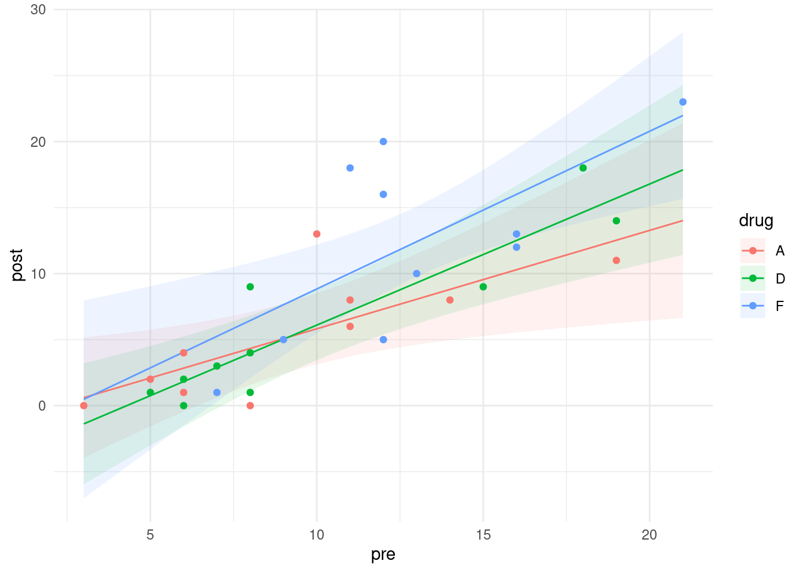
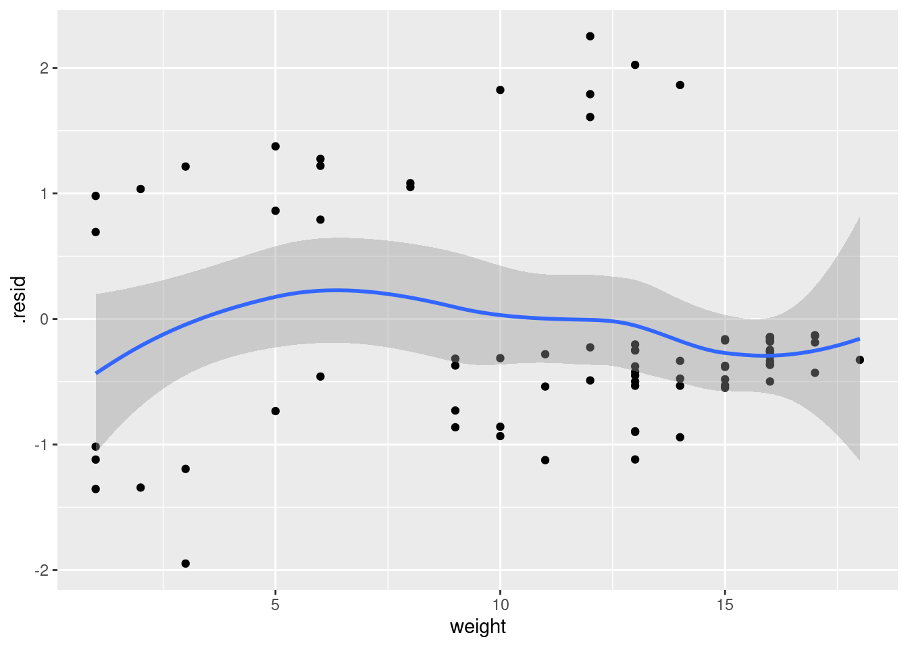
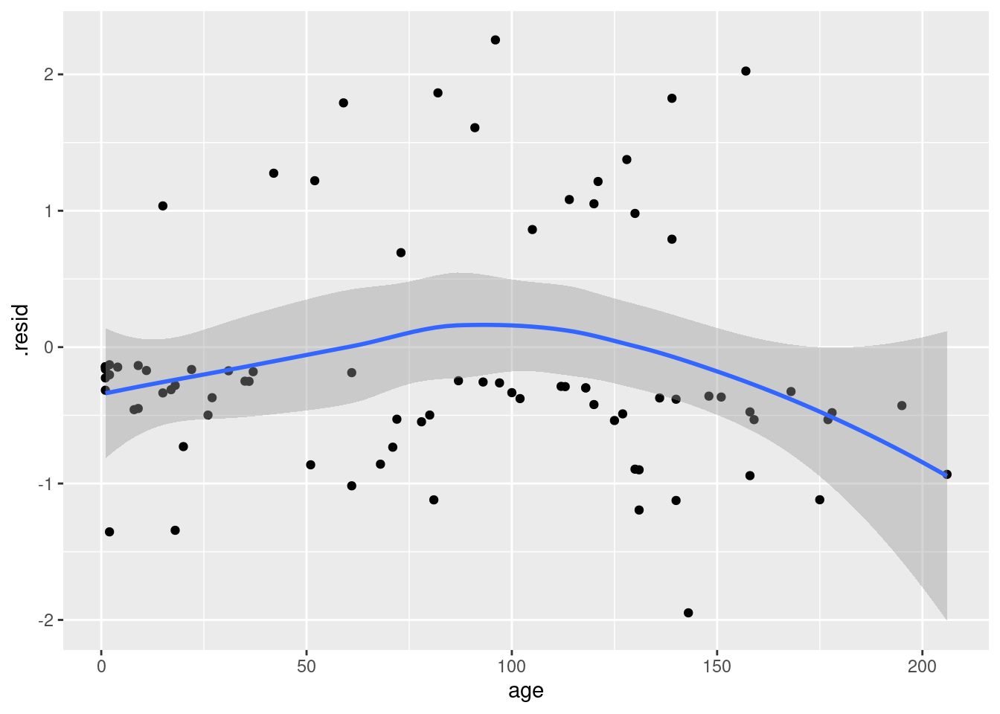
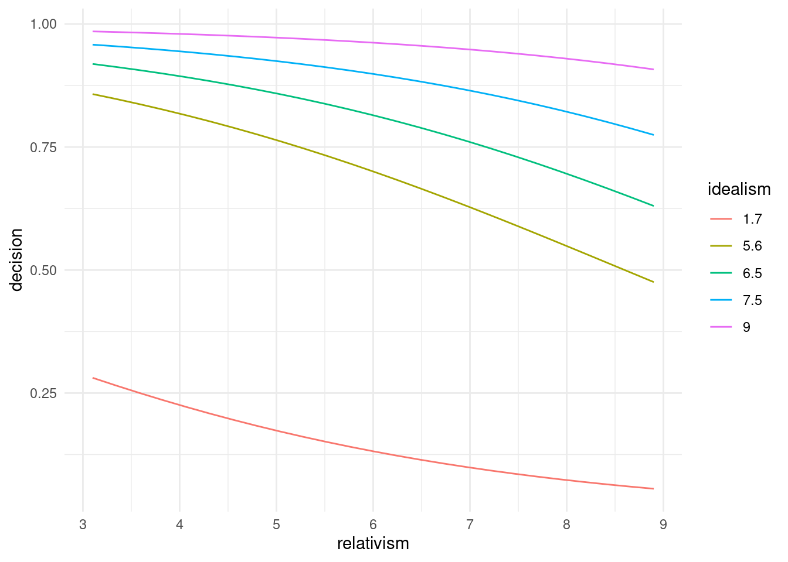
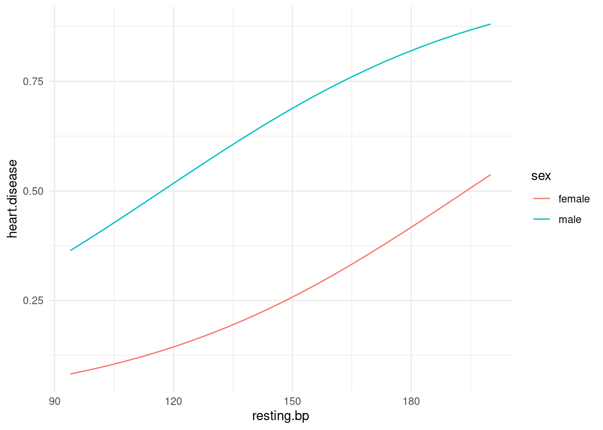

Chapter 26 Logistic regression
library(tidyverse)26.1 Finding wolf spiders on the beach
A team of Japanese researchers were investigating what would cause the burrowing wolf spider Lycosa ishikariana* to be found on a beach. They hypothesized that it had to do with the size of the grains of sand on the beach. They went to 28 beaches in Japan, measured the average sand grain size (in millimetres), and observed the presence or absence of this particular spider on each beach. The data are in link.
Why would logistic regression be better than regular regression in this case?
Read in the data and check that you have something sensible. (Look at the data file first: the columns are aligned but the headers are not aligned with them.)
Make a boxplot of sand grain size according to whether the spider is present or absent. Does this suggest that sand grain size has something to do with presence or absence of the spider?
Fit a logistic regression predicting the presence or absence of spiders from the grain size, and obtain its
summary. Note that you will need to do something with the response variable first.Is there a significant relationship between grain size and presence or absence of spiders at the \(\alpha=0.10\) level? Explain briefly.
Obtain predicted probabilities of spider presence for a representative collection of grain sizes. I only want predicted probabilities, not any kind of intervals.
Given your previous work in this question, does the trend you see in your predicted probabilities surprise you? Explain briefly.
26.2 Killing aphids
An experiment was designed to examine how well the insecticide rotenone kills aphids that feed on the chrysanthemum plant called Macrosiphoniella sanborni. The explanatory variable is the log concentration (in milligrams per litre) of the insecticide. At each of the five different concentrations, approximately 50 insects were exposed. The number of insects exposed at each concentration, and the number killed, are shown below.
Log-Concentration Insects exposed Number killed
0.96 50 6
1.33 48 16
1.63 46 24
2.04 49 42
2.32 50 44
Get these data into R. You can do this by copying the data into a file and reading that into R (creating a data frame), or you can enter the data manually into R using
c, since there are not many values. In the latter case, you can create a data frame or not, as you wish. Demonstrate that you have the right data in R.* Looking at the data, would you expect there to be a significant effect of log-concentration? Explain briefly.
We are going to do a logistic regression to predict how likely an insect is to be killed, as it depends on the log-concentration. Create a suitable response variable, bearing in mind (i) that we have lots of insects exposed to each different concentration, and (ii) what needs to go into each column of the response.
Run a suitable logistic regression, and obtain a summary of the results.
Does your analysis support your answer to (here)? Explain briefly.
Obtain predicted probabilities of an insect’s being killed at each of the log-concentrations in the data set.
People in this kind of work are often interested in the “median lethal dose”. In this case, that would be the log-concentration of the insecticide that kills half the insects. Based on your predictions, roughly what do you think the median lethal dose is?
26.3 The effects of Substance A
In a dose-response experiment, animals (or cell cultures or human subjects) are exposed to some toxic substance, and we observe how many of them show some sort of response. In this experiment, a mysterious Substance A is exposed at various doses to 100 cells at each dose, and the number of cells at each dose that suffer damage is recorded. The doses were 10, 20, … 70 (mg), and the number of damaged cells out of 100 were respectively 10, 28, 53, 77, 91, 98, 99.
Find a way to get these data into R, and show that you have managed to do so successfully.
Would you expect to see a significant effect of dose for these data? Explain briefly.
Fit a logistic regression modelling the probability of a cell being damaged as it depends on dose. Display the results. (Comment on them is coming later.)
Does your output indicate that the probability of damage really does increase with dose? (There are two things here: is there really an effect, and which way does it go?)
Obtain predicted damage probabilities for some representative doses.
Draw a graph of the predicted probabilities, and to that add the observed proportions of damage at each dose. Hints: you will have to calculate the observed proportions first. See here, near the bottom, to find out how to add data to one of these graphs. The
geom_pointline is the one you need.
Looking at the predicted probabilities, would you say that the model fits well? Explain briefly.
26.4 What makes an animal get infected?
Some animals got infected with a parasite. We are interested in whether the likelihood of infection depends on any of the age, weight and sex of the animals. The data are at link. The values are separated by tabs.
Read in the data and take a look at the first few lines. Is this one animal per line, or are several animals with the same age, weight and sex (and infection status) combined onto one line? How can you tell?
* Make suitable plots or summaries of
infectedagainst each of the other variables. (You’ll have to think aboutsex, um, you’ll have to think about thesexvariable, because it too is categorical.) Anything sensible is OK here. You might like to think back to what we did in Question here for inspiration. (You can also investigatetable, which does cross-tabulations.)Which, if any, of your explanatory variables appear to be related to
infected? Explain briefly.Fit a logistic regression predicting
infectedfrom the other three variables. Display thesummary.* Which variables, if any, would you consider removing from the model? Explain briefly.
Are the conclusions you drew in (here) and (here) consistent, or not? Explain briefly.
* The first and third quartiles of
ageare 26 and 130; the first and third quartiles ofweightare 9 and 16. Obtain predicted probabilities for all combinations of these andsex. (You’ll need to start by making a new data frame, usingdatagridto get all the combinations.)
26.5 The brain of a cat
A large number (315) of psychology students were asked to imagine that they were serving on a university ethics committee hearing a complaint against animal research being done by a member of the faculty. The students were told that the surgery consisted of implanting a device called a cannula in each cat’s brain, through which chemicals were introduced into the brain and the cats were then given psychological tests. At the end of the study, the cats’ brains were subjected to histological analysis. The complaint asked that the researcher’s authorization to carry out the study should be withdrawn, and the cats should be handed over to the animal rights group that filed the complaint. It was suggested that the research could just as well be done with computer simulations.
All of the psychology students in the survey were told all of this. In addition, they read a statement by the researcher that no animal felt much pain at any time, and that computer simulation was not an adequate substitute for animal research. Each student was also given one of the following scenarios that explained the benefit of the research:
“cosmetic”: testing the toxicity of chemicals to be used in new lines of hair care products.
“theory”: evaluating two competing theories about the function of a particular nucleus in the brain.
“meat”: testing a synthetic growth hormone said to potentially increase meat production.
“veterinary”: attempting to find a cure for a brain disease that is killing domesticated cats and endangered species of wild cats.
“medical”: evaluating a potential cure for a debilitating disease that afflicts many young adult humans.
Finally, each student completed two questionnaires: one that would assess their “relativism”: whether or not they believe in universal moral principles (low score) or whether they believed that the appropriate action depends on the person and situation (high score). The second questionnaire assessed “idealism”: a high score reflects a belief that ethical behaviour will always lead to good consequences (and thus that if a behaviour leads to any bad consequences at all, it is unethical).36
After being exposed to all of that, each student stated their decision about whether the research should continue or stop.
I should perhaps stress at this point that no actual cats were harmed
in the collection of these data (which can be found as a .csv
file at
link). The
variables in the data set are these:
decision: whether the research should continue or stop (response)idealism: score on idealism questionnairerelativism: score on relativism questionnairegenderof studentscenarioof research benefits that the student read.
A more detailed discussion^(“[If you can believe it.] of this study is at link.
Read in the data and check by looking at the structure of your data frame that you have something sensible. Do not call your data frame
decision, since that’s the name of one of the variables in it.Fit a logistic regression predicting
decisionfromgender. Is there an effect of gender?To investigate the effect (or non-effect) of
gender, create a contingency table by feedingdecisionandgenderintotable. What does this tell you?* Is your slope for
genderin the previous logistic regression positive or negative? Is it applying to males or to females? Looking at the conclusions from your contingency table, what probability does that mean your logistic regression is actually modelling?Add the two variables
idealismandrelativismto your logistic regression. Do either or both of them add significantly to your model? Explain briefly.Add the variable
scenarioto your model. That is, fit a new model with that variable plus all the others.Use
anovato compare the models with and withoutscenario. You’ll have to add atest="Chisq"to youranova, to make sure that the test gets done. Doesscenariomake a difference or not, at \(\alpha=0.10\)? Explain briefly. (The reason we have to do it this way is thatscenariois a factor with five levels, so it has four slope coefficients. To test them all at once, which is what we need to make an overall test forscenario, this is the way it has to be done.)Look at the
summaryof your model that containedscenario. Bearing in mind that the slope coefficient forscenariocosmeticis zero (since this is the first scenario alphabetically), which scenarios have the most positive and most negative slope coefficients? What does that tell you about those scenarios’ effects?Describe the effects that having (i) a higher idealism score and (ii) a higher relativity score have on a person’s probability of saying that the research should stop. Do each of these increase or decrease that probability? Explain briefly.
26.6 How not to get heart disease
What is associated with heart disease? In a study, a large number of variables were measured, as follows:
age(years)sexmale or femalepain.typeChest pain type (4 values: typical angina, atypical angina, non-anginal pain, asymptomatic)resting.bpResting blood pressure, on admission to hospitalserum.cholSerum cholesterolhigh.blood.sugar: greater than 120, yes or noelectroresting electrocardiographic results (normal, having ST-T, hypertrophy)max.hrMaximum heart rateanginaExercise induced angina (yes or no)oldpeakST depression induced by exercise relative to rest. See link.slopeSlope of peak exercise ST segment. Sloping up, flat or sloping downcolorednumber of major vessels (0–3) coloured by fluoroscopythalnormal, fixed defect, reversible defectheart.diseaseyes, no (response)
I don’t know what most of those are, but we will not let that stand in our way. Our aim is to find out what variables are associated with heart disease, and what values of those variables give high probabilities of heart disease being present. The data are in link.
Read in the data. Display the first few lines and convince yourself that those values are reasonable.
In a logistic regression, what probability will be predicted here? Explain briefly but convincingly. (Is each line of the data file one observation or a summary of several?)
* Fit a logistic regression predicting heart disease from everything else (if you have a column called
XorX1, ignore that), and display the results.Quite a lot of our explanatory variables are factors. To assess whether the factor as a whole should stay or can be removed, looking at the slopes won’t help us very much (since they tell us whether the other levels of the factor differ from the baseline, which may not be a sensible comparison to make). To assess which variables are candidates to be removed, factors included (properly), we can use
drop1. Feeddrop1a fitted model and the wordstest="Chisq"(take care of the capitalization!) and you’ll get a list of P-values. Which variable is the one that you would remove first? Explain briefly.I’m not going to make you do the whole backward elimination (I’m going to have you use
stepfor that later), but do one step: that is, fit a model removing the variable you think should be removed, usingupdate, and then rundrop1again to see which variable will be removed next.Use
stepto do a backward elimination to find which variables have an effect on heart disease. Display your final model (which you can do by saving the output fromstepin a variable, and asking for the summary of that. Instep, you’ll need to specify a starting model (the one from part (here)), the direction of elimination, and the test to display the P-value for (the same one as you used indrop1). (Note: the actual decision to keep or drop explanatory variables is based on AIC rather than the P-value, with the result thatstepwill sometimes keep variables you would have dropped, with P-values around 0.10.)Display the summary of the model that came out of
step.We are going to make a large number of predictions. Create and save a data frame that contains predictions for all combinations of representative values for all the variables in the model that came out of
step. By “representative” I mean all the values for a categorical variable, and the five-number summary for a numeric variable. (Note that you will get a lot of predictions.)Find the largest predicted probability (which is the predicted probability of heart disease) and display all the variables that it was a prediction for.
Compare the
summaryof the final model fromstepwith your highest predicted heart disease probability and the values of the other variables that make it up. Are they consistent?
26.7 Successful breastfeeding
A regular pregnancy lasts 40 weeks, and a baby that is born at or before 33 weeks is called “premature”. The number of weeks at which a baby is born is called its “gestational age”. Premature babies are usually smaller than normal and may require special care. It is a good sign if, when the mother and baby leave the hospital to go home, the baby is successfully breastfeeding.
The data in link are from a study of 64 premature infants. There are three columns: the gestational age (a whole number of weeks), the number of babies of that gestational age that were successfully breastfeeding when they left the hospital, and the number that were not. (There were multiple babies of the same gestational age, so the 64 babies are summarized in 6 rows of data.)
Read the data into R and display the data frame.
Verify that there were indeed 64 infants, by having R do a suitable calculation on your data frame that gives the right answer for the right reason.
Do you think, looking at the data, that there is a relationship between gestational age and whether or not the baby was successfully breastfeeding when it left the hospital? Explain briefly.
Why is logistic regression a sensible technique to use here? Explain briefly.
Fit a logistic regression to predict the probability that an infant will be breastfeeding from its gestational age. Show the output from your logistic regression.
Does the significance or non-significance of the slope of
gest.agesurprise you? Explain briefly.Is your slope (in the
Estimatecolumn) positive or negative? What does that mean, in terms of gestational ages and breastfeeding? Explain briefly.Obtain the predicted probabilities that an infant will successfully breastfeed for a representative collection of gestational ages.
26.8 Making it over the mountains
In 1846, the Donner party (Donner and Reed families) left Springfield, Illinois for California in covered wagons. After reaching Fort Bridger, Wyoming, the leaders decided to find a new route to Sacramento. They became stranded in the eastern Sierra Nevada mountains at a place now called Donner Pass, when the region was hit by heavy snows in late October. By the time the survivors were rescued on April 21, 1847, 40 out of 87 had died.
After the rescue, the age and gender of each person in the party was recorded, along with whether they survived or not. The data are in link.
Read in the data and display its structure. Does that agree with the description in the previous paragraph?
Make graphical or numerical summaries for each pair of variables. That is, you should make a graph or numerical summary for each of
agevs.gender,agevs.
survivedandgendervs.survived. In choosing the kind of graph or summary that you will use, bear in mind thatsurvivedandgenderare factors with two levels.For each of the three graphs or summaries in the previous question, what do they tell you about the relationship between the pair of variables concerned? Explain briefly.
Fit a logistic regression predicting survival from age and gender. Display the summary.
Do both explanatory variables have an impact on survival? Does that seem to be consistent with your numerical or graphical summaries? Explain briefly.
Are the men typically older, younger or about the same age as the women? Considering this, explain carefully what the negative
gendermaleslope in your logistic regression means.Obtain predicted probabilities of survival for each combination of some representative ages and of the two genders in this dataset.
Do your predictions support your conclusions from earlier about the effects of age and gender? Explain briefly.
26.9 Who needs the most intensive care?
The “APACHE II” is a scale for assessing patients who arrive in the intensive care unit (ICU) of a hospital. These are seriously ill patients who may die despite the ICU’s best attempts. APACHE stands for “Acute Physiology And Chronic Health Evaluation”.37 The scale score is calculated from several physiological measurements such as body temperature, heart rate and the Glasgow coma scale, as well as the patient’s age. The final result is a score between 0 and 71, with a higher score indicating more severe health issues. Is it true that a patient with a higher APACHE II score has a higher probability of dying?
Data from one hospital are in link. The columns are: the APACHE II score, the total number of patients who had that score, and the number of patients with that score who died.
Read in and display the data (however much of it displays). Why are you convinced that have the right thing?
Does each row of the data frame relate to one patient or sometimes to more than one? Explain briefly.
Explain why this is the kind of situation where you need a two-column response, and create this response variable, bearing in mind that I will (later) want you to estimate the probability of dying, given the
apachescore.Fit a logistic regression to estimate the probability of death from the
apachescore, and display the results.Is there a significant effect of
apachescore on the probability of survival? Explain briefly.Is the effect of a larger
apachescore to increase or to decrease the probability of death? Explain briefly.Obtain the predicted probability of death for a representative collection of the
apachescores that were in the data set. Do your predictions behave as you would expect (from your earlier work)?Make a plot of predicted death probability against
apachescore (joined by lines) with, also on the plot, the observed proportion of deaths within eachapachescore, plotted againstapachescore. Does there seem to be good agreement between observation and prediction? Hint: calculate what you need to from the original dataframe first, save it, then make a plot of the predictions, and then to the plot add the appropriate thing from the dataframe you just saved.
26.10 Go away and don’t come back!
When a person has a heart attack and survives it, the major concern of health professionals is to prevent the person having a second heart attack. Two factors that are believed to be important are anger and anxiety; if a heart attack survivor tends to be angry or anxious, they are believed to put themselves at increased risk of a second heart attack.
Twenty heart attack survivors took part in a study. Each one was given
a test designed to assess their anxiety (a higher score on the test
indicates higher anxiety), and some of the survivors took an anger
management course.
The data are in
link; y and
n denote “yes” and “no” respectively. The columns denote
(i) whether or not the person had a second heart attack, (ii) whether
or not the person took the anger management class, (iii) the anxiety
score.
Read in and display the data.
* Fit a logistic regression predicting whether or not a heart attack survivor has a second heart attack, as it depends on anxiety score and whether or not the person took the anger management class. Display the results.
In the previous part, how can you tell that you were predicting the probability of having a second heart attack (as opposed to the probability of not having one)?
* For the two possible values
yandnofangerand the anxiety scores 40, 50 and 60, make a data frame containing all six combinations, and use it to obtain predicted probabilities of a second heart attack. Display your predicted probabilities side by side with what they are predictions for.Use your predictions from the previous part to describe the effect of changes in
anxietyandangeron the probability of a second heart attack.Are the effects you described in the previous part consistent with the
summaryoutput fromglmthat you obtained in (here)? Explain briefly how they are, or are not. (You need an explanation for each ofanxietyandanger, and you will probably get confused if you look at the P-values, so don’t.)
My solutions follow:
26.11 Finding wolf spiders on the beach
A team of Japanese researchers were investigating what would cause the burrowing wolf spider Lycosa ishikariana* to be found on a beach. They hypothesized that it had to do with the size of the grains of sand on the beach. They went to 28 beaches in Japan, measured the average sand grain size (in millimetres), and observed the presence or absence of this particular spider on each beach. The data are in link.
- Why would logistic regression be better than regular regression in this case?
Solution
Because the response variable, whether or not the spider is present, is a categorical yes/no success/failure kind of variable rather than a quantitative numerical one, and when you have this kind of response variable, this is when you want to use logistic regression.
\(\blacksquare\)
- Read in the data and check that you have something sensible. (Look at the data file first: the columns are aligned but the headers are not aligned with them.)
Solution
The nature of the file means that you need read_table2:
my_url <- "http://ritsokiguess.site/datafiles/spiders.txt"
spider <- read_table2(my_url)## Warning: `read_table2()` was deprecated in readr 2.0.0.
## Please use `read_table()` instead.##
## ── Column specification ────────────────────────────────────────────────────────
## cols(
## Grain.size = col_double(),
## Spiders = col_character()
## )spider## # A tibble: 28 × 2
## Grain.size Spiders
## <dbl> <chr>
## 1 0.245 absent
## 2 0.247 absent
## 3 0.285 present
## 4 0.299 present
## 5 0.327 present
## 6 0.347 present
## 7 0.356 absent
## 8 0.36 present
## 9 0.363 absent
## 10 0.364 present
## # … with 18 more rowsWe have a numerical sand grain size and a categorical variable
Spiders that indicates whether the spider was present or
absent. As we were expecting. (The categorical variable is actually
text or chr, which will matter in a minute.)
\(\blacksquare\)
- Make a boxplot of sand grain size according to whether the spider is present or absent. Does this suggest that sand grain size has something to do with presence or absence of the spider?
Solution
ggplot(spider, aes(x = Spiders, y = Grain.size)) + geom_boxplot()
The story seems to be that when spiders are present, the sand grain size tends to be larger. So we would expect to find some kind of useful relationship in the logistic regression.
Note that we have reversed the cause and effect here: in the boxplot we are asking “given that the spider is present or absent, how big are the grains of sand?”, whereas the logistic regression is asking “given the size of the grains of sand, how likely is the spider to be present?”. But if one variable has to do with the other, we would hope to see the link either way around.
\(\blacksquare\)
- Fit a logistic regression predicting the presence or
absence of spiders from the grain size, and obtain its
summary. Note that you will need to do something with the response variable first.
Solution
The presence or absence of spiders is our response. This is actually text at the moment:
spider## # A tibble: 28 × 2
## Grain.size Spiders
## <dbl> <chr>
## 1 0.245 absent
## 2 0.247 absent
## 3 0.285 present
## 4 0.299 present
## 5 0.327 present
## 6 0.347 present
## 7 0.356 absent
## 8 0.36 present
## 9 0.363 absent
## 10 0.364 present
## # … with 18 more rowsso we need to make a factor version of it first. I’m going to live on the edge and overwrite everything:
spider <- spider %>% mutate(Spiders = factor(Spiders))
spider## # A tibble: 28 × 2
## Grain.size Spiders
## <dbl> <fct>
## 1 0.245 absent
## 2 0.247 absent
## 3 0.285 present
## 4 0.299 present
## 5 0.327 present
## 6 0.347 present
## 7 0.356 absent
## 8 0.36 present
## 9 0.363 absent
## 10 0.364 present
## # … with 18 more rowsSpiders is now a factor, correctly. (Sometimes a text
variable gets treated as a factor, sometimes it needs to be an
explicit factor. This is one of those times.)
Now we go ahead and fit the model. I’m naming this as
response-with-a-number, so I still have the Capital Letter. Any choice
of name is good, though.
Spiders.1 <- glm(Spiders ~ Grain.size, family = "binomial", data = spider)
summary(Spiders.1)##
## Call:
## glm(formula = Spiders ~ Grain.size, family = "binomial", data = spider)
##
## Deviance Residuals:
## Min 1Q Median 3Q Max
## -1.7406 -1.0781 0.4837 0.9809 1.2582
##
## Coefficients:
## Estimate Std. Error z value Pr(>|z|)
## (Intercept) -1.648 1.354 -1.217 0.2237
## Grain.size 5.122 3.006 1.704 0.0884 .
## ---
## Signif. codes: 0 '***' 0.001 '**' 0.01 '*' 0.05 '.' 0.1 ' ' 1
##
## (Dispersion parameter for binomial family taken to be 1)
##
## Null deviance: 35.165 on 27 degrees of freedom
## Residual deviance: 30.632 on 26 degrees of freedom
## AIC: 34.632
##
## Number of Fisher Scoring iterations: 5\(\blacksquare\)
- Is there a significant relationship between grain size and presence or absence of spiders at the \(\alpha=0.10\) level? Explain briefly.
Solution
The P-value on the Grain.size line is just less
than 0.10 (it is 0.088), so there is just a significant
relationship.
It isn’t a very strong significance, though. This
might be because we don’t have that much data: even though we have
28 observations, which, on the face of it, is not a very small
sample size, each observation doesn’t tell us much: only whether
the spider was found on that beach or not. Typical sample sizes in
logistic regression are in the hundreds — the same as for
opinion polls, because you’re dealing with the same kind of data.
The weak significance here lends some kind of weak support to the
researchers’ hypothesis, but I’m sure they were hoping for
something better.
\(\blacksquare\)
- Obtain predicted probabilities of spider presence for a representative collection of grain sizes. I only want predicted probabilities, not any kind of intervals.
Solution
predictions(Spiders.1, variables = "Grain.size")## rowid type predicted std.error conf.low conf.high Spiders Grain.size
## 1 1 response 0.4030327 0.16808179 0.1465301 0.7263914 present 0.2450
## 2 2 response 0.5463394 0.11961825 0.3186411 0.7561720 present 0.3580
## 3 3 response 0.6310484 0.10165243 0.4209178 0.8009817 present 0.4265
## 4 4 response 0.8186535 0.10658512 0.5250085 0.9485530 present 0.6160
## 5 5 response 0.9759763 0.04478621 0.4901491 0.9994179 present 1.0450Another way to do this is to make a data frame of values to predict from directly, using tribble or for that matter datagrid. For some reason, I chose these four values:
new <- tribble(
~Grain.size,
0.2,
0.5,
0.8,
1.1
)
new## # A tibble: 4 × 1
## Grain.size
## <dbl>
## 1 0.2
## 2 0.5
## 3 0.8
## 4 1.1and then
predictions(Spiders.1, newdata = new)## rowid type predicted std.error conf.low conf.high Grain.size
## 1 1 response 0.3490280 0.18372874 0.09901501 0.7234397 0.2
## 2 2 response 0.7136446 0.10002065 0.48846714 0.8667406 0.5
## 3 3 response 0.9205335 0.08814352 0.52197892 0.9919281 0.8
## 4 4 response 0.9817663 0.03708142 0.48153846 0.9996797 1.1One of the above is all I need. I prefer the first one, since that way we don’t even have to decide what th e representative values are.
Extra:
Note that the probabilities don’t go up linearly. (If they did, they would soon get bigger than 1!). It’s actually the log-odds that go up linearly.
To verify this, you can add a type to the predictions:
predictions(Spiders.1, newdata = new, type = "link")## rowid type predicted std.error conf.low conf.high Grain.size
## 1 1 link -0.6233144 0.8086387 -2.20821718 0.9615883 0.2
## 2 2 link 0.9131514 0.4894432 -0.04613964 1.8724424 0.5
## 3 3 link 2.4496172 1.2049430 0.08797237 4.8112621 0.8
## 4 4 link 3.9860831 2.0714477 -0.07387976 8.0460459 1.1This one, as you see shortly, makes more sense with equally-spaced grain sizes.
The meaning of that slope coefficient in the summary, which
is about 5, is that if you increase grain size by 1, you increase the
log-odds by 5. In the table above, we increased the grain size by 0.3
each time, so we would expect to increase the log-odds by
\((0.3)(5)=1.5\), which is (to this accuracy) what happened.
Log-odds are hard to interpret. Odds are a bit easier, and to get
them, we have to exp the log-odds:
predictions(Spiders.1, newdata = new, type = "link") %>%
mutate(exp_pred = exp(predicted))## rowid type predicted std.error conf.low conf.high Grain.size exp_pred
## 1 1 link -0.6233144 0.8086387 -2.20821718 0.9615883 0.2 0.5361644
## 2 2 link 0.9131514 0.4894432 -0.04613964 1.8724424 0.5 2.4921640
## 3 3 link 2.4496172 1.2049430 0.08797237 4.8112621 0.8 11.5839120
## 4 4 link 3.9860831 2.0714477 -0.07387976 8.0460459 1.1 53.8435749Thus, with each step of 0.3 in grain size, we multiply the odds of finding a spider by about
exp(1.5)## [1] 4.481689or about 4.5 times. If you’re a gambler, this might give you a feel for how large the effect of grain size is. Or, of course, you can just look at the probabilities.
\(\blacksquare\)
- Given your previous work in this question, does the trend you see in your predicted probabilities surprise you? Explain briefly.
Solution
My predicted probabilities go up as grain size goes up. This fails
to surprise me for a couple of reasons: first, in my boxplots, I
saw that grain size tended to be larger when spiders were present,
and second, in my logistic regression summary, the slope
was positive, so likewise spiders should be more likely as grain
size goes up. Observing just one of these things is enough, though
of course it’s nice if you can spot both.
\(\blacksquare\)
26.12 Killing aphids
An experiment was designed to examine how well the insecticide rotenone kills aphids that feed on the chrysanthemum plant called Macrosiphoniella sanborni. The explanatory variable is the log concentration (in milligrams per litre) of the insecticide. At each of the five different concentrations, approximately 50 insects were exposed. The number of insects exposed at each concentration, and the number killed, are shown below.
Log-Concentration Insects exposed Number killed
0.96 50 6
1.33 48 16
1.63 46 24
2.04 49 42
2.32 50 44
- Get these data into R. You can do this by copying the data
into a file and reading that into R (creating a data frame), or you
can enter the data manually into R using
c, since there are not many values. In the latter case, you can create a data frame or not, as you wish. Demonstrate that you have the right data in R.
Solution
There are a couple of ways. My
current favourite is the tidyverse-approved
tribble method. A tribble is a
“transposed tibble”, in which you copy and paste the data,
inserting column headings and commas in the right places. The
columns don’t have to line up, since it’s the commas that
determine where one value ends and the next one begins:
dead_bugs <- tribble(
~log_conc, ~exposed, ~killed,
0.96, 50, 6,
1.33, 48, 16,
1.63, 46, 24,
2.04, 49, 42,
2.32, 50, 44
)
dead_bugs## # A tibble: 5 × 3
## log_conc exposed killed
## <dbl> <dbl> <dbl>
## 1 0.96 50 6
## 2 1.33 48 16
## 3 1.63 46 24
## 4 2.04 49 42
## 5 2.32 50 44Note that the last data value has no comma after it, but instead has
the closing bracket of tribble.
You can have extra spaces if you wish. They will just be ignored.
If you are clever in R
Studio, you can insert a column of commas all at once (using
“multiple cursors”).
I used to do it like this. I make vectors of each column using c and then glue the columns together into a data frame:
log_conc <- c(0.96, 1.33, 1.63, 2.04, 2.32)
exposed <- c(50, 48, 46, 49, 50)
killed <- c(6, 16, 24, 42, 44)
dead_bugs2 <- tibble(log_conc, exposed, killed)
dead_bugs2## # A tibble: 5 × 3
## log_conc exposed killed
## <dbl> <dbl> <dbl>
## 1 0.96 50 6
## 2 1.33 48 16
## 3 1.63 46 24
## 4 2.04 49 42
## 5 2.32 50 44The values are correct — I checked them.
Now you see why tribble stands for “transposed tibble”: if you want to construct a data frame by hand, you have to work with columns and then glue them together, but tribble allows you to work “row-wise” with the data as you would lay it out on the page.
The other obvious way to read the data values without typing them is to copy
them into a file and read that. The values as laid out are
aligned in columns. They might be separated by tabs, but they are
not. (It’s hard to tell without investigating, though a tab is by
default eight spaces and these values look farther apart than that.)
I copied them into a file exposed.txt in my current folder
(or use file.choose):
bugs2 <- read_table("exposed.txt")## Warning: Missing column names filled in: 'X6' [6]##
## ── Column specification ────────────────────────────────────────────────────────
## cols(
## `Log-Concentration` = col_double(),
## Insects = col_double(),
## exposed = col_double(),
## Number = col_logical(),
## killed = col_character(),
## X6 = col_character()
## )## Warning: 5 parsing failures.
## row col expected actual file
## 1 -- 6 columns 4 columns 'exposed.txt'
## 2 -- 6 columns 4 columns 'exposed.txt'
## 3 -- 6 columns 4 columns 'exposed.txt'
## 4 -- 6 columns 4 columns 'exposed.txt'
## 5 -- 6 columns 4 columns 'exposed.txt'bugs2## # A tibble: 5 × 6
## `Log-Concentration` Insects exposed Number killed X6
## <dbl> <dbl> <dbl> <lgl> <chr> <chr>
## 1 0.96 50 6 NA <NA> <NA>
## 2 1.33 48 16 NA <NA> <NA>
## 3 1.63 46 24 NA <NA> <NA>
## 4 2.04 49 42 NA <NA> <NA>
## 5 2.32 50 44 NA <NA> <NA>This didn’t quite work: the last column Number killed got
split into two, with the actual number killed landing up in
Number and the column killed being empty. If you
look at the data file, the data values for Number killed are
actually aligned with the word Number, which is why it came
out this way. Also, you’ll note, the column names have those
“backticks” around them, because they contain illegal characters
like a minus sign and spaces. Perhaps a good way to
pre-empt38 all these problems is to
make a copy of the data file with the illegal characters replaced by
underscores, which is my file exposed2.txt:
bugs2 <- read_table("exposed2.txt")## Warning: Missing column names filled in: 'X4' [4]##
## ── Column specification ────────────────────────────────────────────────────────
## cols(
## Log_Concentration = col_double(),
## Insects_exposed = col_double(),
## Number_killed = col_double(),
## X4 = col_logical()
## )bugs2## # A tibble: 5 × 4
## Log_Concentration Insects_exposed Number_killed X4
## <dbl> <dbl> <dbl> <lgl>
## 1 0.96 50 6 NA
## 2 1.33 48 16 NA
## 3 1.63 46 24 NA
## 4 2.04 49 42 NA
## 5 2.32 50 44 NAThis is definitely good. We’d have to be careful with Capital Letters this way, but it’s definitely good.
You may have thought that this was a lot of fuss to make about reading in data, but the point is that data can come your way in lots of different forms, and you need to be able to handle whatever you receive so that you can do some analysis with it.
\(\blacksquare\)
- * Looking at the data, would you expect there to be a significant effect of log-concentration? Explain briefly.
Solution
The numbers of insects killed goes up sharply as the concentration increases, while the numbers of insects exposed don’t change much. So I would expect to see a strong, positive effect of concentration, and I would expect it to be strongly significant, especially since we have almost 250 insects altogether.
\(\blacksquare\)
- We are going to do a logistic regression to predict how likely an insect is to be killed, as it depends on the log-concentration. Create a suitable response variable, bearing in mind (i) that we have lots of insects exposed to each different concentration, and (ii) what needs to go into each column of the response.
Solution
There needs to be a two-column response variable. The first column needs to be the number of “successes” (insects killed, here) and the second needs to be the number of “failures” (insects that survived). We don’t actually have the latter, but we know how many insects were exposed in total to each dose, so we can work it out. Like this:
dead_bugs %>%
mutate(survived = exposed - killed) %>%
select(killed, survived) %>%
as.matrix() -> response
response## killed survived
## [1,] 6 44
## [2,] 16 32
## [3,] 24 22
## [4,] 42 7
## [5,] 44 6glm requires an R matrix rather than a data
frame, so the last stage of our pipeline is to create one (using the
same numbers that are in the data frame: all the as.
functions do is to change what type of thing it is, without changing
its contents).
It’s also equally good to create the response outside of the
data frame and use cbind to glue its columns together:
resp2 <- with(
dead_bugs,
cbind(killed, survived = exposed - killed)
)
resp2## killed survived
## [1,] 6 44
## [2,] 16 32
## [3,] 24 22
## [4,] 42 7
## [5,] 44 6\(\blacksquare\)
- Run a suitable logistic regression, and obtain a summary of the results.
Solution
I think you know how to do this by now:
bugs.1 <- glm(response ~ log_conc, family = "binomial", data = dead_bugs)
summary(bugs.1)##
## Call:
## glm(formula = response ~ log_conc, family = "binomial", data = dead_bugs)
##
## Deviance Residuals:
## 1 2 3 4 5
## -0.1963 0.2099 -0.2978 0.8726 -0.7222
##
## Coefficients:
## Estimate Std. Error z value Pr(>|z|)
## (Intercept) -4.8923 0.6426 -7.613 2.67e-14 ***
## log_conc 3.1088 0.3879 8.015 1.11e-15 ***
## ---
## Signif. codes: 0 '***' 0.001 '**' 0.01 '*' 0.05 '.' 0.1 ' ' 1
##
## (Dispersion parameter for binomial family taken to be 1)
##
## Null deviance: 96.6881 on 4 degrees of freedom
## Residual deviance: 1.4542 on 3 degrees of freedom
## AIC: 24.675
##
## Number of Fisher Scoring iterations: 4\(\blacksquare\)
- Does your analysis support your answer to (here)? Explain briefly.
Solution
That’s a very small P-value, \(1.1\times 10^{-15}\), on
log_conc, so there is no doubt that concentration has an
effect on an insect’s chances of being killed. This is exactly what
I guessed in (here), which I did before looking at the
results, honest!
\(\blacksquare\)
- Obtain predicted probabilities of an insect’s being killed at each of the log-concentrations in the data set.
Solution
Use a newdata that is the original dataframe:
predictions(bugs.1, newdata = dead_bugs)## rowid type predicted std.error conf.low conf.high log_conc exposed
## 1 1 response 0.1292158 0.03339589 0.07658828 0.2097905 0.96 50
## 2 2 response 0.3191540 0.04175556 0.24337005 0.4058775 1.33 48
## 3 3 response 0.5436313 0.03975938 0.46527369 0.6198873 1.63 46
## 4 4 response 0.8099321 0.03581115 0.72980384 0.8705139 2.04 49
## 5 5 response 0.9105221 0.02609660 0.84451589 0.9501610 2.32 50
## killed
## 1 6
## 2 16
## 3 24
## 4 42
## 5 44The advantage of this is that you can compare the observed with the predicted. For example, 44 out of 50 insects were killed at log-dose 2.32, which is a proportion of 0.88, pretty close to the prediction of 0.91.
Extra: you could also make a plot of these:
plot_cap(bugs.1, condition = "log_conc")
As the log-concentration goes up, you can see how clearly the probability of the aphid being killed goes up. The confidence band is narrow because there is lots of data (almost 250 aphids altogether).
\(\blacksquare\)
- People in this kind of work are often interested in the “median lethal dose”. In this case, that would be the log-concentration of the insecticide that kills half the insects. Based on your predictions, roughly what do you think the median lethal dose is?
Solution
The log-concentration of 1.63 is predicted to kill just over half the insects, so the median lethal dose should be a bit less than 1.63. It should not be as small as 1.33, though, since that log-concentration only kills less than a third of the insects. So I would guess somewhere a bit bigger than 1.5. Any guess somewhere in this ballpark is fine: you really cannot be very accurate.
If you read through the Extra to the previous part (or at least looked at the graph), the median lethal dose is where the curve of predictions passes through 0.5 on the \(y\)-axis. This is at a log-concentration of just less than 1.6; if you judge from the scale where the crossing-point is, it’s something like 1.57.
Extra: this is kind of a strange prediction problem, because we know what the response variable should be, and we want to know what the explanatory variable’s value is. Normally we do predictions the other way around.39 So the only way to get a more accurate figure is to try some different log-concentrations, and see which one gets closest to a probability 0.5 of killing the insect.
Something like this would work:
new <- datagrid(model = bugs.1, log_conc = seq(1.5, 1.63, 0.01))
predictions(bugs.1, newdata = new)## rowid type predicted std.error conf.low conf.high log_conc
## 1 1 response 0.4429568 0.04071647 0.3652634 0.5235451 1.50
## 2 2 response 0.4506406 0.04062607 0.3729178 0.5308493 1.51
## 3 3 response 0.4583480 0.04053684 0.3805961 0.5381827 1.52
## 4 4 response 0.4660754 0.04044939 0.3882935 0.5455426 1.53
## 5 5 response 0.4738191 0.04036423 0.3960050 0.5529261 1.54
## 6 6 response 0.4815754 0.04028186 0.4037257 0.5603301 1.55
## 7 7 response 0.4893406 0.04020268 0.4114509 0.5677514 1.56
## 8 8 response 0.4971110 0.04012706 0.4191760 0.5751867 1.57
## 9 9 response 0.5048827 0.04005529 0.4268962 0.5826324 1.58
## 10 10 response 0.5126521 0.03998759 0.4346071 0.5900851 1.59
## 11 11 response 0.5204154 0.03992410 0.4423044 0.5975408 1.60
## 12 12 response 0.5281689 0.03986491 0.4499840 0.6049958 1.61
## 13 13 response 0.5359087 0.03981003 0.4576417 0.6124460 1.62
## 14 14 response 0.5436313 0.03975938 0.4652737 0.6198873 1.63The closest one of these to a probability of 0.5 is 0.4971, which goes
with a log-concentration of 1.57: indeed, a bit bigger than 1.5 and a
bit less than 1.63, and close to what I read off from my graph. The seq in the construction of the new
data frame is “fill sequence”: go from 1.5 to 1.63 in steps of
0.01. We are predicting for values of log_conc that we chose, so the way to go is to make a new dataframe with datagrid and then feed that into predictions with newdata.
Now, of course this is only our “best guess”, like a single-number prediction in regression. There is uncertainty attached to it (because the actual logistic regression might be different from the one we estimated), so we ought to provide a confidence interval for it. But I’m riding the bus as I type this, so I can’t look it up right now.
Later: there’s a function called dose.p
in MASS that appears to do this:
lethal <- dose.p(bugs.1)
lethal## Dose SE
## p = 0.5: 1.573717 0.05159576We have a sensible point estimate (the same 1.57 that we got by hand), and we have a standard error, so we can make a confidence interval by going up and down twice it (or 1.96 times it) from the estimate. The structure of the result is a bit arcane, though:
str(lethal)## 'glm.dose' Named num 1.57
## - attr(*, "names")= chr "p = 0.5:"
## - attr(*, "SE")= num [1, 1] 0.0516
## ..- attr(*, "dimnames")=List of 2
## .. ..$ : chr "p = 0.5:"
## .. ..$ : NULL
## - attr(*, "p")= num 0.5It is what R calls a “vector with attributes”. To get at the pieces and calculate the interval, we have to do something like this:
(lethal_est <- as.numeric(lethal))## [1] 1.573717(lethal_SE <- as.vector(attr(lethal, "SE")))## [1] 0.05159576and then make the interval:
lethal_est + c(-2, 2) * lethal_SE## [1] 1.470526 1.6769091.47 to 1.68.
I got this idea from page 4.14 of link. I think I got a little further than he did. An idea that works more generally is to get several intervals all at once, say for the “quartile lethal doses” as well:
lethal <- dose.p(bugs.1, p = c(0.25, 0.5, 0.75))
lethal## Dose SE
## p = 0.25: 1.220327 0.07032465
## p = 0.50: 1.573717 0.05159576
## p = 0.75: 1.927108 0.06532356This looks like a data frame or matrix, but is actually a
“named vector”, so enframe will get at least some of this and turn
it into a genuine data frame:
enframe(lethal)## # A tibble: 3 × 2
## name value
## <chr> <glm.dose>
## 1 p = 0.25: 1.220327
## 2 p = 0.50: 1.573717
## 3 p = 0.75: 1.927108That doesn’t get the SEs, so we’ll make a new column by grabbing the “attribute” as above:
enframe(lethal) %>% mutate(SE = attr(lethal, "SE"))## # A tibble: 3 × 3
## name value SE[,1]
## <chr> <glm.dose> <dbl>
## 1 p = 0.25: 1.220327 0.0703
## 2 p = 0.50: 1.573717 0.0516
## 3 p = 0.75: 1.927108 0.0653and now we make the intervals by making new columns containing the lower and upper limits:
enframe(lethal) %>%
mutate(SE = attr(lethal, "SE")) %>%
mutate(LCL = value - 2 * SE, UCL = value + 2 * SE)## # A tibble: 3 × 5
## name value SE[,1] LCL[,1] UCL[,1]
## <chr> <glm.dose> <dbl> <dbl> <dbl>
## 1 p = 0.25: 1.220327 0.0703 1.08 1.36
## 2 p = 0.50: 1.573717 0.0516 1.47 1.68
## 3 p = 0.75: 1.927108 0.0653 1.80 2.06Now we have intervals for the median lethal dose, as well as for the doses that kill a quarter and three quarters of the aphids.
\(\blacksquare\)
26.13 The effects of Substance A
In a dose-response experiment, animals (or cell cultures or human subjects) are exposed to some toxic substance, and we observe how many of them show some sort of response. In this experiment, a mysterious Substance A is exposed at various doses to 100 cells at each dose, and the number of cells at each dose that suffer damage is recorded. The doses were 10, 20, … 70 (mg), and the number of damaged cells out of 100 were respectively 10, 28, 53, 77, 91, 98, 99.
- Find a way to get these data into R, and show that you have managed to do so successfully.
Solution
There’s not much data here, so we don’t need to create a file,
although you can do so if you like (in the obvious way: type the
doses and damaged cell numbers into a .txt file or
spreadsheet and read in with the appropriate read_
function).
Or, use a tribble:
dr <- tribble(
~dose, ~damaged,
10, 10,
20, 28,
30, 53,
40, 77,
50, 91,
60, 98,
70, 99
)
dr## # A tibble: 7 × 2
## dose damaged
## <dbl> <dbl>
## 1 10 10
## 2 20 28
## 3 30 53
## 4 40 77
## 5 50 91
## 6 60 98
## 7 70 99Or, make a data frame with the values typed in:
dr2 <- tibble(
dose = seq(10, 70, 10),
damaged = c(10, 28, 53, 77, 91, 98, 99)
)
dr2## # A tibble: 7 × 2
## dose damaged
## <dbl> <dbl>
## 1 10 10
## 2 20 28
## 3 30 53
## 4 40 77
## 5 50 91
## 6 60 98
## 7 70 99seq fills a sequence “10 to 70 in steps of 10”, or you can
just list the doses.
I like this better than making two columns not attached to a data frame, but that will work as well.
For these, find a way you like, and stick with it.
\(\blacksquare\)
- Would you expect to see a significant effect of dose for these data? Explain briefly.
Solution
The number of damaged cells goes up sharply as the dose goes up (from a very small number to almost all of them). So I’d expect to see a strongly significant effect of dose. This is far from something that would happen by chance.
\(\blacksquare\)
- Fit a logistic regression modelling the probability of a cell being damaged as it depends on dose. Display the results. (Comment on them is coming later.)
Solution
This has a bunch of observations at each dose (100 cells, in
fact), so we need to do the two-column response thing: the
successes in the first column and the failures in the
second. This means that we first need to calculate the number of
cells at each dose that were not damaged, by subtracting the
number that were damaged from 100. R makes this easier
than you’d think, as
you see. A mutate is the way to
go: create a new column in dr and save back in
dr (because I like living on the edge):
dr <- dr %>% mutate(undamaged = 100 - damaged)
dr## # A tibble: 7 × 3
## dose damaged undamaged
## <dbl> <dbl> <dbl>
## 1 10 10 90
## 2 20 28 72
## 3 30 53 47
## 4 40 77 23
## 5 50 91 9
## 6 60 98 2
## 7 70 99 1The programmer in you is probably complaining “but, 100 is a number and damaged is a vector of 7 numbers. How does R know to subtract each one from 100?” Well, R has what’s known as
“recycling rules”: if you try to add or subtract (or elementwise
multiply or divide) two vectors of different lengths, it recycles the
smaller one by repeating it until it’s as long as the longer one. So
rather than 100-damaged giving an error, it does what you
want.40
I took the risk of saving the new data frame over the old one. If it had failed for some reason, I could have started again.
Now we have to make our response “matrix” with two columns, using cbind:
response <- with(dr, cbind(damaged, undamaged))
response## damaged undamaged
## [1,] 10 90
## [2,] 28 72
## [3,] 53 47
## [4,] 77 23
## [5,] 91 9
## [6,] 98 2
## [7,] 99 1Note that each row adds up to 100, since there were 100 cells at each
dose. This is actually trickier than it looks: the two things in
cbind are columns (vectors), and cbind glues them
together to make an R matrix:
class(response)## [1] "matrix" "array"which is what glm needs here, even though it looks a lot like
a data frame (which wouldn’t work here). This would be a data
frame:
dr %>% select(damaged, undamaged) %>% class()## [1] "tbl_df" "tbl" "data.frame"and would therefore be the wrong thing to give glm. So I had
to do it with cbind, or use some other trickery, like this:
dr %>%
select(damaged, undamaged) %>%
as.matrix() -> resp
class(resp)## [1] "matrix" "array"Now we fit our model:
cells.1 <- glm(response ~ dose, family = "binomial", data = dr)
summary(cells.1)##
## Call:
## glm(formula = response ~ dose, family = "binomial", data = dr)
##
## Deviance Residuals:
## 1 2 3 4 5 6 7
## -0.16650 0.28794 -0.02092 -0.20637 -0.21853 0.54693 -0.06122
##
## Coefficients:
## Estimate Std. Error z value Pr(>|z|)
## (Intercept) -3.275364 0.278479 -11.76 <2e-16 ***
## dose 0.113323 0.008315 13.63 <2e-16 ***
## ---
## Signif. codes: 0 '***' 0.001 '**' 0.01 '*' 0.05 '.' 0.1 ' ' 1
##
## (Dispersion parameter for binomial family taken to be 1)
##
## Null deviance: 384.13349 on 6 degrees of freedom
## Residual deviance: 0.50428 on 5 degrees of freedom
## AIC: 31.725
##
## Number of Fisher Scoring iterations: 4\(\blacksquare\)
- Does your output indicate that the probability of damage really does increase with dose? (There are two things here: is there really an effect, and which way does it go?)
Solution
The slope of dose is significantly nonzero (P-value
less than \(2.2 \times 10^{-16}\), which is as small as it can
be). The slope itself is positive, which means that as
dose goes up, the probability of damage goes up.
That’s all I needed, but if you want to press on: the slope is
0.113, so an increase of 1 in dose goes with an increase of
0.113 in the log-odds of damage. Or it multiplies the
odds of damage by \(\exp(0.113)\). Since 0.113 is small, this is
about \(1.113\) (mathematically, \(e^x\simeq 1+x\) if \(x\) is small),
so that the increase is about 11%.
If you like, you can get a rough CI for the slope by going up
and down twice its standard error (this is the usual
approximately-normal thing). Here that would be
0.113323 + c(-2, 2) * 0.008315## [1] 0.096693 0.129953I thought about doing that in my head, but thought better of it, since I have R just sitting here. The interval is short (we have lots of data) and definitely does not contain zero.
\(\blacksquare\)
- Obtain predicted damage probabilities for some representative doses.
Solution
This is predictions with variables, which will do the predictions for the five-number summary of the doses (or something very like that):
predictions(cells.1, variables = "dose")## rowid type predicted std.error conf.low conf.high dose
## 1 1 response 0.1050689 0.019252930 0.0728683 0.1492089 10
## 2 2 response 0.3911976 0.028593230 0.3367994 0.4484410 25
## 3 3 response 0.7786074 0.023138783 0.7299714 0.8206357 40
## 4 4 response 0.9506130 0.010781488 0.9246532 0.9679387 55
## 5 5 response 0.9905969 0.003207451 0.9816997 0.9951897 70The advantage to this is that you don’t need to do the datagrid thing to specify which doses you want.
\(\blacksquare\)
- Draw a graph of the predicted probabilities, and to that add the observed proportions of damage at each dose. Hints: you will have to calculate the observed proportions first. See here, near the bottom, to find out how to add data to one of these graphs. The
geom_pointline is the one you need.
Looking at the predicted probabilities, would you say that the model fits well? Explain briefly.
Solution
Let’s take a look at our original dataframe:
dr## # A tibble: 7 × 3
## dose damaged undamaged
## <dbl> <dbl> <dbl>
## 1 10 10 90
## 2 20 28 72
## 3 30 53 47
## 4 40 77 23
## 5 50 91 9
## 6 60 98 2
## 7 70 99 1To that we need to add a column of proportion damaged, which is damaged divided by damaged plus undamaged. This last ought to be 100, but data can go missing for any number of reasons, so it pays not to assume that they add up to 100 every time:
dr %>% mutate(prop = damaged / (damaged + undamaged)) -> dr2
dr2## # A tibble: 7 × 4
## dose damaged undamaged prop
## <dbl> <dbl> <dbl> <dbl>
## 1 10 10 90 0.1
## 2 20 28 72 0.28
## 3 30 53 47 0.53
## 4 40 77 23 0.77
## 5 50 91 9 0.91
## 6 60 98 2 0.98
## 7 70 99 1 0.99Check. I saved this to add to the graph later.
Here’s the graph of predicted values:
plot_cap(cells.1, condition = "dose")The document linked in the hint says that this is an ordinary ggplot graph, so you add things to it with a plus as for any ggplot graph. That means that you can add a geom_point with a data = and an aes, except that the obvious doesn’t quite work:
plot_cap(cells.1, condition = "dose") +
geom_point(data = dr2, aes(x = dose, y = prop), inherit.aes = FALSE)The message is not helpful, but I can tell you where it comes from. When you add something to a plot like this, all the things in the original ggplot (which you don’t see because it is hidden inside plot_cap) are “inherited” by anything else that you add to the plot, so that you either have to overwrite them with something new (as I did with x and y) or you get the previous values, one of which was evidently conf.low. To override this behaviour, which we don’t want because we have nothing called conf.low, add inherit.aes = FALSE to the geom_point:41
plot_cap(cells.1, condition = "dose") +
geom_point(data = dr2, aes(x = dose, y = prop), colour = "red", inherit.aes = FALSE)I also made the data points red (you don’t need to, but if you want to, put the colour outside the aes, to make it clear that the colour is not determined by any of the variables in your dataframe).
The predicted probabilities ought to be close to the observed proportions. They are in fact very close to them, so the model fits very well indeed.
Your actual words are a judgement call, so precisely what you say doesn’t matter so much, but I think this model fit is actually closer than you could even hope to expect, it’s that good. But, your call. I think your answer ought to contain “close” or “fits well” at the very least.
\(\blacksquare\)
26.14 What makes an animal get infected?
Some animals got infected with a parasite. We are interested in whether the likelihood of infection depends on any of the age, weight and sex of the animals. The data are at link. The values are separated by tabs.
- Read in the data and take a look at the first few lines. Is this one animal per line, or are several animals with the same age, weight and sex (and infection status) combined onto one line? How can you tell?
Solution
The usual beginnings, bearing in mind the data layout:
my_url <- "http://ritsokiguess.site/datafiles/infection.txt"
infect <- read_tsv(my_url)## Rows: 81 Columns: 4
## ── Column specification ────────────────────────────────────────────────────────
## Delimiter: "\t"
## chr (2): infected, sex
## dbl (2): age, weight
##
## ℹ Use `spec()` to retrieve the full column specification for this data.
## ℹ Specify the column types or set `show_col_types = FALSE` to quiet this message.infect## # A tibble: 81 × 4
## infected age weight sex
## <chr> <dbl> <dbl> <chr>
## 1 absent 2 1 female
## 2 absent 9 13 female
## 3 present 15 2 female
## 4 absent 15 16 female
## 5 absent 18 2 female
## 6 absent 20 9 female
## 7 absent 26 13 female
## 8 present 42 6 female
## 9 absent 51 9 female
## 10 present 52 6 female
## # … with 71 more rowsSuccess. This appears to be one animal per line, since there is no indication of frequency (of “how many”). If you were working as a consultant with somebody’s data, this would be a good thing to confirm with them before you went any further.
You can check a few more lines to convince yourself and the story is much the same. The other hint is that you have actual categories of response, which usually indicates one individual per row, but not always. If it doesn’t, you have some extra work to do to bash it into the right format.
Extra: let’s see whether we can come up with an example of that. I’ll make a
smaller example, and perhaps the place to start is
“all possible combinations” of a few things.
If you haven’t seen crossing
before, skip ahead to part (here):
d <- crossing(age = c(10, 12), gender = c("f", "m"), infected = c("y", "n"))
d## # A tibble: 8 × 3
## age gender infected
## <dbl> <chr> <chr>
## 1 10 f n
## 2 10 f y
## 3 10 m n
## 4 10 m y
## 5 12 f n
## 6 12 f y
## 7 12 m n
## 8 12 m yThese might be one individual per row, or they might be more than one, as they would be if we have a column of frequencies:
d <- d %>% mutate(freq = c(12, 19, 17, 11, 18, 26, 16, 8))
d## # A tibble: 8 × 4
## age gender infected freq
## <dbl> <chr> <chr> <dbl>
## 1 10 f n 12
## 2 10 f y 19
## 3 10 m n 17
## 4 10 m y 11
## 5 12 f n 18
## 6 12 f y 26
## 7 12 m n 16
## 8 12 m y 8Now, these are multiple observations per row (the presence of
frequencies means there’s no doubt about that), but the format is
wrong: infected is my response variable, and we want the
frequencies of infected being y or n in
separate columns — that is, we have to untidy the data
a bit to make it suitable for modelling. This is pivot_wider, the
opposite of pivot_longer:
d %>% pivot_wider(names_from=infected, values_from=freq)## # A tibble: 4 × 4
## age gender n y
## <dbl> <chr> <dbl> <dbl>
## 1 10 f 12 19
## 2 10 m 17 11
## 3 12 f 18 26
## 4 12 m 16 8Now you can pull out the columns y and n and make
them into your response, and predict that from age and
gender.
The moral of this story is that if you are going to have multiple observations per row, you probably want the combinations of explanatory variables one per row, but you want the categories of the response variable in separate columns.
Back to where we were the rest of the way.
\(\blacksquare\)
- * Make suitable plots or summaries of
infectedagainst each of the other variables. (You’ll have to think aboutsex, um, you’ll have to think about thesexvariable, because it too is categorical.) Anything sensible is OK here. You might like to think back to what we did in Question here for inspiration. (You can also investigatetable, which does cross-tabulations.)
Solution
What comes to my mind for the numerical variables age and
weight is boxplots:
ggplot(infect, aes(x = infected, y = age)) + geom_boxplot()
ggplot(infect, aes(x = infected, y = weight)) + geom_boxplot()
The variables sex and infected are both
categorical. I guess a good plot for those would be some kind of
grouped bar plot, which I have to think about.
So let’s first try a numerical summary, a
cross-tabulation, which is gotten via table:
with(infect, table(sex, infected))## infected
## sex absent present
## female 17 11
## male 47 6Or, if you like the tidyverse:
infect %>% count(sex, infected)## # A tibble: 4 × 3
## sex infected n
## <chr> <chr> <int>
## 1 female absent 17
## 2 female present 11
## 3 male absent 47
## 4 male present 6Now, bar plots. Let’s start with one variable. The basic bar plot has
categories of a categorical variable along the \(x\)-axis and each bar
is a count of how many observations were in that category. What is
nice about geom_bar is that it will do the counting for you,
so that the plot is just this:
ggplot(infect, aes(x = sex)) + geom_bar()
There are about twice as many males as females.
You may think that this looks like a histogram, which it almost does,
but there is an important difference: the kind of variable on the
\(x\)-axis. Here, it is a categorical variable, and you count how many
observations fall in each category (at least, ggplot
does). On a histogram, the \(x\)-axis variable is a continuous
numerical one, like height or weight, and you have to
chop it up into intervals (and then you count how many
observations are in each chopped-up interval).
Technically, on a bar plot, the bars have a little gap between them (as here), whereas the histogram bars are right next to each other, because the right side of one histogram bar is the left side of the next.
All right, two categorical variables. The idea is that you have each
bar divided into sub-bars based on the frequencies of a second
variable, which is specified by fill. Here’s the basic idea:
ggplot(infect, aes(x = sex, fill = infected)) + geom_bar()
This is known in the business as a “stacked bar chart”. The issue is how much of each bar is blue, which is unnecessarily hard to judge because the male bar is taller. (Here, it is not so bad, because the amount of blue in the male bar is smaller and the bar is also taller. But we got lucky here.)
There are two ways to improve this. One is known as a “grouped bar chart”, which goes like this:
ggplot(infect, aes(x = sex, fill = infected)) +
geom_bar(position = "dodge")The absent and present frequencies for females are next to each other, and the same for males, and you can read off how big they are from the \(y\)-scale. This is my preferred graph for two (or more than two) categorical variables.
You could switch the roles of sex and infected and
get a different chart, but one that conveys the same information. Try
it. (The reason for doing it the way around I did is that being
infected or not is the response and sex is explanatory, so
that on my plot you can ask “out of the males, how many were infected?”,
which is the way around that makes sense.)
The second way is to go back to stacked bars, but make them the same
height, so you can compare the fractions of the bars that are each
colour. This is position="fill":
ggplot(infect, aes(x = sex, fill = infected)) +
geom_bar(position = "fill")This also shows that more of the females were infected than the males, but without getting sidetracked into the issue that there were more males to begin with.
I wrote this question in early 2017. At that time, I wrote (quote):
I learned about this one approximately two hours ago. I just ordered
Hadley Wickham’s new book “R for Data Science” from Amazon, and it
arrived today. It’s in there. (A good read, by the way. I’m thinking
of using it as a recommended text next year.)
As is so often the way with ggplot, the final answer looks
very simple, but there is a lot of thinking required to get there, and
you end up having even more respect for Hadley Wickham for the clarity
of thinking that enabled this to be specified in a simple way.
(end quote)
\(\blacksquare\)
- Which, if any, of your explanatory variables appear to be
related to
infected? Explain briefly.
Solution
Let’s go through our output from (here). In terms of
age, when infection is present, animals are (slightly)
older. So there might be a small age effect. Next, when infection
is present, weight is typically a lot less. So there ought
to be a big weight effect.
Finally, from the table, females are
somewhere around 50-50 infected or not, but very few males are
infected. So there ought to be a big sex effect as well.
This also appears in the grouped bar plot, where the red
(“absent”) bar for males is much taller than the blue
(“present”) bar, but for females the two bars are almost the
same height.
So the story is that we would expect a significant effect of
sex and weight, and maybe of age as well.
\(\blacksquare\)
- Fit a logistic regression predicting
infectedfrom the other three variables. Display thesummary.
Solution
Thus:
infect.1 <- glm(infected ~ age + weight + sex, family = "binomial", data = infect)## Error in eval(family$initialize): y values must be 0 <= y <= 1Oh, I forgot to turn infected into a factor. This is the
shortcut way to do that:
infect.1 <- glm(factor(infected) ~ age + weight + sex, family = "binomial", data = infect)
summary(infect.1)##
## Call:
## glm(formula = factor(infected) ~ age + weight + sex, family = "binomial",
## data = infect)
##
## Deviance Residuals:
## Min 1Q Median 3Q Max
## -1.9481 -0.5284 -0.3120 -0.1437 2.2525
##
## Coefficients:
## Estimate Std. Error z value Pr(>|z|)
## (Intercept) 0.609369 0.803288 0.759 0.448096
## age 0.012653 0.006772 1.868 0.061701 .
## weight -0.227912 0.068599 -3.322 0.000893 ***
## sexmale -1.543444 0.685681 -2.251 0.024388 *
## ---
## Signif. codes: 0 '***' 0.001 '**' 0.01 '*' 0.05 '.' 0.1 ' ' 1
##
## (Dispersion parameter for binomial family taken to be 1)
##
## Null deviance: 83.234 on 80 degrees of freedom
## Residual deviance: 59.859 on 77 degrees of freedom
## AIC: 67.859
##
## Number of Fisher Scoring iterations: 5The “proper” way to do it is to create a new or redefined column in the data
frame containing the factor version of infected. Pipeline
fans among you can do it this way:
infect %>%
mutate(infected = factor(infected)) %>%
glm(infected ~ age + weight + sex, family = "binomial", data = .) -> infect.1a
summary(infect.1a)##
## Call:
## glm(formula = infected ~ age + weight + sex, family = "binomial",
## data = .)
##
## Deviance Residuals:
## Min 1Q Median 3Q Max
## -1.9481 -0.5284 -0.3120 -0.1437 2.2525
##
## Coefficients:
## Estimate Std. Error z value Pr(>|z|)
## (Intercept) 0.609369 0.803288 0.759 0.448096
## age 0.012653 0.006772 1.868 0.061701 .
## weight -0.227912 0.068599 -3.322 0.000893 ***
## sexmale -1.543444 0.685681 -2.251 0.024388 *
## ---
## Signif. codes: 0 '***' 0.001 '**' 0.01 '*' 0.05 '.' 0.1 ' ' 1
##
## (Dispersion parameter for binomial family taken to be 1)
##
## Null deviance: 83.234 on 80 degrees of freedom
## Residual deviance: 59.859 on 77 degrees of freedom
## AIC: 67.859
##
## Number of Fisher Scoring iterations: 5Either way is good, and gives the same answer. The second way uses the
data=. trick to ensure that the input data frame to
glm is the output from the previous step, the one with the
factor version of infected in it. The data=. is
needed because glm requires a model formula first rather than
a data frame (if the data were first, you could just omit it).
\(\blacksquare\)
- * Which variables, if any, would you consider removing from the model? Explain briefly.
Solution
This is the same idea as in multiple regression: look at the end
of the line for each variable to get its individual P-value, and
if that’s not small, you can take that variable out. age
has a P-value of 0.062, which is (just) larger than 0.05, so we
can consider removing this variable. The other two P-values,
0.00089 and 0.024, are definitely less than 0.05, so those
variables should stay.
Alternatively, you can say that the P-value for age is
small enough to be interesting, and therefore that age
should stay. That’s fine, but then you need to be consistent in
the next part.
You probably noted that sex is categorical. However, it
has only the obvious two levels, and such a categorical variable
can be assessed for significance this way. If you were worried
about this, the right way to go is drop1:
drop1(infect.1, test = "Chisq")## Single term deletions
##
## Model:
## factor(infected) ~ age + weight + sex
## Df Deviance AIC LRT Pr(>Chi)
## <none> 59.859 67.859
## age 1 63.785 69.785 3.9268 0.0475236 *
## weight 1 72.796 78.796 12.9373 0.0003221 ***
## sex 1 65.299 71.299 5.4405 0.0196754 *
## ---
## Signif. codes: 0 '***' 0.001 '**' 0.01 '*' 0.05 '.' 0.1 ' ' 1The P-values are similar, but not identical.42
I have to stop and think about this. There is a lot of theory that says there are several ways to do stuff in regression, but they are all identical. The theory doesn’t quite apply the same in generalized linear models (of which logistic regression is one): if you had an infinite sample size, the ways would all be identical, but in practice you’ll have a very finite amount of data, so they won’t agree.
I’m thinking about my aims here: I want to decide whether each
\(x\)-variable should stay in the model, and for that I want a test that
expresses whether the model fits significantly worse if I take it
out. The result I get ought to be the same as physically removing it
and comparing the models with anova,
eg. for age:
infect.1b <- update(infect.1, . ~ . - age)
anova(infect.1b, infect.1, test = "Chisq")## Analysis of Deviance Table
##
## Model 1: factor(infected) ~ weight + sex
## Model 2: factor(infected) ~ age + weight + sex
## Resid. Df Resid. Dev Df Deviance Pr(>Chi)
## 1 78 63.785
## 2 77 59.859 1 3.9268 0.04752 *
## ---
## Signif. codes: 0 '***' 0.001 '**' 0.01 '*' 0.05 '.' 0.1 ' ' 1This is the same thing as drop1 gives.
So, I think: use drop1 to assess whether anything should come
out of a model like this, and use summary to obtain the
slopes to interpret (in this kind of model, whether they’re positive
or negative, and thus what kind of effect each explanatory variable
has on the probability of whatever-it-is.)
\(\blacksquare\)
Solution
I think they are extremely consistent. When we looked at the
plots, we said that weight and sex had large
effects, and they came out definitely significant. There was a
small difference in age between the infected and non-infected
groups, and age came out borderline significant (with a
P-value definitely larger than for the other variables, so that
the evidence of its usefulness was weaker).
\(\blacksquare\)
- *
The first and third quartiles of
ageare 26 and 130; the first and third quartiles ofweightare 9 and 16. Obtain predicted probabilities for all combinations of these andsex. (You’ll need to start by making a new data frame, usingdatagridto get all the combinations.)
Solution
Here’s how datagrid
goes. Note my use of plural names to denote
the things I want all combinations of:
ages <- c(26, 130)
weights <- c(9, 16)
sexes <- c("female", "male")
new <- datagrid(model = infect.1, age = ages, weight = weights, sex = sexes)
new## age weight sex
## 1: 26 9 female
## 2: 26 9 male
## 3: 26 16 female
## 4: 26 16 male
## 5: 130 9 female
## 6: 130 9 male
## 7: 130 16 female
## 8: 130 16 maleThis is about on the upper end of what you would want to do just using the one line with datagrid in it and putting the actual values in instead of ages, weights etc. To my mind, once it gets longer than about this long, doing on one line starts to get unwieldy. But your taste might be different than mine.
Aside:
I could have asked you to include some more values of age and
weight, for example the median as well, to get a clearer
picture. But that would have made infect.new bigger, so I
stopped here. (If we had been happy with five representative values of age and weight, we could have done predictions (below) with variables and not had to make new at all.)
datagrid makes a data frame from input vectors, so it
doesn’t matter if those are different lengths. In fact, it’s also
possible to make this data frame from things like quartiles stored in
a data frame. To do that, you wrap the whole datagrid in a with:
d <- tibble(age = ages, weight = weights, sex = sexes)
d## # A tibble: 2 × 3
## age weight sex
## <dbl> <dbl> <chr>
## 1 26 9 female
## 2 130 16 malenew <- with(d, datagrid(model = infect.1, age=age, weight=weight, sex=sex))
new## age weight sex
## 1: 26 9 female
## 2: 26 9 male
## 3: 26 16 female
## 4: 26 16 male
## 5: 130 9 female
## 6: 130 9 male
## 7: 130 16 female
## 8: 130 16 maleThis one is a little confusing because in eg. age = age, the first age refers to the column that will be in new, and the second one refers to the values that are going in there, namely the column called age in the dataframe d.43
End of aside.
Next, the predictions:
predictions(infect.1, new)## rowid type predicted std.error conf.low conf.high age weight sex
## 1 1 response 0.24733693 0.10937479 0.094114783 0.50966507 26 9 female
## 2 2 response 0.06560117 0.04739418 0.015191414 0.24215462 26 9 male
## 3 3 response 0.06248811 0.04952622 0.012552521 0.25897472 26 16 female
## 4 4 response 0.01404012 0.01400964 0.001955298 0.09379636 26 16 male
## 5 5 response 0.55058652 0.13227922 0.300538629 0.77744105 130 9 female
## 6 6 response 0.20744380 0.08212800 0.089523915 0.41063424 130 9 male
## 7 7 response 0.19903348 0.10456894 0.064286527 0.47334206 130 16 female
## 8 8 response 0.05041244 0.03214499 0.014037457 0.16524755 130 16 maleExtra: I didn’t ask you to comment on these, since the question is long enough already. But that’s not going to stop me!
These, in predicted, are predicted probabilities of infection.44
The way I remember the one-column-response thing is that the first
level is the baseline (as it is in a regression with a categorical
explanatory variable), and the second level is the one whose
probability is modelled (in the same way that the second, third etc.
levels of a categorical explanatory variable are the ones that appear
in the summary table).
Let’s start with sex. The probabilities of a female being
infected are all much higher than of a corresponding male (with the
same age and weight) being infected. Compare, for example, lines 1 and
2. Or 3 and 4. Etc. So sex has a big effect.
What about weight? As weight goes from 9 to 16, with
everything else the same, the predicted probability of infection goes
sharply down. This is what we saw before: precisely, the
boxplot showed us that infected animals were likely to be less heavy.
Last, age. As age goes up, the probabilities go (somewhat) up
as well. Compare, for example, lines 1 and 5 or lines 4 and 8. I think
this is a less dramatic change than for the other variables, but
that’s a judgement call.
I got this example from (horrible URL warning) here: link It starts on page 275 in my edition. He goes at the analysis a different way, but he finishes with another issue that I want to show you.
Let’s work out the residuals and plot them against our quantitative
explanatory variables. I think the best way to do this is
augment from broom, to create a data frame
containing the residuals alongside the original data:
library(broom)
infect.1a <- infect.1 %>% augment(infect)
infect.1a %>% as_tibble()## # A tibble: 81 × 10
## infected age weight sex .fitted .resid .std.resid .hat .sigma .cooksd
## <chr> <dbl> <dbl> <chr> <dbl> <dbl> <dbl> <dbl> <dbl> <dbl>
## 1 absent 2 1 female 0.407 -1.35 -1.46 0.140 0.872 0.0710
## 2 absent 9 13 female -2.24 -0.450 -0.463 0.0544 0.886 0.00162
## 3 present 15 2 female 0.343 1.04 1.10 0.116 0.878 0.0263
## 4 absent 15 16 female -2.85 -0.336 -0.343 0.0416 0.887 0.000657
## 5 absent 18 2 female 0.381 -1.34 -1.43 0.112 0.872 0.0521
## 6 absent 20 9 female -1.19 -0.729 -0.755 0.0678 0.883 0.00594
## 7 absent 26 13 female -2.02 -0.498 -0.511 0.0515 0.886 0.00189
## 8 present 42 6 female -0.227 1.28 1.32 0.0664 0.874 0.0239
## 9 absent 51 9 female -0.797 -0.863 -0.886 0.0515 0.882 0.00645
## 10 present 52 6 female -0.100 1.22 1.26 0.0609 0.876 0.0191
## # … with 71 more rowsggplot(infect.1a, aes(x = weight, y = .resid)) + geom_point() +
geom_smooth()## `geom_smooth()` using method = 'loess' and formula 'y ~ x'
infect.1a is, I think, a genuine data.frame rather
than a tibble.
I don’t quite know what to make of that plot. It doesn’t look quite random, and yet there are just some groups of points rather than any real kind of trend.
The corresponding plot with age goes the same way:
ggplot(infect.1a, aes(x = age, y = .resid)) + geom_point() +
geom_smooth()## `geom_smooth()` using method = 'loess' and formula 'y ~ x'
Crawley found the slightest suggestion of an up-and-down curve in
there. I’m not sure I agree, but that’s what he saw. As with a
regular regression, the residuals against anything should look random,
with no trends. (Though the residuals from a logistic regression can
be kind of odd, because the response variable can only be 1 or 0.)
Crawley tries adding squared terms to the logistic regression, which
goes like this. The glm statement is long, as they usually
are, so it’s much easier to use update:
infect.2 <- update(infect.1, . ~ . + I(age^2) + I(weight^2))As we saw before, when thinking about what to keep, we want to look at drop1:
drop1(infect.2, test = "Chisq")## Single term deletions
##
## Model:
## factor(infected) ~ age + weight + sex + I(age^2) + I(weight^2)
## Df Deviance AIC LRT Pr(>Chi)
## <none> 48.620 60.620
## age 1 57.631 67.631 9.0102 0.002685 **
## weight 1 50.443 60.443 1.8222 0.177054
## sex 1 51.298 61.298 2.6771 0.101800
## I(age^2) 1 55.274 65.274 6.6534 0.009896 **
## I(weight^2) 1 53.091 63.091 4.4710 0.034474 *
## ---
## Signif. codes: 0 '***' 0.001 '**' 0.01 '*' 0.05 '.' 0.1 ' ' 1The squared terms are both significant. The linear terms,
age and weight, have to stay, regardless of their
significance.45
What do the squared terms do to the predictions? Before, there was a
clear one-directional trend in the relationships with age and
weight. Has that changed? Let’s see. We’ll need a few more
ages and weights to investigate with. I think the set of five representative values that comes out of predictions with variables would be ideal (and saves us having to make another new).
Let’s start by assessing the effect of age:
predictions(infect.2, variables = "age") %>%
select(predicted, age, weight, sex)## predicted age weight sex
## 1 0.007131192 1 11.49383 male
## 2 0.041754400 26 11.49383 male
## 3 0.302085217 87 11.49383 male
## 4 0.266655966 130 11.49383 male
## 5 0.007067575 206 11.49383 maleThe actual values of age chosen by predictions are as shown. The other columns are constant; the values are the mean weight and the more common sex. We really can see the effect of age with all else constant.
Here, the predicted infection probabilities go up with age and then come down again, as a squared term in age will allow them to do, compared to what we had before:
predictions(infect.1, variables = "age") %>%
select(predicted, age, weight, sex)## predicted age weight sex
## 1 0.02816769 1 11.49383 male
## 2 0.03824731 26 11.49383 male
## 3 0.07923009 87 11.49383 male
## 4 0.12911830 130 11.49383 male
## 5 0.27945778 206 11.49383 malewhere the probabilities keep on going up.
All right, what about the effect of weight? Here’s the first model:
predictions(infect.1, variables = "weight") %>%
select(predicted, age, weight, sex)## predicted age weight sex
## 1 0.47414476 83.65432 1 male
## 2 0.12710380 83.65432 9 male
## 3 0.05528079 83.65432 13 male
## 4 0.02868715 83.65432 16 male
## 5 0.01837850 83.65432 18 maleand here’s the second one with squared terms:
predictions(infect.2, variables = "weight") %>%
select(predicted, age, weight, sex)## predicted age weight sex
## 1 0.467503909 83.65432 1 male
## 2 0.530421599 83.65432 9 male
## 3 0.148707526 83.65432 13 male
## 4 0.017697062 83.65432 16 male
## 5 0.002609162 83.65432 18 maleThis one is not so dissimilar: in the linear model, the predicted probabilities of infection start high and go down, but in the model with squared terms they go slightly up before going down.
We couldn’t have a squared term in sex, since there are only two sexes (in this data set), so the predictions ought to be pretty similar for the two models:
predictions(infect.1, variables = "sex") %>%
select(predicted, age, weight, sex)## predicted age weight sex
## 1 0.2785344 83.65432 11.49383 female
## 2 0.0761963 83.65432 11.49383 maleand
predictions(infect.2, variables = "sex") %>%
select(predicted, age, weight, sex)## predicted age weight sex
## 1 0.5828251 83.65432 11.49383 female
## 2 0.2919387 83.65432 11.49383 maleThey are actually quite different. For the model with squared terms in age and weight, the predicted probabilities of infection are a lot higher for both males and females, at least at these (mean) ages and weights.
\(\blacksquare\)
26.15 The brain of a cat
A large number (315) of psychology students were asked to imagine that they were serving on a university ethics committee hearing a complaint against animal research being done by a member of the faculty. The students were told that the surgery consisted of implanting a device called a cannula in each cat’s brain, through which chemicals were introduced into the brain and the cats were then given psychological tests. At the end of the study, the cats’ brains were subjected to histological analysis. The complaint asked that the researcher’s authorization to carry out the study should be withdrawn, and the cats should be handed over to the animal rights group that filed the complaint. It was suggested that the research could just as well be done with computer simulations.
All of the psychology students in the survey were told all of this. In addition, they read a statement by the researcher that no animal felt much pain at any time, and that computer simulation was not an adequate substitute for animal research. Each student was also given one of the following scenarios that explained the benefit of the research:
“cosmetic”: testing the toxicity of chemicals to be used in new lines of hair care products.
“theory”: evaluating two competing theories about the function of a particular nucleus in the brain.
“meat”: testing a synthetic growth hormone said to potentially increase meat production.
“veterinary”: attempting to find a cure for a brain disease that is killing domesticated cats and endangered species of wild cats.
“medical”: evaluating a potential cure for a debilitating disease that afflicts many young adult humans.
Finally, each student completed two questionnaires: one that would assess their “relativism”: whether or not they believe in universal moral principles (low score) or whether they believed that the appropriate action depends on the person and situation (high score). The second questionnaire assessed “idealism”: a high score reflects a belief that ethical behaviour will always lead to good consequences (and thus that if a behaviour leads to any bad consequences at all, it is unethical).46
After being exposed to all of that, each student stated their decision about whether the research should continue or stop.
I should perhaps stress at this point that no actual cats were harmed
in the collection of these data (which can be found as a .csv
file at
link). The
variables in the data set are these:
decision: whether the research should continue or stop (response)idealism: score on idealism questionnairerelativism: score on relativism questionnairegenderof studentscenarioof research benefits that the student read.
A more detailed discussion^(“[If you can believe it.] of this study is at link.
- Read in the data and check by looking at the structure of
your data frame that you have something sensible. Do not call
your data frame
decision, since that’s the name of one of the variables in it.
Solution
So, like this, using the name decide in my case:
my_url <- "https://raw.githubusercontent.com/nxskok/datafiles/master/decision.csv"
decide <- read_csv(my_url)## Rows: 315 Columns: 5
## ── Column specification ────────────────────────────────────────────────────────
## Delimiter: ","
## chr (3): decision, gender, scenario
## dbl (2): idealism, relativism
##
## ℹ Use `spec()` to retrieve the full column specification for this data.
## ℹ Specify the column types or set `show_col_types = FALSE` to quiet this message.decide## # A tibble: 315 × 5
## decision idealism relativism gender scenario
## <chr> <dbl> <dbl> <chr> <chr>
## 1 stop 8.2 5.1 Female cosmetic
## 2 continue 6.8 5.3 Male cosmetic
## 3 continue 8.2 6 Female cosmetic
## 4 stop 7.4 6.2 Female cosmetic
## 5 continue 1.7 3.1 Female cosmetic
## 6 continue 5.6 7.7 Male cosmetic
## 7 stop 7.2 6.7 Female cosmetic
## 8 stop 7.8 4 Male cosmetic
## 9 stop 7.8 4.7 Female cosmetic
## 10 stop 8 7.6 Female cosmetic
## # … with 305 more rowsThe variables are all the right things and of the right types: the decision, gender and the scenario are all text (representing categorical variables), and idealism and relativism, which were scores on a test, are quantitative (numerical). There are, as promised, 315 observations.
\(\blacksquare\)
- Fit a logistic regression predicting
decisionfromgender. Is there an effect of gender?
Solution
Turn the response into a factor somehow, either by
creating a new variable in the data frame or like this:
decide.1 <- glm(factor(decision) ~ gender, data = decide, family = "binomial")
summary(decide.1)##
## Call:
## glm(formula = factor(decision) ~ gender, family = "binomial",
## data = decide)
##
## Deviance Residuals:
## Min 1Q Median 3Q Max
## -1.5518 -1.0251 0.8446 0.8446 1.3377
##
## Coefficients:
## Estimate Std. Error z value Pr(>|z|)
## (Intercept) 0.8473 0.1543 5.491 3.99e-08 ***
## genderMale -1.2167 0.2445 -4.976 6.50e-07 ***
## ---
## Signif. codes: 0 '***' 0.001 '**' 0.01 '*' 0.05 '.' 0.1 ' ' 1
##
## (Dispersion parameter for binomial family taken to be 1)
##
## Null deviance: 425.57 on 314 degrees of freedom
## Residual deviance: 399.91 on 313 degrees of freedom
## AIC: 403.91
##
## Number of Fisher Scoring iterations: 4The P-value for gender is \(6.5 \times 10^{-7}\), which is very
small, so there is definitely an effect of gender. It’s not
immediately clear what kind of effect it is: that’s the reason for
the next part, and we’ll revisit this slope coefficient in a moment.
Categorical explanatory variables are perfectly all right
as text.
Should I have used drop1 to assess the significance? Maybe:
drop1(decide.1, test = "Chisq")## Single term deletions
##
## Model:
## factor(decision) ~ gender
## Df Deviance AIC LRT Pr(>Chi)
## <none> 399.91 403.91
## gender 1 425.57 427.57 25.653 4.086e-07 ***
## ---
## Signif. codes: 0 '***' 0.001 '**' 0.01 '*' 0.05 '.' 0.1 ' ' 1The thing is, this gives us a P-value but not a slope, which we might
have wanted to try to interpret. Also, the P-value in summary
is so small that it is likely to be still significant in
drop1 as well.
\(\blacksquare\)
- To investigate the effect (or non-effect) of
gender, create a contingency table by feedingdecisionandgenderintotable. What does this tell you?
Solution
with(decide, table(decision, gender))## gender
## decision Female Male
## continue 60 68
## stop 140 47Females are more likely to say that the study should stop (a clear majority), while males are more evenly split, with a small majority in favour of the study continuing.
If you want the column percents as well, you can use
prop.table. Two steps: save the table from above into a
variable, then feed that into prop.table, calling for
column percentages rather than row percentages:
tab <- with(decide, table(decision, gender))
prop.table(tab, 2)## gender
## decision Female Male
## continue 0.3000000 0.5913043
## stop 0.7000000 0.4086957Why column percentages? Well, thinking back to STAB22 or some such
place, when one of your variables is acting like a response or outcome
(decision here), make the percentages out of the other
one. Given that a student is a female, how likely are they to call for
the research to stop? The other way around makes less sense: given
that a person wanted the research to stop, how likely are they to be
female?
About 70% of females and 40% of males want the research to stop. That’s a giant-sized difference. No wonder it was significant.
The other way of making the table is to use xtabs, with the
same result:
xtabs(~ decision + gender, data = decide)## gender
## decision Female Male
## continue 60 68
## stop 140 47In this one, the frequency variable goes on the left side of the
squiggle. We don’t have one here (each row of the data frame
represents one student), so we leave the left side blank. I tried
putting a . there, but that doesn’t work since there is no
“whatever was there before” as there is, for example, in
update.
\(\blacksquare\)
- * Is your slope for
genderin the previous logistic regression positive or negative? Is it applying to males or to females? Looking at the conclusions from your contingency table, what probability does that mean your logistic regression is actually modelling?
Solution
My slope is \(-1.2167\), negative, and it is attached to males (note
that the slope is called gendermale: because “female”
is before “male” alphabetically, females are used as the
baseline and this slope says how males compare to them).
This negative male coefficient means that the probability of
whatever is being modelled is less for males than it is for
females. Looking at the contingency table for the last part, the
probability of “stop” should be less for males, so the logistic
regression is actually modelling the probability of
“stop”. Another way to reason that this must be the right answer
is that the two values of decision are continue
and stop; continue is first alphabetically, so
it’s the baseline, and the other one, stop, is the
one whose probability is being modelled.
That’s why I made you do that contingency table. Another way to
think about
this is to do a prediction, which would go like this:
predictions(decide.1, variables = "gender")## rowid type predicted std.error conf.low conf.high decision gender
## 1 1 response 0.7000000 0.03240369 0.6329443 0.7594610 stop Female
## 2 2 response 0.4086957 0.04584127 0.3227535 0.5006066 stop MaleThe probability of whatever-it-is is exactly 70% for females and about 40% for males. A quick look at the contingency table shows that exactly 70% (\(140/200\)) of the females think the research should stop, and a bit less than 50% of the males think the same thing. So the model is predicting the probability of “stop”.
There’s a logic to this: it’s not just this way “because it is”. It’s the same idea of the first category, now of the response factor, being a “baseline”, and what actually gets modelled is the second category, relative to the baseline.
\(\blacksquare\)
- Add the two variables
idealismandrelativismto your logistic regression. Do either or both of them add significantly to your model? Explain briefly.
Solution
The obvious way of doing this is to type out the entire model,
with the two new variables on the end. You have to remember to
turn decision into a factor again:
decide.2 <- glm(factor(decision) ~ gender + idealism + relativism,
data = decide, family = "binomial"
)
summary(decide.2)##
## Call:
## glm(formula = factor(decision) ~ gender + idealism + relativism,
## family = "binomial", data = decide)
##
## Deviance Residuals:
## Min 1Q Median 3Q Max
## -2.2226 -0.9891 0.4798 0.8748 2.0442
##
## Coefficients:
## Estimate Std. Error z value Pr(>|z|)
## (Intercept) -1.4876 0.9787 -1.520 0.12849
## genderMale -1.1710 0.2679 -4.372 1.23e-05 ***
## idealism 0.6893 0.1115 6.180 6.41e-10 ***
## relativism -0.3432 0.1245 -2.757 0.00584 **
## ---
## Signif. codes: 0 '***' 0.001 '**' 0.01 '*' 0.05 '.' 0.1 ' ' 1
##
## (Dispersion parameter for binomial family taken to be 1)
##
## Null deviance: 425.57 on 314 degrees of freedom
## Residual deviance: 346.50 on 311 degrees of freedom
## AIC: 354.5
##
## Number of Fisher Scoring iterations: 4This is not so bad, copying and pasting. But
the way I like better, when you’re making a smallish change to a
longish model, is to use update:
decide.2 <- update(decide.1, . ~ . + idealism + relativism)
summary(decide.2)##
## Call:
## glm(formula = factor(decision) ~ gender + idealism + relativism,
## family = "binomial", data = decide)
##
## Deviance Residuals:
## Min 1Q Median 3Q Max
## -2.2226 -0.9891 0.4798 0.8748 2.0442
##
## Coefficients:
## Estimate Std. Error z value Pr(>|z|)
## (Intercept) -1.4876 0.9787 -1.520 0.12849
## genderMale -1.1710 0.2679 -4.372 1.23e-05 ***
## idealism 0.6893 0.1115 6.180 6.41e-10 ***
## relativism -0.3432 0.1245 -2.757 0.00584 **
## ---
## Signif. codes: 0 '***' 0.001 '**' 0.01 '*' 0.05 '.' 0.1 ' ' 1
##
## (Dispersion parameter for binomial family taken to be 1)
##
## Null deviance: 425.57 on 314 degrees of freedom
## Residual deviance: 346.50 on 311 degrees of freedom
## AIC: 354.5
##
## Number of Fisher Scoring iterations: 4Either way is good. The conclusion you need to draw is that they both have something to add, because their P-values are both less than 0.05.
Or (and perhaps better) you can look at drop1 of either of these:
drop1(decide.2, test = "Chisq")## Single term deletions
##
## Model:
## factor(decision) ~ gender + idealism + relativism
## Df Deviance AIC LRT Pr(>Chi)
## <none> 346.50 354.50
## gender 1 366.27 372.27 19.770 8.734e-06 ***
## idealism 1 393.22 399.22 46.720 8.188e-12 ***
## relativism 1 354.46 360.46 7.956 0.004792 **
## ---
## Signif. codes: 0 '***' 0.001 '**' 0.01 '*' 0.05 '.' 0.1 ' ' 1\(\blacksquare\)
- Add the variable
scenarioto your model. That is, fit a new model with that variable plus all the others.
Solution
To my mind, update wins hands down here:
decide.3 <- update(decide.2, . ~ . + scenario)You can display the summary here if you like, but we’re not going to look at it yet.
\(\blacksquare\)
- Use
anovato compare the models with and withoutscenario. You’ll have to add atest="Chisq"to youranova, to make sure that the test gets done. Doesscenariomake a difference or not, at \(\alpha=0.10\)? Explain briefly. (The reason we have to do it this way is thatscenariois a factor with five levels, so it has four slope coefficients. To test them all at once, which is what we need to make an overall test forscenario, this is the way it has to be done.)
Solution
These are the models that you fit in the last two parts:
anova(decide.2, decide.3, test = "Chisq")## Analysis of Deviance Table
##
## Model 1: factor(decision) ~ gender + idealism + relativism
## Model 2: factor(decision) ~ gender + idealism + relativism + scenario
## Resid. Df Resid. Dev Df Deviance Pr(>Chi)
## 1 311 346.50
## 2 307 338.06 4 8.4431 0.07663 .
## ---
## Signif. codes: 0 '***' 0.001 '**' 0.01 '*' 0.05 '.' 0.1 ' ' 1The P-value is not less than 0.05, but it is less than 0.10, which is what I implied to assess it with, so the scenario does make some kind of difference.
Extra: another way to do this, which I like better (but the
anova way was what I asked in the original question), is to
look at decide.3 and ask “what can I get rid of”, in such a
way that categorical variables stay or go as a whole. This is done
using drop1. It’s a little different from the corresponding
thing in regression because the right way to do the test is not an F
test, but now a chi-squared test (this is true for all generalized
linear models of which logistic regression is one):
drop1(decide.3, test = "Chisq")## Single term deletions
##
## Model:
## factor(decision) ~ gender + idealism + relativism + scenario
## Df Deviance AIC LRT Pr(>Chi)
## <none> 338.06 354.06
## gender 1 359.61 373.61 21.546 3.454e-06 ***
## idealism 1 384.40 398.40 46.340 9.943e-12 ***
## relativism 1 344.97 358.97 6.911 0.008567 **
## scenario 4 346.50 354.50 8.443 0.076630 .
## ---
## Signif. codes: 0 '***' 0.001 '**' 0.01 '*' 0.05 '.' 0.1 ' ' 1The test for scenario has four degrees of freedom (since
there are five scenarios), and is in fact exactly the same test as in
anova, significant at \(\alpha=0.10\).
\(\blacksquare\)
- Look at the
summaryof your model that containedscenario. Bearing in mind that the slope coefficient forscenariocosmeticis zero (since this is the first scenario alphabetically), which scenarios have the most positive and most negative slope coefficients? What does that tell you about those scenarios’ effects?
Solution
All right. This is the model I called decide.3:
summary(decide.3)##
## Call:
## glm(formula = factor(decision) ~ gender + idealism + relativism +
## scenario, family = "binomial", data = decide)
##
## Deviance Residuals:
## Min 1Q Median 3Q Max
## -2.3350 -0.9402 0.4645 0.8266 2.1564
##
## Coefficients:
## Estimate Std. Error z value Pr(>|z|)
## (Intercept) -1.5694 1.0426 -1.505 0.1322
## genderMale -1.2551 0.2766 -4.537 5.70e-06 ***
## idealism 0.7012 0.1139 6.156 7.48e-10 ***
## relativism -0.3264 0.1267 -2.576 0.0100 *
## scenariomeat 0.1565 0.4283 0.365 0.7149
## scenariomedical -0.7095 0.4202 -1.688 0.0914 .
## scenariotheory 0.4501 0.4271 1.054 0.2919
## scenarioveterinary -0.1672 0.4159 -0.402 0.6878
## ---
## Signif. codes: 0 '***' 0.001 '**' 0.01 '*' 0.05 '.' 0.1 ' ' 1
##
## (Dispersion parameter for binomial family taken to be 1)
##
## Null deviance: 425.57 on 314 degrees of freedom
## Residual deviance: 338.06 on 307 degrees of freedom
## AIC: 354.06
##
## Number of Fisher Scoring iterations: 4The most positive coefficient is for theory and the most
negative one is for medical. (The zero coefficient is in the
middle.) Since we are modelling the probability of saying that the
research should stop (part (here)), this means that:
the “theory” scenario (evaluating theories about brain function) is most likely to lead to someone saying that the research should stop (other things being equal)
the “medical” scenario (finding a cure for a human disease) is most likely to lead to someone saying that the research should continue (or least likely to say that it should stop), again, other things being equal.
These make some kind of sense because being exposed to a scenario where there are tangible benefits later ought to be most favourable to the research continuing, and people are not going to be impressed by something that is “only theoretical” without any clear benefits.
We can also tackle this by doing some predictions. We want all the categories for scenario, and we might as well use average values for everything else:
predictions(decide.3, variables = "scenario")## rowid type predicted std.error decision gender idealism relativism
## 1 1 response 0.7326745 0.06450951 stop Female 6.493069 6.050511
## 2 2 response 0.8112833 0.05175781 stop Female 6.493069 6.050511
## 3 3 response 0.7621838 0.05919027 stop Female 6.493069 6.050511
## 4 4 response 0.6986930 0.06396387 stop Female 6.493069 6.050511
## 5 5 response 0.5741364 0.07379750 stop Female 6.493069 6.050511
## scenario
## 1 cosmetic
## 2 theory
## 3 meat
## 4 veterinary
## 5 medicalThe scenarios are over on the right, and the values of the other variables are the same all the way down (means for the quantitative ones, the most common category for the categorical ones). Having checked that this is indeed the case, we really only need the predictions and the scenarios:
predictions(decide.3, variables = "scenario") %>%
select(predicted, scenario)## predicted scenario
## 1 0.7326745 cosmetic
## 2 0.8112833 theory
## 3 0.7621838 meat
## 4 0.6986930 veterinary
## 5 0.5741364 medicalThis echoes what we found before: the probability of saying that the research should stop is highest for “theory” and the lowest for “medical”.
I assumed in my model that the effect of the scenarios was the same for males and
females. If I wanted to test that, I’d have to add an interaction and
test that. This works most nicely using update and then
anova, to fit the model with interaction and compare it with
the model without:
decide.4 <- update(decide.3, . ~ . + gender * scenario)
anova(decide.3, decide.4, test = "Chisq")## Analysis of Deviance Table
##
## Model 1: factor(decision) ~ gender + idealism + relativism + scenario
## Model 2: factor(decision) ~ gender + idealism + relativism + scenario +
## gender:scenario
## Resid. Df Resid. Dev Df Deviance Pr(>Chi)
## 1 307 338.06
## 2 303 337.05 4 1.0122 0.9079No evidence at all that the scenarios have different effects for the
different genders. The appropriate predictions should show that too:
predictions(decide.4, variables = c("gender", "scenario")) %>%
select(predicted, gender, scenario)## predicted gender scenario
## 1 0.7690962 Female cosmetic
## 2 0.8268276 Female theory
## 3 0.7313307 Female meat
## 4 0.6933105 Female veterinary
## 5 0.5694722 Female medical
## 6 0.3956503 Male cosmetic
## 7 0.5266465 Male theory
## 8 0.5467668 Male meat
## 9 0.4115743 Male veterinary
## 10 0.2884441 Male medicalThe predicted probabilities that the experiment should be stopped are a lot lower for males than females across the board (this is the strongly significant gender effect). But, given that, the probability for medical is the lowest for both males and females, and the probability for theory is the highest for females and almost the highest for males. (The pattern for males and females is similar enough to suggest that there should be no interaction.)
So fitting an interaction was a waste of time, but it was worth checking whether it was.
\(\blacksquare\)
- Describe the effects that having (i) a higher idealism score and (ii) a higher relativity score have on a person’s probability of saying that the research should stop. Do each of these increase or decrease that probability? Explain briefly.
Solution
Look back at the summary for the model that I called
decide.3. (Or decide.2: the slope coefficients
are very similar.) The one for idealism is positive, so
that a higher idealism score goes with a greater likelihood of
saying that the research should stop. The slope coefficient for
relativity is negative, so it’s the other way around: a
higher relativity score goes with a lower chance of saying
that the research should stop.
That’s all I needed, but as an extra, we can look back at the
description of these scales in the question.
The relativism one was that a person believed that the
most moral action depends on the situation (as opposed to a person
having something like religious faith that asserts universal moral
principles that are always true. That would be a low score on the
relativism scale). Somebody with a low score on this scale might
believe something like
“it is always wrong to experiment on animals”, whereas somebody with a high relativism score might
say that it was sometimes justified. Thus, other things being
equal, a low relativism score would go with “stop” and a high
relativism score would (or might) go with “continue”. This
would mean a negative slope coefficient for
relativism, which is what we observed. (Are you still
with me? There was some careful thinking there.)
What about idealism? This is a belief that ethical behaviour
will always lead to good consequences, and thus, if the
consequences are bad, the behaviour must not have been ethical. A
person who scores high on idealism is likely to look at the
consequences (experimentation on animals), see that as a bad
thing, and thus conclude that the research should be stopped. The
idealism slope coefficient, by that argument, should be
positive, and is.
This can also be done by a prediction. In the light of what we have done before, the suggestion is this:
predictions(decide.3, variables = c("idealism", "relativism"))## rowid type predicted std.error decision gender scenario idealism
## 1 1 response 0.2810605 0.134375876 stop Female theory 1.7
## 2 2 response 0.1557773 0.077986309 stop Female theory 1.7
## 3 3 response 0.1280303 0.066781450 stop Female theory 1.7
## 4 4 response 0.1046132 0.057724659 stop Female theory 1.7
## 5 5 response 0.0555939 0.038588931 stop Female theory 1.7
## 6 6 response 0.8575774 0.060973672 stop Female theory 5.6
## 7 7 response 0.7397234 0.066703085 stop Female theory 5.6
## 8 8 response 0.6933936 0.071915240 stop Female theory 5.6
## 9 9 response 0.6427991 0.081035981 stop Female theory 5.6
## 10 10 response 0.4755290 0.124569197 stop Female theory 5.6
## 11 11 response 0.9188152 0.038086005 stop Female theory 6.5
## 12 12 response 0.8423177 0.046507174 stop Female theory 6.5
## 13 13 response 0.8095480 0.052124205 stop Female theory 6.5
## 14 14 response 0.7718131 0.061442503 stop Female theory 6.5
## 15 15 response 0.6302014 0.113791659 stop Female theory 6.5
## 16 16 response 0.9580136 0.021959587 stop Female theory 7.5
## 17 17 response 0.9150358 0.030119415 stop Female theory 7.5
## 18 18 response 0.8955037 0.034858143 stop Female theory 7.5
## 19 19 response 0.8721090 0.042201685 stop Female theory 7.5
## 20 20 response 0.7745598 0.087442390 stop Female theory 7.5
## 21 21 response 0.9849209 0.009424086 stop Female theory 9.0
## 22 22 response 0.9685826 0.014903549 stop Female theory 9.0
## 23 23 response 0.9608333 0.017812056 stop Female theory 9.0
## 24 24 response 0.9512687 0.021935595 stop Female theory 9.0
## 25 25 response 0.9077091 0.047234321 stop Female theory 9.0
## relativism
## 1 3.1
## 2 5.4
## 3 6.1
## 4 6.8
## 5 8.9
## 6 3.1
## 7 5.4
## 8 6.1
## 9 6.8
## 10 8.9
## 11 3.1
## 12 5.4
## 13 6.1
## 14 6.8
## 15 8.9
## 16 3.1
## 17 5.4
## 18 6.1
## 19 6.8
## 20 8.9
## 21 3.1
## 22 5.4
## 23 6.1
## 24 6.8
## 25 8.9except that there are 5 representative values for each variable, and all the combinations of those, so 25 rows, a lot to get your head around. We can supply two custom values for each variable, and then we’ll only get four combinations, for example like this:
summary(decide)## decision idealism relativism gender
## Length:315 Min. :1.700 Min. :3.100 Length:315
## Class :character 1st Qu.:5.600 1st Qu.:5.400 Class :character
## Mode :character Median :6.500 Median :6.100 Mode :character
## Mean :6.493 Mean :6.051
## 3rd Qu.:7.500 3rd Qu.:6.800
## Max. :9.000 Max. :8.900
## scenario
## Length:315
## Class :character
## Mode :character
##
##
## The quartiles for idealism are 5.6 and 7.5, and for relativism are 5.4 and 6.8, so we can use datagrid to construct a dataframe to predict from:
new <- datagrid(model = decide.3, idealism = c(5.6, 7.5), relativism = c(5.4, 6.8))
new## gender scenario idealism relativism
## 1: Female theory 5.6 5.4
## 2: Female theory 5.6 6.8
## 3: Female theory 7.5 5.4
## 4: Female theory 7.5 6.8The most common categories Female and theory were used for the other variables:
predictions(decide.3, newdata = new) ## rowid type predicted std.error gender scenario idealism relativism
## 1 1 response 0.7397234 0.06670309 Female theory 5.6 5.4
## 2 2 response 0.6427991 0.08103598 Female theory 5.6 6.8
## 3 3 response 0.9150358 0.03011941 Female theory 7.5 5.4
## 4 4 response 0.8721090 0.04220168 Female theory 7.5 6.8For both of the idealism scores, the higher relativism score went with a lower probability of “stop” (the “negative” effect), and for both of the relativism scores, the higher idealism score went with a higher probability of “stop” (the positive effect).
Yet another way to assess this would be to make a graph:
plot_cap(decide.3, condition = c("relativism", "idealism"))
The story from here is the same: as relativism increases (move from left to right), the probability of stop decreases, but as idealism increases (from the red line up to the purple one), the probability of stop increases.
That’s quite enough discussion of the question, except that the data didn’t come to me in the form that you see them, so I figured I would like to share the story of the data processing as well. I think this is important because in your future work you are likely to spend a lot of your time getting data from how you receive it to something suitable for analysis.
These data came from a psychology study (with, probably, the students
in a class serving as experimental subjects). Social scientists like
to use SPSS software, so the data came to me as an SPSS .sav
file.47 The least-fuss way of handling this that I
could think of was to use import from the rio
package, which I think I mentioned before:
library(rio)
x <- import("/home/ken/Downloads/Logistic.sav")
str(x)## 'data.frame': 315 obs. of 11 variables:
## $ decision : num 0 1 1 0 1 1 0 0 0 0 ...
## ..- attr(*, "format.spss")= chr "F1.0"
## ..- attr(*, "labels")= Named num [1:2] 0 1
## .. ..- attr(*, "names")= chr [1:2] "stop" "continue"
## $ idealism : num 8.2 6.8 8.2 7.4 1.7 5.6 7.2 7.8 7.8 8 ...
## ..- attr(*, "format.spss")= chr "F12.4"
## $ relatvsm : num 5.1 5.3 6 6.2 3.1 7.7 6.7 4 4.7 7.6 ...
## ..- attr(*, "format.spss")= chr "F12.4"
## $ gender : num 0 1 0 0 0 1 0 1 0 0 ...
## ..- attr(*, "format.spss")= chr "F1.0"
## ..- attr(*, "labels")= Named num [1:2] 0 1
## .. ..- attr(*, "names")= chr [1:2] "Female" "Male"
## $ cosmetic : num 1 1 1 1 1 1 1 1 1 1 ...
## ..- attr(*, "format.spss")= chr "F1.0"
## $ theory : num 0 0 0 0 0 0 0 0 0 0 ...
## ..- attr(*, "format.spss")= chr "F1.0"
## $ meat : num 0 0 0 0 0 0 0 0 0 0 ...
## ..- attr(*, "format.spss")= chr "F1.0"
## $ veterin : num 0 0 0 0 0 0 0 0 0 0 ...
## ..- attr(*, "format.spss")= chr "F1.0"
## $ idealism_LN: num 2.104 1.917 2.104 2.001 0.531 ...
## ..- attr(*, "format.spss")= chr "F8.2"
## ..- attr(*, "display_width")= int 13
## $ relatvsm_LN: num 1.63 1.67 1.79 1.82 1.13 ...
## ..- attr(*, "format.spss")= chr "F8.2"
## ..- attr(*, "display_width")= int 13
## $ scenario : num 1 1 1 1 1 1 1 1 1 1 ...
## ..- attr(*, "format.spss")= chr "F8.2"
## ..- attr(*, "display_width")= int 10The last line str displays the “structure” of the data
frame that was obtained. Normally a data frame read into R has a much
simpler structure than this, but this is R trying to interpret how
SPSS does things. Here, each column (listed on the lines beginning
with a dollar sign) has some values, listed after num; they
are all numeric, even the categorical ones. What happened to the
categorical variables is that they got turned into numbers, and they
have a names “attribute” further down that says what those
numbers actually represent.
Thus, on
the gender line, the subjects are a female (0), then a male
(1), then three females, then a male, and so on. Variables like
gender are thus so far neither really factors nor text
variables, and so we’ll have to do a bit of processing before we can
use them: we want to replace the numerical values by the appropriate
“level”.
To turn a numeric variable into text depending on the value, we can
use ifelse, but this gets unwieldy if there are more than two
values to translate. For that kind of job, I think case_when
is a lot easier to read. It also lets us have a catch-all for catching
errors — “impossible” values occur distressingly often in real data:
xx <- x %>%
mutate(
decision = case_when(
decision == 0 ~ "stop",
decision == 1 ~ "continue",
TRUE ~ "error"
),
gender = case_when(
gender == 0 ~ "Female",
gender == 1 ~ "Male",
TRUE ~ "error"
),
scenario = case_when(
scenario == 1 ~ "cosmetic",
scenario == 2 ~ "theory",
scenario == 3 ~ "meat",
scenario == 4 ~ "veterinary",
scenario == 5 ~ "medical",
TRUE ~ "error"
)
)
xx %>% as_tibble() %>% select(-(cosmetic:veterin))## # A tibble: 315 × 7
## decision idealism relatvsm gender idealism_LN relatvsm_LN scenario
## <chr> <dbl> <dbl> <chr> <dbl> <dbl> <chr>
## 1 stop 8.2 5.1 Female 2.10 1.63 cosmetic
## 2 continue 6.8 5.3 Male 1.92 1.67 cosmetic
## 3 continue 8.2 6 Female 2.10 1.79 cosmetic
## 4 stop 7.4 6.2 Female 2.00 1.82 cosmetic
## 5 continue 1.7 3.1 Female 0.531 1.13 cosmetic
## 6 continue 5.6 7.7 Male 1.72 2.04 cosmetic
## 7 stop 7.2 6.7 Female 1.97 1.90 cosmetic
## 8 stop 7.8 4 Male 2.05 1.39 cosmetic
## 9 stop 7.8 4.7 Female 2.05 1.55 cosmetic
## 10 stop 8 7.6 Female 2.08 2.03 cosmetic
## # … with 305 more rowsxx is a “real” data.frame (that’s what
rio reads in), and has some extra columns that we don’t want
to see right now.
I have three new variables being created in one mutate. Each
is being created using a case_when. The thing on the left of
each squiggle is a logical condition being tested; the first of these
logical conditions to come out TRUE provides the value for
the new variable on the right of the squiggle. Thus, if the (old)
scenario is 2, the new scenario will be
theory. The TRUE lines in each case provide
something that is guaranteed to be true, even if all the other lines
are false (eg. if scenario is actually recorded as 7, which
would be an error).
I overwrote the old variable values with the new ones, which is a bit risky, but then I’d have more things to get rid of later.
My next step is to check that I don’t actually have any errors:
xx %>% count(scenario, gender, decision)## scenario gender decision n
## 1 cosmetic Female continue 8
## 2 cosmetic Female stop 26
## 3 cosmetic Male continue 17
## 4 cosmetic Male stop 11
## 5 meat Female continue 11
## 6 meat Female stop 31
## 7 meat Male continue 12
## 8 meat Male stop 9
## 9 medical Female continue 19
## 10 medical Female stop 24
## 11 medical Male continue 15
## 12 medical Male stop 5
## 13 theory Female continue 8
## 14 theory Female stop 30
## 15 theory Male continue 12
## 16 theory Male stop 14
## 17 veterinary Female continue 14
## 18 veterinary Female stop 29
## 19 veterinary Male continue 12
## 20 veterinary Male stop 8Don’t see any errors there.
So now let’s write what we have to a file. I think a .csv
would be smart:
xx %>%
select(decision, idealism, relatvsm, gender, scenario) %>%
write_csv("decision.csv")There is one more tiny detail: in SPSS, variable names can have a maximum of eight letters. “Relativism” has 10. So the original data file had the name “relativism” minus the two “i”s. I changed that so you would be dealing with a proper English word. (That change is not shown here.)
There is actually a town called Catbrain. It’s in England, near Bristol, and seems to be home to a street of car dealerships. One of the questions in the chapter on making maps asks you to find out where it is exactly.
\(\blacksquare\)
26.16 How not to get heart disease
What is associated with heart disease? In a study, a large number of variables were measured, as follows:
age(years)sexmale or femalepain.typeChest pain type (4 values: typical angina, atypical angina, non-anginal pain, asymptomatic)resting.bpResting blood pressure, on admission to hospitalserum.cholSerum cholesterolhigh.blood.sugar: greater than 120, yes or noelectroresting electrocardiographic results (normal, having ST-T, hypertrophy)max.hrMaximum heart rateanginaExercise induced angina (yes or no)oldpeakST depression induced by exercise relative to rest. See link.slopeSlope of peak exercise ST segment. Sloping up, flat or sloping downcolorednumber of major vessels (0–3) coloured by fluoroscopythalnormal, fixed defect, reversible defectheart.diseaseyes, no (response)
I don’t know what most of those are, but we will not let that stand in our way. Our aim is to find out what variables are associated with heart disease, and what values of those variables give high probabilities of heart disease being present. The data are in link.
- Read in the data. Display the first few lines and convince yourself that those values are reasonable.
Solution
A .csv file, so:
my_url <- "https://raw.githubusercontent.com/nxskok/datafiles/master/heartf.csv"
heart <- read_csv(my_url)## New names:
## Rows: 270 Columns: 15
## ── Column specification
## ──────────────────────────────────────────────────────── Delimiter: "," chr
## (8): sex, pain.type, high.blood.sugar, electro, angina, slope, thal, hea... dbl
## (7): ...1, age, resting.bp, serum.chol, max.hr, oldpeak, colored
## ℹ Use `spec()` to retrieve the full column specification for this data. ℹ
## Specify the column types or set `show_col_types = FALSE` to quiet this message.
## • `` -> `...1`heart## # A tibble: 270 × 15
## ...1 age sex pain.type resting.bp serum.chol high.blood.sugar electro
## <dbl> <dbl> <chr> <chr> <dbl> <dbl> <chr> <chr>
## 1 1 70 male asymptomat… 130 322 no hypert…
## 2 2 67 female nonanginal 115 564 no hypert…
## 3 3 57 male atypical 124 261 no normal
## 4 4 64 male asymptomat… 128 263 no normal
## 5 5 74 female atypical 120 269 no hypert…
## 6 6 65 male asymptomat… 120 177 no normal
## 7 7 56 male nonanginal 130 256 yes hypert…
## 8 8 59 male asymptomat… 110 239 no hypert…
## 9 9 60 male asymptomat… 140 293 no hypert…
## 10 10 63 female asymptomat… 150 407 no hypert…
## # … with 260 more rows, and 7 more variables: max.hr <dbl>, angina <chr>,
## # oldpeak <dbl>, slope <chr>, colored <dbl>, thal <chr>, heart.disease <chr>You should check that the variables that should be numbers actually are, that the variables that should be categorical have (as far as is shown) the right values as per my description above, and you should make some comment in that direction.
My variables appear to be correct, apart possibly for that variable
X1 which is actually just the row number.
\(\blacksquare\)
- In a logistic regression, what probability will be predicted here? Explain briefly but convincingly. (Is each line of the data file one observation or a summary of several?)
Solution
Each line of the data file is a single observation, not
frequencies of yes and no (like the premature babies
question, later, is). The response variable is a factor, so the first level
is the baseline and the second level is the one
predicted. R puts factor levels alphabetically, so no is
first and yes is second. That is, a logistic regression
will predict the probability that a person does have heart disease.
I want to see that logic (which is why I said “convincingly”):
one observation per line, and therefore that the second level of
the factor is predicted, which is yes.
\(\blacksquare\)
- * Fit a logistic regression predicting heart disease from
everything else (if you have a column called
XorX1, ignore that), and display the results.
Solution
A lot of typing, since there are so many variables. Don’t forget that the response variable must be a factor:
heart.1 <- glm(factor(heart.disease) ~ age + sex + pain.type + resting.bp + serum.chol +
high.blood.sugar + electro + max.hr + angina + oldpeak + slope + colored + thal,
family = "binomial", data = heart
)You can split this over several lines (and probably should), but make sure to end each line in such a way that there is unambiguously more to come, for example with a plus or a comma (though probably the fact that you have an unclosed bracket will be enough).
The output is rather lengthy:
summary(heart.1)##
## Call:
## glm(formula = factor(heart.disease) ~ age + sex + pain.type +
## resting.bp + serum.chol + high.blood.sugar + electro + max.hr +
## angina + oldpeak + slope + colored + thal, family = "binomial",
## data = heart)
##
## Deviance Residuals:
## Min 1Q Median 3Q Max
## -2.6431 -0.4754 -0.1465 0.3342 2.8100
##
## Coefficients:
## Estimate Std. Error z value Pr(>|z|)
## (Intercept) -3.973837 3.133311 -1.268 0.204707
## age -0.016007 0.026394 -0.606 0.544208
## sexmale 1.763012 0.580761 3.036 0.002400 **
## pain.typeatypical -0.997298 0.626233 -1.593 0.111264
## pain.typenonanginal -1.833394 0.520808 -3.520 0.000431 ***
## pain.typetypical -2.386128 0.756538 -3.154 0.001610 **
## resting.bp 0.026004 0.012080 2.153 0.031346 *
## serum.chol 0.006621 0.004228 1.566 0.117322
## high.blood.sugaryes -0.370040 0.626396 -0.591 0.554692
## electronormal -0.633593 0.412073 -1.538 0.124153
## electroSTT 0.013986 3.184512 0.004 0.996496
## max.hr -0.019337 0.011486 -1.683 0.092278 .
## anginayes 0.596869 0.460540 1.296 0.194968
## oldpeak 0.449245 0.244631 1.836 0.066295 .
## slopeflat 0.827054 0.966139 0.856 0.391975
## slopeupsloping -0.122787 1.041666 -0.118 0.906166
## colored 1.199839 0.280947 4.271 1.95e-05 ***
## thalnormal 0.146197 0.845517 0.173 0.862723
## thalreversible 1.577988 0.838550 1.882 0.059863 .
## ---
## Signif. codes: 0 '***' 0.001 '**' 0.01 '*' 0.05 '.' 0.1 ' ' 1
##
## (Dispersion parameter for binomial family taken to be 1)
##
## Null deviance: 370.96 on 269 degrees of freedom
## Residual deviance: 168.90 on 251 degrees of freedom
## AIC: 206.9
##
## Number of Fisher Scoring iterations: 6I didn’t ask you for further comment, but note that quite a lot of
these variables are factors, so you get slopes for things like
pain.typeatypical. When you have a factor in a model, there
is a slope for each level except for the first, which is a baseline
(and its slope is taken to be zero). That would be
asymptomatic for pain.type. The \(t\)-tests for the
other levels of pain.type say whether that level of pain
type differs significantly (in terms of probability of heart disease)
from the baseline level. Here, pain type atypical is not
significantly different from the baseline, but the other two pain
types, nonanginal and typical, are
significantly different. If you think about this from an ANOVA-like
point of view, the question about pain.type’s significance is
really “is there at least one of the pain types that is different from the others”, and if we’re thinking about whether we should keep
pain.type in the logistic regression, this is the kind of
question we should be thinking about.
\(\blacksquare\)
- Quite a lot of our explanatory variables are factors. To
assess whether the factor as a whole should stay or can be removed,
looking at the slopes won’t help us very much (since they tell us
whether the other levels of the factor differ from the baseline,
which may not be a sensible comparison to make). To assess which
variables are candidates to be removed, factors included (properly),
we can use
drop1. Feeddrop1a fitted model and the wordstest="Chisq"(take care of the capitalization!) and you’ll get a list of P-values. Which variable is the one that you would remove first? Explain briefly.
Solution
Following the instructions:
drop1(heart.1, test = "Chisq")## Single term deletions
##
## Model:
## factor(heart.disease) ~ age + sex + pain.type + resting.bp +
## serum.chol + high.blood.sugar + electro + max.hr + angina +
## oldpeak + slope + colored + thal
## Df Deviance AIC LRT Pr(>Chi)
## <none> 168.90 206.90
## age 1 169.27 205.27 0.3705 0.5427474
## sex 1 179.16 215.16 10.2684 0.0013533 **
## pain.type 3 187.85 219.85 18.9557 0.0002792 ***
## resting.bp 1 173.78 209.78 4.8793 0.0271810 *
## serum.chol 1 171.34 207.34 2.4484 0.1176468
## high.blood.sugar 1 169.25 205.25 0.3528 0.5525052
## electro 2 171.31 205.31 2.4119 0.2994126
## max.hr 1 171.84 207.84 2.9391 0.0864608 .
## angina 1 170.55 206.55 1.6562 0.1981121
## oldpeak 1 172.44 208.44 3.5449 0.0597303 .
## slope 2 172.98 206.98 4.0844 0.1297422
## colored 1 191.78 227.78 22.8878 1.717e-06 ***
## thal 2 180.78 214.78 11.8809 0.0026308 **
## ---
## Signif. codes: 0 '***' 0.001 '**' 0.01 '*' 0.05 '.' 0.1 ' ' 1The highest P-value, 0.5525, goes with high.blood.sugar, so
this one comes out first. (The P-value for age is almost as
high, 0.5427, so you might guess that this will be next.)
You might be curious about how these compare with the P-values on
summary. These two P-values are almost the same as the ones
on summary, because they are a two-level factor and a numeric
variable respectively, and so the tests are equivalent in the two
cases. (The P-values are not identical because the tests on
summary and drop1 are the kind of thing that would
be identical on a regular regression but are only “asymptotically the same”
in logistic regression, so you’d expect them to be close
without being the same, as here. “Asymptotically the same” means
that if you had an infinitely large sample size, they’d be identical,
but our sample size of 200-odd individuals is not infinitely large!
Anyway, the largest P-value on the summary is 0.9965, which
goes with electroSTT. electro, though, is a factor
with three levels; this P-value says that STT is almost
identical (in its effects on heart disease) with the baseline
hypertrophy. But there is a third level, normal,
which is a bit different from hypertrophy. So the factor
electro overall has some effect on heart disease, which is
reflected in the drop1 P-value of 0.12: this might go later,
but it has to stay for now because at least one of its levels is
different from the others in its effect on heart disease. (In backward
elimination, multi-level factors are removed in their entirety if
none of their levels have a different effect from any of the
others.)
The power just went out here, so I am using my laptop on battery on its own screen, rather than on the big screen I have in my office, which is much better.
\(\blacksquare\)
- I’m not going to make you do the whole backward elimination
(I’m going to have you use
stepfor that later), but do one step: that is, fit a model removing the variable you think should be removed, usingupdate, and then rundrop1again to see which variable will be removed next.
Solution
update is the obvious choice here, since we’re making a
small change to a very big model:
heart.2 <- update(heart.1, . ~ . - high.blood.sugar)
drop1(heart.2, test = "Chisq")## Single term deletions
##
## Model:
## factor(heart.disease) ~ age + sex + pain.type + resting.bp +
## serum.chol + electro + max.hr + angina + oldpeak + slope +
## colored + thal
## Df Deviance AIC LRT Pr(>Chi)
## <none> 169.25 205.25
## age 1 169.66 203.66 0.4104 0.521756
## sex 1 179.27 213.27 10.0229 0.001546 **
## pain.type 3 190.54 220.54 21.2943 9.145e-05 ***
## resting.bp 1 173.84 207.84 4.5942 0.032080 *
## serum.chol 1 171.69 205.69 2.4458 0.117841
## electro 2 171.65 203.65 2.3963 0.301750
## max.hr 1 172.35 206.35 3.0969 0.078440 .
## angina 1 170.78 204.78 1.5323 0.215764
## oldpeak 1 173.26 207.26 4.0094 0.045248 *
## slope 2 173.18 205.18 3.9288 0.140240
## colored 1 191.87 225.87 22.6232 1.971e-06 ***
## thal 2 181.61 213.61 12.3588 0.002072 **
## ---
## Signif. codes: 0 '***' 0.001 '**' 0.01 '*' 0.05 '.' 0.1 ' ' 1The power is back.
The next variable to go is indeed age, with a P-value that
has hardly changed: it is now 0.5218.
\(\blacksquare\)
- Use
stepto do a backward elimination to find which variables have an effect on heart disease. Display your final model (which you can do by saving the output fromstepin a variable, and asking for the summary of that. Instep, you’ll need to specify a starting model (the one from part (here)), the direction of elimination, and the test to display the P-value for (the same one as you used indrop1). (Note: the actual decision to keep or drop explanatory variables is based on AIC rather than the P-value, with the result thatstepwill sometimes keep variables you would have dropped, with P-values around 0.10.)
Solution
The hints ought to lead you to this:
heart.3 <- step(heart.1, direction = "backward", test = "Chisq")## Start: AIC=206.9
## factor(heart.disease) ~ age + sex + pain.type + resting.bp +
## serum.chol + high.blood.sugar + electro + max.hr + angina +
## oldpeak + slope + colored + thal
##
## Df Deviance AIC LRT Pr(>Chi)
## - high.blood.sugar 1 169.25 205.25 0.3528 0.5525052
## - age 1 169.27 205.27 0.3705 0.5427474
## - electro 2 171.31 205.31 2.4119 0.2994126
## - angina 1 170.55 206.55 1.6562 0.1981121
## <none> 168.90 206.90
## - slope 2 172.98 206.98 4.0844 0.1297422
## - serum.chol 1 171.34 207.34 2.4484 0.1176468
## - max.hr 1 171.84 207.84 2.9391 0.0864608 .
## - oldpeak 1 172.44 208.44 3.5449 0.0597303 .
## - resting.bp 1 173.78 209.78 4.8793 0.0271810 *
## - thal 2 180.78 214.78 11.8809 0.0026308 **
## - sex 1 179.16 215.16 10.2684 0.0013533 **
## - pain.type 3 187.85 219.85 18.9557 0.0002792 ***
## - colored 1 191.78 227.78 22.8878 1.717e-06 ***
## ---
## Signif. codes: 0 '***' 0.001 '**' 0.01 '*' 0.05 '.' 0.1 ' ' 1
##
## Step: AIC=205.25
## factor(heart.disease) ~ age + sex + pain.type + resting.bp +
## serum.chol + electro + max.hr + angina + oldpeak + slope +
## colored + thal
##
## Df Deviance AIC LRT Pr(>Chi)
## - electro 2 171.65 203.65 2.3963 0.301750
## - age 1 169.66 203.66 0.4104 0.521756
## - angina 1 170.78 204.78 1.5323 0.215764
## - slope 2 173.18 205.18 3.9288 0.140240
## <none> 169.25 205.25
## - serum.chol 1 171.69 205.69 2.4458 0.117841
## - max.hr 1 172.35 206.35 3.0969 0.078440 .
## - oldpeak 1 173.26 207.26 4.0094 0.045248 *
## - resting.bp 1 173.84 207.84 4.5942 0.032080 *
## - sex 1 179.27 213.27 10.0229 0.001546 **
## - thal 2 181.61 213.61 12.3588 0.002072 **
## - pain.type 3 190.54 220.54 21.2943 9.145e-05 ***
## - colored 1 191.87 225.87 22.6232 1.971e-06 ***
## ---
## Signif. codes: 0 '***' 0.001 '**' 0.01 '*' 0.05 '.' 0.1 ' ' 1
##
## Step: AIC=203.65
## factor(heart.disease) ~ age + sex + pain.type + resting.bp +
## serum.chol + max.hr + angina + oldpeak + slope + colored +
## thal
##
## Df Deviance AIC LRT Pr(>Chi)
## - age 1 172.03 202.03 0.3894 0.5326108
## - angina 1 173.13 203.13 1.4843 0.2231042
## <none> 171.65 203.65
## - slope 2 175.99 203.99 4.3442 0.1139366
## - max.hr 1 175.00 205.00 3.3560 0.0669599 .
## - serum.chol 1 175.11 205.11 3.4610 0.0628319 .
## - oldpeak 1 175.42 205.42 3.7710 0.0521485 .
## - resting.bp 1 176.61 206.61 4.9639 0.0258824 *
## - thal 2 182.91 210.91 11.2633 0.0035826 **
## - sex 1 182.77 212.77 11.1221 0.0008531 ***
## - pain.type 3 192.83 218.83 21.1859 9.632e-05 ***
## - colored 1 194.90 224.90 23.2530 1.420e-06 ***
## ---
## Signif. codes: 0 '***' 0.001 '**' 0.01 '*' 0.05 '.' 0.1 ' ' 1
##
## Step: AIC=202.03
## factor(heart.disease) ~ sex + pain.type + resting.bp + serum.chol +
## max.hr + angina + oldpeak + slope + colored + thal
##
## Df Deviance AIC LRT Pr(>Chi)
## - angina 1 173.57 201.57 1.5385 0.2148451
## <none> 172.03 202.03
## - slope 2 176.33 202.33 4.2934 0.1168678
## - max.hr 1 175.00 203.00 2.9696 0.0848415 .
## - serum.chol 1 175.22 203.22 3.1865 0.0742492 .
## - oldpeak 1 175.92 203.92 3.8856 0.0487018 *
## - resting.bp 1 176.63 204.63 4.5911 0.0321391 *
## - thal 2 183.38 209.38 11.3500 0.0034306 **
## - sex 1 183.97 211.97 11.9388 0.0005498 ***
## - pain.type 3 193.71 217.71 21.6786 7.609e-05 ***
## - colored 1 195.73 223.73 23.6997 1.126e-06 ***
## ---
## Signif. codes: 0 '***' 0.001 '**' 0.01 '*' 0.05 '.' 0.1 ' ' 1
##
## Step: AIC=201.57
## factor(heart.disease) ~ sex + pain.type + resting.bp + serum.chol +
## max.hr + oldpeak + slope + colored + thal
##
## Df Deviance AIC LRT Pr(>Chi)
## <none> 173.57 201.57
## - slope 2 178.44 202.44 4.8672 0.0877201 .
## - serum.chol 1 176.83 202.83 3.2557 0.0711768 .
## - max.hr 1 177.52 203.52 3.9442 0.0470322 *
## - oldpeak 1 177.79 203.79 4.2135 0.0401045 *
## - resting.bp 1 178.56 204.56 4.9828 0.0256006 *
## - thal 2 186.22 210.22 12.6423 0.0017978 **
## - sex 1 185.88 211.88 12.3088 0.0004508 ***
## - pain.type 3 200.68 222.68 27.1025 5.603e-06 ***
## - colored 1 196.98 222.98 23.4109 1.308e-06 ***
## ---
## Signif. codes: 0 '***' 0.001 '**' 0.01 '*' 0.05 '.' 0.1 ' ' 1The output is very long.
In terms of AIC, which is what step uses, age
hangs on for a bit, but eventually gets eliminated.
There are a lot of variables left.
\(\blacksquare\)
- Display the summary of the model that came out of
step.
Solution
This:
summary(heart.3)##
## Call:
## glm(formula = factor(heart.disease) ~ sex + pain.type + resting.bp +
## serum.chol + max.hr + oldpeak + slope + colored + thal, family = "binomial",
## data = heart)
##
## Deviance Residuals:
## Min 1Q Median 3Q Max
## -2.7103 -0.4546 -0.1442 0.3864 2.7121
##
## Coefficients:
## Estimate Std. Error z value Pr(>|z|)
## (Intercept) -4.818418 2.550437 -1.889 0.058858 .
## sexmale 1.850559 0.561583 3.295 0.000983 ***
## pain.typeatypical -1.268233 0.604488 -2.098 0.035903 *
## pain.typenonanginal -2.086204 0.486591 -4.287 1.81e-05 ***
## pain.typetypical -2.532340 0.748941 -3.381 0.000722 ***
## resting.bp 0.024125 0.011077 2.178 0.029410 *
## serum.chol 0.007142 0.003941 1.812 0.069966 .
## max.hr -0.020373 0.010585 -1.925 0.054262 .
## oldpeak 0.467028 0.233280 2.002 0.045284 *
## slopeflat 0.859564 0.922749 0.932 0.351582
## slopeupsloping -0.165832 0.991474 -0.167 0.867167
## colored 1.134561 0.261547 4.338 1.44e-05 ***
## thalnormal 0.323543 0.813442 0.398 0.690818
## thalreversible 1.700314 0.805127 2.112 0.034699 *
## ---
## Signif. codes: 0 '***' 0.001 '**' 0.01 '*' 0.05 '.' 0.1 ' ' 1
##
## (Dispersion parameter for binomial family taken to be 1)
##
## Null deviance: 370.96 on 269 degrees of freedom
## Residual deviance: 173.57 on 256 degrees of freedom
## AIC: 201.57
##
## Number of Fisher Scoring iterations: 6Not all of the P-values in the step output wound up being
less than 0.05, but they are all at least reasonably small. As
discussed above, some of the P-values in the summary are
definitely not small, but they go with factors where there are
significant effects somewhere. For example, thalnormal
is not significant (that is, normal is not significantly
different from the baseline fixed), but the other level
reversible is different from fixed. You might
be wondering about slope: on the summary there is
nothing close to significance, but on the step output,
slope has at least a reasonably small P-value of 0.088. This
is because the significant difference does not involve the baseline:
it’s actually between flat with a positive slope and
upsloping with a negative one.
\(\blacksquare\)
- We are going to make a large number of predictions. Create and save
a data frame that contains predictions for all combinations of representative
values for all the variables in the model that came out of
step. By “representative” I mean all the values for a categorical variable, and the five-number summary for a numeric variable. (Note that you will get a lot of predictions.)
Solution
This is exactly what predictions with variables does, so that you don’t have to do anything to get hold of the representative variables yourself.
The hard work is in listing all the variables. The easiest way to make sure you have them all is to look at the summary of your best model (mine was called heart.3) first, and copy them from the Call at the top. This is easier than looking at the table of Coefficients (or tidy output) because for categorical variables like pain.type you will have to distinguish the name of the variable from its levels. For example, the table of Coefficients has pain.typeatypical and pain.typenonanginal. Is it obvious to you where the variable name ends and its level begins?48
p <- predictions(heart.3, variables = c("sex", "pain.type", "resting.bp", "serum.chol", "max.hr", "oldpeak", "slope", "colored", "thal"))
p## rowid type predicted std.error conf.low conf.high
## 1 1 response 0.48408838 2.601531e-01 0.1085828760 0.8784638
## 2 2 response 0.78803189 1.721543e-01 0.3302844431 0.9655472
## 3 3 response 0.40438891 2.699335e-01 0.0701903258 0.8592830
## 4 4 response 0.74476676 1.953442e-01 0.2802436434 0.9562714
## 5 5 response 0.92039045 7.531898e-02 0.6065758064 0.9885967
## 6 6 response 0.67860109 2.391697e-01 0.1975082803 0.9476802
## 7 7 response 0.96577636 3.922606e-02 0.7337944661 0.9965505
## 8 8 response 0.99113541 1.060165e-02 0.9130766082 0.9991604
## 9 9 response 0.95331280 5.461959e-02 0.6482158882 0.9956000
## 10 10 response 0.25179454 2.066888e-01 0.0377111553 0.7429256
## 11 11 response 0.57143456 2.673777e-01 0.1356177738 0.9189070
## 12 12 response 0.19582318 1.926643e-01 0.0216572186 0.7281600
## 13 13 response 0.51137231 2.635929e-01 0.1169016979 0.8921697
## 14 14 response 0.80569369 1.660252e-01 0.3415700708 0.9707117
## 15 15 response 0.43093294 2.882437e-01 0.0703194374 0.8834692
## 16 16 response 0.91008061 9.478946e-02 0.5110889260 0.9898981
## 17 17 response 0.97566943 2.809274e-02 0.7976916058 0.9975540
## 18 18 response 0.87985700 1.320937e-01 0.3874373676 0.9883445
## 19 19 response 0.28429976 2.834576e-01 0.0252428187 0.8590210
## 20 20 response 0.61148020 3.272335e-01 0.0956838873 0.9590349
## 21 21 response 0.22325888 2.575184e-01 0.0154086155 0.8407407
## 22 22 response 0.55263650 3.410517e-01 0.0763904721 0.9485873
## 23 23 response 0.83034857 1.933059e-01 0.2494733527 0.9863143
## 24 24 response 0.47197593 3.648277e-01 0.0482721752 0.9403072
## 25 25 response 0.92275999 1.066264e-01 0.3889643872 0.9955596
## 26 26 response 0.97931050 3.049326e-02 0.7124878316 0.9988952
## 27 27 response 0.89631260 1.448480e-01 0.2894950968 0.9945769
## 28 28 response 0.57687412 2.457319e-01 0.1593342147 0.9074676
## 29 29 response 0.84379299 1.311218e-01 0.4346117888 0.9743321
## 30 30 response 0.49660292 2.713592e-01 0.1051654994 0.8922494
## 31 31 response 0.80915295 1.529949e-01 0.3781744375 0.9672747
## 32 32 response 0.94381532 5.252682e-02 0.7067901140 0.9915301
## 33 33 response 0.75416911 1.963733e-01 0.2778767768 0.9607198
## 34 34 response 0.97619201 2.678449e-02 0.8107452792 0.9974584
## 35 35 response 0.99388216 7.129207e-03 0.9422625032 0.9993820
## 36 36 response 0.96739355 3.758259e-02 0.7417096938 0.9967483
## 37 37 response 0.32839751 2.416221e-01 0.0540314803 0.8071752
## 38 38 response 0.65955883 2.446952e-01 0.1862510805 0.9425251
## 39 39 response 0.26134594 2.354208e-01 0.0313954126 0.7943299
## 40 40 response 0.60327252 2.517550e-01 0.1621174838 0.9227845
## 41 41 response 0.85764791 1.290522e-01 0.4314652159 0.9795208
## 42 42 response 0.52387597 2.918503e-01 0.0999556988 0.9159746
## 43 43 response 0.93632925 6.874084e-02 0.6054712361 0.9929536
## 44 44 response 0.98312682 1.953863e-02 0.8527684456 0.9982968
## 45 45 response 0.91409552 9.754741e-02 0.4824915459 0.9918331
## 46 46 response 0.36595492 3.096388e-01 0.0404997641 0.8875441
## 47 47 response 0.69575425 2.789326e-01 0.1473550958 0.9680100
## 48 48 response 0.29459869 2.967499e-01 0.0247963156 0.8727667
## 49 49 response 0.64220591 3.031138e-01 0.1191442125 0.9597075
## 50 50 response 0.87671919 1.417166e-01 0.3524793241 0.9893512
## 51 51 response 0.56498249 3.453212e-01 0.0763945274 0.9532557
## 52 52 response 0.94552888 7.409072e-02 0.5086446680 0.9965762
## 53 53 response 0.98566828 2.044843e-02 0.8011848624 0.9991488
## 54 54 response 0.92625463 1.025601e-01 0.3983673115 0.9958203
## 55 55 response 0.66453651 2.242143e-01 0.2162425398 0.9343094
## 56 56 response 0.88698900 9.957240e-02 0.5283264801 0.9821417
## 57 57 response 0.58904862 2.618638e-01 0.1467663571 0.9227463
## 58 58 response 0.86034255 1.187479e-01 0.4703093650 0.9771386
## 59 59 response 0.96064223 3.734033e-02 0.7788929058 0.9941217
## 60 60 response 0.81676697 1.577415e-01 0.3609545393 0.9723587
## 61 61 response 0.98349194 1.863571e-02 0.8626584272 0.9982335
## 62 62 response 0.99578143 4.904482e-03 0.9599109506 0.9995704
## 63 63 response 0.97732858 2.624322e-02 0.8088166936 0.9977286
## 64 64 response 0.41536757 2.732739e-01 0.0725986944 0.8657393
## 65 65 response 0.73787466 2.164856e-01 0.2388870804 0.9618999
## 66 66 response 0.33953606 2.789453e-01 0.0429691464 0.8547843
## 67 67 response 0.68841974 2.319924e-01 0.2096433152 0.9484639
## 68 68 response 0.89747812 9.993452e-02 0.5101910249 0.9865900
## 69 69 response 0.61519413 2.827128e-01 0.1333718783 0.9432067
## 70 70 response 0.95529199 5.029884e-02 0.6799637747 0.9953680
## 71 71 response 0.98832584 1.386372e-02 0.8892963087 0.9988804
## 72 72 response 0.93925039 7.205084e-02 0.5654706834 0.9945855
## 73 73 response 0.45611631 3.225488e-01 0.0615514964 0.9146966
## 74 74 response 0.76866406 2.280749e-01 0.2119677818 0.9762160
## 75 75 response 0.37765102 3.275915e-01 0.0380019361 0.9031141
## 76 76 response 0.72283614 2.571148e-01 0.1741094402 0.9699367
## 77 77 response 0.91176225 1.025585e-01 0.4592951348 0.9921071
## 78 78 response 0.65362931 3.099893e-01 0.1141942914 0.9650634
## 79 79 response 0.96186333 5.149164e-02 0.6169103153 0.9974749
## 80 80 response 0.99009211 1.385713e-02 0.8624557777 0.9993725
## 81 81 response 0.94805137 7.220222e-02 0.5076933878 0.9969132
## 82 82 response 0.94437577 8.056708e-02 0.4565724273 0.9970937
## 83 83 response 0.98535172 2.199334e-02 0.7724475130 0.9992504
## 84 84 response 0.92472597 1.095225e-01 0.3599715147 0.9962871
## 85 85 response 0.98141182 2.767105e-02 0.7297845320 0.9990321
## 86 86 response 0.99524237 7.171190e-03 0.9148895633 0.9997544
## 87 87 response 0.97449198 3.850608e-02 0.6472056260 0.9987446
## 88 88 response 0.99804535 3.150527e-03 0.9556511099 0.9999174
## 89 89 response 0.99950594 8.035754e-04 0.9881435252 0.9999796
## 90 90 response 0.99730066 4.389027e-03 0.9379984096 0.9998892
## 91 91 response 0.85893942 2.098174e-01 0.1697266728 0.9945169
## 92 92 response 0.96020019 6.596533e-02 0.4501984780 0.9985952
## 93 93 response 0.81502018 2.715552e-01 0.1143205322 0.9933949
## 94 94 response 0.94983974 8.093162e-02 0.4041374389 0.9981121
## 95 95 response 0.98684669 2.206524e-02 0.7283159970 0.9995240
## 96 96 response 0.93198113 1.117323e-01 0.3021644688 0.9976989
## 97 97 response 0.99456904 9.462992e-03 0.8552609799 0.9998238
## 98 98 response 0.99862368 2.427878e-03 0.9579024095 0.9999568
## 99 99 response 0.99250986 1.338429e-02 0.7954207509 0.9997786
## 100 100 response 0.87786233 1.703206e-01 0.2421204640 0.9938539
## 101 101 response 0.96607573 5.153110e-02 0.5664478078 0.9983915
## 102 102 response 0.83872853 2.239107e-01 0.1685872162 0.9925589
## 103 103 response 0.95717656 6.433073e-02 0.5077132313 0.9979399
## 104 104 response 0.98883422 1.723088e-02 0.8061102579 0.9994702
## 105 105 response 0.94176994 8.936573e-02 0.3987724351 0.9974708
## 106 106 response 0.99539513 7.605460e-03 0.8932093509 0.9998210
## 107 107 response 0.99883375 1.939611e-03 0.9703828255 0.9999553
## 108 108 response 0.99364717 1.074351e-02 0.8477061230 0.9997725
## 109 109 response 0.20968794 1.266346e-01 0.0560134369 0.5426226
## 110 110 response 0.51248820 1.917477e-01 0.1893483650 0.8255161
## 111 111 response 0.16106160 1.309504e-01 0.0279274041 0.5619602
## 112 112 response 0.45208592 1.886196e-01 0.1564738358 0.7858703
## 113 113 response 0.76576034 1.399087e-01 0.4147808822 0.9378060
## 114 114 response 0.37383741 2.233840e-01 0.0842333515 0.7948794
## 115 115 response 0.88863528 9.807259e-02 0.5335842077 0.9823500
## 116 116 response 0.96933972 3.056408e-02 0.8081499485 0.9958033
## 117 117 response 0.85237275 1.414729e-01 0.3893065928 0.9812364
## 118 118 response 0.08689077 5.804543e-02 0.0221806092 0.2853042
## 119 119 response 0.27379892 1.476665e-01 0.0808368361 0.6177868
## 120 120 response 0.06441976 6.065365e-02 0.0094880248 0.3310806
## 121 121 response 0.22835161 1.207194e-01 0.0717300662 0.5312412
## 122 122 response 0.53969833 1.772629e-01 0.2245398935 0.8260173
## 123 123 response 0.17636303 1.395129e-01 0.0315654901 0.5844931
## 124 124 response 0.74105902 1.659666e-01 0.3444112195 0.9397243
## 125 125 response 0.91895636 6.804614e-02 0.6541857211 0.9855002
## 126 126 response 0.67435245 2.357244e-01 0.2016637682 0.9443704
## 127 127 response 0.10098100 1.075118e-01 0.0109059370 0.5336338
## 128 128 response 0.30797551 2.509978e-01 0.0423774190 0.8173709
## 129 129 response 0.07516604 9.458593e-02 0.0056148663 0.5391391
## 130 130 response 0.25887759 2.261749e-01 0.0334939907 0.7788023
## 131 131 response 0.58053261 2.878889e-01 0.1200287514 0.9335211
## 132 132 response 0.20175630 2.169161e-01 0.0177198544 0.7797970
## 133 133 response 0.77159017 2.347734e-01 0.1988305722 0.9787151
## 134 134 response 0.93047978 8.749478e-02 0.4857708288 0.9947544
## 135 135 response 0.70966738 3.021173e-01 0.1213039717 0.9774162
## 136 136 response 0.27824472 1.444756e-01 0.0860217743 0.6122633
## 137 137 response 0.60434092 1.726995e-01 0.2705171961 0.8628507
## 138 138 response 0.21810770 1.587647e-01 0.0430496791 0.6336577
## 139 139 response 0.54522013 1.771716e-01 0.2280986012 0.8294637
## 140 140 response 0.82608727 1.053894e-01 0.5300591979 0.9523891
## 141 141 response 0.46451805 2.273296e-01 0.1263726565 0.8387674
## 142 142 response 0.92059791 6.961530e-02 0.6419643772 0.9868370
## 143 143 response 0.97869481 2.065759e-02 0.8682428885 0.9968869
## 144 144 response 0.89349566 1.034932e-01 0.4988455355 0.9860542
## 145 145 response 0.12147015 7.819909e-02 0.0318357958 0.3676406
## 146 146 response 0.35392956 1.699361e-01 0.1132063866 0.7015686
## 147 147 response 0.09094719 8.302119e-02 0.0137852312 0.4172745
## 148 148 response 0.30068879 1.438798e-01 0.1010949435 0.6217722
## 149 149 response 0.63012442 1.659529e-01 0.2967510454 0.8730632
## 150 150 response 0.23729578 1.731368e-01 0.0455415036 0.6698251
## 151 151 response 0.80613707 1.345347e-01 0.4348364904 0.9573993
## 152 152 response 0.94277696 4.905538e-02 0.7349102059 0.9898900
## 153 153 response 0.75055221 1.998218e-01 0.2708548501 0.9605855
## 154 154 response 0.14030616 1.347370e-01 0.0179492314 0.5930520
## 155 155 response 0.39269957 2.646304e-01 0.0684465135 0.8505401
## 156 156 response 0.10561912 1.228199e-01 0.0091518987 0.6015710
## 157 157 response 0.33666581 2.478852e-01 0.0544888744 0.8171793
## 158 158 response 0.66787342 2.469121e-01 0.1849587739 0.9468625
## 159 159 response 0.26860121 2.523756e-01 0.0287596542 0.8199691
## 160 160 response 0.83074752 1.784725e-01 0.2896950938 0.9833529
## 161 161 response 0.95109364 6.002112e-02 0.6079300319 0.9959168
## 162 162 response 0.78029589 2.412587e-01 0.1837929184 0.9824611
## 163 163 response 0.35903320 1.660809e-01 0.1198295528 0.6973942
## 164 164 response 0.68937690 1.549998e-01 0.3494434604 0.9016685
## 165 165 response 0.28841270 1.907482e-01 0.0615280472 0.7147463
## 166 166 response 0.63529449 1.656141e-01 0.3002792308 0.8760957
## 167 167 response 0.87344511 8.104136e-02 0.6212421209 0.9667124
## 168 168 response 0.55760695 2.246675e-01 0.1745668423 0.8825198
## 169 169 response 0.94396544 5.022367e-02 0.7237478579 0.9908528
## 170 170 response 0.98523894 1.436083e-02 0.9059792897 0.9978417
## 171 171 response 0.92418234 7.583043e-02 0.5937443910 0.9902596
## 172 172 response 0.16728967 1.086540e-01 0.0417388095 0.4809520
## 173 173 response 0.44319918 1.947343e-01 0.1449417969 0.7889255
## 174 174 response 0.12691649 1.148155e-01 0.0187186834 0.5255610
## 175 175 response 0.38452211 1.733771e-01 0.1294040978 0.7242101
## 176 176 response 0.71225738 1.553409e-01 0.3591176185 0.9162108
## 177 177 response 0.31132317 2.119736e-01 0.0611277080 0.7583827
## 178 178 response 0.85799363 1.092325e-01 0.5103929012 0.9722364
## 179 179 response 0.95990164 3.628149e-02 0.7905120380 0.9934582
## 180 180 response 0.81384374 1.656605e-01 0.3389566142 0.9738730
## 181 181 response 0.19168056 1.670694e-01 0.0278537652 0.6624617
## 182 182 response 0.48441595 2.672779e-01 0.1034176472 0.8844336
## 183 183 response 0.14645626 1.580867e-01 0.0141849383 0.6717141
## 184 184 response 0.42444171 2.613020e-01 0.0830956614 0.8571575
## 185 185 response 0.74501599 2.037263e-01 0.2631389488 0.9598489
## 186 186 response 0.34793951 2.830270e-01 0.0442289183 0.8601964
## 187 187 response 0.87702525 1.328538e-01 0.3894182256 0.9876158
## 188 188 response 0.96581969 4.136793e-02 0.7079116111 0.9969737
## 189 189 response 0.83767284 1.864704e-01 0.2598480676 0.9869880
## 190 190 response 0.82760757 1.962200e-01 0.2447533862 0.9861336
## 191 191 response 0.95005210 6.521846e-02 0.5626212316 0.9964571
## 192 192 response 0.77647181 2.573878e-01 0.1595836955 0.9845073
## 193 193 response 0.93722267 8.034680e-02 0.5067004207 0.9954126
## 194 194 response 0.98337524 2.245011e-02 0.8003707336 0.9988554
## 195 195 response 0.91527269 1.136583e-01 0.3792301675 0.9947922
## 196 196 response 0.99312148 1.018299e-02 0.8860299520 0.9996272
## 197 197 response 0.99825494 2.636094e-03 0.9671789692 0.9999100
## 198 198 response 0.99051869 1.471904e-02 0.8287907078 0.9995567
## 199 199 response 0.63259590 3.578542e-01 0.0776735212 0.9723778
## 200 200 response 0.87215406 1.719922e-01 0.2491541028 0.9929202
## 201 201 response 0.55473641 4.133622e-01 0.0447799034 0.9706831
## 202 202 response 0.84263033 2.003281e-01 0.2170358328 0.9904241
## 203 203 response 0.95498507 6.539945e-02 0.5182336424 0.9976156
## 204 204 response 0.79484607 2.673365e-01 0.1348366207 0.9897242
## 205 205 response 0.98105435 2.948155e-02 0.6980926680 0.9991384
## 206 206 response 0.99514956 7.775678e-03 0.8972020237 0.9997927
## 207 207 response 0.97400495 4.291222e-02 0.5748534366 0.9990378
## 208 208 response 0.67022467 3.145558e-01 0.1110386260 0.9706473
## 209 209 response 0.88953224 1.390462e-01 0.3346091782 0.9923042
## 210 210 response 0.59523714 3.753162e-01 0.0649162738 0.9688970
## 211 211 response 0.86339310 1.663879e-01 0.2847144121 0.9901338
## 212 212 response 0.96159971 5.209588e-02 0.6119124093 0.9974919
## 213 213 response 0.82057084 2.265171e-01 0.1831506448 0.9893931
## 214 214 response 0.98390285 2.417545e-02 0.7542039709 0.9991794
## 215 215 response 0.99588772 6.314331e-03 0.9218493143 0.9997989
## 216 216 response 0.97788946 3.524950e-02 0.6442915149 0.9990749
## 217 217 response 0.14874751 9.870960e-02 0.0365311792 0.4460748
## 218 218 response 0.40909986 1.906568e-01 0.1285880512 0.7646106
## 219 219 response 0.11224605 1.008342e-01 0.0171018450 0.4788418
## 220 220 response 0.35208265 1.784404e-01 0.1049852643 0.7156989
## 221 221 response 0.68284418 1.745573e-01 0.3072752406 0.9126665
## 222 222 response 0.28222732 2.029461e-01 0.0523023695 0.7369379
## 223 223 response 0.84013399 1.363488e-01 0.4181173823 0.9746415
## 224 224 response 0.95417407 4.617892e-02 0.7243372455 0.9939757
## 225 225 response 0.79177903 1.932154e-01 0.2766141185 0.9742362
## 226 226 response 0.05897508 3.938778e-02 0.0153541610 0.2011996
## 227 227 response 0.19891588 1.159278e-01 0.0563070680 0.5082025
## 228 228 response 0.04338042 4.236547e-02 0.0060941991 0.2511497
## 229 229 response 0.16310651 9.116942e-02 0.0500046055 0.4191546
## 230 230 response 0.43572690 1.730043e-01 0.1627863762 0.7540991
## 231 231 response 0.12359305 1.061365e-01 0.0202462724 0.4904157
## 232 232 response 0.65335720 1.949927e-01 0.2585284379 0.9106249
## 233 233 response 0.88190551 9.529641e-02 0.5540918133 0.9782038
## 234 234 response 0.57695513 2.680855e-01 0.1367605377 0.9215093
## 235 235 response 0.06887997 7.626464e-02 0.0071416148 0.4320735
## 236 236 response 0.22666274 2.079736e-01 0.0278492929 0.7499225
## 237 237 response 0.05080760 6.689036e-02 0.0035189701 0.4479222
## 238 238 response 0.18702448 1.805105e-01 0.0219596361 0.7021217
## 239 239 response 0.47684388 2.979669e-01 0.0806365709 0.9045079
## 240 240 response 0.14270478 1.684038e-01 0.0110858583 0.7119613
## 241 241 response 0.68990197 2.878887e-01 0.1373115512 0.9688448
## 242 242 response 0.89811302 1.252988e-01 0.3758176524 0.9923107
## 243 243 response 0.61683082 3.543102e-01 0.0785625811 0.9681477
## 244 244 response 0.20248479 1.190024e-01 0.0565090653 0.5183701
## 245 245 response 0.50148364 1.864781e-01 0.1890738333 0.8127393
## 246 246 response 0.15520083 1.280069e-01 0.0263931358 0.5545682
## 247 247 response 0.44120456 1.818919e-01 0.1567943190 0.7702505
## 248 248 response 0.75777066 1.399245e-01 0.4125105222 0.9330547
## 249 249 response 0.36358964 2.231418e-01 0.0794460004 0.7908841
## 250 250 response 0.88420297 1.001745e-01 0.5287824347 0.9811172
## 251 251 response 0.96800378 3.160073e-02 0.8037496257 0.9955453
## 252 252 response 0.84674609 1.476140e-01 0.3728026728 0.9809007
## 253 253 response 0.08346045 5.447648e-02 0.0220523161 0.2688577
## 254 254 response 0.26513229 1.420767e-01 0.0795349594 0.6010301
## 255 255 response 0.06181650 5.913044e-02 0.0088530205 0.3270746
## 256 256 response 0.22068637 1.149379e-01 0.0709935356 0.5120439
## 257 257 response 0.52874319 1.752525e-01 0.2203873832 0.8166194
## 258 258 response 0.17005833 1.378930e-01 0.0293091573 0.5816816
## 259 259 response 0.73252111 1.680923e-01 0.3376001491 0.9363691
## 260 260 response 0.91561623 7.043203e-02 0.6450946672 0.9847963
## 261 261 response 0.66461050 2.436682e-01 0.1886756725 0.9440888
## 262 262 response 0.09705355 9.840840e-02 0.0117586984 0.4926337
## 263 263 response 0.29867200 2.345421e-01 0.0452944383 0.7926477
## 264 264 response 0.07216202 8.894322e-02 0.0057226827 0.5124204
## 265 265 response 0.25052033 2.102208e-01 0.0359066482 0.7499953
## 266 266 response 0.56977459 2.762248e-01 0.1270119295 0.9234027
## 267 267 response 0.19475848 2.064397e-01 0.0179972298 0.7614439
## 268 268 response 0.76373799 2.317199e-01 0.2069090954 0.9756418
## 269 269 response 0.92757715 8.790468e-02 0.4963417568 0.9940283
## 270 270 response 0.70051271 3.025272e-01 0.1216861977 0.9753023
## 271 271 response 0.26948958 1.457413e-01 0.0795705465 0.6115349
## 272 272 response 0.59376623 1.805691e-01 0.2520555022 0.8637502
## 273 273 response 0.21069244 1.622635e-01 0.0379376823 0.6437370
## 274 274 response 0.53428300 1.839277e-01 0.2122475608 0.8300703
## 275 275 response 0.81967072 1.127841e-01 0.5046510463 0.9530074
## 276 276 response 0.45358517 2.384877e-01 0.1118326602 0.8455041
## 277 277 response 0.91731935 7.406047e-02 0.6207211661 0.9868790
## 278 278 response 0.97775715 2.213903e-02 0.8566875179 0.9969160
## 279 279 response 0.88923268 1.116165e-01 0.4655355851 0.9866649
## 280 280 response 0.11684939 7.861073e-02 0.0288704700 0.3706150
## 281 281 response 0.34392776 1.753441e-01 0.1025772474 0.7062484
## 282 282 response 0.08737205 8.387700e-02 0.0120347523 0.4293615
## 283 283 response 0.29151267 1.484799e-01 0.0913635493 0.6273818
## 284 284 response 0.61980532 1.769548e-01 0.2722812419 0.8765896
## 285 285 response 0.22941956 1.784231e-01 0.0395550535 0.6827676
## 286 286 response 0.79916341 1.435918e-01 0.4079613002 0.9582955
## 287 287 response 0.94035485 5.304347e-02 0.7118234697 0.9901602
## 288 288 response 0.74221843 2.141910e-01 0.2429422085 0.9627334
## 289 289 response 0.13507904 1.267876e-01 0.0182756138 0.5671388
## 290 290 response 0.38225039 2.553565e-01 0.0691697770 0.8374666
## 291 291 response 0.10153165 1.180693e-01 0.0088619256 0.5881803
## 292 292 response 0.32690502 2.377349e-01 0.0552102856 0.8014497
## 293 293 response 0.65803594 2.447031e-01 0.1859098629 0.9419100
## 294 294 response 0.26004019 2.464461e-01 0.0277592228 0.8122224
## 295 295 response 0.82446638 1.805866e-01 0.2893016785 0.9818824
## 296 296 response 0.94900451 6.158207e-02 0.6057883349 0.9955823
## 297 297 response 0.77265481 2.472503e-01 0.1772056741 0.9816953
## 298 298 response 0.75971446 2.535117e-01 0.1721081298 0.9796276
## 299 299 response 0.92607372 9.523895e-02 0.4504891209 0.9948030
## 300 300 response 0.69584126 3.207852e-01 0.1049795342 0.9780807
## 301 301 response 0.90768376 1.158120e-01 0.3957516585 0.9932708
## 302 302 response 0.97497281 3.398957e-02 0.7175376285 0.9983289
## 303 303 response 0.87676362 1.622326e-01 0.2727540346 0.9926448
## 304 304 response 0.98959283 1.556422e-02 0.8310084338 0.9994564
## 305 305 response 0.99735271 4.056922e-03 0.9488255797 0.9998694
## 306 306 response 0.98567408 2.267759e-02 0.7471718889 0.9993761
## 307 307 response 0.53138830 3.819334e-01 0.0531294214 0.9581883
## 308 308 response 0.81794544 2.292639e-01 0.1801864738 0.9892289
## 309 309 response 0.45070457 4.174606e-01 0.0292332404 0.9571859
## 310 310 response 0.77907427 2.594536e-01 0.1552229323 0.9854394
## 311 311 response 0.93320835 9.481010e-02 0.4147838286 0.9963824
## 312 312 response 0.71844006 3.347641e-01 0.0905572083 0.9849368
## 313 313 response 0.97151288 4.395492e-02 0.6026575115 0.9986976
## 314 314 response 0.99265361 1.178300e-02 0.8505963805 0.9996883
## 315 315 response 0.96105418 6.417718e-02 0.4613856859 0.9985952
## 316 316 response 0.57237566 3.504695e-01 0.0748213677 0.9568095
## 317 317 response 0.84135185 1.904760e-01 0.2444250680 0.9886285
## 318 318 response 0.49200257 3.961695e-01 0.0415388699 0.9558376
## 319 319 response 0.80629475 2.221551e-01 0.2039582140 0.9854278
## 320 320 response 0.94283138 7.684856e-02 0.5021148837 0.9963059
## 321 321 response 0.75074111 2.935580e-01 0.1221614010 0.9848913
## 322 322 response 0.97576051 3.648477e-02 0.6619177720 0.9987932
## 323 323 response 0.99376923 9.664247e-03 0.8821489653 0.9997058
## 324 324 response 0.96680801 5.339310e-02 0.5276279442 0.9986852
## 325 325 response 0.11929496 8.589817e-02 0.0265567651 0.4021073
## 326 326 response 0.34924649 1.885679e-01 0.0954765340 0.7318093
## 327 327 response 0.08926304 8.610632e-02 0.0121449327 0.4386337
## 328 328 response 0.29638701 1.716661e-01 0.0774182466 0.6789234
## 329 329 response 0.62532400 1.989490e-01 0.2401091422 0.8981191
## 330 330 response 0.23359798 1.883293e-01 0.0373313520 0.7055078
## 331 331 response 0.80290651 1.664540e-01 0.3414042196 0.9697095
## 332 332 response 0.94165860 6.010039e-02 0.6541160451 0.9927931
## 333 333 response 0.74668644 2.306076e-01 0.2127243686 0.9698400
## 334 334 response 0.04633036 3.218789e-02 0.0115169517 0.1684450
## 335 335 response 0.16141339 1.014656e-01 0.0424136825 0.4554798
## 336 336 response 0.03395866 3.450637e-02 0.0044532992 0.2164494
## 337 337 response 0.13124919 7.884126e-02 0.0375005242 0.3694124
## 338 338 response 0.37444650 1.709721e-01 0.1252319868 0.7145151
## 339 339 response 0.09854459 9.012656e-02 0.0147450423 0.4439838
## 340 340 response 0.59367144 2.134995e-01 0.2049686476 0.8922423
## 341 341 response 0.85269977 1.181567e-01 0.4780552127 0.9733954
## 342 342 response 0.51390168 2.832460e-01 0.1027805417 0.9070340
## 343 343 response 0.05423396 6.213065e-02 0.0053102717 0.3811693
## 344 344 response 0.18513800 1.826990e-01 0.0207244058 0.7092340
## 345 345 response 0.03983991 5.428945e-02 0.0025633477 0.4011713
## 346 346 response 0.15134038 1.556006e-01 0.0163246333 0.6570932
## 347 347 response 0.41402373 2.961970e-01 0.0606396548 0.8854960
## 348 348 response 0.11428807 1.428063e-01 0.0080602860 0.6720285
## 349 349 response 0.63297381 3.184658e-01 0.1051038307 0.9620118
## 350 350 response 0.87233529 1.554719e-01 0.3069495696 0.9906033
## 351 351 response 0.55513808 3.788039e-01 0.0581470353 0.9618664
## 352 352 response 0.16444757 1.068607e-01 0.0410998550 0.4747165
## 353 353 response 0.43813596 1.944297e-01 0.1422496371 0.7857118
## 354 354 response 0.12465762 1.119253e-01 0.0187169674 0.5153307
## 355 355 response 0.37967214 1.841135e-01 0.1167989317 0.7390851
## 356 356 response 0.70802901 1.671195e-01 0.3321136597 0.9220335
## 357 357 response 0.30693603 2.163047e-01 0.0569247076 0.7646691
## 358 358 response 0.85547229 1.257283e-01 0.4464822913 0.9774951
## 359 359 response 0.95910345 4.157492e-02 0.7460241470 0.9946876
## 360 360 response 0.81071144 1.820918e-01 0.2950402125 0.9776933
## 361 361 response 0.06593371 4.505570e-02 0.0165484333 0.2284616
## 362 362 response 0.21855162 1.284226e-01 0.0602044852 0.5497503
## 363 363 response 0.04859402 4.859373e-02 0.0064673567 0.2861041
## 364 364 response 0.18000166 1.022294e-01 0.0534630145 0.4603702
## 365 365 response 0.46516513 1.816967e-01 0.1720753393 0.7844616
## 366 366 response 0.13706559 1.197351e-01 0.0213739216 0.5359926
## 367 367 response 0.67978551 1.921386e-01 0.2734420115 0.9229273
## 368 368 response 0.89374294 8.907359e-02 0.5722932198 0.9814380
## 369 369 response 0.60569298 2.697058e-01 0.1437960294 0.9335534
## 370 370 response 0.07691179 8.142322e-02 0.0087243130 0.4409636
## 371 371 response 0.24818890 2.138626e-01 0.0337409496 0.7573361
## 372 372 response 0.05686076 7.306227e-02 0.0041567192 0.4654668
## 373 373 response 0.20578793 1.872702e-01 0.0266942727 0.7099704
## 374 374 response 0.50656621 2.887762e-01 0.0963819419 0.9080973
## 375 375 response 0.15788532 1.798252e-01 0.0130619956 0.7264740
## 376 376 response 0.71476047 2.672652e-01 0.1610125047 0.9703430
## 377 377 response 0.90849443 1.111387e-01 0.4194902134 0.9927224
## 378 378 response 0.64452881 3.387401e-01 0.0908978237 0.9704843
## 379 379 response 0.22237505 1.351555e-01 0.0582080057 0.5695471
## 380 380 response 0.53118240 1.974808e-01 0.1931962291 0.8427929
## 381 381 response 0.17144484 1.456994e-01 0.0269692523 0.6070371
## 382 382 response 0.47070416 1.952610e-01 0.1606487644 0.8051461
## 383 383 response 0.77893192 1.394365e-01 0.4188179931 0.9451392
## 384 384 response 0.39153592 2.418912e-01 0.0808465582 0.8247951
## 385 385 response 0.89583731 9.476658e-02 0.5402392501 0.9843622
## 386 386 response 0.97148998 2.930937e-02 0.8106942187 0.9963254
## 387 387 response 0.86155454 1.410904e-01 0.3798663386 0.9844288
## 388 388 response 0.09302259 6.586102e-02 0.0217260880 0.3214155
## 389 389 response 0.28894684 1.641854e-01 0.0782215619 0.6605510
## 390 390 response 0.06908579 6.964735e-02 0.0088071068 0.3826570
## 391 391 response 0.24182243 1.360903e-01 0.0692976023 0.5773981
## 392 392 response 0.55824852 1.916018e-01 0.2160661114 0.8528152
## 393 393 response 0.18751223 1.590518e-01 0.0289609190 0.6410457
## 394 394 response 0.75517551 1.699097e-01 0.3374233532 0.9491948
## 395 395 response 0.92436440 6.793627e-02 0.6453547688 0.9879632
## 396 396 response 0.69058716 2.468480e-01 0.1882584760 0.9555150
## 397 397 response 0.10798956 1.069634e-01 0.0135489024 0.5162247
## 398 398 response 0.32417020 2.430154e-01 0.0517235988 0.8083597
## 399 399 response 0.08054344 9.846149e-02 0.0064266251 0.5426179
## 400 400 response 0.27351090 2.201645e-01 0.0411488027 0.7675943
## 401 401 response 0.59866091 2.684694e-01 0.1430550696 0.9302101
## 402 402 response 0.21409352 2.218144e-01 0.0201488795 0.7830283
## 403 403 response 0.78452618 2.156546e-01 0.2300315900 0.9779601
## 404 404 response 0.93517311 7.893469e-02 0.5292368424 0.9946268
## 405 405 response 0.72485983 2.882414e-01 0.1342404245 0.9781480
## 406 406 response 0.71021933 2.908696e-01 0.1331279484 0.9750710
## 407 407 response 0.90663473 1.200019e-01 0.3762884586 0.9936427
## 408 408 response 0.63943359 3.574221e-01 0.0783109856 0.9736948
## 409 409 response 0.88401475 1.444249e-01 0.3252506918 0.9917705
## 410 410 response 0.96794684 4.409441e-02 0.6507283858 0.9979611
## 411 411 response 0.84650757 1.998366e-01 0.2129954557 0.9911802
## 412 412 response 0.98661484 2.032100e-02 0.7831634388 0.9993357
## 413 413 response 0.99658754 5.323707e-03 0.9314215950 0.9998408
## 414 414 response 0.98159561 2.968643e-02 0.6804578054 0.9992520
## 415 415 response 0.46780792 3.846949e-01 0.0407985880 0.9478247
## 416 416 response 0.77692295 2.691191e-01 0.1423898500 0.9864967
## 417 417 response 0.38876901 4.057573e-01 0.0218985115 0.9475598
## 418 418 response 0.73216104 2.982070e-01 0.1218677628 0.9817664
## 419 419 response 0.91547419 1.188623e-01 0.3479097969 0.9954723
## 420 420 response 0.66420092 3.742844e-01 0.0686904835 0.9814966
## 421 421 response 0.96355190 5.632992e-02 0.5327193629 0.9983714
## 422 422 response 0.99054309 1.529684e-02 0.8101427542 0.9996112
## 423 423 response 0.95031990 8.214539e-02 0.3872233035 0.9982760
## 424 424 response 0.50922026 3.631642e-01 0.0567198819 0.9471004
## 425 425 response 0.80434193 2.282420e-01 0.1932739520 0.9860219
## 426 426 response 0.42882232 3.957805e-01 0.0306587156 0.9468682
## 427 427 response 0.76340637 2.610906e-01 0.1595239506 0.9820960
## 428 428 response 0.92745365 9.761415e-02 0.4267112510 0.9954665
## 429 429 response 0.70012719 3.362157e-01 0.0918866982 0.9817759
## 430 430 response 0.96894864 4.715118e-02 0.5912191150 0.9985169
## 431 431 response 0.99197662 1.262977e-02 0.8464683800 0.9996394
## 432 432 response 0.95758962 6.894407e-02 0.4476216576 0.9984130
## 433 433 response 0.06107921 5.845450e-02 0.0087464622 0.3241427
## 434 434 response 0.20492558 1.689404e-01 0.0326713077 0.6629489
## 435 435 response 0.04495475 5.429758e-02 0.0039313572 0.3595372
## 436 436 response 0.16826157 1.442628e-01 0.0261255737 0.6040505
## 437 437 response 0.44491758 2.616261e-01 0.0913271401 0.8647227
## 438 438 response 0.12768981 1.408310e-01 0.0121327031 0.6356566
## 439 439 response 0.66175486 2.759922e-01 0.1486107202 0.9563862
## 440 440 response 0.88573474 1.290928e-01 0.3888712205 0.9895210
## 441 441 response 0.58603095 3.437233e-01 0.0809601874 0.9578935
## 442 442 response 0.02279945 1.997832e-02 0.0040079048 0.1191567
## 443 443 response 0.08461873 7.147642e-02 0.0149234667 0.3606404
## 444 444 response 0.01660187 1.990738e-02 0.0015447042 0.1555629
## 445 445 response 0.06764789 5.519949e-02 0.0128849145 0.2873971
## 446 446 response 0.22328513 1.586517e-01 0.0456691648 0.6332859
## 447 447 response 0.04988146 5.655952e-02 0.0050366094 0.3525380
## 448 448 response 0.41234688 2.541588e-01 0.0824119806 0.8457271
## 449 449 response 0.73545904 2.147185e-01 0.2422196011 0.9602867
## 450 450 response 0.33674919 2.920228e-01 0.0376729059 0.8681596
## 451 451 response 0.02680167 3.515164e-02 0.0019587242 0.2787348
## 452 452 response 0.09838022 1.200521e-01 0.0076297348 0.6076243
## 453 453 response 0.01953792 3.010774e-02 0.0009145738 0.3025475
## 454 454 response 0.07888727 9.832941e-02 0.0060010827 0.5485147
## 455 455 response 0.25335620 2.586975e-01 0.0227280383 0.8319599
## 456 456 response 0.05835378 8.619646e-02 0.0028554975 0.5728378
## 457 457 response 0.45302891 3.734642e-01 0.0413912004 0.9407847
## 458 458 response 0.76644237 2.748543e-01 0.1393080057 0.9851926
## 459 459 response 0.37472881 3.957076e-01 0.0214142624 0.9425723
## 460 460 response 0.08635802 7.804157e-02 0.0134190595 0.3964438
## 461 461 response 0.27246212 1.995648e-01 0.0494836743 0.7292912
## 462 462 response 0.06401512 7.417848e-02 0.0060061423 0.4363444
## 463 463 response 0.22716729 1.754826e-01 0.0397933153 0.6758353
## 464 464 response 0.53802513 2.556318e-01 0.1343095593 0.8973545
## 465 465 response 0.17538706 1.788328e-01 0.0184975798 0.7059111
## 466 466 response 0.73976483 2.318971e-01 0.2114534114 0.9678816
## 467 467 response 0.91845346 9.344483e-02 0.4940426366 0.9923613
## 468 468 response 0.67287203 3.059507e-01 0.1188818568 0.9690957
## 469 469 response 0.03278869 2.857057e-02 0.0057656661 0.1653960
## 470 470 response 0.11841117 9.669719e-02 0.0213924689 0.4521386
## 471 471 response 0.02394227 2.850824e-02 0.0022403830 0.2113367
## 472 472 response 0.09536913 7.573300e-02 0.0185189233 0.3706861
## 473 473 response 0.29463015 1.905274e-01 0.0647760527 0.7158254
## 474 474 response 0.07087569 7.854659e-02 0.0073105560 0.4413879
## 475 475 response 0.50483746 2.620502e-01 0.1155484910 0.8883482
## 476 476 response 0.80156765 1.753804e-01 0.3175644358 0.9722730
## 477 477 response 0.42453292 3.187354e-01 0.0541008982 0.9049004
## 478 478 response 0.03847539 4.776916e-02 0.0031749942 0.3345375
## 479 479 response 0.13684673 1.531864e-01 0.0123270197 0.6682092
## 480 480 response 0.02813933 4.161107e-02 0.0014652525 0.3635874
## 481 481 response 0.11066758 1.275419e-01 0.0097196400 0.6120551
## 482 482 response 0.33022458 2.898515e-01 0.0364142288 0.8654557
## 483 483 response 0.08260385 1.149958e-01 0.0045789262 0.6380095
## 484 484 response 0.54616374 3.603812e-01 0.0651042282 0.9541222
## 485 485 response 0.82663342 2.125109e-01 0.2067845198 0.9886635
## 486 486 response 0.46546494 4.079529e-01 0.0338302748 0.9558607
## 487 487 response 0.12075341 1.055020e-01 0.0192103460 0.4905710
## 488 488 response 0.35239137 2.306663e-01 0.0698114295 0.7977840
## 489 489 response 0.09039202 1.018884e-01 0.0086832333 0.5299453
## 490 490 response 0.29927480 2.102593e-01 0.0564732787 0.7529392
## 491 491 response 0.62855369 2.407087e-01 0.1832201938 0.9273525
## 492 492 response 0.23607926 2.230017e-01 0.0266530622 0.7771689
## 493 493 response 0.80508259 1.890508e-01 0.2803258326 0.9776775
## 494 494 response 0.94241261 6.769735e-02 0.5866891096 0.9947276
## 495 495 response 0.74928941 2.607181e-01 0.1644683670 0.9784375
## 496 496 response 0.04694432 4.217947e-02 0.0077024805 0.2381332
## 497 497 response 0.16329129 1.320586e-01 0.0285158470 0.5647553
## 498 498 response 0.03441459 4.149433e-02 0.0030741572 0.2917578
## 499 499 response 0.13283175 1.058750e-01 0.0246586751 0.4813485
## 500 500 response 0.37768660 2.246769e-01 0.0852602543 0.7980535
## 501 501 response 0.09977809 1.096728e-01 0.0100229946 0.5482035
## 502 502 response 0.59699813 2.599491e-01 0.1512683556 0.9248839
## 503 503 response 0.85442576 1.409017e-01 0.3892360778 0.9818365
## 504 504 response 0.51735050 3.316830e-01 0.0735051924 0.9354092
## 505 505 response 0.05494663 6.543713e-02 0.0048944144 0.4073324
## 506 506 response 0.18723029 1.925860e-01 0.0189178473 0.7334766
## 507 507 response 0.04037151 5.785047e-02 0.0022487862 0.4398599
## 508 508 response 0.15312249 1.638829e-01 0.0149600987 0.6827979
## 509 509 response 0.41737779 3.108676e-01 0.0552464150 0.8977092
## 510 510 response 0.11569335 1.522454e-01 0.0070301834 0.7073951
## 511 511 response 0.63617592 3.294403e-01 0.0970109634 0.9660555
## 512 512 response 0.87386524 1.601080e-01 0.2867159968 0.9916948
## 513 513 response 0.55854567 3.971476e-01 0.0510960686 0.9674575
## 514 514 response 0.54066340 3.840414e-01 0.0537653019 0.9606037
## 515 515 response 0.82343337 2.261690e-01 0.1810688534 0.9899362
## 516 516 response 0.45995365 4.233107e-01 0.0292937213 0.9600590
## 517 517 response 0.78542656 2.606773e-01 0.1500752924 0.9869928
## 518 518 response 0.93549576 9.434565e-02 0.4037136768 0.9967914
## 519 519 response 0.72592244 3.376961e-01 0.0868559187 0.9866224
## 520 520 response 0.97252709 4.474898e-02 0.5705378478 0.9989410
## 521 521 response 0.99292065 1.197879e-02 0.8324955002 0.9997474
## 522 522 response 0.96242635 6.513799e-02 0.4286630935 0.9988578
## 523 523 response 0.29684180 3.419787e-01 0.0167313987 0.9128412
## 524 524 response 0.62583459 3.864900e-01 0.0617728257 0.9770070
## 525 525 response 0.23398846 3.265621e-01 0.0085191931 0.9156784
## 526 526 response 0.56762770 3.975384e-01 0.0520279642 0.9691386
## 527 527 response 0.83874901 2.216995e-01 0.1731004169 0.9923222
## 528 528 response 0.48716178 4.493130e-01 0.0272191690 0.9699245
## 529 529 response 0.92698695 1.155131e-01 0.3092197318 0.9972307
## 530 530 response 0.98050810 3.322966e-02 0.6248802146 0.9993421
## 531 531 response 0.90183292 1.650226e-01 0.1922181214 0.9971884
## 532 532 response 0.33257744 3.498405e-01 0.0221916536 0.9162533
## 533 533 response 0.66378781 3.522999e-01 0.0821292606 0.9775597
## 534 534 response 0.26500919 3.424151e-01 0.0113666486 0.9187477
## 535 535 response 0.60778490 3.751354e-01 0.0662157515 0.9713170
## 536 536 response 0.85993875 1.907378e-01 0.2160121029 0.9927438
## 537 537 response 0.52858573 4.357790e-01 0.0351217752 0.9718626
## 538 538 response 0.93744624 9.937395e-02 0.3510870083 0.9975968
## 539 539 response 0.98343735 2.797662e-02 0.6720550896 0.9994191
## 540 540 response 0.91556739 1.426418e-01 0.2256640590 0.9975277
## 541 541 response 0.63591433 2.319181e-01 0.1969294071 0.9255973
## 542 542 response 0.87374064 1.079952e-01 0.5039370443 0.9792277
## 543 543 response 0.55826702 2.679831e-01 0.1305912938 0.9140409
## 544 544 response 0.84451798 1.302683e-01 0.4372773991 0.9743366
## 545 545 response 0.95559604 4.163260e-02 0.7587756421 0.9932540
## 546 546 response 0.79716891 1.724336e-01 0.3270642334 0.9694948
## 547 547 response 0.98131841 2.135092e-02 0.8427323616 0.9980617
## 548 548 response 0.99521812 5.594147e-03 0.9540963193 0.9995204
## 549 549 response 0.97436471 3.018678e-02 0.7805960352 0.9975433
## 550 550 response 0.38515567 2.538618e-01 0.0711730282 0.8366302
## 551 551 response 0.71280555 2.162018e-01 0.2385032401 0.9516164
## 552 552 response 0.31189724 2.583403e-01 0.0410706871 0.8274974
## 553 553 response 0.66079516 2.316696e-01 0.2044156517 0.9365886
## 554 554 response 0.88530039 1.044437e-01 0.5069171497 0.9830360
## 555 555 response 0.58499114 2.814090e-01 0.1269109923 0.9318300
## 556 556 response 0.94959582 5.492573e-02 0.6652572988 0.9944319
## 557 557 response 0.98678022 1.517645e-02 0.8841704384 0.9986319
## 558 558 response 0.93165661 7.909919e-02 0.5442823060 0.9936140
## 559 559 response 0.42509561 3.358656e-01 0.0476305362 0.9161922
## 560 560 response 0.74552405 2.561598e-01 0.1720041874 0.9763683
## 561 561 response 0.34854692 3.336949e-01 0.0291466446 0.9050784
## 562 562 response 0.69691954 2.881380e-01 0.1369330959 0.9708677
## 563 563 response 0.90109424 1.201918e-01 0.3932277935 0.9922528
## 564 564 response 0.62460221 3.403917e-01 0.0881692901 0.9662504
## 565 565 response 0.95696669 6.129906e-02 0.5459610317 0.9975743
## 566 566 response 0.98877768 1.653490e-02 0.8260646931 0.9993886
## 567 567 response 0.94148919 8.557822e-02 0.4337526533 0.9970502
## 568 568 response 0.71733834 1.958502e-01 0.2765106364 0.9439818
## 569 569 response 0.90954300 7.748388e-02 0.6135425104 0.9845398
## 570 570 response 0.64742832 2.398782e-01 0.1897053293 0.9350774
## 571 571 response 0.88754023 9.526317e-02 0.5486526422 0.9808570
## 572 572 response 0.96901056 2.830328e-02 0.8313614768 0.9949833
## 573 573 response 0.85098092 1.304281e-01 0.4320403872 0.9772052
## 574 574 response 0.98706732 1.442697e-02 0.8928231459 0.9985720
## 575 575 response 0.99670402 3.747979e-03 0.9699864254 0.9996467
## 576 576 response 0.98221470 2.048619e-02 0.8472188548 0.9981851
## 577 577 response 0.47649255 2.671410e-01 0.1003730999 0.8813093
## 578 578 response 0.78290418 1.792389e-01 0.3134084937 0.9660909
## 579 579 response 0.39708112 2.873408e-01 0.0589658628 0.8737728
## 580 580 response 0.73893915 1.988980e-01 0.2728204271 0.9552672
## 581 581 response 0.91813198 7.708585e-02 0.6004160292 0.9881939
## 582 582 response 0.67192824 2.544378e-01 0.1757636143 0.9516235
## 583 583 response 0.96475616 3.885500e-02 0.7445706640 0.9961249
## 584 584 response 0.99086401 1.048482e-02 0.9180607937 0.9990484
## 585 585 response 0.95193954 5.651830e-02 0.6375601947 0.9955363
## 586 586 response 0.51792549 3.283982e-01 0.0754264039 0.9339888
## 587 587 response 0.80976800 1.986714e-01 0.2536429384 0.9815901
## 588 588 response 0.43737801 3.475633e-01 0.0465269463 0.9252876
## 589 589 response 0.76964255 2.311096e-01 0.2060975886 0.9772727
## 590 590 response 0.92976367 8.403793e-02 0.5151976985 0.9939722
## 591 591 response 0.70739199 2.882798e-01 0.1362307647 0.9737236
## 592 592 response 0.96998014 4.167329e-02 0.6615941382 0.9981309
## 593 593 response 0.99224927 1.101670e-02 0.8853988507 0.9995288
## 594 594 response 0.95898248 5.886821e-02 0.5544395414 0.9977287
## 595 595 response 0.78666174 1.620371e-01 0.3572204077 0.9607321
## 596 596 response 0.93593753 5.641179e-02 0.6979726493 0.9892890
## 597 597 response 0.72738125 2.077348e-01 0.2550489530 0.9541137
## 598 598 response 0.91978878 7.027301e-02 0.6393659953 0.9866967
## 599 599 response 0.97846386 1.980925e-02 0.8780152753 0.9965252
## 600 600 response 0.89244262 9.826714e-02 0.5273359434 0.9840532
## 601 601 response 0.99106322 9.972532e-03 0.9242652116 0.9990086
## 602 602 response 0.99772925 2.574398e-03 0.9793314828 0.9997546
## 603 603 response 0.98769126 1.417584e-02 0.8908703114 0.9987338
## 604 604 response 0.56942932 2.701713e-01 0.1323631226 0.9197733
## 605 605 response 0.83973987 1.460934e-01 0.3842858966 0.9777733
## 606 606 response 0.48899685 3.062150e-01 0.0797415302 0.9135542
## 607 607 response 0.80440936 1.670656e-01 0.3391470962 0.9705528
## 608 608 response 0.94217965 5.752986e-02 0.6728408463 0.9923141
## 609 609 response 0.74848368 2.219938e-01 0.2278178097 0.9677594
## 610 610 response 0.97547441 2.794603e-02 0.8011899322 0.9974590
## 611 611 response 0.99369431 7.411631e-03 0.9394394778 0.9993757
## 612 612 response 0.96641988 4.077409e-02 0.7103570219 0.9970477
## 613 613 response 0.60953429 3.048735e-01 0.1125156732 0.9505467
## 614 614 response 0.86082100 1.502755e-01 0.3460928258 0.9863532
## 615 615 response 0.53041545 3.432960e-01 0.0704645544 0.9439167
## 616 616 response 0.82919267 1.795569e-01 0.2880515788 0.9831216
## 617 617 response 0.95057859 5.873495e-02 0.6239296649 0.9955355
## 618 618 response 0.77840118 2.340803e-01 0.1972796821 0.9804710
## 619 619 response 0.97914404 2.851924e-02 0.7524687116 0.9986227
## 620 620 response 0.99465274 7.433205e-03 0.9231987750 0.9996527
## 621 621 response 0.97140457 4.059553e-02 0.6595128084 0.9983243
## 622 622 response 0.96932785 4.489004e-02 0.6210453476 0.9983618
## 623 623 response 0.99207690 1.172998e-02 0.8704742040 0.9995715
## 624 624 response 0.95810155 6.231320e-02 0.5218082955 0.9979175
## 625 625 response 0.98992736 1.491680e-02 0.8396625480 0.9994581
## 626 626 response 0.99743845 3.797201e-03 0.9548555742 0.9998605
## 627 627 response 0.98613282 2.093397e-02 0.7796943888 0.9993006
## 628 628 response 0.99894897 1.681553e-03 0.9762902207 0.9999544
## 629 629 response 0.99973452 4.265450e-04 0.9938419293 0.9999886
## 630 630 response 0.99854804 2.347524e-03 0.9664280466 0.9999391
## 631 631 response 0.91892662 1.280317e-01 0.2808164968 0.9969699
## 632 632 response 0.97821744 3.636079e-02 0.6130324625 0.9992151
## 633 633 response 0.89132126 1.734318e-01 0.1970540510 0.9963647
## 634 634 response 0.97241238 4.528772e-02 0.5630779920 0.9989638
## 635 635 response 0.99289047 1.187911e-02 0.8376556975 0.9997355
## 636 636 response 0.96227111 6.369118e-02 0.4502833932 0.9987424
## 637 637 response 0.99707501 5.096214e-03 0.9173343988 0.9999045
## 638 638 response 0.99926014 1.298002e-03 0.9774063279 0.9999763
## 639 639 response 0.99596213 7.230153e-03 0.8791364794 0.9998805
## 640 640 response 0.93045395 1.019128e-01 0.3791577383 0.9965997
## 641 641 response 0.98148443 2.819484e-02 0.7169918025 0.9990992
## 642 642 response 0.90637372 1.395400e-01 0.2783378638 0.9959014
## 643 643 response 0.97652914 3.572909e-02 0.6621592123 0.9988690
## 644 644 response 0.99397033 9.246494e-03 0.8890603258 0.9997052
## 645 645 response 0.96785116 5.045156e-02 0.5564431332 0.9986178
## 646 646 response 0.99752087 4.093342e-03 0.9400928105 0.9999031
## 647 647 response 0.99937313 1.036426e-03 0.9841973691 0.9999755
## 648 648 response 0.99657705 5.798972e-03 0.9122926530 0.9998773
## 649 649 response 0.33060172 1.450096e-01 0.1202853028 0.6407916
## 650 650 response 0.66179550 1.437099e-01 0.3572933322 0.8732210
## 651 651 response 0.26327652 1.725319e-01 0.0588327166 0.6713743
## 652 652 response 0.60565788 1.575481e-01 0.2965478503 0.8483842
## 653 653 response 0.85886163 8.054525e-02 0.6232911297 0.9572294
## 654 654 response 0.52636391 2.191280e-01 0.1655958618 0.8615561
## 655 655 response 0.93692147 5.471565e-02 0.7075767918 0.9891512
## 656 656 response 0.98329153 1.567657e-02 0.9006819149 0.9973883
## 657 657 response 0.91487573 8.335718e-02 0.5687665113 0.9887105
## 658 658 response 0.15047748 8.164282e-02 0.0482173828 0.3824635
## 659 659 response 0.41239087 1.536485e-01 0.1684256991 0.7086105
## 660 660 response 0.11360815 9.510925e-02 0.0197330814 0.4493544
## 661 661 response 0.35519070 1.358622e-01 0.1469202984 0.6379236
## 662 662 response 0.68578160 1.309876e-01 0.3986873159 0.8778128
## 663 663 response 0.28498996 1.835711e-01 0.0638333669 0.6996921
## 664 664 response 0.84195180 1.073117e-01 0.5230425827 0.9627954
## 665 665 response 0.95476497 3.651695e-02 0.8009762796 0.9910471
## 666 666 response 0.79401187 1.684799e-01 0.3385692723 0.9666970
## 667 667 response 0.17292618 1.616597e-01 0.0223049032 0.6570855
## 668 668 response 0.45307390 2.759256e-01 0.0854345343 0.8801848
## 669 669 response 0.13140737 1.502585e-01 0.0113316548 0.6663260
## 670 670 response 0.39401461 2.695734e-01 0.0664024766 0.8559899
## 671 671 response 0.72037104 2.261546e-01 0.2219798895 0.9587813
## 672 672 response 0.31994801 2.841640e-01 0.0351024983 0.8588448
## 673 673 response 0.86278952 1.534120e-01 0.3315379124 0.9876118
## 674 674 response 0.96141065 4.854393e-02 0.6572137190 0.9969206
## 675 675 response 0.81981754 2.120850e-01 0.2143476627 0.9869925
## 676 676 response 0.41779238 1.467820e-01 0.1802633637 0.7007515
## 677 677 response 0.73979978 1.132389e-01 0.4730131220 0.9000616
## 678 678 response 0.34177698 1.908738e-01 0.0896159919 0.7325427
## 679 679 response 0.69055575 1.294567e-01 0.4050019974 0.8797541
## 680 680 response 0.89839248 5.570588e-02 0.7277858766 0.9669320
## 681 681 response 0.61755325 1.973636e-01 0.2389112385 0.8925455
## 682 682 response 0.95571617 3.745532e-02 0.7920436873 0.9918890
## 683 683 response 0.98844040 1.044429e-02 0.9344437666 0.9980543
## 684 684 response 0.93981718 5.838614e-02 0.6737255282 0.9916035
## 685 685 response 0.20468945 1.043383e-01 0.0682783719 0.4747624
## 686 686 response 0.50488284 1.588773e-01 0.2268539222 0.7799244
## 687 687 response 0.15699200 1.247691e-01 0.0285109313 0.5416481
## 688 688 response 0.44455954 1.464774e-01 0.2001537307 0.7190954
## 689 689 response 0.76025777 1.106458e-01 0.4910716487 0.9124484
## 690 690 response 0.36674177 2.084266e-01 0.0906934521 0.7707863
## 691 691 response 0.88558792 8.134347e-02 0.6160801934 0.9739146
## 692 692 response 0.96842226 2.573311e-02 0.8549463252 0.9937723
## 693 693 response 0.84850228 1.316669e-01 0.4293154672 0.9765796
## 694 694 response 0.23300743 1.894757e-01 0.0366365724 0.7081819
## 695 695 response 0.54620874 2.582285e-01 0.1351056475 0.9026725
## 696 696 response 0.18020641 1.853047e-01 0.0184622900 0.7198042
## 697 697 response 0.48579244 2.641535e-01 0.1062677231 0.8824412
## 698 698 response 0.78916925 1.747426e-01 0.3233243190 0.9670222
## 699 699 response 0.40603322 2.995831e-01 0.0565153679 0.8863804
## 700 700 response 0.90134658 1.095229e-01 0.4497233948 0.9903044
## 701 701 response 0.97311798 3.255554e-02 0.7594848919 0.9975961
## 702 702 response 0.86861113 1.570208e-01 0.3083390391 0.9899030
## 703 703 response 0.51044344 1.517119e-01 0.2408292180 0.7741157
## 704 704 response 0.80511108 9.276331e-02 0.5645927333 0.9293849
## 705 705 response 0.43002160 2.077145e-01 0.1253460876 0.7988663
## 706 706 response 0.76428929 1.093676e-01 0.4966176997 0.9142142
## 707 707 response 0.92778229 4.091855e-02 0.7951340336 0.9770242
## 708 708 response 0.70115380 1.745205e-01 0.3144000374 0.9230995
## 709 709 response 0.96909557 2.643250e-02 0.8475678894 0.9943771
## 710 710 response 0.99201548 7.217399e-03 0.9541880492 0.9986525
## 711 711 response 0.95778795 4.153043e-02 0.7518717101 0.9941487
## 712 712 response 0.27217481 1.377232e-01 0.0873640107 0.5936370
## 713 713 response 0.59704181 1.659014e-01 0.2771986763 0.8512842
## 714 714 response 0.21296260 1.638121e-01 0.0383197150 0.6475755
## 715 715 response 0.53766474 1.613948e-01 0.2457168715 0.8058830
## 716 716 response 0.82167183 9.688377e-02 0.5576889292 0.9439402
## 717 717 response 0.45695731 2.313146e-01 0.1192437785 0.8394869
## 718 718 response 0.91834480 6.311278e-02 0.6836243474 0.9832037
## 719 719 response 0.97805095 1.884909e-02 0.8885401678 0.9960012
## 720 720 response 0.89056492 1.025333e-01 0.5086276022 0.9846101
## 721 721 response 0.30623416 2.166789e-01 0.0564274714 0.7651542
## 722 722 response 0.63621794 2.315022e-01 0.1975838204 0.9254932
## 723 723 response 0.24207675 2.234573e-01 0.0285150833 0.7765612
## 724 724 response 0.57853854 2.476354e-01 0.1579232654 0.9094811
## 725 725 response 0.84469012 1.321854e-01 0.4301333832 0.9751177
## 726 726 response 0.49830849 3.010508e-01 0.0857249315 0.9132085
## 727 727 response 0.92994855 7.774979e-02 0.5613587083 0.9927905
## 728 728 response 0.98134244 2.208703e-02 0.8317848775 0.9982158
## 729 729 response 0.90571106 1.143904e-01 0.4102349896 0.9925177
## 730 730 response 0.89935771 1.195986e-01 0.4013934451 0.9916729
## 731 731 response 0.97253194 3.504659e-02 0.7301777675 0.9978459
## 732 732 response 0.86606037 1.664997e-01 0.2795574851 0.9908044
## 733 733 response 0.96526549 4.408883e-02 0.6786003636 0.9972735
## 734 734 response 0.99099956 1.172461e-02 0.8933155475 0.9993098
## 735 735 response 0.95262500 6.412698e-02 0.5538342349 0.9969394
## 736 736 response 0.99629290 5.359993e-03 0.9398787711 0.9997836
## 737 737 response 0.99906176 1.375023e-03 0.9836248659 0.9999470
## 738 738 response 0.99488398 7.797694e-03 0.9061549919 0.9997447
## 739 739 response 0.76218788 2.720286e-01 0.1447020463 0.9837966
## 740 740 response 0.92699923 1.012557e-01 0.4034353500 0.9958237
## 741 741 response 0.69871142 3.451970e-01 0.0852745936 0.9829614
## 742 742 response 0.90881684 1.221811e-01 0.3565242097 0.9944535
## 743 743 response 0.97530246 3.559587e-02 0.6856089659 0.9986035
## 744 744 response 0.87822530 1.719767e-01 0.2357647212 0.9941036
## 745 745 response 0.98973194 1.583292e-02 0.8197804130 0.9995106
## 746 746 response 0.99738837 4.105475e-03 0.9456299575 0.9998808
## 747 747 response 0.98586483 2.327828e-02 0.7252868197 0.9994575
## 748 748 response 0.79093061 2.285062e-01 0.2013491463 0.9826894
## 749 749 response 0.93745689 8.005386e-02 0.5078072437 0.9954288
## 750 750 response 0.73243286 2.983341e-01 0.1216747005 0.9818482
## 751 751 response 0.92165908 9.910983e-02 0.4439302064 0.9942651
## 752 752 response 0.97899726 2.805955e-02 0.7626383291 0.9985234
## 753 753 response 0.89487768 1.416561e-01 0.3079299250 0.9938975
## 754 754 response 0.99128734 1.293704e-02 0.8579520291 0.9995336
## 755 755 response 0.99778658 3.326606e-03 0.9592536698 0.9998842
## 756 756 response 0.98799892 1.903859e-02 0.7796482142 0.9994782
## 757 757 response 0.24543379 1.213058e-01 0.0826467194 0.5400853
## 758 758 response 0.56307588 1.596651e-01 0.2653509491 0.8213689
## 759 759 response 0.19051633 1.423412e-01 0.0371241159 0.5896069
## 760 760 response 0.50286133 1.664028e-01 0.2153165310 0.7885258
## 761 761 response 0.80030731 1.082371e-01 0.5151967498 0.9379425
## 762 762 response 0.42260286 2.238320e-01 0.1081298653 0.8154459
## 763 763 response 0.90725485 7.900341e-02 0.6083382427 0.9840278
## 764 764 response 0.97484787 2.382459e-02 0.8523210114 0.9961727
## 765 765 response 0.87621064 1.203446e-01 0.4458156895 0.9841972
## 766 766 response 0.10447035 5.552794e-02 0.0351686483 0.2718561
## 767 767 response 0.31610254 1.289238e-01 0.1255818538 0.5979951
## 768 768 response 0.07784060 6.799798e-02 0.0130129390 0.3508291
## 769 769 response 0.26620740 1.077950e-01 0.1095332734 0.5168975
## 770 770 response 0.58972289 1.392784e-01 0.3174678706 0.8162392
## 771 771 response 0.20792253 1.496015e-01 0.0423756302 0.6089486
## 772 772 response 0.77819384 1.358511e-01 0.4286367174 0.9425546
## 773 773 response 0.93288926 5.212745e-02 0.7310676942 0.9861270
## 774 774 response 0.71740564 2.117748e-01 0.2468041314 0.9516158
## 775 775 response 0.12103343 1.196537e-01 0.0149628029 0.5552119
## 776 776 response 0.35299288 2.539712e-01 0.0581175485 0.8282954
## 777 777 response 0.09060889 1.099775e-01 0.0072305766 0.5768203
## 778 778 response 0.29982762 2.366135e-01 0.0449077850 0.7959155
## 779 779 response 0.62916862 2.624546e-01 0.1576131958 0.9389689
## 780 780 response 0.23655475 2.397447e-01 0.0224547310 0.8069356
## 781 781 response 0.80549571 2.037628e-01 0.2445194672 0.9814774
## 782 782 response 0.94255544 7.128703e-02 0.5541074792 0.9954054
## 783 783 response 0.74978404 2.740938e-01 0.1460364911 0.9813110
## 784 784 response 0.32093168 1.317646e-01 0.1262532993 0.6071894
## 785 785 response 0.65187182 1.355367e-01 0.3674179470 0.8578888
## 786 786 response 0.25482608 1.679477e-01 0.0569726525 0.6593617
## 787 787 response 0.59509481 1.478831e-01 0.3062254069 0.8303291
## 788 788 response 0.85343977 7.824255e-02 0.6308361916 0.9520232
## 789 789 response 0.51537638 2.190118e-01 0.1601488331 0.8557180
## 790 790 response 0.93426879 5.524717e-02 0.7090835168 0.9880788
## 791 791 response 0.98255256 1.599841e-02 0.9004165089 0.9971570
## 792 792 response 0.91138364 8.670995e-02 0.5563534126 0.9882829
## 793 793 response 0.14493531 7.403588e-02 0.0499362214 0.3534298
## 794 794 response 0.40176436 1.440676e-01 0.1717980866 0.6849683
## 795 795 response 0.10924926 9.210654e-02 0.0188258762 0.4394616
## 796 796 response 0.34517231 1.250800e-01 0.1512363901 0.6092783
## 797 797 response 0.67621739 1.261755e-01 0.4029832592 0.8659872
## 798 798 response 0.27610377 1.810703e-01 0.0606836523 0.6924792
## 799 799 response 0.83600438 1.075477e-01 0.5228137792 0.9595450
## 800 800 response 0.95282489 3.728822e-02 0.7989371762 0.9903535
## 801 801 response 0.78671743 1.744507e-01 0.3246510702 0.9658742
## 802 802 response 0.16671947 1.465759e-01 0.0246751179 0.6127436
## 803 803 response 0.44218795 2.567797e-01 0.0934109234 0.8591329
## 804 804 response 0.12646301 1.407549e-01 0.0117756147 0.6375342
## 805 805 response 0.38355254 2.497352e-01 0.0727853311 0.8314134
## 806 806 response 0.71141662 2.162671e-01 0.2382386415 0.9510566
## 807 807 response 0.31044507 2.708983e-01 0.0363224841 0.8432011
## 808 808 response 0.85749351 1.511967e-01 0.3474089556 0.9855100
## 809 809 response 0.95974358 4.843998e-02 0.6713013899 0.9964197
## 810 810 response 0.81322196 2.130721e-01 0.2178349893 0.9855213
## 811 811 response 0.40712312 1.471615e-01 0.1720984624 0.6940421
## 812 812 response 0.73123541 1.182263e-01 0.4555793236 0.8984346
## 813 813 response 0.33194216 1.961351e-01 0.0806960968 0.7377097
## 814 814 response 0.68106928 1.338864e-01 0.3895050170 0.8772641
## 815 815 response 0.89430231 5.930076e-02 0.7121555015 0.9665941
## 816 816 response 0.60710211 2.087679e-01 0.2175038719 0.8957217
## 817 817 response 0.95381491 3.956813e-02 0.7802881245 0.9917420
## 818 818 response 0.98792636 1.110880e-02 0.9295113674 0.9980343
## 819 819 response 0.93727812 6.287768e-02 0.6474735004 0.9918422
## 820 820 response 0.19761508 1.041186e-01 0.0636701365 0.4714604
## 821 821 response 0.49387615 1.644028e-01 0.2118876445 0.7798155
## 822 822 response 0.15125262 1.260420e-01 0.0253536720 0.5497178
## 823 823 response 0.43371593 1.509238e-01 0.1867764983 0.7186310
## 824 824 response 0.75214116 1.182714e-01 0.4667061417 0.9132122
## 825 825 response 0.35657774 2.159515e-01 0.0805373256 0.7780901
## 826 826 response 0.88105056 8.647823e-02 0.5951055900 0.9739088
## 827 827 response 0.96704771 2.764742e-02 0.8427344713 0.9938164
## 828 828 response 0.84275532 1.415128e-01 0.3979264440 0.9775083
## 829 829 response 0.22523152 1.771884e-01 0.0382147863 0.6802015
## 830 830 response 0.53527512 2.488303e-01 0.1395278697 0.8910865
## 831 831 response 0.17379330 1.779078e-01 0.0182104057 0.7046265
## 832 832 response 0.47480283 2.531451e-01 0.1100189026 0.8686186
## 833 833 response 0.78175047 1.726180e-01 0.3302493267 0.9629899
## 834 834 response 0.39546028 2.937956e-01 0.0555655837 0.8791269
## 835 835 response 0.89736175 1.105257e-01 0.4541946895 0.9892308
## 836 836 response 0.97194191 3.317675e-02 0.7614407976 0.9973471
## 837 837 response 0.86350427 1.612110e-01 0.3023647391 0.9892864
## 838 838 response 0.85476300 1.646450e-01 0.3042911510 0.9875298
## 839 839 response 0.95887829 5.206405e-02 0.6367542955 0.9967864
## 840 840 response 0.80983131 2.249830e-01 0.1955460452 0.9867732
## 841 841 response 0.94819230 6.499263e-02 0.5778381811 0.9959304
## 842 842 response 0.98639728 1.779253e-02 0.8435362370 0.9989758
## 843 843 response 0.92979050 9.462752e-02 0.4359509145 0.9956123
## 844 844 response 0.99438197 8.179683e-03 0.9094030316 0.9996797
## 845 845 response 0.99857607 2.108438e-03 0.9745835830 0.9999220
## 846 846 response 0.99225243 1.202247e-02 0.8566120832 0.9996359
## 847 847 response 0.67853800 3.242694e-01 0.1027832758 0.9749325
## 848 848 response 0.89319802 1.416804e-01 0.3127932750 0.9935343
## 849 849 response 0.60432484 3.934575e-01 0.0572413866 0.9746320
## 850 850 response 0.86779737 1.678196e-01 0.2718198523 0.9914111
## 851 851 response 0.96297354 5.239040e-02 0.5935163274 0.9978460
## 852 852 response 0.82607761 2.322366e-01 0.1665821812 0.9912178
## 853 853 response 0.98449162 2.370039e-02 0.7518087556 0.9992489
## 854 854 response 0.99603989 6.206438e-03 0.9200900391 0.9998180
## 855 855 response 0.97869341 3.510294e-02 0.6289774768 0.9991972
## 856 856 response 0.71359181 2.824811e-01 0.1423308330 0.9739629
## 857 857 response 0.90801737 1.143436e-01 0.4028560536 0.9931246
## 858 858 response 0.64321603 3.539736e-01 0.0806328258 0.9737242
## 859 859 response 0.88569014 1.393018e-01 0.3431501813 0.9913730
## 860 860 response 0.96845311 4.189611e-02 0.6762275489 0.9977887
## 861 861 response 0.84863197 1.963937e-01 0.2188053037 0.9911677
## 862 862 response 0.98683027 1.957743e-02 0.7964276689 0.9993037
## 863 863 response 0.99664301 5.077922e-03 0.9381176358 0.9998280
## 864 864 response 0.98189034 2.902629e-02 0.6886145535 0.9992483
## 865 865 response 0.20136561 1.108439e-01 0.0613014258 0.4932827
## 866 866 response 0.49974741 1.719099e-01 0.2060732655 0.7935959
## 867 867 response 0.15429243 1.261798e-01 0.0266851099 0.5483371
## 868 868 response 0.43949304 1.731606e-01 0.1650738778 0.7566703
## 869 869 response 0.75649361 1.322440e-01 0.4320490834 0.9269393
## 870 870 response 0.36198416 2.226830e-01 0.0789605231 0.7896853
## 871 871 response 0.88348999 9.994074e-02 0.5307012686 0.9807129
## 872 872 response 0.96778798 3.134321e-02 0.8072277957 0.9953824
## 873 873 response 0.84584270 1.503371e-01 0.3641514029 0.9813322
## 874 874 response 0.08293074 4.592090e-02 0.0269460620 0.2279801
## 875 875 response 0.26378136 1.186997e-01 0.0975824879 0.5427866
## 876 876 response 0.06141495 5.608993e-02 0.0096235502 0.3058553
## 877 877 response 0.21949427 9.719011e-02 0.0846695502 0.4609043
## 878 878 response 0.52701235 1.483809e-01 0.2575895129 0.7815709
## 879 879 response 0.16908038 1.317671e-01 0.0313587240 0.5612124
## 880 880 response 0.73115816 1.580889e-01 0.3598991063 0.9293545
## 881 881 response 0.91507809 6.622538e-02 0.6697327605 0.9828352
## 882 882 response 0.66306069 2.401767e-01 0.1930858700 0.9418056
## 883 883 response 0.09644664 9.949649e-02 0.0112606911 0.5001055
## 884 884 response 0.29721930 2.363903e-01 0.0439955663 0.7953571
## 885 885 response 0.07169840 9.070268e-02 0.0053151642 0.5274937
## 886 886 response 0.24921861 2.144768e-01 0.0339138773 0.7583877
## 887 887 response 0.56807135 2.813261e-01 0.1220433149 0.9256143
## 888 888 response 0.19367164 2.120047e-01 0.0165099040 0.7746040
## 889 889 response 0.76248254 2.392408e-01 0.1942206201 0.9771456
## 890 890 response 0.92710921 9.048103e-02 0.4797306128 0.9943326
## 891 891 response 0.69905367 3.138292e-01 0.1109607334 0.9773914
## 892 892 response 0.26812456 1.260524e-01 0.0942204941 0.5633676
## 893 893 response 0.59208998 1.545379e-01 0.2928702037 0.8357183
## 894 894 response 0.20953981 1.541806e-01 0.0410066995 0.6216942
## 895 895 response 0.53255452 1.630070e-01 0.2399434310 0.8043638
## 896 896 response 0.81864191 9.948794e-02 0.5482993281 0.9437760
## 897 897 response 0.45186446 2.294490e-01 0.1182804488 0.8351444
## 898 898 response 0.91679108 7.121522e-02 0.6387220701 0.9856454
## 899 899 response 0.97760561 2.121133e-02 0.8673061619 0.9965819
## 900 900 response 0.88854677 1.108090e-01 0.4707645196 0.9861979
## 901 901 response 0.11613460 6.245853e-02 0.0383407329 0.3021749
## 902 902 response 0.34236240 1.384768e-01 0.1349080112 0.6347558
## 903 903 response 0.08681986 7.712667e-02 0.0139287347 0.3902121
## 904 904 response 0.29008040 1.173294e-01 0.1179830794 0.5551948
## 905 905 response 0.61816741 1.408551e-01 0.3345150722 0.8390786
## 906 906 response 0.22819410 1.648663e-01 0.0450775307 0.6493477
## 907 907 response 0.79804642 1.293143e-01 0.4505475562 0.9501081
## 908 908 response 0.93996413 4.795769e-02 0.7474857585 0.9880683
## 909 909 response 0.74088742 2.055572e-01 0.2595970253 0.9588786
## 910 910 response 0.13426970 1.248060e-01 0.0185584458 0.5598742
## 911 911 response 0.38061179 2.504897e-01 0.0711280059 0.8314005
## 912 912 response 0.10089986 1.182906e-01 0.0086380212 0.5910661
## 913 913 response 0.32537871 2.364417e-01 0.0551832886 0.7993132
## 914 914 response 0.65647145 2.428803e-01 0.1879689348 0.9403905
## 915 915 response 0.25870608 2.488093e-01 0.0267127968 0.8160974
## 916 916 response 0.82345903 1.830560e-01 0.2833233936 0.9821538
## 917 917 response 0.94866736 6.221517e-02 0.6017391685 0.9955956
## 918 918 response 0.77143256 2.530518e-01 0.1684821669 0.9825234
## 919 919 response 0.34738893 1.468962e-01 0.1300528651 0.6546221
## 920 920 response 0.67835763 1.406670e-01 0.3734693965 0.8818253
## 921 921 response 0.27806520 1.869803e-01 0.0584336317 0.7050566
## 922 922 response 0.62340473 1.544991e-01 0.3130722783 0.8573980
## 923 923 response 0.86770248 7.720780e-02 0.6370490920 0.9607971
## 924 924 response 0.54499843 2.294738e-01 0.1633856445 0.8801882
## 925 925 response 0.94120740 5.161364e-02 0.7201141621 0.9900607
## 926 926 response 0.98447899 1.478474e-02 0.9049515682 0.9976391
## 927 927 response 0.92053253 8.160179e-02 0.5654367402 0.9903963
## 928 928 response 0.16030876 8.985359e-02 0.0490682317 0.4139561
## 929 929 response 0.43065927 1.649571e-01 0.1682946123 0.7387416
## 930 930 response 0.12137477 1.074688e-01 0.0188055492 0.4989170
## 931 931 response 0.37253164 1.472874e-01 0.1472483661 0.6711973
## 932 932 response 0.70169856 1.368666e-01 0.3950431120 0.8944440
## 933 933 response 0.30050082 2.040728e-01 0.0602140983 0.7422923
## 934 934 response 0.85166894 1.064752e-01 0.5239350189 0.9676948
## 935 935 response 0.95789299 3.580072e-02 0.7997680887 0.9923411
## 936 936 response 0.80599731 1.717882e-01 0.3253988824 0.9728139
## 937 937 response 0.18390662 1.553700e-01 0.0287741336 0.6315521
## 938 938 response 0.47169780 2.549733e-01 0.1072916285 0.8689890
## 939 939 response 0.14019835 1.530917e-01 0.0133495131 0.6627445
## 940 940 response 0.41203979 2.513257e-01 0.0840289734 0.8426056
## 941 941 response 0.73521237 2.018343e-01 0.2668212899 0.9549236
## 942 942 response 0.33646617 2.817852e-01 0.0409784751 0.8575028
## 943 943 response 0.87142116 1.370338e-01 0.3814321852 0.9867529
## 944 944 response 0.96409640 4.297484e-02 0.7020350851 0.9967430
## 945 945 response 0.83062177 1.971492e-01 0.2393080828 0.9870874
## 946 946 response 0.82021313 1.985613e-01 0.2457663297 0.9845854
## 947 947 response 0.94757700 6.670545e-02 0.5652853398 0.9960358
## 948 948 response 0.76750018 2.662046e-01 0.1506321942 0.9839860
## 949 949 response 0.93415589 8.274264e-02 0.5039429465 0.9949782
## 950 950 response 0.98252104 2.318873e-02 0.7994162103 0.9987403
## 951 951 response 0.91123517 1.199066e-01 0.3596962803 0.9946977
## 952 952 response 0.99276437 1.068619e-02 0.8813981281 0.9996054
## 953 953 response 0.99816385 2.763579e-03 0.9658711977 0.9999042
## 954 954 response 0.99002781 1.577214e-02 0.8125711216 0.9995603
## 955 955 response 0.62067069 3.516232e-01 0.0805591438 0.9683105
## 956 956 response 0.86636182 1.729670e-01 0.2575190591 0.9918150
## 957 957 response 0.54211325 4.127694e-01 0.0435082904 0.9685691
## 958 958 response 0.83575238 2.019895e-01 0.2214778615 0.9891318
## 959 959 response 0.95274226 6.663123e-02 0.5257763050 0.9972796
## 960 960 response 0.78640905 2.747443e-01 0.1298311398 0.9891135
## 961 961 response 0.98008331 3.052342e-02 0.6966268276 0.9990526
## 962 962 response 0.99489720 8.054219e-03 0.8969134560 0.9997712
## 963 963 response 0.97268268 4.529922e-02 0.5575263077 0.9990072
## 964 964 response 0.65886218 3.144271e-01 0.1106989137 0.9677070
## 965 965 response 0.88442300 1.418798e-01 0.3350506577 0.9914685
## 966 966 response 0.58289886 3.815611e-01 0.0605825585 0.9680349
## 967 967 response 0.85726889 1.706386e-01 0.2807941916 0.9892931
## 968 968 response 0.95967255 5.387456e-02 0.6085353464 0.9972625
## 969 969 response 0.81294279 2.368705e-01 0.1702666454 0.9892520
## 970 970 response 0.98307530 2.540235e-02 0.7445111245 0.9991370
## 971 971 response 0.99567359 6.632868e-03 0.9183982337 0.9997875
## 972 972 response 0.97676006 3.773603e-02 0.6177811212 0.9990858
## 973 973 response 0.10801137 8.634838e-02 0.0204758790 0.4122639
## 974 974 response 0.32421980 1.980726e-01 0.0754178020 0.7383492
## 975 975 response 0.08056021 8.670696e-02 0.0087570385 0.4649532
## 976 976 response 0.27355589 1.817826e-01 0.0589925915 0.6934350
## 977 977 response 0.59871531 2.246424e-01 0.1927123059 0.9031488
## 978 978 response 0.21413161 1.976391e-01 0.0265421848 0.7313970
## 979 979 response 0.78456445 1.937701e-01 0.2779889547 0.9717881
## 980 980 response 0.93518684 7.168393e-02 0.5869243082 0.9932216
## 981 981 response 0.72490498 2.681377e-01 0.1588981996 0.9735140
## 982 982 response 0.04162201 3.078558e-02 0.0094780544 0.1646576
## 983 983 response 0.14681008 9.869688e-02 0.0354271366 0.4463381
## 984 984 response 0.03046743 3.348418e-02 0.0033955868 0.2247086
## 985 985 response 0.11898766 7.896188e-02 0.0299338104 0.3715138
## 986 986 response 0.34858130 1.782324e-01 0.1030593262 0.7136387
## 987 987 response 0.08902529 9.002543e-02 0.0109731781 0.4625896
## 988 988 response 0.56637363 2.357320e-01 0.1660083540 0.8955123
## 989 989 response 0.83805696 1.368637e-01 0.4175897624 0.9739250
## 990 990 response 0.48588571 3.097169e-01 0.0768068642 0.9147919
## 991 991 response 0.04876348 5.886057e-02 0.0042445792 0.3813780
## 992 992 response 0.16882040 1.776933e-01 0.0166919336 0.7084723
## 993 993 response 0.03576642 5.196965e-02 0.0019308826 0.4156145
## 994 994 response 0.13749897 1.516436e-01 0.0128382528 0.6614953
## 995 995 response 0.38711649 3.049410e-01 0.0484046990 0.8869185
## 996 996 response 0.10342245 1.397433e-01 0.0059788444 0.6886908
## 997 997 response 0.60656657 3.454284e-01 0.0828622318 0.9633811
## 998 998 response 0.85932239 1.776260e-01 0.2553649601 0.9908929
## 999 999 response 0.52731272 4.082296e-01 0.0430792242 0.9650884
## 1000 1000 response 0.14961873 1.097324e-01 0.0314326669 0.4881975
## 1001 1001 response 0.41076015 2.105639e-01 0.1124525537 0.7931934
## 1002 1002 response 0.11293184 1.144291e-01 0.0133880225 0.5442940
## 1003 1003 response 0.35365004 2.011572e-01 0.0888427778 0.7543189
## 1004 1004 response 0.68432882 1.945327e-01 0.2706657063 0.9268122
## 1005 1005 response 0.28361986 2.326303e-01 0.0402858789 0.7887625
## 1006 1006 response 0.84105372 1.492289e-01 0.3724295170 0.9792448
## 1007 1007 response 0.95447327 5.010525e-02 0.6863044732 0.9950471
## 1008 1008 response 0.79290838 2.162064e-01 0.2247641411 0.9806060
## 1009 1009 response 0.05935716 4.340405e-02 0.0135647396 0.2245478
## 1010 1010 response 0.20001189 1.268582e-01 0.0502048375 0.5418257
## 1011 1011 response 0.04366616 4.738339e-02 0.0049153921 0.2967941
## 1012 1012 response 0.16404562 1.038204e-01 0.0426044824 0.4639124
## 1013 1013 response 0.43741526 1.939045e-01 0.1423339910 0.7846074
## 1014 1014 response 0.12433845 1.208437e-01 0.0158699933 0.5556147
## 1015 1015 response 0.65491011 2.169234e-01 0.2243435870 0.9256641
## 1016 1016 response 0.88261850 1.044258e-01 0.5104825403 0.9818896
## 1017 1017 response 0.57862957 3.016908e-01 0.1083180152 0.9394792
## 1018 1018 response 0.06932150 7.802040e-02 0.0069132464 0.4435075
## 1019 1019 response 0.22786815 2.122210e-01 0.0270021982 0.7583560
## 1020 1020 response 0.05113964 7.060131e-02 0.0031026781 0.4827515
## 1021 1021 response 0.18807036 1.860421e-01 0.0208257023 0.7161262
## 1022 1022 response 0.47855644 3.056515e-01 0.0768095527 0.9100997
## 1023 1023 response 0.14354657 1.787681e-01 0.0096021618 0.7434232
## 1024 1024 response 0.69136850 2.970999e-01 0.1275877221 0.9716814
## 1025 1025 response 0.89873939 1.287522e-01 0.3567341057 0.9930093
## 1026 1026 response 0.61845180 3.745734e-01 0.0673434649 0.9732523
## 1027 1027 response 0.20359548 1.408003e-01 0.0445345280 0.5837021
## 1028 1028 response 0.50319958 2.188074e-01 0.1541142136 0.8491932
## 1029 1029 response 0.15610291 1.507104e-01 0.0192690124 0.6352415
## 1030 1030 response 0.44289749 2.181607e-01 0.1232116390 0.8181019
## 1031 1031 response 0.75902833 1.653512e-01 0.3487566364 0.9487888
## 1032 1032 response 0.36517938 2.655456e-01 0.0574310318 0.8445023
## 1033 1033 response 0.88490390 1.137624e-01 0.4626915203 0.9856413
## 1034 1034 response 0.96821570 3.549142e-02 0.7606188564 0.9965875
## 1035 1035 response 0.84763468 1.698232e-01 0.2971211646 0.9865254
## 1036 1036 response 0.08398701 6.356484e-02 0.0178321752 0.3164837
## 1037 1037 response 0.26647178 1.642294e-01 0.0654144652 0.6534331
## 1038 1038 response 0.06221578 6.803366e-02 0.0067038690 0.3947286
## 1039 1039 response 0.22186911 1.390386e-01 0.0555526354 0.5802147
## 1040 1040 response 0.53045315 2.076941e-01 0.1805846788 0.8527480
## 1041 1041 response 0.17102929 1.617246e-01 0.0215824742 0.6586660
## 1042 1042 response 0.73386383 1.944162e-01 0.2815670429 0.9509832
## 1043 1043 response 0.91614504 8.000636e-02 0.5865967490 0.9882520
## 1044 1044 response 0.66613876 2.808343e-01 0.1437872642 0.9595240
## 1045 1045 response 0.09765673 1.036804e-01 0.0106699499 0.5206192
## 1046 1046 response 0.30011175 2.463698e-01 0.0412616033 0.8103298
## 1047 1047 response 0.07262294 9.602068e-02 0.0047661376 0.5615076
## 1048 1048 response 0.25181130 2.231888e-01 0.0319588622 0.7743213
## 1049 1049 response 0.57145634 2.916484e-01 0.1144207933 0.9322610
## 1050 1050 response 0.19583719 2.242294e-01 0.0147283545 0.7986868
## 1051 1051 response 0.76497429 2.446615e-01 0.1843683503 0.9791089
## 1052 1052 response 0.92803690 9.238758e-02 0.4614670434 0.9948739
## 1053 1053 response 0.70195074 3.259218e-01 0.1000493020 0.9803510
## 1054 1054 response 0.68661823 3.165810e-01 0.1091646230 0.9751083
## 1055 1055 response 0.89670398 1.364789e-01 0.3259048777 0.9936253
## 1056 1056 response 0.61320712 3.885867e-01 0.0600719181 0.9752021
## 1057 1057 response 0.87201768 1.646157e-01 0.2744708852 0.9919171
## 1058 1058 response 0.96428059 5.115182e-02 0.5950690338 0.9979876
## 1059 1059 response 0.83137094 2.291067e-01 0.1669167817 0.9918244
## 1060 1060 response 0.98505087 2.378135e-02 0.7355130707 0.9993599
## 1061 1061 response 0.99618431 6.228377e-03 0.9131956865 0.9998457
## 1062 1062 response 0.97945738 3.516330e-02 0.6080717648 0.9993180
## 1063 1063 response 0.44003010 3.884229e-01 0.0345340380 0.9452455
## 1064 1064 response 0.75689494 2.910851e-01 0.1229466975 0.9857448
## 1065 1065 response 0.36248776 4.086220e-01 0.0174594860 0.9479004
## 1066 1066 response 0.70961632 3.214917e-01 0.1029960280 0.9811352
## 1067 1067 response 0.90638657 1.334932e-01 0.3071898239 0.9952925
## 1068 1068 response 0.63875821 4.030741e-01 0.0544881154 0.9819022
## 1069 1069 response 0.95940405 6.450584e-02 0.4791463033 0.9983556
## 1070 1070 response 0.98943319 1.759152e-02 0.7758489351 0.9996054
## 1071 1071 response 0.94475256 9.498044e-02 0.3257481483 0.9983506
## 1072 1072 response 0.48120686 3.775399e-01 0.0456836757 0.9472919
## 1073 1073 response 0.78609786 2.534971e-01 0.1606706753 0.9860244
## 1074 1074 response 0.40161249 4.092542e-01 0.0232827775 0.9497401
## 1075 1075 response 0.74256693 2.892383e-01 0.1294096954 0.9824483
## 1076 1076 response 0.91954078 1.121702e-01 0.3692591302 0.9955378
## 1077 1077 response 0.67607902 3.715140e-01 0.0698398259 0.9830563
## 1078 1078 response 0.96539288 5.494210e-02 0.5263009653 0.9985743
## 1079 1079 response 0.99103344 1.476437e-02 0.8098077644 0.9996516
## 1080 1080 response 0.95279648 8.100627e-02 0.3716349405 0.9985505
## 1081 1081 response 0.68701793 2.184882e-01 0.2305295272 0.9414617
## 1082 1082 response 0.89687597 9.152610e-02 0.5556277714 0.9837381
## 1083 1083 response 0.61364776 2.610530e-01 0.1550615523 0.9321873
## 1084 1084 response 0.87222491 1.123902e-01 0.4860665930 0.9801071
## 1085 1085 response 0.96434454 3.416408e-02 0.7941503358 0.9947537
## 1086 1086 response 0.83163128 1.516142e-01 0.3716807143 0.9763274
## 1087 1087 response 0.98507821 1.736982e-02 0.8669006891 0.9985077
## 1088 1088 response 0.99619137 4.511037e-03 0.9621800599 0.9996283
## 1089 1089 response 0.97949474 2.462303e-02 0.8120720807 0.9981098
## 1090 1090 response 0.44048801 2.686630e-01 0.0850422994 0.8695931
## 1091 1091 response 0.75723670 1.968214e-01 0.2766989886 0.9621694
## 1092 1092 response 0.36291728 2.822726e-01 0.0494742428 0.8617753
## 1093 1093 response 0.70999907 2.170290e-01 0.2367614665 0.9507938
## 1094 1094 response 0.90654412 8.855476e-02 0.5556475081 0.9868848
## 1095 1095 response 0.63918687 2.717829e-01 0.1495814700 0.9469274
## 1096 1096 response 0.95947636 4.545773e-02 0.7053774112 0.9957474
## 1097 1097 response 0.98945260 1.232763e-02 0.9025671026 0.9989485
## 1098 1098 response 0.94484947 6.582453e-02 0.5902777665 0.9951156
## 1099 1099 response 0.48167077 3.467310e-01 0.0575771042 0.9339265
## 1100 1100 response 0.78641015 2.287679e-01 0.2032704581 0.9815274
## 1101 1101 response 0.40205913 3.567628e-01 0.0353842686 0.9249564
## 1102 1102 response 0.74292199 2.635745e-01 0.1619703964 0.9773805
## 1103 1103 response 0.91967815 1.005889e-01 0.4425311415 0.9939814
## 1104 1104 response 0.67648583 3.211680e-01 0.1054019788 0.9737613
## 1105 1105 response 0.96545491 5.021167e-02 0.5937694968 0.9981321
## 1106 1106 response 0.99104994 1.334394e-02 0.8530266716 0.9995269
## 1107 1107 response 0.95287998 7.051847e-02 0.4821367908 0.9977286
## 1108 1108 response 0.76130306 1.782805e-01 0.3179904203 0.9561733
## 1109 1109 response 0.92666863 6.476355e-02 0.6612032520 0.9879260
## 1110 1110 response 0.69768410 2.248356e-01 0.2221864478 0.9490955
## 1111 1111 response 0.90841203 8.083988e-02 0.5962882860 0.9852081
## 1112 1112 response 0.97518476 2.312743e-02 0.8579088918 0.9961056
## 1113 1113 response 0.87770294 1.122425e-01 0.4803560604 0.9823693
## 1114 1114 response 0.98968227 1.172157e-02 0.9100026147 0.9989022
## 1115 1115 response 0.99737564 3.023057e-03 0.9753164235 0.9997265
## 1116 1116 response 0.98579673 1.667370e-02 0.8705645998 0.9986057
## 1117 1117 response 0.53355963 2.710828e-01 0.1191581182 0.9063030
## 1118 1118 response 0.81924065 1.583538e-01 0.3578613823 0.9735857
## 1119 1119 response 0.45286482 3.016883e-01 0.0707317568 0.9000066
## 1120 1120 response 0.78057184 1.801485e-01 0.3116426188 0.9654589
## 1121 1121 response 0.93374996 6.448890e-02 0.6462388362 0.9908879
## 1122 1122 response 0.72020103 2.365365e-01 0.2050265434 0.9625323
## 1123 1123 response 0.97175327 3.196689e-02 0.7782595834 0.9970432
## 1124 1124 response 0.99271694 8.504904e-03 0.9314592731 0.9992691
## 1125 1125 response 0.96137933 4.665533e-02 0.6795597318 0.9965893
## 1126 1126 response 0.57450914 3.252562e-01 0.0904954228 0.9482476
## 1127 1127 response 0.84251261 1.727782e-01 0.2941821532 0.9856457
## 1128 1128 response 0.49418268 3.568281e-01 0.0561929872 0.9412871
## 1129 1129 response 0.80765336 2.051153e-01 0.2399414722 0.9824098
## 1130 1130 response 0.94329970 6.957232e-02 0.5651615293 0.9953261
## 1131 1131 response 0.75236970 2.625717e-01 0.1609811167 0.9796383
## 1132 1132 response 0.97596595 3.398793e-02 0.7034962053 0.9985632
## 1133 1133 response 0.99382300 8.885827e-03 0.9041079297 0.9996359
## 1134 1134 response 0.96708677 4.820460e-02 0.6016063294 0.9982540
## 1135 1135 response 0.82251187 1.431981e-01 0.4039400630 0.9694094
## 1136 1136 response 0.94834982 4.664905e-02 0.7395504242 0.9916477
## 1137 1137 response 0.77028414 1.880822e-01 0.2945486783 0.9641957
## 1138 1138 response 0.93511302 5.885471e-02 0.6828517916 0.9897394
## 1139 1139 response 0.98278808 1.612894e-02 0.8980719639 0.9973048
## 1140 1140 response 0.91249427 8.313631e-02 0.5753737190 0.9876923
## 1141 1141 response 0.99287605 8.091451e-03 0.9367324610 0.9992383
## 1142 1142 response 0.99819234 2.076136e-03 0.9830230351 0.9998101
## 1143 1143 response 0.99018131 1.151559e-02 0.9082218566 0.9990279
## 1144 1144 response 0.62435228 2.626630e-01 0.1561777752 0.9372077
## 1145 1145 response 0.86816534 1.259149e-01 0.4325665097 0.9827248
## 1146 1146 response 0.54599958 3.080285e-01 0.0952638434 0.9321398
## 1147 1147 response 0.83789170 1.469924e-01 0.3826251409 0.9773275
## 1148 1148 response 0.95344267 4.761641e-02 0.7144227452 0.9940703
## 1149 1149 response 0.78902883 1.995171e-01 0.2630693537 0.9751138
## 1150 1150 response 0.98038685 2.287590e-02 0.8292044956 0.9980607
## 1151 1151 response 0.99497613 6.002196e-03 0.9495524652 0.9995204
## 1152 1152 response 0.97309590 3.344416e-02 0.7473322871 0.9977442
## 1153 1153 response 0.66237474 2.900153e-01 0.1337917660 0.9614183
## 1154 1154 response 0.88601485 1.279856e-01 0.3933735161 0.9893815
## 1155 1155 response 0.58670294 3.379977e-01 0.0845826322 0.9561590
## 1156 1156 response 0.85917518 1.555010e-01 0.3294885333 0.9869703
## 1157 1157 response 0.96027454 4.824481e-02 0.6696202654 0.9965433
## 1158 1158 response 0.81531355 2.069277e-01 0.2299620907 0.9849075
## 1159 1159 response 0.98333401 2.318904e-02 0.7865523014 0.9989426
## 1160 1160 response 0.99574056 5.993329e-03 0.9361204903 0.9997319
## 1161 1161 response 0.97711306 3.309450e-02 0.7013105949 0.9987135
## 1162 1162 response 0.97544043 3.642696e-02 0.6685332903 0.9987231
## 1163 1163 response 0.99368541 9.414647e-03 0.8926219353 0.9996644
## 1164 1164 response 0.96637379 5.080556e-02 0.5729530637 0.9983782
## 1165 1165 response 0.99196873 1.201383e-02 0.8653827348 0.9995788
## 1166 1166 response 0.99796073 3.043617e-03 0.9630982423 0.9998910
## 1167 1167 response 0.98893461 1.688880e-02 0.8127372812 0.9994569
## 1168 1168 response 0.99916352 1.349833e-03 0.9805452507 0.9999647
## 1169 1169 response 0.99978875 3.417391e-04 0.9949884524 0.9999911
## 1170 1170 response 0.99884434 1.885255e-03 0.9723715167 0.9999529
## 1171 1171 response 0.93440383 1.060888e-01 0.3238818905 0.9976448
## 1172 1172 response 0.98259026 2.936265e-02 0.6612763694 0.9993875
## 1173 1173 response 0.91156125 1.453437e-01 0.2313437723 0.9971751
## 1174 1174 response 0.97792425 3.673826e-02 0.6119619330 0.9991970
## 1175 1175 response 0.99433475 9.542910e-03 0.8638241787 0.9997941
## 1176 1176 response 0.96974612 5.187305e-02 0.5005077289 0.9990257
## 1177 1177 response 0.99767121 4.095184e-03 0.9312099952 0.9999262
## 1178 1178 response 0.99941121 1.040669e-03 0.9814879251 0.9999816
## 1179 1179 response 0.99678444 5.811988e-03 0.8986719469 0.9999077
## 1180 1180 response 0.94386498 8.417188e-02 0.4276518072 0.9973641
## 1181 1181 response 0.98521132 2.276980e-02 0.7569414547 0.9992988
## 1182 1182 response 0.92404926 1.163766e-01 0.3205287925 0.9968232
## 1183 1183 response 0.98123438 2.898019e-02 0.7051784796 0.9991259
## 1184 1184 response 0.99519631 7.435446e-03 0.9076405266 0.9997711
## 1185 1185 response 0.97425021 4.105700e-02 0.6048132423 0.9989320
## 1186 1186 response 0.99802637 3.292467e-03 0.9502524104 0.9999253
## 1187 1187 response 0.99950114 8.318054e-04 0.9870420751 0.9999810
## 1188 1188 response 0.99727447 4.665752e-03 0.9267623922 0.9999055
## 1189 1189 response 0.38297850 1.552522e-01 0.1462133263 0.6922724
## 1190 1190 response 0.71091778 1.310125e-01 0.4134774623 0.8956033
## 1191 1191 response 0.30992544 1.908078e-01 0.0724889943 0.7207398
## 1192 1192 response 0.65872920 1.492985e-01 0.3443376644 0.8764567
## 1193 1193 response 0.88436252 6.777974e-02 0.6759841864 0.9655582
## 1194 1194 response 0.58275502 2.148710e-01 0.1981479951 0.8875640
## 1195 1195 response 0.94915348 4.502362e-02 0.7499369623 0.9914670
## 1196 1196 response 0.98665962 1.259402e-02 0.9189527711 0.9979315
## 1197 1197 response 0.93106826 6.916199e-02 0.6203688546 0.9911225
## 1198 1198 response 0.18207958 9.653837e-02 0.0588104809 0.4423037
## 1199 1199 response 0.46865353 1.587054e-01 0.2018635725 0.7546533
## 1200 1200 response 0.13873171 1.137781e-01 0.0243110639 0.5101196
## 1201 1201 response 0.40908241 1.466103e-01 0.1741541909 0.6944373
## 1202 1202 response 0.73282650 1.202637e-01 0.4514329092 0.9014023
## 1203 1203 response 0.33374331 2.025703e-01 0.0774975713 0.7491789
## 1204 1204 response 0.87004566 9.279333e-02 0.5726868424 0.9709682
## 1205 1205 response 0.96367099 2.991090e-02 0.8325201945 0.9929850
## 1206 1206 response 0.82889551 1.478505e-01 0.3857117150 0.9739417
## 1207 1207 response 0.20808798 1.872213e-01 0.0275643792 0.7089523
## 1208 1208 response 0.51006898 2.788317e-01 0.1046488072 0.9026629
## 1209 1209 response 0.15975768 1.775088e-01 0.0140382179 0.7174342
## 1210 1210 response 0.44968882 2.812381e-01 0.0809620583 0.8834476
## 1211 1211 response 0.76401923 2.031141e-01 0.2624644485 0.9671653
## 1212 1212 response 0.37157384 3.066808e-01 0.0431225564 0.8858149
## 1213 1213 response 0.88767353 1.301363e-01 0.3796892984 0.9902940
## 1214 1214 response 0.96905066 3.942492e-02 0.7042292725 0.9975772
## 1215 1215 response 0.85115029 1.830677e-01 0.2519141455 0.9898062
## 1216 1216 response 0.47419727 1.510193e-01 0.2157793436 0.7472179
## 1217 1217 response 0.78133583 9.971281e-02 0.5323496223 0.9181413
## 1218 1218 response 0.39487983 2.034618e-01 0.1095131993 0.7759175
## 1219 1219 response 0.73715982 1.183923e-01 0.4585059755 0.9028128
## 1220 1220 response 0.91743753 4.611199e-02 0.7711573899 0.9734341
## 1221 1221 response 0.66989622 1.859481e-01 0.2808240285 0.9133949
## 1222 1222 response 0.96444188 3.061240e-02 0.8250312319 0.9936312
## 1223 1223 response 0.99078031 8.377098e-03 0.9468356601 0.9984602
## 1224 1224 response 0.95151672 4.797852e-02 0.7187868729 0.9934076
## 1225 1225 response 0.24440130 1.201814e-01 0.0828508319 0.5366418
## 1226 1226 response 0.56170185 1.573574e-01 0.2680251839 0.8176951
## 1227 1227 response 0.18965680 1.461194e-01 0.0350366503 0.6013784
## 1228 1228 response 0.50146559 1.517097e-01 0.2344180245 0.7676796
## 1229 1229 response 0.79941355 9.842135e-02 0.5447888119 0.9299310
## 1230 1230 response 0.42124113 2.213345e-01 0.1093828614 0.8117925
## 1231 1231 response 0.90678400 6.909297e-02 0.6621504862 0.9797090
## 1232 1232 response 0.97471061 2.096796e-02 0.8791649619 0.9951261
## 1233 1233 response 0.87560380 1.129431e-01 0.4797902196 0.9817248
## 1234 1234 response 0.27630455 2.132830e-01 0.0450701840 0.7554110
## 1235 1235 response 0.60202355 2.502391e-01 0.1633972409 0.9213602
## 1236 1236 response 0.21646110 2.138249e-01 0.0228124764 0.7657651
## 1237 1237 response 0.54281844 2.644476e-01 0.1282128453 0.9055303
## 1238 1238 response 0.82469192 1.524671e-01 0.3732058824 0.9737993
## 1239 1239 response 0.46211063 3.107328e-01 0.0690085879 0.9087380
## 1240 1240 response 0.91988730 9.150009e-02 0.5018259892 0.9924177
## 1241 1241 response 0.97849200 2.632934e-02 0.7966569375 0.9981107
## 1242 1242 response 0.89257081 1.328647e-01 0.3546883317 0.9921006
## 1243 1243 response 0.56717138 1.496741e-01 0.2840071251 0.8123435
## 1244 1244 response 0.83849741 7.948418e-02 0.6216820507 0.9425399
## 1245 1245 response 0.48669734 2.125342e-01 0.1517886519 0.8339929
## 1246 1246 response 0.80295727 9.693120e-02 0.5508519721 0.9312242
## 1247 1247 response 0.94167622 3.347923e-02 0.8301800337 0.9815922
## 1248 1248 response 0.74674711 1.585535e-01 0.3631119466 0.9384603
## 1249 1249 response 0.97525326 2.149152e-02 0.8731015254 0.9955895
## 1250 1250 response 0.99363638 5.782026e-03 0.9629785138 0.9989343
## 1251 1251 response 0.96611991 3.388436e-02 0.7894325290 0.9954106
## 1252 1252 response 0.31971616 1.532578e-01 0.1056327853 0.6515807
## 1253 1253 response 0.65060376 1.575780e-01 0.3236692085 0.8787183
## 1254 1254 response 0.25376737 1.865832e-01 0.0469875298 0.7010928
## 1255 1255 response 0.59374882 1.596995e-01 0.2853338326 0.8425235
## 1256 1256 response 0.85274006 8.384640e-02 0.6100642247 0.9554227
## 1257 1257 response 0.51398182 2.354209e-01 0.1429295524 0.8702366
## 1258 1258 response 0.93392510 5.281173e-02 0.7253652410 0.9869519
## 1259 1259 response 0.98245659 1.528887e-02 0.9077772694 0.9968712
## 1260 1260 response 0.91093170 8.637478e-02 0.5593507643 0.9880098
## 1261 1261 response 0.35680819 2.356370e-01 0.0690320945 0.8058340
## 1262 1262 response 0.68729988 2.156067e-01 0.2352839637 0.9401255
## 1263 1263 response 0.28642977 2.503067e-01 0.0351248915 0.8157048
## 1264 1264 response 0.63304833 2.379381e-01 0.1881260452 0.9277658
## 1265 1265 response 0.87237102 1.127120e-01 0.4844971240 0.9802800
## 1266 1266 response 0.55521731 2.994393e-01 0.1038862178 0.9307533
## 1267 1267 response 0.94345112 6.423032e-02 0.6117809817 0.9943704
## 1268 1268 response 0.98509747 1.781129e-02 0.8597543387 0.9985990
## 1269 1269 response 0.92350115 9.535022e-02 0.4614717975 0.9941544
## 1270 1270 response 0.91823831 9.936088e-02 0.4562914050 0.9933903
## 1271 1271 response 0.97802047 2.818117e-02 0.7731117117 0.9982820
## 1272 1272 response 0.89042652 1.403153e-01 0.3266009970 0.9927091
## 1273 1273 response 0.97216441 3.567950e-02 0.7249214029 0.9978442
## 1274 1274 response 0.99282520 9.366563e-03 0.9131559884 0.9994512
## 1275 1275 response 0.96193554 5.217789e-02 0.6074674332 0.9975826
## 1276 1276 response 0.99704805 4.288094e-03 0.9510515658 0.9998297
## 1277 1277 response 0.99925330 1.096640e-03 0.9868545304 0.9999581
## 1278 1278 response 0.99592495 6.242601e-03 0.9230138731 0.9997993
## 1279 1279 response 0.80111089 2.399517e-01 0.1738732714 0.9871937
## 1280 1280 response 0.94103424 8.316520e-02 0.4582172263 0.9966902
## 1281 1281 response 0.74454158 3.129311e-01 0.1038669322 0.9865389
## 1282 1282 response 0.92606877 1.013911e-01 0.4074016913 0.9956375
## 1283 1283 response 0.98024864 2.868410e-02 0.7312265632 0.9988967
## 1284 1284 response 0.90063233 1.445149e-01 0.2767402291 0.9953639
## 1285 1285 response 0.99181258 1.272013e-02 0.8489974687 0.9996170
## 1286 1286 response 0.99792083 3.282263e-03 0.9557726521 0.9999062
## 1287 1287 response 0.98872014 1.872624e-02 0.7653861204 0.9995756
## 1288 1288 response 0.82622185 1.992660e-01 0.2384774996 0.9863357
## 1289 1289 response 0.94959066 6.550474e-02 0.5631028217 0.9963810
## 1290 1290 response 0.77478690 2.667150e-01 0.1467520430 0.9856760
## 1291 1291 response 0.93665061 8.188225e-02 0.4972382809 0.9954963
## 1292 1292 response 0.98321621 2.259219e-02 0.8001332127 0.9988348
## 1293 1293 response 0.91451885 1.183021e-01 0.3552729233 0.9952087
## 1294 1294 response 0.99305502 1.039364e-02 0.8817419281 0.9996355
## 1295 1295 response 0.99823799 2.660589e-03 0.9669080993 0.9999090
## 1296 1296 response 0.99042733 1.531136e-02 0.8136627717 0.9995923
## 1297 1297 response 0.29016641 1.338756e-01 0.1026144185 0.5937176
## 1298 1298 response 0.61826598 1.504679e-01 0.3170502174 0.8496362
## 1299 1299 response 0.22826766 1.621964e-01 0.0464105077 0.6425547
## 1300 1300 response 0.55971002 1.634900e-01 0.2572528044 0.8235035
## 1301 1301 response 0.83434725 9.246660e-02 0.5757864713 0.9492139
## 1302 1302 response 0.47912274 2.288569e-01 0.1322859936 0.8473260
## 1303 1303 response 0.92477785 6.547437e-02 0.6602398225 0.9873060
## 1304 1304 response 0.97988321 1.911454e-02 0.8792482192 0.9969405
## 1305 1305 response 0.89894573 1.010671e-01 0.5012488905 0.9874590
## 1306 1306 response 0.12786467 6.650990e-02 0.0435660701 0.3206010
## 1307 1307 response 0.36744315 1.376918e-01 0.1539054144 0.6497385
## 1308 1308 response 0.09591031 8.240926e-02 0.0162028294 0.4059349
## 1309 1309 response 0.31315488 1.200639e-01 0.1324492521 0.5765563
## 1310 1310 response 0.64367708 1.318141e-01 0.3693387576 0.8478419
## 1311 1311 response 0.24806598 1.704118e-01 0.0521751832 0.6641080
## 1312 1312 response 0.81513254 1.199667e-01 0.4808513618 0.9545252
## 1313 1313 response 0.94585800 4.282858e-02 0.7722960457 0.9890092
## 1314 1314 response 0.76136337 1.912433e-01 0.2884632583 0.9616979
## 1315 1315 response 0.14752575 1.416913e-01 0.0186632359 0.6116087
## 1316 1316 response 0.40676147 2.679226e-01 0.0721905973 0.8580000
## 1317 1317 response 0.11128490 1.322530e-01 0.0090257321 0.6325664
## 1318 1318 response 0.34987720 2.571783e-01 0.0554311175 0.8315188
## 1319 1319 response 0.68074370 2.444579e-01 0.1904013178 0.9508177
## 1320 1320 response 0.28027017 2.685742e-01 0.0278500737 0.8410994
## 1321 1321 response 0.83882934 1.766204e-01 0.2867986624 0.9853718
## 1322 1322 response 0.95374886 5.819662e-02 0.6083894524 0.9963598
## 1323 1323 response 0.79017832 2.432281e-01 0.1751843298 0.9852452
## 1324 1324 response 0.37262927 1.401501e-01 0.1549935954 0.6579232
## 1325 1325 response 0.70178597 1.224627e-01 0.4277429952 0.8810802
## 1326 1326 response 0.30058861 1.854994e-01 0.0708400188 0.7078291
## 1327 1327 response 0.64876331 1.393839e-01 0.3577209782 0.8596619
## 1328 1328 response 0.87978315 6.525183e-02 0.6859329964 0.9608186
## 1329 1329 response 0.57201198 2.146596e-01 0.1933351644 0.8816984
## 1330 1330 response 0.94698609 4.529724e-02 0.7529310141 0.9905398
## 1331 1331 response 0.98606750 1.279602e-02 0.9193818492 0.9977285
## 1332 1332 response 0.92818830 7.178487e-02 0.6102526680 0.9907148
## 1333 1333 response 0.17561409 8.695672e-02 0.0615962202 0.4087537
## 1334 1334 response 0.45770652 1.478903e-01 0.2079422882 0.7307076
## 1335 1335 response 0.13355414 1.099096e-01 0.0233966905 0.4979251
## 1336 1336 response 0.39848333 1.342583e-01 0.1809967639 0.6650836
## 1337 1337 response 0.72411820 1.150117e-01 0.4592398298 0.8902569
## 1338 1338 response 0.32402587 1.996272e-01 0.0743545335 0.7409638
## 1339 1339 response 0.86498589 9.270417e-02 0.5748127293 0.9681131
## 1340 1340 response 0.96209772 3.039537e-02 0.8320756363 0.9923684
## 1341 1341 response 0.82256032 1.529481e-01 0.3728331172 0.9730818
## 1342 1342 response 0.20092583 1.697611e-01 0.0306833856 0.6663748
## 1343 1343 response 0.49906319 2.598524e-01 0.1149690702 0.8842662
## 1344 1344 response 0.15393564 1.663117e-01 0.0146743269 0.6897073
## 1345 1345 response 0.43881895 2.610829e-01 0.0891611229 0.8620007
## 1346 1346 response 0.75598909 1.943434e-01 0.2821021548 0.9606716
## 1347 1347 response 0.36135231 2.930280e-01 0.0448666372 0.8720444
## 1348 1348 response 0.88320797 1.282819e-01 0.3978831406 0.9885769
## 1349 1349 response 0.96770255 3.927897e-02 0.7184418441 0.9971657
## 1350 1350 response 0.84548549 1.841006e-01 0.2568503562 0.9885884
## 1351 1351 response 0.46323366 1.504266e-01 0.2086527077 0.7385418
## 1352 1352 response 0.77372044 1.032825e-01 0.5182933928 0.9157282
## 1353 1353 response 0.38440936 2.088570e-01 0.0996844754 0.7788517
## 1354 1354 response 0.72854044 1.215665e-01 0.4458290177 0.8995286
## 1355 1355 response 0.91404066 4.864573e-02 0.7596051732 0.9728139
## 1356 1356 response 0.66008815 1.964206e-01 0.2588194212 0.9152497
## 1357 1357 response 0.96290071 3.218972e-02 0.8161144372 0.9934548
## 1358 1358 response 0.99036931 8.867737e-03 0.9432609302 0.9984304
## 1359 1359 response 0.94944470 5.150913e-02 0.6962565988 0.9935428
## 1360 1360 response 0.23636233 1.191096e-01 0.0782679074 0.5301289
## 1361 1361 response 0.55083455 1.620012e-01 0.2536407167 0.8156839
## 1362 1362 response 0.18298244 1.472938e-01 0.0314527094 0.6070125
## 1363 1363 response 0.49045960 1.551728e-01 0.2218113833 0.7647336
## 1364 1364 response 0.79226035 1.043862e-01 0.5238594525 0.9296744
## 1365 1365 response 0.41054590 2.291087e-01 0.0982093094 0.8166574
## 1366 1366 response 0.90299516 7.308300e-02 0.6446721034 0.9794919
## 1367 1367 response 0.97360232 2.240220e-02 0.8698145009 0.9951123
## 1368 1368 response 0.87072828 1.211252e-01 0.4497494837 0.9823031
## 1369 1369 response 0.26758783 1.995033e-01 0.0473334016 0.7287436
## 1370 1370 response 0.59142880 2.413568e-01 0.1696956280 0.9111320
## 1371 1371 response 0.20908685 2.054023e-01 0.0226458542 0.7510080
## 1372 1372 response 0.53187314 2.538401e-01 0.1334810945 0.8933909
## 1373 1373 response 0.81823521 1.505211e-01 0.3824458099 0.9703459
## 1374 1374 response 0.45118667 3.054302e-01 0.0682779426 0.9021807
## 1375 1375 response 0.91658206 9.226401e-02 0.5079212461 0.9915230
## 1376 1376 response 0.97754561 2.677545e-02 0.7994307672 0.9979014
## 1377 1377 response 0.88827544 1.364104e-01 0.3496074227 0.9915680
## 1378 1378 response 0.88090173 1.390134e-01 0.3552587446 0.9900284
## 1379 1379 response 0.96700245 4.199398e-02 0.6896161296 0.9974196
## 1380 1380 response 0.84256714 1.937455e-01 0.2341055600 0.9894412
## 1381 1381 response 0.95833590 5.283241e-02 0.6323154131 0.9967601
## 1382 1382 response 0.98914622 1.420493e-02 0.8720348222 0.9991802
## 1383 1383 response 0.94332168 7.755376e-02 0.4922589075 0.9965122
## 1384 1384 response 0.99552463 6.535119e-03 0.9262043176 0.9997464
## 1385 1385 response 0.99886666 1.678454e-03 0.9796774538 0.9999379
## 1386 1386 response 0.99382553 9.616305e-03 0.8818084505 0.9997121
## 1387 1387 response 0.72623448 2.960203e-01 0.1253634355 0.9800386
## 1388 1388 response 0.91312256 1.177828e-01 0.3640949127 0.9948438
## 1389 1389 response 0.65747410 3.711900e-01 0.0705375553 0.9798180
## 1390 1390 response 0.89188698 1.413920e-01 0.3178160150 0.9932010
## 1391 1391 response 0.97031368 4.234664e-02 0.6469287580 0.9982879
## 1392 1392 response 0.85651230 1.991432e-01 0.1995243084 0.9930532
## 1393 1393 response 0.98762084 1.904778e-02 0.7901271003 0.9994089
## 1394 1394 response 0.99684641 4.955917e-03 0.9350022226 0.9998561
## 1395 1395 response 0.98297234 2.827567e-02 0.6780227468 0.9993685
## 1396 1396 response 0.75794262 2.540850e-01 0.1717950711 0.9792821
## 1397 1397 response 0.92540815 9.448880e-02 0.4589199006 0.9945197
## 1398 1398 response 0.69378826 3.283802e-01 0.0987094778 0.9791111
## 1399 1399 response 0.90686927 1.165525e-01 0.3944161295 0.9931781
## 1400 1400 response 0.97473547 3.379867e-02 0.7236781378 0.9982436
## 1401 1401 response 0.87571368 1.668902e-01 0.2586708763 0.9930206
## 1402 1402 response 0.98949264 1.572577e-02 0.8292893769 0.9994525
## 1403 1403 response 0.99732703 4.055157e-03 0.9498108754 0.9998641
## 1404 1404 response 0.98553673 2.335940e-02 0.7329442580 0.9994093
## 1405 1405 response 0.24062771 1.243467e-01 0.0770575758 0.5460024
## 1406 1406 response 0.55663823 1.660518e-01 0.2513897139 0.8243748
## 1407 1407 response 0.18651981 1.459711e-01 0.0336226265 0.6017560
## 1408 1408 response 0.49633008 1.742346e-01 0.2008921685 0.7943531
## 1409 1409 response 0.79609929 1.146516e-01 0.4944384093 0.9397113
## 1410 1410 response 0.41624124 2.335377e-01 0.0977933322 0.8242689
## 1411 1411 response 0.90503305 8.339995e-02 0.5872453620 0.9845761
## 1412 1412 response 0.97419927 2.515543e-02 0.8415304527 0.9962891
## 1413 1413 response 0.87334897 1.275934e-01 0.4182423845 0.9851060
## 1414 1414 response 0.10205129 5.518135e-02 0.0337358035 0.2700444
## 1415 1415 response 0.31048203 1.290683e-01 0.1213712781 0.5947832
## 1416 1416 response 0.07598585 6.833682e-02 0.0120591546 0.3565060
## 1417 1417 response 0.26113530 1.097435e-01 0.1038765367 0.5186720
## 1418 1418 response 0.58338736 1.433463e-01 0.3059183706 0.8164772
## 1419 1419 response 0.20365275 1.524602e-01 0.0389354375 0.6174878
## 1420 1420 response 0.77365162 1.418064e-01 0.4114158083 0.9435454
## 1421 1421 response 0.93123502 5.460175e-02 0.7180113576 0.9863061
## 1422 1422 response 0.71207916 2.214886e-01 0.2293697388 0.9535971
## 1423 1423 response 0.11828150 1.190249e-01 0.0141238182 0.5567685
## 1424 1424 response 0.34704929 2.555272e-01 0.0550888451 0.8289316
## 1425 1425 response 0.08847908 1.099484e-01 0.0066642804 0.5840958
## 1426 1426 response 0.29437193 2.383331e-01 0.0421647041 0.7981230
## 1427 1427 response 0.62305287 2.687059e-01 0.1493245435 0.9396282
## 1428 1428 response 0.23186911 2.421219e-01 0.0205885765 0.8125463
## 1429 1429 response 0.80136989 2.108673e-01 0.2311964774 0.9818599
## 1430 1430 response 0.94112442 7.422333e-02 0.5364809237 0.9954908
## 1431 1431 response 0.74485079 2.842830e-01 0.1346479726 0.9820692
## 1432 1432 response 0.31526489 1.367135e-01 0.1174425104 0.6143506
## 1433 1433 response 0.64591978 1.427749e-01 0.3492374258 0.8611287
## 1434 1434 response 0.24989699 1.735666e-01 0.0514669654 0.6716491
## 1435 1435 response 0.58878439 1.570691e-01 0.2864788059 0.8362289
## 1436 1436 response 0.85014173 8.382942e-02 0.6097023232 0.9537070
## 1437 1437 response 0.50884895 2.307808e-01 0.1449890892 0.8635690
## 1438 1438 response 0.93264609 5.862056e-02 0.6897701985 0.9885368
## 1439 1439 response 0.98209900 1.695315e-02 0.8923350082 0.9972540
## 1440 1440 response 0.90925086 9.239221e-02 0.5274505749 0.9890036
## 1441 1441 response 0.14172755 7.386241e-02 0.0478278018 0.3518559
## 1442 1442 response 0.39550155 1.451489e-01 0.1660109941 0.6825851
## 1443 1443 response 0.10673273 9.279244e-02 0.0174273567 0.4459661
## 1444 1444 response 0.33929135 1.281336e-01 0.1434730478 0.6115497
## 1445 1445 response 0.67047118 1.307202e-01 0.3895254991 0.8664514
## 1446 1446 response 0.27091273 1.853730e-01 0.0557540399 0.7004504
## 1447 1447 response 0.83239105 1.127529e-01 0.5046705628 0.9603290
## 1448 1448 response 0.95163658 3.914602e-02 0.7879133749 0.9904959
## 1449 1449 response 0.78230094 1.832921e-01 0.3035844883 0.9673444
## 1450 1450 response 0.16312156 1.465314e-01 0.0232259140 0.6150572
## 1451 1451 response 0.43575400 2.602309e-01 0.0884398993 0.8600866
## 1452 1452 response 0.12360499 1.413244e-01 0.0108174627 0.6452593
## 1453 1453 response 0.37739453 2.534227e-01 0.0682094443 0.8338664
## 1454 1454 response 0.70602352 2.230381e-01 0.2261759957 0.9517694
## 1455 1455 response 0.30488031 2.753962e-01 0.0332111301 0.8484847
## 1456 1456 response 0.85427111 1.572679e-01 0.3301565058 0.9858596
## 1457 1457 response 0.95872199 5.059195e-02 0.6546708838 0.9964980
## 1458 1458 response 0.80922121 2.222433e-01 0.2015655011 0.9861627
## 1459 1459 response 0.40083275 1.535403e-01 0.1604315857 0.7007826
## 1460 1460 response 0.72607006 1.252178e-01 0.4355672248 0.9010299
## 1461 1461 response 0.32617434 2.036859e-01 0.0729698231 0.7485439
## 1462 1462 response 0.67536783 1.430295e-01 0.3667798065 0.8819665
## 1463 1463 response 0.89180723 6.376246e-02 0.6929855535 0.9678466
## 1464 1464 response 0.60085331 2.212779e-01 0.1979210308 0.9017997
## 1465 1465 response 0.95265029 4.206799e-02 0.7638314865 0.9920734
## 1466 1466 response 0.98761073 1.178600e-02 0.9234760059 0.9981045
## 1467 1467 response 0.93572461 6.715024e-02 0.6200744719 0.9923580
## 1468 1468 response 0.19350525 1.040435e-01 0.0609926112 0.4698579
## 1469 1469 response 0.48734719 1.663560e-01 0.2049458005 0.7780642
## 1470 1470 response 0.14792923 1.271049e-01 0.0234910972 0.5561351
## 1471 1471 response 0.42731082 1.546866e-01 0.1777398453 0.7203247
## 1472 1472 response 0.74723872 1.226830e-01 0.4528502692 0.9134921
## 1473 1473 response 0.35060650 2.216247e-01 0.0741790842 0.7843925
## 1474 1474 response 0.87828523 9.071896e-02 0.5776182653 0.9744087
## 1475 1475 response 0.96620495 2.901307e-02 0.8336303504 0.9939073
## 1476 1476 response 0.83926213 1.489549e-01 0.3748651869 0.9784775
## 1477 1477 response 0.22070532 1.780347e-01 0.0359035238 0.6829223
## 1478 1478 response 0.52877065 2.539267e-01 0.1321418455 0.8921191
## 1479 1479 response 0.17007389 1.793853e-01 0.0166916640 0.7121412
## 1480 1480 response 0.46829272 2.587212e-01 0.1030740150 0.8709660
## 1481 1481 response 0.77726024 1.790989e-01 0.3147935820 0.9636434
## 1482 1482 response 0.38923181 3.006046e-01 0.0507446591 0.8836838
## 1483 1483 response 0.89493040 1.154103e-01 0.4345052853 0.9895199
## 1484 1484 response 0.97122060 3.473070e-02 0.7471633904 0.9974119
## 1485 1485 response 0.86039566 1.688798e-01 0.2814866298 0.9897914
## 1486 1486 response 0.85148956 1.698662e-01 0.2918381024 0.9876190
## 1487 1487 response 0.95783571 5.397921e-02 0.6232766421 0.9968042
## 1488 1488 response 0.80577528 2.331438e-01 0.1828713236 0.9871641
## 1489 1489 response 0.94689380 6.755164e-02 0.5616778723 0.9959855
## 1490 1490 response 0.98604224 1.851634e-02 0.8349017132 0.9989877
## 1491 1491 response 0.92806577 9.890744e-02 0.4142501165 0.9957692
## 1492 1492 response 0.99423412 8.532459e-03 0.9031566333 0.9996864
## 1493 1493 response 0.99853844 2.197751e-03 0.9727553621 0.9999235
## 1494 1494 response 0.99204898 1.261261e-02 0.8445505497 0.9996511
## 1495 1495 response 0.67281304 3.288688e-01 0.0991123037 0.9746426
## 1496 1496 response 0.89068006 1.452420e-01 0.3045122187 0.9934474
## 1497 1497 response 0.59806111 4.000018e-01 0.0539616255 0.9748836
## 1498 1498 response 0.86477122 1.722751e-01 0.2627239570 0.9913615
## 1499 1499 response 0.96203067 5.401786e-02 0.5826915152 0.9978297
## 1500 1500 response 0.82229205 2.393489e-01 0.1573136734 0.9913565
## 1501 1501 response 0.98408765 2.454749e-02 0.7411881839 0.9992518
## 1502 1502 response 0.99593549 6.427313e-03 0.9160152582 0.9998184
## 1503 1503 response 0.97814176 3.654202e-02 0.6109339922 0.9992165
## 1504 1504 response 0.70822268 2.892466e-01 0.1350917395 0.9741739
## 1505 1505 response 0.90581194 1.182383e-01 0.3887124986 0.9931715
## 1506 1506 response 0.63719836 3.631503e-01 0.0747689971 0.9744712
## 1507 1507 response 0.88301835 1.442735e-01 0.3282462019 0.9914969
## 1508 1508 response 0.96764509 4.355752e-02 0.6617918244 0.9978171
## 1509 1509 response 0.84524536 2.041017e-01 0.2041704022 0.9914734
## 1510 1510 response 0.98648638 2.041041e-02 0.7840880987 0.9993190
## 1511 1511 response 0.99655446 5.292660e-03 0.9337723632 0.9998315
## 1512 1512 response 0.98141989 3.039890e-02 0.6680779849 0.9992791
## 1513 1513 response 0.13208168 1.009649e-01 0.0263675354 0.4609661
## 1514 1514 response 0.37615366 2.074548e-01 0.0963349762 0.7732606
## 1515 1515 response 0.09919333 1.036350e-01 0.0112126633 0.5167426
## 1516 1516 response 0.32123200 1.965843e-01 0.0747995746 0.7347713
## 1517 1517 response 0.65218440 2.081726e-01 0.2368516545 0.9188876
## 1518 1518 response 0.25508778 2.214256e-01 0.0337129197 0.7706990
## 1519 1519 response 0.82068668 1.676343e-01 0.3292354783 0.9771046
## 1520 1520 response 0.94773646 5.805793e-02 0.6457589200 0.9944869
## 1521 1521 response 0.76807331 2.385791e-01 0.1934849175 0.9785941
## 1522 1522 response 0.05175591 3.731491e-02 0.0121489041 0.1949983
## 1523 1523 response 0.17780318 1.127830e-01 0.0455037626 0.4951960
## 1524 1524 response 0.03799313 4.118674e-02 0.0043196911 0.2644454
## 1525 1525 response 0.14510612 9.228859e-02 0.0379919551 0.4218032
## 1526 1526 response 0.40209553 1.852973e-01 0.1292772497 0.7528521
## 1527 1527 response 0.10938340 1.076358e-01 0.0138902852 0.5171104
## 1528 1528 response 0.62142724 2.249943e-01 0.2011912059 0.9145177
## 1529 1529 response 0.86673356 1.156322e-01 0.4775861889 0.9788446
## 1530 1530 response 0.54291109 3.072598e-01 0.0949466618 0.9307852
## 1531 1531 response 0.06052633 7.178228e-02 0.0053972675 0.4333903
## 1532 1532 response 0.20335262 2.035570e-01 0.0212856117 0.7497477
## 1533 1533 response 0.04454089 6.392949e-02 0.0024479373 0.4696599
## 1534 1534 response 0.16691095 1.770963e-01 0.0162402094 0.7085870
## 1535 1535 response 0.44252779 3.150378e-01 0.0610064274 0.9065323
## 1536 1536 response 0.12661528 1.662676e-01 0.0075538621 0.7341279
## 1537 1537 response 0.65958434 3.245595e-01 0.1023243090 0.9705322
## 1538 1538 response 0.88475119 1.493422e-01 0.3031401651 0.9926729
## 1539 1539 response 0.58368021 3.977380e-01 0.0536482644 0.9719677
## 1540 1540 response 0.18107893 1.255398e-01 0.0403748786 0.5374859
## 1541 1541 response 0.46697713 2.114374e-01 0.1421940641 0.8223889
## 1542 1542 response 0.13792912 1.345282e-01 0.0171224899 0.5950535
## 1543 1543 response 0.40745569 2.092229e-01 0.1117531954 0.7898414
## 1544 1544 response 0.73150607 1.733818e-01 0.3256481199 0.9389167
## 1545 1545 response 0.33224774 2.519688e-01 0.0509799772 0.8217024
## 1546 1546 response 0.86928243 1.260170e-01 0.4307026383 0.9831803
## 1547 1547 response 0.96343451 4.024656e-02 0.7373517472 0.9959724
## 1548 1548 response 0.82793840 1.868230e-01 0.2690812563 0.9843492
## 1549 1549 response 0.07347806 5.216913e-02 0.0173548480 0.2625948
## 1550 1550 response 0.23908906 1.413085e-01 0.0641602990 0.5901775
## 1551 1551 response 0.05426958 5.790369e-02 0.0062481229 0.3437153
## 1552 1552 response 0.19783362 1.187238e-01 0.0538507357 0.5165951
## 1553 1553 response 0.49422052 1.935046e-01 0.1764815342 0.8166976
## 1554 1554 response 0.15142956 1.419795e-01 0.0200550213 0.6087716
## 1555 1555 response 0.70458605 1.991091e-01 0.2678319424 0.9395802
## 1556 1556 response 0.90430525 8.660594e-02 0.5706452375 0.9853351
## 1557 1557 response 0.63313506 2.870540e-01 0.1327908008 0.9511020
## 1558 1558 response 0.08559717 9.412824e-02 0.0087867792 0.4971109
## 1559 1559 response 0.27054716 2.360416e-01 0.0343546871 0.7945154
## 1560 1560 response 0.06343745 8.616252e-02 0.0039324453 0.5374870
## 1561 1561 response 0.22547202 2.118640e-01 0.0262916955 0.7583662
## 1562 1562 response 0.53561780 3.025502e-01 0.0960995255 0.9259967
## 1563 1563 response 0.17399121 2.084788e-01 0.0121195789 0.7833910
## 1564 1564 response 0.73789663 2.689225e-01 0.1557509138 0.9772532
## 1565 1565 response 0.91772538 1.064620e-01 0.4129715117 0.9943776
## 1566 1566 response 0.67073736 3.503718e-01 0.0833315615 0.9785629
## 1567 1567 response 0.24315997 1.569545e-01 0.0569467332 0.6309144
## 1568 1568 response 0.56004343 2.106995e-01 0.1923697389 0.8718439
## 1569 1569 response 0.18862411 1.734598e-01 0.0245933257 0.6818808
## 1570 1570 response 0.49978222 2.177601e-01 0.1534129834 0.8463606
## 1571 1571 response 0.79833165 1.427413e-01 0.4105221115 0.9574505
## 1572 1572 response 0.41960040 2.767601e-01 0.0723080319 0.8702235
## 1573 1573 response 0.90621328 9.432965e-02 0.5232143855 0.9883827
## 1574 1574 response 0.97454410 2.835199e-02 0.8029847602 0.9972268
## 1575 1575 response 0.87486851 1.433925e-01 0.3492075293 0.9891421
## 1576 1576 response 0.10332366 7.560852e-02 0.0227467156 0.3632393
## 1577 1577 response 0.31344598 1.776013e-01 0.0830503957 0.6970922
## 1578 1578 response 0.07696109 8.239948e-02 0.0085114067 0.4474590
## 1579 1579 response 0.26380841 1.548305e-01 0.0698636623 0.6309399
## 1580 1580 response 0.58673964 1.990884e-01 0.2211887989 0.8765068
## 1581 1581 response 0.20590141 1.857469e-01 0.0272154347 0.7061500
## 1582 1582 response 0.77606062 1.724927e-01 0.3312644050 0.9603871
## 1583 1583 response 0.93211404 6.547475e-02 0.6437327727 0.9905069
## 1584 1584 response 0.71490197 2.571010e-01 0.1746470068 0.9674432
## 1585 1585 response 0.11972924 1.232969e-01 0.0135478079 0.5739283
## 1586 1586 response 0.35018503 2.645785e-01 0.0522984145 0.8403214
## 1587 1587 response 0.08959912 1.159154e-01 0.0060374530 0.6145878
## 1588 1588 response 0.29724839 2.463895e-01 0.0402242896 0.8102073
## 1589 1589 response 0.62629044 2.767343e-01 0.1417214614 0.9444718
## 1590 1590 response 0.23433765 2.548534e-01 0.0185617948 0.8320124
## 1591 1591 response 0.80355879 2.145272e-01 0.2218390596 0.9832482
## 1592 1592 response 0.94188491 7.546447e-02 0.5208235868 0.9958792
## 1593 1593 response 0.74746625 2.939078e-01 0.1227545236 0.9842786
## 1594 1594 response 0.73358654 2.859300e-01 0.1353356522 0.9797744
## 1595 1595 response 0.91603594 1.124802e-01 0.3830530503 0.9948106
## 1596 1596 response 0.66582303 3.630503e-01 0.0752536565 0.9799124
## 1597 1597 response 0.89543094 1.374569e-01 0.3252377666 0.9934695
## 1598 1598 response 0.97136932 4.103179e-02 0.6530634355 0.9983674
## 1599 1599 response 0.86103517 1.948741e-01 0.2029131298 0.9934128
## 1600 1600 response 0.98806862 1.899011e-02 0.7789249562 0.9994865
## 1601 1601 response 0.99696151 4.943725e-03 0.9305201706 0.9998756
## 1602 1602 response 0.98358546 2.816519e-02 0.6623697807 0.9994539
## 1603 1603 response 0.49687502 3.929487e-01 0.0433852228 0.9555653
## 1604 1604 response 0.79645290 2.553091e-01 0.1515631807 0.9884669
## 1605 1605 response 0.41677101 4.289993e-01 0.0219846129 0.9578355
## 1606 1606 response 0.75437084 2.884653e-01 0.1268411721 0.9848323
## 1607 1607 response 0.92405989 1.099840e-01 0.3605306507 0.9962067
## 1608 1608 response 0.68965744 3.733743e-01 0.0678225203 0.9854809
## 1609 1609 response 0.96742787 5.215759e-02 0.5366925355 0.9986886
## 1610 1610 response 0.99157386 1.402962e-02 0.8140980713 0.9996839
## 1611 1611 response 0.95553805 7.730051e-02 0.3779019675 0.9986865
## 1612 1612 response 0.53825803 3.747661e-01 0.0572116865 0.9572521
## 1613 1613 response 0.82202131 2.195193e-01 0.1961195488 0.9886927
## 1614 1614 response 0.45754967 4.218769e-01 0.0292645058 0.9593500
## 1615 1615 response 0.78379036 2.558657e-01 0.1582401954 0.9858970
## 1616 1616 response 0.93490905 9.190311e-02 0.4267035837 0.9964051
## 1617 1617 response 0.72399194 3.385688e-01 0.0865564032 0.9864152
## 1618 1618 response 0.97226722 4.432225e-02 0.5830417189 0.9988636
## 1619 1619 response 0.99285226 1.176852e-02 0.8433720695 0.9997210
## 1620 1620 response 0.96207467 6.571791e-02 0.4263690523 0.9988463
## 1621 1621 response 0.73949044 2.023444e-01 0.2659378492 0.9569741
## 1622 1622 response 0.91834668 7.650275e-02 0.6035994424 0.9881053
## 1623 1623 response 0.67255833 2.497287e-01 0.1820117965 0.9498999
## 1624 1624 response 0.89824574 9.550427e-02 0.5324331998 0.9855976
## 1625 1625 response 0.97220346 2.772962e-02 0.8239736836 0.9961881
## 1626 1626 response 0.86463588 1.308569e-01 0.4165409106 0.9828029
## 1627 1627 response 0.98842203 1.391936e-02 0.8872626463 0.9989213
## 1628 1628 response 0.99705229 3.584458e-03 0.9687316536 0.9997293
## 1629 1629 response 0.98406953 1.975953e-02 0.8393022279 0.9986332
## 1630 1630 response 0.50448128 2.817506e-01 0.1005493120 0.9026469
## 1631 1631 response 0.80134092 1.757774e-01 0.3165993689 0.9723163
## 1632 1632 response 0.42418487 3.065584e-01 0.0592144595 0.8960713
## 1633 1633 response 0.75996486 1.995906e-01 0.2705207543 0.9643242
## 1634 1634 response 0.92616760 7.394878e-02 0.6010191007 0.9905177
## 1635 1635 response 0.69613159 2.571310e-01 0.1745790759 0.9612612
## 1636 1636 response 0.96837310 3.702113e-02 0.7412408115 0.9969537
## 1637 1637 response 0.99182430 9.866344e-03 0.9178599602 0.9992413
## 1638 1638 response 0.95681292 5.376168e-02 0.6336870760 0.9964880
## 1639 1639 response 0.54581054 3.516173e-01 0.0693829090 0.9509081
## 1640 1640 response 0.82642913 1.992177e-01 0.2383936775 0.9863808
## 1641 1641 response 0.46511045 3.763127e-01 0.0429237441 0.9440060
## 1642 1642 response 0.78890185 2.350266e-01 0.1903532207 0.9834447
## 1643 1643 response 0.93673626 8.237511e-02 0.4926712866 0.9955902
## 1644 1644 response 0.73003021 2.951979e-01 0.1255510437 0.9807430
## 1645 1645 response 0.97307593 4.026411e-02 0.6399799258 0.9986409
## 1646 1646 response 0.99306498 1.055599e-02 0.8765397369 0.9996539
## 1647 1647 response 0.96316933 5.681128e-02 0.5312216747 0.9983457
## 1648 1648 response 0.80485890 1.596886e-01 0.3598974045 0.9680062
## 1649 1649 response 0.94233524 5.352856e-02 0.7032874290 0.9912023
## 1650 1650 response 0.74902166 2.068095e-01 0.2567760253 0.9626586
## 1651 1651 response 0.92767458 6.774247e-02 0.6393655402 0.9893385
## 1652 1652 response 0.98070217 1.873061e-02 0.8795830867 0.9971796
## 1653 1653 response 0.90273260 9.503715e-02 0.5266245812 0.9872492
## 1654 1654 response 0.99200275 9.390793e-03 0.9241825645 0.9992084
## 1655 1655 response 0.99796941 2.404792e-03 0.9795982023 0.9998013
## 1656 1656 response 0.98898134 1.336568e-02 0.8902359978 0.9989943
## 1657 1657 response 0.59665528 2.710957e-01 0.1398774457 0.9308232
## 1658 1658 response 0.85424845 1.373446e-01 0.4028233088 0.9807414
## 1659 1659 response 0.51699471 3.126604e-01 0.0842432372 0.9256734
## 1660 1660 response 0.82143633 1.601986e-01 0.3510307716 0.9750771
## 1661 1661 response 0.94798862 5.320022e-02 0.6874286153 0.9934234
## 1662 1662 response 0.76898100 2.151800e-01 0.2365900532 0.9727904
## 1663 1663 response 0.97801644 2.589925e-02 0.8075638419 0.9978842
## 1664 1664 response 0.99435881 6.799511e-03 0.9424697492 0.9994730
## 1665 1665 response 0.96987141 3.783472e-02 0.7178775109 0.9975505
## 1666 1666 response 0.63584607 3.152728e-01 0.1080027181 0.9618035
## 1667 1667 response 0.87370811 1.468006e-01 0.3377339884 0.9894572
## 1668 1668 response 0.55819431 3.594157e-01 0.0676964447 0.9564908
## 1669 1669 response 0.84447926 1.777109e-01 0.2768526277 0.9871821
## 1670 1670 response 0.95558353 5.647481e-02 0.6132078925 0.9965865
## 1671 1671 response 0.79712124 2.330413e-01 0.1890857625 0.9851202
## 1672 1672 response 0.98131300 2.717053e-02 0.7421256516 0.9989575
## 1673 1673 response 0.99521672 7.031551e-03 0.9200322751 0.9997343
## 1674 1674 response 0.97435734 3.864262e-02 0.6470712658 0.9987318
## 1675 1675 response 0.85699671 1.246130e-01 0.4495874388 0.9777622
## 1676 1676 response 0.95958644 3.818519e-02 0.7751199004 0.9939235
## 1677 1677 response 0.81260456 1.671097e-01 0.3354064515 0.9738620
## 1678 1678 response 0.94907470 4.873284e-02 0.7208949738 0.9926184
## 1679 1679 response 0.98663813 1.302270e-02 0.9141830564 0.9980500
## 1680 1680 response 0.93096351 6.929849e-02 0.6197030449 0.9911187
## 1681 1681 response 0.99448224 6.475557e-03 0.9469144855 0.9994512
## 1682 1682 response 0.99860159 1.651535e-03 0.9859784956 0.9998621
## 1683 1683 response 0.99239041 9.216893e-03 0.9226247066 0.9992994
## 1684 1684 response 0.68247520 2.505916e-01 0.1822316379 0.9539833
## 1685 1685 response 0.89491328 1.065688e-01 0.4802444479 0.9874195
## 1686 1686 response 0.60864674 3.040945e-01 0.1129881762 0.9499711
## 1687 1687 response 0.86986114 1.269793e-01 0.4258614128 0.9836689
## 1688 1688 response 0.96361384 3.886322e-02 0.7510206177 0.9957176
## 1689 1689 response 0.82866406 1.754117e-01 0.3004229694 0.9819724
## 1690 1690 response 0.98476570 1.843878e-02 0.8531997210 0.9986110
## 1691 1691 response 0.99611068 4.788851e-03 0.9578288007 0.9996539
## 1692 1692 response 0.97906778 2.695477e-02 0.7803098954 0.9983791
## 1693 1693 response 0.71727856 2.694725e-01 0.1579651295 0.9716798
## 1694 1694 response 0.90951874 1.066921e-01 0.4419481991 0.9922232
## 1695 1695 response 0.64736102 3.252325e-01 0.1011182921 0.9676976
## 1696 1696 response 0.88751080 1.316863e-01 0.3729231192 0.9905367
## 1697 1697 response 0.96900170 3.891415e-02 0.7115974991 0.9974814
## 1698 1698 response 0.85094353 1.784476e-01 0.2659191021 0.9890073
## 1699 1699 response 0.98706356 1.849732e-02 0.8168994660 0.9992343
## 1700 1700 response 0.99670306 4.743706e-03 0.9469542120 0.9998047
## 1701 1701 response 0.98220955 2.643717e-02 0.7399714287 0.9990673
## 1702 1702 response 0.98090211 2.894002e-02 0.7132117307 0.9990582
## 1703 1703 response 0.99511002 7.406262e-03 0.9115376527 0.9997512
## 1704 1704 response 0.97379759 4.051837e-02 0.6231617409 0.9988042
## 1705 1705 response 0.99377821 9.483781e-03 0.8876749803 0.9996903
## 1706 1706 response 0.99842233 2.392034e-03 0.9699351024 0.9999195
## 1707 1707 response 0.99142178 1.334778e-02 0.8420826935 0.9996009
## 1708 1708 response 0.99935304 1.061425e-03 0.9840922521 0.9999741
## 1709 1709 response 0.99983663 2.681744e-04 0.9959357307 0.9999935
## 1710 1710 response 0.99910611 1.482868e-03 0.9773514018 0.9999655
## 1711 1711 response 0.94850971 8.573397e-02 0.3711937755 0.9982634
## 1712 1712 response 0.98648395 2.318158e-02 0.7073704822 0.9995464
## 1713 1713 response 0.93021235 1.186209e-01 0.2706336717 0.9979159
## 1714 1714 response 0.98284328 2.913744e-02 0.6595582126 0.9994100
## 1715 1715 response 0.99561351 7.501655e-03 0.8867718922 0.9998480
## 1716 1716 response 0.97644355 4.126644e-02 0.5518626827 0.9992838
## 1717 1717 response 0.99819823 3.219716e-03 0.9431310630 0.9999460
## 1718 1718 response 0.99954463 8.163026e-04 0.9849151446 0.9999864
## 1719 1719 response 0.99751164 4.569323e-03 0.9157243140 0.9999324
## 1720 1720 response 0.95603206 6.791623e-02 0.4781604285 0.9980657
## 1721 1721 response 0.98852566 1.800566e-02 0.7932790035 0.9994832
## 1722 1722 response 0.94023939 9.467781e-02 0.3666275545 0.9976671
## 1723 1723 response 0.98542682 2.301271e-02 0.7451888724 0.9993608
## 1724 1724 response 0.99628133 5.858758e-03 0.9235240222 0.9998318
## 1725 1725 response 0.97997114 3.267917e-02 0.6518325519 0.9992186
## 1726 1726 response 0.99847314 2.593070e-03 0.9588815505 0.9999455
## 1727 1727 response 0.99961419 6.536737e-04 0.9894156660 0.9999861
## 1728 1728 response 0.99789109 3.674275e-03 0.9392027773 0.9999310
## 1729 1729 response 0.44526579 1.697418e-01 0.1726860298 0.7552985
## 1730 1730 response 0.76077861 1.204217e-01 0.4650792171 0.9208401
## 1731 1731 response 0.36740617 2.129239e-01 0.0879500775 0.7776812
## 1732 1732 response 0.71396985 1.423305e-01 0.3890593297 0.9072706
## 1733 1733 response 0.90817181 5.746404e-02 0.7193009557 0.9744698
## 1734 1734 response 0.64364058 2.087527e-01 0.2327926205 0.9149018
## 1735 1735 response 0.96022259 3.669907e-02 0.7859482395 0.9937385
## 1736 1736 response 0.98965278 1.002899e-02 0.9334595845 0.9984688
## 1737 1737 response 0.94584985 5.649915e-02 0.6678021061 0.9934543
## 1738 1738 response 0.22352973 1.192515e-01 0.0696644859 0.5253350
## 1739 1739 response 0.53284184 1.667737e-01 0.2347663839 0.8091820
## 1740 1740 response 0.17239369 1.398898e-01 0.0295845440 0.5873349
## 1741 1741 response 0.47236503 1.622514e-01 0.1999546133 0.7622895
## 1742 1742 response 0.78007749 1.117196e-01 0.4974419550 0.9270659
## 1743 1743 response 0.39312492 2.248989e-01 0.0926427664 0.8043008
## 1744 1744 response 0.89645761 7.972260e-02 0.6165882664 0.9789967
## 1745 1745 response 0.97167401 2.438455e-02 0.8580041768 0.9948912
## 1746 1746 response 0.86234763 1.274946e-01 0.4328631896 0.9809234
## 1747 1747 response 0.25362298 2.194311e-01 0.0338514614 0.7672006
## 1748 1748 response 0.57380403 2.776164e-01 0.1270207343 0.9256931
## 1749 1749 response 0.19735239 2.127746e-01 0.0173677379 0.7737785
## 1750 1750 response 0.51379131 2.900932e-01 0.0978944725 0.9114282
## 1751 1751 response 0.80720496 1.785941e-01 0.3063396351 0.9754261
## 1752 1752 response 0.43330887 3.280347e-01 0.0528154105 0.9129313
## 1753 1753 response 0.91086980 1.079678e-01 0.4299097684 0.9928312
## 1754 1754 response 0.97589822 3.141586e-02 0.7471049053 0.9982013
## 1755 1755 response 0.88087673 1.540693e-01 0.2938023234 0.9924491
## 1756 1756 response 0.53837553 1.587359e-01 0.2501080978 0.8030781
## 1757 1757 response 0.82209047 8.926860e-02 0.5828073841 0.9385921
## 1758 1758 response 0.45766702 2.176367e-01 0.1314386382 0.8247435
## 1759 1759 response 0.78387047 1.096043e-01 0.5050927663 0.9279996
## 1760 1760 response 0.93493782 3.878769e-02 0.8046107763 0.9804475
## 1761 1761 response 0.72408641 1.735920e-01 0.3234031000 0.9351010
## 1762 1762 response 0.97227997 2.485071e-02 0.8519915234 0.9953428
## 1763 1763 response 0.99285562 6.673680e-03 0.9564888175 0.9988630
## 1764 1764 response 0.96209191 3.890105e-02 0.7583021049 0.9951528
## 1765 1765 response 0.29492324 1.434485e-01 0.0976458178 0.6178605
## 1766 1766 response 0.62367567 1.577428e-01 0.3074440439 0.8608603
## 1767 1767 response 0.23234190 1.746666e-01 0.0425122230 0.6735427
## 1768 1768 response 0.56536617 1.601380e-01 0.2661353608 0.8235024
## 1769 1769 response 0.83749961 8.861756e-02 0.5898900155 0.9486303
## 1770 1770 response 0.48486133 2.347557e-01 0.1298017721 0.8558902
## 1771 1771 response 0.92636120 5.839440e-02 0.7014731614 0.9853688
## 1772 1772 response 0.98033132 1.701847e-02 0.8983446216 0.9964553
## 1773 1773 response 0.90101462 9.533205e-02 0.5283567472 0.9866599
## 1774 1774 response 0.33053647 2.414983e-01 0.0549515276 0.8074096
## 1775 1775 response 0.66172950 2.384807e-01 0.1951143074 0.9404273
## 1776 1776 response 0.26321934 2.487746e-01 0.0280997565 0.8153096
## 1777 1777 response 0.60558746 2.608814e-01 0.1529127098 0.9288753
## 1778 1778 response 0.85882589 1.306084e-01 0.4241472960 0.9804860
## 1779 1779 response 0.52629041 3.176081e-01 0.0838119266 0.9310007
## 1780 1780 response 0.93690404 7.494380e-02 0.5530863416 0.9944185
## 1781 1781 response 0.98328668 2.092763e-02 0.8290353421 0.9986010
## 1782 1782 response 0.91485277 1.098407e-01 0.4038833292 0.9941653
## 1783 1783 response 0.62888279 1.500424e-01 0.3246235998 0.8566153
## 1784 1784 response 0.87036588 6.926803e-02 0.6683954473 0.9571994
## 1785 1785 response 0.55079518 2.168348e-01 0.1803767649 0.8723129
## 1786 1786 response 0.84050472 8.698089e-02 0.5963525790 0.9494868
## 1787 1787 response 0.95429473 2.786190e-02 0.8565274256 0.9864907
## 1788 1788 response 0.79223416 1.426689e-01 0.4108667061 0.9542299
## 1789 1789 response 0.98075574 1.736819e-02 0.8935483240 0.9967786
## 1790 1790 response 0.99507200 4.602247e-03 0.9697754979 0.9992137
## 1791 1791 response 0.97359823 2.730257e-02 0.8213863163 0.9966297
## 1792 1792 response 0.37801802 1.742676e-01 0.1244809255 0.7220646
## 1793 1793 response 0.70657379 1.501070e-01 0.3681335265 0.9086976
## 1794 1794 response 0.30544277 2.149245e-01 0.0569399853 0.7620783
## 1795 1795 response 0.65398268 1.592511e-01 0.3224070057 0.8824581
## 1796 1796 response 0.88219295 7.301472e-02 0.6539381679 0.9674010
## 1797 1797 response 0.57762935 2.375212e-01 0.1686705589 0.9021352
## 1798 1798 response 0.94812821 4.392072e-02 0.7604936024 0.9905855
## 1799 1799 response 0.98637977 1.233345e-02 0.9229544182 0.9977211
## 1800 1800 response 0.92970533 7.162529e-02 0.6068546884 0.9912528
## 1801 1801 response 0.41772067 2.560379e-01 0.0835312593 0.8495444
## 1802 1802 response 0.73974302 1.973801e-01 0.2759232850 0.9549567
## 1803 1803 response 0.34171066 2.806301e-01 0.0430726892 0.8568633
## 1804 1804 response 0.69049274 2.248646e-01 0.2210055407 0.9460718
## 1805 1805 response 0.89836556 9.460370e-02 0.5370364354 0.9853704
## 1806 1806 response 0.61748362 2.922494e-01 0.1249683346 0.9480419
## 1807 1807 response 0.95570369 5.211626e-02 0.6589672505 0.9958661
## 1808 1808 response 0.98843703 1.413239e-02 0.8833769057 0.9989645
## 1809 1809 response 0.93980050 7.778803e-02 0.5132888064 0.9956915
## 1810 1810 response 0.93558078 8.076724e-02 0.5122974887 0.9950446
## 1811 1811 response 0.98291843 2.223492e-02 0.8110614767 0.9987052
## 1812 1812 response 0.91310993 1.153933e-01 0.3779211132 0.9945290
## 1813 1813 response 0.97833845 2.832848e-02 0.7668070748 0.9983906
## 1814 1814 response 0.99444280 7.348659e-03 0.9296165386 0.9995877
## 1815 1815 response 0.97030909 4.156774e-02 0.6589973312 0.9981938
## 1816 1816 response 0.99771577 3.364338e-03 0.9603074216 0.9998732
## 1817 1817 response 0.99942249 8.575634e-04 0.9894821257 0.9999686
## 1818 1818 response 0.99684591 4.896499e-03 0.9372366767 0.9998505
## 1819 1819 response 0.83893960 2.059679e-01 0.2079577110 0.9904157
## 1820 1820 response 0.95378483 6.674426e-02 0.5148410930 0.9975147
## 1821 1821 response 0.79031354 2.755745e-01 0.1264817524 0.9899099
## 1822 1822 response 0.94185550 8.219646e-02 0.4608685619 0.9967527
## 1823 1823 response 0.98465786 2.263708e-02 0.7728959735 0.9991745
## 1824 1824 response 0.92138950 1.183534e-01 0.3227333291 0.9965434
## 1825 1825 response 0.99365702 1.000851e-02 0.8745386139 0.9997160
## 1826 1826 response 0.99839145 2.570138e-03 0.9642271255 0.9999300
## 1827 1827 response 0.99125509 1.473617e-02 0.8019617355 0.9996849
## 1828 1828 response 0.86010847 1.694252e-01 0.2801671676 0.9898091
## 1829 1829 response 0.96056856 5.248437e-02 0.6170637750 0.9972920
## 1830 1830 response 0.81647543 2.319296e-01 0.1763881490 0.9892953
## 1831 1831 response 0.95029904 6.620789e-02 0.5506466047 0.9966593
## 1832 1832 response 0.98697177 1.784430e-02 0.8330771137 0.9991311
## 1833 1833 response 0.93259234 9.644147e-02 0.4062151457 0.9964387
## 1834 1834 response 0.99462108 8.183980e-03 0.9021793423 0.9997303
## 1835 1835 response 0.99863692 2.085732e-03 0.9732338888 0.9999323
## 1836 1836 response 0.99258150 1.205376e-02 0.8439522590 0.9996980
## 1837 1837 response 0.34581897 1.522803e-01 0.1238166379 0.6641484
## 1838 1838 response 0.67684320 1.430798e-01 0.3675347968 0.8830268
## 1839 1839 response 0.27667571 1.878515e-01 0.0572830883 0.7065605
## 1840 1840 response 0.62177583 1.620537e-01 0.2986995142 0.8638549
## 1841 1841 response 0.86690466 7.936406e-02 0.6284830535 0.9616543
## 1842 1842 response 0.54327885 2.325493e-01 0.1593106290 0.8818915
## 1843 1843 response 0.94082261 5.365600e-02 0.7062710462 0.9905766
## 1844 1844 response 0.98437271 1.518181e-02 0.9010250269 0.9977109
## 1845 1845 response 0.92002393 8.335652e-02 0.5553438295 0.9906507
## 1846 1846 response 0.15937779 8.448130e-02 0.0522151245 0.3948490
## 1847 1847 response 0.42896034 1.517261e-01 0.1824088765 0.7166538
## 1848 1848 response 0.12063742 1.032812e-01 0.0199458398 0.4804529
## 1849 1849 response 0.37091263 1.395305e-01 0.1544231058 0.6555929
## 1850 1850 response 0.70024547 1.271775e-01 0.4160386398 0.8845244
## 1851 1851 response 0.29904566 1.970140e-01 0.0633303163 0.7291419
## 1852 1852 response 0.85079105 1.052920e-01 0.5287615861 0.9666399
## 1853 1853 response 0.95761250 3.502159e-02 0.8063616802 0.9919071
## 1854 1854 response 0.80491103 1.694767e-01 0.3322445412 0.9716013
## 1855 1855 response 0.18286846 1.711771e-01 0.0231514650 0.6787880
## 1856 1856 response 0.46997061 2.803332e-01 0.0889932235 0.8894825
## 1857 1857 response 0.13936479 1.624247e-01 0.0112648267 0.6971134
## 1858 1858 response 0.41036136 2.785589e-01 0.0679348028 0.8692008
## 1859 1859 response 0.73386062 2.229467e-01 0.2274067287 0.9627309
## 1860 1860 response 0.33492023 3.007053e-01 0.0344922971 0.8765209
## 1861 1861 response 0.87064242 1.494935e-01 0.3329355430 0.9891022
## 1862 1862 response 0.96385567 4.656484e-02 0.6600925886 0.9972766
## 1863 1863 response 0.82964423 2.101127e-01 0.2090539179 0.9889788
## 1864 1864 response 0.43441843 1.535408e-01 0.1841236209 0.7233145
## 1865 1865 response 0.75267389 1.123651e-01 0.4824759367 0.9085430
## 1866 1866 response 0.35723411 2.069579e-01 0.0867536953 0.7647957
## 1867 1867 response 0.70489443 1.330919e-01 0.4053343164 0.8932824
## 1868 1868 response 0.90443343 5.511814e-02 0.7305922679 0.9706120
## 1869 1869 response 0.63347923 2.085452e-01 0.2291261449 0.9095042
## 1870 1870 response 0.95850642 3.682862e-02 0.7899986405 0.9929996
## 1871 1871 response 0.98919207 1.015214e-02 0.9343463382 0.9983040
## 1872 1872 response 0.94355003 5.849162e-02 0.6601457269 0.9930954
## 1873 1873 response 0.21598105 1.075164e-01 0.0735291037 0.4888059
## 1874 1874 response 0.52186808 1.554687e-01 0.2434862849 0.7872983
## 1875 1875 response 0.16620225 1.348743e-01 0.0287386815 0.5731661
## 1876 1876 response 0.46140660 1.491489e-01 0.2089947525 0.7352905
## 1877 1877 response 0.77243104 1.067417e-01 0.5079787664 0.9177575
## 1878 1878 response 0.38267155 2.215880e-01 0.0897513732 0.7957964
## 1879 1879 response 0.89229889 7.952426e-02 0.6207109564 0.9767134
## 1880 1880 response 0.97043668 2.468353e-02 0.8587456988 0.9943896
## 1881 1881 response 0.85703738 1.317059e-01 0.4216655258 0.9801156
## 1882 1882 response 0.24537919 1.995503e-01 0.0378476105 0.7288476
## 1883 1883 response 0.56300335 2.597463e-01 0.1399304143 0.9107306
## 1884 1884 response 0.19047087 1.996634e-01 0.0182545528 0.7485720
## 1885 1885 response 0.50278763 2.705838e-01 0.1081042152 0.8940273
## 1886 1886 response 0.80026018 1.712812e-01 0.3290941539 0.9703481
## 1887 1887 response 0.42253092 3.146038e-01 0.0552262885 0.9015638
## 1888 1888 response 0.90723004 1.065348e-01 0.4500029256 0.9915173
## 1889 1889 response 0.97484064 3.127389e-02 0.7609452711 0.9978842
## 1890 1890 response 0.87617866 1.551173e-01 0.3003557029 0.9914993
## 1891 1891 response 0.52741647 1.571633e-01 0.2448856848 0.7934142
## 1892 1892 response 0.81555938 9.155148e-02 0.5728905142 0.9358024
## 1893 1893 response 0.44676086 2.229017e-01 0.1211777280 0.8254605
## 1894 1894 response 0.77631807 1.116659e-01 0.4959919876 0.9244711
## 1895 1895 response 0.93220776 4.045728e-02 0.7967934852 0.9796844
## 1896 1896 response 0.71520394 1.827263e-01 0.3020668833 0.9357799
## 1897 1897 response 0.97106832 2.599056e-02 0.8455715865 0.9951631
## 1898 1898 response 0.99253643 7.024125e-03 0.9539900197 0.9988289
## 1899 1899 response 0.96045306 4.157643e-02 0.7397224946 0.9952047
## 1900 1900 response 0.28585115 1.411874e-01 0.0935389651 0.6082422
## 1901 1901 response 0.61328707 1.612755e-01 0.2949118065 0.8574106
## 1902 1902 response 0.22458170 1.755578e-01 0.0386039893 0.6762748
## 1903 1903 response 0.55451766 1.624550e-01 0.2554018286 0.8187481
## 1904 1904 response 0.83141819 9.297700e-02 0.5733572495 0.9476415
## 1905 1905 response 0.47387336 2.424910e-01 0.1180630987 0.8583555
## 1906 1906 response 0.92330079 6.137906e-02 0.6876799536 0.9850331
## 1907 1907 response 0.97946417 1.805487e-02 0.8914393033 0.9964033
## 1908 1908 response 0.89701791 1.018584e-01 0.5008459242 0.9869478
## 1909 1909 response 0.32086743 2.264722e-01 0.0580444365 0.7836682
## 1910 1910 response 0.65180491 2.305979e-01 0.2035197774 0.9320367
## 1911 1911 response 0.25477010 2.393601e-01 0.0280786635 0.8018032
## 1912 1912 response 0.59502377 2.512753e-01 0.1598954174 0.9189788
## 1913 1913 response 0.85340289 1.289915e-01 0.4355391111 0.9777383
## 1914 1914 response 0.51530274 3.131710e-01 0.0834562529 0.9254457
## 1915 1915 response 0.93425068 7.553897e-02 0.5606085439 0.9937205
## 1916 1916 response 0.98254751 2.124504e-02 0.8323548701 0.9984360
## 1917 1917 response 0.91135983 1.127546e-01 0.4000379439 0.9937320
## 1918 1918 response 0.90534732 1.146519e-01 0.4099459114 0.9924632
## 1919 1919 response 0.97429116 3.320354e-02 0.7382211825 0.9980403
## 1920 1920 response 0.87375346 1.625112e-01 0.2782931074 0.9920142
## 1921 1921 response 0.96747453 4.209216e-02 0.6837255322 0.9975626
## 1922 1922 response 0.99158623 1.113064e-02 0.8960964326 0.9993795
## 1923 1923 response 0.95560097 6.214195e-02 0.5494515616 0.9973743
## 1924 1924 response 0.99653575 5.118356e-03 0.9402467160 0.9998099
## 1925 1925 response 0.99912338 1.309605e-03 0.9838245337 0.9999532
## 1926 1926 response 0.99521868 7.531564e-03 0.9034419396 0.9997841
## 1927 1927 response 0.77429223 2.628706e-01 0.1524687859 0.9849436
## 1928 1928 response 0.93146914 9.555700e-02 0.4195811422 0.9961023
## 1929 1929 response 0.71282935 3.403936e-01 0.0870673243 0.9847576
## 1930 1930 response 0.91429715 1.162208e-01 0.3682435851 0.9949045
## 1931 1931 response 0.97688846 3.350120e-02 0.6975739139 0.9987106
## 1932 1932 response 0.88531220 1.661597e-01 0.2379909989 0.9947860
## 1933 1933 response 0.99040044 1.498800e-02 0.8244217487 0.9995591
## 1934 1934 response 0.99755963 3.875256e-03 0.9475075523 0.9998920
## 1935 1935 response 0.98678173 2.226776e-02 0.7244864008 0.9995284
## 1936 1936 response 0.80195213 2.226187e-01 0.2060886130 0.9844151
## 1937 1937 response 0.94132700 7.635454e-02 0.5164234676 0.9958682
## 1938 1938 response 0.74554610 2.962470e-01 0.1207139707 0.9842599
## 1939 1939 response 0.92643002 9.530310e-02 0.4483166091 0.9949014
## 1940 1940 response 0.98035077 2.672811e-02 0.7668074843 0.9986808
## 1941 1941 response 0.90110460 1.381909e-01 0.3036958792 0.9947740
## 1942 1942 response 0.99185541 1.237498e-02 0.8581219768 0.9995923
## 1943 1943 response 0.99793178 3.173160e-03 0.9595228954 0.9998982
## 1944 1944 response 0.98877897 1.839000e-02 0.7738305543 0.9995596
## 1945 1945 response 0.29066966 1.439789e-01 0.0944216340 0.6169295
## 1946 1946 response 0.61884218 1.613796e-01 0.2981106568 0.8612349
## 1947 1947 response 0.22869815 1.721824e-01 0.0419335669 0.6676281
## 1948 1948 response 0.56031174 1.766973e-01 0.2380667498 0.8386426
## 1949 1949 response 0.83468450 9.934349e-02 0.5518425636 0.9539234
## 1950 1950 response 0.47973223 2.439239e-01 0.1195613331 0.8622803
## 1951 1951 response 0.92494755 6.866543e-02 0.6394270637 0.9884588
## 1952 1952 response 0.97993129 1.995155e-02 0.8698794367 0.9972040
## 1953 1953 response 0.89916735 1.061283e-01 0.4734682522 0.9888184
## 1954 1954 response 0.12813724 7.051821e-02 0.0409068756 0.3361787
## 1955 1955 response 0.36801094 1.452675e-01 0.1461724430 0.6645023
## 1956 1956 response 0.09612228 8.626562e-02 0.0149627667 0.4267725
## 1957 1957 response 0.31368038 1.297836e-01 0.1229782659 0.5983480
## 1958 1958 response 0.64423699 1.410216e-01 0.3515705668 0.8581181
## 1959 1959 response 0.24852178 1.797524e-01 0.0477455046 0.6856637
## 1960 1960 response 0.81550026 1.262284e-01 0.4605415848 0.9581322
## 1961 1961 response 0.94598293 4.472117e-02 0.7590718098 0.9898316
## 1962 1962 response 0.76180679 2.002521e-01 0.2688703287 0.9652961
## 1963 1963 response 0.14783313 1.457954e-01 0.0176368214 0.6263467
## 1964 1964 response 0.40735090 2.751726e-01 0.0685648242 0.8651911
## 1965 1965 response 0.11152665 1.365145e-01 0.0083634116 0.6513567
## 1966 1966 response 0.35043289 2.652090e-01 0.0521203931 0.8410949
## 1967 1967 response 0.68127421 2.514286e-01 0.1809636817 0.9538716
## 1968 1968 response 0.28076304 2.777393e-01 0.0256708920 0.8525863
## 1969 1969 response 0.83915923 1.812856e-01 0.2727866267 0.9864068
## 1970 1970 response 0.95385646 5.961153e-02 0.5924845084 0.9966091
## 1971 1971 response 0.79058292 2.505065e-01 0.1628569664 0.9865337
## 1972 1972 response 0.37320034 1.526970e-01 0.1421049591 0.6815475
## 1973 1973 response 0.70229680 1.331483e-01 0.4037347968 0.8915281
## 1974 1974 response 0.30110227 1.979843e-01 0.0638037642 0.7314328
## 1975 1975 response 0.64931958 1.527433e-01 0.3321024698 0.8733369
## 1976 1976 response 0.88004120 7.104569e-02 0.6623540677 0.9648327
## 1977 1977 response 0.57260973 2.301658e-01 0.1749658682 0.8943389
## 1978 1978 response 0.94710856 4.773760e-02 0.7344661706 0.9914475
## 1979 1979 response 0.98610101 1.341500e-02 0.9124214037 0.9979345
## 1980 1980 response 0.92835091 7.565794e-02 0.5823120363 0.9917641
## 1981 1981 response 0.17596792 9.228105e-02 0.0577992562 0.4263954
## 1982 1982 response 0.45831273 1.561710e-01 0.1978057152 0.7437957
## 1983 1983 response 0.13383698 1.151268e-01 0.0215852080 0.5197458
## 1984 1984 response 0.39906883 1.452990e-01 0.1684210871 0.6852847
## 1985 1985 response 0.72460578 1.232173e-01 0.4395982459 0.8982236
## 1986 1986 response 0.32456099 2.107158e-01 0.0680643174 0.7596994
## 1987 1987 response 0.86527084 9.765393e-02 0.5542756074 0.9707330
## 1988 1988 response 0.96218667 3.177715e-02 0.8212330952 0.9929550
## 1989 1989 response 0.82291647 1.602711e-01 0.3499241212 0.9756801
## 1990 1990 response 0.20131820 1.753623e-01 0.0288693506 0.6812514
## 1991 1991 response 0.49967371 2.679026e-01 0.1089390740 0.8908073
## 1992 1992 response 0.15425397 1.721898e-01 0.0135394407 0.7079149
## 1993 1993 response 0.43942042 2.703645e-01 0.0835768475 0.8707586
## 1994 1994 response 0.75643930 2.007273e-01 0.2685260010 0.9633367
## 1995 1995 response 0.36191607 3.039883e-01 0.0412074685 0.8821490
## 1996 1996 response 0.88345964 1.320704e-01 0.3802382236 0.9894367
## 1997 1997 response 0.96777879 4.035440e-02 0.7039042090 0.9973717
## 1998 1998 response 0.84580425 1.901019e-01 0.2396104257 0.9896355
## 1999 1999 response 0.46384093 1.638789e-01 0.1920987161 0.7588989
## 2000 2000 response 0.77414770 1.123226e-01 0.4931908201 0.9235086
## 2001 2001 response 0.38498741 2.230073e-01 0.0899330120 0.7986035
## 2002 2002 response 0.72902314 1.332810e-01 0.4175918198 0.9098669
## 2003 2003 response 0.91423234 5.301529e-02 0.7390969737 0.9756745
## 2004 2004 response 0.66063587 2.107455e-01 0.2357277043 0.9247359
## 2005 2005 response 0.96298785 3.395452e-02 0.8008537200 0.9940945
## 2006 2006 response 0.99039258 9.305527e-03 0.9381254364 0.9985753
## 2007 2007 response 0.94956179 5.433510e-02 0.6707784512 0.9942842
## 2008 2008 response 0.23680340 1.253749e-01 0.0737845548 0.5472056
## 2009 2009 response 0.55143868 1.697511e-01 0.2425821242 0.8251368
## 2010 2010 response 0.18334782 1.538944e-01 0.0290774165 0.6272947
## 2011 2011 response 0.49106991 1.658588e-01 0.2080947318 0.7798856
## 2012 2012 response 0.79266199 1.106902e-01 0.5052488839 0.9346916
## 2013 2013 response 0.41113701 2.410234e-01 0.0902580396 0.8308909
## 2014 2014 response 0.90320886 7.667409e-02 0.6258397300 0.9811532
## 2015 2015 response 0.97366502 2.335132e-02 0.8611957317 0.9954817
## 2016 2016 response 0.87100291 1.266685e-01 0.4256156924 0.9840069
## 2017 2017 response 0.26806671 2.066491e-01 0.0444158240 0.7426561
## 2018 2018 response 0.59201877 2.495105e-01 0.1607868074 0.9165998
## 2019 2019 response 0.20949098 2.130902e-01 0.0208370886 0.7674505
## 2020 2020 response 0.53248113 2.636398e-01 0.1250394236 0.9007660
## 2021 2021 response 0.81859813 1.559478e-01 0.3655278258 0.9724873
## 2022 2022 response 0.45179144 3.175198e-01 0.0626141816 0.9104574
## 2023 2023 response 0.91676859 9.519716e-02 0.4884945141 0.9921899
## 2024 2024 response 0.97759915 2.756860e-02 0.7872808994 0.9980605
## 2025 2025 response 0.88851757 1.411158e-01 0.3281546409 0.9923693
## 2026 2026 response 0.88115770 1.417662e-01 0.3430073088 0.9905925
## 2027 2027 response 0.96708029 4.277793e-02 0.6784402719 0.9975612
## 2028 2028 response 0.84289081 1.986514e-01 0.2209332943 0.9902436
## 2029 2029 response 0.95843330 5.399551e-02 0.6181188351 0.9969648
## 2030 2030 response 0.98917241 1.450150e-02 0.8654179377 0.9992301
## 2031 2031 response 0.94345211 7.967015e-02 0.4719197334 0.9967999
## 2032 2032 response 0.99553550 6.675570e-03 0.9215311004 0.9997639
## 2033 2033 response 0.99886942 1.712337e-03 0.9783749341 0.9999420
## 2034 2034 response 0.99384049 9.870886e-03 0.8724929664 0.9997372
## 2035 2035 response 0.72671974 2.993107e-01 0.1217616567 0.9807714
## 2036 2036 response 0.91331609 1.188982e-01 0.3569366509 0.9950249
## 2037 2037 response 0.65802385 3.772980e-01 0.0671253816 0.9809361
## 2038 2038 response 0.89212223 1.431963e-01 0.3092479146 0.9934962
## 2039 2039 response 0.97038394 4.283334e-02 0.6383453568 0.9983586
## 2040 2040 response 0.85681217 2.026801e-01 0.1901757722 0.9934842
## 2041 2041 response 0.98765066 1.932043e-02 0.7819452036 0.9994397
## 2042 2042 response 0.99685408 5.021249e-03 0.9321566369 0.9998632
## 2043 2043 response 0.98301317 2.880476e-02 0.6631178369 0.9994126
## 2044 2044 response 0.75839038 2.591223e-01 0.1641288257 0.9804603
## 2045 2045 response 0.92557654 9.624261e-02 0.4457810758 0.9948265
## 2046 2046 response 0.69430683 3.363233e-01 0.0923370537 0.9806608
## 2047 2047 response 0.90707532 1.190663e-01 0.3798513798 0.9936128
## 2048 2048 response 0.97479554 3.449391e-02 0.7116714786 0.9983526
## 2049 2049 response 0.87597923 1.711568e-01 0.2436188257 0.9935853
## 2050 2050 response 0.98951800 1.605819e-02 0.8195245312 0.9994907
## 2051 2051 response 0.99733353 4.136626e-03 0.9466276240 0.9998732
## 2052 2052 response 0.98557149 2.394211e-02 0.7158795030 0.9994603
## 2053 2053 response 0.16443816 1.215602e-01 0.0335819973 0.5270901
## 2054 2054 response 0.43811911 2.173312e-01 0.1214097028 0.8148065
## 2055 2055 response 0.12465015 1.270099e-01 0.0143356953 0.5823281
## 2056 2056 response 0.37965602 2.137879e-01 0.0936261973 0.7838296
## 2057 2057 response 0.70801486 1.899368e-01 0.2859797683 0.9362262
## 2058 2058 response 0.30692147 2.491417e-01 0.0426929256 0.8147218
## 2059 2059 response 0.85546383 1.418916e-01 0.3843611508 0.9824898
## 2060 2060 response 0.95910076 4.614752e-02 0.7003802664 0.9957672
## 2061 2061 response 0.81070094 2.067941e-01 0.2338888088 0.9836272
## 2062 2062 response 0.06592950 4.755888e-02 0.0152982870 0.2428102
## 2063 2063 response 0.21853994 1.327615e-01 0.0574412373 0.5620400
## 2064 2064 response 0.04859086 5.252467e-02 0.0054789296 0.3213301
## 2065 2065 response 0.17999156 1.120039e-01 0.0472568873 0.4927349
## 2066 2066 response 0.46514811 1.938703e-01 0.1588285323 0.8002252
## 2067 2067 response 0.13705749 1.320147e-01 0.0175045050 0.5860700
## 2068 2068 response 0.67977061 2.116380e-01 0.2399739345 0.9345182
## 2069 2069 response 0.89373644 9.608424e-02 0.5365752694 0.9838954
## 2070 2070 response 0.60567664 2.989062e-01 0.1167286314 0.9469560
## 2071 2071 response 0.07690693 9.016063e-02 0.0068658824 0.5010083
## 2072 2072 response 0.24817613 2.352002e-01 0.0271459899 0.7961297
## 2073 2073 response 0.05685709 8.094761e-02 0.0031184295 0.5374171
## 2074 2074 response 0.20577674 2.096448e-01 0.0205378321 0.7619843
## 2075 2075 response 0.50654910 3.205914e-01 0.0767303902 0.9269001
## 2076 2076 response 0.15787623 2.010504e-01 0.0095843380 0.7841071
## 2077 2077 response 0.71474651 2.969310e-01 0.1261002946 0.9775331
## 2078 2078 response 0.90848874 1.223984e-01 0.3565804460 0.9944084
## 2079 2079 response 0.64451313 3.774103e-01 0.0670110493 0.9786171
## 2080 2080 response 0.22236321 1.471560e-01 0.0511780825 0.6025293
## 2081 2081 response 0.53116536 2.112957e-01 0.1768020800 0.8566588
## 2082 2082 response 0.17143511 1.613511e-01 0.0218418935 0.6572044
## 2083 2083 response 0.47068711 2.175621e-01 0.1383664402 0.8311995
## 2084 2084 response 0.77892014 1.522542e-01 0.3837827515 0.9522247
## 2085 2085 response 0.39151962 2.720627e-01 0.0642105682 0.8578278
## 2086 2086 response 0.89583092 1.043191e-01 0.4901796704 0.9871662
## 2087 2087 response 0.97148809 3.177283e-02 0.7824973779 0.9969108
## 2088 2088 response 0.86154638 1.574543e-01 0.3188754884 0.9880539
## 2089 2089 response 0.09301682 6.567501e-02 0.0218148445 0.3204774
## 2090 2090 response 0.28893278 1.608477e-01 0.0805399983 0.6533702
## 2091 2091 response 0.06908139 7.316361e-02 0.0079176651 0.4082841
## 2092 2092 response 0.24180989 1.399343e-01 0.0666862618 0.5873880
## 2093 2093 response 0.55823164 1.930752e-01 0.2140797072 0.8542690
## 2094 2094 response 0.18750180 1.700833e-01 0.0252218575 0.6730139
## 2095 2095 response 0.75516286 1.798415e-01 0.3143013614 0.9540326
## 2096 2096 response 0.92435962 7.073432e-02 0.6272154364 0.9888591
## 2097 2097 response 0.69057253 2.669801e-01 0.1616456727 0.9627316
## 2098 2098 response 0.10798297 1.166287e-01 0.0111548787 0.5650387
## 2099 2099 response 0.32415521 2.630003e-01 0.0436197297 0.8345418
## 2100 2100 response 0.08053837 1.079659e-01 0.0050033422 0.6040871
## 2101 2101 response 0.27349730 2.430047e-01 0.0331187726 0.8053501
## 2102 2102 response 0.59864447 2.937072e-01 0.1196175995 0.9424428
## 2103 2103 response 0.21408200 2.456050e-01 0.0153441207 0.8264356
## 2104 2104 response 0.78451461 2.370009e-01 0.1891426694 0.9827057
## 2105 2105 response 0.93516896 8.597560e-02 0.4724149769 0.9957150
## 2106 2106 response 0.72484619 3.185935e-01 0.1031938917 0.9836893
## 2107 2107 response 0.29352498 1.778260e-01 0.0718196024 0.6904916
## 2108 2108 response 0.62209397 2.008736e-01 0.2357304866 0.8978098
## 2109 2109 response 0.23114309 2.022609e-01 0.0312941842 0.7366818
## 2110 2110 response 0.56371084 2.159244e-01 0.1877771542 0.8783601
## 2111 2111 response 0.83658113 1.214344e-01 0.4730471608 0.9668798
## 2112 2112 response 0.48317968 2.854076e-01 0.0905122828 0.8977786
## 2113 2113 response 0.92590055 7.677122e-02 0.5822980757 0.9911505
## 2114 2114 response 0.98020106 2.227337e-02 0.8392524809 0.9978744
## 2115 2115 response 0.90041245 1.182371e-01 0.4055099477 0.9917249
## 2116 2116 response 0.12968788 9.343376e-02 0.0285760396 0.4301478
## 2117 2117 response 0.37122840 1.940608e-01 0.1037309087 0.7507356
## 2118 2118 response 0.09732874 1.027367e-01 0.0107802342 0.5161629
## 2119 2119 response 0.31666084 1.756488e-01 0.0862638008 0.6946208
## 2120 2120 response 0.64739557 1.893891e-01 0.2653230080 0.9032356
## 2121 2121 response 0.25110965 2.157817e-01 0.0341693471 0.7606513
## 2122 2122 response 0.81756889 1.503866e-01 0.3831376268 0.9700023
## 2123 2123 response 0.94668422 5.276828e-02 0.6958572488 0.9927955
## 2124 2124 response 0.76430344 2.296717e-01 0.2104177843 0.9752833
## 2125 2125 response 0.14958122 1.499137e-01 0.0171624955 0.6392104
## 2126 2126 response 0.41068879 2.825548e-01 0.0660312671 0.8729256
## 2127 2127 response 0.11290230 1.431331e-01 0.0076722942 0.6769025
## 2128 2128 response 0.35358265 2.719423e-01 0.0504365293 0.8492372
## 2129 2129 response 0.68426512 2.568315e-01 0.1741462267 0.9570331
## 2130 2130 response 0.28355996 2.904915e-01 0.0234434119 0.8671166
## 2131 2131 response 0.84101430 1.833104e-01 0.2647854011 0.9872932
## 2132 2132 response 0.95446045 6.029156e-02 0.5802710177 0.9968627
## 2133 2133 response 0.79285996 2.575713e-01 0.1503811099 0.9880632
## 2134 2134 response 0.78074333 2.510750e-01 0.1673280599 0.9843989
## 2135 2135 response 0.93381188 9.042145e-02 0.4450794253 0.9959867
## 2136 2136 response 0.72040280 3.294868e-01 0.0945207286 0.9845194
## 2137 2137 response 0.91717472 1.119021e-01 0.3816385048 0.9949922
## 2138 2138 response 0.97771567 3.218717e-02 0.7080365109 0.9987418
## 2139 2139 response 0.88904487 1.611886e-01 0.2457067125 0.9949519
## 2140 2140 response 0.99074861 1.482993e-02 0.8179527170 0.9996084
## 2141 2141 response 0.99764876 3.838128e-03 0.9449819568 0.9999046
## 2142 2142 response 0.98725947 2.203541e-02 0.7143366250 0.9995837
## 2143 2143 response 0.56084871 3.888673e-01 0.0546871708 0.9657461
## 2144 2144 response 0.83498507 2.175538e-01 0.1864443191 0.9911288
## 2145 2145 response 0.48027632 4.422864e-01 0.0278737239 0.9675143
## 2146 2146 response 0.79885742 2.514957e-01 0.1559760270 0.9884199
## 2147 2147 response 0.94024790 8.835825e-02 0.4190836607 0.9970950
## 2148 2148 response 0.74185370 3.356627e-01 0.0847343650 0.9889142
## 2149 2149 response 0.97462507 4.119051e-02 0.5948123866 0.9990059
## 2150 2150 response 0.99347172 1.093888e-02 0.8480434758 0.9997591
## 2151 2151 response 0.96526813 6.133910e-02 0.4350579477 0.9990040
## 2152 2152 response 0.60119317 3.633611e-01 0.0717624428 0.9670992
## 2153 2153 response 0.85658485 1.848937e-01 0.2381817683 0.9913121
## 2154 2154 response 0.52171040 4.260274e-01 0.0369903589 0.9687261
## 2155 2155 response 0.82419046 2.200786e-01 0.1928118472 0.9892479
## 2156 2156 response 0.94891222 7.350006e-02 0.4875412845 0.9972500
## 2157 2157 response 0.77231994 2.994759e-01 0.1074983690 0.9896408
## 2158 2158 response 0.97841896 3.493496e-02 0.6390839272 0.9991393
## 2159 2159 response 0.99446379 9.173289e-03 0.8727203476 0.9997875
## 2160 2160 response 0.97041855 5.200631e-02 0.4849508725 0.9991258
## 2161 2161 response 0.95540318 7.455466e-02 0.4097398562 0.9984898
## 2162 2162 response 0.98835588 1.969011e-02 0.7479883873 0.9995882
## 2163 2163 response 0.93939894 1.028792e-01 0.3098020408 0.9981355
## 2164 2164 response 0.98521187 2.557940e-02 0.6809074851 0.9995195
## 2165 2165 response 0.99622586 6.481207e-03 0.9000036765 0.9998708
## 2166 2166 response 0.97967739 3.595920e-02 0.5831097445 0.9993985
## 2167 2167 response 0.99845032 2.908841e-03 0.9417766218 0.9999610
## 2168 2168 response 0.99960842 7.291699e-04 0.9851356903 0.9999898
## 2169 2169 response 0.99785958 4.088893e-03 0.9162468717 0.9999497
## 2170 2170 response 0.88483901 1.855968e-01 0.1778815625 0.9963483
## 2171 2171 response 0.96819609 5.503281e-02 0.4782536874 0.9990119
## 2172 2172 response 0.84755240 2.466396e-01 0.1165228381 0.9957511
## 2173 2173 response 0.95983001 6.978969e-02 0.4075664630 0.9987965
## 2174 2174 response 0.98954750 1.843463e-02 0.7421527525 0.9996790
## 2175 2175 response 0.94532349 9.777230e-02 0.2978786281 0.9985827
## 2176 2176 response 0.99569112 8.145541e-03 0.8483342212 0.9998953
## 2177 2177 response 0.99890896 2.053955e-03 0.9579424850 0.9999728
## 2178 2178 response 0.99405484 1.160734e-02 0.7806896332 0.9998727
## 2179 2179 response 0.90068925 1.803858e-01 0.1483424307 0.9978869
## 2180 2180 response 0.97292450 5.210063e-02 0.4268331347 0.9994236
## 2181 2181 response 0.86776768 2.397233e-01 0.0985633458 0.9974675
## 2182 2182 response 0.96575825 6.678766e-02 0.3500239065 0.9993235
## 2183 2183 response 0.99113059 1.746521e-02 0.6947102630 0.9998178
## 2184 2184 response 0.95328840 9.289628e-02 0.2548540747 0.9991795
## 2185 2185 response 0.99634716 7.732006e-03 0.8091822039 0.9999430
## 2186 2186 response 0.99907553 1.943705e-03 0.9458705087 0.9999850
## 2187 2187 response 0.99495875 1.091754e-02 0.7347700080 0.9999289
## 2188 2188 response 0.96887406 5.219907e-02 0.5113939175 0.9989210
## 2189 2189 response 0.99195689 1.349397e-02 0.8175682860 0.9997055
## 2190 2190 response 0.95748896 7.274477e-02 0.4041407108 0.9986648
## 2191 2191 response 0.98977513 1.756926e-02 0.7631602888 0.9996562
## 2192 2192 response 0.99739944 4.418442e-03 0.9315466323 0.9999075
## 2193 2193 response 0.98592405 2.477617e-02 0.6791730168 0.9995687
## 2194 2194 response 0.99893294 1.982694e-03 0.9606876142 0.9999721
## 2195 2195 response 0.99973047 4.964795e-04 0.9901201805 0.9999927
## 2196 2196 response 0.99852590 2.786739e-03 0.9430802604 0.9999639
## 2197 2197 response 0.91779040 1.374751e-01 0.2389514228 0.9974872
## 2198 2198 response 0.97789217 3.864659e-02 0.5709689630 0.9993203
## 2199 2199 response 0.88984454 1.870135e-01 0.1610770544 0.9970663
## 2200 2200 response 0.97200291 4.925409e-02 0.4999650998 0.9991712
## 2201 2201 response 0.99278269 1.276749e-02 0.8071551073 0.9997788
## 2202 2202 response 0.96171704 6.957990e-02 0.3821686532 0.9990208
## 2203 2203 response 0.99703048 5.616225e-03 0.8907553526 0.9999277
## 2204 2204 response 0.99924885 1.413114e-03 0.9707778864 0.9999812
## 2205 2205 response 0.99590073 8.005337e-03 0.8388279993 0.9999118
## 2206 2206 response 0.92946688 1.296801e-01 0.2144245757 0.9984306
## 2207 2207 response 0.98120701 3.574067e-02 0.5390283319 0.9995712
## 2208 2208 response 0.90507975 1.761551e-01 0.1463120046 0.9981185
## 2209 2209 response 0.97617927 4.605065e-02 0.4579975332 0.9994971
## 2210 2210 response 0.99387882 1.184267e-02 0.7815215409 0.9998643
## 2211 2211 response 0.96737626 6.459285e-02 0.3493446545 0.9993897
## 2212 2212 response 0.99748311 5.236536e-03 0.8692221004 0.9999577
## 2213 2213 response 0.99936356 1.313522e-03 0.9648152000 0.9999889
## 2214 2214 response 0.99652497 7.401944e-03 0.8129540887 0.9999472
## 2215 2215 response 0.97836807 3.665695e-02 0.6027586713 0.9992588
## 2216 2216 response 0.99445052 9.338626e-03 0.8666741522 0.9997976
## 2217 2217 response 0.97034936 5.140188e-02 0.4966464109 0.9990796
## 2218 2218 response 0.99294036 1.217137e-02 0.8239179199 0.9997635
## 2219 2219 response 0.99820875 3.045899e-03 0.9518591511 0.9999363
## 2220 2220 response 0.99026971 1.718874e-02 0.7551736553 0.9997023
## 2221 2221 response 0.99926536 1.364529e-03 0.9726750183 0.9999808
## 2222 2222 response 0.99981448 3.414627e-04 0.9932000733 0.9999950
## 2223 2223 response 0.99898501 1.916775e-03 0.9603339918 0.9999750
## 2224 2224 response 0.94193205 1.007342e-01 0.3050500439 0.9983346
## 2225 2225 response 0.98467898 2.726674e-02 0.6503730101 0.9995499
## 2226 2226 response 0.92149076 1.392713e-01 0.2124331853 0.9980459
## 2227 2227 response 0.98056171 3.486030e-02 0.5832757562 0.9994503
## 2228 2228 response 0.99502158 8.920984e-03 0.8542039331 0.9998534
## 2229 2229 response 0.97333399 4.948214e-02 0.4652404584 0.9993474
## 2230 2230 response 0.99795437 3.906394e-03 0.9197918807 0.9999518
## 2231 2231 response 0.99948291 9.815338e-04 0.9790507243 0.9999875
## 2232 2232 response 0.99717512 5.564608e-03 0.8802369660 0.9999410
## 2233 2233 response 0.95036506 9.229746e-02 0.2925977924 0.9988730
## 2234 2234 response 0.98698975 2.460440e-02 0.6395630797 0.9996918
## 2235 2235 response 0.93268022 1.273497e-01 0.2064105744 0.9986468
## 2236 2236 response 0.98348304 3.180975e-02 0.5618457346 0.9996385
## 2237 2237 response 0.99577913 8.085890e-03 0.8446029618 0.9999024
## 2238 2238 response 0.97731643 4.486457e-02 0.4493474046 0.9995606
## 2239 2239 response 0.99826643 3.570805e-03 0.9098416433 0.9999696
## 2240 2240 response 0.99956189 8.943406e-04 0.9765657844 0.9999920
## 2241 2241 response 0.99760576 5.049588e-03 0.8686069153 0.9999619
## 2242 2242 response 0.99742684 5.367960e-03 0.8653838634 0.9999572
## 2243 2243 response 0.99934930 1.337777e-03 0.9645888968 0.9999885
## 2244 2244 response 0.99644735 7.535318e-03 0.8122231050 0.9999450
## 2245 2245 response 0.99917112 1.731819e-03 0.9524004635 0.9999862
## 2246 2246 response 0.99979067 4.316597e-04 0.9882134434 0.9999963
## 2247 2247 response 0.99885484 2.427732e-03 0.9315788625 0.9999821
## 2248 2248 response 0.99991423 1.874982e-04 0.9938116741 0.9999988
## 2249 2249 response 0.99997835 4.697261e-05 0.9984806236 0.9999997
## 2250 2250 response 0.99988147 2.613521e-04 0.9911481476 0.9999984
## 2251 2251 response 0.99285838 1.610371e-02 0.6185312524 0.9999161
## 2252 2252 response 0.99818783 4.055731e-03 0.8717973739 0.9999776
## 2253 2253 response 0.99015702 2.272485e-02 0.5102687782 0.9998970
## 2254 2254 response 0.99769234 5.196567e-03 0.8382698456 0.9999723
## 2255 2255 response 0.99941656 1.302157e-03 0.9555992638 0.9999927
## 2256 2256 response 0.99681358 7.345835e-03 0.7707948147 0.9999656
## 2257 2257 response 0.99976089 5.543664e-04 0.9779732443 0.9999975
## 2258 2258 response 0.99993964 1.391782e-04 0.9944898372 0.9999993
## 2259 2259 response 0.99966957 7.804932e-04 0.9671913316 0.9999968
## 2260 2260 response 0.99394309 1.304460e-02 0.7013297702 0.9999128
## 2261 2261 response 0.99846433 3.264284e-03 0.9092628677 0.9999763
## 2262 2262 response 0.99164858 1.841636e-02 0.6031174792 0.9998922
## 2263 2263 response 0.99804428 4.224613e-03 0.8800556091 0.9999718
## 2264 2264 response 0.99950567 1.053367e-03 0.9687282009 0.9999924
## 2265 2265 response 0.99729919 5.968489e-03 0.8275654955 0.9999648
## 2266 2266 response 0.99979742 4.562300e-04 0.9835246994 0.9999975
## 2267 2267 response 0.99994886 1.141310e-04 0.9959557510 0.9999994
## 2268 2268 response 0.99972005 6.413016e-04 0.9756251954 0.9999969
## 2269 2269 response 0.85831092 1.801216e-01 0.2494449890 0.9910245
## 2270 2270 response 0.96000185 5.547319e-02 0.5857890632 0.9975510
## 2271 2271 response 0.81423830 2.430503e-01 0.1582009987 0.9903131
## 2272 2272 response 0.94959248 7.162881e-02 0.5007380266 0.9971818
## 2273 2273 response 0.98677931 1.915660e-02 0.8076253602 0.9992470
## 2274 2274 response 0.93165217 1.027402e-01 0.3658646050 0.9969045
## 2275 2275 response 0.99454100 8.988545e-03 0.8765453254 0.9997861
## 2276 2276 response 0.99861654 2.272139e-03 0.9663772870 0.9999448
## 2277 2277 response 0.99247127 1.306236e-02 0.8107871922 0.9997535
## 2278 2278 response 0.68480338 3.260712e-01 0.1011153652 0.9767236
## 2279 2279 response 0.89592135 1.378894e-01 0.3217759626 0.9936380
## 2280 2280 response 0.61120786 3.971231e-01 0.0560924564 0.9765192
## 2281 2281 response 0.87107490 1.690502e-01 0.2611819490 0.9923154
## 2282 2282 response 0.96398940 5.141949e-02 0.5948596292 0.9979553
## 2283 2283 response 0.83018705 2.338756e-01 0.1591501037 0.9921431
## 2284 2284 response 0.98492635 2.414113e-02 0.7296027016 0.9993684
## 2285 2285 response 0.99615217 6.203292e-03 0.9156319414 0.9998381
## 2286 2286 response 0.97928726 3.560588e-02 0.6024231059 0.9993226
## 2287 2287 response 0.71945645 3.588941e-01 0.0728787213 0.9881888
## 2288 2288 response 0.91040073 1.420969e-01 0.2505434779 0.9967724
## 2289 2289 response 0.64981455 4.343708e-01 0.0421658258 0.9873768
## 2290 2290 response 0.88858103 1.770680e-01 0.1932504483 0.9962479
## 2291 2291 response 0.96932342 5.231230e-02 0.5012566828 0.9989944
## 2292 2292 response 0.85230378 2.407020e-01 0.1197386801 0.9959318
## 2293 2293 response 0.98720029 2.424961e-02 0.6420027663 0.9996986
## 2294 2294 response 0.99673824 6.191004e-03 0.8797351877 0.9999217
## 2295 2295 response 0.98239668 3.498075e-02 0.5143309958 0.9996601
## 2296 2296 response 0.89797768 1.338047e-01 0.3345596974 0.9935522
## 2297 2297 response 0.97212419 3.856787e-02 0.6818390003 0.9982409
## 2298 2298 response 0.86429266 1.860260e-01 0.2214671185 0.9930356
## 2299 2299 response 0.96475379 5.015860e-02 0.6031015091 0.9979759
## 2300 2300 response 0.99086337 1.309359e-02 0.8643131108 0.9994587
## 2301 2301 response 0.95193635 7.282913e-02 0.4665895684 0.9977750
## 2302 2302 response 0.99623651 6.128462e-03 0.9148993478 0.9998466
## 2303 2303 response 0.99904744 1.544670e-03 0.9775572975 0.9999604
## 2304 2304 response 0.99480626 8.920267e-03 0.8666054785 0.9998230
## 2305 2305 response 0.75943007 2.764498e-01 0.1398907214 0.9839413
## 2306 2306 response 0.92596703 1.015257e-01 0.4070001204 0.9956318
## 2307 2307 response 0.69551157 3.540034e-01 0.0794194654 0.9837342
## 2308 2308 response 0.90755319 1.264259e-01 0.3386609136 0.9947146
## 2309 2309 response 0.97493478 3.622755e-02 0.6803240636 0.9985953
## 2310 2310 response 0.87659526 1.794135e-01 0.2158378058 0.9945747
## 2311 2311 response 0.98957678 1.676853e-02 0.7968794987 0.9995649
## 2312 2312 response 0.99734860 4.277875e-03 0.9404377066 0.9998884
## 2313 2313 response 0.98565208 2.479559e-02 0.6885285933 0.9995318
## 2314 2314 response 0.78841359 2.895557e-01 0.1104019397 0.9911410
## 2315 2315 response 0.93656244 1.009103e-01 0.3459847561 0.9975788
## 2316 2316 response 0.72945248 3.686167e-01 0.0648270456 0.9905543
## 2317 2317 response 0.92055784 1.276531e-01 0.2746331153 0.9971883
## 2318 2318 response 0.97868338 3.578482e-02 0.6141542929 0.9992454
## 2319 2319 response 0.89344350 1.780643e-01 0.1766124980 0.9969583
## 2320 2320 response 0.99115548 1.645966e-02 0.7386627989 0.9997750
## 2321 2321 response 0.99775285 4.175171e-03 0.9202724650 0.9999415
## 2322 2322 response 0.98781789 2.384955e-02 0.6250606198 0.9997465
## 2323 2323 response 0.92747779 9.844963e-02 0.4206415129 0.9955805
## 2324 2324 response 0.98064665 2.706562e-02 0.7558844411 0.9987955
## 2325 2325 response 0.90247508 1.396752e-01 0.2920662886 0.9952053
## 2326 2326 response 0.97547274 3.534290e-02 0.6873772744 0.9986118
## 2327 2327 response 0.99369388 9.074415e-03 0.9021770612 0.9996287
## 2328 2328 response 0.96641761 5.166127e-02 0.5596451413 0.9984677
## 2329 2329 response 0.99740678 4.228084e-03 0.9398199517 0.9998944
## 2330 2330 response 0.99934422 1.063617e-03 0.9844504733 0.9999727
## 2331 2331 response 0.99641968 6.153276e-03 0.9044901521 0.9998777
## 2332 2332 response 0.82100624 2.260881e-01 0.1835922835 0.9894242
## 2333 2333 response 0.94784399 7.447653e-02 0.4868038194 0.9971361
## 2334 2334 response 0.76846019 3.011875e-01 0.1073528986 0.9891999
## 2335 2335 response 0.93448651 9.375028e-02 0.4149326836 0.9965264
## 2336 2336 response 0.98261333 2.574669e-02 0.7466423640 0.9990782
## 2337 2337 response 0.91166999 1.352038e-01 0.2775747797 0.9964061
## 2338 2338 response 0.99280297 1.176575e-02 0.8454662092 0.9997126
## 2339 2339 response 0.99817370 2.986883e-03 0.9565733479 0.9999263
## 2340 2340 response 0.99008086 1.739281e-02 0.7562393580 0.9996887
## 2341 2341 response 0.84409414 2.254030e-01 0.1586892927 0.9936064
## 2342 2342 response 0.95545903 7.126941e-02 0.4460787599 0.9982530
## 2343 2343 response 0.79664709 2.988640e-01 0.0953202589 0.9931815
## 2344 2344 response 0.94393645 9.112165e-02 0.3655828507 0.9979714
## 2345 2345 response 0.98523097 2.460415e-02 0.7081132014 0.9994551
## 2346 2346 response 0.92414393 1.294531e-01 0.2461376038 0.9978050
## 2347 2347 response 0.99389604 1.124796e-02 0.8113528942 0.9998378
## 2348 2348 response 0.99845235 2.840413e-03 0.9461787640 0.9999578
## 2349 2349 response 0.99158386 1.634032e-02 0.7173782496 0.9998172
## 2350 2350 response 0.99095901 1.687258e-02 0.7321949457 0.9997725
## 2351 2351 response 0.99770260 4.246591e-03 0.9200095605 0.9999390
## 2352 2352 response 0.98754822 2.424523e-02 0.6245578628 0.9997356
## 2353 2353 response 0.99707481 5.510634e-03 0.8936280600 0.9999277
## 2354 2354 response 0.99926009 1.379076e-03 0.9721448333 0.9999809
## 2355 2355 response 0.99596185 7.928401e-03 0.8381022132 0.9999149
## 2356 2356 response 0.99969673 6.083509e-04 0.9847490725 0.9999941
## 2357 2357 response 0.99992344 1.527750e-04 0.9961886905 0.9999985
## 2358 2358 response 0.99958093 8.680279e-04 0.9762390537 0.9999928
## 2359 2359 response 0.97519297 4.935903e-02 0.4188555626 0.9995338
## 2360 2360 response 0.99362058 1.277215e-02 0.7500850556 0.9998763
## 2361 2361 response 0.96603815 7.056543e-02 0.2957567415 0.9994812
## 2362 2362 response 0.99188642 1.634363e-02 0.6954470198 0.9998472
## 2363 2363 response 0.99793970 4.135069e-03 0.9038740196 0.9999599
## 2364 2364 response 0.98882156 2.361139e-02 0.5734253253 0.9998282
## 2365 2365 response 0.99915488 1.782739e-03 0.9496562145 0.9999865
## 2366 2366 response 0.99978656 4.488704e-04 0.9869924734 0.9999965
## 2367 2367 response 0.99883241 2.567571e-03 0.9195733457 0.9999844
## 2368 2368 response 0.97890379 4.041577e-02 0.5003881772 0.9995351
## 2369 2369 response 0.99459016 1.034319e-02 0.8094485247 0.9998743
## 2370 2370 response 0.97107780 5.799912e-02 0.3696594600 0.9994801
## 2371 2371 response 0.99311774 1.340152e-02 0.7556365621 0.9998515
## 2372 2372 response 0.99825399 3.367671e-03 0.9283574521 0.9999604
## 2373 2373 response 0.99051355 1.938155e-02 0.6469483799 0.9998319
## 2374 2374 response 0.99928394 1.481002e-03 0.9602437000 0.9999876
## 2375 2375 response 0.99981917 3.713713e-04 0.9899669914 0.9999968
## 2376 2376 response 0.99901066 2.130111e-03 0.9366351115 0.9999855
## 2377 2377 response 0.79958143 2.320113e-01 0.1893936115 0.9855330
## 2378 2378 response 0.94050088 7.911418e-02 0.4973689731 0.9960553
## 2379 2379 response 0.74271681 3.048773e-01 0.1123519542 0.9850387
## 2380 2380 response 0.92541077 1.012114e-01 0.4120189299 0.9954683
## 2381 2381 response 0.98006247 2.815488e-02 0.7447747368 0.9987938
## 2382 2382 response 0.89977244 1.447121e-01 0.2788059498 0.9952260
## 2383 2383 response 0.99173449 1.338973e-02 0.8300318863 0.9996609
## 2384 2384 response 0.99790088 3.404326e-03 0.9516074711 0.9999130
## 2385 2385 response 0.98861289 1.964165e-02 0.7396467848 0.9996232
## 2386 2386 response 0.58862501 3.533360e-01 0.0757410557 0.9615149
## 2387 2387 response 0.85005785 1.821888e-01 0.2560712165 0.9894037
## 2388 2388 response 0.50868444 4.107364e-01 0.0396828528 0.9628819
## 2389 2389 response 0.81650497 2.182158e-01 0.2039490914 0.9872260
## 2390 2390 response 0.94632385 7.288166e-02 0.5143516896 0.9966042
## 2391 2391 response 0.76301892 2.953828e-01 0.1158403570 0.9875195
## 2392 2392 response 0.97728977 3.520421e-02 0.6577157258 0.9989634
## 2393 2393 response 0.99416912 9.166174e-03 0.8848921947 0.9997356
## 2394 2394 response 0.96888407 5.234116e-02 0.5089044775 0.9989324
## 2395 2395 response 0.62810973 4.080717e-01 0.0521591052 0.9810742
## 2396 2396 response 0.86999185 1.937383e-01 0.1890311353 0.9948217
## 2397 2397 response 0.54997586 4.692693e-01 0.0288728537 0.9804819
## 2398 2398 response 0.84006037 2.364525e-01 0.1430017952 0.9939878
## 2399 2399 response 0.95415010 7.580668e-02 0.4107638968 0.9983929
## 2400 2400 response 0.79168866 3.135872e-01 0.0838084751 0.9937067
## 2401 2401 response 0.98069315 3.591443e-02 0.5523363530 0.9995220
## 2402 2402 response 0.99505574 9.270170e-03 0.8336206225 0.9998763
## 2403 2403 response 0.97351300 5.200422e-02 0.4137197279 0.9994779
## 2404 2404 response 0.85287152 1.791064e-01 0.2611010217 0.9895935
## 2405 2405 response 0.95827656 5.567522e-02 0.5998523363 0.9971662
## 2406 2406 response 0.80748646 2.448363e-01 0.1606804166 0.9892357
## 2407 2407 response 0.94744277 7.195835e-02 0.5148791142 0.9967446
## 2408 2408 response 0.98619243 1.932190e-02 0.8157056614 0.9991331
## 2409 2409 response 0.92879474 1.047175e-01 0.3693370842 0.9965698
## 2410 2410 response 0.99429668 9.145041e-03 0.8808222482 0.9997569
## 2411 2411 response 0.99855436 2.315430e-03 0.9675166889 0.9999376
## 2412 2412 response 0.99213505 1.344889e-02 0.8114377001 0.9997296
## 2413 2413 response 0.67522350 3.206948e-01 0.1058071900 0.9733542
## 2414 2414 response 0.89174370 1.382696e-01 0.3321280545 0.9927244
## 2415 2415 response 0.60069544 3.944285e-01 0.0565393594 0.9742026
## 2416 2416 response 0.86604904 1.692181e-01 0.2704218850 0.9912109
## 2417 2417 response 0.96242938 5.195006e-02 0.6052383088 0.9976690
## 2418 2418 response 0.82388951 2.370351e-01 0.1599008422 0.9913783
## 2419 2419 response 0.98425853 2.457854e-02 0.7362139230 0.9992866
## 2420 2420 response 0.99597966 6.331008e-03 0.9178478085 0.9998180
## 2421 2421 response 0.97837509 3.669855e-02 0.6016567205 0.9992627
## 2422 2422 response 0.71048452 3.505771e-01 0.0799730388 0.9857717
## 2423 2423 response 0.90674377 1.411379e-01 0.2695594531 0.9961117
## 2424 2424 response 0.63973070 4.275686e-01 0.0447085747 0.9853743
## 2425 2425 response 0.88414684 1.758437e-01 0.2087672762 0.9954901
## 2426 2426 response 0.96798681 5.232930e-02 0.5248107879 0.9987935
## 2427 2427 response 0.84667496 2.414530e-01 0.1260118873 0.9952940
## 2428 2428 response 0.98663185 2.447006e-02 0.6604156678 0.9996431
## 2429 2429 response 0.99659192 6.256839e-03 0.8877159288 0.9999076
## 2430 2430 response 0.98161888 3.565775e-02 0.5261074683 0.9996109
## 2431 2431 response 0.89387279 1.357651e-01 0.3375838043 0.9928675
## 2432 2432 response 0.97090594 3.943445e-02 0.6838517629 0.9980614
## 2433 2433 response 0.85904518 1.908922e-01 0.2171269224 0.9925883
## 2434 2434 response 0.96322562 5.128554e-02 0.6053399933 0.9977693
## 2435 2435 response 0.99045604 1.343647e-02 0.8648688501 0.9994061
## 2436 2436 response 0.94988133 7.540729e-02 0.4594485904 0.9976393
## 2437 2437 response 0.99606777 6.318998e-03 0.9147107892 0.9998329
## 2438 2438 response 0.99900461 1.595360e-03 0.9773994685 0.9999571
## 2439 2439 response 0.99457375 9.295316e-03 0.8623890169 0.9998135
## 2440 2440 response 0.75129461 2.782468e-01 0.1402606743 0.9824360
## 2441 2441 response 0.92289160 1.038456e-01 0.4066532713 0.9952385
## 2442 2442 response 0.68610797 3.588840e-01 0.0769793870 0.9828437
## 2443 2443 response 0.90379229 1.290818e-01 0.3386044859 0.9942323
## 2444 2444 response 0.97383606 3.726633e-02 0.6792231784 0.9984739
## 2445 2445 response 0.87175291 1.850188e-01 0.2096524429 0.9942917
## 2446 2446 response 0.98911271 1.731994e-02 0.7952555800 0.9995296
## 2447 2447 response 0.99722958 4.428283e-03 0.9395984977 0.9998800
## 2448 2448 response 0.98501592 2.587268e-02 0.6791704251 0.9995104
## 2449 2449 response 0.78097559 2.876187e-01 0.1166807400 0.9897174
## 2450 2450 response 0.93389573 1.015795e-01 0.3596593997 0.9971938
## 2451 2451 response 0.72067612 3.688833e-01 0.0663728293 0.9894333
## 2452 2452 response 0.91727777 1.284733e-01 0.2864785292 0.9967453
## 2453 2453 response 0.97774523 3.621675e-02 0.6272661571 0.9991289
## 2454 2454 response 0.88917869 1.809736e-01 0.1798750791 0.9966047
## 2455 2455 response 0.99076104 1.676848e-02 0.7473607294 0.9997428
## 2456 2456 response 0.99765194 4.259562e-03 0.9232906177 0.9999333
## 2457 2457 response 0.98727653 2.452947e-02 0.6281310375 0.9997195
## 2458 2458 response 0.98633628 2.507756e-02 0.6529931718 0.9996390
## 2459 2459 response 0.99651579 6.362012e-03 0.8874248046 0.9999036
## 2460 2460 response 0.98121459 3.623417e-02 0.5256934313 0.9995939
## 2461 2461 response 0.99556514 8.252730e-03 0.8519924645 0.9998858
## 2462 2462 response 0.99887695 2.072206e-03 0.9596921444 0.9999699
## 2463 2463 response 0.99388132 1.196499e-02 0.7745169433 0.9998698
## 2464 2464 response 0.99953959 9.165767e-04 0.9776703609 0.9999907
## 2465 2465 response 0.99988376 2.304858e-04 0.9943647723 0.9999976
## 2466 2466 response 0.99936382 1.317658e-03 0.9643366961 0.9999890
## 2467 2467 response 0.96281147 7.182060e-02 0.3368106921 0.9992429
## 2468 2468 response 0.99034548 1.895385e-02 0.6781527054 0.9997998
## 2469 2469 response 0.94932480 1.025882e-01 0.2228233289 0.9991837
## 2470 2470 response 0.98773202 2.421375e-02 0.6158383973 0.9997528
## 2471 2471 response 0.99687499 6.170017e-03 0.8679899032 0.9999354
## 2472 2472 response 0.98312455 3.516525e-02 0.4776589243 0.9997306
## 2473 2473 response 0.99871735 2.669469e-03 0.9291172476 0.9999784
## 2474 2474 response 0.99967596 6.732330e-04 0.9813110478 0.9999945
## 2475 2475 response 0.99822822 3.872176e-03 0.8852327886 0.9999757
## 2476 2476 response 0.96831424 5.928529e-02 0.4091503532 0.9992591
## 2477 2477 response 0.99180872 1.543184e-02 0.7452655606 0.9998005
## 2478 2478 response 0.95673350 8.512607e-02 0.2820252675 0.9991973
## 2479 2479 response 0.98958718 1.997112e-02 0.6803999565 0.9997643
## 2480 2480 response 0.99735127 5.049903e-03 0.8988360533 0.9999373
## 2481 2481 response 0.98566634 2.904787e-02 0.5500771443 0.9997415
## 2482 2482 response 0.99891314 2.228172e-03 0.9427236922 0.9999805
## 2483 2483 response 0.99972546 5.595889e-04 0.9852851774 0.9999950
## 2484 2484 response 0.99849856 3.227268e-03 0.9072612953 0.9999779
## 2485 2485 response 0.75565710 2.664742e-01 0.1545132840 0.9812505
## 2486 2486 response 0.92454643 9.843813e-02 0.4353881522 0.9948902
## 2487 2487 response 0.69114383 3.421728e-01 0.0881642909 0.9810571
## 2488 2488 response 0.90581519 1.248550e-01 0.3532500879 0.9941295
## 2489 2489 response 0.97442786 3.588173e-02 0.6938195376 0.9984418
## 2490 2490 response 0.87435582 1.772729e-01 0.2274650021 0.9939567
## 2491 2491 response 0.98936275 1.719649e-02 0.7908567350 0.9995631
## 2492 2492 response 0.99729372 4.392523e-03 0.9381762921 0.9998883
## 2493 2493 response 0.98535865 2.533245e-02 0.6830099683 0.9995245
## 2494 2494 response 0.52588158 3.597833e-01 0.0615368066 0.9493984
## 2495 2495 response 0.81463142 2.136521e-01 0.2154025136 0.9859840
## 2496 2496 response 0.44523955 4.051941e-01 0.0312147060 0.9523616
## 2497 2497 response 0.77524709 2.512526e-01 0.1696532890 0.9831174
## 2498 2498 response 0.93181762 9.035139e-02 0.4570252275 0.9955137
## 2499 2499 response 0.71394816 3.333173e-01 0.0924385437 0.9839125
## 2500 2500 response 0.97089484 4.453696e-02 0.6030623853 0.9986365
## 2501 2501 response 0.99249069 1.172267e-02 0.8583018256 0.9996534
## 2502 2502 response 0.96021854 6.637714e-02 0.4447234317 0.9986272
## 2503 2503 response 0.56695808 4.274513e-01 0.0413719101 0.9754408
## 2504 2504 response 0.83837972 2.314972e-01 0.1541609269 0.9932723
## 2505 2505 response 0.48648028 4.747396e-01 0.0223416988 0.9751691
## 2506 2506 response 0.80281977 2.778781e-01 0.1154252381 0.9921900
## 2507 2507 response 0.94162848 9.508303e-02 0.3521116073 0.9979159
## 2508 2508 response 0.74658277 3.608196e-01 0.0655343770 0.9919846
## 2509 2509 response 0.97523228 4.578009e-02 0.4895953523 0.9993817
## 2510 2510 response 0.99363089 1.192453e-02 0.7952482290 0.9998404
## 2511 2511 response 0.96609146 6.632344e-02 0.3501099508 0.9993368
## 2512 2512 response 0.81796751 2.118900e-01 0.2164417706 0.9865043
## 2513 2513 response 0.94681907 6.999651e-02 0.5386267627 0.9963304
## 2514 2514 response 0.76478497 2.847461e-01 0.1274904975 0.9863668
## 2515 2515 response 0.93321759 8.990678e-02 0.4525791636 0.9957840
## 2516 2516 response 0.98225887 2.471786e-02 0.7745046960 0.9988808
## 2517 2517 response 0.91000171 1.304504e-01 0.3082675926 0.9956600
## 2518 2518 response 0.99265469 1.176492e-02 0.8511732809 0.9996869
## 2519 2519 response 0.99813586 2.989397e-03 0.9582796745 0.9999199
## 2520 2520 response 0.98987708 1.738658e-02 0.7653117871 0.9996591
## 2521 2521 response 0.61709623 3.418121e-01 0.0864304551 0.9648552
## 2522 2522 response 0.86459746 1.660222e-01 0.2838321513 0.9903734
## 2523 2523 response 0.53834913 4.080210e-01 0.0446144956 0.9668004
## 2524 2524 response 0.83366149 2.003206e-01 0.2280189405 0.9883777
## 2525 2525 response 0.95205522 6.501737e-02 0.5490514376 0.9969217
## 2526 2526 response 0.78385247 2.765914e-01 0.1288249839 0.9888809
## 2527 2527 response 0.97978533 3.122627e-02 0.6880113627 0.9990622
## 2528 2528 response 0.99481969 8.106965e-03 0.8979330109 0.9997615
## 2529 2529 response 0.97227710 4.680293e-02 0.5384596595 0.9990524
## 2530 2530 response 0.65544782 3.835955e-01 0.0638022116 0.9815159
## 2531 2531 response 0.88286486 1.721728e-01 0.2238686117 0.9949482
## 2532 2532 response 0.57920978 4.532973e-01 0.0346986432 0.9813814
## 2533 2533 response 0.85540452 2.118058e-01 0.1709858358 0.9941411
## 2534 2534 response 0.95908195 6.616505e-02 0.4625460004 0.9984359
## 2535 2535 response 0.81062733 2.864504e-01 0.0994638942 0.9940083
## 2536 2536 response 0.98282130 3.130274e-02 0.6017875776 0.9995385
## 2537 2537 response 0.99560782 8.056788e-03 0.8596529653 0.9998808
## 2538 2538 response 0.97641356 4.570231e-02 0.4585324821 0.9995061
## 2539 2539 response 0.86718093 1.643877e-01 0.2847353499 0.9907479
## 2540 2540 response 0.96278186 4.995285e-02 0.6273223908 0.9974909
## 2541 2541 response 0.82530579 2.284790e-01 0.1746130800 0.9906104
## 2542 2542 response 0.95306060 6.467599e-02 0.5441984621 0.9971122
## 2543 2543 response 0.98772199 1.723574e-02 0.8322994464 0.9992337
## 2544 2544 response 0.93627177 9.509283e-02 0.3926062989 0.9970143
## 2545 2545 response 0.99493309 8.139247e-03 0.8924022919 0.9997849
## 2546 2546 response 0.99871629 2.060686e-03 0.9708701421 0.9999449
## 2547 2547 response 0.99301098 1.203607e-02 0.8259676550 0.9997650
## 2548 2548 response 0.70074827 3.090957e-01 0.1152601328 0.9767932
## 2549 2549 response 0.90270378 1.269805e-01 0.3529718652 0.9937024
## 2550 2550 response 0.62885800 3.883917e-01 0.0609829774 0.9778795
## 2551 2551 response 0.87925827 1.561698e-01 0.2895128346 0.9923745
## 2552 2552 response 0.96650193 4.697295e-02 0.6268117797 0.9979864
## 2553 2553 response 0.84049048 2.217589e-01 0.1707822143 0.9926367
## 2554 2554 response 0.98599929 2.207450e-02 0.7540725240 0.9993821
## 2555 2555 response 0.99642895 5.676550e-03 0.9244628957 0.9998428
## 2556 2556 response 0.98075374 3.312791e-02 0.6203853656 0.9993710
## 2557 2557 response 0.73432843 3.269537e-01 0.0938056360 0.9866318
## 2558 2558 response 0.91632771 1.258534e-01 0.3049675640 0.9963548
## 2559 2559 response 0.66666788 4.083405e-01 0.0517422872 0.9865423
## 2560 2560 response 0.89578616 1.576834e-01 0.2387900160 0.9957722
## 2561 2561 response 0.97147480 4.605688e-02 0.5672261761 0.9988712
## 2562 2562 response 0.86148916 2.199114e-01 0.1437598213 0.9956786
## 2563 2563 response 0.98811332 2.150495e-02 0.6967411316 0.9996676
## 2564 2564 response 0.99697299 5.489204e-03 0.9030987002 0.9999141
## 2565 2565 response 0.98364669 3.154961e-02 0.5628442759 0.9996443
## 2566 2566 response 0.98244298 3.207210e-02 0.5939362277 0.9995331
## 2567 2567 response 0.99550981 8.191234e-03 0.8593339808 0.9998757
## 2568 2568 response 0.97589758 4.642921e-02 0.4581632970 0.9994845
## 2569 2569 response 0.99428625 1.061877e-02 0.8169331900 0.9998527
## 2570 2570 response 0.99855171 2.673629e-03 0.9484594599 0.9999613
## 2571 2571 response 0.99212071 1.545400e-02 0.7233046462 0.9998351
## 2572 2572 response 0.99940614 1.183576e-03 0.9712432287 0.9999881
## 2573 2573 response 0.99985005 2.979018e-04 0.9926866313 0.9999969
## 2574 2574 response 0.99917946 1.708485e-03 0.9534888996 0.9999862
## 2575 2575 response 0.95253761 9.024499e-02 0.2863508008 0.9990048
## 2576 2576 response 0.98758016 2.421167e-02 0.6241238594 0.9997375
## 2577 2577 response 0.93557438 1.285119e-01 0.1819520110 0.9989464
## 2578 2578 response 0.98423005 3.088367e-02 0.5582058613 0.9996757
## 2579 2579 response 0.99597230 7.916489e-03 0.8378903022 0.9999155
## 2580 2580 response 0.97833619 4.494008e-02 0.4144420789 0.9996531
## 2581 2581 response 0.99834595 3.431698e-03 0.9113104925 0.9999718
## 2582 2582 response 0.99958201 8.665012e-04 0.9762203462 0.9999928
## 2583 2583 response 0.99771553 4.997056e-03 0.8559795379 0.9999688
## 2584 2584 response 0.95949664 7.496632e-02 0.3507504795 0.9990382
## 2585 2585 response 0.98945805 1.979412e-02 0.6947573211 0.9997417
## 2586 2586 response 0.94487666 1.074207e-01 0.2313349090 0.9989768
## 2587 2587 response 0.98660760 2.558255e-02 0.6235828200 0.9996948
## 2588 2588 response 0.99658568 6.502790e-03 0.8733262202 0.9999191
## 2589 2589 response 0.98158571 3.729279e-02 0.4830667563 0.9996712
## 2590 2590 response 0.99859836 2.873437e-03 0.9272399179 0.9999749
## 2591 2591 response 0.99964587 7.224741e-04 0.9810258269 0.9999935
## 2592 2592 response 0.99806394 4.177399e-03 0.8816318528 0.9999720
## 2593 2593 response 0.59762507 3.599262e-01 0.0732349419 0.9654166
## 2594 2594 response 0.85474967 1.826709e-01 0.2476051703 0.9905863
## 2595 2595 response 0.51800131 4.203130e-01 0.0381462957 0.9668021
## 2596 2596 response 0.82202687 2.225316e-01 0.1898299768 0.9891362
## 2597 2597 response 0.94818703 7.388370e-02 0.4898366013 0.9971412
## 2598 2598 response 0.76969639 3.009762e-01 0.1070510436 0.9893808
## 2599 2599 response 0.97810295 3.628903e-02 0.6173657995 0.9991920
## 2600 2600 response 0.99438137 9.458156e-03 0.8650719765 0.9997953
## 2601 2601 response 0.96998898 5.360674e-02 0.4666608863 0.9991631
## 2602 2602 response 0.34755205 3.319192e-01 0.0293488905 0.9037043
## 2603 2603 response 0.67851458 3.144695e-01 0.1111925776 0.9726823
## 2604 2604 response 0.27820964 3.395070e-01 0.0138289865 0.9137529
## 2605 2605 response 0.62357362 3.445130e-01 0.0853408492 0.9671177
## 2606 2606 response 0.86778505 1.667951e-01 0.2753214672 0.9912579
## 2607 2607 response 0.54517682 4.182786e-01 0.0420863533 0.9703282
## 2608 2608 response 0.94124719 8.895995e-02 0.4063599644 0.9973400
## 2609 2609 response 0.98448998 2.459264e-02 0.7298703303 0.9993298
## 2610 2610 response 0.92058514 1.313972e-01 0.2549624105 0.9974598
## 2611 2611 response 0.38604089 4.217958e-01 0.0188540407 0.9536477
## 2612 2612 response 0.71356986 3.581763e-01 0.0743356279 0.9872261
## 2613 2613 response 0.31269973 4.219348e-01 0.0096090960 0.9552266
## 2614 2614 response 0.66163218 4.024623e-01 0.0545331663 0.9851387
## 2615 2615 response 0.88567927 1.799652e-01 0.1921178085 0.9960536
## 2616 2616 response 0.58589799 4.788011e-01 0.0287246408 0.9854416
## 2617 2617 response 0.94977436 9.264167e-02 0.2959519237 0.9988259
## 2618 2618 response 0.98682887 2.515615e-02 0.6278676267 0.9996995
## 2619 2619 response 0.93189414 1.329092e-01 0.1841820861 0.9987956
## 2620 2620 response 0.68334816 3.198950e-01 0.1063715046 0.9750777
## 2621 2621 response 0.89529180 1.361436e-01 0.3317115454 0.9932564
## 2622 2622 response 0.60960657 3.963086e-01 0.0563493243 0.9760957
## 2623 2623 response 0.87031682 1.695253e-01 0.2611253770 0.9922143
## 2624 2624 response 0.96375493 5.184768e-02 0.5918002252 0.9979537
## 2625 2625 response 0.82923567 2.377548e-01 0.1530876780 0.9923928
## 2626 2626 response 0.98482606 2.503861e-02 0.7086643502 0.9994229
## 2627 2627 response 0.99612627 6.458463e-03 0.9062943266 0.9998538
## 2628 2628 response 0.97915024 3.720660e-02 0.5688822457 0.9994020
## 2629 2629 response 0.43629939 3.611207e-01 0.0417247846 0.9322420
## 2630 2630 response 0.75409556 2.681284e-01 0.1527216231 0.9811935
## 2631 2631 response 0.35899301 3.895508e-01 0.0198862816 0.9392414
## 2632 2632 response 0.70648364 3.050888e-01 0.1186511267 0.9772905
## 2633 2633 response 0.90509275 1.251574e-01 0.3542155963 0.9940051
## 2634 2634 response 0.63525403 3.911601e-01 0.0598649609 0.9794389
## 2635 2635 response 0.95880968 6.358888e-02 0.4979365310 0.9981730
## 2636 2636 response 0.98927357 1.710256e-02 0.7966274918 0.9995397
## 2637 2637 response 0.94395620 9.506065e-02 0.3322796136 0.9982489
## 2638 2638 response 0.47742469 4.338564e-01 0.0293497344 0.9650397
## 2639 2639 response 0.78353859 2.901687e-01 0.1123679315 0.9904308
## 2640 2640 response 0.39797601 4.611785e-01 0.0149710125 0.9663900
## 2641 2641 response 0.73965931 3.382650e-01 0.0832675193 0.9888726
## 2642 2642 response 0.91841240 1.300485e-01 0.2727535912 0.9970489
## 2643 2643 response 0.67275139 4.258993e-01 0.0443217721 0.9891454
## 2644 2644 response 0.96488299 6.446637e-02 0.3975580601 0.9991266
## 2645 2645 response 0.99089777 1.709679e-02 0.7260869250 0.9997764
## 2646 2646 response 0.95211020 9.374977e-02 0.2611376401 0.9991066
## 2647 2647 response 0.75819774 2.719598e-01 0.1462138421 0.9828803
## 2648 2648 response 0.92550411 1.004601e-01 0.4167266076 0.9953923
## 2649 2649 response 0.69408371 3.541465e-01 0.0794581734 0.9835087
## 2650 2650 response 0.90698669 1.270497e-01 0.3375257661 0.9946703
## 2651 2651 response 0.97476971 3.659512e-02 0.6765050772 0.9986009
## 2652 2652 response 0.87586501 1.827420e-01 0.2074450181 0.9947699
## 2653 2653 response 0.98950710 1.741593e-02 0.7788363487 0.9996042
## 2654 2654 response 0.99733073 4.459860e-03 0.9333777026 0.9998997
## 2655 2655 response 0.98555654 2.594339e-02 0.6572081985 0.9995884
## 2656 2656 response 0.52932325 3.727952e-01 0.0565019062 0.9547901
## 2657 2657 response 0.81670760 2.206586e-01 0.1986313882 0.9876694
## 2658 2658 response 0.44865288 4.243278e-01 0.0274316985 0.9591449
## 2659 2659 response 0.77764398 2.590691e-01 0.1564955629 0.9850579
## 2660 2660 response 0.93268973 9.316048e-02 0.4305303027 0.9960779
## 2661 2661 response 0.71675994 3.471453e-01 0.0814363196 0.9863448
## 2662 2662 response 0.97128252 4.554948e-02 0.5794340025 0.9987970
## 2663 2663 response 0.99259290 1.201584e-02 0.8448397007 0.9996969
## 2664 2664 response 0.96074268 6.848366e-02 0.4106541451 0.9988379
## 2665 2665 response 0.57034519 4.209338e-01 0.0437955121 0.9746663
## 2666 2666 response 0.84024208 2.267181e-01 0.1610723228 0.9931070
## 2667 2667 response 0.48993056 4.758274e-01 0.0224838999 0.9756756
## 2668 2668 response 0.80499658 2.723216e-01 0.1210741911 0.9919814
## 2669 2669 response 0.94238286 9.302028e-02 0.3628199834 0.9978760
## 2670 2670 response 0.74918645 3.594825e-01 0.0656617304 0.9921851
## 2671 2671 response 0.97556365 4.483836e-02 0.5001288211 0.9993726
## 2672 2672 response 0.99371768 1.169605e-02 0.8008634542 0.9998393
## 2673 2673 response 0.96654092 6.579491e-02 0.3488381586 0.9993584
## 2674 2674 response 0.96412404 6.597458e-02 0.3900102922 0.9991155
## 2675 2675 response 0.99069563 1.737999e-02 0.7256071960 0.9997668
## 2676 2676 response 0.95108920 9.515506e-02 0.2608499600 0.9990676
## 2677 2677 response 0.98817582 2.244187e-02 0.6595439315 0.9997227
## 2678 2678 response 0.99698905 5.718845e-03 0.8878121065 0.9999278
## 2679 2679 response 0.98373228 3.283783e-02 0.5200855683 0.9997037
## 2680 2680 response 0.99876424 2.529749e-03 0.9356904422 0.9999777
## 2681 2681 response 0.99968782 6.387036e-04 0.9830504468 0.9999943
## 2682 2682 response 0.99829297 3.684112e-03 0.8941698117 0.9999753
## 2683 2683 response 0.90600100 1.717742e-01 0.1561058634 0.9980127
## 2684 2684 response 0.97448212 4.971118e-02 0.4315211242 0.9994798
## 2685 2685 response 0.87459510 2.387010e-01 0.0892039819 0.9979904
## 2686 2686 response 0.96771446 6.293274e-02 0.3664185769 0.9993567
## 2687 2687 response 0.99164983 1.657942e-02 0.7011489165 0.9998337
## 2688 2688 response 0.95592449 9.135342e-02 0.2363377545 0.9993425
## 2689 2689 response 0.99656206 7.224079e-03 0.8229979031 0.9999447
## 2690 2690 response 0.99913006 1.832412e-03 0.9485457554 0.9999860
## 2691 2691 response 0.99525495 1.060294e-02 0.7201939993 0.9999415
## 2692 2692 response 0.91920456 1.462963e-01 0.1932143858 0.9981532
## 2693 2693 response 0.97829692 4.126143e-02 0.4998632976 0.9995084
## 2694 2694 response 0.89168268 2.053402e-01 0.1131599561 0.9981207
## 2695 2695 response 0.97251244 5.294340e-02 0.4217460254 0.9994177
## 2696 2696 response 0.99291679 1.378592e-02 0.7504594187 0.9998470
## 2697 2697 response 0.96240653 7.706998e-02 0.2824279193 0.9993998
## 2698 2698 response 0.99708589 6.106798e-03 0.8476098996 0.9999525
## 2699 2699 response 0.99926289 1.542203e-03 0.9572336532 0.9999878
## 2700 2700 response 0.99597713 8.944386e-03 0.7570130753 0.9999492
## 2701 2701 response 0.63727822 2.349574e-01 0.1933111001 0.9279607
## 2702 2702 response 0.87438959 1.099157e-01 0.4947230731 0.9801945
## 2703 2703 response 0.55972039 2.644390e-01 0.1343374571 0.9123918
## 2704 2704 response 0.84529054 1.324564e-01 0.4287284826 0.9754767
## 2705 2705 response 0.95584553 4.257684e-02 0.7498220697 0.9936450
## 2706 2706 response 0.79812050 1.704970e-01 0.3319475810 0.9691884
## 2707 2707 response 0.98142619 2.173561e-02 0.8362025890 0.9981749
## 2708 2708 response 0.99524610 5.717875e-03 0.9514488278 0.9995531
## 2709 2709 response 0.97451155 3.008147e-02 0.7807531675 0.9975698
## 2710 2710 response 0.38655274 2.507461e-01 0.0734859914 0.8335061
## 2711 2711 response 0.71401094 2.139443e-01 0.2425858717 0.9511280
## 2712 2712 response 0.31316393 2.507171e-01 0.0443638019 0.8174575
## 2713 2713 response 0.66211537 2.291425e-01 0.2083753362 0.9358492
## 2714 2714 response 0.88589769 1.036843e-01 0.5097744530 0.9830420
## 2715 2715 response 0.58642173 2.727979e-01 0.1352442503 0.9278250
## 2716 2716 response 0.94987725 5.472898e-02 0.6657106357 0.9944856
## 2717 2717 response 0.98685690 1.518910e-02 0.8832308135 0.9986602
## 2718 2718 response 0.93203104 7.729021e-02 0.5565146842 0.9933707
## 2719 2719 response 0.42653706 3.331435e-01 0.0490129352 0.9147785
## 2720 2720 response 0.74664092 2.539880e-01 0.1749733962 0.9761617
## 2721 2721 response 0.34988678 3.270154e-01 0.0311507918 0.9000873
## 2722 2722 response 0.69816337 2.857725e-01 0.1395133334 0.9705872
## 2723 2723 response 0.90161843 1.193447e-01 0.3961124737 0.9922506
## 2724 2724 response 0.62598355 3.332850e-01 0.0932135301 0.9646021
## 2725 2725 response 0.95720883 6.099479e-02 0.5471231465 0.9975915
## 2726 2726 response 0.98884291 1.649613e-02 0.8254751109 0.9993982
## 2727 2727 response 0.94181311 8.411542e-02 0.4441734499 0.9969590
## 2728 2728 response 0.71853222 1.977796e-01 0.2729890979 0.9455197
## 2729 2729 response 0.91002689 7.869228e-02 0.6059349808 0.9851920
## 2730 2730 response 0.64877290 2.355412e-01 0.1958674490 0.9333687
## 2731 2731 response 0.88812734 9.664500e-02 0.5412290181 0.9816250
## 2732 2732 response 0.96918711 2.890716e-02 0.8251047731 0.9952541
## 2733 2733 response 0.85172701 1.284076e-01 0.4391414926 0.9768213
## 2734 2734 response 0.98714236 1.467162e-02 0.8884758437 0.9986503
## 2735 2735 response 0.99672333 3.828226e-03 0.9683309680 0.9996697
## 2736 2736 response 0.98231740 2.036799e-02 0.8480099887 0.9981954
## 2737 2737 response 0.47796338 2.628116e-01 0.1040868008 0.8782767
## 2738 2738 response 0.78390455 1.766962e-01 0.3195509030 0.9655427
## 2739 2739 response 0.39849342 2.778645e-01 0.0639357605 0.8653333
## 2740 2740 response 0.74007485 1.959333e-01 0.2788903779 0.9544658
## 2741 2741 response 0.91857404 7.625950e-02 0.6046333419 0.9881259
## 2742 2742 response 0.67322655 2.457031e-01 0.1875193403 0.9484286
## 2743 2743 response 0.96495607 3.861454e-02 0.7459987734 0.9961414
## 2744 2744 response 0.99091722 1.046886e-02 0.9177739524 0.9990631
## 2745 2745 response 0.95220855 5.508060e-02 0.6501424326 0.9953407
## 2746 2746 response 0.51939733 3.244927e-01 0.0779751223 0.9324810
## 2747 2747 response 0.81067452 1.963466e-01 0.2586576952 0.9813257
## 2748 2748 response 0.43882931 3.390427e-01 0.0500042808 0.9207455
## 2749 2749 response 0.77068614 2.284480e-01 0.2105939327 0.9769265
## 2750 2750 response 0.93014769 8.323564e-02 0.5195119134 0.9939392
## 2751 2751 response 0.70861081 2.810108e-01 0.1444558196 0.9722414
## 2752 2752 response 0.97015134 4.139652e-02 0.6636147106 0.9981360
## 2753 2753 response 0.99229448 1.097641e-02 0.8853867282 0.9995344
## 2754 2754 response 0.95921376 5.771035e-02 0.5662592312 0.9976452
## 2755 2755 response 0.78764949 1.629513e-01 0.3546446707 0.9615916
## 2756 2756 response 0.93629011 5.707625e-02 0.6925820651 0.9896765
## 2757 2757 response 0.72854876 2.031484e-01 0.2638525166 0.9526005
## 2758 2758 response 0.92022266 7.102752e-02 0.6339260941 0.9871522
## 2759 2759 response 0.97858774 2.016264e-02 0.8739322706 0.9966920
## 2760 2760 response 0.89300722 9.638365e-02 0.5361051560 0.9836814
## 2761 2761 response 0.99111529 1.011827e-02 0.9214637977 0.9990580
## 2762 2762 response 0.99774257 2.623848e-03 0.9782895896 0.9997694
## 2763 2763 response 0.98776272 1.405981e-02 0.8919860967 0.9987341
## 2764 2764 response 0.57087419 2.650243e-01 0.1376511310 0.9172666
## 2765 2765 response 0.84053169 1.436133e-01 0.3922685929 0.9772941
## 2766 2766 response 0.49047012 2.955513e-01 0.0865864244 0.9071900
## 2767 2767 response 0.80533528 1.640845e-01 0.3471871158 0.9698626
## 2768 2768 response 0.94249998 5.675020e-02 0.6779421659 0.9922260
## 2769 2769 response 0.74959193 2.139570e-01 0.2427509468 0.9654615
## 2770 2770 response 0.97561506 2.770494e-02 0.8032341135 0.9974563
## 2771 2771 response 0.99373115 7.381954e-03 0.9395359667 0.9993820
## 2772 2772 response 0.96661068 3.967349e-02 0.7223740540 0.9969049
## 2773 2773 response 0.61093654 3.001248e-01 0.1167563592 0.9491175
## 2774 2774 response 0.86152584 1.480501e-01 0.3533621359 0.9860790
## 2775 2775 response 0.53188362 3.334767e-01 0.0760423432 0.9400708
## 2776 2776 response 0.83002605 1.769179e-01 0.2948416256 0.9827680
## 2777 2777 response 0.95085482 5.802359e-02 0.6292349084 0.9954868
## 2778 2778 response 0.77941646 2.272829e-01 0.2093645893 0.9792308
## 2779 2779 response 0.97926409 2.827841e-02 0.7549986812 0.9986202
## 2780 2780 response 0.99468401 7.394480e-03 0.9234978596 0.9996553
## 2781 2781 response 0.97156788 3.970120e-02 0.6713958928 0.9982533
## 2782 2782 response 0.96950265 4.444640e-02 0.6254781314 0.9983502
## 2783 2783 response 0.99212311 1.164490e-02 0.8716214065 0.9995722
## 2784 2784 response 0.95833758 6.095061e-02 0.5358358980 0.9978230
## 2785 2785 response 0.98998598 1.480400e-02 0.8411656679 0.9994584
## 2786 2786 response 0.99745347 3.779509e-03 0.9549594054 0.9998618
## 2787 2787 response 0.98621321 2.051316e-02 0.7880470858 0.9992739
## 2788 2788 response 0.99895514 1.676769e-03 0.9762057367 0.9999551
## 2789 2789 response 0.99973608 4.264131e-04 0.9937696613 0.9999889
## 2790 2790 response 0.99855656 2.314273e-03 0.9674635194 0.9999379
## 2791 2791 response 0.91936476 1.256456e-01 0.2914973905 0.9968450
## 2792 2792 response 0.97834271 3.573533e-02 0.6236135642 0.9991887
## 2793 2793 response 0.89189104 1.688202e-01 0.2105829758 0.9960959
## 2794 2794 response 0.97257010 4.448802e-02 0.5744002063 0.9989276
## 2795 2795 response 0.99293196 1.169385e-02 0.8428113557 0.9997284
## 2796 2796 response 0.96248457 6.201186e-02 0.4697188237 0.9986561
## 2797 2797 response 0.99709216 5.028767e-03 0.9196813097 0.9999026
## 2798 2798 response 0.99926448 1.283701e-03 0.9779241465 0.9999760
## 2799 2799 response 0.99598577 7.070898e-03 0.8857025377 0.9998741
## 2800 2800 response 0.93083449 9.967549e-02 0.3929730991 0.9964384
## 2801 2801 response 0.98159127 2.762395e-02 0.7271264474 0.9990637
## 2802 2802 response 0.90687283 1.351579e-01 0.2972099908 0.9955602
## 2803 2803 response 0.97666388 3.500127e-02 0.6735306725 0.9988236
## 2804 2804 response 0.99400556 9.079617e-03 0.8932428025 0.9996958
## 2805 2805 response 0.96803410 4.890936e-02 0.5775521388 0.9985114
## 2806 2806 response 0.99753541 4.033654e-03 0.9420006578 0.9999009
## 2807 2807 response 0.99937681 1.023820e-03 0.9846030009 0.9999751
## 2808 2808 response 0.99659710 5.657236e-03 0.9176016938 0.9998702
## 2809 2809 response 0.33190773 1.573336e-01 0.1100517933 0.6662057
## 2810 2810 response 0.66311379 1.579187e-01 0.3299722168 0.8872260
## 2811 2811 response 0.26442163 1.746291e-01 0.0582600393 0.6762494
## 2812 2812 response 0.60706508 1.721879e-01 0.2729300829 0.8641026
## 2813 2813 response 0.85957477 8.876871e-02 0.5915508875 0.9627860
## 2814 2814 response 0.52783347 2.228124e-01 0.1623565709 0.8657271
## 2815 2815 response 0.93726900 5.781124e-02 0.6850270702 0.9903515
## 2816 2816 response 0.98338811 1.660731e-02 0.8897668999 0.9977020
## 2817 2817 response 0.91533375 8.475596e-02 0.5589857414 0.9892718
## 2818 2818 response 0.15123269 8.329841e-02 0.0475680095 0.3886305
## 2819 2819 response 0.41382025 1.588159e-01 0.1636372577 0.7180928
## 2820 2820 response 0.11420319 9.304751e-02 0.0208102633 0.4388729
## 2821 2821 response 0.35654212 1.408608e-01 0.1426078821 0.6486221
## 2822 2822 response 0.68705061 1.373360e-01 0.3856738509 0.8847567
## 2823 2823 response 0.28619282 1.801239e-01 0.0664782122 0.6930029
## 2824 2824 response 0.84273474 1.108170e-01 0.5099738190 0.9650255
## 2825 2825 response 0.95501891 3.786850e-02 0.7904641861 0.9917007
## 2826 2826 response 0.79497446 1.670694e-01 0.3421240179 0.9665666
## 2827 2827 response 0.17377101 1.629515e-01 0.0222347280 0.6604605
## 2828 2828 response 0.45453521 2.787270e-01 0.0842649773 0.8829880
## 2829 2829 response 0.13208175 1.487776e-01 0.0118165774 0.6594877
## 2830 2830 response 0.39542316 2.722691e-01 0.0655729256 0.8590747
## 2831 2831 response 0.72155708 2.287457e-01 0.2176715791 0.9602156
## 2832 2832 response 0.32123213 2.816750e-01 0.0362612367 0.8561705
## 2833 2833 response 0.86348597 1.548395e-01 0.3251999260 0.9880980
## 2834 2834 response 0.96162878 4.911227e-02 0.6485370965 0.9970706
## 2835 2835 response 0.82068677 2.106127e-01 0.2168604716 0.9869531
## 2836 2836 response 0.41922712 1.599903e-01 0.1660535699 0.7235150
## 2837 2837 response 0.74093305 1.254455e-01 0.4427354473 0.9114698
## 2838 2838 response 0.34310452 1.923453e-01 0.0893052783 0.7355891
## 2839 2839 response 0.69181415 1.424710e-01 0.3772851383 0.8926707
## 2840 2840 response 0.89892938 6.197550e-02 0.7002371619 0.9713168
## 2841 2841 response 0.61894471 1.999313e-01 0.2357027686 0.8953439
## 2842 2842 response 0.95596501 3.963362e-02 0.7742411317 0.9927757
## 2843 2843 response 0.98850757 1.108529e-02 0.9270341877 0.9982857
## 2844 2844 response 0.94014977 5.927120e-02 0.6658839905 0.9919879
## 2845 2845 response 0.20565087 1.055658e-01 0.0679943871 0.4788195
## 2846 2846 response 0.50635655 1.627900e-01 0.2225220447 0.7861519
## 2847 2847 response 0.15777384 1.215242e-01 0.0302560269 0.5293574
## 2848 2848 response 0.44601578 1.504093e-01 0.1962534220 0.7263761
## 2849 2849 response 0.76133068 1.150035e-01 0.4798883494 0.9168630
## 2850 2850 response 0.36811204 2.034292e-01 0.0949667284 0.7638304
## 2851 2851 response 0.88618392 8.359409e-02 0.6053789602 0.9753195
## 2852 2852 response 0.96860205 2.658005e-02 0.8476273697 0.9941886
## 2853 2853 response 0.84925858 1.300698e-01 0.4347315752 0.9763433
## 2854 2854 response 0.23406271 1.904199e-01 0.0367104688 0.7101823
## 2855 2855 response 0.54766964 2.601588e-01 0.1338825520 0.9046140
## 2856 2856 response 0.18107902 1.827176e-01 0.0193777770 0.7121711
## 2857 2857 response 0.48726527 2.660761e-01 0.1054293855 0.8845664
## 2858 2858 response 0.79014849 1.764496e-01 0.3186764282 0.9680621
## 2859 2859 response 0.40745584 2.956803e-01 0.0587004942 0.8834822
## 2860 2860 response 0.90186959 1.104222e-01 0.4434260339 0.9906558
## 2861 2861 response 0.97327178 3.292450e-02 0.7529312768 0.9977070
## 2862 2862 response 0.86928250 1.555306e-01 0.3125867570 0.9898222
## 2863 2863 response 0.51191660 1.638083e-01 0.2249084034 0.7912768
## 2864 2864 response 0.80603448 1.018196e-01 0.5369333647 0.9370791
## 2865 2865 response 0.43146721 2.081751e-01 0.1257381241 0.8001838
## 2866 2866 response 0.76534973 1.193489e-01 0.4699645820 0.9230665
## 2867 2867 response 0.92817631 4.518682e-02 0.7739073042 0.9799153
## 2868 2868 response 0.70238768 1.758376e-01 0.3121750558 0.9246560
## 2869 2869 response 0.96927165 2.787229e-02 0.8344092005 0.9949611
## 2870 2870 response 0.99206204 7.636988e-03 0.9491839334 0.9988055
## 2871 2871 response 0.95802567 4.203601e-02 0.7462996241 0.9943849
## 2872 2872 response 0.27334427 1.381483e-01 0.0877912786 0.5951905
## 2873 2873 response 0.59845937 1.680939e-01 0.2744930456 0.8544632
## 2874 2874 response 0.21395242 1.592243e-01 0.0408205197 0.6351479
## 2875 2875 response 0.53912994 1.636483e-01 0.2434154133 0.8096482
## 2876 2876 response 0.82253406 9.930594e-02 0.5498908626 0.9461904
## 2877 2877 response 0.45842065 2.250876e-01 0.1252479870 0.8334447
## 2878 2878 response 0.91878581 6.437648e-02 0.6759058179 0.9839664
## 2879 2879 response 0.97817716 1.933372e-02 0.8836630681 0.9962337
## 2880 2880 response 0.89113818 1.009838e-01 0.5155426681 0.9843675
## 2881 2881 response 0.30748813 2.169326e-01 0.0568606991 0.7658155
## 2882 2882 response 0.63758134 2.324060e-01 0.1968021254 0.9266386
## 2883 2883 response 0.24316008 2.194391e-01 0.0301057936 0.7688103
## 2884 2884 response 0.57997540 2.485476e-01 0.1574842850 0.9107162
## 2885 2885 response 0.84546198 1.331280e-01 0.4261434797 0.9757902
## 2886 2886 response 0.49978238 2.958539e-01 0.0894537293 0.9104044
## 2887 2887 response 0.93033164 7.825467e-02 0.5561156150 0.9930233
## 2888 2888 response 0.98145008 2.231133e-02 0.8273011024 0.9982916
## 2889 2889 response 0.90621333 1.130179e-01 0.4162846622 0.9924194
## 2890 2890 response 0.89989008 1.198626e-01 0.3984946955 0.9918677
## 2891 2891 response 0.97268899 3.523153e-02 0.7257978656 0.9979176
## 2892 2892 response 0.86674278 1.643716e-01 0.2856040874 0.9906386
## 2893 2893 response 0.96546262 4.430387e-02 0.6740195511 0.9973610
## 2894 2894 response 0.99105199 1.182293e-02 0.8903449438 0.9993385
## 2895 2895 response 0.95289036 6.342048e-02 0.5592230978 0.9969086
## 2896 2896 response 0.99631461 5.403953e-03 0.9379132055 0.9997933
## 2897 2897 response 0.99906727 1.390036e-03 0.9829235367 0.9999498
## 2898 2898 response 0.99491390 7.753430e-03 0.9066188585 0.9997463
## 2899 2899 response 0.76325484 2.689794e-01 0.1484348027 0.9835063
## 2900 2900 response 0.92739719 1.002251e-01 0.4085208005 0.9957848
## 2901 2901 response 0.69995106 3.381996e-01 0.0903710819 0.9820710
## 2902 2902 response 0.90930423 1.209014e-01 0.3616650957 0.9943950
## 2903 2903 response 0.97544407 3.530538e-02 0.6884868008 0.9986013
## 2904 2904 response 0.87885440 1.684108e-01 0.2462707987 0.9938299
## 2905 2905 response 0.98979168 1.573866e-02 0.8207379320 0.9995132
## 2906 2906 response 0.99740368 4.091672e-03 0.9455359247 0.9998824
## 2907 2907 response 0.98594675 2.289437e-02 0.7334561590 0.9994413
## 2908 2908 response 0.79190383 2.253720e-01 0.2068474728 0.9823101
## 2909 2909 response 0.93780167 7.908826e-02 0.5139283880 0.9953706
## 2910 2910 response 0.73358666 2.911282e-01 0.1293503938 0.9807821
## 2911 2911 response 0.92208370 9.789948e-02 0.4502332803 0.9941864
## 2912 2912 response 0.97911814 2.779666e-02 0.7655126825 0.9985173
## 2913 2913 response 0.89543100 1.382796e-01 0.3214695794 0.9935803
## 2914 2914 response 0.99133812 1.285187e-02 0.8589580507 0.9995353
## 2915 2915 response 0.99779956 3.314233e-03 0.9592365147 0.9998856
## 2916 2916 response 0.98806862 1.869715e-02 0.7871979089 0.9994609
## 2917 2917 response 0.24652726 1.336579e-01 0.0739515563 0.5727490
## 2918 2918 response 0.56452578 1.778348e-01 0.2389833452 0.8425549
## 2919 2919 response 0.19142720 1.453126e-01 0.0362354587 0.5985153
## 2920 2920 response 0.50433515 1.843157e-01 0.1934454636 0.8119083
## 2921 2921 response 0.80124784 1.205095e-01 0.4777505060 0.9467118
## 2922 2922 response 0.42404209 2.294730e-01 0.1045429310 0.8227852
## 2923 2923 response 0.90774973 8.398445e-02 0.5795147523 0.9859661
## 2924 2924 response 0.97499202 2.536018e-02 0.8354406032 0.9966711
## 2925 2925 response 0.87684869 1.229369e-01 0.4332940411 0.9851423
## 2926 2926 response 0.10502321 5.795209e-02 0.0338610409 0.2820754
## 2927 2927 response 0.31737844 1.364913e-01 0.1191354537 0.6151355
## 2928 2928 response 0.07826485 6.713272e-02 0.0135183789 0.3447440
## 2929 2929 response 0.26736063 1.149265e-01 0.1035851305 0.5354154
## 2930 2930 response 0.59114856 1.498662e-01 0.3001462469 0.8297749
## 2931 2931 response 0.20889515 1.483328e-01 0.0434871260 0.6053084
## 2932 2932 response 0.77920979 1.421703e-01 0.4113013612 0.9468852
## 2933 2933 response 0.93325743 5.466030e-02 0.7146117140 0.9873552
## 2934 2934 response 0.71859934 2.116392e-01 0.2471649986 0.9520674
## 2935 2935 response 0.12166203 1.213794e-01 0.0147297424 0.5620481
## 2936 2936 response 0.35434053 2.583468e-01 0.0566126188 0.8338576
## 2937 2937 response 0.09109585 1.094484e-01 0.0074566205 0.5721219
## 2938 2938 response 0.30106675 2.406034e-01 0.0438025575 0.8019975
## 2939 2939 response 0.63054310 2.672235e-01 0.1526843845 0.9417390
## 2940 2940 response 0.23762113 2.389706e-01 0.0229500244 0.8052893
## 2941 2941 response 0.80641772 2.066429e-01 0.2373005830 0.9823868
## 2942 2942 response 0.94287382 7.241656e-02 0.5420428404 0.9956740
## 2943 2943 response 0.75088846 2.733839e-01 0.1466448022 0.9814375
## 2944 2944 response 0.32221788 1.461512e-01 0.1135253976 0.6383085
## 2945 2945 response 0.65320853 1.523618e-01 0.3351248258 0.8756038
## 2946 2946 response 0.25594721 1.708987e-01 0.0559349082 0.6663505
## 2947 2947 response 0.59651459 1.651489e-01 0.2781032685 0.8501549
## 2948 2948 response 0.85417565 8.797453e-02 0.5947029372 0.9589885
## 2949 2949 response 0.51684874 2.238885e-01 0.1557984141 0.8611255
## 2950 2950 response 0.93462991 5.883121e-02 0.6841268084 0.9895160
## 2951 2951 response 0.98265334 1.706428e-02 0.8884258561 0.9975248
## 2952 2952 response 0.91185863 8.845796e-02 0.5447315913 0.9889442
## 2953 2953 response 0.14566747 7.654769e-02 0.0485885261 0.3627544
## 2954 2954 response 0.40318218 1.510643e-01 0.1648353910 0.6980933
## 2955 2955 response 0.10982431 9.055982e-02 0.0196835509 0.4311939
## 2956 2956 response 0.34650609 1.319462e-01 0.1447355906 0.6242522
## 2957 2957 response 0.67750687 1.344737e-01 0.3860489759 0.8752968
## 2958 2958 response 0.27728368 1.786585e-01 0.0626598794 0.6876968
## 2959 2959 response 0.83681107 1.119752e-01 0.5068885785 0.9623782
## 2960 2960 response 0.95308919 3.894085e-02 0.7865757995 0.9911506
## 2961 2961 response 0.78770500 1.736839e-01 0.3264009604 0.9660000
## 2962 2962 response 0.16754012 1.483871e-01 0.0244009138 0.6182452
## 2963 2963 response 0.44364263 2.607358e-01 0.0913860836 0.8634263
## 2964 2964 response 0.12711573 1.396028e-01 0.0122166163 0.6316394
## 2965 2965 response 0.38494744 2.534846e-01 0.0712933684 0.8361406
## 2966 2966 response 0.71262549 2.199630e-01 0.2320083744 0.9531734
## 2967 2967 response 0.31170854 2.690667e-01 0.0373206735 0.8410265
## 2968 2968 response 0.85821242 1.532085e-01 0.3391219039 0.9861872
## 2969 2969 response 0.95997075 4.920489e-02 0.6609650538 0.9966217
## 2970 2970 response 0.81411580 2.120215e-01 0.2194260407 0.9855566
## 2971 2971 response 0.40854693 1.616594e-01 0.1569327761 0.7193577
## 2972 2972 response 0.73239248 1.316440e-01 0.4231970825 0.9107846
## 2973 2973 response 0.33325084 1.986033e-01 0.0797767491 0.7423746
## 2974 2974 response 0.68234851 1.482246e-01 0.3599127158 0.8913799
## 2975 2975 response 0.89485830 6.617521e-02 0.6819684963 0.9712481
## 2976 2976 response 0.60850749 2.123472e-01 0.2131558235 0.8991751
## 2977 2977 response 0.95407393 4.198730e-02 0.7605290439 0.9926948
## 2978 2978 response 0.98799648 1.181317e-02 0.9211562218 0.9982784
## 2979 2979 response 0.93762382 6.396611e-02 0.6379624612 0.9922617
## 2980 2980 response 0.19855157 1.062954e-01 0.0627027503 0.4784762
## 2981 2981 response 0.49534987 1.697279e-01 0.2059752533 0.7878738
## 2982 2982 response 0.15201102 1.236258e-01 0.0266325099 0.5401136
## 2983 2983 response 0.43516448 1.563255e-01 0.1813334217 0.7282414
## 2984 2984 response 0.75323861 1.236788e-01 0.4530864007 0.9183494
## 2985 2985 response 0.35793150 2.123312e-01 0.0835398155 0.7732034
## 2986 2986 response 0.88166703 8.923185e-02 0.5822433259 0.9755085
## 2987 2987 response 0.96723507 2.864043e-02 0.8339392055 0.9942704
## 2988 2988 response 0.84353501 1.404077e-01 0.4012422439 0.9774636
## 2989 2989 response 0.22626197 1.788229e-01 0.0379956605 0.6840544
## 2990 2990 response 0.53674136 2.519021e-01 0.1372445238 0.8940533
## 2991 2991 response 0.17464147 1.758443e-01 0.0190002540 0.6980342
## 2992 2992 response 0.47627319 2.561736e-01 0.1083337035 0.8719061
## 2993 2993 response 0.78275468 1.751747e-01 0.3236079126 0.9644571
## 2994 2994 response 0.39687061 2.907245e-01 0.0573764662 0.8767481
## 2995 2995 response 0.89790348 1.118238e-01 0.4460489235 0.9896967
## 2996 2996 response 0.97210224 3.366893e-02 0.7535454423 0.9974881
## 2997 2997 response 0.86419766 1.600349e-01 0.3053283682 0.9892629
## 2998 2998 response 0.85549337 1.657629e-01 0.2994998099 0.9879478
## 2999 2999 response 0.95911013 5.255471e-02 0.6291646490 0.9969257
## 3000 3000 response 0.81073760 2.230947e-01 0.1986349403 0.9866720
## 3001 3001 response 0.94848115 6.558168e-02 0.5701417477 0.9961020
## 3002 3002 response 0.98647616 1.801085e-02 0.8380309428 0.9990285
## 3003 3003 response 0.93017439 9.396050e-02 0.4388012515 0.9956133
## 3004 3004 response 0.99441481 8.272288e-03 0.9057493798 0.9996969
## 3005 3005 response 0.99858443 2.137575e-03 0.9732725862 0.9999268
## 3006 3006 response 0.99229762 1.199024e-02 0.8561590470 0.9996415
## 3007 3007 response 0.67982261 3.219789e-01 0.1046758580 0.9747223
## 3008 3008 response 0.89375913 1.407528e-01 0.3152719696 0.9935361
## 3009 3009 response 0.60573369 3.870400e-01 0.0602582033 0.9735526
## 3010 3010 response 0.86847227 1.667008e-01 0.2743251005 0.9914040
## 3011 3011 response 0.96318318 5.214567e-02 0.5943976069 0.9978634
## 3012 3012 response 0.82692302 2.282580e-01 0.1733762024 0.9908955
## 3013 3013 response 0.98458138 2.363221e-02 0.7512983198 0.9992597
## 3014 3014 response 0.99606308 6.203891e-03 0.9192832731 0.9998221
## 3015 3015 response 0.97881600 3.462377e-02 0.6365318699 0.9991804
## 3016 3016 response 0.71479522 2.799504e-01 0.1452083040 0.9736675
## 3017 3017 response 0.90850860 1.134544e-01 0.4062078118 0.9931101
## 3018 3018 response 0.64456786 3.470947e-01 0.0851638648 0.9724726
## 3019 3019 response 0.88628567 1.382027e-01 0.3465318559 0.9913458
## 3020 3020 response 0.96863273 4.167273e-02 0.6774120756 0.9978027
## 3021 3021 response 0.84938773 1.925539e-01 0.2278880236 0.9908053
## 3022 3022 response 0.98690667 1.951248e-02 0.7962248127 0.9993127
## 3023 3023 response 0.99666268 5.074924e-03 0.9375457222 0.9998317
## 3024 3024 response 0.98199487 2.859946e-02 0.6960648542 0.9992307
## 3025 3025 response 0.20231539 1.221314e-01 0.0544163041 0.5278132
## 3026 3026 response 0.50122130 1.910285e-01 0.1835078386 0.8179516
## 3027 3027 response 0.15506329 1.292711e-01 0.0258501420 0.5593174
## 3028 3028 response 0.44094586 1.915226e-01 0.1467808570 0.7833722
## 3029 3029 response 0.75757800 1.467228e-01 0.3949886942 0.9373377
## 3030 3030 response 0.36334686 2.289955e-01 0.0757821001 0.7988868
## 3031 3031 response 0.88409548 1.062870e-01 0.4997097687 0.9831226
## 3032 3032 response 0.96797127 3.335456e-02 0.7858240924 0.9959990
## 3033 3033 response 0.84660987 1.538351e-01 0.3512534407 0.9825369
## 3034 3034 response 0.08338022 4.842000e-02 0.0256059043 0.2394731
## 3035 3035 response 0.26492788 1.267729e-01 0.0914205842 0.5635026
## 3036 3036 response 0.06175567 5.570896e-02 0.0099001483 0.3022950
## 3037 3037 response 0.22050595 1.046227e-01 0.0790211236 0.4825773
## 3038 3038 response 0.52848171 1.607949e-01 0.2403680626 0.7987923
## 3039 3039 response 0.16991028 1.314846e-01 0.0318783418 0.5599365
## 3040 3040 response 0.73231545 1.662433e-01 0.3416948938 0.9351454
## 3041 3041 response 0.91553511 6.968420e-02 0.6495377612 0.9844701
## 3042 3042 response 0.66437655 2.410731e-01 0.1921442051 0.9427760
## 3043 3043 response 0.09696163 1.012701e-01 0.0110054039 0.5088498
## 3044 3044 response 0.29845224 2.413081e-01 0.0425525357 0.8028453
## 3045 3045 response 0.07209179 9.054317e-02 0.0054436643 0.5244453
## 3046 3046 response 0.25032335 2.188407e-01 0.0328471570 0.7665111
## 3047 3047 response 0.56951734 2.873736e-01 0.1173782235 0.9293836
## 3048 3048 response 0.19459397 2.120040e-01 0.0167631982 0.7739588
## 3049 3049 response 0.76354859 2.432148e-01 0.1872309573 0.9783862
## 3050 3050 response 0.92750662 9.208842e-02 0.4662173343 0.9946927
## 3051 3051 response 0.70029251 3.138259e-01 0.1108654641 0.9776716
## 3052 3052 response 0.26928305 1.396711e-01 0.0839780056 0.5969949
## 3053 3053 response 0.59351309 1.729695e-01 0.2637242194 0.8561551
## 3054 3054 response 0.21051798 1.575394e-01 0.0399393181 0.6308868
## 3055 3055 response 0.53402188 1.814753e-01 0.2153352772 0.8271635
## 3056 3056 response 0.81951556 1.112278e-01 0.5097938478 0.9519814
## 3057 3057 response 0.45332511 2.353704e-01 0.1141801836 0.8421411
## 3058 3058 response 0.91723972 7.584602e-02 0.6099577758 0.9874289
## 3059 3059 response 0.97773432 2.261232e-02 0.8514962953 0.9970353
## 3060 3060 response 0.88912928 1.132395e-01 0.4577056299 0.9870463
## 3061 3061 response 0.11674114 6.526472e-02 0.0368195991 0.3136504
## 3062 3062 response 0.34369102 1.465392e-01 0.1278422921 0.6516717
## 3063 3063 response 0.08728841 7.631284e-02 0.0144202498 0.3846617
## 3064 3064 response 0.29129599 1.250370e-01 0.1114318557 0.5739540
## 3065 3065 response 0.61955801 1.512444e-01 0.3164857933 0.8513608
## 3066 3066 response 0.22923410 1.637834e-01 0.0461117119 0.6466161
## 3067 3067 response 0.79899493 1.352993e-01 0.4326251915 0.9539638
## 3068 3068 response 0.94029597 5.026167e-02 0.7314592860 0.9891379
## 3069 3069 response 0.74201760 2.055733e-01 0.2595485038 0.9593509
## 3070 3070 response 0.13495649 1.268412e-01 0.0182115044 0.5675023
## 3071 3071 response 0.38200263 2.553629e-01 0.0690651122 0.8374024
## 3072 3072 response 0.10143596 1.177409e-01 0.0088961644 0.5867288
## 3073 3073 response 0.32667416 2.409309e-01 0.0536510288 0.8058988
## 3074 3074 response 0.65779977 2.479006e-01 0.1816819041 0.9433210
## 3075 3075 response 0.25983833 2.480538e-01 0.0272590096 0.8147410
## 3076 3076 response 0.82431446 1.859603e-01 0.2747030837 0.9830868
## 3077 3077 response 0.94895371 6.332321e-02 0.5891599072 0.9958676
## 3078 3078 response 0.77247043 2.524887e-01 0.1689225276 0.9826713
## 3079 3079 response 0.34872672 1.613386e-01 0.1174340155 0.6830178
## 3080 3080 response 0.67964262 1.560724e-01 0.3423558628 0.8963279
## 3081 3081 response 0.27925025 1.902125e-01 0.0572985392 0.7117928
## 3082 3082 response 0.62478783 1.706230e-01 0.2856523794 0.8739600
## 3083 3083 response 0.86837780 8.571570e-02 0.6027290557 0.9663181
## 3084 3084 response 0.54645999 2.343097e-01 0.1588813126 0.8848651
## 3085 3085 response 0.94153279 5.478284e-02 0.6960479048 0.9912467
## 3086 3086 response 0.98456882 1.571563e-02 0.8936364043 0.9979404
## 3087 3087 response 0.92096274 8.316920e-02 0.5538094331 0.9909413
## 3088 3088 response 0.16110395 9.260727e-02 0.0477410355 0.4238403
## 3089 3089 response 0.43210540 1.717665e-01 0.1617604271 0.7500080
## 3090 3090 response 0.12200490 1.060585e-01 0.0195674428 0.4917425
## 3091 3091 response 0.37391077 1.540171e-01 0.1412495005 0.6843854
## 3092 3092 response 0.70293114 1.441832e-01 0.3794221641 0.9015522
## 3093 3093 response 0.30174152 2.019960e-01 0.0619152429 0.7388571
## 3094 3094 response 0.85241218 1.103876e-01 0.5084706424 0.9699216
## 3095 3095 response 0.95813014 3.721926e-02 0.7878502610 0.9929582
## 3096 3096 response 0.80691751 1.711904e-01 0.3266340331 0.9729766
## 3097 3097 response 0.18479311 1.574891e-01 0.0283816609 0.6375647
## 3098 3098 response 0.47316721 2.592435e-01 0.1047303357 0.8733454
## 3099 3099 response 0.14091053 1.519222e-01 0.0138233128 0.6574572
## 3100 3100 response 0.41346880 2.554268e-01 0.0821127688 0.8474441
## 3101 3101 response 0.73635850 2.055826e-01 0.2595297196 0.9570027
## 3102 3102 response 0.33778366 2.800048e-01 0.0420222837 0.8557279
## 3103 3103 response 0.87208029 1.390026e-01 0.3722215588 0.9874034
## 3104 3104 response 0.96429992 4.370307e-02 0.6917017364 0.9969343
## 3105 3105 response 0.83144960 1.962620e-01 0.2406874106 0.9871412
## 3106 3106 response 0.82108087 2.004072e-01 0.2404799399 0.9851884
## 3107 3107 response 0.94786909 6.747220e-02 0.5558144412 0.9962293
## 3108 3108 response 0.76855055 2.646880e-01 0.1523483240 0.9839614
## 3109 3109 response 0.93451759 8.366783e-02 0.4946246603 0.9952175
## 3110 3110 response 0.98262200 2.351505e-02 0.7918296217 0.9988117
## 3111 3111 response 0.91171088 1.193405e-01 0.3609755315 0.9947305
## 3112 3112 response 0.99280660 1.082276e-02 0.8762256058 0.9996285
## 3113 3113 response 0.99817462 2.805297e-03 0.9639626919 0.9999106
## 3114 3114 response 0.99008585 1.575556e-02 0.8112061562 0.9995694
## 3115 3115 response 0.62205774 3.500990e-01 0.0816329586 0.9682300
## 3116 3116 response 0.86704293 1.722374e-01 0.2585936365 0.9918650
## 3117 3117 response 0.54357632 4.071408e-01 0.0455812233 0.9674254
## 3118 3118 response 0.83656006 2.011393e-01 0.2226228056 0.9891872
## 3119 3119 response 0.95300699 6.646206e-02 0.5252200362 0.9973174
## 3120 3120 response 0.78739765 2.707121e-01 0.1346784878 0.9887806
## 3121 3121 response 0.98019807 3.049114e-02 0.6948815242 0.9990714
## 3122 3122 response 0.99492705 8.064423e-03 0.8953998280 0.9997775
## 3123 3123 response 0.97283889 4.476283e-02 0.5641773319 0.9989920
## 3124 3124 response 0.66018605 3.125791e-01 0.1123714827 0.9675476
## 3125 3125 response 0.88502428 1.411548e-01 0.3367215413 0.9915048
## 3126 3126 response 0.58433153 3.753468e-01 0.0636705198 0.9667346
## 3127 3127 response 0.85798875 1.697549e-01 0.2825260834 0.9893273
## 3128 3128 response 0.95990010 5.371583e-02 0.6083319736 0.9972968
## 3129 3129 response 0.81383766 2.329123e-01 0.1768349396 0.9888844
## 3130 3130 response 0.98317311 2.536578e-02 0.7432027597 0.9991530
## 3131 3131 response 0.99569892 6.640380e-03 0.9172493237 0.9997932
## 3132 3132 response 0.97689351 3.725672e-02 0.6246387299 0.9990699
## 3133 3133 response 0.10858069 9.317103e-02 0.0181283369 0.4455522
## 3134 3134 response 0.32551286 2.144447e-01 0.0664278858 0.7659891
## 3135 3135 response 0.08099797 8.915224e-02 0.0083568775 0.4796488
## 3136 3136 response 0.27472904 1.964418e-01 0.0520019488 0.7234323
## 3137 3137 response 0.60013092 2.427001e-01 0.1713314904 0.9159262
## 3138 3138 response 0.21512539 2.036941e-01 0.0251168972 0.7446294
## 3139 3139 response 0.78555926 2.044629e-01 0.2534040566 0.9753318
## 3140 3140 response 0.93554326 7.558228e-02 0.5544148477 0.9941284
## 3141 3141 response 0.72607910 2.747004e-01 0.1503008838 0.9754427
## 3142 3142 response 0.04185782 3.253597e-02 0.0088298567 0.1764353
## 3143 3143 response 0.14755008 1.049912e-01 0.0326100258 0.4705562
## 3144 3144 response 0.03064206 3.371305e-02 0.0034059497 0.2262338
## 3145 3145 response 0.11960708 8.435508e-02 0.0274848392 0.3950672
## 3146 3146 response 0.34992121 1.908421e-01 0.0941738969 0.7359324
## 3147 3147 response 0.08950458 9.101661e-02 0.0108928182 0.4673716
## 3148 3148 response 0.56782098 2.477663e-01 0.1536969815 0.9048080
## 3149 3149 response 0.83885550 1.435952e-01 0.3935807265 0.9766096
## 3150 3150 response 0.48735855 3.136563e-01 0.0750788258 0.9175879
## 3151 3151 response 0.04903767 6.026357e-02 0.0040793196 0.3936408
## 3152 3152 response 0.16964928 1.824139e-01 0.0158888659 0.7210931
## 3153 3153 response 0.03597030 5.226168e-02 0.0019415281 0.4171412
## 3154 3154 response 0.13819964 1.555947e-01 0.0122385484 0.6748496
## 3155 3155 response 0.38851619 3.131075e-01 0.0457955588 0.8937455
## 3156 3156 response 0.10397040 1.407822e-01 0.0059658394 0.6916805
## 3157 3157 response 0.60797263 3.527578e-01 0.0785621466 0.9657640
## 3158 3158 response 0.86003358 1.812753e-01 0.2430624189 0.9915667
## 3159 3159 response 0.52878198 4.108366e-01 0.0424377508 0.9660020
## 3160 3160 response 0.15037039 1.185309e-01 0.0279200705 0.5216600
## 3161 3161 response 0.41218784 2.282106e-01 0.0996601355 0.8162508
## 3162 3162 response 0.11352379 1.174668e-01 0.0128307651 0.5578675
## 3163 3163 response 0.35499882 2.176138e-01 0.0787208292 0.7799852
## 3164 3164 response 0.68560101 2.104381e-01 0.2434550833 0.9366180
## 3165 3165 response 0.28481924 2.393312e-01 0.0382904368 0.7993363
## 3166 3166 response 0.84184027 1.574617e-01 0.3439072905 0.9818345
## 3167 3167 response 0.95472877 5.285519e-02 0.6574490476 0.9957031
## 3168 3168 response 0.79387479 2.211803e-01 0.2140408725 0.9819717
## 3169 3169 response 0.05968719 4.560980e-02 0.0127440607 0.2378821
## 3170 3170 response 0.20095689 1.341581e-01 0.0466252986 0.5639517
## 3171 3171 response 0.04391302 4.758093e-02 0.0049576602 0.2974596
## 3172 3172 response 0.16485571 1.102370e-01 0.0394736266 0.4866984
## 3173 3173 response 0.43886659 2.063645e-01 0.1314517043 0.8016529
## 3174 3174 response 0.12498178 1.218086e-01 0.0158420248 0.5589660
## 3175 3175 response 0.65624131 2.270418e-01 0.2098216945 0.9320857
## 3176 3176 response 0.88322792 1.091976e-01 0.4870553603 0.9836736
## 3177 3177 response 0.58006635 3.045848e-01 0.1064337261 0.9412429
## 3178 3178 response 0.06970282 7.983618e-02 0.0066638904 0.4555772
## 3179 3179 response 0.22890711 2.177335e-01 0.0257754349 0.7690997
## 3180 3180 response 0.05142648 7.087812e-02 0.0031332057 0.4832433
## 3181 3181 response 0.18897227 1.907868e-01 0.0199075299 0.7277318
## 3182 3182 response 0.48002781 3.136367e-01 0.0729165690 0.9155113
## 3183 3183 response 0.14427290 1.797762e-01 0.0096196084 0.7453181
## 3184 3184 response 0.69262507 3.031536e-01 0.1214810988 0.9734888
## 3185 3185 response 0.89927467 1.313838e-01 0.3421585139 0.9935170
## 3186 3186 response 0.61984200 3.762490e-01 0.0665678553 0.9738753
## 3187 3187 response 0.20455308 1.512921e-01 0.0399064999 0.6140428
## 3188 3188 response 0.50467338 2.358275e-01 0.1382000381 0.8661930
## 3189 3189 response 0.15688114 1.542585e-01 0.0185708587 0.6466114
## 3190 3190 response 0.44435264 2.347704e-01 0.1103505279 0.8375533
## 3191 3191 response 0.76010501 1.780115e-01 0.3186191615 0.9554953
## 3192 3192 response 0.36654719 2.722908e-01 0.0549134683 0.8521295
## 3193 3193 response 0.88550299 1.196934e-01 0.4333401315 0.9873760
## 3194 3194 response 0.96839663 3.735203e-02 0.7369737422 0.9970248
## 3195 3195 response 0.84839454 1.733240e-01 0.2851430765 0.9874229
## 3196 3196 response 0.08444169 6.616012e-02 0.0169442560 0.3304371
## 3197 3197 response 0.26762575 1.718786e-01 0.0614889453 0.6708502
## 3198 3198 response 0.06256064 6.814491e-02 0.0067973345 0.3942154
## 3199 3199 response 0.22288861 1.459607e-01 0.0521267511 0.5993409
## 3200 3200 response 0.53192131 2.185157e-01 0.1690628610 0.8638923
## 3201 3201 response 0.17186678 1.624959e-01 0.0216653690 0.6604338
## 3202 3202 response 0.73501369 2.020465e-01 0.2663948741 0.9549297
## 3203 3203 response 0.91659685 8.315570e-02 0.5658700473 0.9893231
## 3204 3204 response 0.66744863 2.825599e-01 0.1420461756 0.9605220
## 3205 3205 response 0.09817748 1.059258e-01 0.0103281335 0.5317622
## 3206 3206 response 0.30135154 2.523089e-01 0.0395557901 0.8187562
## 3207 3207 response 0.07302100 9.621444e-02 0.0048345708 0.5608836
## 3208 3208 response 0.25292367 2.284854e-01 0.0306765467 0.7836289
## 3209 3209 response 0.57289952 2.987277e-01 0.1091788358 0.9362276
## 3210 3210 response 0.19676732 2.250123e-01 0.0148180444 0.7995903
## 3211 3211 response 0.76603259 2.492735e-01 0.1765454201 0.9803920
## 3212 3212 response 0.92842964 9.419819e-02 0.4462895258 0.9952332
## 3213 3213 response 0.70318271 3.267032e-01 0.0992647412 0.9807427
## 3214 3214 response 0.68788541 3.212078e-01 0.1050794468 0.9763976
## 3215 3215 response 0.89724879 1.385362e-01 0.3147174869 0.9940132
## 3216 3216 response 0.61460452 3.891029e-01 0.0599201204 0.9755500
## 3217 3217 response 0.87267420 1.670822e-01 0.2645624067 0.9924003
## 3218 3218 response 0.96448310 5.199997e-02 0.5808702155 0.9981242
## 3219 3219 response 0.83219584 2.293303e-01 0.1655589244 0.9919976
## 3220 3220 response 0.98513744 2.413551e-02 0.7237431586 0.9994041
## 3221 3221 response 0.99620665 6.331792e-03 0.9077702369 0.9998573
## 3222 3222 response 0.97957567 3.524979e-02 0.6028166608 0.9993406
## 3223 3223 response 0.44148330 3.896904e-01 0.0344666715 0.9459561
## 3224 3224 response 0.75797811 2.917146e-01 0.1218449900 0.9860514
## 3225 3225 response 0.36385127 4.062290e-01 0.0180124960 0.9469061
## 3226 3226 response 0.71082967 3.223129e-01 0.1021194566 0.9815257
## 3227 3227 response 0.90688561 1.338705e-01 0.3034392288 0.9954286
## 3228 3228 response 0.64011747 4.001232e-01 0.0558099241 0.9816593
## 3229 3229 response 0.95963304 6.471996e-02 0.4735155544 0.9984111
## 3230 3230 response 0.98949465 1.767990e-02 0.7706142308 0.9996215
## 3231 3231 response 0.94505947 9.432790e-02 0.3283382032 0.9983506
## 3232 3232 response 0.48267883 3.784502e-01 0.0456567335 0.9479081
## 3233 3233 response 0.78708752 2.539420e-01 0.1594191707 0.9863123
## 3234 3234 response 0.40303013 4.062384e-01 0.0240757947 0.9486545
## 3235 3235 response 0.74369233 2.897878e-01 0.1284810401 0.9827908
## 3236 3236 response 0.91997589 1.124704e-01 0.3653455597 0.9956632
## 3237 3237 response 0.67736879 3.683302e-01 0.0716484626 0.9827925
## 3238 3238 response 0.96558931 5.510046e-02 0.5210165353 0.9986205
## 3239 3239 response 0.99108568 1.483523e-02 0.8053427826 0.9996654
## 3240 3240 response 0.95306093 8.040590e-02 0.3747450037 0.9985483
## 3241 3241 response 0.76583000 1.742577e-01 0.3274882945 0.9564531
## 3242 3242 response 0.92835452 6.276007e-02 0.6709074713 0.9880035
## 3243 3243 response 0.70294680 2.159032e-01 0.2377331626 0.9472444
## 3244 3244 response 0.91047709 7.930979e-02 0.6016589079 0.9856077
## 3245 3245 response 0.97578440 2.262014e-02 0.8605635700 0.9962135
## 3246 3246 response 0.88036922 1.077762e-01 0.4975608650 0.9820424
## 3247 3247 response 0.98993521 1.162956e-02 0.9089507794 0.9989691
## 3248 3248 response 0.99744047 2.997972e-03 0.9750052705 0.9997432
## 3249 3249 response 0.98614359 1.624809e-02 0.8737464681 0.9986355
## 3250 3250 response 0.53979482 2.553240e-01 0.1352931018 0.8978885
## 3251 3251 response 0.82292437 1.467213e-01 0.3924210351 0.9709631
## 3252 3252 response 0.45908514 2.835179e-01 0.0830393640 0.8883203
## 3253 3253 response 0.78483662 1.686313e-01 0.3400350962 0.9627196
## 3254 3254 response 0.93528442 5.986033e-02 0.6753509799 0.9901385
## 3255 3255 response 0.72522613 2.200929e-01 0.2325081188 0.9583245
## 3256 3256 response 0.97243350 3.043770e-02 0.7921193525 0.9969472
## 3257 3257 response 0.99289602 8.094915e-03 0.9364715622 0.9992460
## 3258 3258 response 0.96229969 4.388144e-02 0.7045320953 0.9963535
## 3259 3259 response 0.58062719 3.262967e-01 0.0910347957 0.9503467
## 3260 3260 response 0.84581132 1.710996e-01 0.2954021396 0.9862589
## 3261 3261 response 0.50045143 3.547989e-01 0.0584272749 0.9417711
## 3262 3262 response 0.81151888 2.046176e-01 0.2382964519 0.9834041
## 3263 3263 response 0.94462608 6.897146e-02 0.5627485126 0.9955969
## 3264 3264 response 0.75701199 2.590664e-01 0.1646497954 0.9800967
## 3265 3265 response 0.97654718 3.387628e-02 0.6963514825 0.9986790
## 3266 3266 response 0.99397505 8.849897e-03 0.9010913943 0.9996654
## 3267 3267 response 0.96787566 4.749000e-02 0.6015364058 0.9983397
## 3268 3268 response 0.82614306 1.338556e-01 0.4333884372 0.9672359
## 3269 3269 response 0.94956439 4.320096e-02 0.7626594854 0.9910161
## 3270 3270 response 0.77469115 1.734292e-01 0.3290587814 0.9601677
## 3271 3271 response 0.93661805 5.531446e-02 0.7040904644 0.9892212
## 3272 3272 response 0.98320716 1.510409e-02 0.9069453298 0.9971649
## 3273 3273 response 0.91447595 7.672874e-02 0.6098549747 0.9865124
## 3274 3274 response 0.99305124 7.800931e-03 0.9397151258 0.9992373
## 3275 3275 response 0.99823703 2.001617e-03 0.9838536717 0.9998100
## 3276 3276 response 0.99042213 1.091270e-02 0.9155962488 0.9989866
## 3277 3277 response 0.63021494 2.386666e-01 0.1863184441 0.9269252
## 3278 3278 response 0.87100900 1.126471e-01 0.4862042703 0.9796680
## 3279 3279 response 0.55220805 2.808305e-01 0.1174976455 0.9194972
## 3280 3280 response 0.84126897 1.326472e-01 0.4306437364 0.9737791
## 3281 3281 response 0.95454322 4.266040e-02 0.7535217808 0.9931147
## 3282 3282 response 0.79317279 1.799523e-01 0.3087859379 0.9705199
## 3283 3283 response 0.98086326 2.117818e-02 0.8488306137 0.9978672
## 3284 3284 response 0.99509993 5.559194e-03 0.9560198206 0.9994732
## 3285 3285 response 0.97374467 3.068568e-02 0.7791681771 0.9974414
## 3286 3286 response 0.66795957 2.833082e-01 0.1412876672 0.9609312
## 3287 3287 response 0.88852294 1.235654e-01 0.4087040398 0.9892369
## 3288 3288 response 0.59276993 3.277961e-01 0.0922833680 0.9542146
## 3289 3289 response 0.86218197 1.513637e-01 0.3400304777 0.9870064
## 3290 3290 response 0.96122016 4.671768e-02 0.6800268083 0.9965527
## 3291 3291 response 0.81905962 1.994126e-01 0.2446689011 0.9844378
## 3292 3292 response 0.98374002 2.270651e-02 0.7892469981 0.9989779
## 3293 3293 response 0.99584560 5.865580e-03 0.9370627889 0.9997410
## 3294 3294 response 0.97766718 3.204510e-02 0.7114714177 0.9987150
## 3295 3295 response 0.87348804 1.026290e-01 0.5279489887 0.9770765
## 3296 3296 response 0.96473383 3.055783e-02 0.8247048823 0.9937525
## 3297 3297 response 0.83321896 1.372246e-01 0.4190190547 0.9719150
## 3298 3298 response 0.95549886 3.941580e-02 0.7772785423 0.9924869
## 3299 3299 response 0.98838172 1.044256e-02 0.9346953317 0.9980262
## 3300 3300 response 0.93952679 5.530262e-02 0.6975008469 0.9905376
## 3301 3301 response 0.99520722 5.361062e-03 0.9582305591 0.9994682
## 3302 3302 response 0.99878599 1.370699e-03 0.9889802980 0.9998674
## 3303 3303 response 0.99338842 7.495761e-03 0.9413339226 0.9992897
## 3304 3304 response 0.71233698 2.159807e-01 0.2388374809 0.9513202
## 3305 3305 response 0.90750396 8.668150e-02 0.5645300779 0.9867117
## 3306 3306 response 0.64180764 2.666917e-01 0.1557102698 0.9456761
## 3307 3307 response 0.88506788 1.040330e-01 0.5092102901 0.9828051
## 3308 3308 response 0.96826524 3.110703e-02 0.8075131587 0.9955138
## 3309 3309 response 0.84784263 1.445973e-01 0.3824722337 0.9804422
## 3310 3310 response 0.98675034 1.505722e-02 0.8862693749 0.9985969
## 3311 3311 response 0.99662243 3.914348e-03 0.9679557056 0.9996532
## 3312 3312 response 0.98178098 2.181823e-02 0.8314845816 0.9983037
## 3313 3313 response 0.74508977 2.354946e-01 0.2046375951 0.9707657
## 3314 3314 response 0.92051493 8.843676e-02 0.5200809354 0.9919847
## 3315 3315 response 0.67897175 2.878094e-01 0.1371799061 0.9656770
## 3316 3316 response 0.90089015 1.102770e-01 0.4468108307 0.9903191
## 3317 3317 response 0.97298365 3.189779e-02 0.7695144078 0.9974326
## 3318 3318 response 0.86802542 1.496772e-01 0.3368820922 0.9883927
## 3319 3319 response 0.98875227 1.537809e-02 0.8539718047 0.9992438
## 3320 3320 response 0.99713708 3.941241e-03 0.9587947281 0.9998082
## 3321 3321 response 0.98452196 2.179066e-02 0.7941345137 0.9990475
## 3322 3322 response 0.98338159 2.412759e-02 0.7661694142 0.9990651
## 3323 3323 response 0.99575287 6.155118e-03 0.9311619698 0.9997540
## 3324 3324 response 0.97717798 3.350394e-02 0.6926231207 0.9987724
## 3325 3325 response 0.99459519 7.900119e-03 0.9117048441 0.9996952
## 3326 3326 response 0.99863033 1.992376e-03 0.9767257350 0.9999211
## 3327 3327 response 0.99254587 1.100531e-02 0.8782619795 0.9995933
## 3328 3328 response 0.99943841 8.928336e-04 0.9874626638 0.9999751
## 3329 3329 response 0.99985820 2.259317e-04 0.9967881643 0.9999938
## 3330 3330 response 0.99922404 1.234335e-03 0.9827148733 0.9999657
## 3331 3331 response 0.95500176 7.216246e-02 0.4412349136 0.9982499
## 3332 3332 response 0.98824742 1.932888e-02 0.7631577115 0.9995445
## 3333 3333 response 0.93886269 9.973929e-02 0.3375682847 0.9978438
## 3334 3334 response 0.98507457 2.432886e-02 0.7204004557 0.9994089
## 3335 3335 response 0.99619043 6.249010e-03 0.9120647962 0.9998483
## 3336 3336 response 0.97948977 3.428902e-02 0.6273409054 0.9992624
## 3337 3337 response 0.99843573 2.698433e-03 0.9557416788 0.9999470
## 3338 3338 response 0.99960473 6.849628e-04 0.9883160765 0.9999868
## 3339 3339 response 0.99783945 3.802722e-03 0.9357207854 0.9999318
## 3340 3340 response 0.96161405 5.654540e-02 0.5544076244 0.9980213
## 3341 3341 response 0.99002544 1.486052e-02 0.8386527014 0.9994727
## 3342 3342 response 0.94771671 7.861857e-02 0.4470946786 0.9975450
## 3343 3343 response 0.98732644 1.905103e-02 0.7976101911 0.9993511
## 3344 3344 response 0.99677069 4.838420e-03 0.9419230601 0.9998298
## 3345 3345 response 0.98256934 2.688645e-02 0.7221403871 0.9991828
## 3346 3346 response 0.99867446 2.163580e-03 0.9683626084 0.9999461
## 3347 3347 response 0.99966511 5.459601e-04 0.9918780728 0.9999863
## 3348 3348 response 0.99816900 3.041084e-03 0.9543403228 0.9999297
## 3349 3349 response 0.48045331 1.458828e-01 0.2272899795 0.7440686
## 3350 3350 response 0.78558985 9.463596e-02 0.5491784846 0.9168072
## 3351 3351 response 0.40088727 1.937558e-01 0.1210083865 0.7648357
## 3352 3352 response 0.74198946 1.163025e-01 0.4664594513 0.9043943
## 3353 3353 response 0.91931716 4.491351e-02 0.7766591663 0.9739136
## 3354 3354 response 0.67541760 1.772720e-01 0.2989990972 0.9103285
## 3355 3355 response 0.96529189 3.060652e-02 0.8227315996 0.9940355
## 3356 3356 response 0.99100658 8.356321e-03 0.9460675910 0.9985574
## 3357 3357 response 0.95266053 4.665943e-02 0.7259380399 0.9935018
## 3358 3358 response 0.24906170 1.001055e-01 0.1040819833 0.4863595
## 3359 3359 response 0.56786553 1.279431e-01 0.3210973211 0.7849972
## 3360 3360 response 0.19354068 1.322543e-01 0.0436086344 0.5581311
## 3361 3361 response 0.50773399 1.255229e-01 0.2782059018 0.7340474
## 3362 3362 response 0.80340436 8.069848e-02 0.6002037638 0.9175189
## 3363 3363 response 0.42736638 1.987032e-01 0.1319311150 0.7856300
## 3364 3364 response 0.90888209 6.383399e-02 0.6876862131 0.9783486
## 3365 3365 response 0.97532143 1.940405e-02 0.8905893402 0.9948155
## 3366 3366 response 0.87830950 1.042994e-01 0.5159723990 0.9799471
## 3367 3367 response 0.28134678 2.173864e-01 0.0454314246 0.7630499
## 3368 3368 response 0.60801590 2.510401e-01 0.1644495596 0.9243831
## 3369 3369 response 0.22074437 2.147628e-01 0.0239311083 0.7659687
## 3370 3370 response 0.54903447 2.683630e-01 0.1270178322 0.9106118
## 3371 3371 response 0.82828782 1.526398e-01 0.3705367877 0.9753254
## 3372 3372 response 0.46834924 3.103134e-01 0.0711357593 0.9101794
## 3373 3373 response 0.92171592 9.192095e-02 0.4922618614 0.9930548
## 3374 3374 response 0.97901345 2.636658e-02 0.7904211440 0.9982699
## 3375 3375 response 0.89495174 1.313602e-01 0.3552094583 0.9924671
## 3376 3376 response 0.57331657 1.273658e-01 0.3262763814 0.7884932
## 3377 3377 response 0.84186444 6.578954e-02 0.6689835412 0.9334380
## 3378 3378 response 0.49296367 1.894011e-01 0.1804475256 0.8110771
## 3379 3379 response 0.80689461 8.472923e-02 0.5900496493 0.9238429
## 3380 3380 response 0.94303829 2.904188e-02 0.8515844382 0.9794951
## 3381 3381 response 0.75145998 1.415432e-01 0.4063785078 0.9303310
## 3382 3382 response 0.97585130 2.048109e-02 0.8803397707 0.9955149
## 3383 3383 response 0.99379299 5.513474e-03 0.9652432674 0.9989178
## 3384 3384 response 0.96693118 3.173607e-02 0.8069378619 0.9951351
## 3385 3385 response 0.32519462 1.169711e-01 0.1449548175 0.5780397
## 3386 3386 response 0.65628226 1.168857e-01 0.4088270896 0.8405541
## 3387 3387 response 0.25854526 1.614701e-01 0.0627120430 0.6450499
## 3388 3388 response 0.59978294 1.192892e-01 0.3613660359 0.7987599
## 3389 3389 response 0.85586120 6.227060e-02 0.6882581256 0.9410704
## 3390 3390 response 0.52024340 2.008941e-01 0.1829408174 0.8400479
## 3391 3391 response 0.93545578 4.610375e-02 0.7644242306 0.9847870
## 3392 3392 response 0.98288361 1.343606e-02 0.9230924518 0.9963732
## 3393 3393 response 0.91294539 7.685159e-02 0.6118035809 0.9858722
## 3394 3394 response 0.36258348 2.307879e-01 0.0743753674 0.8010718
## 3395 3395 response 0.69266372 2.074568e-01 0.2502226633 0.9383488
## 3396 3396 response 0.29158233 2.438671e-01 0.0391038802 0.8063119
## 3397 3397 response 0.63885378 2.322235e-01 0.1974439280 0.9271108
## 3398 3398 response 0.87513701 1.086744e-01 0.4994805494 0.9800897
## 3399 3399 response 0.56140098 2.898078e-01 0.1130468988 0.9278210
## 3400 3400 response 0.94477417 6.294425e-02 0.6165770147 0.9945354
## 3401 3401 response 0.98546116 1.742021e-02 0.8621473939 0.9986406
## 3402 3402 response 0.92525398 9.223484e-02 0.4755299713 0.9941177
## 3403 3403 response 0.66128325 1.164466e-01 0.4134000579 0.8439561
## 3404 3404 response 0.88552140 4.991203e-02 0.7466421112 0.9530594
## 3405 3405 response 0.58551989 1.827801e-01 0.2440359116 0.8607615
## 3406 3406 response 0.85858408 6.560795e-02 0.6779817857 0.9459687
## 3407 3407 response 0.96008808 2.054961e-02 0.8937151897 0.9856766
## 3408 3408 response 0.81457808 1.134805e-01 0.5018670992 0.9503864
## 3409 3409 response 0.98325390 1.421994e-02 0.9152936363 0.9968755
## 3410 3410 response 0.99571983 3.784148e-03 0.9760886060 0.9992463
## 3411 3411 response 0.97700374 2.212127e-02 0.8604932715 0.9965944
## 3412 3412 response 0.41183660 1.435965e-01 0.1797150715 0.6911546
## 3413 3413 response 0.73504905 1.126896e-01 0.4716045706 0.8960875
## 3414 3414 response 0.33627893 1.959354e-01 0.0831342546 0.7389778
## 3415 3415 response 0.68528840 1.203413e-01 0.4217819778 0.8666697
## 3416 3416 response 0.89613078 5.250679e-02 0.7406472186 0.9630512
## 3417 3417 response 0.61174192 1.995842e-01 0.2328426925 0.8910595
## 3418 3418 response 0.95466606 3.466740e-02 0.8141681241 0.9902171
## 3419 3419 response 0.98815667 9.759561e-03 0.9421112192 0.9976677
## 3420 3420 response 0.93841435 5.743016e-02 0.6848387457 0.9907279
## 3421 3421 response 0.45250705 2.360749e-01 0.1132274623 0.8425198
## 3422 3422 response 0.76606513 1.661495e-01 0.3473046624 0.9527256
## 3423 3423 response 0.37423543 2.668590e-01 0.0602263939 0.8480451
## 3424 3424 response 0.71990996 1.935140e-01 0.2815134431 0.9440118
## 3425 3425 response 0.91058393 7.707292e-02 0.6143145179 0.9848738
## 3426 3426 response 0.65032592 2.579877e-01 0.1675478100 0.9450104
## 3427 3427 response 0.96132568 4.331747e-02 0.7169836528 0.9959166
## 3428 3428 response 0.98994827 1.168716e-02 0.9078712691 0.9989851
## 3429 3429 response 0.94732966 6.456977e-02 0.5874028845 0.9956184
## 3430 3430 response 0.94360603 6.767563e-02 0.5804743593 0.9950822
## 3431 3431 response 0.98514009 1.842358e-02 0.8490878164 0.9987215
## 3432 3432 response 0.92370629 9.660333e-02 0.4519273500 0.9944062
## 3433 3433 response 0.98114436 2.356415e-02 0.8108343319 0.9984194
## 3434 3434 response 0.99517294 6.099706e-03 0.9447974504 0.9995975
## 3435 3435 response 0.97412758 3.436853e-02 0.7222455697 0.9981691
## 3436 3436 response 0.99801674 2.828984e-03 0.9683150265 0.9998793
## 3437 3437 response 0.99949870 7.225727e-04 0.9916018163 0.9999703
## 3438 3438 response 0.99726119 4.079720e-03 0.9511965719 0.9998530
## 3439 3439 response 0.85716623 1.770076e-01 0.2608248097 0.9902972
## 3440 3440 response 0.95964008 5.569632e-02 0.5866745871 0.9974956
## 3441 3441 response 0.81281521 2.393166e-01 0.1659667912 0.9895567
## 3442 3442 response 0.94914155 6.883490e-02 0.5328613287 0.9967355
## 3443 3443 response 0.98665636 1.877936e-02 0.8187043519 0.9991747
## 3444 3444 response 0.93105240 9.930088e-02 0.3943931835 0.9964414
## 3445 3445 response 0.99448983 8.365081e-03 0.9005808111 0.9997220
## 3446 3446 response 0.99860352 2.150655e-03 0.9720700164 0.9999319
## 3447 3447 response 0.99240085 1.225522e-02 0.8438335721 0.9996833
## 3448 3448 response 0.87629274 1.432907e-01 0.3468431405 0.9895279
## 3449 3449 response 0.96559534 4.322678e-02 0.6865993305 0.9972264
## 3450 3450 response 0.83674956 1.980659e-01 0.2301161712 0.9887507
## 3451 3451 response 0.95657581 5.484847e-02 0.6234833669 0.9965992
## 3452 3452 response 0.98867233 1.465734e-02 0.8703412883 0.9991196
## 3453 3453 response 0.94096640 8.000291e-02 0.4865028748 0.9962848
## 3454 3454 response 0.99532791 6.813167e-03 0.9234302278 0.9997343
## 3455 3455 response 0.99881667 1.738227e-03 0.9792813513 0.9999337
## 3456 3456 response 0.99355461 9.979327e-03 0.8790695723 0.9996942
## 3457 3457 response 0.37850993 1.354997e-01 0.1645401098 0.6531859
## 3458 3458 response 0.70700725 1.162872e-01 0.4453745639 0.8788051
## 3459 3459 response 0.30588669 1.778921e-01 0.0785962501 0.6948163
## 3460 3460 response 0.65445584 1.370998e-01 0.3659692838 0.8613938
## 3461 3461 response 0.88241016 6.348797e-02 0.6934361890 0.9613828
## 3462 3462 response 0.57813957 2.059850e-01 0.2074803850 0.8776607
## 3463 3463 response 0.94823098 4.524445e-02 0.7505115170 0.9911133
## 3464 3464 response 0.98640784 1.274250e-02 0.9184755912 0.9978654
## 3465 3465 response 0.92984190 6.984630e-02 0.6191128814 0.9908312
## 3466 3466 response 0.17927402 6.923193e-02 0.0799149483 0.3545624
## 3467 3467 response 0.46393695 1.155845e-01 0.2581879666 0.6827420
## 3468 3468 response 0.13648263 9.957600e-02 0.0292896542 0.4529299
## 3469 3469 response 0.40450894 1.064741e-01 0.2221720699 0.6176601
## 3470 3470 response 0.72909941 9.125239e-02 0.5211232199 0.8693897
## 3471 3471 response 0.32954241 1.799552e-01 0.0905768787 0.7080848
## 3472 3472 response 0.86788770 8.532458e-02 0.6044112585 0.9658069
## 3473 3473 response 0.96300161 2.802735e-02 0.8477946712 0.9918451
## 3474 3474 response 0.82619073 1.416380e-01 0.4074968258 0.9704609
## 3475 3475 response 0.20498211 1.735341e-01 0.0309925362 0.6751655
## 3476 3476 response 0.50533200 2.617773e-01 0.1159657722 0.8883363
## 3477 3477 response 0.15722995 1.674904e-01 0.0154227278 0.6896322
## 3478 3478 response 0.44500326 2.661146e-01 0.0884482261 0.8688661
## 3479 3479 response 0.76058511 1.950403e-01 0.2802130343 0.9628590
## 3480 3480 response 0.36715916 2.939338e-01 0.0463606031 0.8738006
## 3481 3481 response 0.88576985 1.290046e-01 0.3892003991 0.9895138
## 3482 3482 response 0.96847716 3.931935e-02 0.7110974540 0.9973991
## 3483 3483 response 0.84873311 1.822875e-01 0.2576626696 0.9890948
## 3484 3484 response 0.46947420 1.277393e-01 0.2446301539 0.7074331
## 3485 3485 response 0.77808052 8.553848e-02 0.5704240773 0.9025117
## 3486 3486 response 0.39036026 1.884550e-01 0.1194248076 0.7514372
## 3487 3487 response 0.73347119 1.063383e-01 0.4865469547 0.8887897
## 3488 3488 response 0.91599054 4.226960e-02 0.7879261637 0.9696954
## 3489 3489 response 0.66569172 1.774096e-01 0.2944885976 0.9047548
## 3490 3490 response 0.96378618 3.066706e-02 0.8262531476 0.9933307
## 3491 3491 response 0.99060557 8.451828e-03 0.9467566348 0.9984033
## 3492 3492 response 0.95063487 4.837771e-02 0.7185708497 0.9931619
## 3493 3493 response 0.24091832 8.592656e-02 0.1121902389 0.4435563
## 3494 3494 response 0.55703054 1.142466e-01 0.3366265334 0.7570553
## 3495 3495 response 0.18676115 1.277145e-01 0.0423183376 0.5441116
## 3496 3496 response 0.49672750 1.094943e-01 0.2949325275 0.6995943
## 3497 3497 response 0.79635722 7.412591e-02 0.6148672534 0.9054705
## 3498 3498 response 0.41662758 1.965093e-01 0.1277169345 0.7769589
## 3499 3499 response 0.90516960 6.333531e-02 0.6920822389 0.9759245
## 3500 3500 response 0.97423920 1.957663e-02 0.8912880822 0.9943004
## 3501 3501 response 0.87352471 1.080988e-01 0.5036890024 0.9791682
## 3502 3502 response 0.27253089 1.959487e-01 0.0512244449 0.7221831
## 3503 3503 response 0.59747401 2.330008e-01 0.1818435073 0.9083630
## 3504 3504 response 0.21326391 2.009513e-01 0.0252638811 0.7392485
## 3505 3505 response 0.53811136 2.486724e-01 0.1408549201 0.8922267
## 3506 3506 response 0.82193496 1.453486e-01 0.3972502915 0.9699960
## 3507 3507 response 0.45740322 2.972190e-01 0.0746065209 0.8981091
## 3508 3508 response 0.91847944 9.046474e-02 0.5134503682 0.9917554
## 3509 3509 response 0.97808949 2.617646e-02 0.8029149481 0.9979598
## 3510 3510 response 0.89073992 1.321587e-01 0.3628051809 0.9915059
## 3511 3511 response 0.56251296 1.264310e-01 0.3196080903 0.7787346
## 3512 3512 response 0.83591437 6.793684e-02 0.6586664546 0.9307919
## 3513 3513 response 0.48196388 1.968901e-01 0.1655116386 0.8135775
## 3514 3514 response 0.79994143 8.675748e-02 0.5801531568 0.9204484
## 3515 3515 response 0.94062655 3.052532e-02 0.8444120663 0.9788341
## 3516 3516 response 0.74314615 1.511883e-01 0.3798882876 0.9318076
## 3517 3517 response 0.97479171 2.148147e-02 0.8745342228 0.9953602
## 3518 3518 response 0.99351541 5.819793e-03 0.9630774006 0.9988901
## 3519 3519 response 0.96549404 3.411811e-02 0.7898984864 0.9952209
## 3520 3520 response 0.31560817 1.162779e-01 0.1383424735 0.5698079
## 3521 3521 response 0.64628328 1.214851e-01 0.3920177724 0.8381221
## 3522 3522 response 0.25019511 1.646126e-01 0.0563913144 0.6507307
## 3523 3523 response 0.58916925 1.229355e-01 0.3463946690 0.7951071
## 3524 3524 response 0.85034415 6.662024e-02 0.6706793151 0.9406627
## 3525 3525 response 0.50924626 2.111261e-01 0.1653738626 0.8445860
## 3526 3526 response 0.93274589 4.878225e-02 0.7512900726 0.9845383
## 3527 3527 response 0.98212693 1.434432e-02 0.9171925511 0.9963452
## 3528 3528 response 0.90938195 8.288025e-02 0.5829458510 0.9863105
## 3529 3529 response 0.35247055 2.152459e-01 0.0789560001 0.7756028
## 3530 3530 response 0.68321223 1.995659e-01 0.2614118075 0.9292872
## 3531 3531 response 0.28257182 2.347494e-01 0.0391161126 0.7921343
## 3532 3532 response 0.62863469 2.227825e-01 0.2068506662 0.9165786
## 3533 3533 response 0.87024591 1.068217e-01 0.5122443235 0.9771855
## 3534 3534 response 0.55053219 2.861936e-01 0.1126404492 0.9219896
## 3535 3535 response 0.94243144 6.335532e-02 0.6240439798 0.9938444
## 3536 3536 response 0.98481667 1.765974e-02 0.8650025360 0.9984793
## 3537 3537 response 0.92215141 9.474240e-02 0.4713520990 0.9936857
## 3538 3538 response 0.91680409 9.711003e-02 0.4761014934 0.9925721
## 3539 3539 response 0.97760934 2.765918e-02 0.7858131875 0.9980791
## 3540 3540 response 0.88856365 1.380432e-01 0.3415781536 0.9919066
## 3541 3541 response 0.97164692 3.521758e-02 0.7366697964 0.9976236
## 3542 3542 response 0.99268893 9.275482e-03 0.9172933821 0.9993988
## 3543 3543 response 0.96123548 5.179718e-02 0.6192094065 0.9973624
## 3544 3544 response 0.99699174 4.316251e-03 0.9517883278 0.9998203
## 3545 3545 response 0.99923903 1.106425e-03 0.9869814129 0.9999560
## 3546 3546 response 0.99584731 6.299379e-03 0.9237409476 0.9997894
## 3547 3547 response 0.79807389 2.300845e-01 0.1940296182 0.9848223
## 3548 3548 response 0.93997375 8.029970e-02 0.4904277969 0.9960905
## 3549 3549 response 0.74092014 3.024975e-01 0.1152841792 0.9843171
## 3550 3550 response 0.92476065 9.815033e-02 0.4363594005 0.9949014
## 3551 3551 response 0.97987833 2.788610e-02 0.7527975981 0.9987175
## 3552 3552 response 0.89892327 1.410624e-01 0.2978480606 0.9946654
## 3553 3553 response 0.99165724 1.255575e-02 0.8585680016 0.9995705
## 3554 3554 response 0.99788114 3.248595e-03 0.9586479200 0.9998955
## 3555 3555 response 0.98850680 1.858070e-02 0.7771243219 0.9995289
## 3556 3556 response 0.82348381 1.916584e-01 0.2603540634 0.9840841
## 3557 3557 response 0.94867566 6.336502e-02 0.5905449298 0.9957963
## 3558 3558 response 0.77146261 2.587990e-01 0.1597079855 0.9835942
## 3559 3559 response 0.93551669 7.964413e-02 0.5217506682 0.9948435
## 3560 3560 response 0.98290058 2.205272e-02 0.8145377462 0.9986725
## 3561 3561 response 0.91302556 1.160243e-01 0.3746038458 0.9945939
## 3562 3562 response 0.99292308 1.033345e-02 0.8871095866 0.9996010
## 3563 3563 response 0.99820434 2.651418e-03 0.9683652901 0.9999010
## 3564 3564 response 0.99024596 1.528845e-02 0.8202392985 0.9995575
## 3565 3565 response 0.32070303 1.328798e-01 0.1249870870 0.6094361
## 3566 3566 response 0.65163365 1.363998e-01 0.3655308121 0.8586223
## 3567 3567 response 0.25462687 1.675576e-01 0.0570848870 0.6584210
## 3568 3568 response 0.59484193 1.548495e-01 0.2941549543 0.8379870
## 3569 3569 response 0.85330846 8.163083e-02 0.6183643733 0.9543038
## 3570 3570 response 0.51511428 2.228082e-01 0.1560513963 0.8592237
## 3571 3571 response 0.93420432 5.846873e-02 0.6875670071 0.9892017
## 3572 3572 response 0.98253456 1.685081e-02 0.8914178625 0.9974126
## 3573 3573 response 0.91129885 8.997017e-02 0.5369552829 0.9891331
## 3574 3574 response 0.14480531 5.912309e-02 0.0622876385 0.3014931
## 3575 3575 response 0.40151217 1.147840e-01 0.2082703237 0.6311251
## 3576 3576 response 0.10914719 8.463079e-02 0.0217660103 0.4028595
## 3577 3577 response 0.34493516 1.027886e-01 0.1775580433 0.5622318
## 3578 3578 response 0.67598760 1.051894e-01 0.4487087336 0.8424638
## 3579 3579 response 0.27589408 1.685850e-01 0.0679337559 0.6657510
## 3580 3580 response 0.83586046 1.040704e-01 0.5351985226 0.9574854
## 3581 3581 response 0.95277770 3.616326e-02 0.8067712899 0.9898478
## 3582 3582 response 0.78654130 1.705301e-01 0.3348044057 0.9642548
## 3583 3583 response 0.16657374 1.499526e-01 0.0234960980 0.6240866
## 3584 3584 response 0.44192913 2.627602e-01 0.0893574735 0.8646935
## 3585 3585 response 0.12634713 1.425460e-01 0.0113773489 0.6450586
## 3586 3586 response 0.38330446 2.588142e-01 0.0677671090 0.8416310
## 3587 3587 response 0.71120114 2.241217e-01 0.2248806646 0.9543443
## 3588 3588 response 0.31022048 2.769644e-01 0.0343593197 0.8503999
## 3589 3589 response 0.85736523 1.581960e-01 0.3225982012 0.9869909
## 3590 3590 response 0.95970302 5.060495e-02 0.6469538138 0.9967796
## 3591 3591 response 0.81306252 2.203094e-01 0.2024748223 0.9867571
## 3592 3592 response 0.40686985 1.331334e-01 0.1887460209 0.6691488
## 3593 3593 response 0.73102912 1.063138e-01 0.4850328968 0.8869127
## 3594 3594 response 0.33170950 1.862071e-01 0.0873196789 0.7202865
## 3595 3595 response 0.68084130 1.271174e-01 0.4039750398 0.8703674
## 3596 3596 response 0.89420308 5.626332e-02 0.7248746407 0.9644306
## 3597 3597 response 0.60685178 2.023037e-01 0.2265609511 0.8905166
## 3598 3598 response 0.95376866 4.013314e-02 0.7760611568 0.9919233
## 3599 3599 response 0.98791383 1.124423e-02 0.9280954839 0.9980719
## 3600 3600 response 0.93721641 6.327296e-02 0.6446625550 0.9919243
## 3601 3601 response 0.19744875 7.572339e-02 0.0879513275 0.3856289
## 3602 3602 response 0.49361385 1.192483e-01 0.2767605393 0.7128970
## 3603 3603 response 0.15111795 1.112310e-01 0.0315135395 0.4933999
## 3604 3604 response 0.43345822 1.110381e-01 0.2397639257 0.6498690
## 3605 3605 response 0.75194548 8.890079e-02 0.5436033407 0.8852560
## 3606 3606 response 0.35633702 1.923735e-01 0.0966344350 0.7412730
## 3607 3607 response 0.88094054 7.898301e-02 0.6284139112 0.9700354
## 3608 3608 response 0.96701426 2.545319e-02 0.8598636699 0.9929111
## 3609 3609 response 0.84261621 1.337498e-01 0.4258204649 0.9747800
## 3610 3610 response 0.22504845 1.753297e-01 0.0389077131 0.6756624
## 3611 3611 response 0.53501407 2.460326e-01 0.1420849434 0.8888109
## 3612 3612 response 0.17364268 1.760593e-01 0.0186177115 0.6994738
## 3613 3613 response 0.47454116 2.542729e-01 0.1090416301 0.8695200
## 3614 3614 response 0.78157137 1.733220e-01 0.3284909882 0.9631982
## 3615 3615 response 0.39520943 2.937303e-01 0.0555108741 0.8790147
## 3616 3616 response 0.89726506 1.132237e-01 0.4402392623 0.9897947
## 3617 3617 response 0.97191328 3.394727e-02 0.7514915992 0.9974810
## 3618 3618 response 0.86338054 1.638720e-01 0.2933261733 0.9897136
## 3619 3619 response 0.49917547 1.383606e-01 0.2519897815 0.7467648
## 3620 3620 response 0.79794062 8.732112e-02 0.5773679881 0.9194552
## 3621 3621 response 0.41900945 2.038799e-01 0.1225717425 0.7882847
## 3622 3622 response 0.75607193 1.077393e-01 0.4965711533 0.9068902
## 3623 3623 response 0.92470310 4.129559e-02 0.7934075093 0.9751681
## 3624 3624 response 0.69162349 1.799549e-01 0.3002736769 0.9213937
## 3625 3625 response 0.96771659 2.831857e-02 0.8353154119 0.9943867
## 3626 3626 response 0.99165039 7.763199e-03 0.9497648813 0.9986614
## 3627 3627 response 0.95592736 4.504940e-02 0.7273214936 0.9943622
## 3628 3628 response 0.26333731 1.059738e-01 0.1091562390 0.5104985
## 3629 3629 response 0.58615102 1.321287e-01 0.3275058143 0.8046541
## 3630 3630 response 0.20550486 1.474677e-01 0.0421896245 0.6030048
## 3631 3631 response 0.52644204 1.299273e-01 0.2858550053 0.7553468
## 3632 3632 response 0.81497065 8.167182e-02 0.6037450828 0.9271816
## 3633 3633 response 0.44579488 2.160207e-01 0.1265970666 0.8169825
## 3634 3634 response 0.91490013 6.172095e-02 0.6945016940 0.9807107
## 3635 3635 response 0.97706211 1.871227e-02 0.8923836979 0.9954506
## 3636 3636 response 0.88609371 1.045221e-01 0.5054400823 0.9833921
## 3637 3637 response 0.29674165 2.006312e-01 0.0602463530 0.7352551
## 3638 3638 response 0.62572221 2.210273e-01 0.2081909393 0.9140156
## 3639 3639 response 0.23390246 2.130007e-01 0.0288558984 0.7582941
## 3640 3640 response 0.56750992 2.393003e-01 0.1625715859 0.8986774
## 3641 3641 response 0.83868409 1.312046e-01 0.4372659096 0.9720558
## 3642 3642 response 0.48704189 2.971604e-01 0.0844701475 0.9071579
## 3643 3643 response 0.92695446 8.050309e-02 0.5524412144 0.9923934
## 3644 3644 response 0.98049893 2.302785e-02 0.8259420833 0.9981265
## 3645 3645 response 0.90179043 1.197705e-01 0.3933416553 0.9923688
## 3646 3646 response 0.89520347 1.212107e-01 0.4043674101 0.9907822
## 3647 3647 response 0.97130175 3.581307e-02 0.7317775023 0.9976240
## 3648 3648 response 0.86074451 1.707421e-01 0.2747955164 0.9901794
## 3649 3649 response 0.96372201 4.541812e-02 0.6755622899 0.9970580
## 3650 3650 response 0.99058846 1.212851e-02 0.8915420801 0.9992585
## 3651 3651 response 0.95054859 6.685632e-02 0.5420016105 0.9968073
## 3652 3652 response 0.99612263 5.642903e-03 0.9361470161 0.9997779
## 3653 3653 response 0.99901854 1.449784e-03 0.9824922134 0.9999458
## 3654 3654 response 0.99464934 8.280772e-03 0.8980348366 0.9997452
## 3655 3655 response 0.75392085 2.658326e-01 0.1559409500 0.9806972
## 3656 3656 response 0.92388940 1.005743e-01 0.4238720862 0.9950318
## 3657 3657 response 0.68913774 3.410957e-01 0.0891062754 0.9804834
## 3658 3658 response 0.90501181 1.218649e-01 0.3718573576 0.9935207
## 3659 3659 response 0.97419306 3.578200e-02 0.6987674596 0.9983748
## 3660 3660 response 0.87332163 1.737707e-01 0.2408709757 0.9933681
## 3661 3661 response 0.98926357 1.622290e-02 0.8219540287 0.9994565
## 3662 3662 response 0.99726828 4.216878e-03 0.9461531218 0.9998682
## 3663 3663 response 0.98522269 2.410660e-02 0.7220149247 0.9994160
## 3664 3664 response 0.78337878 2.263659e-01 0.2093215520 0.9801588
## 3665 3665 response 0.93476120 8.044548e-02 0.5191769090 0.9947681
## 3666 3666 response 0.72350669 2.989144e-01 0.1227407257 0.9799756
## 3667 3667 response 0.91834179 1.003014e-01 0.4498000485 0.9935777
## 3668 3668 response 0.97805009 2.858731e-02 0.7661818407 0.9983523
## 3669 3669 response 0.89056101 1.451452e-01 0.3052571938 0.9934085
## 3670 3670 response 0.99088927 1.344664e-02 0.8544351268 0.9995040
## 3671 3671 response 0.99768475 3.464622e-03 0.9579587142 0.9998773
## 3672 3672 response 0.98745250 1.997270e-02 0.7696184209 0.9994609
## 3673 3673 response 0.18482722 1.245721e-01 0.0429222443 0.5340813
## 3674 3674 response 0.47322364 2.068948e-01 0.1500895530 0.8204623
## 3675 3675 response 0.14093794 1.325222e-01 0.0188390713 0.5836464
## 3676 3676 response 0.41352371 2.084658e-01 0.1156633230 0.7917192
## 3677 3677 response 0.73640245 1.700644e-01 0.3340811090 0.9396014
## 3678 3678 response 0.33783430 2.479813e-01 0.0549069131 0.8175332
## 3679 3679 response 0.87210555 1.251917e-01 0.4304060775 0.9840089
## 3680 3680 response 0.96430771 3.977460e-02 0.7372063104 0.9961715
## 3681 3681 response 0.83148132 1.827419e-01 0.2768814329 0.9845155
## 3682 3682 response 0.07520358 4.625758e-02 0.0216051657 0.2304506
## 3683 3683 response 0.24368083 1.248410e-01 0.0786929854 0.5486038
## 3684 3684 response 0.05557107 5.451811e-02 0.0076233600 0.3106783
## 3685 3685 response 0.20184325 1.063591e-01 0.0648413747 0.4797973
## 3686 3686 response 0.50048927 1.724436e-01 0.2058741159 0.7947651
## 3687 3687 response 0.15468004 1.338606e-01 0.0240122597 0.5764391
## 3688 3688 response 0.70977858 1.880356e-01 0.2901210994 0.9360408
## 3689 3689 response 0.90645337 8.133880e-02 0.5965275586 0.9844977
## 3690 3690 response 0.63893992 2.726274e-01 0.1486226500 0.9471989
## 3691 3691 response 0.08758038 9.644771e-02 0.0089321314 0.5055103
## 3692 3692 response 0.27552432 2.396461e-01 0.0348967385 0.8000005
## 3693 3693 response 0.06494371 8.725802e-02 0.0041380508 0.5372340
## 3694 3694 response 0.22988128 2.170626e-01 0.0262860036 0.7674767
## 3695 3695 response 0.54184911 3.051949e-01 0.0960612722 0.9293898
## 3696 3696 response 0.17762461 2.110168e-01 0.0125691168 0.7856354
## 3697 3697 response 0.74271746 2.707042e-01 0.1523312293 0.9788909
## 3698 3698 response 0.91959903 1.061687e-01 0.4067341537 0.9947867
## 3699 3699 response 0.67625147 3.490286e-01 0.0840929572 0.9793907
## 3700 3700 response 0.24780446 1.466430e-01 0.0658471438 0.6062536
## 3701 3701 response 0.56621242 1.938912e-01 0.2174145077 0.8597996
## 3702 3702 response 0.19249187 1.650304e-01 0.0288938770 0.6563358
## 3703 3703 response 0.50605094 2.047995e-01 0.1705648724 0.8361750
## 3704 3704 response 0.80233866 1.325911e-01 0.4408624237 0.9543320
## 3705 3705 response 0.42571934 2.627606e-01 0.0827288734 0.8590181
## 3706 3706 response 0.90832291 9.070279e-02 0.5395362909 0.9882046
## 3707 3707 response 0.97515883 2.720305e-02 0.8129215435 0.9971881
## 3708 3708 response 0.87758797 1.367893e-01 0.3714792437 0.9886312
## 3709 3709 response 0.10567012 6.309971e-02 0.0309360465 0.3042594
## 3710 3710 response 0.31886736 1.475121e-01 0.1100575790 0.6392682
## 3711 3711 response 0.07876145 7.527713e-02 0.0110664702 0.3951097
## 3712 3712 response 0.26870727 1.298092e-01 0.0914603986 0.5728650
## 3713 3713 response 0.59280647 1.664223e-01 0.2737454331 0.8490104
## 3714 3714 response 0.21003174 1.694048e-01 0.0346938896 0.6629377
## 3715 3715 response 0.78038841 1.559451e-01 0.3739075784 0.9548409
## 3716 3716 response 0.93368370 5.919142e-02 0.6837499801 0.9892106
## 3717 3717 response 0.71998524 2.372741e-01 0.2038624611 0.9627127
## 3718 3718 response 0.12239741 1.226486e-01 0.0146606422 0.5665965
## 3719 3719 response 0.35591244 2.600988e-01 0.0564143742 0.8362605
## 3720 3720 response 0.09166576 1.149382e-01 0.0066992405 0.6015943
## 3721 3721 response 0.30251306 2.449209e-01 0.0426793159 0.8084090
## 3722 3722 response 0.63214067 2.706353e-01 0.1493573323 0.9438782
## 3723 3723 response 0.23886681 2.522353e-01 0.0202711157 0.8263927
## 3724 3724 response 0.80748698 2.111598e-01 0.2264304050 0.9836349
## 3725 3725 response 0.94324241 7.377912e-02 0.5273411473 0.9959766
## 3726 3726 response 0.75217018 2.871940e-01 0.1290470950 0.9841694
## 3727 3727 response 0.32371874 1.729242e-01 0.0923839592 0.6924078
## 3728 3728 response 0.65476176 1.790151e-01 0.2865661968 0.8995463
## 3729 3729 response 0.25725655 2.027614e-01 0.0414828310 0.7348857
## 3730 3730 response 0.59816553 1.972375e-01 0.2296160796 0.8814397
## 3731 3731 response 0.85502854 1.037133e-01 0.5336218949 0.9681548
## 3732 3732 response 0.51856257 2.678470e-01 0.1162433599 0.8981709
## 3733 3733 response 0.93504803 6.604797e-02 0.6307579008 0.9918247
## 3734 3734 response 0.98276996 1.897983e-02 0.8637581389 0.9980551
## 3735 3735 response 0.91240875 1.014518e-01 0.4639044634 0.9920881
## 3736 3736 response 0.14652375 9.008324e-02 0.0401562137 0.4133177
## 3737 3737 response 0.40483491 1.759700e-01 0.1398190519 0.7400204
## 3738 3738 response 0.11049714 1.050942e-01 0.0150476625 0.5025061
## 3739 3739 response 0.34806198 1.615037e-01 0.1168558313 0.6829603
## 3740 3740 response 0.67900474 1.608354e-01 0.3324560331 0.8998448
## 3741 3741 response 0.27866129 2.114430e-01 0.0468503974 0.7522389
## 3742 3742 response 0.83774623 1.284018e-01 0.4477177249 0.9704880
## 3743 3743 response 0.95339513 4.392429e-02 0.7466441581 0.9930072
## 3744 3744 response 0.78885055 2.001117e-01 0.2617890601 0.9752221
## 3745 3745 response 0.16849962 1.547768e-01 0.0227212397 0.6385036
## 3746 3746 response 0.44533745 2.709280e-01 0.0855471933 0.8732718
## 3747 3747 response 0.12787928 1.502942e-01 0.0103423097 0.6729226
## 3748 3748 response 0.38657384 2.663010e-01 0.0652064097 0.8505974
## 3749 3749 response 0.71402910 2.298625e-01 0.2156266177 0.9577671
## 3750 3750 response 0.31318307 2.911689e-01 0.0311172506 0.8662060
## 3751 3751 response 0.85904559 1.603225e-01 0.3126678347 0.9879009
## 3752 3752 response 0.96023367 5.131784e-02 0.6341601803 0.9970359
## 3753 3753 response 0.81515229 2.272908e-01 0.1865398086 0.9883455
## 3754 3754 response 0.80401731 2.230823e-01 0.2037214136 0.9850265
## 3755 3755 response 0.94204385 7.724842e-02 0.5038137352 0.9961716
## 3756 3756 response 0.74801465 2.963016e-01 0.1199415424 0.9847692
## 3757 3757 response 0.92731483 9.619939e-02 0.4375286692 0.9952437
## 3758 3758 response 0.98060066 2.729043e-02 0.7523451087 0.9988125
## 3759 3759 response 0.90226186 1.388581e-01 0.2965928064 0.9950765
## 3760 3760 response 0.99196020 1.264242e-02 0.8466153534 0.9996375
## 3761 3761 response 0.99795855 3.272955e-03 0.9544930856 0.9999122
## 3762 3762 response 0.98892289 1.867525e-02 0.7595761518 0.9996038
## 3763 3763 response 0.59536718 3.646324e-01 0.0704111851 0.9661960
## 3764 3764 response 0.85358111 1.895330e-01 0.2298214337 0.9912962
## 3765 3765 response 0.51565873 4.238514e-01 0.0368433650 0.9673543
## 3766 3766 response 0.82065030 2.213588e-01 0.1935728579 0.9886652
## 3767 3767 response 0.94772421 7.504091e-02 0.4822196113 0.9971744
## 3768 3768 response 0.76802928 2.995287e-01 0.1092975573 0.9889298
## 3769 3769 response 0.97790113 3.494127e-02 0.6504200344 0.9990507
## 3770 3770 response 0.99432872 9.254825e-03 0.8754458693 0.9997714
## 3771 3771 response 0.96971469 5.195719e-02 0.4997071928 0.9990267
## 3772 3772 response 0.63460649 3.354543e-01 0.0925086946 0.9673097
## 3773 3773 response 0.87311664 1.593835e-01 0.2909089382 0.9914104
## 3774 3774 response 0.55687461 4.019492e-01 0.0490769363 0.9683550
## 3775 3775 response 0.84377538 1.917894e-01 0.2377491780 0.9894209
## 3776 3776 response 0.95535592 6.206173e-02 0.5526555670 0.9973095
## 3777 3777 response 0.79625473 2.642364e-01 0.1383296331 0.9895983
## 3778 3778 response 0.98121465 2.958053e-02 0.6921843265 0.9991765
## 3779 3779 response 0.99519119 7.750455e-03 0.8964427058 0.9997979
## 3780 3780 response 0.97422334 4.394583e-02 0.5503978211 0.9991437
## 3781 3781 response 0.80430995 1.550645e-01 0.3734403628 0.9659207
## 3782 3782 response 0.94214522 5.195725e-02 0.7154421420 0.9906082
## 3783 3783 response 0.74836474 1.973183e-01 0.2761259406 0.9586550
## 3784 3784 response 0.92743998 6.651071e-02 0.6481447596 0.9888503
## 3785 3785 response 0.98063598 1.839400e-02 0.8835246597 0.9970510
## 3786 3786 response 0.90242560 9.149423e-02 0.5468431772 0.9860883
## 3787 3787 response 0.99197500 9.418140e-03 0.9240235161 0.9992047
## 3788 3788 response 0.99796233 2.413081e-03 0.9795300010 0.9998005
## 3789 3789 response 0.98894323 1.318347e-02 0.8938339315 0.9989487
## 3790 3790 response 0.59581475 2.517480e-01 0.1596477480 0.9196029
## 3791 3791 response 0.85381320 1.274147e-01 0.4412872161 0.9773701
## 3792 3792 response 0.51612281 2.893510e-01 0.0991846004 0.9117623
## 3793 3793 response 0.82092364 1.497220e-01 0.3837810254 0.9712170
## 3794 3794 response 0.94781620 4.970701e-02 0.7170067348 0.9923784
## 3795 3795 response 0.76836017 1.999724e-01 0.2683440743 0.9677417
## 3796 3796 response 0.97794125 2.493980e-02 0.8213917862 0.9976656
## 3797 3797 response 0.99433919 6.555182e-03 0.9471482578 0.9994195
## 3798 3798 response 0.96976922 3.605830e-02 0.7422200405 0.9972098
## 3799 3799 response 0.63503726 3.137848e-01 0.1091267902 0.9611144
## 3800 3800 response 0.87332235 1.463687e-01 0.3401880001 0.9892684
## 3801 3801 response 0.55733310 3.535735e-01 0.0705316147 0.9543158
## 3802 3802 response 0.84402017 1.781203e-01 0.2762086199 0.9871344
## 3803 3803 response 0.95543510 5.667071e-02 0.6122047451 0.9965771
## 3804 3804 response 0.79655602 2.307194e-01 0.1937973241 0.9845616
## 3805 3805 response 0.98124887 2.751374e-02 0.7362831526 0.9989815
## 3806 3806 response 0.99520007 7.123668e-03 0.9176994359 0.9997407
## 3807 3807 response 0.97426996 3.870198e-02 0.6475029828 0.9987205
## 3808 3808 response 0.85656829 1.162537e-01 0.4831279529 0.9744607
## 3809 3809 response 0.95945083 3.549501e-02 0.7982943655 0.9929805
## 3810 3810 response 0.81207231 1.538668e-01 0.3745932892 0.9689202
## 3811 3811 response 0.94890569 4.596192e-02 0.7433807560 0.9916711
## 3812 3812 response 0.98659203 1.226146e-02 0.9228475639 0.9977957
## 3813 3813 response 0.93073877 6.431529e-02 0.6553532007 0.9895798
## 3814 3814 response 0.99446305 6.316069e-03 0.9499104709 0.9994125
## 3815 3815 response 0.99859671 1.611947e-03 0.9867833968 0.9998526
## 3816 3816 response 0.99236400 8.848560e-03 0.9294678197 0.9992204
## 3817 3817 response 0.68171812 2.260847e-01 0.2174581873 0.9428861
## 3818 3818 response 0.89458448 9.589099e-02 0.5363067622 0.9841937
## 3819 3819 response 0.60781478 2.748165e-01 0.1392602288 0.9368920
## 3820 3820 response 0.86946539 1.150304e-01 0.4774568792 0.9798207
## 3821 3821 response 0.96349123 3.515777e-02 0.7881911257 0.9946854
## 3822 3822 response 0.82816778 1.588602e-01 0.3508585385 0.9772608
## 3823 3823 response 0.98471323 1.729958e-02 0.8713443308 0.9983705
## 3824 3824 response 0.99609713 4.499305e-03 0.9635187571 0.9995947
## 3825 3825 response 0.97899610 2.510669e-02 0.8098048650 0.9980440
## 3826 3826 response 0.71657000 2.624167e-01 0.1672971115 0.9695258
## 3827 3827 response 0.90923100 1.039315e-01 0.4591072276 0.9916118
## 3828 3828 response 0.64656357 3.136768e-01 0.1104279622 0.9642332
## 3829 3829 response 0.88716176 1.291358e-01 0.3854999551 0.9899533
## 3830 3830 response 0.96889666 3.816671e-02 0.7224358764 0.9973250
## 3831 3831 response 0.85050014 1.731451e-01 0.2828360675 0.9879610
## 3832 3832 response 0.98701890 1.840640e-02 0.8198802657 0.9992133
## 3833 3833 response 0.99669156 4.722016e-03 0.9479102812 0.9997995
## 3834 3834 response 0.98214844 2.603576e-02 0.7497291120 0.9990113
## 3835 3835 response 0.89666418 8.740224e-02 0.5773482959 0.9821808
## 3836 3836 response 0.97173525 2.495948e-02 0.8527529993 0.9951242
## 3837 3837 response 0.86261183 1.187970e-01 0.4681651166 0.9781577
## 3838 3838 response 0.96426580 3.251045e-02 0.8093870102 0.9942023
## 3839 3839 response 0.99073340 8.462733e-03 0.9461066161 0.9984666
## 3840 3840 response 0.95127986 4.589845e-02 0.7370514274 0.9927013
## 3841 3841 response 0.99618268 4.338227e-03 0.9653913366 0.9995906
## 3842 3842 response 0.99903378 1.103939e-03 0.9909836734 0.9998972
## 3843 3843 response 0.99473208 6.072962e-03 0.9511717912 0.9994540
## 3844 3844 response 0.75681589 1.972151e-01 0.2758963739 0.9621490
## 3845 3845 response 0.92498378 7.262682e-02 0.6131674405 0.9896820
## 3846 3846 response 0.69248406 2.506577e-01 0.1831330391 0.9576608
## 3847 3847 response 0.90635011 8.848922e-02 0.5563959832 0.9867860
## 3848 3848 response 0.97458403 2.547352e-02 0.8363068562 0.9965374
## 3849 3849 response 0.87504477 1.246529e-01 0.4284678532 0.9849431
## 3850 3850 response 0.98942870 1.226295e-02 0.9038791881 0.9989277
## 3851 3851 response 0.99731063 3.164758e-03 0.9734835842 0.9997331
## 3852 3852 response 0.98544906 1.778561e-02 0.8562397702 0.9987031
## 3853 3853 response 0.78602562 2.111120e-01 0.2388450639 0.9772747
## 3854 3854 response 0.93571014 7.345476e-02 0.5706920164 0.9937638
## 3855 3855 response 0.72662980 2.653233e-01 0.1624179021 0.9732870
## 3856 3856 response 0.91950899 9.265608e-02 0.4955026452 0.9925301
## 3857 3857 response 0.97838393 2.595519e-02 0.8033036326 0.9980105
## 3858 3858 response 0.89207864 1.274092e-01 0.3818605365 0.9910398
## 3859 3859 response 0.99102962 1.244951e-02 0.8765400238 0.9994186
## 3860 3860 response 0.99772066 3.173233e-03 0.9659981457 0.9998517
## 3861 3861 response 0.98764514 1.766733e-02 0.8239706111 0.9992680
## 3862 3862 response 0.98673177 1.946063e-02 0.8014966218 0.9992705
## 3863 3863 response 0.99661765 4.931032e-03 0.9436792259 0.9998070
## 3864 3864 response 0.98175558 2.710029e-02 0.7349817918 0.9990432
## 3865 3865 response 0.99569467 6.348469e-03 0.9269668627 0.9997628
## 3866 3866 response 0.99890986 1.595607e-03 0.9810809417 0.9999382
## 3867 3867 response 0.99405974 8.854361e-03 0.8985418804 0.9996838
## 3868 3868 response 0.99955309 7.162688e-04 0.9897485688 0.9999807
## 3869 3869 response 0.99988717 1.809291e-04 0.9973913901 0.9999951
## 3870 3870 response 0.99938247 9.907759e-04 0.9858336511 0.9999734
## 3871 3871 response 0.96386292 5.890063e-02 0.4923178934 0.9986388
## 3872 3872 response 0.99062603 1.554192e-02 0.7990000584 0.9996442
## 3873 3873 response 0.95073806 8.194880e-02 0.3847785324 0.9983237
## 3874 3874 response 0.98808759 1.963065e-02 0.7594003227 0.9995415
## 3875 3875 response 0.99696638 5.012302e-03 0.9273549553 0.9998818
## 3876 3876 response 0.98361145 2.772917e-02 0.6733038582 0.9994282
## 3877 3877 response 0.99875492 2.166653e-03 0.9634688624 0.9999590
## 3878 3878 response 0.99968546 5.489497e-04 0.9904573040 0.9999897
## 3879 3879 response 0.99828010 3.054201e-03 0.9467106933 0.9999473
## 3880 3880 response 0.96921508 4.610125e-02 0.6037550061 0.9984652
## 3881 3881 response 0.99204709 1.195768e-02 0.8647933301 0.9995891
## 3882 3882 response 0.95794929 6.445910e-02 0.4974066272 0.9980966
## 3883 3883 response 0.98988954 1.538250e-02 0.8280100972 0.9994980
## 3884 3884 response 0.99742876 3.885695e-03 0.9521763132 0.9998677
## 3885 3885 response 0.98608095 2.174985e-02 0.7603533582 0.9993682
## 3886 3886 response 0.99894499 1.739026e-03 0.9738915363 0.9999584
## 3887 3887 response 0.99973351 4.380077e-04 0.9933574714 0.9999894
## 3888 3888 response 0.99854254 2.445079e-03 0.9621924584 0.9999458
## 3889 3889 response 0.53750770 1.452006e-01 0.2700279877 0.7850103
## 3890 3890 response 0.82157925 8.123596e-02 0.6084745196 0.9317103
## 3891 3891 response 0.45680055 2.004872e-01 0.1471863449 0.8038262
## 3892 3892 response 0.78327837 1.035787e-01 0.5222251707 0.9227841
## 3893 3893 response 0.93472511 3.669690e-02 0.8149989220 0.9789682
## 3894 3894 response 0.72338833 1.625017e-01 0.3474247435 0.9277776
## 3895 3895 response 0.97218571 2.485754e-02 0.8522388896 0.9953011
## 3896 3896 response 0.99283081 6.682492e-03 0.9565061872 0.9988546
## 3897 3897 response 0.96196437 3.808330e-02 0.7668198709 0.9948851
## 3898 3898 response 0.29419774 1.129914e-01 0.1254712586 0.5477150
## 3899 3899 response 0.62285586 1.228054e-01 0.3721624890 0.8214682
## 3900 3900 response 0.23171975 1.521079e-01 0.0534919048 0.6168023
## 3901 3901 response 0.56450803 1.266665e-01 0.3207388775 0.7806289
## 3902 3902 response 0.83702388 7.037553e-02 0.6513813672 0.9338494
## 3903 3903 response 0.48398932 2.051761e-01 0.1578561531 0.8243552
## 3904 3904 response 0.92612268 5.364073e-02 0.7294813508 0.9831301
## 3905 3905 response 0.98026388 1.574426e-02 0.9097308595 0.9959314
## 3906 3906 response 0.90070279 8.832153e-02 0.5669811081 0.9843355
## 3907 3907 response 0.32976434 2.387105e-01 0.0559303328 0.8033857
## 3908 3908 response 0.66094753 2.362969e-01 0.1979502053 0.9390145
## 3909 3909 response 0.26254279 2.427301e-01 0.0295992097 0.8060231
## 3910 3910 response 0.60475322 2.606325e-01 0.1529283514 0.9284046
## 3911 3911 response 0.85840205 1.307864e-01 0.4238830518 0.9803728
## 3912 3912 response 0.52541988 3.124115e-01 0.0867609377 0.9280675
## 3913 3913 response 0.93669733 7.603505e-02 0.5451651427 0.9945556
## 3914 3914 response 0.98322921 2.124592e-02 0.8243194266 0.9986367
## 3915 3915 response 0.91458040 1.098226e-01 0.4050766521 0.9940956
## 3916 3916 response 0.62806756 1.216333e-01 0.3783389043 0.8241144
## 3917 3917 response 0.86997143 5.496500e-02 0.7207871505 0.9454758
## 3918 3918 response 0.54993118 1.879507e-01 0.2161988733 0.8440586
## 3919 3919 response 0.84003611 7.352246e-02 0.6424739434 0.9388241
## 3920 3920 response 0.95414220 2.347357e-02 0.8790843578 0.9834836
## 3921 3921 response 0.79165889 1.256583e-01 0.4605137785 0.9441799
## 3922 3922 response 0.98068973 1.657740e-02 0.9013136372 0.9964714
## 3923 3923 response 0.99505485 4.405828e-03 0.9720639599 0.9991413
## 3924 3924 response 0.97350834 2.576988e-02 0.8382995632 0.9961756
## 3925 3925 response 0.37719747 1.274169e-01 0.1729995788 0.6368214
## 3926 3926 response 0.70584940 1.079642e-01 0.4640973068 0.8692653
## 3927 3927 response 0.30470258 1.800128e-01 0.0765374171 0.6985375
## 3928 3928 response 0.65319218 1.156522e-01 0.4091389033 0.8366796
## 3929 3929 response 0.88182961 5.316850e-02 0.7329908404 0.9530190
## 3930 3930 response 0.57677730 1.989071e-01 0.2162758271 0.8706387
## 3931 3931 response 0.94795622 3.834235e-02 0.7988268399 0.9881729
## 3932 3932 response 0.98633278 1.087361e-02 0.9369110884 0.9971567
## 3933 3933 response 0.92947681 6.417241e-02 0.6592372107 0.9889855
## 3934 3934 response 0.41687169 2.440742e-01 0.0908309792 0.8364808
## 3935 3935 response 0.73907028 1.882092e-01 0.2949002636 0.9504515
## 3936 3936 response 0.34092572 2.665458e-01 0.0481453794 0.8410209
## 3937 3937 response 0.68974609 2.169370e-01 0.2336232385 0.9419052
## 3938 3938 response 0.89804633 9.135397e-02 0.5548115415 0.9841915
## 3939 3939 response 0.61665861 2.799308e-01 0.1363934170 0.9424784
## 3940 3940 response 0.95555564 5.161732e-02 0.6650531315 0.9957230
## 3941 3941 response 0.98839706 1.400835e-02 0.8860247746 0.9989299
## 3942 3942 response 0.93960267 7.619952e-02 0.5281702502 0.9953960
## 3943 3943 response 0.71044738 1.070374e-01 0.4694719722 0.8718460
## 3944 3944 response 0.90672851 4.097384e-02 0.7899717430 0.9617239
## 3945 3945 response 0.63968910 1.740335e-01 0.2878411470 0.8863433
## 3946 3946 response 0.88412835 5.574350e-02 0.7242508479 0.9568346
## 3947 3947 response 0.96798121 1.650346e-02 0.9141386319 0.9884851
## 3948 3948 response 0.84665153 9.810825e-02 0.5566376628 0.9604420
## 3949 3949 response 0.98662947 1.147901e-02 0.9305874803 0.9975439
## 3950 3950 response 0.99659131 3.022426e-03 0.9808140236 0.9994023
## 3951 3951 response 0.98161563 1.789423e-02 0.8843474766 0.9973250
## 3952 3952 response 0.46808387 1.497856e-01 0.2129992556 0.7410175
## 3953 3953 response 0.77711499 1.005707e-01 0.5276975333 0.9158276
## 3954 3954 response 0.38903242 2.103962e-01 0.1009864744 0.7830533
## 3955 3955 response 0.73237833 1.118183e-01 0.4721694030 0.8932983
## 3956 3956 response 0.91555992 4.401705e-02 0.7803268525 0.9706711
## 3957 3957 response 0.66444808 1.895332e-01 0.2723039643 0.9128805
## 3958 3958 response 0.96359081 2.856720e-02 0.8428942235 0.9923984
## 3959 3959 response 0.99055347 7.877185e-03 0.9526947681 0.9981717
## 3960 3960 response 0.95037220 4.743040e-02 0.7273670027 0.9927775
## 3961 3961 response 0.50949725 2.396270e-01 0.1368945992 0.8718385
## 3962 3962 response 0.80451631 1.460827e-01 0.3999242188 0.9621416
## 3963 3963 response 0.42909382 2.806341e-01 0.0737246192 0.8765044
## 3964 3964 response 0.76360651 1.746443e-01 0.3265780297 0.9555878
## 3965 3965 response 0.92752819 6.387333e-02 0.6652840982 0.9880112
## 3966 3966 response 0.70035984 2.396895e-01 0.1994740726 0.9563787
## 3967 3967 response 0.96898197 3.530496e-02 0.7575731053 0.9968081
## 3968 3968 response 0.99198544 9.385422e-03 0.9244704158 0.9992017
## 3969 3969 response 0.95763461 5.288757e-02 0.6371778503 0.9965747
## 3970 3970 response 0.95460460 5.516165e-02 0.6343687162 0.9960918
## 3971 3971 response 0.98814005 1.472460e-02 0.8765414564 0.9989783
## 3972 3972 response 0.93833228 7.943313e-02 0.5079568194 0.9955609
## 3973 3973 response 0.98493865 1.893334e-02 0.8427637638 0.9987482
## 3974 3974 response 0.99615534 4.860684e-03 0.9556268464 0.9996793
## 3975 3975 response 0.97930406 2.770495e-02 0.7645373975 0.9985520
## 3976 3976 response 0.99842129 2.260443e-03 0.9743890500 0.9999049
## 3977 3977 response 0.99960108 5.758483e-04 0.9932804769 0.9999765
## 3978 3978 response 0.99781952 3.261660e-03 0.9603732771 0.9998843
## 3979 3979 response 0.88293168 1.499006e-01 0.3053588166 0.9923311
## 3980 3980 response 0.96761882 4.510940e-02 0.6400343011 0.9980127
## 3981 3981 response 0.84513561 2.065062e-01 0.1985301616 0.9917512
## 3982 3982 response 0.95910730 5.615530e-02 0.5863276886 0.9974301
## 3983 3983 response 0.98935352 1.505550e-02 0.8494576541 0.9993470
## 3984 3984 response 0.94435493 8.160924e-02 0.4471093886 0.9972001
## 3985 3985 response 0.99561064 6.705104e-03 0.9181119852 0.9997821
## 3986 3986 response 0.99888851 1.717879e-03 0.9774302242 0.9999464
## 3987 3987 response 0.99394400 9.830291e-03 0.8698657245 0.9997519
## 3988 3988 response 0.89901448 1.204798e-01 0.3977966555 0.9917340
## 3989 3989 response 0.97243061 3.494262e-02 0.7327309227 0.9978012
## 3990 3990 response 0.86562056 1.693147e-01 0.2708935067 0.9911254
## 3991 3991 response 0.96513832 4.464965e-02 0.6725972412 0.9973268
## 3992 3992 response 0.99096572 1.174880e-02 0.8933613043 0.9993042
## 3993 3993 response 0.95245383 6.553389e-02 0.5401694375 0.9970812
## 3994 3994 response 0.99627889 5.462787e-03 0.9371401863 0.9997921
## 3995 3995 response 0.99905820 1.389065e-03 0.9832635662 0.9999478
## 3996 3996 response 0.99486467 8.005869e-03 0.8998129627 0.9997608
## 3997 3997 response 0.43356078 1.394718e-01 0.2009399708 0.6996758
## 3998 3998 response 0.75202337 1.017539e-01 0.5099964048 0.8983364
## 3999 3999 response 0.35643281 1.912553e-01 0.0975257729 0.7394789
## 4000 4000 response 0.70416763 1.253219e-01 0.4226550305 0.8855763
## 4001 4001 response 0.90413122 5.204946e-02 0.7440356071 0.9683525
## 4002 4002 response 0.63266820 1.958359e-01 0.2482582290 0.8998253
## 4003 4003 response 0.95836733 3.681008e-02 0.7905323298 0.9929283
## 4004 4004 response 0.98915468 1.015885e-02 0.9344461742 0.9982893
## 4005 4005 response 0.94336377 5.730581e-02 0.6705352637 0.9927177
## 4006 4006 response 0.21539042 7.965565e-02 0.0982742620 0.4088021
## 4007 4007 response 0.52099682 1.139813e-01 0.3076478378 0.7269519
## 4008 4008 response 0.16571898 1.170732e-01 0.0364057436 0.5108458
## 4009 4009 response 0.46053906 1.110444e-01 0.2622704231 0.6721347
## 4010 4010 response 0.77181672 8.064613e-02 0.5795922275 0.8924578
## 4011 4011 response 0.38184710 1.932356e-01 0.1104401356 0.7545118
## 4012 4012 response 0.89196290 7.246218e-02 0.6541079559 0.9730054
## 4013 4013 response 0.97033635 2.270621e-02 0.8745268077 0.9935285
## 4014 4014 response 0.85660906 1.220258e-01 0.4601535589 0.9766730
## 4015 4015 response 0.24473327 1.969719e-01 0.0385858334 0.7234652
## 4016 4016 response 0.56214416 2.569990e-01 0.1422679797 0.9085715
## 4017 4017 response 0.18993310 1.947253e-01 0.0192463523 0.7369372
## 4018 4018 response 0.50191479 2.699838e-01 0.1082245575 0.8932450
## 4019 4019 response 0.79970152 1.713522e-01 0.3291018915 0.9701455
## 4020 4020 response 0.42167925 3.092410e-01 0.0572555090 0.8974773
## 4021 4021 response 0.90693577 1.080277e-01 0.4423145331 0.9917179
## 4022 4022 response 0.97475486 3.173519e-02 0.7550829331 0.9979363
## 4023 4023 response 0.87579937 1.550168e-01 0.3015477679 0.9913920
## 4024 4024 response 0.52654615 1.256922e-01 0.2927822448 0.7492241
## 4025 4025 response 0.81503361 7.205037e-02 0.6332818141 0.9183239
## 4026 4026 response 0.44589806 1.946548e-01 0.1466146894 0.7903252
## 4027 4027 response 0.77571121 9.380458e-02 0.5458990908 0.9086762
## 4028 4028 response 0.93198678 3.403959e-02 0.8270838025 0.9751597
## 4029 4029 response 0.71449224 1.622644e-01 0.3448551122 0.9224663
## 4030 4030 response 0.97097007 2.479992e-02 0.8563788697 0.9946983
## 4031 4031 response 0.99251053 6.726009e-03 0.9574375624 0.9987207
## 4032 4032 response 0.96032024 3.936521e-02 0.7616335464 0.9945744
## 4033 4033 response 0.28513894 9.603172e-02 0.1367558369 0.5010693
## 4034 4034 response 0.61245869 1.080964e-01 0.3929432599 0.7941746
## 4035 4035 response 0.22397427 1.465267e-01 0.0524032401 0.6010043
## 4036 4036 response 0.55365502 1.095901e-01 0.3421494347 0.7473691
## 4037 4037 response 0.83092826 6.369924e-02 0.6689711664 0.9227923
## 4038 4038 response 0.47300297 2.026539e-01 0.1542673821 0.8153762
## 4039 4039 response 0.92305317 5.298516e-02 0.7354487412 0.9810478
## 4040 4040 response 0.97939382 1.579306e-02 0.9111352407 0.9954818
## 4041 4041 response 0.89669493 9.132149e-02 0.5569560594 0.9835888
## 4042 4042 response 0.32010708 2.153343e-01 0.0634178041 0.7660129
## 4043 4043 response 0.65101209 2.194003e-01 0.2193896512 0.9252703
## 4044 4044 response 0.25410778 2.273638e-01 0.0314334094 0.7814781
## 4045 4045 response 0.59418216 2.419402e-01 0.1700503483 0.9127619
## 4046 4046 response 0.85296555 1.243970e-01 0.4536341152 0.9759224
## 4047 4047 response 0.51443066 2.999915e-01 0.0914454479 0.9177068
## 4048 4048 response 0.93403589 7.477188e-02 0.5675442338 0.9934970
## 4049 4049 response 0.98248753 2.105024e-02 0.8360704266 0.9983822
## 4050 4050 response 0.91107737 1.104737e-01 0.4144080682 0.9933038
## 4051 4051 response 0.61772589 1.193725e-01 0.3749863959 0.8131634
## 4052 4052 response 0.86490922 5.588530e-02 0.7148841189 0.9423578
## 4053 4053 response 0.53901155 1.950028e-01 0.2007210864 0.8448179
## 4054 4054 response 0.83403081 7.443045e-02 0.6365897510 0.9351326
## 4055 4055 response 0.95217675 2.434472e-02 0.8747247286 0.9826912
## 4056 4056 response 0.78430376 1.337433e-01 0.4357125888 0.9448220
## 4057 4057 response 0.97983806 1.729833e-02 0.8972835219 0.9963150
## 4058 4058 response 0.99483340 4.626948e-03 0.9705737003 0.9991112
## 4059 4059 response 0.97234886 2.759899e-02 0.8246462389 0.9962113
## 4060 4060 response 0.36691156 1.253947e-01 0.1674890980 0.6254039
## 4061 4061 response 0.69662581 1.110034e-01 0.4506187232 0.8653825
## 4062 4062 response 0.29545573 1.831359e-01 0.0695666959 0.7016778
## 4063 4063 response 0.64315218 1.177463e-01 0.3973627505 0.8312637
## 4064 4064 response 0.87716387 5.610608e-02 0.7201595107 0.9519574
## 4065 4065 response 0.56599498 2.086317e-01 0.1979567894 0.8732684
## 4066 4066 response 0.94574072 4.031569e-02 0.7889074792 0.9878480
## 4067 4067 response 0.98572637 1.153498e-02 0.9326495547 0.9971048
## 4068 4068 response 0.92653561 6.896243e-02 0.6338838321 0.9892324
## 4069 4069 response 0.40620953 2.277987e-01 0.0970274251 0.8132676
## 4070 4070 response 0.73049064 1.809287e-01 0.3091475552 0.9425857
## 4071 4071 response 0.33110307 2.569327e-01 0.0484775507 0.8278637
## 4072 4072 response 0.68024629 2.082698e-01 0.2456800492 0.9328675
## 4073 4073 response 0.89394388 8.958936e-02 0.5694481103 0.9817245
## 4074 4074 response 0.60619862 2.769868e-01 0.1367242788 0.9373498
## 4075 4075 response 0.95364783 5.187199e-02 0.6734987445 0.9951504
## 4076 4076 response 0.98788111 1.416600e-02 0.8891069790 0.9987948
## 4077 4077 response 0.93705517 7.819575e-02 0.5254987339 0.9950277
## 4078 4078 response 0.93265680 7.981869e-02 0.5343073809 0.9940537
## 4079 4079 response 0.98210200 2.211277e-02 0.8233721898 0.9984542
## 4080 4080 response 0.90926492 1.149139e-01 0.3952588519 0.9935336
## 4081 4081 response 0.97730816 2.832995e-02 0.7788602256 0.9981048
## 4082 4082 response 0.99417392 7.378809e-03 0.9335596699 0.9995177
## 4083 4083 response 0.96890904 4.187671e-02 0.6714275612 0.9979003
## 4084 4084 response 0.99760487 3.442761e-03 0.9611306461 0.9998575
## 4085 4085 response 0.99939440 8.799855e-04 0.9896356538 0.9999649
## 4086 4086 response 0.99669292 5.028882e-03 0.9380855611 0.9998332
## 4087 4087 response 0.83241483 1.993708e-01 0.2317783432 0.9879191
## 4088 4088 response 0.95164442 6.542459e-02 0.5481140509 0.9968780
## 4089 4089 response 0.78232997 2.687036e-01 0.1402314187 0.9875310
## 4090 4090 response 0.93919782 8.071121e-02 0.4918094988 0.9959604
## 4091 4091 response 0.98392321 2.236992e-02 0.7928901264 0.9989790
## 4092 4092 response 0.91787793 1.172718e-01 0.3462828363 0.9957777
## 4093 4093 response 0.99335037 1.005723e-02 0.8831216907 0.9996615
## 4094 4094 response 0.99831330 2.590865e-03 0.9666762201 0.9999172
## 4095 4095 response 0.99083340 1.490248e-02 0.8126185068 0.9996290
## 4096 4096 response 0.85429233 1.643612e-01 0.3059135729 0.9873409
## 4097 4097 response 0.95872874 5.144525e-02 0.6450030225 0.9966443
## 4098 4098 response 0.80924753 2.269800e-01 0.1920404325 0.9869658
## 4099 4099 response 0.94800599 6.523649e-02 0.5766915990 0.9959187
## 4100 4100 response 0.98634638 1.767286e-02 0.8465718859 0.9989438
## 4101 4101 response 0.92954293 9.593757e-02 0.4276675158 0.9957253
## 4102 4102 response 0.99436078 8.276328e-03 0.9071669841 0.9996858
## 4103 4103 response 0.99857068 2.114993e-03 0.9745380557 0.9999216
## 4104 4104 response 0.99222327 1.225811e-02 0.8500756721 0.9996518
## 4105 4105 response 0.37238398 1.397176e-01 0.1552902165 0.6569409
## 4106 4106 response 0.70156631 1.217627e-01 0.4292095501 0.8802302
## 4107 4107 response 0.30036804 1.840658e-01 0.0716071820 0.7049886
## 4108 4108 response 0.64852415 1.444860e-01 0.3475524396 0.8647051
## 4109 4109 response 0.87967212 6.745387e-02 0.6770643410 0.9622520
## 4110 4110 response 0.57175506 2.172349e-01 0.1900188665 0.8836973
## 4111 4111 response 0.94693339 4.770021e-02 0.7352043042 0.9913557
## 4112 4112 response 0.98605308 1.342058e-02 0.9125981319 0.9979155
## 4113 4113 response 0.92811833 7.421557e-02 0.5933450381 0.9913239
## 4114 4114 response 0.17546222 6.836483e-02 0.0777325964 0.3495000
## 4115 4115 response 0.45744606 1.151790e-01 0.2534674395 0.6767655
## 4116 4116 response 0.13343275 1.004933e-01 0.0272689761 0.4582161
## 4117 4117 response 0.39823183 1.087490e-01 0.2137848342 0.6169410
## 4118 4118 response 0.72390851 9.405918e-02 0.5103852557 0.8683352
## 4119 4119 response 0.32379607 1.849498e-01 0.0837870478 0.7148809
## 4120 4120 response 0.86486330 8.913509e-02 0.5894056745 0.9661395
## 4121 4121 response 0.96205943 2.929505e-02 0.8402416156 0.9918865
## 4122 4122 response 0.82240710 1.489694e-01 0.3854806350 0.9715801
## 4123 4123 response 0.20075740 1.730350e-01 0.0294487999 0.6752608
## 4124 4124 response 0.49880085 2.649523e-01 0.1108590252 0.8881918
## 4125 4125 response 0.15379903 1.679989e-01 0.0142710150 0.6952820
## 4126 4126 response 0.43856055 2.695796e-01 0.0837178606 0.8697624
## 4127 4127 response 0.75579546 2.006976e-01 0.2686515974 0.9630665
## 4128 4128 response 0.36111018 2.988197e-01 0.0427320842 0.8773999
## 4129 4129 response 0.88309968 1.338310e-01 0.3731479516 0.9896766
## 4130 4130 response 0.96766974 4.092546e-02 0.6974031796 0.9974339
## 4131 4131 response 0.84534835 1.899290e-01 0.2407028905 0.9895016
## 4132 4132 response 0.46297274 1.339163e-01 0.2307546710 0.7124460
## 4133 4133 response 0.77353667 9.101806e-02 0.5523179258 0.9043689
## 4134 4134 response 0.38416107 1.970555e-01 0.1086665212 0.7614395
## 4135 4135 response 0.72833286 1.139430e-01 0.4644367338 0.8923386
## 4136 4136 response 0.91395817 4.551142e-02 0.7735803074 0.9706098
## 4137 4137 response 0.65985267 1.892323e-01 0.2709483490 0.9101192
## 4138 4138 response 0.96286321 3.248006e-02 0.8138149705 0.9935398
## 4139 4139 response 0.99035930 8.932879e-03 0.9425856528 0.9984467
## 4140 4140 response 0.94939431 5.164245e-02 0.6953029661 0.9935582
## 4141 4141 response 0.23617298 8.540487e-02 0.1089330458 0.4388409
## 4142 4142 response 0.55057491 1.147942e-01 0.3304214517 0.7525515
## 4143 4143 response 0.18282562 1.293886e-01 0.0393637218 0.5498617
## 4144 4144 response 0.49019736 1.128357e-01 0.2841087022 0.6996728
## 4145 4145 response 0.79208759 7.696746e-02 0.6038522075 0.9049579
## 4146 4146 response 0.41029198 2.031998e-01 0.1182818890 0.7830084
## 4147 4147 response 0.90290320 6.640690e-02 0.6781509480 0.9762127
## 4148 4148 response 0.97357534 2.050495e-02 0.8853916427 0.9943411
## 4149 4149 response 0.87061012 1.141202e-01 0.4802072149 0.9800024
## 4150 4150 response 0.26738222 1.966087e-01 0.0485630762 0.7229656
## 4151 4151 response 0.59117520 2.376187e-01 0.1739129489 0.9085283
## 4152 4152 response 0.20891337 2.027203e-01 0.0233028426 0.7450959
## 4153 4153 response 0.53161186 2.539543e-01 0.1332713076 0.8933639
## 4154 4154 response 0.81807909 1.505209e-01 0.3825112719 0.9702775
## 4155 4155 response 0.45092684 3.045420e-01 0.0686435600 0.9014874
## 4156 4156 response 0.91650179 9.423199e-02 0.4955755775 0.9919114
## 4157 4157 response 0.97752257 2.731933e-02 0.7917606585 0.9979937
## 4158 4158 response 0.88817126 1.383450e-01 0.3412346249 0.9918551
## 4159 4159 response 0.55607355 1.335069e-01 0.3026385771 0.7833418
## 4160 4160 response 0.83229945 7.270855e-02 0.6413037155 0.9323271
## 4161 4161 response 0.47544447 2.071670e-01 0.1510502142 0.8219749
## 4162 4162 response 0.79572767 9.353048e-02 0.5577450728 0.9232673
## 4163 4163 response 0.93915058 3.299868e-02 0.8326905746 0.9795344
## 4164 4164 response 0.73812774 1.622025e-01 0.3524170622 0.9358932
## 4165 4165 response 0.97414171 2.279272e-02 0.8647671042 0.9955144
## 4166 4166 response 0.99334491 6.159140e-03 0.9600608464 0.9989222
## 4167 4167 response 0.96461300 3.649220e-02 0.7703091455 0.9955069
## 4168 4168 response 0.30999247 1.161047e-01 0.1342334437 0.5655520
## 4169 4169 response 0.64028842 1.229005e-01 0.3847962985 0.8351357
## 4170 4170 response 0.24532610 1.670796e-01 0.0525277564 0.6558966
## 4171 4171 response 0.58283122 1.266801e-01 0.3347515187 0.7950413
## 4172 4172 response 0.84698894 6.919097e-02 0.6603331719 0.9403398
## 4173 4173 response 0.50271594 2.189074e-01 0.1537626968 0.8490433
## 4174 4174 response 0.93108837 5.115131e-02 0.7390475710 0.9847233
## 4175 4175 response 0.98166251 1.501852e-02 0.9125432956 0.9963722
## 4176 4176 response 0.90720590 8.756466e-02 0.5600336284 0.9868575
## 4177 4177 response 0.34653105 2.173674e-01 0.0747650329 0.7767892
## 4178 4178 response 0.67753095 2.049179e-01 0.2505223428 0.9296107
## 4179 4179 response 0.27730576 2.381800e-01 0.0360114144 0.7976244
## 4180 4180 response 0.62251541 2.292000e-01 0.1960080984 0.9177310
## 4181 4181 response 0.86726723 1.111957e-01 0.4959429904 0.9774728
## 4182 4182 response 0.54405937 2.953821e-01 0.1036622321 0.9248796
## 4183 4183 response 0.94099753 6.619835e-02 0.6064657924 0.9939777
## 4184 4184 response 0.98442103 1.846913e-02 0.8564103610 0.9985085
## 4185 4185 response 0.92025511 9.952625e-02 0.4471229562 0.9939639
## 4186 4186 response 0.91478956 1.003705e-01 0.4625342528 0.9925885
## 4187 4187 response 0.97703028 2.866261e-02 0.7768000530 0.9980801
## 4188 4188 response 0.88595037 1.436153e-01 0.3239352184 0.9921222
## 4189 4189 response 0.97091825 3.659682e-02 0.7246832904 0.9976440
## 4190 4190 response 0.99249686 9.642295e-03 0.9127041490 0.9994028
## 4191 4191 response 0.96025018 5.421769e-02 0.5988285764 0.9974487
## 4192 4192 response 0.99691235 4.496683e-03 0.9485354478 0.9998232
## 4193 4193 response 0.99921890 1.151776e-03 0.9860975678 0.9999567
## 4194 4194 response 0.99573785 6.606096e-03 0.9170459155 0.9997975
## 4195 4195 response 0.79383093 2.344333e-01 0.1885743562 0.9845663
## 4196 4196 response 0.93848262 8.238296e-02 0.4820438495 0.9960171
## 4197 4197 response 0.73587370 3.095362e-01 0.1094146849 0.9844189
## 4198 4198 response 0.92292260 1.009013e-01 0.4262143932 0.9948458
## 4199 4199 response 0.97935672 2.873261e-02 0.7453576665 0.9987012
## 4200 4200 response 0.89652465 1.458530e-01 0.2844850245 0.9947314
## 4201 4201 response 0.99143830 1.299187e-02 0.8522106426 0.9995702
## 4202 4202 response 0.99782517 3.360089e-03 0.9566405182 0.9998952
## 4203 4203 response 0.98820617 1.934002e-02 0.7642143279 0.9995386
## 4204 4204 response 0.81965412 1.971624e-01 0.2497073669 0.9841434
## 4205 4205 response 0.94738860 6.558892e-02 0.5772909605 0.9958060
## 4206 4206 response 0.76682386 2.672972e-01 0.1493759495 0.9840219
## 4207 4207 response 0.93392262 8.261452e-02 0.5061762635 0.9948951
## 4208 4208 response 0.98245590 2.292016e-02 0.8051901676 0.9986837
## 4209 4209 response 0.91092844 1.209878e-01 0.3549032000 0.9947674
## 4210 4210 response 0.99273712 1.076469e-02 0.8798986941 0.9996080
## 4211 4211 response 0.99815690 2.760815e-03 0.9662086363 0.9999025
## 4212 4212 response 0.98999036 1.601357e-02 0.8064120426 0.9995743
## 4213 4213 response 0.22176007 1.395025e-01 0.0552149687 0.5814785
## 4214 4214 response 0.53029580 2.008859e-01 0.1885609471 0.8458025
## 4215 4215 response 0.17093974 1.533086e-01 0.0241452892 0.6321057
## 4216 4216 response 0.46981734 2.102222e-01 0.1449194814 0.8224831
## 4217 4217 response 0.77831832 1.477010e-01 0.3960566900 0.9494879
## 4218 4218 response 0.39068817 2.612790e-01 0.0694201781 0.8464194
## 4219 4219 response 0.89550466 1.042227e-01 0.4913225357 0.9870190
## 4220 4220 response 0.97139122 3.178289e-02 0.7830395034 0.9968793
## 4221 4221 response 0.86112938 1.551841e-01 0.3276773550 0.9874835
## 4222 4222 response 0.09272268 5.466012e-02 0.0278056468 0.2674981
## 4223 4223 response 0.28821599 1.345983e-01 0.1006514847 0.5943260
## 4224 4224 response 0.06885720 6.605099e-02 0.0097229423 0.3577233
## 4225 4225 response 0.24117035 1.185006e-01 0.0820068175 0.5306714
## 4226 4226 response 0.55737045 1.656912e-01 0.2524045923 0.8244543
## 4227 4227 response 0.18697048 1.545697e-01 0.0303908597 0.6278765
## 4228 4228 response 0.75451675 1.681273e-01 0.3415867367 0.9479417
## 4229 4229 response 0.92411514 6.662592e-02 0.6541856426 0.9874046
## 4230 4230 response 0.68982598 2.522326e-01 0.1807631641 0.9572951
## 4231 4231 response 0.10764713 1.151683e-01 0.0113753895 0.5584457
## 4232 4232 response 0.32339078 2.601808e-01 0.0444136086 0.8309415
## 4233 4233 response 0.08028020 1.056603e-01 0.0052549925 0.5905443
## 4234 4234 response 0.27280411 2.419638e-01 0.0332147286 0.8037816
## 4235 4235 response 0.59780530 2.932485e-01 0.1198167852 0.9419596
## 4236 4236 response 0.21349515 2.417967e-01 0.0158857032 0.8202958
## 4237 4237 response 0.78392379 2.394586e-01 0.1851146896 0.9830340
## 4238 4238 response 0.93495696 8.697170e-02 0.4656500259 0.9958002
## 4239 4239 response 0.72414929 3.180793e-01 0.1037930518 0.9834722
## 4240 4240 response 0.29280150 1.589358e-01 0.0842319875 0.6507995
## 4241 4241 response 0.62127281 1.799969e-01 0.2680772520 0.8801982
## 4242 4242 response 0.23052318 1.860271e-01 0.0369392029 0.7005932
## 4243 4243 response 0.56285196 1.976250e-01 0.2105718701 0.8614005
## 4244 4244 response 0.83610325 1.117203e-01 0.5079029627 0.9618531
## 4245 4245 response 0.48230786 2.655821e-01 0.1038152675 0.8822527
## 4246 4246 response 0.92566065 7.435376e-02 0.5996696890 0.9904313
## 4247 4247 response 0.98013319 2.163086e-02 0.8483073308 0.9977077
## 4248 4248 response 0.90009894 1.139147e-01 0.4293209155 0.9908179
## 4249 4249 response 0.12929432 7.348067e-02 0.0396766685 0.3479826
## 4250 4250 response 0.37041380 1.535188e-01 0.1393531613 0.6813079
## 4251 4251 response 0.09702243 9.015628e-02 0.0140954852 0.4467511
## 4252 4252 response 0.31590583 1.400943e-01 0.1147401848 0.6219676
## 4253 4253 response 0.64659816 1.534630e-01 0.3291214751 0.8721830
## 4254 4254 response 0.25045364 1.904052e-01 0.0437668735 0.7092483
## 4255 4255 response 0.81704756 1.352847e-01 0.4311020119 0.9633957
## 4256 4256 response 0.94650772 4.794758e-02 0.7344170166 0.9912450
## 4257 4257 response 0.76367390 2.119094e-01 0.2444563050 0.9699464
## 4258 4258 response 0.14913763 1.438375e-01 0.0186511393 0.6178091
## 4259 4259 response 0.40984405 2.715360e-01 0.0714284102 0.8624431
## 4260 4260 response 0.11255309 1.372867e-01 0.0085030180 0.6522508
## 4261 4261 response 0.35278505 2.635323e-01 0.0537085166 0.8396115
## 4262 4262 response 0.68351033 2.495799e-01 0.1837234089 0.9539650
## 4263 4263 response 0.28285120 2.804824e-01 0.0255691063 0.8556652
## 4264 4264 response 0.84054691 1.816643e-01 0.2700681963 0.9868602
## 4265 4265 response 0.95430845 5.983539e-02 0.5864990505 0.9967590
## 4266 4266 response 0.79228597 2.532473e-01 0.1574486091 0.9873186
## 4267 4267 response 0.37561695 1.808366e-01 0.1171757845 0.7316603
## 4268 4268 response 0.70444941 1.598715e-01 0.3460547557 0.9147903
## 4269 4269 response 0.30327791 2.215240e-01 0.0528233566 0.7726013
## 4270 4270 response 0.65166526 1.826752e-01 0.2787029993 0.9005758
## 4271 4271 response 0.88112613 8.549081e-02 0.5995093596 0.9734768
## 4272 4272 response 0.57513278 2.594919e-01 0.1444820918 0.9156145
## 4273 4273 response 0.94762302 5.355387e-02 0.6858354078 0.9933750
## 4274 4274 response 0.98624172 1.504700e-02 0.8907872195 0.9984152
## 4275 4275 response 0.92903415 8.327545e-02 0.5240630668 0.9936161
## 4276 4276 response 0.17746898 1.031730e-01 0.0512283090 0.4629916
## 4277 4277 response 0.46087523 1.767249e-01 0.1749631382 0.7750786
## 4278 4278 response 0.13503755 1.239632e-01 0.0191285955 0.5555178
## 4279 4279 response 0.40154563 1.683604e-01 0.1452698825 0.7259428
## 4280 4280 response 0.72665987 1.433204e-01 0.3925768490 0.9162134
## 4281 4281 response 0.32682687 2.300365e-01 0.0588645799 0.7902948
## 4282 4282 response 0.86646909 1.087756e-01 0.5068584932 0.9761714
## 4283 4283 response 0.96256027 3.532143e-02 0.7901569649 0.9943355
## 4284 4284 response 0.82441497 1.735449e-01 0.3093359938 0.9800881
## 4285 4285 response 0.20298224 1.773631e-01 0.0288462262 0.6858932
## 4286 4286 response 0.50225304 2.711510e-01 0.1074731526 0.8942436
## 4287 4287 response 0.15560478 1.762827e-01 0.0131136911 0.7187552
## 4288 4288 response 0.44196347 2.753348e-01 0.0815656320 0.8759765
## 4289 4289 response 0.75833513 2.044244e-01 0.2606277111 0.9654390
## 4290 4290 response 0.36430208 3.124243e-01 0.0391335338 0.8896701
## 4291 4291 response 0.88451771 1.349536e-01 0.3650428009 0.9902953
## 4292 4292 response 0.96809897 4.132415e-02 0.6878578323 0.9976129
## 4293 4293 response 0.84714504 1.951087e-01 0.2243001637 0.9906737
## 4294 4294 response 0.83755321 1.913246e-01 0.2467598843 0.9878264
## 4295 4295 response 0.95333202 6.239433e-02 0.5666479662 0.9968763
## 4296 4296 response 0.78861405 2.607517e-01 0.1481552907 0.9876580
## 4297 4297 response 0.94129300 7.841854e-02 0.4983420082 0.9961508
## 4298 4298 response 0.98450263 2.172023e-02 0.7959630378 0.9990343
## 4299 4299 response 0.92064570 1.145522e-01 0.3493194491 0.9960273
## 4300 4300 response 0.99359225 1.006043e-02 0.8750918074 0.9997087
## 4301 4301 response 0.99837495 2.594216e-03 0.9639673351 0.9999291
## 4302 4302 response 0.99116601 1.489236e-02 0.8000673765 0.9996822
## 4303 4303 response 0.64902087 3.435124e-01 0.0877921808 0.9726251
## 4304 4304 response 0.87990267 1.593797e-01 0.2759679738 0.9929494
## 4305 4305 response 0.57228872 4.143546e-01 0.0462369133 0.9736357
## 4306 4306 response 0.85186441 1.892307e-01 0.2333002122 0.9908822
## 4307 4307 response 0.95795539 6.072043e-02 0.5427143866 0.9977190
## 4308 4308 response 0.80623927 2.621340e-01 0.1343449426 0.9911161
## 4309 4309 response 0.98233630 2.802317e-02 0.7012085106 0.9992418
## 4310 4310 response 0.99548216 7.361698e-03 0.8990752928 0.9998166
## 4311 4311 response 0.97575211 4.183458e-02 0.5570864181 0.9992239
## 4312 4312 response 0.68580295 3.105308e-01 0.1146606884 0.9735356
## 4313 4313 response 0.89635275 1.328788e-01 0.3439044833 0.9930402
## 4314 4314 response 0.61230870 3.856834e-01 0.0613794843 0.9744538
## 4315 4315 response 0.87159452 1.623587e-01 0.2832923281 0.9914941
## 4316 4316 response 0.96414995 5.005133e-02 0.6115401482 0.9978282
## 4317 4317 response 0.83083946 2.284837e-01 0.1687215953 0.9916565
## 4318 4318 response 0.98499501 2.369535e-02 0.7392353406 0.9993426
## 4319 4319 response 0.99616989 6.163512e-03 0.9164354623 0.9998379
## 4320 4320 response 0.97938106 3.532332e-02 0.6064249674 0.9993175
## 4321 4321 response 0.84165047 1.358060e-01 0.4190617275 0.9751018
## 4322 4322 response 0.95466714 4.256162e-02 0.7539517358 0.9931379
## 4323 4323 response 0.79364153 1.770263e-01 0.3161471407 0.9696921
## 4324 4324 response 0.94295194 5.508667e-02 0.6895557986 0.9919356
## 4325 4325 response 0.98496006 1.482085e-02 0.9021183208 0.9978557
## 4326 4326 response 0.92284026 7.650034e-02 0.5928813477 0.9899220
## 4327 4327 response 0.99378308 7.515470e-03 0.9364383993 0.9994238
## 4328 4328 response 0.99842357 1.914120e-03 0.9831671483 0.9998544
## 4329 4329 response 0.99142847 1.053340e-02 0.9106266922 0.9992390
## 4330 4330 response 0.65591981 2.443110e-01 0.1859535519 0.9408578
## 4331 4331 response 0.88308089 1.088729e-01 0.4888051077 0.9835146
## 4332 4332 response 0.57971923 2.907564e-01 0.1173958926 0.9346593
## 4333 4333 response 0.85566291 1.307254e-01 0.4268190201 0.9792510
## 4334 4334 response 0.95916391 4.077869e-02 0.7532383784 0.9944975
## 4335 4335 response 0.81094805 1.780120e-01 0.3058570601 0.9766133
## 4336 4336 response 0.98285656 2.013406e-02 0.8464238392 0.9983260
## 4337 4337 response 0.99561695 5.233612e-03 0.9558498810 0.9995806
## 4338 4338 response 0.97646166 2.913457e-02 0.7757173711 0.9979942
## 4339 4339 response 0.69232164 2.946243e-01 0.1301204700 0.9713041
## 4340 4340 response 0.89914554 1.223814e-01 0.3876239558 0.9920991
## 4341 4341 response 0.61950620 3.445552e-01 0.0849065453 0.9661827
## 4342 4342 response 0.87496136 1.513844e-01 0.3172404928 0.9906000
## 4343 4343 response 0.96518689 4.565793e-02 0.6590557428 0.9974915
## 4344 4344 response 0.83507271 2.002393e-01 0.2266079118 0.9887001
## 4345 4345 response 0.98543812 2.189637e-02 0.7727622638 0.9992580
## 4346 4346 response 0.99628424 5.622852e-03 0.9317878424 0.9998100
## 4347 4347 response 0.97998660 3.087753e-02 0.6911424520 0.9990676
## 4348 4348 response 0.88535845 9.963381e-02 0.5300220592 0.9814422
## 4349 4349 response 0.96835299 2.893418e-02 0.8278458619 0.9948902
## 4350 4350 response 0.84821118 1.342622e-01 0.4198830178 0.9773466
## 4351 4351 response 0.96002648 3.781493e-02 0.7768523634 0.9940006
## 4352 4352 response 0.98960020 9.883795e-03 0.9354279421 0.9984026
## 4353 4353 response 0.94558689 5.323327e-02 0.6958039159 0.9924827
## 4354 4354 response 0.99571298 5.043941e-03 0.9581904881 0.9995753
## 4355 4355 response 0.99891451 1.280456e-03 0.9891226059 0.9998926
## 4356 4356 response 0.99408495 7.072616e-03 0.9408580465 0.9994371
## 4357 4357 response 0.73473609 2.103818e-01 0.2503253779 0.9582916
## 4358 4358 response 0.91648786 8.042952e-02 0.5832030508 0.9885152
## 4359 4359 response 0.66713230 2.638140e-01 0.1633949433 0.9536320
## 4360 4360 response 0.89598116 9.822718e-02 0.5218958779 0.9855008
## 4361 4361 response 0.97153268 2.865363e-02 0.8175030826 0.9961687
## 4362 4362 response 0.86173844 1.375340e-01 0.3934920200 0.9835730
## 4363 4363 response 0.98813785 1.393077e-02 0.8902285865 0.9988327
## 4364 4364 response 0.99697930 3.591244e-03 0.9695877068 0.9997074
## 4365 4365 response 0.98368028 2.021243e-02 0.8363317349 0.9985955
## 4366 4366 response 0.76577712 2.372720e-01 0.1965268207 0.9776294
## 4367 4367 response 0.92833490 8.564507e-02 0.5095657401 0.9938462
## 4368 4368 response 0.70288524 2.929246e-01 0.1314664254 0.9736659
## 4369 4369 response 0.91045305 1.078112e-01 0.4322609338 0.9926887
## 4370 4370 response 0.97577744 3.063015e-02 0.7606039333 0.9980460
## 4371 4371 response 0.88033817 1.467887e-01 0.3239997199 0.9912223
## 4372 4372 response 0.98993228 1.463582e-02 0.8468432439 0.9994284
## 4373 4373 response 0.99743971 3.730745e-03 0.9569653849 0.9998535
## 4374 4374 response 0.98613956 2.073188e-02 0.7844720642 0.9992815
## 4375 4375 response 0.91817496 7.355381e-02 0.6222130441 0.9870887
## 4376 4376 response 0.97800233 2.024296e-02 0.8754887399 0.9964553
## 4377 4377 response 0.89034420 1.012846e-01 0.5152350654 0.9841337
## 4378 4378 response 0.97214157 2.657640e-02 0.8360349505 0.9958302
## 4379 4379 response 0.99281919 6.813259e-03 0.9550427012 0.9988899
## 4380 4380 response 0.96190465 3.766111e-02 0.7710875684 0.9947444
## 4381 4381 response 0.99704556 3.463456e-03 0.9711685851 0.9997043
## 4382 4382 response 0.99925267 8.771597e-04 0.9925795948 0.9999252
## 4383 4383 response 0.99592153 4.851816e-03 0.9591755685 0.9996061
## 4384 4384 response 0.80097646 1.766689e-01 0.3143819472 0.9724691
## 4385 4385 response 0.94098742 5.997011e-02 0.6575741257 0.9925040
## 4386 4386 response 0.74438112 2.305587e-01 0.2131548986 0.9690440
## 4387 4387 response 0.92601100 7.413916e-02 0.6001541642 0.9905086
## 4388 4388 response 0.98023230 2.062071e-02 0.8603222985 0.9975014
## 4389 4389 response 0.90055682 1.054485e-01 0.4739246137 0.9891346
## 4390 4390 response 0.99180573 9.842873e-03 0.9185159794 0.9992311
## 4391 4391 response 0.99791908 2.522278e-03 0.9779520258 0.9998072
## 4392 4392 response 0.98871073 1.426543e-02 0.8773537891 0.9990682
## 4393 4393 response 0.82610071 1.848974e-01 0.2760065548 0.9833873
## 4394 4394 response 0.94955027 5.988644e-02 0.6188856282 0.9954370
## 4395 4395 response 0.77463969 2.385867e-01 0.1909329264 0.9804177
## 4396 4396 response 0.93660055 7.632905e-02 0.5432407725 0.9945799
## 4397 4397 response 0.98320229 2.077340e-02 0.8326202972 0.9985501
## 4398 4398 response 0.91445289 1.060913e-01 0.4283030334 0.9934862
## 4399 4399 response 0.99304920 9.893451e-03 0.8959182493 0.9995785
## 4400 4400 response 0.99823651 2.508828e-03 0.9719530746 0.9998919
## 4401 4401 response 0.99041933 1.404973e-02 0.8502234509 0.9994691
## 4402 4402 response 0.98970892 1.538250e-02 0.8328598390 0.9994615
## 4403 4403 response 0.99738247 3.874145e-03 0.9541038845 0.9998568
## 4404 4404 response 0.98583326 2.147044e-02 0.7737267471 0.9992944
## 4405 4405 response 0.99666750 5.002794e-03 0.9398303808 0.9998254
## 4406 4406 response 0.99915680 1.253410e-03 0.9846554224 0.9999543
## 4407 4407 response 0.99540029 6.983931e-03 0.9158695610 0.9997676
## 4408 4408 response 0.99965438 5.629418e-04 0.9916439018 0.9999858
## 4409 4409 response 0.99991274 1.419307e-04 0.9978883999 0.9999964
## 4410 4410 response 0.99952241 7.791158e-04 0.9884263299 0.9999805
## 4411 4411 response 0.97182490 4.696773e-02 0.5445725845 0.9989960
## 4412 4412 response 0.99273581 1.222705e-02 0.8312293569 0.9997364
## 4413 4413 response 0.96147622 6.570781e-02 0.4354253495 0.9987634
## 4414 4414 response 0.99076337 1.549882e-02 0.7950877764 0.9996629
## 4415 4415 response 0.99765253 3.935764e-03 0.9403780507 0.9999127
## 4416 4416 response 0.98727971 2.192728e-02 0.7170005480 0.9995796
## 4417 4417 response 0.99903693 1.702417e-03 0.9700104398 0.9999699
## 4418 4418 response 0.99975675 4.304918e-04 0.9922451553 0.9999924
## 4419 4419 response 0.99866951 2.399834e-03 0.9560993697 0.9999613
## 4420 4420 response 0.97602716 3.678109e-02 0.6514847255 0.9988736
## 4421 4421 response 0.99383902 9.429596e-03 0.8874494743 0.9996971
## 4422 4422 response 0.96716982 5.166045e-02 0.5483989471 0.9986027
## 4423 4423 response 0.99216377 1.216996e-02 0.8548543097 0.9996327
## 4424 4424 response 0.99801054 3.059374e-03 0.9607542965 0.9999027
## 4425 4425 response 0.98920253 1.722805e-02 0.7951422726 0.9995378
## 4426 4426 response 0.99918398 1.368925e-03 0.9785345638 0.9999696
## 4427 4427 response 0.99979392 3.441449e-04 0.9945860404 0.9999922
## 4428 4428 response 0.99887260 1.924805e-03 0.9688322252 0.9999604
## 4429 4429 response 0.60046920 1.476432e-01 0.3102858602 0.8339139
## 4430 4430 response 0.85621362 7.131207e-02 0.6567601950 0.9488017
## 4431 4431 response 0.52095711 2.077721e-01 0.1753908839 0.8475674
## 4432 4432 response 0.82375263 9.341336e-02 0.5697708601 0.9428403
## 4433 4433 response 0.94876569 3.052092e-02 0.8439776912 0.9844707
## 4434 4434 response 0.77178870 1.477739e-01 0.3950887108 0.9459791
## 4435 4435 response 0.97835513 2.003257e-02 0.8762082970 0.9965475
## 4436 4436 response 0.99444715 5.302558e-03 0.9646274541 0.9991504
## 4437 4437 response 0.97033177 3.068217e-02 0.8019678491 0.9962284
## 4438 4438 response 0.35024198 1.336605e-01 0.1456513277 0.6302227
## 4439 4439 response 0.68109205 1.215148e-01 0.4163685562 0.8647469
## 4440 4440 response 0.28059370 1.784619e-01 0.0645075333 0.6881005
## 4441 4441 response 0.62634901 1.320622e-01 0.3567756501 0.8351475
## 4442 4442 response 0.86913773 6.331694e-02 0.6904566887 0.9518670
## 4443 4443 response 0.54811135 2.117100e-01 0.1850886820 0.8662649
## 4444 4444 response 0.94189861 4.498716e-02 0.7639611880 0.9878343
## 4445 4445 response 0.98466976 1.275708e-02 0.9245682935 0.9970378
## 4446 4446 response 0.92144653 7.378234e-02 0.6140350268 0.9885701
## 4447 4447 response 0.38885118 2.620967e-01 0.0682578530 0.8467683
## 4448 4448 response 0.71598392 2.183112e-01 0.2351368056 0.9538576
## 4449 4449 response 0.31525025 2.751199e-01 0.0364869735 0.8484194
## 4450 4450 response 0.66427803 2.486276e-01 0.1820283720 0.9462163
## 4451 4451 response 0.88687274 1.100232e-01 0.4774791652 0.9853495
## 4452 4452 response 0.58876797 3.087773e-01 0.1052055417 0.9457527
## 4453 4453 response 0.95033622 6.165430e-02 0.5965761324 0.9959777
## 4454 4454 response 0.98698190 1.681677e-02 0.8535896237 0.9989868
## 4455 4455 response 0.93264183 8.974902e-02 0.4570815820 0.9956277
## 4456 4456 response 0.68590482 1.197942e-01 0.4234109001 0.8665592
## 4457 4457 response 0.89639667 4.780605e-02 0.7593086523 0.9595630
## 4458 4458 response 0.61242093 1.865128e-01 0.2530159144 0.8805440
## 4459 4459 response 0.87164743 6.538094e-02 0.6835669666 0.9552549
## 4460 4460 response 0.96416629 1.956820e-02 0.8986480307 0.9879010
## 4461 4461 response 0.83090590 1.111041e-01 0.5105437880 0.9585900
## 4462 4462 response 0.98500200 1.334993e-02 0.9178563365 0.9974161
## 4463 4463 response 0.99617169 3.501150e-03 0.9772935397 0.9993648
## 4464 4464 response 0.97939061 2.069790e-02 0.8642892147 0.9971878
## 4465 4465 response 0.43921381 1.443600e-01 0.1989143684 0.7118501
## 4466 4466 response 0.75628473 1.027152e-01 0.5100450123 0.9024413
## 4467 4467 response 0.36172240 2.031241e-01 0.0917674867 0.7606870
## 4468 4468 response 0.70893307 1.156400e-01 0.4481406409 0.8795951
## 4469 4469 response 0.90610504 4.695338e-02 0.7659012317 0.9660605
## 4470 4470 response 0.63799329 1.959898e-01 0.2503866199 0.9029010
## 4471 4471 response 0.95927480 3.187234e-02 0.8263968937 0.9914933
## 4472 4472 response 0.98939849 8.794966e-03 0.9474844137 0.9979328
## 4473 4473 response 0.94457936 5.294106e-02 0.7013351851 0.9919812
## 4474 4474 response 0.48037971 2.568089e-01 0.1095865582 0.8741244
## 4475 4475 response 0.78554018 1.679330e-01 0.3417502141 0.9627450
## 4476 4476 response 0.40081646 2.902173e-01 0.0589379486 0.8772234
## 4477 4477 response 0.74193302 1.991743e-01 0.2723355458 0.9566812
## 4478 4478 response 0.91929529 7.568938e-02 0.6066554013 0.9882531
## 4479 4479 response 0.67535297 2.648738e-01 0.1631052870 0.9569050
## 4480 4480 response 0.96528201 4.158588e-02 0.7095173731 0.9968503
## 4481 4481 response 0.99100395 1.108296e-02 0.9059686383 0.9992067
## 4482 4482 response 0.95264723 6.165921e-02 0.5799686763 0.9966001
## 4483 4483 response 0.76036200 1.013345e-01 0.5161589671 0.9041900
## 4484 4484 response 0.92631642 3.507613e-02 0.8211566507 0.9717682
## 4485 4485 response 0.69659218 1.652604e-01 0.3314982529 0.9140140
## 4486 4486 response 0.90798084 4.862605e-02 0.7592461415 0.9686261
## 4487 4487 response 0.97505930 1.369191e-02 0.9284085827 0.9915867
## 4488 4488 response 0.87714673 8.460172e-02 0.6051409710 0.9708137
## 4489 4489 response 0.98962933 9.225366e-03 0.9424899844 0.9982035
## 4490 4490 response 0.99736207 2.401578e-03 0.9844196816 0.9995582
## 4491 4491 response 0.98572413 1.432825e-02 0.9037114696 0.9980353
## 4492 4492 response 0.53227232 1.597475e-01 0.2444624215 0.8000978
## 4493 4493 response 0.81847354 9.131964e-02 0.5747775778 0.9376556
## 4494 4494 response 0.45158371 2.264521e-01 0.1206350614 0.8317222
## 4495 4495 response 0.77968476 1.058029e-01 0.5141519163 0.9220863
## 4496 4496 response 0.93342931 3.774124e-02 0.8100264578 0.9787729
## 4497 4497 response 0.71915770 1.782928e-01 0.3121883986 0.9352623
## 4498 4498 response 0.97161097 2.348775e-02 0.8657614039 0.9945241
## 4499 4499 response 0.99267946 6.341704e-03 0.9608082050 0.9986685
## 4500 4500 response 0.96118686 3.870006e-02 0.7642715716 0.9947412
## 4501 4501 response 0.57324445 2.409672e-01 0.1630817053 0.9025317
## 4502 4502 response 0.84182519 1.266345e-01 0.4521203357 0.9716908
## 4503 4503 response 0.49288998 2.921206e-01 0.0895543367 0.9056981
## 4504 4504 response 0.80684867 1.551388e-01 0.3725169673 0.9670977
## 4505 4505 response 0.94302245 5.233367e-02 0.7104238485 0.9911234
## 4506 4506 response 0.75140491 2.180139e-01 0.2347996232 0.9675053
## 4507 4507 response 0.97584435 2.831487e-02 0.7932250966 0.9976549
## 4508 4508 response 0.99379117 7.423629e-03 0.9380495884 0.9994093
## 4509 4509 response 0.96692176 4.249407e-02 0.6837873267 0.9974757
## 4510 4510 response 0.96453137 4.409918e-02 0.6849258343 0.9970690
## 4511 4511 response 0.99080415 1.156375e-02 0.8995506938 0.9992292
## 4512 4512 response 0.95163710 6.391280e-02 0.5640648598 0.9966693
## 4513 4513 response 0.98831338 1.494541e-02 0.8700522440 0.9990647
## 4514 4514 response 0.99702439 3.807365e-03 0.9643952204 0.9997588
## 4515 4515 response 0.98392069 2.190306e-02 0.8022695315 0.9989176
## 4516 4516 response 0.99877877 1.771858e-03 0.9793570181 0.9999291
## 4517 4517 response 0.99969149 4.500921e-04 0.9946384691 0.9999823
## 4518 4518 response 0.99831303 2.556120e-03 0.9679643735 0.9999137
## 4519 4519 response 0.90700460 1.238428e-01 0.3543168737 0.9942644
## 4520 4520 response 0.97477493 3.576909e-02 0.6906636196 0.9985071
## 4521 4521 response 0.87588808 1.734160e-01 0.2363914828 0.9938227
## 4522 4522 response 0.96808237 4.484794e-02 0.6381596933 0.9980865
## 4523 4523 response 0.99174731 1.183381e-02 0.8759997836 0.9995111
## 4524 4524 response 0.95642071 6.552238e-02 0.5018738835 0.9979126
## 4525 4525 response 0.99660240 5.266362e-03 0.9329514730 0.9998383
## 4526 4526 response 0.99914029 1.344444e-03 0.9818428250 0.9999600
## 4527 4527 response 0.99531054 7.718495e-03 0.8925046542 0.9998157
## 4528 4528 response 0.92007962 9.905642e-02 0.4509489733 0.9938412
## 4529 4529 response 0.97854691 2.771709e-02 0.7742451543 0.9983543
## 4530 4530 response 0.89282107 1.411258e-01 0.3163352921 0.9933762
## 4531 4531 response 0.97282722 3.564923e-02 0.7180482177 0.9980170
## 4532 4532 response 0.99299959 9.250109e-03 0.9126694249 0.9994809
## 4533 4533 response 0.96283261 5.252858e-02 0.5932717397 0.9978312
## 4534 4534 response 0.99712009 4.295130e-03 0.9486100575 0.9998460
## 4535 4535 response 0.99927157 1.088488e-03 0.9865203962 0.9999611
## 4536 4536 response 0.99602430 6.291331e-03 0.9175605465 0.9998227
## 4537 4537 response 0.49744240 1.479273e-01 0.2368568407 0.7594248
## 4538 4538 response 0.79682059 9.103219e-02 0.5657387915 0.9219106
## 4539 4539 response 0.41732279 2.071179e-01 0.1188680802 0.7917731
## 4540 4540 response 0.75479115 1.161179e-01 0.4736924421 0.9132508
## 4541 4541 response 0.92421900 4.335093e-02 0.7838017525 0.9762061
## 4542 4542 response 0.69014299 1.845176e-01 0.2910323449 0.9235756
## 4543 4543 response 0.96749931 2.968143e-02 0.8239551241 0.9947462
## 4544 4544 response 0.99159280 8.028435e-03 0.9469842062 0.9987176
## 4545 4545 response 0.95563437 4.630829e-02 0.7169024301 0.9945716
## 4546 4546 response 0.26199471 9.878913e-02 0.1153703924 0.4914428
## 4547 4547 response 0.58446839 1.185588e-01 0.3507723458 0.7854871
## 4548 4548 response 0.20437530 1.416307e-01 0.0445185747 0.5861252
## 4549 4549 response 0.52471349 1.228712e-01 0.2959379256 0.7435660
## 4550 4550 response 0.81392301 7.473181e-02 0.6244762183 0.9200347
## 4551 4551 response 0.44408281 2.088805e-01 0.1320513564 0.8074811
## 4552 4552 response 0.91435884 6.148831e-02 0.6961533963 0.9802967
## 4553 4553 response 0.97690623 1.838722e-02 0.8954272060 0.9952376
## 4554 4554 response 0.88539214 1.035230e-01 0.5112363042 0.9827760
## 4555 4555 response 0.29529701 2.256185e-01 0.0476618674 0.7781985
## 4556 4556 response 0.62409729 2.483792e-01 0.1724863463 0.9296980
## 4557 4557 response 0.23266253 2.289374e-01 0.0239702061 0.7891827
## 4558 4558 response 0.56580764 2.702676e-01 0.1310799259 0.9184130
## 4559 4559 response 0.83774399 1.476056e-01 0.3806494919 0.9774644
## 4560 4560 response 0.48531013 3.213137e-01 0.0704363796 0.9214673
## 4561 4561 response 0.92648368 8.855304e-02 0.4964274116 0.9938312
## 4562 4562 response 0.98036593 2.514242e-02 0.7942213744 0.9984543
## 4563 4563 response 0.90117476 1.286227e-01 0.3497083518 0.9935744
## 4564 4564 response 0.58986126 1.285395e-01 0.3367132372 0.8029381
## 4565 4565 response 0.85070771 6.316303e-02 0.6825276725 0.9379009
## 4566 4566 response 0.50996093 2.017114e-01 0.1762204885 0.8350522
## 4567 4567 response 0.81726899 8.485789e-02 0.5949016934 0.9316070
## 4568 4568 response 0.94658271 2.821545e-02 0.8558243539 0.9814473
## 4569 4569 response 0.76394126 1.473494e-01 0.3948306450 0.9413580
## 4570 4570 response 0.97740286 1.993242e-02 0.8806148961 0.9960728
## 4571 4571 response 0.99419865 5.317267e-03 0.9656747387 0.9990430
## 4572 4572 response 0.96903769 3.161509e-02 0.7987182325 0.9959652
## 4573 4573 response 0.34028951 1.147598e-01 0.1592350276 0.5841716
## 4574 4574 response 0.67145349 1.075311e-01 0.4401387788 0.8415934
## 4575 4575 response 0.27179248 1.717230e-01 0.0638000113 0.6715009
## 4576 4576 response 0.61598877 1.159108e-01 0.3804001353 0.8073627
## 4577 4577 response 0.86404814 5.753120e-02 0.7087709348 0.9431727
## 4578 4578 response 0.53718473 2.090635e-01 0.1825554477 0.8578025
## 4579 4579 response 0.93944171 4.436523e-02 0.7708722351 0.9862126
## 4580 4580 response 0.98399075 1.274752e-02 0.9263834679 0.9966801
## 4581 4581 response 0.91819989 7.608752e-02 0.6065025205 0.9879151
## 4582 4582 response 0.37844058 2.374846e-01 0.0776310393 0.8149700
## 4583 4583 response 0.70694618 2.033849e-01 0.2604702203 0.9429305
## 4584 4584 response 0.30582410 2.584509e-01 0.0389482196 0.8272647
## 4585 4585 response 0.65438916 2.318818e-01 0.2024379859 0.9338817
## 4586 4586 response 0.88237956 1.047733e-01 0.5091360042 0.9819034
## 4587 4587 response 0.57806766 2.976760e-01 0.1113321626 0.9374324
## 4588 4588 response 0.94821650 6.064457e-02 0.6193547556 0.9951707
## 4589 4589 response 0.98640389 1.664440e-02 0.8643402635 0.9987910
## 4590 4590 response 0.92982266 9.029417e-02 0.4680029122 0.9950139
## 4591 4591 response 0.67634260 1.166819e-01 0.4236752049 0.8559107
## 4592 4592 response 0.89223579 4.789933e-02 0.7572009854 0.9564857
## 4593 4593 response 0.60191994 1.927643e-01 0.2380702581 0.8797676
## 4594 4594 response 0.86664047 6.556100e-02 0.6813027823 0.9518179
## 4595 4595 response 0.96261364 2.001524e-02 0.8964421418 0.9871108
## 4596 4596 response 0.82462939 1.175222e-01 0.4888179794 0.9585447
## 4597 4597 response 0.98433748 1.385451e-02 0.9152427283 0.9972735
## 4598 4598 response 0.99600006 3.655730e-03 0.9763156561 0.9993356
## 4599 4599 response 0.97848290 2.205421e-02 0.8537212304 0.9971857
## 4600 4600 response 0.42840003 1.409366e-01 0.1952207985 0.6983963
## 4601 4601 response 0.74807818 1.043423e-01 0.5008059053 0.8978494
## 4602 4602 response 0.35162023 2.060167e-01 0.0844750182 0.7611859
## 4603 4603 response 0.69976504 1.164345e-01 0.4402771930 0.8735144
## 4604 4604 response 0.90229158 4.876077e-02 0.7574820173 0.9646674
## 4605 4605 response 0.62776404 2.047846e-01 0.2323662660 0.9038080
## 4606 4606 response 0.95751953 3.327842e-02 0.8193254219 0.9911533
## 4607 4607 response 0.98892658 9.260102e-03 0.9445228124 0.9978699
## 4608 4608 response 0.94222886 5.660319e-02 0.6799793530 0.9920755
## 4609 4609 response 0.46940076 2.405502e-01 0.1175831810 0.8545097
## 4610 4610 response 0.77802961 1.616620e-01 0.3588224117 0.9564334
## 4611 4611 response 0.39029010 2.804977e-01 0.0597271410 0.8657855
## 4612 4612 response 0.73341355 1.917454e-01 0.2869724472 0.9495093
## 4613 4613 response 0.91596785 7.417644e-02 0.6224526233 0.9863139
## 4614 4614 response 0.66562611 2.627765e-01 0.1644370911 0.9526876
## 4615 4615 response 0.96377588 4.175113e-02 0.7185368816 0.9964066
## 4616 4616 response 0.99060282 1.118634e-02 0.9090956921 0.9991009
## 4617 4617 response 0.95062103 6.321209e-02 0.5788928133 0.9963046
## 4618 4618 response 0.94711710 6.426615e-02 0.5915789350 0.9955046
## 4619 4619 response 0.98610335 1.735943e-02 0.8556055030 0.9988246
## 4620 4620 response 0.92836225 9.344304e-02 0.4521417652 0.9951098
## 4621 4621 response 0.98236200 2.237330e-02 0.8159443013 0.9985729
## 4622 4622 response 0.99548882 5.767122e-03 0.9468332946 0.9996344
## 4623 4623 response 0.97578715 3.316672e-02 0.7201058913 0.9984184
## 4624 4624 response 0.99814687 2.692974e-03 0.9687959801 0.9998930
## 4625 4625 response 0.99953164 6.861871e-04 0.9917802371 0.9999735
## 4626 4626 response 0.99744076 3.933167e-03 0.9500542331 0.9998748
## 4627 4627 response 0.86529071 1.683177e-01 0.2748286054 0.9908983
## 4628 4628 response 0.96219287 5.214571e-02 0.6052062747 0.9976388
## 4629 4629 response 0.82294131 2.320010e-01 0.1701880613 0.9905954
## 4630 4630 response 0.95232539 6.491550e-02 0.5478896359 0.9969721
## 4631 4631 response 0.98752258 1.758784e-02 0.8283045721 0.9992304
## 4632 4632 response 0.93529145 9.511458e-02 0.3990825643 0.9968312
## 4633 4633 response 0.99485018 7.892397e-03 0.9041597777 0.9997473
## 4634 4634 response 0.99869520 2.024270e-03 0.9732922961 0.9999378
## 4635 4635 response 0.99289684 1.169506e-02 0.8442242759 0.9997227
## 4636 4636 response 0.88347719 1.376209e-01 0.3556324595 0.9904907
## 4637 4637 response 0.96778411 4.094797e-02 0.6960189211 0.9974692
## 4638 4638 response 0.84582648 1.937912e-01 0.2296243813 0.9901940
## 4639 4639 response 0.95931421 5.235601e-02 0.6297667071 0.9969497
## 4640 4640 response 0.98940907 1.390421e-02 0.8739610624 0.9992061
## 4641 4641 response 0.94463216 7.751059e-02 0.4830514925 0.9968000
## 4642 4642 response 0.99563369 6.498153e-03 0.9241246055 0.9997658
## 4643 4643 response 0.99889437 1.653871e-03 0.9795908614 0.9999412
## 4644 4644 response 0.99397575 9.622378e-03 0.8761371240 0.9997402
## 4645 4645 response 0.43416062 1.512214e-01 0.1867346551 0.7194182
## 4646 4646 response 0.75247850 1.102796e-01 0.4878521427 0.9065611
## 4647 4647 response 0.35699319 2.042136e-01 0.0885006851 0.7604601
## 4648 4648 response 0.70467610 1.360546e-01 0.3985043716 0.8957652
## 4649 4649 response 0.90434269 5.623268e-02 0.7255953319 0.9712650
## 4650 4650 response 0.63323555 2.097304e-01 0.2272665747 0.9101981
## 4651 4651 response 0.95846466 3.849173e-02 0.7762132509 0.9935284
## 4652 4652 response 0.98918084 1.057798e-02 0.9294535982 0.9984264
## 4653 4653 response 0.94349411 6.017573e-02 0.6463385874 0.9934876
## 4654 4654 response 0.21580341 8.564127e-02 0.0926124300 0.4259395
## 4655 4655 response 0.52160623 1.219887e-01 0.2949039060 0.7397447
## 4656 4656 response 0.16605689 1.231533e-01 0.0336716058 0.5322500
## 4657 4657 response 0.46114583 1.224472e-01 0.2457273363 0.6921244
## 4658 4658 response 0.77224653 8.779789e-02 0.5603670533 0.9001982
## 4659 4659 response 0.38242369 2.049616e-01 0.1015427736 0.7723541
## 4660 4660 response 0.89219800 7.614100e-02 0.6368680258 0.9750347
## 4661 4661 response 0.97040656 2.368151e-02 0.8669103871 0.9939787
## 4662 4662 response 0.85690876 1.279040e-01 0.4366819136 0.9788417
## 4663 4663 response 0.24518494 2.024616e-01 0.0366636802 0.7349134
## 4664 4664 response 0.56274516 2.636266e-01 0.1361605692 0.9131068
## 4665 4665 response 0.19030912 2.010801e-01 0.0178869128 0.7520604
## 4666 4666 response 0.50252529 2.779994e-01 0.1025295214 0.8993146
## 4667 4667 response 0.80009240 1.760219e-01 0.3164566986 0.9719099
## 4668 4668 response 0.42227490 3.197840e-01 0.0530212109 0.9051412
## 4669 4669 response 0.90714168 1.106881e-01 0.4264804384 0.9922684
## 4670 4670 response 0.97481489 3.246057e-02 0.7435633176 0.9980683
## 4671 4671 response 0.87606477 1.595497e-01 0.2840508382 0.9921224
## 4672 4672 response 0.52715491 1.392580e-01 0.2716502251 0.7691858
## 4673 4673 response 0.81540148 8.004528e-02 0.6090255530 0.9260663
## 4674 4674 response 0.44650151 2.094864e-01 0.1328283758 0.8094664
## 4675 4675 response 0.77613580 1.039187e-01 0.5177525371 0.9180043
## 4676 4676 response 0.93214141 3.752099e-02 0.8111414252 0.9777448
## 4677 4677 response 0.71499015 1.752561e-01 0.3173707487 0.9312065
## 4678 4678 response 0.97103883 2.606983e-02 0.8449460895 0.9951760
## 4679 4679 response 0.99252866 7.036711e-03 0.9538821069 0.9988293
## 4680 4680 response 0.96041319 4.151588e-02 0.7405195988 0.9951748
## 4681 4681 response 0.28563698 1.035272e-01 0.1288586971 0.5194274
## 4682 4682 response 0.61303817 1.160526e-01 0.3778364614 0.8051728
## 4683 4683 response 0.22439901 1.543070e-01 0.0484337998 0.6218685
## 4684 4684 response 0.55425843 1.213434e-01 0.3219642783 0.7650454
## 4685 4685 response 0.83127106 6.965401e-02 0.6505205817 0.9287733
## 4686 4686 response 0.47361175 2.152423e-01 0.1421150114 0.8301275
## 4687 4687 response 0.92322644 5.577928e-02 0.7200278380 0.9825263
## 4688 4688 response 0.97944305 1.650081e-02 0.9052977855 0.9958066
## 4689 4689 response 0.89692093 9.583914e-02 0.5328873900 0.9851560
## 4690 4690 response 0.32063881 2.223210e-01 0.0600181372 0.7772200
## 4691 4691 response 0.65156672 2.260881e-01 0.2098349189 0.9294182
## 4692 4692 response 0.25457092 2.356141e-01 0.0290883841 0.7956192
## 4693 4693 response 0.59477088 2.503080e-01 0.1608681042 0.9182820
## 4694 4694 response 0.85327156 1.284206e-01 0.4378480200 0.9774869
## 4695 4695 response 0.51504064 3.113723e-01 0.0844671017 0.9243872
## 4696 4696 response 0.93418619 7.686101e-02 0.5504858529 0.9939586
## 4697 4697 response 0.98252950 2.159912e-02 0.8268391007 0.9984926
## 4698 4698 response 0.91127502 1.140398e-01 0.3928974826 0.9939025
## 4699 4699 response 0.61830240 1.324554e-01 0.3503131998 0.8295386
## 4700 4700 response 0.86519430 6.222969e-02 0.6928291533 0.9480862
## 4701 4701 response 0.53961830 2.101016e-01 0.1826094162 0.8601312
## 4702 4702 response 0.83436857 8.265106e-02 0.6093846026 0.9420836
## 4703 4703 response 0.95228783 2.691232e-02 0.8620904178 0.9845504
## 4704 4704 response 0.78471660 1.446820e-01 0.4048729686 0.9512901
## 4705 4705 response 0.97988625 1.820834e-02 0.8884811570 0.9966544
## 4706 4706 response 0.99484594 4.847050e-03 0.9680167790 0.9991883
## 4707 4707 response 0.97241445 2.914361e-02 0.8073814972 0.9966381
## 4708 4708 response 0.36747901 1.332020e-01 0.1589271420 0.6410992
## 4709 4709 response 0.69714166 1.174274e-01 0.4362604526 0.8725616
## 4710 4710 response 0.29596433 1.922084e-01 0.0644925259 0.7193742
## 4711 4711 response 0.64371246 1.275530e-01 0.3778848830 0.8431115
## 4712 4712 response 0.87742676 6.023793e-02 0.7048526754 0.9554706
## 4713 4713 response 0.56659476 2.206467e-01 0.1834557354 0.8838136
## 4714 4714 response 0.94586590 4.227226e-02 0.7760066742 0.9887795
## 4715 4715 response 0.98576069 1.201674e-02 0.9282075335 0.9973095
## 4716 4716 response 0.92670166 7.222821e-02 0.6113481635 0.9902550
## 4717 4717 response 0.40679871 2.359691e-01 0.0916400781 0.8233690
## 4718 4718 response 0.73097115 1.871081e-01 0.2962364354 0.9460580
## 4719 4719 response 0.33164415 2.669090e-01 0.0447508207 0.8401502
## 4720 4720 response 0.68077723 2.162519e-01 0.2327248023 0.9374784
## 4721 4721 response 0.89417518 9.284743e-02 0.5525527555 0.9829974
## 4722 4722 response 0.60678144 2.882533e-01 0.1263021915 0.9427656
## 4723 4723 response 0.95375566 5.345072e-02 0.6572891231 0.9955113
## 4724 4724 response 0.98791031 1.456989e-02 0.8820806024 0.9988810
## 4725 4725 response 0.93719906 8.089509e-02 0.5022706961 0.9954892
## 4726 4726 response 0.93281002 8.131562e-02 0.5219374423 0.9943675
## 4727 4727 response 0.98214487 2.250722e-02 0.8163643014 0.9985329
## 4728 4728 response 0.90946620 1.178374e-01 0.3780409541 0.9940129
## 4729 4729 response 0.97736225 2.892613e-02 0.7690264966 0.9982170
## 4730 4730 response 0.99418805 7.526561e-03 0.9301497083 0.9995451
## 4731 4731 response 0.96898253 4.302978e-02 0.6537693412 0.9980689
## 4732 4732 response 0.99761070 3.512573e-03 0.9587535697 0.9998667
## 4733 4733 response 0.99939588 8.967476e-04 0.9890134205 0.9999671
## 4734 4734 response 0.99670096 5.160623e-03 0.9330642212 0.9998473
## 4735 4735 response 0.83275522 2.012659e-01 0.2266931548 0.9883144
## 4736 4736 response 0.95175668 6.595910e-02 0.5415353795 0.9969743
## 4737 4737 response 0.78274554 2.729113e-01 0.1342731449 0.9881928
## 4738 4738 response 0.93933712 8.163746e-02 0.4829736986 0.9961192
## 4739 4739 response 0.98396179 2.260185e-02 0.7874314836 0.9990168
## 4740 4740 response 0.91806182 1.193024e-01 0.3335624298 0.9960288
## 4741 4741 response 0.99336649 1.019004e-02 0.8784754051 0.9996777
## 4742 4742 response 0.99831741 2.622274e-03 0.9653113067 0.9999210
## 4743 4743 response 0.99085555 1.517566e-02 0.8026194289 0.9996538
## 4744 4744 response 0.85459605 1.674791e-01 0.2951471603 0.9880233
## 4745 4745 response 0.95882526 5.237484e-02 0.6336067943 0.9968211
## 4746 4746 response 0.80962422 2.324818e-01 0.1811338123 0.9879173
## 4747 4747 response 0.94812623 6.660308e-02 0.5625472024 0.9961654
## 4748 4748 response 0.98637923 1.802892e-02 0.8392077845 0.9990058
## 4749 4749 response 0.92970271 9.842178e-02 0.4086709515 0.9960643
## 4750 4750 response 0.99437446 8.444466e-03 0.9016826107 0.9997066
## 4751 4751 response 0.99857416 2.155875e-03 0.9729820168 0.9999266
## 4752 4752 response 0.99224209 1.256397e-02 0.8391971884 0.9996811
## 4753 4753 response 0.26926958 1.595369e-01 0.0699484817 0.6435528
## 4754 4754 response 0.59349658 1.938030e-01 0.2321873048 0.8757603
## 4755 4755 response 0.21050661 1.803016e-01 0.0308220288 0.6909298
## 4756 4756 response 0.53400485 2.112068e-01 0.1783897674 0.8581191
## 4757 4757 response 0.81950544 1.265303e-01 0.4591936379 0.9604406
## 4758 4758 response 0.45330815 2.732213e-01 0.0872111517 0.8779915
## 4759 4759 response 0.91723453 8.510556e-02 0.5518423890 0.9900737
## 4760 4760 response 0.97773283 2.496670e-02 0.8226634224 0.9975997
## 4761 4761 response 0.88912253 1.286501e-01 0.3832176192 0.9904302
## 4762 4762 response 0.11673408 6.819591e-02 0.0348892920 0.3257672
## 4763 4763 response 0.34367558 1.490397e-01 0.1254287137 0.6565781
## 4764 4764 response 0.08728296 8.276264e-02 0.0123282919 0.4228493
## 4765 4765 response 0.29128187 1.367253e-01 0.1008993170 0.6008334
## 4766 4766 response 0.61954188 1.600840e-01 0.3007940891 0.8604134
## 4767 4767 response 0.22922201 1.815613e-01 0.0381684021 0.6902766
## 4768 4768 response 0.79898394 1.482032e-01 0.3944557491 0.9604005
## 4769 4769 response 0.94029213 5.388049e-02 0.7059391031 0.9904130
## 4770 4770 response 0.74200450 2.281154e-01 0.2177018186 0.9674516
## 4771 4771 response 0.13494850 1.407516e-01 0.0144707855 0.6236935
## 4772 4772 response 0.38198647 2.814156e-01 0.0563835886 0.8647472
## 4773 4773 response 0.10142973 1.310310e-01 0.0066981404 0.6539228
## 4774 4774 response 0.32665911 2.701062e-01 0.0418783459 0.8433723
## 4775 4775 response 0.65778436 2.755843e-01 0.1485454406 0.9549087
## 4776 4776 response 0.25982517 2.784737e-01 0.0201359751 0.8570683
## 4777 4777 response 0.82430455 2.061958e-01 0.2236193972 0.9870838
## 4778 4778 response 0.94895039 6.960980e-02 0.5265338030 0.9967920
## 4779 4779 response 0.77245840 2.816000e-01 0.1280998414 0.9874121
## 4780 4780 response 0.34871117 1.749844e-01 0.1057585896 0.7079396
## 4781 4781 response 0.67962772 1.658977e-01 0.3227218933 0.9042542
## 4782 4782 response 0.27923648 2.117645e-01 0.0469547524 0.7528692
## 4783 4783 response 0.62477179 1.895429e-01 0.2544880029 0.8903696
## 4784 4784 response 0.86836998 9.314704e-02 0.5718565343 0.9702238
## 4785 4785 response 0.54644303 2.649355e-01 0.1291130524 0.9073284
## 4786 4786 response 0.94152902 5.991032e-02 0.6561196400 0.9926953
## 4787 4787 response 0.98456778 1.693031e-02 0.8778057479 0.9982382
## 4788 4788 response 0.92095775 9.277673e-02 0.4893656540 0.9929902
## 4789 4789 response 0.16109470 8.982750e-02 0.0496014307 0.4140254
## 4790 4790 response 0.43208861 1.627616e-01 0.1717401127 0.7362708
## 4791 4791 response 0.12199757 1.111869e-01 0.0178430795 0.5152050
## 4792 4792 response 0.37389475 1.552992e-01 0.1399415982 0.6866894
## 4793 4793 response 0.70291685 1.418942e-01 0.3844866085 0.8996192
## 4794 4794 response 0.30172710 2.160269e-01 0.0547476101 0.7632434
## 4795 4795 response 0.85240357 1.157954e-01 0.4874163836 0.9722803
## 4796 4796 response 0.95812740 3.839037e-02 0.7781379932 0.9933459
## 4797 4797 response 0.80690685 1.849745e-01 0.2897040884 0.9771769
## 4798 4798 response 0.18478280 1.718619e-01 0.0236517618 0.6795783
## 4799 4799 response 0.47315015 2.806956e-01 0.0899308088 0.8908521
## 4800 4800 response 0.14090224 1.672326e-01 0.0108190781 0.7109358
## 4801 4801 response 0.41345221 2.820852e-01 0.0672620583 0.8732609
## 4802 4802 response 0.73634522 2.249688e-01 0.2237178433 0.9643686
## 4803 4803 response 0.33776835 3.111940e-01 0.0322942914 0.8863036
## 4804 4804 response 0.87207266 1.524044e-01 0.3190611672 0.9900177
## 4805 4805 response 0.96429756 4.749218e-02 0.6439302725 0.9975271
## 4806 4806 response 0.83144001 2.171085e-01 0.1914840283 0.9903598
## 4807 4807 response 0.43755600 1.905528e-01 0.1457086257 0.7801412
## 4808 4808 response 0.75504148 1.415151e-01 0.4075849883 0.9324738
## 4809 4809 response 0.36016922 2.424431e-01 0.0668185924 0.8156815
## 4810 4810 response 0.70754168 1.676850e-01 0.3307482007 0.9221376
## 4811 4811 response 0.90553060 6.981591e-02 0.6594079226 0.9793633
## 4812 4812 response 0.63643669 2.470001e-01 0.1776572788 0.9341442
## 4813 4813 response 0.95901093 4.272667e-02 0.7354057704 0.9949483
## 4814 4814 response 0.98932763 1.174689e-02 0.9128386498 0.9987827
## 4815 4815 response 0.94422581 6.693389e-02 0.5837020259 0.9951316
## 4816 4816 response 0.21814948 1.224958e-01 0.0639167818 0.5327422
## 4817 4817 response 0.52505091 1.786034e-01 0.2135831213 0.8181757
## 4818 4818 response 0.16797799 1.495741e-01 0.0241835804 0.6218831
## 4819 4819 response 0.46457898 1.778465e-01 0.1760639436 0.7789232
## 4820 4820 response 0.77466612 1.272978e-01 0.4515361680 0.9348786
## 4821 4821 response 0.38569025 2.503295e-01 0.0733559814 0.8327601
## 4822 4822 response 0.89351897 9.087966e-02 0.5634212674 0.9820022
## 4823 4823 response 0.97080056 2.806141e-02 0.8268897198 0.9956973
## 4824 4824 response 0.85859362 1.471309e-01 0.3608872946 0.9849146
## 4825 4825 response 0.24774951 2.057836e-01 0.0364465245 0.7414425
## 4826 4826 response 0.56614001 2.673268e-01 0.1338881068 0.9167700
## 4827 4827 response 0.19244605 2.096625e-01 0.0166532396 0.7702935
## 4828 4828 response 0.50597724 2.814361e-01 0.1013035418 0.9029678
## 4829 4829 response 0.80229190 1.777995e-01 0.3108224344 0.9733418
## 4830 4830 response 0.42564726 3.319828e-01 0.0492104897 0.9138771
## 4831 4831 response 0.90829836 1.109714e-01 0.4211026899 0.9926400
## 4832 4832 response 0.97515169 3.260642e-02 0.7373742258 0.9981803
## 4833 4833 response 0.87755630 1.630476e-01 0.2680420708 0.9929213
## 4834 4834 response 0.86957901 1.597915e-01 0.2964501207 0.9906106
## 4835 4835 response 0.96352644 4.926820e-02 0.6286171508 0.9975804
## 4836 4836 response 0.82831025 2.229216e-01 0.1826351528 0.9904913
## 4837 4837 response 0.95399037 6.246976e-02 0.5602828690 0.9970450
## 4838 4838 response 0.98797386 1.692570e-02 0.8343153590 0.9992544
## 4839 4839 response 0.93751229 9.212870e-02 0.4075710765 0.9969530
## 4840 4840 response 0.99503777 7.833445e-03 0.8994808572 0.9997775
## 4841 4841 response 0.99874291 2.011798e-03 0.9717252430 0.9999456
## 4842 4842 response 0.99315510 1.160766e-02 0.8362718170 0.9997574
## 4843 4843 response 0.70512955 3.148558e-01 0.1094740184 0.9789549
## 4844 4844 response 0.90453110 1.305235e-01 0.3287519900 0.9945738
## 4845 4845 response 0.63374168 3.944101e-01 0.0582993258 0.9797413
## 4846 4846 response 0.88146810 1.574794e-01 0.2793423087 0.9930396
## 4847 4847 response 0.96717463 4.800882e-02 0.6033249604 0.9982511
## 4848 4848 response 0.84328337 2.227746e-01 0.1650638465 0.9932185
## 4849 4849 response 0.98628600 2.197512e-02 0.7486152465 0.9994246
## 4850 4850 response 0.99650284 5.727857e-03 0.9191527787 0.9998600
## 4851 4851 response 0.98114582 3.288612e-02 0.6148284915 0.9994109
## 4852 4852 response 0.73840160 2.797155e-01 0.1417922725 0.9796843
## 4853 4853 response 0.91792242 1.080438e-01 0.4022086794 0.9946493
## 4854 4854 response 0.67131408 3.600363e-01 0.0769922784 0.9803956
## 4855 4855 response 0.89772868 1.339529e-01 0.3346261852 0.9935154
## 4856 4856 response 0.97205052 3.948089e-02 0.6683643185 0.9983366
## 4857 4857 response 0.86397389 1.920248e-01 0.2052571141 0.9936387
## 4858 4858 response 0.98835726 1.856414e-02 0.7823513323 0.9995014
## 4859 4859 response 0.99703566 4.795550e-03 0.9332663484 0.9998764
## 4860 4860 response 0.98398080 2.772956e-02 0.6614691227 0.9994824
## 4861 4861 response 0.97567700 4.091936e-02 0.5774220709 0.9991515
## 4862 4862 response 0.99374736 1.045244e-02 0.8546343558 0.9997673
## 4863 4863 response 0.96669470 5.691123e-02 0.4759295836 0.9989232
## 4864 4864 response 0.99204739 1.370015e-02 0.8057657574 0.9997335
## 4865 4865 response 0.99798082 3.429067e-03 0.9462319389 0.9999280
## 4866 4866 response 0.98904265 1.921151e-02 0.7365767644 0.9996569
## 4867 4867 response 0.99917177 1.550590e-03 0.9684142210 0.9999789
## 4868 4868 response 0.99979083 3.877535e-04 0.9921397259 0.9999945
## 4869 4869 response 0.99885574 2.165271e-03 0.9551605471 0.9999720
## 4870 4870 response 0.93500933 1.086214e-01 0.3021372575 0.9979126
## 4871 4871 response 0.98275917 2.965431e-02 0.6485783340 0.9994323
## 4872 4872 response 0.91235783 1.489272e-01 0.2128788185 0.9975105
## 4873 4873 response 0.97813743 3.810928e-02 0.5764072208 0.9993207
## 4874 4874 response 0.99439037 9.769361e-03 0.8513269190 0.9998178
## 4875 4875 response 0.97003585 5.379307e-02 0.4625755453 0.9991794
## 4876 4876 response 0.99769415 4.333071e-03 0.9151647210 0.9999424
## 4877 4877 response 0.99941702 1.087838e-03 0.9778469336 0.9999850
## 4878 4878 response 0.99681608 6.144309e-03 0.8756693575 0.9999282
## 4879 4879 response 0.94438835 1.043057e-01 0.2572222815 0.9988006
## 4880 4880 response 0.98535518 2.805777e-02 0.5982175604 0.9996712
## 4881 4881 response 0.92474265 1.424452e-01 0.1819673458 0.9985289
## 4882 4882 response 0.98141619 3.637724e-02 0.5143680915 0.9996204
## 4883 4883 response 0.99524351 9.273732e-03 0.8181514357 0.9998972
## 4884 4884 response 0.97449794 5.092314e-02 0.4078259273 0.9995286
## 4885 4885 response 0.99804582 4.117114e-03 0.8907518167 0.9999687
## 4886 4886 response 0.99950606 1.031182e-03 0.9712190913 0.9999918
## 4887 4887 response 0.99730131 5.789817e-03 0.8450075692 0.9999601
## 4888 4888 response 0.98313210 2.825090e-02 0.6740146104 0.9993917
## 4889 4889 response 0.99568830 7.129477e-03 0.8990969573 0.9998329
## 4890 4890 response 0.97683756 3.949807e-02 0.5793930024 0.9992261
## 4891 4891 response 0.99451312 9.359089e-03 0.8627473293 0.9998087
## 4892 4892 response 0.99860945 2.332240e-03 0.9639045005 0.9999482
## 4893 4893 response 0.99243290 1.314229e-02 0.8094425895 0.9997531
## 4894 4894 response 0.99942984 1.055538e-03 0.9789275647 0.9999849
## 4895 4895 response 0.99985603 2.637510e-04 0.9948034809 0.9999960
## 4896 4896 response 0.99921220 1.473343e-03 0.9700285573 0.9999799
## 4897 4897 response 0.95434600 7.784649e-02 0.3865221874 0.9985602
## 4898 4898 response 0.98807010 2.061744e-02 0.7288050397 0.9996084
## 4899 4899 response 0.93798701 1.081961e-01 0.2830664156 0.9982772
## 4900 4900 response 0.98485011 2.656532e-02 0.6648163723 0.9995309
## 4901 4901 response 0.99613248 6.739790e-03 0.8930656707 0.9998741
## 4902 4902 response 0.97918310 3.765830e-02 0.5572357549 0.9994315
## 4903 4903 response 0.99841189 2.981596e-03 0.9403658663 0.9999601
## 4904 4904 response 0.99959870 7.476118e-04 0.9847468329 0.9999896
## 4905 4905 response 0.99780653 4.227122e-03 0.9117058741 0.9999501
## 4906 4906 response 0.96105073 7.282587e-02 0.3526480013 0.9991060
## 4907 4907 response 0.98987467 1.907033e-02 0.7012648205 0.9997544
## 4908 4908 response 0.94696069 1.007531e-01 0.2593319898 0.9989028
## 4909 4909 response 0.98713541 2.480704e-02 0.6251903902 0.9997168
## 4910 4910 response 0.99672154 6.263910e-03 0.8765350050 0.9999232
## 4911 4911 response 0.98230788 3.488996e-02 0.5204884365 0.9996480
## 4912 4912 response 0.99865424 2.783005e-03 0.9276284023 0.9999767
## 4913 4913 response 0.99966000 6.960290e-04 0.9815223222 0.9999939
## 4914 4914 response 0.99814110 3.915650e-03 0.8956399834 0.9999702
## 4915 4915 response 0.98832952 1.964500e-02 0.7504052954 0.9995810
## 4916 4916 response 0.99702854 4.917938e-03 0.9283894223 0.9998849
## 4917 4917 response 0.98394281 2.754718e-02 0.6677641494 0.9994650
## 4918 4918 response 0.99621725 6.458729e-03 0.9015290528 0.9998680
## 4919 4919 response 0.99904256 1.605044e-03 0.9749493000 0.9999643
## 4920 4920 response 0.99477973 9.072457e-03 0.8612630142 0.9998291
## 4921 4921 response 0.99960752 7.256552e-04 0.9854774625 0.9999895
## 4922 4922 response 0.99990091 1.812413e-04 0.9964387483 0.9999973
## 4923 4923 response 0.99945767 1.012163e-03 0.9793501254 0.9999860
## 4924 4924 response 0.96812556 5.570907e-02 0.4688443279 0.9990441
## 4925 4925 response 0.99175875 1.444879e-02 0.7900969294 0.9997402
## 4926 4926 response 0.95647897 7.810539e-02 0.3572084485 0.9988508
## 4927 4927 response 0.98952381 1.864226e-02 0.7356460402 0.9996882
## 4928 4928 response 0.99733502 4.697325e-03 0.9213625392 0.9999163
## 4929 4929 response 0.98557946 2.647877e-02 0.6394701577 0.9996204
## 4930 4930 response 0.99890646 2.070880e-03 0.9569552268 0.9999734
## 4931 4931 response 0.99972377 5.188757e-04 0.9891353686 0.9999930
## 4932 4932 response 0.99848934 2.933457e-03 0.9359561922 0.9999665
## 4933 4933 response 0.97286417 5.074938e-02 0.4530455952 0.9993560
## 4934 4934 response 0.99300931 1.304178e-02 0.7814139896 0.9998229
## 4935 4935 response 0.96288263 7.083499e-02 0.3477950659 0.9992082
## 4936 4936 response 0.99111046 1.700090e-02 0.7174757987 0.9997957
## 4937 4937 response 0.99774134 4.264543e-03 0.9154264570 0.9999445
## 4938 4938 response 0.98775610 2.398055e-02 0.6234214931 0.9997457
## 4939 4939 response 0.99907341 1.894861e-03 0.9512587366 0.9999832
## 4940 4940 response 0.99976597 4.734248e-04 0.9877993772 0.9999956
## 4941 4941 response 0.99871989 2.666177e-03 0.9290463375 0.9999785
## 4942 4942 response 0.99862412 2.830917e-03 0.9275095710 0.9999757
## 4943 4943 response 0.99965238 7.031291e-04 0.9819831354 0.9999934
## 4944 4944 response 0.99809951 3.955784e-03 0.8981103970 0.9999680
## 4945 4945 response 0.99955715 9.141565e-04 0.9752568462 0.9999923
## 4946 4946 response 0.99988819 2.274024e-04 0.9940112874 0.9999979
## 4947 4947 response 0.99938808 1.274654e-03 0.9648755672 0.9999897
## 4948 4948 response 0.99995419 9.946980e-05 0.9967794487 0.9999994
## 4949 4949 response 0.99998844 2.489181e-05 0.9992143768 0.9999998
## 4950 4950 response 0.99993669 1.379078e-04 0.9954933916 0.9999991
## 4951 4951 response 0.99617318 8.520077e-03 0.7652066519 0.9999519
## 4952 4952 response 0.99903137 2.132299e-03 0.9321316985 0.9999871
## 4953 4953 response 0.99471899 1.200331e-02 0.6813210609 0.9999397
## 4954 4954 response 0.99876623 2.742457e-03 0.9116862619 0.9999842
## 4955 4955 response 0.99968832 6.852688e-04 0.9773050650 0.9999958
## 4956 4956 response 0.99829572 3.862859e-03 0.8724668719 0.9999801
## 4957 4957 response 0.99987228 2.934294e-04 0.9885920020 0.9999986
## 4958 4958 response 0.99996776 7.358579e-05 0.9971805415 0.9999996
## 4959 4959 response 0.99982350 4.113077e-04 0.9832710684 0.9999982
## 4960 4960 response 0.99675606 6.883311e-03 0.8256831599 0.9999498
## 4961 4961 response 0.99917926 1.712392e-03 0.9531060475 0.9999863
## 4962 4962 response 0.99552238 9.693793e-03 0.7580252424 0.9999366
## 4963 4963 response 0.99895457 2.225945e-03 0.9361199106 0.9999840
## 4964 4964 response 0.99973593 5.534448e-04 0.9841740076 0.9999957
## 4965 4965 response 0.99855577 3.131800e-03 0.9074099933 0.9999795
## 4966 4966 response 0.99989180 2.413376e-04 0.9915017366 0.9999986
## 4967 4967 response 0.99997269 6.029938e-05 0.9979354641 0.9999996
## 4968 4968 response 0.99985047 3.376362e-04 0.9876497834 0.9999982
## 4969 4969 response 0.91898009 1.072892e-01 0.4023456149 0.9947946
## 4970 4970 response 0.97823273 2.981899e-02 0.7428128955 0.9985720
## 4971 4971 response 0.89139078 1.503648e-01 0.2810866718 0.9942291
## 4972 4972 response 0.97243163 3.925192e-02 0.6667261264 0.9983947
## 4973 4973 response 0.99289553 1.010448e-02 0.8940084395 0.9995683
## 4974 4974 response 0.96229716 5.684903e-02 0.5420333232 0.9981864
## 4975 4975 response 0.99707710 4.778959e-03 0.9320301815 0.9998822
## 4976 4976 response 0.99926067 1.201296e-03 0.9823989584 0.9999694
## 4977 4977 response 0.99596502 6.903992e-03 0.8948772871 0.9998603
## 4978 4978 response 0.80268696 2.312156e-01 0.1887541297 0.9861356
## 4979 4979 response 0.94158236 7.831438e-02 0.4973525140 0.9962058
## 4980 4980 response 0.74642404 3.045688e-01 0.1116288115 0.9857053
## 4981 4981 response 0.92674518 9.923837e-02 0.4188956512 0.9955161
## 4982 4982 response 0.98043982 2.749940e-02 0.7510171668 0.9988009
## 4983 4983 response 0.90151671 1.423440e-01 0.2833036377 0.9953048
## 4984 4984 response 0.99189276 1.286243e-02 0.8418272914 0.9996446
## 4985 4985 response 0.99794132 3.264381e-03 0.9556115079 0.9999084
## 4986 4986 response 0.98883026 1.894824e-02 0.7541543528 0.9996087
## 4987 4987 response 0.82764175 2.475165e-01 0.1380276581 0.9931032
## 4988 4988 response 0.95006347 8.043907e-02 0.4067711370 0.9981092
## 4989 4989 response 0.77651338 3.218705e-01 0.0839582713 0.9924653
## 4990 4990 response 0.93723677 1.030565e-01 0.3251538546 0.9978440
## 4991 4991 response 0.98337916 2.810530e-02 0.6704201794 0.9994192
## 4992 4992 response 0.91529126 1.445165e-01 0.2187073018 0.9976081
## 4993 4993 response 0.99312312 1.295303e-02 0.7782357647 0.9998318
## 4994 4994 response 0.99825536 3.272897e-03 0.9350024602 0.9999561
## 4995 4995 response 0.99052094 1.866804e-02 0.6796706009 0.9998057
## 4996 4996 response 0.94279415 7.647623e-02 0.5057518063 0.9962468
## 4997 4997 response 0.98491661 2.044678e-02 0.8147811474 0.9989694
## 4998 4998 response 0.92263141 1.092025e-01 0.3729130779 0.9958357
## 4999 4999 response 0.98086195 2.704123e-02 0.7527579047 0.9988423
## 5000 5000 response 0.99509959 6.865588e-03 0.9278449158 0.9996883
## 5001 5001 response 0.97374288 3.944673e-02 0.6432062480 0.9986909
## 5002 5002 response 0.99798652 3.249099e-03 0.9542071190 0.9999152
## 5003 5003 response 0.99949105 8.152663e-04 0.9883586024 0.9999780
## 5004 5004 response 0.99721948 4.698040e-03 0.9283418238 0.9998993
## 5005 5005 response 0.85530074 1.807754e-01 0.2523573734 0.9904316
## 5006 5006 response 0.95904902 5.593583e-02 0.5895476918 0.9973880
## 5007 5007 response 0.81049854 2.469665e-01 0.1546904950 0.9900952
## 5008 5008 response 0.94840500 7.152002e-02 0.5116701146 0.9969086
## 5009 5009 response 0.98645537 1.915185e-02 0.8143797321 0.9991735
## 5010 5010 response 0.93007318 1.041351e-01 0.3657688278 0.9967506
## 5011 5011 response 0.99440616 8.886232e-03 0.8858886750 0.9997544
## 5012 5012 response 0.99858223 2.246273e-03 0.9691575742 0.9999367
## 5013 5013 response 0.99228571 1.310423e-02 0.8178237116 0.9997288
## 5014 5014 response 0.87464053 1.853135e-01 0.2026249861 0.9948069
## 5015 5015 response 0.96508832 5.556368e-02 0.5217800632 0.9985742
## 5016 5016 response 0.83466886 2.499144e-01 0.1267016208 0.9943398
## 5017 5017 response 0.95594194 7.187463e-02 0.4334999153 0.9983772
## 5018 5018 response 0.98850134 1.901578e-02 0.7640452619 0.9995620
## 5019 5019 response 0.94011893 1.024373e-01 0.3072975866 0.9982034
## 5020 5020 response 0.99525691 8.748123e-03 0.8473727587 0.9998739
## 5021 5021 response 0.99879862 2.202062e-03 0.9579629832 0.9999670
## 5022 5022 response 0.99345683 1.264508e-02 0.7703114114 0.9998545
## 5023 5023 response 0.95991391 5.461536e-02 0.5972317136 0.9974208
## 5024 5024 response 0.98957001 1.421640e-02 0.8644716442 0.9992919
## 5025 5025 response 0.94543597 7.888044e-02 0.4638943337 0.9971261
## 5026 5026 response 0.98674943 1.883932e-02 0.8155267146 0.9992034
## 5027 5027 response 0.99662220 4.739616e-03 0.9491975274 0.9997854
## 5028 5028 response 0.98177974 2.756877e-02 0.7243631230 0.9990957
## 5029 5029 response 0.99861338 2.236890e-03 0.9681177311 0.9999415
## 5030 5030 response 0.99964966 5.606383e-04 0.9919871184 0.9999848
## 5031 5031 response 0.99808468 3.232781e-03 0.9498586664 0.9999302
## 5032 5032 response 0.89570783 1.387330e-01 0.3185672084 0.9937020
## 5033 5033 response 0.97145155 4.018473e-02 0.6653600802 0.9982858
## 5034 5034 response 0.86138904 1.944162e-01 0.2035030192 0.9934277
## 5035 5035 response 0.96390990 5.166105e-02 0.5925098461 0.9979658
## 5036 5036 response 0.99063855 1.351157e-02 0.8588970957 0.9994567
## 5037 5037 response 0.95080123 7.581376e-02 0.4464344052 0.9978453
## 5038 5038 response 0.99614339 6.212847e-03 0.9156342660 0.9998374
## 5039 5039 response 0.99902381 1.566364e-03 0.9777500702 0.9999580
## 5040 5040 response 0.99467794 9.150274e-03 0.8632725483 0.9998193
## 5041 5041 response 0.91021394 1.360682e-01 0.2794854502 0.9962398
## 5042 5042 response 0.97570810 3.846838e-02 0.6252681344 0.9989668
## 5043 5043 response 0.88002923 1.885441e-01 0.1813157339 0.9959009
## 5044 5044 response 0.96925532 5.008574e-02 0.5390652023 0.9988247
## 5045 5045 response 0.99205773 1.297201e-02 0.8321259995 0.9996824
## 5046 5046 response 0.95800363 7.216803e-02 0.4040905891 0.9986986
## 5047 5047 response 0.99673079 5.956155e-03 0.8944826201 0.9999088
## 5048 5048 response 0.99917286 1.495325e-03 0.9720914001 0.9999761
## 5049 5049 response 0.99548754 8.623004e-03 0.8367241372 0.9998947
## 5050 5050 response 0.99515110 8.882774e-03 0.8476335455 0.9998679
## 5051 5051 response 0.99877172 2.216923e-03 0.9592625019 0.9999644
## 5052 5052 response 0.99331114 1.274032e-02 0.7759653893 0.9998430
## 5053 5053 response 0.99843563 2.894217e-03 0.9441139632 0.9999585
## 5054 5054 response 0.99960470 7.214997e-04 0.9860293443 0.9999890
## 5055 5055 response 0.99783930 4.145694e-03 0.9142343887 0.9999500
## 5056 5056 response 0.99983801 3.212251e-04 0.9921592728 0.9999967
## 5057 5057 response 0.99995911 8.055057e-05 0.9980605142 0.9999991
## 5058 5058 response 0.99977614 4.558448e-04 0.9880175322 0.9999959
## 5059 5059 response 0.98659652 2.635291e-02 0.5969713463 0.9997267
## 5060 5060 response 0.99658282 6.690427e-03 0.8611630061 0.9999271
## 5061 5061 response 0.98157054 3.786725e-02 0.4681500261 0.9996898
## 5062 5062 response 0.99565038 8.611938e-03 0.8228482890 0.9999114
## 5063 5063 response 0.99889861 2.163232e-03 0.9505599587 0.9999766
## 5064 5064 response 0.99399873 1.242788e-02 0.7362207750 0.9998983
## 5065 5065 response 0.99954848 9.392439e-04 0.9740057810 0.9999924
## 5066 5066 response 0.99988600 2.360831e-04 0.9934376879 0.9999980
## 5067 5067 response 0.99937609 1.347156e-03 0.9586807961 0.9999910
## 5068 5068 response 0.98862141 2.145700e-02 0.6739413019 0.9997263
## 5069 5069 response 0.99710349 5.399105e-03 0.8981972749 0.9999256
## 5070 5070 response 0.98434268 3.090172e-02 0.5526212398 0.9996876
## 5071 5071 response 0.99631260 7.042279e-03 0.8631971458 0.9999136
## 5072 5072 response 0.99906676 1.757801e-03 0.9637639926 0.9999768
## 5073 5073 response 0.99491113 1.016612e-02 0.7925095332 0.9999001
## 5074 5074 response 0.99961745 7.796961e-04 0.9796087794 0.9999930
## 5075 5075 response 0.99990342 1.951613e-04 0.9949542287 0.9999982
## 5076 5076 response 0.99947138 1.116481e-03 0.9677957401 0.9999916
## 5077 5077 response 0.88193870 1.461222e-01 0.3230864256 0.9915194
## 5078 5078 response 0.96731757 4.315457e-02 0.6709031154 0.9976782
## 5079 5079 response 0.84387872 2.026606e-01 0.2095663593 0.9910072
## 5080 5080 response 0.95873024 5.658202e-02 0.5848318263 0.9973966
## 5081 5081 response 0.98925222 1.489425e-02 0.8552798452 0.9993029
## 5082 5082 response 0.94384981 8.239960e-02 0.4438898065 0.9971830
## 5083 5083 response 0.99556862 7.122855e-03 0.9046677786 0.9998120
## 5084 5084 response 0.99887784 1.797292e-03 0.9746354457 0.9999515
## 5085 5085 response 0.99388611 1.040148e-02 0.8501892760 0.9997853
## 5086 5086 response 0.72820260 2.777232e-01 0.1462066833 0.9766997
## 5087 5087 response 0.91390640 1.077118e-01 0.4204760613 0.9936023
## 5088 5088 response 0.65970491 3.541010e-01 0.0809487937 0.9771007
## 5089 5089 response 0.89283993 1.347226e-01 0.3453045825 0.9924596
## 5090 5090 response 0.97059813 3.945337e-02 0.6872244646 0.9979878
## 5091 5091 response 0.85772732 1.920713e-01 0.2161321956 0.9924710
## 5092 5092 response 0.98774156 1.883914e-02 0.7924395547 0.9994123
## 5093 5093 response 0.99687745 4.818693e-03 0.9388833112 0.9998493
## 5094 5094 response 0.98313761 2.806787e-02 0.6785898854 0.9993793
## 5095 5095 response 0.75975819 3.103679e-01 0.1014349362 0.9888388
## 5096 5096 response 0.92609011 1.138094e-01 0.3250259553 0.9969423
## 5097 5097 response 0.69589196 3.891694e-01 0.0586097581 0.9882500
## 5098 5098 response 0.90770383 1.440950e-01 0.2525299627 0.9965192
## 5099 5099 response 0.97497865 4.122055e-02 0.5868473399 0.9990654
## 5100 5100 response 0.87678950 1.999040e-01 0.1591653607 0.9962759
## 5101 5101 response 0.98959530 1.926995e-02 0.7082575873 0.9997317
## 5102 5102 response 0.99735335 4.900288e-03 0.9083206568 0.9999302
## 5103 5103 response 0.98567747 2.794938e-02 0.5869067368 0.9997001
## 5104 5104 response 0.91564085 1.066224e-01 0.4204549410 0.9938796
## 5105 5105 response 0.97727520 2.978144e-02 0.7563920064 0.9983239
## 5106 5106 response 0.88705420 1.518129e-01 0.2872319596 0.9935092
## 5107 5107 response 0.97122642 3.930393e-02 0.6819023243 0.9981220
## 5108 5108 response 0.99257812 1.013959e-02 0.9000875100 0.9994966
## 5109 5109 response 0.96066682 5.785426e-02 0.5485116233 0.9979675
## 5110 5110 response 0.99694594 4.846683e-03 0.9351302364 0.9998647
## 5111 5111 response 0.99922741 1.219944e-03 0.9831719850 0.9999651
## 5112 5112 response 0.99578416 7.088626e-03 0.8961530905 0.9998453
## 5113 5113 response 0.79562065 2.284051e-01 0.1987884088 0.9838916
## 5114 5114 response 0.93911296 7.834117e-02 0.5126470804 0.9955978
## 5115 5115 response 0.73800048 3.048581e-01 0.1135870764 0.9841064
## 5116 5116 response 0.92369940 9.927029e-02 0.4336614608 0.9948024
## 5117 5117 response 0.97957735 2.765924e-02 0.7614553252 0.9986145
## 5118 5118 response 0.89753796 1.446007e-01 0.2866675627 0.9947900
## 5119 5119 response 0.99153092 1.305290e-02 0.8476450134 0.9995943
## 5120 5120 response 0.99784885 3.318955e-03 0.9572666160 0.9998959
## 5121 5121 response 0.98833335 1.948526e-02 0.7553173568 0.9995700
## 5122 5122 response 0.82127014 2.429289e-01 0.1520323571 0.9915801
## 5123 5123 response 0.94793274 7.975744e-02 0.4340209339 0.9976918
## 5124 5124 response 0.76877974 3.191327e-01 0.0896968462 0.9911654
## 5125 5125 response 0.93459642 1.023382e-01 0.3493561378 0.9973774
## 5126 5126 response 0.98264400 2.801756e-02 0.6934889958 0.9992947
## 5127 5127 response 0.91181458 1.452430e-01 0.2307103272 0.9972027
## 5128 5128 response 0.99281580 1.303814e-02 0.7934602223 0.9997989
## 5129 5129 response 0.99817697 3.297732e-03 0.9401117601 0.9999476
## 5130 5130 response 0.99009849 1.899014e-02 0.6917903213 0.9997756
## 5131 5131 response 0.94037273 7.751293e-02 0.5121819124 0.9957963
## 5132 5132 response 0.98424836 2.081693e-02 0.8180581384 0.9988497
## 5133 5133 response 0.91942947 1.122361e-01 0.3693750269 0.9955222
## 5134 5134 response 0.98001771 2.756113e-02 0.7566257406 0.9987092
## 5135 5135 response 0.99488014 7.014020e-03 0.9289452224 0.9996539
## 5136 5136 response 0.97259338 4.078227e-02 0.6388747596 0.9985972
## 5137 5137 response 0.99789608 3.339974e-03 0.9545159582 0.9999067
## 5138 5138 response 0.99946815 8.393252e-04 0.9883864813 0.9999759
## 5139 5139 response 0.99709469 4.883559e-03 0.9265042174 0.9998930
## 5140 5140 response 0.84976601 1.826402e-01 0.2551701167 0.9894054
## 5141 5141 response 0.95728446 5.709914e-02 0.5921086410 0.9971180
## 5142 5142 response 0.80364354 2.521586e-01 0.1515218049 0.9894515
## 5143 5143 response 0.94620752 7.295998e-02 0.5144597856 0.9965872
## 5144 5144 response 0.98585432 1.962987e-02 0.8153635062 0.9990916
## 5145 5145 response 0.92715490 1.075758e-01 0.3593812575 0.9965490
## 5146 5146 response 0.99415584 9.151787e-03 0.8858628671 0.9997319
## 5147 5147 response 0.99851851 2.317715e-03 0.9690042297 0.9999312
## 5148 5148 response 0.99194127 1.364707e-02 0.8125762960 0.9997139
## 5149 5149 response 0.86973287 1.846534e-01 0.2148783863 0.9938977
## 5150 5150 response 0.96357411 5.580191e-02 0.5397504481 0.9983269
## 5151 5151 response 0.82850320 2.515490e-01 0.1306899148 0.9935997
## 5152 5152 response 0.95404991 7.226572e-02 0.4507265135 0.9981001
## 5153 5153 response 0.98798998 1.917773e-02 0.7759460977 0.9994885
## 5154 5154 response 0.93759176 1.041963e-01 0.3142042040 0.9979742
## 5155 5155 response 0.99504447 8.889468e-03 0.8543204992 0.9998546
## 5156 5156 response 0.99874461 2.239999e-03 0.9599780142 0.9999621
## 5157 5157 response 0.99316432 1.297864e-02 0.7741370042 0.9998377
## 5158 5158 response 0.99265594 1.323319e-02 0.7939212499 0.9997892
## 5159 5159 response 0.99813618 3.318129e-03 0.9419939342 0.9999434
## 5160 5160 response 0.98987879 1.912566e-02 0.6987626092 0.9997576
## 5161 5161 response 0.99762659 4.332506e-03 0.9209079811 0.9999341
## 5162 5162 response 0.99939991 1.082485e-03 0.9797710521 0.9999825
## 5163 5163 response 0.99672289 6.259884e-03 0.8766747454 0.9999232
## 5164 5164 response 0.99975406 4.833706e-04 0.9885372062 0.9999948
## 5165 5165 response 0.99993792 1.213576e-04 0.9971442370 0.9999987
## 5166 5166 response 0.99966014 6.913232e-04 0.9819864029 0.9999937
## 5167 5167 response 0.97978871 3.871641e-02 0.5122907529 0.9995532
## 5168 5168 response 0.99482056 9.937846e-03 0.8142219891 0.9998812
## 5169 5169 response 0.97228170 5.584471e-02 0.3766464741 0.9995092
## 5170 5170 response 0.99341044 1.278377e-02 0.7664011229 0.9998557
## 5171 5171 response 0.99832861 3.224604e-03 0.9311663894 0.9999621
## 5172 5172 response 0.99091599 1.858037e-02 0.6562140513 0.9998396
## 5173 5173 response 0.99931457 1.404874e-03 0.9632023692 0.9999877
## 5174 5174 response 0.99982691 3.535863e-04 0.9905941036 0.9999968
## 5175 5175 response 0.99905297 2.030280e-03 0.9402169150 0.9999859
## 5176 5176 response 0.98282418 3.172689e-02 0.5898256133 0.9995610
## 5177 5177 response 0.99560856 8.059516e-03 0.8594522394 0.9998810
## 5178 5178 response 0.97641748 4.590937e-02 0.4540455737 0.9995151
## 5179 5179 response 0.99441177 1.050960e-02 0.8137758437 0.9998620
## 5180 5180 response 0.99858366 2.633060e-03 0.9483097206 0.9999631
## 5181 5181 response 0.99229343 1.528491e-02 0.7191883117 0.9998455
## 5182 5182 response 0.99941925 1.171797e-03 0.9705058321 0.9999889
## 5183 5183 response 0.99985336 2.936789e-04 0.9926198352 0.9999971
## 5184 5184 response 0.99919757 1.690479e-03 0.9523329684 0.9999871
## 5185 5185 response 0.85273979 1.753736e-01 0.2726990837 0.9889420
## 5186 5186 response 0.95823458 5.443345e-02 0.6147297599 0.9969780
## 5187 5187 response 0.80732328 2.401944e-01 0.1688577194 0.9885604
## 5188 5188 response 0.94739050 7.103161e-02 0.5243770665 0.9966117
## 5189 5189 response 0.98617814 1.905405e-02 0.8216870732 0.9990956
## 5190 5190 response 0.92872531 1.034106e-01 0.3788046129 0.9964213
## 5191 5191 response 0.99429072 9.158175e-03 0.8805798480 0.9997569
## 5192 5192 response 0.99855285 2.317810e-03 0.9674855379 0.9999375
## 5193 5193 response 0.99212686 1.344634e-02 0.8119079256 0.9997282
## 5194 5194 response 0.67499334 3.036753e-01 0.1210799665 0.9690504
## 5195 5195 response 0.89164235 1.305906e-01 0.3678288602 0.9914801
## 5196 5196 response 0.60044371 3.772316e-01 0.0644951710 0.9703767
## 5197 5197 response 0.86592726 1.614972e-01 0.2971321482 0.9899674
## 5198 5198 response 0.96239142 4.948496e-02 0.6370332927 0.9973270
## 5199 5199 response 0.82373720 2.280416e-01 0.1770537753 0.9902452
## 5200 5200 response 0.98424227 2.394265e-02 0.7519146886 0.9992237
## 5201 5201 response 0.99597546 6.163393e-03 0.9239728124 0.9998016
## 5202 5202 response 0.97835288 3.585366e-02 0.6207952512 0.9991992
## 5203 5203 response 0.71026862 3.483143e-01 0.0816050111 0.9854300
## 5204 5204 response 0.90665500 1.401877e-01 0.2742607791 0.9960103
## 5205 5205 response 0.63948882 4.246240e-01 0.0457907131 0.9849779
## 5206 5206 response 0.88403931 1.756795e-01 0.2095616779 0.9954591
## 5207 5207 response 0.96795427 5.226664e-02 0.5263465923 0.9987835
## 5208 5208 response 0.84653869 2.409445e-01 0.1270367008 0.9952405
## 5209 5209 response 0.98661801 2.466911e-02 0.6543600770 0.9996518
## 5210 5210 response 0.99658836 6.306516e-03 0.8851057040 0.9999097
## 5211 5211 response 0.98159994 3.587507e-02 0.5209391550 0.9996181
## 5212 5212 response 0.89377320 1.304349e-01 0.3629048195 0.9920178
## 5213 5213 response 0.97087629 3.778714e-02 0.7083469419 0.9978193
## 5214 5214 response 0.85891807 1.843823e-01 0.2357868115 0.9917445
## 5215 5215 response 0.96318843 4.970393e-02 0.6264230394 0.9975567
## 5216 5216 response 0.99044612 1.299907e-02 0.8753099020 0.9993473
## 5217 5217 response 0.94983135 7.333551e-02 0.4811419406 0.9974197
## 5218 5218 response 0.99606366 6.237730e-03 0.9179960266 0.9998252
## 5219 5219 response 0.99900357 1.573919e-03 0.9783609442 0.9999550
## 5220 5220 response 0.99456808 9.176874e-03 0.8676913375 0.9998044
## 5221 5221 response 0.75109848 2.591319e-01 0.1662780067 0.9785678
## 5222 5222 response 0.92281689 9.638061e-02 0.4573758812 0.9941382
## 5223 5223 response 0.68588194 3.386958e-01 0.0911036240 0.9794092
## 5224 5224 response 0.90370101 1.211260e-01 0.3801469493 0.9930842
## 5225 5225 response 0.97380931 3.488167e-02 0.7181407895 0.9981604
## 5226 5226 response 0.87163554 1.755892e-01 0.2386019602 0.9932494
## 5227 5227 response 0.98910141 1.662872e-02 0.8152908298 0.9994644
## 5228 5228 response 0.99722668 4.248406e-03 0.9465532944 0.9998630
## 5229 5229 response 0.98500043 2.496970e-02 0.7052021510 0.9994456
## 5230 5230 response 0.78079605 2.819386e-01 0.1236504959 0.9890014
## 5231 5231 response 0.93383092 9.947131e-02 0.3756421959 0.9969883
## 5232 5232 response 0.72046483 3.622268e-01 0.0705418128 0.9887039
## 5233 5233 response 0.91719811 1.266855e-01 0.2963884798 0.9965787
## 5234 5234 response 0.97772238 3.568412e-02 0.6389142011 0.9990822
## 5235 5235 response 0.88907524 1.785954e-01 0.1872406342 0.9964267
## 5236 5236 response 0.99075143 1.672368e-02 0.7496626808 0.9997391
## 5237 5237 response 0.99764948 4.246606e-03 0.9242413160 0.9999323
## 5238 5238 response 0.98726334 2.444455e-02 0.6318840033 0.9997144
## 5239 5239 response 0.92438668 9.619423e-02 0.4516761919 0.9945186
## 5240 5240 response 0.97977233 2.652728e-02 0.7784810763 0.9985044
## 5241 5241 response 0.89843498 1.388594e-01 0.3094635920 0.9943055
## 5242 5242 response 0.97437079 3.504036e-02 0.7084574192 0.9983216
## 5243 5243 response 0.99340502 9.006557e-03 0.9105523814 0.9995515
## 5244 5244 response 0.96492346 5.206257e-02 0.5743636885 0.9982200
## 5245 5245 response 0.99728754 4.301837e-03 0.9421504376 0.9998795
## 5246 5246 response 0.99931400 1.083241e-03 0.9850339568 0.9999690
## 5247 5247 response 0.99625521 6.328292e-03 0.9054289913 0.9998647
## 5248 5248 response 0.81428570 2.136531e-01 0.2156876730 0.9858972
## 5249 5249 response 0.94557000 7.103337e-02 0.5373807728 0.9961658
## 5250 5250 response 0.76034264 2.904128e-01 0.1224855180 0.9863223
## 5251 5251 response 0.93167212 9.023218e-02 0.4587338854 0.9954622
## 5252 5252 response 0.98182621 2.486182e-02 0.7787790109 0.9987953
## 5253 5253 response 0.90797196 1.328708e-01 0.3041722118 0.9955294
## 5254 5254 response 0.99247362 1.168150e-02 0.8601709205 0.9996464
## 5255 5255 response 0.99808965 2.969078e-03 0.9610796084 0.9999095
## 5256 5256 response 0.98962824 1.752791e-02 0.7705215045 0.9996313
## 5257 5257 response 0.83806949 2.201612e-01 0.1771580345 0.9920262
## 5258 5258 response 0.95350077 7.022663e-02 0.4790786767 0.9978176
## 5259 5259 response 0.78924673 2.950815e-01 0.1037165104 0.9918162
## 5260 5260 response 0.94150261 9.046457e-02 0.3915365559 0.9975221
## 5261 5261 response 0.98456049 2.450365e-02 0.7302473091 0.9993347
## 5262 5262 response 0.92092284 1.300426e-01 0.2601906440 0.9974136
## 5263 5263 response 0.99361639 1.141836e-02 0.8204366057 0.9998114
## 5264 5264 response 0.99838110 2.885889e-03 0.9490610134 0.9999510
## 5265 5265 response 0.99119922 1.674004e-02 0.7237043148 0.9997935
## 5266 5266 response 0.99054608 1.697057e-02 0.7502508846 0.9997264
## 5267 5267 response 0.99759692 4.272320e-03 0.9266056286 0.9999267
## 5268 5268 response 0.98698155 2.461671e-02 0.6395210450 0.9996914
## 5269 5269 response 0.99694034 5.576475e-03 0.9005393072 0.9999147
## 5270 5270 response 0.99922600 1.395900e-03 0.9740595770 0.9999775
## 5271 5271 response 0.99577644 8.094373e-03 0.8443131759 0.9999024
## 5272 5272 response 0.99968275 6.238101e-04 0.9852314125 0.9999933
## 5273 5273 response 0.99991991 1.567501e-04 0.9963009623 0.9999983
## 5274 5274 response 0.99956161 8.960925e-04 0.9764298704 0.9999920
## 5275 5275 response 0.97407878 4.907588e-02 0.4543628263 0.9994107
## 5276 5276 response 0.99332840 1.271452e-02 0.7760647607 0.9998437
## 5277 5277 response 0.96452773 7.083529e-02 0.3197448282 0.9993647
## 5278 5278 response 0.99151548 1.634307e-02 0.7217902127 0.9998101
## 5279 5279 response 0.99784490 4.136864e-03 0.9143029798 0.9999502
## 5280 5280 response 0.98831215 2.383662e-02 0.5969941874 0.9997929
## 5281 5281 response 0.99911595 1.805235e-03 0.9536603086 0.9999839
## 5282 5282 response 0.99977673 4.547827e-04 0.9880356791 0.9999959
## 5283 5283 response 0.99877864 2.619849e-03 0.9239483773 0.9999818
## 5284 5284 response 0.97795251 4.041832e-02 0.5295095138 0.9994283
## 5285 5285 response 0.99434212 1.035111e-02 0.8267640301 0.9998455
## 5286 5286 response 0.96978451 5.856046e-02 0.3897820913 0.9993803
## 5287 5287 response 0.99280268 1.348861e-02 0.7732922133 0.9998208
## 5288 5288 response 0.99817363 3.390155e-03 0.9345520495 0.9999522
## 5289 5289 response 0.99008047 1.968856e-02 0.6624237936 0.9998031
## 5290 5290 response 0.99925094 1.510532e-03 0.9623325505 0.9999856
## 5291 5291 response 0.99981084 3.789323e-04 0.9904889685 0.9999963
## 5292 5292 response 0.99896509 2.188041e-03 0.9384452939 0.9999836
## 5293 5293 response 0.73552105 2.813116e-01 0.1404561332 0.9793089
## 5294 5294 response 0.91679589 1.080661e-01 0.4068372509 0.9943825
## 5295 5295 response 0.66802692 3.597990e-01 0.0772288158 0.9797503
## 5296 5296 response 0.89635628 1.373669e-01 0.3228564230 0.9936658
## 5297 5297 response 0.97164396 4.016884e-02 0.6629927952 0.9983273
## 5298 5298 response 0.86221805 1.953096e-01 0.1996575345 0.9936700
## 5299 5299 response 0.98818501 1.949118e-02 0.7603300937 0.9995467
## 5300 5300 response 0.99699141 4.995054e-03 0.9268574762 0.9998846
## 5301 5301 response 0.98374488 2.884847e-02 0.6380876194 0.9995188
## 5302 5302 response 0.49935532 3.499886e-01 0.0602878033 0.9394193
## 5303 5303 response 0.79805659 2.213779e-01 0.2111379297 0.9831509
## 5304 5304 response 0.41918460 3.943247e-01 0.0292980320 0.9452285
## 5305 5305 response 0.75620459 2.602797e-01 0.1631316930 0.9801417
## 5306 5306 response 0.92475318 9.701175e-02 0.4442981581 0.9947342
## 5307 5307 response 0.69177691 3.459189e-01 0.0853877881 0.9818038
## 5308 5308 response 0.96773905 4.906915e-02 0.5794717066 0.9984710
## 5309 5309 response 0.99165635 1.299758e-02 0.8454030684 0.9996130
## 5310 5310 response 0.95595766 7.365154e-02 0.4131230000 0.9985081
## 5311 5311 response 0.54072289 4.290040e-01 0.0383264043 0.9720514
## 5312 5312 response 0.82346820 2.466694e-01 0.1435937338 0.9923533
## 5313 5313 response 0.46001316 4.725325e-01 0.0200608075 0.9725657
## 5314 5314 response 0.78546693 2.952790e-01 0.1055856757 0.9912705
## 5315 5315 response 0.93551021 1.043081e-01 0.3287015402 0.9976785
## 5316 5316 response 0.72597009 3.816641e-01 0.0580885059 0.9912896
## 5317 5317 response 0.97253349 5.106031e-02 0.4552344059 0.9993339
## 5318 5318 response 0.99292233 1.336982e-02 0.7711679426 0.9998288
## 5319 5319 response 0.96243501 7.422594e-02 0.3142069740 0.9993025
## 5320 5320 response 0.80161833 2.266477e-01 0.1983019474 0.9850771
## 5321 5321 response 0.94121088 7.718932e-02 0.5097653303 0.9959596
## 5322 5322 response 0.74514744 3.042074e-01 0.1123665718 0.9854081
## 5323 5323 response 0.92628674 9.949743e-02 0.4194408690 0.9954455
## 5324 5324 response 0.98031027 2.771497e-02 0.7490486042 0.9987973
## 5325 5325 response 0.90091726 1.448702e-01 0.2742032350 0.9954511
## 5326 5326 response 0.99183843 1.334632e-02 0.8275972410 0.9996751
## 5327 5327 response 0.99792744 3.400687e-03 0.9504655438 0.9999172
## 5328 5328 response 0.98875564 1.982539e-02 0.7274231917 0.9996550
## 5329 5329 response 0.59171113 3.389154e-01 0.0848262270 0.9577344
## 5330 5330 response 0.85167691 1.738503e-01 0.2789750246 0.9884011
## 5331 5331 response 0.51187296 4.048278e-01 0.0419636540 0.9616938
## 5332 5332 response 0.81840894 2.100917e-01 0.2200950985 0.9862967
## 5333 5333 response 0.94696829 7.008977e-02 0.5366609510 0.9963807
## 5334 5334 response 0.76531836 2.913324e-01 0.1195054185 0.9873984
## 5335 5335 response 0.97757125 3.445681e-02 0.6669879606 0.9989468
## 5336 5336 response 0.99424262 8.989266e-03 0.8883102711 0.9997334
## 5337 5337 response 0.96926645 5.205360e-02 0.5065805809 0.9989688
## 5338 5338 response 0.63108529 3.920632e-01 0.0593173863 0.9789062
## 5339 5339 response 0.87142823 1.851231e-01 0.2100273218 0.9942458
## 5340 5340 response 0.55313181 4.600598e-01 0.0312295549 0.9793935
## 5341 5341 response 0.84176729 2.275790e-01 0.1574420526 0.9934405
## 5342 5342 response 0.95470508 7.283645e-02 0.4370753366 0.9982554
## 5343 5343 response 0.79378510 3.072553e-01 0.0885829518 0.9934833
## 5344 5344 response 0.98093327 3.497454e-02 0.5684357369 0.9995026
## 5345 5345 response 0.99511811 9.038331e-03 0.8416887464 0.9998721
## 5346 5346 response 0.97384002 5.128053e-02 0.4186680477 0.9994806
## 5347 5347 response 0.85446540 1.776539e-01 0.2630910761 0.9897491
## 5348 5348 response 0.95878375 5.524970e-02 0.6002702558 0.9972326
## 5349 5349 response 0.80946217 2.472380e-01 0.1550760021 0.9899330
## 5350 5350 response 0.94807452 7.185135e-02 0.5109993895 0.9968752
## 5351 5351 response 0.98636510 1.933788e-02 0.8120251593 0.9991752
## 5352 5352 response 0.92963399 1.061752e-01 0.3543077883 0.9968660
## 5353 5353 response 0.99436858 9.233971e-03 0.8745440297 0.9997765
## 5354 5354 response 0.99857266 2.343492e-03 0.9653744556 0.9999430
## 5355 5355 response 0.99223399 1.372952e-02 0.7954444878 0.9997618
## 5356 5356 response 0.67801533 3.122530e-01 0.1131760665 0.9720240
## 5357 5357 response 0.89296932 1.341740e-01 0.3474932937 0.9924073
## 5358 5358 response 0.60375197 3.928695e-01 0.0574591907 0.9744130
## 5359 5359 response 0.86752234 1.654838e-01 0.2803101052 0.9909990
## 5360 5360 response 0.96288804 5.081111e-02 0.6151766955 0.9976309
## 5361 5361 response 0.82573321 2.364408e-01 0.1591236385 0.9916419
## 5362 5362 response 0.98445501 2.438358e-02 0.7360311660 0.9993052
## 5363 5363 response 0.99603043 6.294137e-03 0.9172093886 0.9998241
## 5364 5364 response 0.97864341 3.689614e-02 0.5902102336 0.9993146
## 5365 5365 response 0.71310203 3.397137e-01 0.0875450730 0.9847075
## 5366 5366 response 0.90781712 1.362394e-01 0.2883214004 0.9958401
## 5367 5367 response 0.64266618 4.221669e-01 0.0467031277 0.9850801
## 5368 5368 response 0.88544742 1.708670e-01 0.2215512496 0.9952591
## 5369 5369 response 0.96837985 5.081914e-02 0.5421415118 0.9987391
## 5370 5370 response 0.84832404 2.384960e-01 0.1288281616 0.9952949
## 5371 5371 response 0.98679910 2.405323e-02 0.6671172922 0.9996415
## 5372 5372 response 0.99663499 6.159332e-03 0.8900562339 0.9999077
## 5373 5373 response 0.98184770 3.545951e-02 0.5227778421 0.9996257
## 5374 5374 response 0.98051419 3.547954e-02 0.5692495794 0.9994783
## 5375 5375 response 0.99500923 9.097774e-03 0.8461065536 0.9998617
## 5376 5376 response 0.97326929 5.165218e-02 0.4264282495 0.9994395
## 5377 5377 response 0.99365014 1.183930e-02 0.7982273345 0.9998385
## 5378 5378 response 0.99838970 2.987266e-03 0.9420202447 0.9999577
## 5379 5379 response 0.99124563 1.733349e-02 0.6930556690 0.9998239
## 5380 5380 response 0.99933965 1.332398e-03 0.9665873112 0.9999874
## 5381 5381 response 0.99983325 3.357313e-04 0.9914398865 0.9999968
## 5382 5382 response 0.99908761 1.932962e-03 0.9449251977 0.9999857
## 5383 5383 response 0.94749904 9.754110e-02 0.2788492902 0.9988142
## 5384 5384 response 0.98620782 2.639000e-02 0.6147014773 0.9996881
## 5385 5385 response 0.92886947 1.395419e-01 0.1722174623 0.9987815
## 5386 5386 response 0.98249409 3.377264e-02 0.5446295125 0.9996204
## 5387 5387 response 0.99552305 8.686387e-03 0.8298283302 0.9999014
## 5388 5388 response 0.97596728 4.946135e-02 0.3943444818 0.9996053
## 5389 5389 response 0.99816097 3.801026e-03 0.9036301369 0.9999682
## 5390 5390 response 0.99953520 9.608439e-04 0.9739120030 0.9999919
## 5391 5391 response 0.99746022 5.567558e-03 0.8409982042 0.9999657
## 5392 5392 response 0.95516206 8.189683e-02 0.3342305642 0.9988950
## 5393 5393 response 0.98829074 2.178580e-02 0.6782534596 0.9997042
## 5394 5394 response 0.93907682 1.178566e-01 0.2137831293 0.9988569
## 5395 5395 response 0.98512941 2.825705e-02 0.6017712841 0.9996558
## 5396 5396 response 0.99620458 7.205347e-03 0.8623706584 0.9999091
## 5397 5397 response 0.97956470 4.142787e-02 0.4535287160 0.9996389
## 5398 5398 response 0.99844156 3.211116e-03 0.9181719186 0.9999727
## 5399 5399 response 0.99960620 8.083303e-04 0.9784282440 0.9999930
## 5400 5400 response 0.99784749 4.692201e-03 0.8649784611 0.9999702
## 5401 5401 response 0.69100366 2.195582e-01 0.2295954068 0.9437592
## 5402 5402 response 0.89858373 9.214357e-02 0.5497956563 0.9846826
## 5403 5403 response 0.61804839 2.537483e-01 0.1644459656 0.9300891
## 5404 5404 response 0.87428368 1.130786e-01 0.4807445349 0.9812165
## 5405 5405 response 0.96497863 3.457817e-02 0.7876395376 0.9951385
## 5406 5406 response 0.83421980 1.471452e-01 0.3847283142 0.9759011
## 5407 5407 response 0.98534918 1.750916e-02 0.8619194064 0.9986219
## 5408 5408 response 0.99626129 4.571606e-03 0.9600622447 0.9996616
## 5409 5409 response 0.97986503 2.412924e-02 0.8157660037 0.9981338
## 5410 5410 response 0.44507739 2.624800e-01 0.0908319619 0.8655715
## 5411 5411 response 0.76063976 1.914411e-01 0.2880882245 0.9614715
## 5412 5412 response 0.36722890 2.699639e-01 0.0561913135 0.8497848
## 5413 5413 response 0.71381406 2.111859e-01 0.2474597967 0.9497967
## 5414 5414 response 0.90810818 8.625415e-02 0.5658334906 0.9868310
## 5415 5415 response 0.64346561 2.579863e-01 0.1660901963 0.9423763
## 5416 5416 response 0.96019345 4.453716e-02 0.7108070839 0.9957935
## 5417 5417 response 0.98964497 1.214426e-02 0.9035405765 0.9989755
## 5418 5418 response 0.94581077 6.286934e-02 0.6119140282 0.9948508
## 5419 5419 response 0.48631627 3.412639e-01 0.0610990476 0.9323093
## 5420 5420 response 0.78951793 2.236049e-01 0.2116122981 0.9812802
## 5421 5421 response 0.40653904 3.460934e-01 0.0395495193 0.9193291
## 5422 5422 response 0.74645853 2.580137e-01 0.1690766074 0.9770633
## 5423 5423 response 0.92104155 9.828246e-02 0.4520976716 0.9939724
## 5424 5424 response 0.68054332 3.094254e-01 0.1157513756 0.9719641
## 5425 5425 response 0.96606995 4.920940e-02 0.6002545309 0.9981512
## 5426 5426 response 0.99121343 1.311782e-02 0.8549120041 0.9995372
## 5427 5427 response 0.95370817 6.799514e-02 0.5016970941 0.9976336
## 5428 5428 response 0.76466684 1.780092e-01 0.3185656752 0.9575986
## 5429 5429 response 0.92792266 6.493110e-02 0.6575558448 0.9885471
## 5430 5430 response 0.70159300 2.166083e-01 0.2363270690 0.9469852
## 5431 5431 response 0.90994793 8.098234e-02 0.5929093899 0.9859363
## 5432 5432 response 0.97563094 2.334512e-02 0.8538673741 0.9963678
## 5433 5433 response 0.87968562 1.081500e-01 0.4966732570 0.9818759
## 5434 5434 response 0.98987050 1.179375e-02 0.9069364606 0.9989805
## 5435 5435 response 0.99742388 3.059592e-03 0.9740446358 0.9997497
## 5436 5436 response 0.98605483 1.628175e-02 0.8741158079 0.9986131
## 5437 5437 response 0.53818596 2.628776e-01 0.1278647380 0.9025650
## 5438 5438 response 0.82197888 1.530458e-01 0.3728267309 0.9728733
## 5439 5439 response 0.45747771 2.865346e-01 0.0806716298 0.8901481
## 5440 5440 response 0.78374121 1.740956e-01 0.3261591745 0.9644567
## 5441 5441 response 0.93489140 6.248429e-02 0.6575540850 0.9907728
## 5442 5442 response 0.72393399 2.229756e-01 0.2274684347 0.9589395
## 5443 5443 response 0.97225940 3.120131e-02 0.7840376480 0.9970532
## 5444 5444 response 0.99285021 8.350899e-03 0.9326287825 0.9992826
## 5445 5445 response 0.96206408 4.438642e-02 0.7004678136 0.9963771
## 5446 5446 response 0.57904975 3.177177e-01 0.0965775968 0.9465254
## 5447 5447 response 0.84496502 1.678818e-01 0.3065823868 0.9853338
## 5448 5448 response 0.49883272 3.431860e-01 0.0632564580 0.9361879
## 5449 5449 response 0.81052652 1.995546e-01 0.2509859353 0.9820179
## 5450 5450 response 0.94428642 6.768711e-02 0.5765262955 0.9952831
## 5451 5451 response 0.75581899 2.509883e-01 0.1771808128 0.9780190
## 5452 5452 response 0.97639843 3.321824e-02 0.7103960030 0.9985688
## 5453 5453 response 0.99393615 8.716723e-03 0.9059119113 0.9996418
## 5454 5454 response 0.96767373 4.629164e-02 0.6221208388 0.9981661
## 5455 5455 response 0.82521112 1.420090e-01 0.4067015298 0.9701637
## 5456 5456 response 0.94925340 4.651283e-02 0.7381449489 0.9920082
## 5457 5457 response 0.77355900 1.799267e-01 0.3133032286 0.9623758
## 5458 5458 response 0.93623259 5.863477e-02 0.6817152991 0.9901616
## 5459 5459 response 0.98309992 1.620281e-02 0.8958546923 0.9974644
## 5460 5460 response 0.91396820 7.964236e-02 0.5933637479 0.9872359
## 5461 5461 response 0.99300642 8.115341e-03 0.9349530847 0.9992876
## 5462 5462 response 0.99822560 2.095004e-03 0.9822648056 0.9998250
## 5463 5463 response 0.99036051 1.120637e-02 0.9114500259 0.9990258
## 5464 5464 response 0.62870475 2.533180e-01 0.1679480367 0.9342306
## 5465 5465 response 0.87027979 1.211607e-01 0.4501490495 0.9821359
## 5466 5466 response 0.55060645 2.912664e-01 0.1087086846 0.9248567
## 5467 5467 response 0.84040244 1.413798e-01 0.4001752654 0.9765049
## 5468 5468 response 0.95426145 4.595939e-02 0.7259504547 0.9939511
## 5469 5469 response 0.79210858 1.873686e-01 0.2906119375 0.9725560
## 5470 5470 response 0.98074134 2.225623e-02 0.8349112247 0.9980537
## 5471 5471 response 0.99506826 5.874854e-03 0.9507702353 0.9995258
## 5472 5472 response 0.97357862 3.174650e-02 0.7663667127 0.9975900
## 5473 5473 response 0.66652197 2.812802e-01 0.1433412623 0.9597979
## 5474 5474 response 0.88787999 1.236916e-01 0.4095018703 0.9890625
## 5475 5475 response 0.59120602 3.225135e-01 0.0956488235 0.9518662
## 5476 5476 response 0.86141080 1.504419e-01 0.3446068823 0.9865727
## 5477 5477 response 0.96097808 4.674482e-02 0.6814894818 0.9964844
## 5478 5478 response 0.81809806 1.964618e-01 0.2527490485 0.9835531
## 5479 5479 response 0.98363613 2.260121e-02 0.7931652587 0.9989398
## 5480 5480 response 0.99581873 5.865519e-03 0.9377282320 0.9997346
## 5481 5481 response 0.97752537 3.166637e-02 0.7206302249 0.9986383
## 5482 5482 response 0.97588213 3.544716e-02 0.6788618215 0.9987105
## 5483 5483 response 0.99380106 9.190446e-03 0.8959694637 0.9996650
## 5484 5484 response 0.96697303 4.863012e-02 0.5968493942 0.9982759
## 5485 5485 response 0.99211557 1.172503e-02 0.8695629227 0.9995791
## 5486 5486 response 0.99799823 2.981676e-03 0.9639612548 0.9998924
## 5487 5487 response 0.98913632 1.619992e-02 0.8258662558 0.9994282
## 5488 5488 response 0.99917892 1.326499e-03 0.9808295803 0.9999655
## 5489 5489 response 0.99979264 3.369830e-04 0.9950085983 0.9999914
## 5490 5490 response 0.99886562 1.824046e-03 0.9740529161 0.9999516
## 5491 5491 response 0.93553479 1.021382e-01 0.3442655027 0.9975133
## 5492 5492 response 0.98290562 2.829922e-02 0.6793252897 0.9993596
## 5493 5493 response 0.91304940 1.384416e-01 0.2560962031 0.9968876
## 5494 5494 response 0.97832228 3.539190e-02 0.6315183042 0.9991592
## 5495 5495 response 0.99443858 9.216153e-03 0.8721596797 0.9997867
## 5496 5496 response 0.97028711 4.937593e-02 0.5322718432 0.9989340
## 5497 5497 response 0.99771403 3.969358e-03 0.9350873296 0.9999244
## 5498 5498 response 0.99942205 1.011716e-03 0.9824067731 0.9999813
## 5499 5499 response 0.99684351 5.565216e-03 0.9079261458 0.9999011
## 5500 5500 response 0.94484245 8.060935e-02 0.4524549845 0.9971918
## 5501 5501 response 0.98547991 2.183825e-02 0.7731831300 0.9992605
## 5502 5502 response 0.92534449 1.100218e-01 0.3533824149 0.9964554
## 5503 5503 response 0.98157384 2.779879e-02 0.7237143916 0.9990778
## 5504 5504 response 0.99528442 7.152543e-03 0.9141363158 0.9997611
## 5505 5505 response 0.97471276 3.882990e-02 0.6374086169 0.9988182
## 5506 5506 response 0.99806268 3.184506e-03 0.9533155176 0.9999231
## 5507 5507 response 0.99951033 8.071387e-04 0.9877397552 0.9999807
## 5508 5508 response 0.99732457 4.451383e-03 0.9340867624 0.9998980
## 5509 5509 response 0.38738354 1.705770e-01 0.1338788736 0.7212040
## 5510 5510 response 0.71472554 1.455436e-01 0.3821053240 0.9103173
## 5511 5511 response 0.31391771 1.925213e-01 0.0735176599 0.7251466
## 5512 5512 response 0.66289842 1.646116e-01 0.3170110411 0.8928336
## 5513 5513 response 0.88625122 7.537308e-02 0.6428125882 0.9712075
## 5514 5514 response 0.58727085 2.168750e-01 0.1976574137 0.8915227
## 5515 5515 response 0.95004373 4.758086e-02 0.7271938177 0.9926836
## 5516 5516 response 0.98690225 1.336098e-02 0.9085652495 0.9982528
## 5517 5517 response 0.93225256 6.959172e-02 0.6135330995 0.9916858
## 5518 5518 response 0.18486619 9.782121e-02 0.0597467058 0.4473448
## 5519 5519 response 0.47328813 1.626201e-01 0.2001245265 0.7634373
## 5520 5520 response 0.14096926 1.100627e-01 0.0268927788 0.4935280
## 5521 5521 response 0.41358644 1.506085e-01 0.1727500220 0.7043177
## 5522 5522 response 0.73645266 1.247689e-01 0.4421770744 0.9078411
## 5523 5523 response 0.33789217 1.957819e-01 0.0841002144 0.7393311
## 5524 5524 response 0.87213440 9.491959e-02 0.5625929396 0.9730967
## 5525 5525 response 0.96431661 3.075939e-02 0.8241483902 0.9936236
## 5526 5526 response 0.83151756 1.439515e-01 0.3971199165 0.9736689
## 5527 5527 response 0.21116987 1.890725e-01 0.0281259134 0.7123364
## 5528 5528 response 0.51471639 2.804530e-01 0.1051060859 0.9054669
## 5529 5529 response 0.16227044 1.753713e-01 0.0152181186 0.7082855
## 5530 5530 response 0.45429622 2.832746e-01 0.0814451881 0.8865744
## 5531 5531 response 0.76735643 2.036567e-01 0.2606700837 0.9686101
## 5532 5532 response 0.37592762 3.020094e-01 0.0460914590 0.8824876
## 5533 5533 response 0.88951491 1.300359e-01 0.3757763530 0.9907981
## 5534 5534 response 0.96960370 3.946924e-02 0.6980002446 0.9977337
## 5535 5535 response 0.85349158 1.791796e-01 0.2599457861 0.9897559
## 5536 5536 response 0.47883728 1.660936e-01 0.1995374135 0.7720257
## 5537 5537 response 0.78449722 1.114914e-01 0.4998815147 0.9298647
## 5538 5538 response 0.39933317 2.034278e-01 0.1120005447 0.7779878
## 5539 5539 response 0.74074797 1.311050e-01 0.4284451490 0.9159013
## 5540 5540 response 0.91883560 5.174739e-02 0.7439590219 0.9778304
## 5541 5541 response 0.67399653 1.861699e-01 0.2820468585 0.9158279
## 5542 5542 response 0.96507431 3.237694e-02 0.8078803250 0.9945228
## 5543 5543 response 0.99094869 8.902058e-03 0.9399416559 0.9986960
## 5544 5544 response 0.95236767 4.812822e-02 0.7142311656 0.9937869
## 5545 5545 response 0.24785268 1.202183e-01 0.0851750061 0.5383817
## 5546 5546 response 0.56627596 1.589871e-01 0.2685377242 0.8227951
## 5547 5547 response 0.19253208 1.402953e-01 0.0390764126 0.5829985
## 5548 5548 response 0.50611560 1.535132e-01 0.2351892064 0.7734973
## 5549 5549 response 0.80237968 1.007630e-01 0.5388595209 0.9338083
## 5550 5550 response 0.42578258 2.119113e-01 0.1194275279 0.8021369
## 5551 5551 response 0.90834445 7.016359e-02 0.6551630176 0.9810228
## 5552 5552 response 0.97516510 2.144123e-02 0.8738157153 0.9955287
## 5553 5553 response 0.87761576 1.092907e-01 0.4939237009 0.9813740
## 5554 5554 response 0.28003949 2.139748e-01 0.0463374827 0.7569127
## 5555 5555 response 0.60647166 2.500476e-01 0.1650744496 0.9231514
## 5556 5556 response 0.21963261 2.096457e-01 0.0249601998 0.7557611
## 5557 5557 response 0.54743083 2.646114e-01 0.1297628361 0.9075137
## 5558 5558 response 0.82736497 1.522051e-01 0.3724980771 0.9748064
## 5559 5559 response 0.46673736 3.034172e-01 0.0742910724 0.9051732
## 5560 5560 response 0.92124745 9.119457e-02 0.4989460459 0.9927757
## 5561 5561 response 0.97888000 2.632783e-02 0.7925255328 0.9982250
## 5562 5562 response 0.89434147 1.294426e-01 0.3661061124 0.9920034
## 5563 5563 response 0.57173193 1.622303e-01 0.2670446654 0.8302656
## 5564 5564 response 0.84100055 8.767721e-02 0.5940114846 0.9503017
## 5565 5565 response 0.49134536 2.104596e-01 0.1564227218 0.8342214
## 5566 5566 response 0.80588373 1.060037e-01 0.5238244728 0.9400033
## 5567 5567 response 0.94268948 3.717923e-02 0.8102228848 0.9844657
## 5568 5568 response 0.75024872 1.573115e-01 0.3668969163 0.9396548
## 5569 5569 response 0.97569824 2.261881e-02 0.8609180600 0.9961747
## 5570 5570 response 0.99375293 6.118442e-03 0.9584213727 0.9990899
## 5571 5571 response 0.96672352 3.384263e-02 0.7870338820 0.9956403
## 5572 5572 response 0.32377538 1.516863e-01 0.1096472332 0.6505366
## 5573 5573 response 0.65482023 1.569503e-01 0.3272484820 0.8809279
## 5574 5574 response 0.25730598 1.784876e-01 0.0526186644 0.6836495
## 5575 5575 response 0.59822770 1.591384e-01 0.2891284820 0.8449844
## 5576 5576 response 0.85506060 8.442280e-02 0.6081932085 0.9573029
## 5577 5577 response 0.51862714 2.241757e-01 0.1563811331 0.8622958
## 5578 5578 response 0.93506374 5.313006e-02 0.7215624305 0.9876563
## 5579 5579 response 0.98277434 1.549933e-02 0.9046100064 0.9970950
## 5580 5580 response 0.91242942 8.321524e-02 0.5750360636 0.9876893
## 5581 5581 response 0.36108837 2.345938e-01 0.0715143139 0.8057098
## 5582 5582 response 0.69128364 2.138748e-01 0.2390127079 0.9410527
## 5583 5583 response 0.29024668 2.435460e-01 0.0387412910 0.8058028
## 5584 5584 response 0.63735857 2.363334e-01 0.1915225163 0.9287724
## 5585 5585 response 0.87442777 1.119422e-01 0.4856430310 0.9809007
## 5586 5586 response 0.55980605 2.899784e-01 0.1124445134 0.9273556
## 5587 5587 response 0.94443537 6.381854e-02 0.6105180614 0.9946035
## 5588 5588 response 0.98536810 1.777378e-02 0.8573723728 0.9986763
## 5589 5589 response 0.92480495 9.249873e-02 0.4756385033 0.9940389
## 5590 5590 response 0.91962401 9.827704e-02 0.4579284196 0.9935882
## 5591 5591 response 0.97841679 2.796005e-02 0.7718819228 0.9983562
## 5592 5592 response 0.89222825 1.360752e-01 0.3407600220 0.9925149
## 5593 5593 response 0.97266337 3.538743e-02 0.7237856136 0.9979345
## 5594 5594 response 0.99295650 9.331020e-03 0.9116267890 0.9994812
## 5595 5595 response 0.96261082 5.066495e-02 0.6199230012 0.9975454
## 5596 5596 response 0.99710229 4.274470e-03 0.9498529288 0.9998401
## 5597 5597 response 0.99926705 1.097230e-03 0.9863660290 0.9999611
## 5598 5598 response 0.99599975 6.107865e-03 0.9250314467 0.9998010
## 5599 5599 response 0.80405807 2.337063e-01 0.1830917774 0.9868649
## 5600 5600 response 0.94205797 8.090618e-02 0.4709182031 0.9966442
## 5601 5601 response 0.74806340 3.013969e-01 0.1144460115 0.9855532
## 5602 5602 response 0.92733226 9.862816e-02 0.4201399136 0.9955705
## 5603 5603 response 0.98060558 2.796474e-02 0.7390865149 0.9988932
## 5604 5604 response 0.90228466 1.386986e-01 0.2972525624 0.9950635
## 5605 5605 response 0.99196226 1.244413e-02 0.8527718238 0.9996199
## 5606 5606 response 0.99795907 3.222264e-03 0.9565425526 0.9999079
## 5607 5607 response 0.98892572 1.806079e-02 0.7789810411 0.9995582
## 5608 5608 response 0.82887642 1.931788e-01 0.2513022217 0.9858954
## 5609 5609 response 0.95047366 6.349807e-02 0.5770398933 0.9963094
## 5610 5610 response 0.77801607 2.551900e-01 0.1622097025 0.9844827
## 5611 5611 response 0.93774542 7.939710e-02 0.5116572141 0.9954035
## 5612 5612 response 0.98352043 2.197260e-02 0.8072070853 0.9988259
## 5613 5613 response 0.91596182 1.129630e-01 0.3804660534 0.9948571
## 5614 5614 response 0.99318214 1.015636e-02 0.8850986914 0.9996371
## 5615 5615 response 0.99827041 2.609839e-03 0.9675654041 0.9999105
## 5616 5616 response 0.99060209 1.473356e-02 0.8257704225 0.9995736
## 5617 5617 response 0.29401260 1.507307e-01 0.0911856683 0.6335074
## 5618 5618 response 0.62264635 1.709675e-01 0.2838638918 0.8729134
## 5619 5619 response 0.23156103 1.660387e-01 0.0461598261 0.6523423
## 5620 5620 response 0.56428879 1.842470e-01 0.2296718428 0.8490716
## 5621 5621 response 0.83690220 1.045955e-01 0.5333173469 0.9584033
## 5622 5622 response 0.48376661 2.343383e-01 0.1296481054 0.8549744
## 5623 5623 response 0.92606164 6.984389e-02 0.6291239757 0.9893022
## 5624 5624 response 0.98024662 2.042849e-02 0.8625560824 0.9974580
## 5625 5625 response 0.90062301 1.024583e-01 0.4901159595 0.9884320
## 5626 5626 response 0.12995339 6.940254e-02 0.0429241640 0.3321905
## 5627 5627 response 0.37177716 1.458902e-01 0.1481895875 0.6681148
## 5628 5628 response 0.09753542 8.078927e-02 0.0175702279 0.3950808
## 5629 5629 response 0.31716963 1.279879e-01 0.1272954048 0.5966359
## 5630 5630 response 0.64793190 1.417461e-01 0.3525348913 0.8615039
## 5631 5631 response 0.25155189 1.673849e-01 0.0555739839 0.6574964
## 5632 5632 response 0.81791917 1.250109e-01 0.4643363624 0.9588110
## 5633 5633 response 0.94680272 4.472261e-02 0.7574546296 0.9902375
## 5634 5634 response 0.76472656 1.884323e-01 0.2944382107 0.9620013
## 5635 5635 response 0.14988044 1.445349e-01 0.0187280517 0.6195760
## 5636 5636 response 0.41125774 2.726795e-01 0.0713543859 0.8639546
## 5637 5637 response 0.11313791 1.317325e-01 0.0096385346 0.6257758
## 5638 5638 response 0.35412002 2.620114e-01 0.0548763145 0.8381163
## 5639 5639 response 0.68477268 2.477532e-01 0.1863710743 0.9537063
## 5640 5640 response 0.28403767 2.670749e-01 0.0293532507 0.8388259
## 5641 5641 response 0.84132831 1.777969e-01 0.2804448443 0.9863267
## 5642 5642 response 0.95456250 5.860700e-02 0.5978571958 0.9966428
## 5643 5643 response 0.79324569 2.397767e-01 0.1793367737 0.9853716
## 5644 5644 response 0.37698800 1.584950e-01 0.1388365787 0.6942962
## 5645 5645 response 0.70566421 1.403423e-01 0.3893823503 0.9001368
## 5646 5646 response 0.30451368 1.885512e-01 0.0710387656 0.7148486
## 5647 5647 response 0.65299014 1.580848e-01 0.3240605329 0.8807541
## 5648 5648 response 0.88173665 7.456832e-02 0.6473506740 0.9680325
## 5649 5649 response 0.57655960 2.182965e-01 0.1909520670 0.8870712
## 5650 5650 response 0.94791221 4.837291e-02 0.7273328409 0.9920099
## 5651 5651 response 0.98632076 1.370244e-02 0.9078436105 0.9981087
## 5652 5652 response 0.92941833 7.256730e-02 0.6010053100 0.9913878
## 5653 5653 response 0.17832333 8.948333e-02 0.0615307673 0.4180498
## 5654 5654 response 0.46232705 1.543142e-01 0.2029939041 0.7437841
## 5655 5655 response 0.13572133 1.070238e-01 0.0255924098 0.4842429
## 5656 5656 response 0.40295024 1.408003e-01 0.1764979224 0.6800240
## 5657 5657 response 0.72781865 1.218583e-01 0.4447099819 0.8992786
## 5658 5658 response 0.32811341 1.943940e-01 0.0798050960 0.7333210
## 5659 5659 response 0.86714353 9.584020e-02 0.5610514116 0.9708705
## 5660 5660 response 0.96277022 3.155249e-02 0.8216241397 0.9931594
## 5661 5661 response 0.82525898 1.497378e-01 0.3816035109 0.9730783
## 5662 5662 response 0.20392896 1.723033e-01 0.0310039988 0.6722349
## 5663 5663 response 0.50371342 2.630276e-01 0.1143195674 0.8886541
## 5664 5664 response 0.15637388 1.646253e-01 0.0158078699 0.6814393
## 5665 5665 response 0.44340471 2.645604e-01 0.0887988557 0.8668834
## 5666 5666 response 0.75940409 1.962048e-01 0.2778171776 0.9628218
## 5667 5667 response 0.36565601 2.892861e-01 0.0476372359 0.8691580
## 5668 5668 response 0.88511308 1.288216e-01 0.3914596432 0.9892784
## 5669 5669 response 0.96827889 3.952397e-02 0.7102199012 0.9973765
## 5670 5670 response 0.84789996 1.806572e-01 0.2636029074 0.9886124
## 5671 5671 response 0.46786185 1.675889e-01 0.1903012489 0.7668472
## 5672 5672 response 0.77696049 1.166730e-01 0.4821212951 0.9287488
## 5673 5673 response 0.38882048 2.104424e-01 0.1008398312 0.7830249
## 5674 5674 response 0.73220351 1.360672e-01 0.4123521635 0.9141908
## 5675 5675 response 0.91549095 5.499035e-02 0.7289926653 0.9775923
## 5676 5676 response 0.66424923 1.979979e-01 0.2577383743 0.9185146
## 5677 5677 response 0.96355951 3.420256e-02 0.7966985686 0.9944264
## 5678 5678 response 0.99054512 9.456062e-03 0.9354027257 0.9986824
## 5679 5679 response 0.95033013 5.184926e-02 0.6896566701 0.9939661
## 5680 5680 response 0.23973621 1.207347e-01 0.0792597635 0.5359864
## 5681 5681 response 0.55543231 1.656844e-01 0.2511550277 0.8231375
## 5682 5682 response 0.18577974 1.428754e-01 0.0345922544 0.5923243
## 5683 5683 response 0.49510890 1.591720e-01 0.2196734895 0.7735454
## 5684 5684 response 0.79530517 1.080278e-01 0.5141482966 0.9344903
## 5685 5685 response 0.41505473 2.217639e-01 0.1058947818 0.8095612
## 5686 5686 response 0.90461236 7.468769e-02 0.6348549625 0.9810350
## 5687 5687 response 0.97407620 2.301961e-02 0.8629033209 0.9955617
## 5688 5688 response 0.87280764 1.179661e-01 0.4609099225 0.9821670
## 5689 5689 response 0.27124910 2.011875e-01 0.0481950042 0.7323378
## 5690 5690 response 0.59591585 2.426545e-01 0.1698654546 0.9140040
## 5691 5691 response 0.21217957 2.020155e-01 0.0245906057 0.7420820
## 5692 5692 response 0.53650167 2.554889e-01 0.1338357441 0.8965991
## 5693 5693 response 0.82098534 1.512186e-01 0.3790442426 0.9717960
## 5694 5694 response 0.45579671 2.992843e-01 0.0729586876 0.8991262
## 5695 5695 response 0.91799332 9.237070e-02 0.5026270705 0.9919999
## 5696 5696 response 0.97795031 2.689429e-02 0.7937479123 0.9980474
## 5697 5697 response 0.89010818 1.332884e-01 0.3591863107 0.9915289
## 5698 5698 response 0.88283947 1.384550e-01 0.3534343777 0.9904647
## 5699 5699 response 0.96759087 4.191195e-02 0.6849940131 0.9975663
## 5700 5700 response 0.84501886 1.892201e-01 0.2430934579 0.9893122
## 5701 5701 response 0.95907231 5.271437e-02 0.6276205764 0.9969401
## 5702 5702 response 0.98934412 1.422824e-02 0.8682650906 0.9992360
## 5703 5703 response 0.94430805 7.575281e-02 0.5018557458 0.9965081
## 5704 5704 response 0.99560675 6.542514e-03 0.9235500095 0.9997648
## 5705 5705 response 0.99888752 1.686126e-03 0.9786709644 0.9999431
## 5706 5706 response 0.99393863 9.448878e-03 0.8834775466 0.9997181
## 5707 5707 response 0.72991713 2.903460e-01 0.1309662232 0.9797838
## 5708 5708 response 0.91458689 1.152044e-01 0.3729708852 0.9948389
## 5709 5709 response 0.66165078 3.600871e-01 0.0771376987 0.9786099
## 5710 5710 response 0.89366756 1.383300e-01 0.3264306512 0.9931857
## 5711 5711 response 0.97084482 4.148716e-02 0.6531228143 0.9983048
## 5712 5712 response 0.85878325 1.922369e-01 0.2138973292 0.9926962
## 5713 5713 response 0.98784621 1.871329e-02 0.7929803657 0.9994205
## 5714 5714 response 0.99690435 4.884925e-03 0.9353684197 0.9998605
## 5715 5715 response 0.98328090 2.738092e-02 0.6920937668 0.9993506
## 5716 5716 response 0.76133891 2.482507e-01 0.1797899499 0.9789141
## 5717 5717 response 0.92668203 9.217561e-02 0.4694821110 0.9944909
## 5718 5718 response 0.69772571 3.167767e-01 0.1083838000 0.9776940
## 5719 5719 response 0.90842844 1.137454e-01 0.4048300016 0.9931360
## 5720 5720 response 0.97518953 3.306001e-02 0.7297322522 0.9982554
## 5721 5721 response 0.87772412 1.604330e-01 0.2771223878 0.9926150
## 5722 5722 response 0.98968429 1.543653e-02 0.8320518384 0.9994620
## 5723 5723 response 0.99737616 3.995037e-03 0.9501885060 0.9998680
## 5724 5724 response 0.98579949 2.258171e-02 0.7462166516 0.9993902
## 5725 5725 response 0.24404301 1.405076e-01 0.0676487236 0.5895490
## 5726 5726 response 0.56122390 1.888042e-01 0.2215600629 0.8518089
## 5727 5727 response 0.18935865 1.504481e-01 0.0330810244 0.6146235
## 5728 5728 response 0.50098031 1.967426e-01 0.1767508033 0.8243875
## 5729 5729 response 0.79910211 1.294884e-01 0.4501174340 0.9508080
## 5730 5730 response 0.42076797 2.407081e-01 0.0948893030 0.8342570
## 5731 5731 response 0.90661979 8.912691e-02 0.5522274967 0.9870856
## 5732 5732 response 0.97466272 2.689984e-02 0.8197841353 0.9969353
## 5733 5733 response 0.87539221 1.297776e-01 0.4055612201 0.9863645
## 5734 5734 response 0.10376851 5.850867e-02 0.0326381273 0.2843509
## 5735 5735 response 0.31447821 1.388488e-01 0.1149027308 0.6184750
## 5736 5736 response 0.07730222 6.761330e-02 0.0129004747 0.3494060
## 5737 5737 response 0.26474020 1.189264e-01 0.0980618058 0.5438863
## 5738 5738 response 0.58790119 1.562205e-01 0.2873048576 0.8346712
## 5739 5739 response 0.20668609 1.513141e-01 0.0409442796 0.6138919
## 5740 5740 response 0.77689238 1.489730e-01 0.3924826685 0.9494146
## 5741 5741 response 0.93241666 5.734579e-02 0.6986353870 0.9879674
## 5742 5742 response 0.71587773 2.198306e-01 0.2325053658 0.9544545
## 5743 5743 response 0.12023525 1.220822e-01 0.0140324222 0.5675456
## 5744 5744 response 0.35127635 2.617368e-01 0.0539323832 0.8372239
## 5745 5745 response 0.08999081 1.100566e-01 0.0070491480 0.5793925
## 5746 5746 response 0.29825045 2.443126e-01 0.0413477764 0.8072476
## 5747 5747 response 0.62741141 2.739416e-01 0.1448377002 0.9436372
## 5748 5748 response 0.23519861 2.421534e-01 0.0215061686 0.8114260
## 5749 5749 response 0.80431417 2.131607e-01 0.2242718398 0.9831747
## 5750 5750 response 0.94214668 7.496951e-02 0.5235976234 0.9958729
## 5751 5751 response 0.74836979 2.815206e-01 0.1370345877 0.9823639
## 5752 5752 response 0.31929412 1.550899e-01 0.1038111047 0.6551022
## 5753 5753 response 0.65016238 1.633815e-01 0.3125730295 0.8836670
## 5754 5754 response 0.25339996 1.778351e-01 0.0510327926 0.6817411
## 5755 5755 response 0.59328051 1.782240e-01 0.2553856211 0.8611864
## 5756 5756 response 0.85249613 9.541904e-02 0.5663692522 0.9623692
## 5757 5757 response 0.51349690 2.364027e-01 0.1417641854 0.8708748
## 5758 5758 response 0.93380521 6.269362e-02 0.6589864669 0.9903829
## 5759 5759 response 0.98242310 1.815941e-02 0.8767805435 0.9977275
## 5760 5760 response 0.91077408 9.370955e-02 0.5157472265 0.9898817
## 5761 5761 response 0.14400533 7.727848e-02 0.0469248868 0.3650105
## 5762 5762 response 0.39995727 1.538687e-01 0.1594589665 0.7007712
## 5763 5763 response 0.10851921 9.125042e-02 0.0188050114 0.4360360
## 5764 5764 response 0.34347362 1.367210e-01 0.1375032241 0.6319238
## 5765 5765 response 0.67456781 1.404138e-01 0.3717495880 0.8789532
## 5766 5766 response 0.27460244 1.825445e-01 0.0591047945 0.6952392
## 5767 5767 response 0.83497020 1.175063e-01 0.4874745730 0.9641759
## 5768 5768 response 0.95248553 4.087327e-02 0.7734540693 0.9915756
## 5769 5769 response 0.78545220 1.807528e-01 0.3090537204 0.9677046
## 5770 5770 response 0.16567680 1.496947e-01 0.0232225710 0.6238613
## 5771 5771 response 0.44033286 2.653093e-01 0.0870780097 0.8664841
## 5772 5772 response 0.12563414 1.407090e-01 0.0115360344 0.6388617
## 5773 5773 response 0.38177508 2.586000e-01 0.0672658033 0.8409652
## 5774 5774 response 0.70986943 2.265638e-01 0.2207434343 0.9548187
## 5775 5775 response 0.30883668 2.736881e-01 0.0349394198 0.8465050
## 5776 5776 response 0.85657159 1.585874e-01 0.3223739786 0.9868369
## 5777 5777 response 0.95945187 5.106472e-02 0.6436532989 0.9967843
## 5778 5778 response 0.81207641 2.190787e-01 0.2058554431 0.9863087
## 5779 5779 response 0.40530825 1.717853e-01 0.1442700848 0.7337001
## 5780 5780 response 0.72975411 1.413566e-01 0.3985597559 0.9166915
## 5781 5781 response 0.33027574 2.070507e-01 0.0729939415 0.7554155
## 5782 5782 response 0.67943270 1.602597e-01 0.3338168284 0.8996466
## 5783 5783 response 0.89358897 7.183291e-02 0.6564028560 0.9736239
## 5784 5784 response 0.60530594 2.247802e-01 0.1952237318 0.9065029
## 5785 5785 response 0.95348232 4.476757e-02 0.7392433218 0.9932974
## 5786 5786 response 0.98783628 1.257345e-02 0.9126259718 0.9984188
## 5787 5787 response 0.93683434 6.782384e-02 0.6107219986 0.9929184
## 5788 5788 response 0.19642474 1.070431e-01 0.0607695079 0.4801079
## 5789 5789 response 0.49199548 1.726121e-01 0.2001076777 0.7894444
## 5790 5790 response 0.15028923 1.244965e-01 0.0255037477 0.5444887
## 5791 5791 response 0.43186887 1.611879e-01 0.1733845812 0.7336785
## 5792 5792 response 0.75073581 1.285785e-01 0.4392626323 0.9205056
## 5793 5793 response 0.35485333 2.168994e-01 0.0790942133 0.7788835
## 5794 5794 response 0.88025976 9.340878e-02 0.5641328755 0.9766112
## 5795 5795 response 0.96680710 2.998145e-02 0.8235442993 0.9945288
## 5796 5796 response 0.84175565 1.460694e-01 0.3827408632 0.9785559
## 5797 5797 response 0.22392125 1.808677e-01 0.0361640431 0.6893188
## 5798 5798 response 0.53340294 2.572613e-01 0.1310026963 0.8965758
## 5799 5799 response 0.17271556 1.776057e-01 0.0179379759 0.7046894
## 5800 5800 response 0.47292692 2.623817e-01 0.1023408231 0.8759566
## 5801 5801 response 0.78046399 1.810609e-01 0.3094290543 0.9657605
## 5802 5802 response 0.39366288 2.967240e-01 0.0537370630 0.8812724
## 5803 5803 response 0.89666667 1.160218e-01 0.4271443546 0.9901945
## 5804 5804 response 0.97173599 3.499632e-02 0.7388680085 0.9976120
## 5805 5805 response 0.86261500 1.657627e-01 0.2881764505 0.9898353
## 5806 5806 response 0.85382643 1.698779e-01 0.2884701418 0.9882571
## 5807 5807 response 0.95858058 5.404403e-02 0.6162929160 0.9970102
## 5808 5808 response 0.80866985 2.287397e-01 0.1890512940 0.9871181
## 5809 5809 response 0.94782144 6.761924e-02 0.5547077622 0.9962389
## 5810 5810 response 0.98629595 1.859661e-02 0.8291490918 0.9990640
## 5811 5811 response 0.92929773 9.696322e-02 0.4215276240 0.9957998
## 5812 5812 response 0.99433978 8.560240e-03 0.8991293509 0.9997112
## 5813 5813 response 0.99856533 2.211922e-03 0.9712301813 0.9999303
## 5814 5814 response 0.99219437 1.242271e-02 0.8456963027 0.9996609
## 5815 5815 response 0.67689460 3.241232e-01 0.1029279420 0.9745232
## 5816 5816 response 0.89247812 1.425810e-01 0.3109134517 0.9934938
## 5817 5817 response 0.60252428 3.899689e-01 0.0586630085 0.9735960
## 5818 5818 response 0.86693177 1.692017e-01 0.2688219779 0.9914123
## 5819 5819 response 0.96270432 5.308682e-02 0.5873374113 0.9978684
## 5820 5820 response 0.82499393 2.319964e-01 0.1681455411 0.9909862
## 5821 5821 response 0.98437632 2.417876e-02 0.7430523568 0.9992720
## 5822 5822 response 0.99601010 6.350174e-03 0.9159146189 0.9998252
## 5823 5823 response 0.97853595 3.547911e-02 0.6245446855 0.9992003
## 5824 5824 response 0.71205156 2.841056e-01 0.1405830637 0.9739462
## 5825 5825 response 0.90738700 1.158224e-01 0.3967124872 0.9931963
## 5826 5826 response 0.64148746 3.522942e-01 0.0816211108 0.9729902
## 5827 5827 response 0.88492615 1.413989e-01 0.3359081127 0.9915193
## 5828 5828 response 0.96822242 4.275612e-02 0.6666464768 0.9978505
## 5829 5829 response 0.84766291 1.971144e-01 0.2183260820 0.9910598
## 5830 5830 response 0.98673212 2.008914e-02 0.7860927229 0.9993360
## 5831 5831 response 0.99661774 5.227041e-03 0.9337985951 0.9998376
## 5832 5832 response 0.98175606 2.947318e-02 0.6814271569 0.9992619
## 5833 5833 response 0.13422869 1.119232e-01 0.0229388368 0.5058913
## 5834 5834 response 0.38052861 2.299487e-01 0.0832315643 0.8060613
## 5835 5835 response 0.10086786 1.078895e-01 0.0107802308 0.5359292
## 5836 5836 response 0.32530126 2.174188e-01 0.0647022674 0.7706596
## 5837 5837 response 0.65639187 2.287654e-01 0.2073912067 0.9330951
## 5838 5838 response 0.25863842 2.304484e-01 0.0320264823 0.7862599
## 5839 5839 response 0.82340772 1.780408e-01 0.2972923230 0.9809123
## 5840 5840 response 0.94865018 6.149538e-02 0.6087634875 0.9954616
## 5841 5841 response 0.77137033 2.439520e-01 0.1831565397 0.9806825
## 5842 5842 response 0.05267646 4.011327e-02 0.0113740427 0.2118246
## 5843 5843 response 0.18053880 1.221259e-01 0.0418616838 0.5262804
## 5844 5844 response 0.03867888 4.167158e-02 0.0044535573 0.2657212
## 5845 5845 response 0.14742888 1.004078e-01 0.0348716063 0.4528323
## 5846 5846 response 0.40657556 2.014089e-01 0.1177119121 0.7786813
## 5847 5847 response 0.11120872 1.093312e-01 0.0141132734 0.5223647
## 5848 5848 response 0.62579329 2.379496e-01 0.1858302650 0.9245445
## 5849 5849 response 0.86886751 1.215531e-01 0.4501662720 0.9816924
## 5850 5850 response 0.54752333 3.103171e-01 0.0941187317 0.9337448
## 5851 5851 response 0.06159273 7.442344e-02 0.0052339787 0.4501798
## 5852 5852 response 0.20638265 2.111160e-01 0.0203688582 0.7648453
## 5853 5853 response 0.04533925 6.476832e-02 0.0025224074 0.4714436
## 5854 5854 response 0.16951353 1.837163e-01 0.0155682175 0.7248554
## 5855 5855 response 0.44712143 3.251386e-01 0.0578571070 0.9141634
## 5856 5856 response 0.12868660 1.685525e-01 0.0076991796 0.7376266
## 5857 5857 response 0.66374844 3.313076e-01 0.0971402803 0.9731298
## 5858 5858 response 0.88663436 1.516865e-01 0.2888477500 0.9934036
## 5859 5859 response 0.58819311 3.988473e-01 0.0536153665 0.9729808
## 5860 5860 response 0.18385367 1.391274e-01 0.0353070385 0.5809856
## 5861 5861 response 0.47160987 2.341264e-01 0.1239943321 0.8491271
## 5862 5862 response 0.14015582 1.395629e-01 0.0165644320 0.6120177
## 5863 5863 response 0.41195430 2.311569e-01 0.0974291490 0.8197031
## 5864 5864 response 0.73514367 1.904784e-01 0.2897672531 0.9497062
## 5865 5865 response 0.33638739 2.610494e-01 0.0487326850 0.8337686
## 5866 5866 response 0.87138162 1.336774e-01 0.3954399830 0.9859497
## 5867 5867 response 0.96408419 4.263460e-02 0.7061400858 0.9966761
## 5868 5868 response 0.83057212 1.904029e-01 0.2568840813 0.9858195
## 5869 5869 response 0.07475450 5.560974e-02 0.0164367479 0.2808929
## 5870 5870 response 0.24248950 1.515497e-01 0.0597418373 0.6172670
## 5871 5871 response 0.05523223 5.834371e-02 0.0064911271 0.3434453
## 5872 5872 response 0.20080215 1.279294e-01 0.0500350713 0.5451576
## 5873 5873 response 0.49887057 2.081473e-01 0.1629594554 0.8358043
## 5874 5874 response 0.15383532 1.434660e-01 0.0205326493 0.6119057
## 5875 5875 response 0.70844300 2.090170e-01 0.2505793236 0.9464039
## 5876 5876 response 0.90590289 9.056238e-02 0.5454567230 0.9872183
## 5877 5877 response 0.63744486 2.881321e-01 0.1324729073 0.9529276
## 5878 5878 response 0.08706436 9.740534e-02 0.0085614094 0.5129612
## 5879 5879 response 0.27423376 2.441023e-01 0.0330198530 0.8069909
## 5880 5880 response 0.06455163 8.702070e-02 0.0040779515 0.5376667
## 5881 5881 response 0.22873701 2.192054e-01 0.0253129421 0.7720438
## 5882 5882 response 0.54024131 3.112030e-01 0.0915895327 0.9319482
## 5883 5883 response 0.17668078 2.105208e-01 0.0124253080 0.7854170
## 5884 5884 response 0.74147825 2.736950e-01 0.1487048088 0.9792070
## 5885 5885 response 0.91911900 1.080225e-01 0.3970934639 0.9949256
## 5886 5886 response 0.67483229 3.497398e-01 0.0836524740 0.9792445
## 5887 5887 response 0.24659954 1.724417e-01 0.0504025442 0.6687051
## 5888 5888 response 0.56462143 2.310653e-01 0.1704625681 0.8911199
## 5889 5889 response 0.19148743 1.790031e-01 0.0239747572 0.6954532
## 5890 5890 response 0.50443241 2.383890e-01 0.1357141799 0.8683917
## 5891 5891 response 0.80130980 1.555830e-01 0.3726688196 0.9647630
## 5892 5892 response 0.42413712 2.848644e-01 0.0696724097 0.8786926
## 5893 5893 response 0.90778231 9.960525e-02 0.4887072379 0.9902325
## 5894 5894 response 0.97500150 2.993256e-02 0.7784474959 0.9976955
## 5895 5895 response 0.87689070 1.455431e-01 0.3364576872 0.9901046
## 5896 5896 response 0.10505979 7.957651e-02 0.0218586076 0.3814507
## 5897 5897 response 0.31746274 1.876011e-01 0.0785373473 0.7173744
## 5898 5898 response 0.07829293 8.271693e-02 0.0089034160 0.4454274
## 5899 5899 response 0.26743685 1.642025e-01 0.0659656766 0.6536329
## 5900 5900 response 0.59124260 2.105796e-01 0.2077272749 0.8886365
## 5901 5901 response 0.20895946 1.866870e-01 0.0280635049 0.7073198
## 5902 5902 response 0.77927672 1.791822e-01 0.3142561440 0.9645387
## 5903 5903 response 0.93328166 6.789392e-02 0.6227286082 0.9916351
## 5904 5904 response 0.71867801 2.564895e-01 0.1752978357 0.9684573
## 5905 5905 response 0.12170361 1.271622e-01 0.0132811987 0.5878889
## 5906 5906 response 0.35442955 2.723387e-01 0.0505721313 0.8498225
## 5907 5907 response 0.09112807 1.166639e-01 0.0063011348 0.6132105
## 5908 5908 response 0.30114863 2.538153e-01 0.0389563882 0.8208194
## 5909 5909 response 0.63063374 2.833191e-01 0.1359936433 0.9487702
## 5910 5910 response 0.23769162 2.561757e-01 0.0191445156 0.8328072
## 5911 5911 response 0.80647846 2.175713e-01 0.2133236533 0.9846260
## 5912 5912 response 0.94289477 7.643706e-02 0.5054250837 0.9962656
## 5913 5913 response 0.75096124 2.920655e-01 0.1237793986 0.9847019
## 5914 5914 response 0.73720608 2.888877e-01 0.1311160625 0.9811853
## 5915 5915 response 0.91745561 1.133418e-01 0.3716617670 0.9952348
## 5916 5916 response 0.66994901 3.608731e-01 0.0765062363 0.9802896
## 5917 5917 response 0.89715988 1.385429e-01 0.3149654485 0.9939949
## 5918 5918 response 0.97188213 4.139533e-02 0.6396569733 0.9985164
## 5919 5919 response 0.86324596 1.929108e-01 0.2041940149 0.9936018
## 5920 5920 response 0.98828593 1.911983e-02 0.7682024596 0.9995346
## 5921 5921 response 0.99701734 4.988868e-03 0.9257980135 0.9998884
## 5922 5922 response 0.98388309 2.789360e-02 0.6601480832 0.9994790
## 5923 5923 response 0.50152528 3.929071e-01 0.0441814696 0.9563310
## 5924 5924 response 0.79945183 2.533837e-01 0.1525603496 0.9887981
## 5925 5925 response 0.42129934 4.245528e-01 0.0234207928 0.9567087
## 5926 5926 response 0.75780123 2.866666e-01 0.1277967300 0.9852537
## 5927 5927 response 0.92535494 1.090082e-01 0.3599236846 0.9963543
## 5928 5928 response 0.69362455 3.666813e-01 0.0714409526 0.9852114
## 5929 5929 response 0.96800894 5.171499e-02 0.5341232716 0.9987494
## 5930 5930 response 0.99172786 1.393865e-02 0.8109887582 0.9997016
## 5931 5931 response 0.95632166 7.562289e-02 0.3864765020 0.9986877
## 5932 5932 response 0.54287768 3.738425e-01 0.0583787300 0.9578928
## 5933 5933 response 0.82472643 2.175585e-01 0.1976365283 0.9889972
## 5934 5934 response 0.46216997 4.161537e-01 0.0312805507 0.9581037
## 5935 5935 response 0.78692593 2.538419e-01 0.1596671319 0.9862612
## 5936 5936 response 0.93603190 9.102678e-02 0.4264449299 0.9965396
## 5937 5937 response 0.72769345 3.316376e-01 0.0913479380 0.9861181
## 5938 5938 response 0.97276440 4.391426e-02 0.5810100668 0.9989142
## 5939 5939 response 0.99298307 1.168745e-02 0.8408796863 0.9997362
## 5940 5940 response 0.96274757 6.423271e-02 0.4358137463 0.9988448
## 5941 5941 response 0.80630203 1.534682e-01 0.3775908764 0.9661736
## 5942 5942 response 0.94283390 5.136961e-02 0.7180709966 0.9907234
## 5943 5943 response 0.75074984 1.935835e-01 0.2839400565 0.9581227
## 5944 5944 response 0.92829037 6.578181e-02 0.6511015397 0.9889865
## 5945 5945 response 0.98087578 1.821407e-02 0.8843626767 0.9971012
## 5946 5946 response 0.90353867 8.959422e-02 0.5553705858 0.9859635
## 5947 5947 response 0.99207552 9.331522e-03 0.9243825909 0.9992206
## 5948 5948 response 0.99798800 2.394505e-03 0.9795544408 0.9998053
## 5949 5949 response 0.98908130 1.296006e-02 0.8960625109 0.9989505
## 5950 5950 response 0.59887076 2.478929e-01 0.1649612932 0.9185862
## 5951 5951 response 0.85539195 1.248593e-01 0.4499542926 0.9771552
## 5952 5952 response 0.51929523 2.837147e-01 0.1042956409 0.9092754
## 5953 5953 response 0.82278386 1.468301e-01 0.3921355076 0.9709425
## 5954 5954 response 0.94844106 4.869314e-02 0.7232110812 0.9923376
## 5955 5955 response 0.77061384 1.949636e-01 0.2788987399 0.9668657
## 5956 5956 response 0.97821368 2.451133e-02 0.8249455976 0.9976679
## 5957 5957 response 0.99441026 6.451829e-03 0.9481549107 0.9994225
## 5958 5958 response 0.97013949 3.519844e-02 0.7501589698 0.9971635
## 5959 5959 response 0.63797690 3.102190e-01 0.1124508931 0.9608017
## 5960 5960 response 0.87472133 1.439796e-01 0.3471063782 0.9892124
## 5961 5961 response 0.56046542 3.485801e-01 0.0737594290 0.9533108
## 5962 5962 response 0.84568556 1.753940e-01 0.2823090598 0.9870720
## 5963 5963 response 0.95597297 5.570991e-02 0.6186102408 0.9965715
## 5964 5964 response 0.79860727 2.263172e-01 0.2009526045 0.9842583
## 5965 5965 response 0.98148123 2.708932e-02 0.7406099145 0.9989846
## 5966 5966 response 0.99526039 7.018758e-03 0.9191439872 0.9997423
## 5967 5967 response 0.97458655 3.793670e-02 0.6558027253 0.9987061
## 5968 5968 response 0.85812223 1.147217e-01 0.4882365298 0.9745838
## 5969 5969 response 0.95994227 3.502613e-02 0.8007935492 0.9930486
## 5970 5970 response 0.81400365 1.503684e-01 0.3845335552 0.9684103
## 5971 5971 response 0.94951821 4.537100e-02 0.7463334530 0.9917522
## 5972 5972 response 0.98675906 1.212512e-02 0.9235953778 0.9978281
## 5973 5973 response 0.93155336 6.279748e-02 0.6638444520 0.9894511
## 5974 5974 response 0.99453257 6.253097e-03 0.9502413091 0.9994232
## 5975 5975 response 0.99861440 1.598550e-03 0.9868216260 0.9998559
## 5976 5976 response 0.99245968 8.687268e-03 0.9311618182 0.9992198
## 5977 5977 response 0.68446858 2.218615e-01 0.2246042358 0.9420131
## 5978 5978 response 0.89577667 9.374886e-02 0.5456339237 0.9840036
## 5979 5979 response 0.61083931 2.685266e-01 0.1463940571 0.9349204
## 5980 5980 response 0.87090066 1.125200e-01 0.4868680246 0.9795764
## 5981 5981 response 0.96393554 3.438046e-02 0.7936987033 0.9946435
## 5982 5982 response 0.82996834 1.544512e-01 0.3636169895 0.9765809
## 5983 5983 response 0.98490331 1.698246e-02 0.8742954334 0.9983685
## 5984 5984 response 0.99614622 4.423906e-03 0.9642987785 0.9995959
## 5985 5985 response 0.97925578 2.447717e-02 0.8165090052 0.9980071
## 5986 5986 response 0.71914336 2.585020e-01 0.1724630253 0.9691925
## 5987 5987 response 0.91027416 1.019880e-01 0.4674396691 0.9915441
## 5988 5988 response 0.64946161 3.079829e-01 0.1155983180 0.9633194
## 5989 5989 response 0.88842742 1.268405e-01 0.3933584775 0.9898770
## 5990 5990 response 0.96927728 3.745614e-02 0.7283533340 0.9973135
## 5991 5991 response 0.85210848 1.693078e-01 0.2927668942 0.9876839
## 5992 5992 response 0.98718069 1.810396e-02 0.8234668007 0.9992140
## 5993 5993 response 0.99673320 4.648620e-03 0.9489488547 0.9998004
## 5994 5994 response 0.98236985 2.548498e-02 0.7570028487 0.9989976
## 5995 5995 response 0.89783554 8.604106e-02 0.5829585061 0.9822224
## 5996 5996 response 0.97208214 2.458515e-02 0.8550301900 0.9951588
## 5997 5997 response 0.86411068 1.157812e-01 0.4793385750 0.9777391
## 5998 5998 response 0.96470102 3.203525e-02 0.8121639129 0.9942443
## 5999 5999 response 0.99084933 8.355830e-03 0.9467727446 0.9984852
## 6000 6000 response 0.95186535 4.472582e-02 0.7448184989 0.9925914
## 6001 6001 response 0.99623069 4.290885e-03 0.9656922221 0.9995972
## 6002 6002 response 0.99904597 1.093791e-03 0.9910279688 0.9998993
## 6003 6003 response 0.99479825 5.955865e-03 0.9524703393 0.9994524
## 6004 6004 response 0.75914667 1.931029e-01 0.2845634888 0.9615042
## 6005 6005 response 0.92586066 7.091916e-02 0.6224154667 0.9895406
## 6006 6006 response 0.69518309 2.443771e-01 0.1921875281 0.9562608
## 6007 6007 response 0.90742301 8.643820e-02 0.5660786365 0.9866034
## 6008 6008 response 0.97489686 2.488863e-02 0.8410532511 0.9965039
## 6009 6009 response 0.87642742 1.210315e-01 0.4424318177 0.9844703
## 6010 6010 response 0.98956077 1.202880e-02 0.9063160072 0.9989245
## 6011 6011 response 0.99734449 3.109375e-03 0.9741031636 0.9997334
## 6012 6012 response 0.98563013 1.732986e-02 0.8617614010 0.9986767
## 6013 6013 response 0.78815481 2.073138e-01 0.2460586306 0.9769647
## 6014 6014 response 0.93647025 7.193350e-02 0.5795262244 0.9936969
## 6015 6015 response 0.72914636 2.595795e-01 0.1699697180 0.9725200
## 6016 6016 response 0.92044437 9.081675e-02 0.5044049958 0.9924541
## 6017 6017 response 0.97865101 2.543340e-02 0.8083458250 0.9979969
## 6018 6018 response 0.89329579 1.242650e-01 0.3940513326 0.9908066
## 6019 6019 response 0.99114187 1.223330e-02 0.8793798793 0.9994180
## 6020 6020 response 0.99774937 3.121343e-03 0.9667515281 0.9998521
## 6021 6021 response 0.98779922 1.727261e-02 0.8299102664 0.9992562
## 6022 6022 response 0.98689709 1.911670e-02 0.8060030346 0.9992682
## 6023 6023 response 0.99666021 4.847275e-03 0.9450250711 0.9998070
## 6024 6024 response 0.98198177 2.649621e-02 0.7432889151 0.9990261
## 6025 6025 response 0.99574880 6.241396e-03 0.9286736049 0.9997627
## 6026 6026 response 0.99892361 1.570178e-03 0.9814925540 0.9999384
## 6027 6027 response 0.99413430 8.661953e-03 0.9021522598 0.9996791
## 6028 6028 response 0.99955873 7.058819e-04 0.9899367001 0.9999808
## 6029 6029 response 0.99988859 1.784702e-04 0.9974321464 0.9999952
## 6030 6030 response 0.99939026 9.720976e-04 0.9862817728 0.9999732
## 6031 6031 response 0.96430288 5.773034e-02 0.5023227479 0.9986187
## 6032 6032 response 0.99074328 1.523337e-02 0.8049531685 0.9996399
## 6033 6033 response 0.95132973 8.008862e-02 0.3971394937 0.9982788
## 6034 6034 response 0.98823622 1.924095e-02 0.7662042177 0.9995358
## 6035 6035 response 0.99700457 4.915551e-03 0.9296725971 0.9998807
## 6036 6036 response 0.98381501 2.708845e-02 0.6841781736 0.9994140
## 6037 6037 response 0.99877062 2.127790e-03 0.9645506727 0.9999588
## 6038 6038 response 0.99968943 5.395291e-04 0.9907224966 0.9999897
## 6039 6039 response 0.99830178 2.989241e-03 0.9488571052 0.9999463
## 6040 6040 response 0.96959193 4.509495e-02 0.6140571606 0.9984375
## 6041 6041 response 0.99214671 1.169762e-02 0.8694869127 0.9995828
## 6042 6042 response 0.95845814 6.282841e-02 0.5114661020 0.9980371
## 6043 6043 response 0.99001591 1.505259e-02 0.8336850322 0.9994905
## 6044 6044 response 0.99746114 3.804632e-03 0.9538626821 0.9998661
## 6045 6045 response 0.98625426 2.119915e-02 0.7700038573 0.9993501
## 6046 6046 response 0.99895829 1.706438e-03 0.9747130845 0.9999581
## 6047 6047 response 0.99973688 4.301560e-04 0.9935526861 0.9999893
## 6048 6048 response 0.99856092 2.390046e-03 0.9638231605 0.9999447
## 6049 6049 response 0.54066469 1.473329e-01 0.2689923857 0.7901415
## 6050 6050 response 0.82343412 8.258994e-02 0.6050182845 0.9342055
## 6051 6051 response 0.45995494 1.988656e-01 0.1506301594 0.8035480
## 6052 6052 response 0.78542743 1.049543e-01 0.5192393669 0.9254055
## 6053 6053 response 0.93549607 3.729762e-02 0.8119778476 0.9798814
## 6054 6054 response 0.72592347 1.606986e-01 0.3522820362 0.9280489
## 6055 6055 response 0.97252723 2.492120e-02 0.8505026249 0.9954806
## 6056 6056 response 0.99292068 6.709758e-03 0.9557474167 0.9989033
## 6057 6057 response 0.96242654 3.767864e-02 0.7686986546 0.9949602
## 6058 6058 response 0.29684289 1.112250e-01 0.1293420430 0.5453833
## 6059 6059 response 0.62583580 1.207550e-01 0.3784044845 0.8212901
## 6060 6060 response 0.23398939 1.494473e-01 0.0562465754 0.6102300
## 6061 6061 response 0.56762897 1.246730e-01 0.3266338643 0.7803689
## 6062 6062 response 0.83874971 6.942582e-02 0.6554010392 0.9343211
## 6063 6063 response 0.48716308 2.006235e-01 0.1644812713 0.8209119
## 6064 6064 response 0.92698730 5.314988e-02 0.7314842655 0.9833809
## 6065 6065 response 0.98050820 1.563293e-02 0.9101023931 0.9960152
## 6066 6066 response 0.90183338 8.649543e-02 0.5751370124 0.9842135
## 6067 6067 response 0.33257859 2.383822e-01 0.0572471500 0.8035033
## 6068 6068 response 0.66378896 2.344367e-01 0.2012246861 0.9392953
## 6069 6069 response 0.26501019 2.413935e-01 0.0307956859 0.8035962
## 6070 6070 response 0.60778613 2.590077e-01 0.1555746828 0.9287445
## 6071 6071 response 0.85993937 1.293942e-01 0.4278011553 0.9805526
## 6072 6072 response 0.52858702 3.090905e-01 0.0897493334 0.9272804
## 6073 6073 response 0.93744655 7.521887e-02 0.5481180552 0.9946282
## 6074 6074 response 0.98343744 2.102327e-02 0.8255166698 0.9986599
## 6075 6075 response 0.91556779 1.080739e-01 0.4118001458 0.9940814
## 6076 6076 response 0.63103072 1.230846e-01 0.3776625933 0.8281772
## 6077 6077 response 0.87140197 5.594207e-02 0.7180830733 0.9474421
## 6078 6078 response 0.55307388 1.853589e-01 0.2215512989 0.8432810
## 6079 6079 response 0.84173607 7.446233e-02 0.6400695521 0.9408518
## 6080 6080 response 0.95469494 2.391264e-02 0.8770066920 0.9841960
## 6081 6081 response 0.79374673 1.236916e-01 0.4667562174 0.9441961
## 6082 6082 response 0.98092888 1.661500e-02 0.9002119368 0.9966017
## 6083 6083 response 0.99511698 4.424202e-03 0.9716007177 0.9991769
## 6084 6084 response 0.97383405 2.545971e-02 0.8400335721 0.9962232
## 6085 6085 response 0.38018690 1.245980e-01 0.1787128364 0.6335745
## 6086 6086 response 0.70848050 1.054281e-01 0.4719131117 0.8685841
## 6087 6087 response 0.30740104 1.761711e-01 0.0806096936 0.6920021
## 6088 6088 response 0.65606479 1.129953e-01 0.4168587205 0.8357987
## 6089 6089 response 0.88314721 5.213611e-02 0.7373801811 0.9531472
## 6090 6090 response 0.57987575 1.935858e-01 0.2252781528 0.8675761
## 6091 6091 response 0.94857950 3.789482e-02 0.8009458068 0.9883144
## 6092 6092 response 0.98650301 1.077592e-02 0.9373484716 0.9972073
## 6093 6093 response 0.93030513 6.270596e-02 0.6672683047 0.9888700
## 6094 6094 response 0.41996353 2.426816e-01 0.0931686932 0.8361283
## 6095 6095 response 0.74151305 1.859981e-01 0.2998309520 0.9505368
## 6096 6096 response 0.34378636 2.639524e-01 0.0502277214 0.8384477
## 6097 6097 response 0.69245847 2.147415e-01 0.2378099257 0.9420239
## 6098 6098 response 0.89920378 9.015616e-02 0.5594249138 0.9842957
## 6099 6099 response 0.61965762 2.757342e-01 0.1412498156 0.9416480
## 6100 6100 response 0.95609213 5.099843e-02 0.6681305957 0.9957720
## 6101 6101 response 0.98854187 1.385112e-02 0.8870317516 0.9989462
## 6102 6102 response 0.94031969 7.484741e-02 0.5357243645 0.9953734
## 6103 6103 response 0.71305408 1.076154e-01 0.4698871331 0.8744756
## 6104 6104 response 0.90779751 4.146342e-02 0.7885351859 0.9629577
## 6105 6105 response 0.64261235 1.708403e-01 0.2949935284 0.8854105
## 6106 6106 response 0.88542365 5.618234e-02 0.7230006160 0.9581236
## 6107 6107 response 0.96837267 1.674521e-02 0.9129336640 0.9889389
## 6108 6108 response 0.84829388 9.621444e-02 0.5636380389 0.9603278
## 6109 6109 response 0.98679605 1.148721e-02 0.9299549069 0.9976286
## 6110 6110 response 0.99663420 3.031006e-03 0.9805401459 0.9994256
## 6111 6111 response 0.98184352 1.765318e-02 0.8859002655 0.9973519
## 6112 6112 response 0.47124858 1.463274e-01 0.2199214985 0.7380501
## 6113 6113 response 0.77930795 9.802747e-02 0.5360665832 0.9151931
## 6114 6114 response 0.39205660 2.055654e-01 0.1063040244 0.7775960
## 6115 6115 response 0.73486128 1.090315e-01 0.4806704273 0.8924691
## 6116 6116 response 0.91653702 4.304411e-02 0.7847128955 0.9706608
## 6117 6117 response 0.66727495 1.841100e-01 0.2830423710 0.9106170
## 6118 6118 response 0.96403395 2.817127e-02 0.8450230765 0.9924679
## 6119 6119 response 0.99067162 7.790040e-03 0.9531652506 0.9981988
## 6120 6120 response 0.95096804 4.629447e-02 0.7347888017 0.9926884
## 6121 6121 response 0.51267209 2.371970e-01 0.1406276667 0.8711859
## 6122 6122 response 0.80650679 1.438342e-01 0.4063624395 0.9620926
## 6123 6123 response 0.43220912 2.767342e-01 0.0770565534 0.8740597
## 6124 6124 response 0.76589233 1.722348e-01 0.3323757302 0.9555525
## 6125 6125 response 0.92837763 6.288294e-02 0.6700623509 0.9880570
## 6126 6126 response 0.70301939 2.351522e-01 0.2065598417 0.9556052
## 6127 6127 response 0.96936158 3.483765e-02 0.7604871577 0.9968381
## 6128 6128 response 0.99208582 9.271837e-03 0.9253005095 0.9992123
## 6129 6129 response 0.95814710 5.186607e-02 0.6447098388 0.9965496
## 6130 6130 response 0.95515202 5.438968e-02 0.6387690679 0.9961166
## 6131 6131 response 0.98828803 1.452731e-02 0.8781952372 0.9989885
## 6132 6132 response 0.93906341 7.790669e-02 0.5166579706 0.9955191
## 6133 6133 response 0.98512598 1.868151e-02 0.8447895362 0.9987607
## 6134 6134 response 0.99620370 4.801735e-03 0.9561200623 0.9996837
## 6135 6135 response 0.97956001 2.717741e-02 0.7701618198 0.9985431
## 6136 6136 response 0.99844120 2.235240e-03 0.9746032184 0.9999065
## 6137 6137 response 0.99960611 5.700493e-04 0.9933164910 0.9999769
## 6138 6138 response 0.99784699 3.208684e-03 0.9612628173 0.9998845
## 6139 6139 response 0.88423860 1.473436e-01 0.3125802822 0.9922668
## 6140 6140 response 0.96801456 4.429197e-02 0.6470777148 0.9980022
## 6141 6141 response 0.84679126 2.024746e-01 0.2060010466 0.9915785
## 6142 6142 response 0.95960273 5.514494e-02 0.5937874875 0.9974161
## 6143 6143 response 0.98948652 1.479049e-02 0.8529502904 0.9993456
## 6144 6144 response 0.94501883 7.986706e-02 0.4579684508 0.9971482
## 6145 6145 response 0.99566582 6.597295e-03 0.9198656052 0.9997825
## 6146 6146 response 0.99890253 1.691918e-03 0.9778765412 0.9999466
## 6147 6147 response 0.99402000 9.635284e-03 0.8739498927 0.9997491
## 6148 6148 response 0.90016216 1.181696e-01 0.4065821331 0.9916422
## 6149 6149 response 0.97276921 3.424641e-02 0.7392121122 0.9977837
## 6150 6150 response 0.86709164 1.655624e-01 0.2808489513 0.9909080
## 6151 6151 response 0.96556331 4.378011e-02 0.6798270539 0.9973065
## 6152 6152 response 0.99107877 1.152664e-02 0.8961539046 0.9993012
## 6153 6153 response 0.95302592 6.400511e-02 0.5517743697 0.9970182
## 6154 6154 response 0.99632570 5.371982e-03 0.9385777754 0.9997922
## 6155 6155 response 0.99907008 1.367409e-03 0.9836131347 0.9999480
## 6156 6156 response 0.99492918 7.840161e-03 0.9032055553 0.9997577
## 6157 6157 response 0.43668370 1.431290e-01 0.1986059815 0.7080156
## 6158 6158 response 0.75438518 1.045725e-01 0.5039945922 0.9027621
## 6159 6159 response 0.35935263 1.910271e-01 0.0993485223 0.7404165
## 6160 6160 response 0.70680753 1.281923e-01 0.4176325820 0.8901582
## 6161 6161 response 0.90522688 5.330890e-02 0.7386218557 0.9699558
## 6162 6162 response 0.63561598 1.949052e-01 0.2510573960 0.9007650
## 6163 6163 response 0.95887134 3.702338e-02 0.7873534200 0.9932340
## 6164 6164 response 0.98929013 1.022713e-02 0.9330142561 0.9983703
## 6165 6165 response 0.94403880 5.684847e-02 0.6718233094 0.9928579
## 6166 6166 response 0.21754540 7.897114e-02 0.1007128658 0.4083652
## 6167 6167 response 0.52416674 1.133277e-01 0.3113510433 0.7285534
## 6168 6168 response 0.16748308 1.156072e-01 0.0381024397 0.5053716
## 6169 6169 response 0.46369723 1.105378e-01 0.2656785104 0.6738666
## 6170 6170 response 0.77404666 8.057948e-02 0.5813471269 0.8941927
## 6171 6171 response 0.38485060 1.901799e-01 0.1147108442 0.7512855
## 6172 6172 response 0.89318119 7.220161e-02 0.6548502694 0.9735806
## 6173 6173 response 0.97069989 2.265218e-02 0.8742887080 0.9937034
## 6174 6174 response 0.85816264 1.199746e-01 0.4671088973 0.9766146
## 6175 6175 response 0.24708937 1.975554e-01 0.0393346932 0.7245463
## 6176 6176 response 0.56526900 2.562133e-01 0.1441892767 0.9093786
## 6177 6177 response 0.19189567 1.943779e-01 0.0199476080 0.7347813
## 6178 6178 response 0.50509103 2.695900e-01 0.1097398332 0.8941765
## 6179 6179 response 0.80172894 1.701654e-01 0.3315916371 0.9705528
## 6180 6180 response 0.42478077 3.073434e-01 0.0590502847 0.8967982
## 6181 6181 response 0.90800264 1.071190e-01 0.4442682864 0.9918603
## 6182 6182 response 0.97506564 3.145837e-02 0.7558832498 0.9979793
## 6183 6183 response 0.87717484 1.529194e-01 0.3066287453 0.9914039
## 6184 6184 response 0.52971250 1.289109e-01 0.2900309231 0.7564316
## 6185 6185 response 0.81694138 7.428893e-02 0.6276473964 0.9219675
## 6186 6186 response 0.44903940 1.934810e-01 0.1496513066 0.7905482
## 6187 6187 response 0.77791403 9.603349e-02 0.5409268324 0.9123785
## 6188 6188 response 0.93278775 3.498852e-02 0.8229569256 0.9764347
## 6189 6189 response 0.71707703 1.608186e-01 0.3489560996 0.9229875
## 6190 6190 response 0.97132607 2.494010e-02 0.8541596106 0.9949220
## 6191 6191 response 0.99260438 6.773000e-03 0.9565245934 0.9987801
## 6192 6192 response 0.96080157 3.899970e-02 0.7630632459 0.9946682
## 6193 6193 response 0.28773585 9.449308e-02 0.1406281383 0.4993177
## 6194 6194 response 0.61547007 1.065823e-01 0.3983605363 0.7946246
## 6195 6195 response 0.22619038 1.441892e-01 0.0549622814 0.5950014
## 6196 6196 response 0.55679267 1.081352e-01 0.3473541595 0.7478164
## 6197 6197 response 0.83270573 6.318405e-02 0.6717177663 0.9237122
## 6198 6198 response 0.47617116 1.985502e-01 0.1603621449 0.8122597
## 6199 6199 response 0.92395076 5.264376e-02 0.7366937098 0.9813979
## 6200 6200 response 0.97964868 1.572336e-02 0.9111962757 0.9955913
## 6201 6201 response 0.89786598 8.956955e-02 0.5644794849 0.9835057
## 6202 6202 response 0.32287862 2.151647e-01 0.0647978793 0.7664443
## 6203 6203 response 0.65389319 2.178957e-01 0.2225550978 0.9257545
## 6204 6204 response 0.25652348 2.261405e-01 0.0326695895 0.7790023
## 6205 6205 response 0.59724216 2.406752e-01 0.1726378658 0.9133325
## 6206 6206 response 0.85455189 1.232295e-01 0.4569972015 0.9761993
## 6207 6207 response 0.51760380 2.969120e-01 0.0944739289 0.9169097
## 6208 6208 response 0.93481442 7.404660e-02 0.5699063428 0.9935982
## 6209 6209 response 0.98270481 2.085324e-02 0.8368688156 0.9984135
## 6210 6210 response 0.91210136 1.087685e-01 0.4208023362 0.9932979
## 6211 6211 response 0.62072169 1.215730e-01 0.3729683287 0.8182787
## 6212 6212 response 0.86638690 5.725974e-02 0.7109306912 0.9447399
## 6213 6213 response 0.54216702 1.929669e-01 0.2051194031 0.8445840
## 6214 6214 response 0.83578211 7.579503e-02 0.6329294632 0.9375874
## 6215 6215 response 0.95275201 2.491950e-02 0.8720222153 0.9835190
## 6216 6216 response 0.78644543 1.320504e-01 0.4409280763 0.9450419
## 6217 6217 response 0.98008754 1.736827e-02 0.8958575066 0.9964617
## 6218 6218 response 0.99489830 4.653143e-03 0.9700047420 0.9991504
## 6219 6219 response 0.97268843 2.730361e-02 0.8261156013 0.9962683
## 6220 6220 response 0.36986788 1.232357e-01 0.1723399806 0.6232970
## 6221 6221 response 0.69930427 1.090265e-01 0.4570485604 0.8653208
## 6222 6222 response 0.29810741 1.799357e-01 0.0729792695 0.6961746
## 6223 6223 response 0.64606289 1.157216e-01 0.4036912552 0.8311309
## 6224 6224 response 0.87852632 5.533154e-02 0.7235895113 0.9523368
## 6225 6225 response 0.56911339 2.039315e-01 0.2055922954 0.8708136
## 6226 6226 response 0.94638904 3.993724e-02 0.7905301877 0.9880343
## 6227 6227 response 0.98590404 1.145373e-02 0.9329131300 0.9971654
## 6228 6228 response 0.92739577 6.753990e-02 0.6413817453 0.9891572
## 6229 6229 response 0.40927779 2.266868e-01 0.0993342421 0.8131699
## 6230 6230 response 0.73298471 1.790080e-01 0.3137153195 0.9428078
## 6231 6231 response 0.33392305 2.546042e-01 0.0504943042 0.8253598
## 6232 6232 response 0.68300356 2.063939e-01 0.2495936136 0.9331428
## 6233 6233 response 0.89514246 8.853085e-02 0.5734023538 0.9818900
## 6234 6234 response 0.60922760 2.730560e-01 0.1413729448 0.9365569
## 6235 6235 response 0.95420624 5.130243e-02 0.6760376688 0.9952168
## 6236 6236 response 0.98803228 1.402207e-02 0.8898567973 0.9988161
## 6237 6237 response 0.93780044 7.686123e-02 0.5326002570 0.9950124
## 6238 6238 response 0.93345045 7.887262e-02 0.5380362445 0.9941150
## 6239 6239 response 0.98232397 2.185596e-02 0.8250088944 0.9984758
## 6240 6240 response 0.91030773 1.129697e-01 0.4026442934 0.9934989
## 6241 6241 response 0.97758823 2.800340e-02 0.7808098855 0.9981312
## 6242 6242 response 0.99424705 7.301383e-03 0.9340345610 0.9995262
## 6243 6243 response 0.96928952 4.115604e-02 0.6774620550 0.9978960
## 6244 6244 response 0.99763504 3.408669e-03 0.9613203295 0.9998604
## 6245 6245 response 0.99940204 8.721686e-04 0.9896556199 0.9999658
## 6246 6246 response 0.99673453 4.953573e-03 0.9392411421 0.9998341
## 6247 6247 response 0.83417979 1.964315e-01 0.2372586741 0.9878579
## 6248 6248 response 0.95222576 6.433854e-02 0.5548692064 0.9968721
## 6249 6249 response 0.78448585 2.641602e-01 0.1454993390 0.9873123
## heart.disease sex pain.type resting.bp serum.chol max.hr oldpeak
## 1 no male asymptomatic 94 126 71.0 0.0
## 2 no male asymptomatic 94 126 71.0 0.0
## 3 no male asymptomatic 94 126 71.0 0.0
## 4 no male asymptomatic 94 126 71.0 0.0
## 5 no male asymptomatic 94 126 71.0 0.0
## 6 no male asymptomatic 94 126 71.0 0.0
## 7 no male asymptomatic 94 126 71.0 0.0
## 8 no male asymptomatic 94 126 71.0 0.0
## 9 no male asymptomatic 94 126 71.0 0.0
## 10 no male asymptomatic 94 126 71.0 0.0
## 11 no male asymptomatic 94 126 71.0 0.0
## 12 no male asymptomatic 94 126 71.0 0.0
## 13 no male asymptomatic 94 126 71.0 0.0
## 14 no male asymptomatic 94 126 71.0 0.0
## 15 no male asymptomatic 94 126 71.0 0.0
## 16 no male asymptomatic 94 126 71.0 0.0
## 17 no male asymptomatic 94 126 71.0 0.0
## 18 no male asymptomatic 94 126 71.0 0.0
## 19 no male asymptomatic 94 126 71.0 0.0
## 20 no male asymptomatic 94 126 71.0 0.0
## 21 no male asymptomatic 94 126 71.0 0.0
## 22 no male asymptomatic 94 126 71.0 0.0
## 23 no male asymptomatic 94 126 71.0 0.0
## 24 no male asymptomatic 94 126 71.0 0.0
## 25 no male asymptomatic 94 126 71.0 0.0
## 26 no male asymptomatic 94 126 71.0 0.0
## 27 no male asymptomatic 94 126 71.0 0.0
## 28 no male asymptomatic 94 126 71.0 0.8
## 29 no male asymptomatic 94 126 71.0 0.8
## 30 no male asymptomatic 94 126 71.0 0.8
## 31 no male asymptomatic 94 126 71.0 0.8
## 32 no male asymptomatic 94 126 71.0 0.8
## 33 no male asymptomatic 94 126 71.0 0.8
## 34 no male asymptomatic 94 126 71.0 0.8
## 35 no male asymptomatic 94 126 71.0 0.8
## 36 no male asymptomatic 94 126 71.0 0.8
## 37 no male asymptomatic 94 126 71.0 0.8
## 38 no male asymptomatic 94 126 71.0 0.8
## 39 no male asymptomatic 94 126 71.0 0.8
## 40 no male asymptomatic 94 126 71.0 0.8
## 41 no male asymptomatic 94 126 71.0 0.8
## 42 no male asymptomatic 94 126 71.0 0.8
## 43 no male asymptomatic 94 126 71.0 0.8
## 44 no male asymptomatic 94 126 71.0 0.8
## 45 no male asymptomatic 94 126 71.0 0.8
## 46 no male asymptomatic 94 126 71.0 0.8
## 47 no male asymptomatic 94 126 71.0 0.8
## 48 no male asymptomatic 94 126 71.0 0.8
## 49 no male asymptomatic 94 126 71.0 0.8
## 50 no male asymptomatic 94 126 71.0 0.8
## 51 no male asymptomatic 94 126 71.0 0.8
## 52 no male asymptomatic 94 126 71.0 0.8
## 53 no male asymptomatic 94 126 71.0 0.8
## 54 no male asymptomatic 94 126 71.0 0.8
## 55 no male asymptomatic 94 126 71.0 1.6
## 56 no male asymptomatic 94 126 71.0 1.6
## 57 no male asymptomatic 94 126 71.0 1.6
## 58 no male asymptomatic 94 126 71.0 1.6
## 59 no male asymptomatic 94 126 71.0 1.6
## 60 no male asymptomatic 94 126 71.0 1.6
## 61 no male asymptomatic 94 126 71.0 1.6
## 62 no male asymptomatic 94 126 71.0 1.6
## 63 no male asymptomatic 94 126 71.0 1.6
## 64 no male asymptomatic 94 126 71.0 1.6
## 65 no male asymptomatic 94 126 71.0 1.6
## 66 no male asymptomatic 94 126 71.0 1.6
## 67 no male asymptomatic 94 126 71.0 1.6
## 68 no male asymptomatic 94 126 71.0 1.6
## 69 no male asymptomatic 94 126 71.0 1.6
## 70 no male asymptomatic 94 126 71.0 1.6
## 71 no male asymptomatic 94 126 71.0 1.6
## 72 no male asymptomatic 94 126 71.0 1.6
## 73 no male asymptomatic 94 126 71.0 1.6
## 74 no male asymptomatic 94 126 71.0 1.6
## 75 no male asymptomatic 94 126 71.0 1.6
## 76 no male asymptomatic 94 126 71.0 1.6
## 77 no male asymptomatic 94 126 71.0 1.6
## 78 no male asymptomatic 94 126 71.0 1.6
## 79 no male asymptomatic 94 126 71.0 1.6
## 80 no male asymptomatic 94 126 71.0 1.6
## 81 no male asymptomatic 94 126 71.0 1.6
## 82 no male asymptomatic 94 126 71.0 6.2
## 83 no male asymptomatic 94 126 71.0 6.2
## 84 no male asymptomatic 94 126 71.0 6.2
## 85 no male asymptomatic 94 126 71.0 6.2
## 86 no male asymptomatic 94 126 71.0 6.2
## 87 no male asymptomatic 94 126 71.0 6.2
## 88 no male asymptomatic 94 126 71.0 6.2
## 89 no male asymptomatic 94 126 71.0 6.2
## 90 no male asymptomatic 94 126 71.0 6.2
## 91 no male asymptomatic 94 126 71.0 6.2
## 92 no male asymptomatic 94 126 71.0 6.2
## 93 no male asymptomatic 94 126 71.0 6.2
## 94 no male asymptomatic 94 126 71.0 6.2
## 95 no male asymptomatic 94 126 71.0 6.2
## 96 no male asymptomatic 94 126 71.0 6.2
## 97 no male asymptomatic 94 126 71.0 6.2
## 98 no male asymptomatic 94 126 71.0 6.2
## 99 no male asymptomatic 94 126 71.0 6.2
## 100 no male asymptomatic 94 126 71.0 6.2
## 101 no male asymptomatic 94 126 71.0 6.2
## 102 no male asymptomatic 94 126 71.0 6.2
## 103 no male asymptomatic 94 126 71.0 6.2
## 104 no male asymptomatic 94 126 71.0 6.2
## 105 no male asymptomatic 94 126 71.0 6.2
## 106 no male asymptomatic 94 126 71.0 6.2
## 107 no male asymptomatic 94 126 71.0 6.2
## 108 no male asymptomatic 94 126 71.0 6.2
## 109 no male asymptomatic 94 126 133.0 0.0
## 110 no male asymptomatic 94 126 133.0 0.0
## 111 no male asymptomatic 94 126 133.0 0.0
## 112 no male asymptomatic 94 126 133.0 0.0
## 113 no male asymptomatic 94 126 133.0 0.0
## 114 no male asymptomatic 94 126 133.0 0.0
## 115 no male asymptomatic 94 126 133.0 0.0
## 116 no male asymptomatic 94 126 133.0 0.0
## 117 no male asymptomatic 94 126 133.0 0.0
## 118 no male asymptomatic 94 126 133.0 0.0
## 119 no male asymptomatic 94 126 133.0 0.0
## 120 no male asymptomatic 94 126 133.0 0.0
## 121 no male asymptomatic 94 126 133.0 0.0
## 122 no male asymptomatic 94 126 133.0 0.0
## 123 no male asymptomatic 94 126 133.0 0.0
## 124 no male asymptomatic 94 126 133.0 0.0
## 125 no male asymptomatic 94 126 133.0 0.0
## 126 no male asymptomatic 94 126 133.0 0.0
## 127 no male asymptomatic 94 126 133.0 0.0
## 128 no male asymptomatic 94 126 133.0 0.0
## 129 no male asymptomatic 94 126 133.0 0.0
## 130 no male asymptomatic 94 126 133.0 0.0
## 131 no male asymptomatic 94 126 133.0 0.0
## 132 no male asymptomatic 94 126 133.0 0.0
## 133 no male asymptomatic 94 126 133.0 0.0
## 134 no male asymptomatic 94 126 133.0 0.0
## 135 no male asymptomatic 94 126 133.0 0.0
## 136 no male asymptomatic 94 126 133.0 0.8
## 137 no male asymptomatic 94 126 133.0 0.8
## 138 no male asymptomatic 94 126 133.0 0.8
## 139 no male asymptomatic 94 126 133.0 0.8
## 140 no male asymptomatic 94 126 133.0 0.8
## 141 no male asymptomatic 94 126 133.0 0.8
## 142 no male asymptomatic 94 126 133.0 0.8
## 143 no male asymptomatic 94 126 133.0 0.8
## 144 no male asymptomatic 94 126 133.0 0.8
## 145 no male asymptomatic 94 126 133.0 0.8
## 146 no male asymptomatic 94 126 133.0 0.8
## 147 no male asymptomatic 94 126 133.0 0.8
## 148 no male asymptomatic 94 126 133.0 0.8
## 149 no male asymptomatic 94 126 133.0 0.8
## 150 no male asymptomatic 94 126 133.0 0.8
## 151 no male asymptomatic 94 126 133.0 0.8
## 152 no male asymptomatic 94 126 133.0 0.8
## 153 no male asymptomatic 94 126 133.0 0.8
## 154 no male asymptomatic 94 126 133.0 0.8
## 155 no male asymptomatic 94 126 133.0 0.8
## 156 no male asymptomatic 94 126 133.0 0.8
## 157 no male asymptomatic 94 126 133.0 0.8
## 158 no male asymptomatic 94 126 133.0 0.8
## 159 no male asymptomatic 94 126 133.0 0.8
## 160 no male asymptomatic 94 126 133.0 0.8
## 161 no male asymptomatic 94 126 133.0 0.8
## 162 no male asymptomatic 94 126 133.0 0.8
## 163 no male asymptomatic 94 126 133.0 1.6
## 164 no male asymptomatic 94 126 133.0 1.6
## 165 no male asymptomatic 94 126 133.0 1.6
## 166 no male asymptomatic 94 126 133.0 1.6
## 167 no male asymptomatic 94 126 133.0 1.6
## 168 no male asymptomatic 94 126 133.0 1.6
## 169 no male asymptomatic 94 126 133.0 1.6
## 170 no male asymptomatic 94 126 133.0 1.6
## 171 no male asymptomatic 94 126 133.0 1.6
## 172 no male asymptomatic 94 126 133.0 1.6
## 173 no male asymptomatic 94 126 133.0 1.6
## 174 no male asymptomatic 94 126 133.0 1.6
## 175 no male asymptomatic 94 126 133.0 1.6
## 176 no male asymptomatic 94 126 133.0 1.6
## 177 no male asymptomatic 94 126 133.0 1.6
## 178 no male asymptomatic 94 126 133.0 1.6
## 179 no male asymptomatic 94 126 133.0 1.6
## 180 no male asymptomatic 94 126 133.0 1.6
## 181 no male asymptomatic 94 126 133.0 1.6
## 182 no male asymptomatic 94 126 133.0 1.6
## 183 no male asymptomatic 94 126 133.0 1.6
## 184 no male asymptomatic 94 126 133.0 1.6
## 185 no male asymptomatic 94 126 133.0 1.6
## 186 no male asymptomatic 94 126 133.0 1.6
## 187 no male asymptomatic 94 126 133.0 1.6
## 188 no male asymptomatic 94 126 133.0 1.6
## 189 no male asymptomatic 94 126 133.0 1.6
## 190 no male asymptomatic 94 126 133.0 6.2
## 191 no male asymptomatic 94 126 133.0 6.2
## 192 no male asymptomatic 94 126 133.0 6.2
## 193 no male asymptomatic 94 126 133.0 6.2
## 194 no male asymptomatic 94 126 133.0 6.2
## 195 no male asymptomatic 94 126 133.0 6.2
## 196 no male asymptomatic 94 126 133.0 6.2
## 197 no male asymptomatic 94 126 133.0 6.2
## 198 no male asymptomatic 94 126 133.0 6.2
## 199 no male asymptomatic 94 126 133.0 6.2
## 200 no male asymptomatic 94 126 133.0 6.2
## 201 no male asymptomatic 94 126 133.0 6.2
## 202 no male asymptomatic 94 126 133.0 6.2
## 203 no male asymptomatic 94 126 133.0 6.2
## 204 no male asymptomatic 94 126 133.0 6.2
## 205 no male asymptomatic 94 126 133.0 6.2
## 206 no male asymptomatic 94 126 133.0 6.2
## 207 no male asymptomatic 94 126 133.0 6.2
## 208 no male asymptomatic 94 126 133.0 6.2
## 209 no male asymptomatic 94 126 133.0 6.2
## 210 no male asymptomatic 94 126 133.0 6.2
## 211 no male asymptomatic 94 126 133.0 6.2
## 212 no male asymptomatic 94 126 133.0 6.2
## 213 no male asymptomatic 94 126 133.0 6.2
## 214 no male asymptomatic 94 126 133.0 6.2
## 215 no male asymptomatic 94 126 133.0 6.2
## 216 no male asymptomatic 94 126 133.0 6.2
## 217 no male asymptomatic 94 126 153.5 0.0
## 218 no male asymptomatic 94 126 153.5 0.0
## 219 no male asymptomatic 94 126 153.5 0.0
## 220 no male asymptomatic 94 126 153.5 0.0
## 221 no male asymptomatic 94 126 153.5 0.0
## 222 no male asymptomatic 94 126 153.5 0.0
## 223 no male asymptomatic 94 126 153.5 0.0
## 224 no male asymptomatic 94 126 153.5 0.0
## 225 no male asymptomatic 94 126 153.5 0.0
## 226 no male asymptomatic 94 126 153.5 0.0
## 227 no male asymptomatic 94 126 153.5 0.0
## 228 no male asymptomatic 94 126 153.5 0.0
## 229 no male asymptomatic 94 126 153.5 0.0
## 230 no male asymptomatic 94 126 153.5 0.0
## 231 no male asymptomatic 94 126 153.5 0.0
## 232 no male asymptomatic 94 126 153.5 0.0
## 233 no male asymptomatic 94 126 153.5 0.0
## 234 no male asymptomatic 94 126 153.5 0.0
## 235 no male asymptomatic 94 126 153.5 0.0
## 236 no male asymptomatic 94 126 153.5 0.0
## 237 no male asymptomatic 94 126 153.5 0.0
## 238 no male asymptomatic 94 126 153.5 0.0
## 239 no male asymptomatic 94 126 153.5 0.0
## 240 no male asymptomatic 94 126 153.5 0.0
## 241 no male asymptomatic 94 126 153.5 0.0
## 242 no male asymptomatic 94 126 153.5 0.0
## 243 no male asymptomatic 94 126 153.5 0.0
## 244 no male asymptomatic 94 126 153.5 0.8
## 245 no male asymptomatic 94 126 153.5 0.8
## 246 no male asymptomatic 94 126 153.5 0.8
## 247 no male asymptomatic 94 126 153.5 0.8
## 248 no male asymptomatic 94 126 153.5 0.8
## 249 no male asymptomatic 94 126 153.5 0.8
## 250 no male asymptomatic 94 126 153.5 0.8
## 251 no male asymptomatic 94 126 153.5 0.8
## 252 no male asymptomatic 94 126 153.5 0.8
## 253 no male asymptomatic 94 126 153.5 0.8
## 254 no male asymptomatic 94 126 153.5 0.8
## 255 no male asymptomatic 94 126 153.5 0.8
## 256 no male asymptomatic 94 126 153.5 0.8
## 257 no male asymptomatic 94 126 153.5 0.8
## 258 no male asymptomatic 94 126 153.5 0.8
## 259 no male asymptomatic 94 126 153.5 0.8
## 260 no male asymptomatic 94 126 153.5 0.8
## 261 no male asymptomatic 94 126 153.5 0.8
## 262 no male asymptomatic 94 126 153.5 0.8
## 263 no male asymptomatic 94 126 153.5 0.8
## 264 no male asymptomatic 94 126 153.5 0.8
## 265 no male asymptomatic 94 126 153.5 0.8
## 266 no male asymptomatic 94 126 153.5 0.8
## 267 no male asymptomatic 94 126 153.5 0.8
## 268 no male asymptomatic 94 126 153.5 0.8
## 269 no male asymptomatic 94 126 153.5 0.8
## 270 no male asymptomatic 94 126 153.5 0.8
## 271 no male asymptomatic 94 126 153.5 1.6
## 272 no male asymptomatic 94 126 153.5 1.6
## 273 no male asymptomatic 94 126 153.5 1.6
## 274 no male asymptomatic 94 126 153.5 1.6
## 275 no male asymptomatic 94 126 153.5 1.6
## 276 no male asymptomatic 94 126 153.5 1.6
## 277 no male asymptomatic 94 126 153.5 1.6
## 278 no male asymptomatic 94 126 153.5 1.6
## 279 no male asymptomatic 94 126 153.5 1.6
## 280 no male asymptomatic 94 126 153.5 1.6
## 281 no male asymptomatic 94 126 153.5 1.6
## 282 no male asymptomatic 94 126 153.5 1.6
## 283 no male asymptomatic 94 126 153.5 1.6
## 284 no male asymptomatic 94 126 153.5 1.6
## 285 no male asymptomatic 94 126 153.5 1.6
## 286 no male asymptomatic 94 126 153.5 1.6
## 287 no male asymptomatic 94 126 153.5 1.6
## 288 no male asymptomatic 94 126 153.5 1.6
## 289 no male asymptomatic 94 126 153.5 1.6
## 290 no male asymptomatic 94 126 153.5 1.6
## 291 no male asymptomatic 94 126 153.5 1.6
## 292 no male asymptomatic 94 126 153.5 1.6
## 293 no male asymptomatic 94 126 153.5 1.6
## 294 no male asymptomatic 94 126 153.5 1.6
## 295 no male asymptomatic 94 126 153.5 1.6
## 296 no male asymptomatic 94 126 153.5 1.6
## 297 no male asymptomatic 94 126 153.5 1.6
## 298 no male asymptomatic 94 126 153.5 6.2
## 299 no male asymptomatic 94 126 153.5 6.2
## 300 no male asymptomatic 94 126 153.5 6.2
## 301 no male asymptomatic 94 126 153.5 6.2
## 302 no male asymptomatic 94 126 153.5 6.2
## 303 no male asymptomatic 94 126 153.5 6.2
## 304 no male asymptomatic 94 126 153.5 6.2
## 305 no male asymptomatic 94 126 153.5 6.2
## 306 no male asymptomatic 94 126 153.5 6.2
## 307 no male asymptomatic 94 126 153.5 6.2
## 308 no male asymptomatic 94 126 153.5 6.2
## 309 no male asymptomatic 94 126 153.5 6.2
## 310 no male asymptomatic 94 126 153.5 6.2
## 311 no male asymptomatic 94 126 153.5 6.2
## 312 no male asymptomatic 94 126 153.5 6.2
## 313 no male asymptomatic 94 126 153.5 6.2
## 314 no male asymptomatic 94 126 153.5 6.2
## 315 no male asymptomatic 94 126 153.5 6.2
## 316 no male asymptomatic 94 126 153.5 6.2
## 317 no male asymptomatic 94 126 153.5 6.2
## 318 no male asymptomatic 94 126 153.5 6.2
## 319 no male asymptomatic 94 126 153.5 6.2
## 320 no male asymptomatic 94 126 153.5 6.2
## 321 no male asymptomatic 94 126 153.5 6.2
## 322 no male asymptomatic 94 126 153.5 6.2
## 323 no male asymptomatic 94 126 153.5 6.2
## 324 no male asymptomatic 94 126 153.5 6.2
## 325 no male asymptomatic 94 126 166.0 0.0
## 326 no male asymptomatic 94 126 166.0 0.0
## 327 no male asymptomatic 94 126 166.0 0.0
## 328 no male asymptomatic 94 126 166.0 0.0
## 329 no male asymptomatic 94 126 166.0 0.0
## 330 no male asymptomatic 94 126 166.0 0.0
## 331 no male asymptomatic 94 126 166.0 0.0
## 332 no male asymptomatic 94 126 166.0 0.0
## 333 no male asymptomatic 94 126 166.0 0.0
## 334 no male asymptomatic 94 126 166.0 0.0
## 335 no male asymptomatic 94 126 166.0 0.0
## 336 no male asymptomatic 94 126 166.0 0.0
## 337 no male asymptomatic 94 126 166.0 0.0
## 338 no male asymptomatic 94 126 166.0 0.0
## 339 no male asymptomatic 94 126 166.0 0.0
## 340 no male asymptomatic 94 126 166.0 0.0
## 341 no male asymptomatic 94 126 166.0 0.0
## 342 no male asymptomatic 94 126 166.0 0.0
## 343 no male asymptomatic 94 126 166.0 0.0
## 344 no male asymptomatic 94 126 166.0 0.0
## 345 no male asymptomatic 94 126 166.0 0.0
## 346 no male asymptomatic 94 126 166.0 0.0
## 347 no male asymptomatic 94 126 166.0 0.0
## 348 no male asymptomatic 94 126 166.0 0.0
## 349 no male asymptomatic 94 126 166.0 0.0
## 350 no male asymptomatic 94 126 166.0 0.0
## 351 no male asymptomatic 94 126 166.0 0.0
## 352 no male asymptomatic 94 126 166.0 0.8
## 353 no male asymptomatic 94 126 166.0 0.8
## 354 no male asymptomatic 94 126 166.0 0.8
## 355 no male asymptomatic 94 126 166.0 0.8
## 356 no male asymptomatic 94 126 166.0 0.8
## 357 no male asymptomatic 94 126 166.0 0.8
## 358 no male asymptomatic 94 126 166.0 0.8
## 359 no male asymptomatic 94 126 166.0 0.8
## 360 no male asymptomatic 94 126 166.0 0.8
## 361 no male asymptomatic 94 126 166.0 0.8
## 362 no male asymptomatic 94 126 166.0 0.8
## 363 no male asymptomatic 94 126 166.0 0.8
## 364 no male asymptomatic 94 126 166.0 0.8
## 365 no male asymptomatic 94 126 166.0 0.8
## 366 no male asymptomatic 94 126 166.0 0.8
## 367 no male asymptomatic 94 126 166.0 0.8
## 368 no male asymptomatic 94 126 166.0 0.8
## 369 no male asymptomatic 94 126 166.0 0.8
## 370 no male asymptomatic 94 126 166.0 0.8
## 371 no male asymptomatic 94 126 166.0 0.8
## 372 no male asymptomatic 94 126 166.0 0.8
## 373 no male asymptomatic 94 126 166.0 0.8
## 374 no male asymptomatic 94 126 166.0 0.8
## 375 no male asymptomatic 94 126 166.0 0.8
## 376 no male asymptomatic 94 126 166.0 0.8
## 377 no male asymptomatic 94 126 166.0 0.8
## 378 no male asymptomatic 94 126 166.0 0.8
## 379 no male asymptomatic 94 126 166.0 1.6
## 380 no male asymptomatic 94 126 166.0 1.6
## 381 no male asymptomatic 94 126 166.0 1.6
## 382 no male asymptomatic 94 126 166.0 1.6
## 383 no male asymptomatic 94 126 166.0 1.6
## 384 no male asymptomatic 94 126 166.0 1.6
## 385 no male asymptomatic 94 126 166.0 1.6
## 386 no male asymptomatic 94 126 166.0 1.6
## 387 no male asymptomatic 94 126 166.0 1.6
## 388 no male asymptomatic 94 126 166.0 1.6
## 389 no male asymptomatic 94 126 166.0 1.6
## 390 no male asymptomatic 94 126 166.0 1.6
## 391 no male asymptomatic 94 126 166.0 1.6
## 392 no male asymptomatic 94 126 166.0 1.6
## 393 no male asymptomatic 94 126 166.0 1.6
## 394 no male asymptomatic 94 126 166.0 1.6
## 395 no male asymptomatic 94 126 166.0 1.6
## 396 no male asymptomatic 94 126 166.0 1.6
## 397 no male asymptomatic 94 126 166.0 1.6
## 398 no male asymptomatic 94 126 166.0 1.6
## 399 no male asymptomatic 94 126 166.0 1.6
## 400 no male asymptomatic 94 126 166.0 1.6
## 401 no male asymptomatic 94 126 166.0 1.6
## 402 no male asymptomatic 94 126 166.0 1.6
## 403 no male asymptomatic 94 126 166.0 1.6
## 404 no male asymptomatic 94 126 166.0 1.6
## 405 no male asymptomatic 94 126 166.0 1.6
## 406 no male asymptomatic 94 126 166.0 6.2
## 407 no male asymptomatic 94 126 166.0 6.2
## 408 no male asymptomatic 94 126 166.0 6.2
## 409 no male asymptomatic 94 126 166.0 6.2
## 410 no male asymptomatic 94 126 166.0 6.2
## 411 no male asymptomatic 94 126 166.0 6.2
## 412 no male asymptomatic 94 126 166.0 6.2
## 413 no male asymptomatic 94 126 166.0 6.2
## 414 no male asymptomatic 94 126 166.0 6.2
## 415 no male asymptomatic 94 126 166.0 6.2
## 416 no male asymptomatic 94 126 166.0 6.2
## 417 no male asymptomatic 94 126 166.0 6.2
## 418 no male asymptomatic 94 126 166.0 6.2
## 419 no male asymptomatic 94 126 166.0 6.2
## 420 no male asymptomatic 94 126 166.0 6.2
## 421 no male asymptomatic 94 126 166.0 6.2
## 422 no male asymptomatic 94 126 166.0 6.2
## 423 no male asymptomatic 94 126 166.0 6.2
## 424 no male asymptomatic 94 126 166.0 6.2
## 425 no male asymptomatic 94 126 166.0 6.2
## 426 no male asymptomatic 94 126 166.0 6.2
## 427 no male asymptomatic 94 126 166.0 6.2
## 428 no male asymptomatic 94 126 166.0 6.2
## 429 no male asymptomatic 94 126 166.0 6.2
## 430 no male asymptomatic 94 126 166.0 6.2
## 431 no male asymptomatic 94 126 166.0 6.2
## 432 no male asymptomatic 94 126 166.0 6.2
## 433 no male asymptomatic 94 126 202.0 0.0
## 434 no male asymptomatic 94 126 202.0 0.0
## 435 no male asymptomatic 94 126 202.0 0.0
## 436 no male asymptomatic 94 126 202.0 0.0
## 437 no male asymptomatic 94 126 202.0 0.0
## 438 no male asymptomatic 94 126 202.0 0.0
## 439 no male asymptomatic 94 126 202.0 0.0
## 440 no male asymptomatic 94 126 202.0 0.0
## 441 no male asymptomatic 94 126 202.0 0.0
## 442 no male asymptomatic 94 126 202.0 0.0
## 443 no male asymptomatic 94 126 202.0 0.0
## 444 no male asymptomatic 94 126 202.0 0.0
## 445 no male asymptomatic 94 126 202.0 0.0
## 446 no male asymptomatic 94 126 202.0 0.0
## 447 no male asymptomatic 94 126 202.0 0.0
## 448 no male asymptomatic 94 126 202.0 0.0
## 449 no male asymptomatic 94 126 202.0 0.0
## 450 no male asymptomatic 94 126 202.0 0.0
## 451 no male asymptomatic 94 126 202.0 0.0
## 452 no male asymptomatic 94 126 202.0 0.0
## 453 no male asymptomatic 94 126 202.0 0.0
## 454 no male asymptomatic 94 126 202.0 0.0
## 455 no male asymptomatic 94 126 202.0 0.0
## 456 no male asymptomatic 94 126 202.0 0.0
## 457 no male asymptomatic 94 126 202.0 0.0
## 458 no male asymptomatic 94 126 202.0 0.0
## 459 no male asymptomatic 94 126 202.0 0.0
## 460 no male asymptomatic 94 126 202.0 0.8
## 461 no male asymptomatic 94 126 202.0 0.8
## 462 no male asymptomatic 94 126 202.0 0.8
## 463 no male asymptomatic 94 126 202.0 0.8
## 464 no male asymptomatic 94 126 202.0 0.8
## 465 no male asymptomatic 94 126 202.0 0.8
## 466 no male asymptomatic 94 126 202.0 0.8
## 467 no male asymptomatic 94 126 202.0 0.8
## 468 no male asymptomatic 94 126 202.0 0.8
## 469 no male asymptomatic 94 126 202.0 0.8
## 470 no male asymptomatic 94 126 202.0 0.8
## 471 no male asymptomatic 94 126 202.0 0.8
## 472 no male asymptomatic 94 126 202.0 0.8
## 473 no male asymptomatic 94 126 202.0 0.8
## 474 no male asymptomatic 94 126 202.0 0.8
## 475 no male asymptomatic 94 126 202.0 0.8
## 476 no male asymptomatic 94 126 202.0 0.8
## 477 no male asymptomatic 94 126 202.0 0.8
## 478 no male asymptomatic 94 126 202.0 0.8
## 479 no male asymptomatic 94 126 202.0 0.8
## 480 no male asymptomatic 94 126 202.0 0.8
## 481 no male asymptomatic 94 126 202.0 0.8
## 482 no male asymptomatic 94 126 202.0 0.8
## 483 no male asymptomatic 94 126 202.0 0.8
## 484 no male asymptomatic 94 126 202.0 0.8
## 485 no male asymptomatic 94 126 202.0 0.8
## 486 no male asymptomatic 94 126 202.0 0.8
## 487 no male asymptomatic 94 126 202.0 1.6
## 488 no male asymptomatic 94 126 202.0 1.6
## 489 no male asymptomatic 94 126 202.0 1.6
## 490 no male asymptomatic 94 126 202.0 1.6
## 491 no male asymptomatic 94 126 202.0 1.6
## 492 no male asymptomatic 94 126 202.0 1.6
## 493 no male asymptomatic 94 126 202.0 1.6
## 494 no male asymptomatic 94 126 202.0 1.6
## 495 no male asymptomatic 94 126 202.0 1.6
## 496 no male asymptomatic 94 126 202.0 1.6
## 497 no male asymptomatic 94 126 202.0 1.6
## 498 no male asymptomatic 94 126 202.0 1.6
## 499 no male asymptomatic 94 126 202.0 1.6
## 500 no male asymptomatic 94 126 202.0 1.6
## 501 no male asymptomatic 94 126 202.0 1.6
## 502 no male asymptomatic 94 126 202.0 1.6
## 503 no male asymptomatic 94 126 202.0 1.6
## 504 no male asymptomatic 94 126 202.0 1.6
## 505 no male asymptomatic 94 126 202.0 1.6
## 506 no male asymptomatic 94 126 202.0 1.6
## 507 no male asymptomatic 94 126 202.0 1.6
## 508 no male asymptomatic 94 126 202.0 1.6
## 509 no male asymptomatic 94 126 202.0 1.6
## 510 no male asymptomatic 94 126 202.0 1.6
## 511 no male asymptomatic 94 126 202.0 1.6
## 512 no male asymptomatic 94 126 202.0 1.6
## 513 no male asymptomatic 94 126 202.0 1.6
## 514 no male asymptomatic 94 126 202.0 6.2
## 515 no male asymptomatic 94 126 202.0 6.2
## 516 no male asymptomatic 94 126 202.0 6.2
## 517 no male asymptomatic 94 126 202.0 6.2
## 518 no male asymptomatic 94 126 202.0 6.2
## 519 no male asymptomatic 94 126 202.0 6.2
## 520 no male asymptomatic 94 126 202.0 6.2
## 521 no male asymptomatic 94 126 202.0 6.2
## 522 no male asymptomatic 94 126 202.0 6.2
## 523 no male asymptomatic 94 126 202.0 6.2
## 524 no male asymptomatic 94 126 202.0 6.2
## 525 no male asymptomatic 94 126 202.0 6.2
## 526 no male asymptomatic 94 126 202.0 6.2
## 527 no male asymptomatic 94 126 202.0 6.2
## 528 no male asymptomatic 94 126 202.0 6.2
## 529 no male asymptomatic 94 126 202.0 6.2
## 530 no male asymptomatic 94 126 202.0 6.2
## 531 no male asymptomatic 94 126 202.0 6.2
## 532 no male asymptomatic 94 126 202.0 6.2
## 533 no male asymptomatic 94 126 202.0 6.2
## 534 no male asymptomatic 94 126 202.0 6.2
## 535 no male asymptomatic 94 126 202.0 6.2
## 536 no male asymptomatic 94 126 202.0 6.2
## 537 no male asymptomatic 94 126 202.0 6.2
## 538 no male asymptomatic 94 126 202.0 6.2
## 539 no male asymptomatic 94 126 202.0 6.2
## 540 no male asymptomatic 94 126 202.0 6.2
## 541 no male asymptomatic 94 213 71.0 0.0
## 542 no male asymptomatic 94 213 71.0 0.0
## 543 no male asymptomatic 94 213 71.0 0.0
## 544 no male asymptomatic 94 213 71.0 0.0
## 545 no male asymptomatic 94 213 71.0 0.0
## 546 no male asymptomatic 94 213 71.0 0.0
## 547 no male asymptomatic 94 213 71.0 0.0
## 548 no male asymptomatic 94 213 71.0 0.0
## 549 no male asymptomatic 94 213 71.0 0.0
## 550 no male asymptomatic 94 213 71.0 0.0
## 551 no male asymptomatic 94 213 71.0 0.0
## 552 no male asymptomatic 94 213 71.0 0.0
## 553 no male asymptomatic 94 213 71.0 0.0
## 554 no male asymptomatic 94 213 71.0 0.0
## 555 no male asymptomatic 94 213 71.0 0.0
## 556 no male asymptomatic 94 213 71.0 0.0
## 557 no male asymptomatic 94 213 71.0 0.0
## 558 no male asymptomatic 94 213 71.0 0.0
## 559 no male asymptomatic 94 213 71.0 0.0
## 560 no male asymptomatic 94 213 71.0 0.0
## 561 no male asymptomatic 94 213 71.0 0.0
## 562 no male asymptomatic 94 213 71.0 0.0
## 563 no male asymptomatic 94 213 71.0 0.0
## 564 no male asymptomatic 94 213 71.0 0.0
## 565 no male asymptomatic 94 213 71.0 0.0
## 566 no male asymptomatic 94 213 71.0 0.0
## 567 no male asymptomatic 94 213 71.0 0.0
## 568 no male asymptomatic 94 213 71.0 0.8
## 569 no male asymptomatic 94 213 71.0 0.8
## 570 no male asymptomatic 94 213 71.0 0.8
## 571 no male asymptomatic 94 213 71.0 0.8
## 572 no male asymptomatic 94 213 71.0 0.8
## 573 no male asymptomatic 94 213 71.0 0.8
## 574 no male asymptomatic 94 213 71.0 0.8
## 575 no male asymptomatic 94 213 71.0 0.8
## 576 no male asymptomatic 94 213 71.0 0.8
## 577 no male asymptomatic 94 213 71.0 0.8
## 578 no male asymptomatic 94 213 71.0 0.8
## 579 no male asymptomatic 94 213 71.0 0.8
## 580 no male asymptomatic 94 213 71.0 0.8
## 581 no male asymptomatic 94 213 71.0 0.8
## 582 no male asymptomatic 94 213 71.0 0.8
## 583 no male asymptomatic 94 213 71.0 0.8
## 584 no male asymptomatic 94 213 71.0 0.8
## 585 no male asymptomatic 94 213 71.0 0.8
## 586 no male asymptomatic 94 213 71.0 0.8
## 587 no male asymptomatic 94 213 71.0 0.8
## 588 no male asymptomatic 94 213 71.0 0.8
## 589 no male asymptomatic 94 213 71.0 0.8
## 590 no male asymptomatic 94 213 71.0 0.8
## 591 no male asymptomatic 94 213 71.0 0.8
## 592 no male asymptomatic 94 213 71.0 0.8
## 593 no male asymptomatic 94 213 71.0 0.8
## 594 no male asymptomatic 94 213 71.0 0.8
## 595 no male asymptomatic 94 213 71.0 1.6
## 596 no male asymptomatic 94 213 71.0 1.6
## 597 no male asymptomatic 94 213 71.0 1.6
## 598 no male asymptomatic 94 213 71.0 1.6
## 599 no male asymptomatic 94 213 71.0 1.6
## 600 no male asymptomatic 94 213 71.0 1.6
## 601 no male asymptomatic 94 213 71.0 1.6
## 602 no male asymptomatic 94 213 71.0 1.6
## 603 no male asymptomatic 94 213 71.0 1.6
## 604 no male asymptomatic 94 213 71.0 1.6
## 605 no male asymptomatic 94 213 71.0 1.6
## 606 no male asymptomatic 94 213 71.0 1.6
## 607 no male asymptomatic 94 213 71.0 1.6
## 608 no male asymptomatic 94 213 71.0 1.6
## 609 no male asymptomatic 94 213 71.0 1.6
## 610 no male asymptomatic 94 213 71.0 1.6
## 611 no male asymptomatic 94 213 71.0 1.6
## 612 no male asymptomatic 94 213 71.0 1.6
## 613 no male asymptomatic 94 213 71.0 1.6
## 614 no male asymptomatic 94 213 71.0 1.6
## 615 no male asymptomatic 94 213 71.0 1.6
## 616 no male asymptomatic 94 213 71.0 1.6
## 617 no male asymptomatic 94 213 71.0 1.6
## 618 no male asymptomatic 94 213 71.0 1.6
## 619 no male asymptomatic 94 213 71.0 1.6
## 620 no male asymptomatic 94 213 71.0 1.6
## 621 no male asymptomatic 94 213 71.0 1.6
## 622 no male asymptomatic 94 213 71.0 6.2
## 623 no male asymptomatic 94 213 71.0 6.2
## 624 no male asymptomatic 94 213 71.0 6.2
## 625 no male asymptomatic 94 213 71.0 6.2
## 626 no male asymptomatic 94 213 71.0 6.2
## 627 no male asymptomatic 94 213 71.0 6.2
## 628 no male asymptomatic 94 213 71.0 6.2
## 629 no male asymptomatic 94 213 71.0 6.2
## 630 no male asymptomatic 94 213 71.0 6.2
## 631 no male asymptomatic 94 213 71.0 6.2
## 632 no male asymptomatic 94 213 71.0 6.2
## 633 no male asymptomatic 94 213 71.0 6.2
## 634 no male asymptomatic 94 213 71.0 6.2
## 635 no male asymptomatic 94 213 71.0 6.2
## 636 no male asymptomatic 94 213 71.0 6.2
## 637 no male asymptomatic 94 213 71.0 6.2
## 638 no male asymptomatic 94 213 71.0 6.2
## 639 no male asymptomatic 94 213 71.0 6.2
## 640 no male asymptomatic 94 213 71.0 6.2
## 641 no male asymptomatic 94 213 71.0 6.2
## 642 no male asymptomatic 94 213 71.0 6.2
## 643 no male asymptomatic 94 213 71.0 6.2
## 644 no male asymptomatic 94 213 71.0 6.2
## 645 no male asymptomatic 94 213 71.0 6.2
## 646 no male asymptomatic 94 213 71.0 6.2
## 647 no male asymptomatic 94 213 71.0 6.2
## 648 no male asymptomatic 94 213 71.0 6.2
## 649 no male asymptomatic 94 213 133.0 0.0
## 650 no male asymptomatic 94 213 133.0 0.0
## 651 no male asymptomatic 94 213 133.0 0.0
## 652 no male asymptomatic 94 213 133.0 0.0
## 653 no male asymptomatic 94 213 133.0 0.0
## 654 no male asymptomatic 94 213 133.0 0.0
## 655 no male asymptomatic 94 213 133.0 0.0
## 656 no male asymptomatic 94 213 133.0 0.0
## 657 no male asymptomatic 94 213 133.0 0.0
## 658 no male asymptomatic 94 213 133.0 0.0
## 659 no male asymptomatic 94 213 133.0 0.0
## 660 no male asymptomatic 94 213 133.0 0.0
## 661 no male asymptomatic 94 213 133.0 0.0
## 662 no male asymptomatic 94 213 133.0 0.0
## 663 no male asymptomatic 94 213 133.0 0.0
## 664 no male asymptomatic 94 213 133.0 0.0
## 665 no male asymptomatic 94 213 133.0 0.0
## 666 no male asymptomatic 94 213 133.0 0.0
## 667 no male asymptomatic 94 213 133.0 0.0
## 668 no male asymptomatic 94 213 133.0 0.0
## 669 no male asymptomatic 94 213 133.0 0.0
## 670 no male asymptomatic 94 213 133.0 0.0
## 671 no male asymptomatic 94 213 133.0 0.0
## 672 no male asymptomatic 94 213 133.0 0.0
## 673 no male asymptomatic 94 213 133.0 0.0
## 674 no male asymptomatic 94 213 133.0 0.0
## 675 no male asymptomatic 94 213 133.0 0.0
## 676 no male asymptomatic 94 213 133.0 0.8
## 677 no male asymptomatic 94 213 133.0 0.8
## 678 no male asymptomatic 94 213 133.0 0.8
## 679 no male asymptomatic 94 213 133.0 0.8
## 680 no male asymptomatic 94 213 133.0 0.8
## 681 no male asymptomatic 94 213 133.0 0.8
## 682 no male asymptomatic 94 213 133.0 0.8
## 683 no male asymptomatic 94 213 133.0 0.8
## 684 no male asymptomatic 94 213 133.0 0.8
## 685 no male asymptomatic 94 213 133.0 0.8
## 686 no male asymptomatic 94 213 133.0 0.8
## 687 no male asymptomatic 94 213 133.0 0.8
## 688 no male asymptomatic 94 213 133.0 0.8
## 689 no male asymptomatic 94 213 133.0 0.8
## 690 no male asymptomatic 94 213 133.0 0.8
## 691 no male asymptomatic 94 213 133.0 0.8
## 692 no male asymptomatic 94 213 133.0 0.8
## 693 no male asymptomatic 94 213 133.0 0.8
## 694 no male asymptomatic 94 213 133.0 0.8
## 695 no male asymptomatic 94 213 133.0 0.8
## 696 no male asymptomatic 94 213 133.0 0.8
## 697 no male asymptomatic 94 213 133.0 0.8
## 698 no male asymptomatic 94 213 133.0 0.8
## 699 no male asymptomatic 94 213 133.0 0.8
## 700 no male asymptomatic 94 213 133.0 0.8
## 701 no male asymptomatic 94 213 133.0 0.8
## 702 no male asymptomatic 94 213 133.0 0.8
## 703 no male asymptomatic 94 213 133.0 1.6
## 704 no male asymptomatic 94 213 133.0 1.6
## 705 no male asymptomatic 94 213 133.0 1.6
## 706 no male asymptomatic 94 213 133.0 1.6
## 707 no male asymptomatic 94 213 133.0 1.6
## 708 no male asymptomatic 94 213 133.0 1.6
## 709 no male asymptomatic 94 213 133.0 1.6
## 710 no male asymptomatic 94 213 133.0 1.6
## 711 no male asymptomatic 94 213 133.0 1.6
## 712 no male asymptomatic 94 213 133.0 1.6
## 713 no male asymptomatic 94 213 133.0 1.6
## 714 no male asymptomatic 94 213 133.0 1.6
## 715 no male asymptomatic 94 213 133.0 1.6
## 716 no male asymptomatic 94 213 133.0 1.6
## 717 no male asymptomatic 94 213 133.0 1.6
## 718 no male asymptomatic 94 213 133.0 1.6
## 719 no male asymptomatic 94 213 133.0 1.6
## 720 no male asymptomatic 94 213 133.0 1.6
## 721 no male asymptomatic 94 213 133.0 1.6
## 722 no male asymptomatic 94 213 133.0 1.6
## 723 no male asymptomatic 94 213 133.0 1.6
## 724 no male asymptomatic 94 213 133.0 1.6
## 725 no male asymptomatic 94 213 133.0 1.6
## 726 no male asymptomatic 94 213 133.0 1.6
## 727 no male asymptomatic 94 213 133.0 1.6
## 728 no male asymptomatic 94 213 133.0 1.6
## 729 no male asymptomatic 94 213 133.0 1.6
## 730 no male asymptomatic 94 213 133.0 6.2
## 731 no male asymptomatic 94 213 133.0 6.2
## 732 no male asymptomatic 94 213 133.0 6.2
## 733 no male asymptomatic 94 213 133.0 6.2
## 734 no male asymptomatic 94 213 133.0 6.2
## 735 no male asymptomatic 94 213 133.0 6.2
## 736 no male asymptomatic 94 213 133.0 6.2
## 737 no male asymptomatic 94 213 133.0 6.2
## 738 no male asymptomatic 94 213 133.0 6.2
## 739 no male asymptomatic 94 213 133.0 6.2
## 740 no male asymptomatic 94 213 133.0 6.2
## 741 no male asymptomatic 94 213 133.0 6.2
## 742 no male asymptomatic 94 213 133.0 6.2
## 743 no male asymptomatic 94 213 133.0 6.2
## 744 no male asymptomatic 94 213 133.0 6.2
## 745 no male asymptomatic 94 213 133.0 6.2
## 746 no male asymptomatic 94 213 133.0 6.2
## 747 no male asymptomatic 94 213 133.0 6.2
## 748 no male asymptomatic 94 213 133.0 6.2
## 749 no male asymptomatic 94 213 133.0 6.2
## 750 no male asymptomatic 94 213 133.0 6.2
## 751 no male asymptomatic 94 213 133.0 6.2
## 752 no male asymptomatic 94 213 133.0 6.2
## 753 no male asymptomatic 94 213 133.0 6.2
## 754 no male asymptomatic 94 213 133.0 6.2
## 755 no male asymptomatic 94 213 133.0 6.2
## 756 no male asymptomatic 94 213 133.0 6.2
## 757 no male asymptomatic 94 213 153.5 0.0
## 758 no male asymptomatic 94 213 153.5 0.0
## 759 no male asymptomatic 94 213 153.5 0.0
## 760 no male asymptomatic 94 213 153.5 0.0
## 761 no male asymptomatic 94 213 153.5 0.0
## 762 no male asymptomatic 94 213 153.5 0.0
## 763 no male asymptomatic 94 213 153.5 0.0
## 764 no male asymptomatic 94 213 153.5 0.0
## 765 no male asymptomatic 94 213 153.5 0.0
## 766 no male asymptomatic 94 213 153.5 0.0
## 767 no male asymptomatic 94 213 153.5 0.0
## 768 no male asymptomatic 94 213 153.5 0.0
## 769 no male asymptomatic 94 213 153.5 0.0
## 770 no male asymptomatic 94 213 153.5 0.0
## 771 no male asymptomatic 94 213 153.5 0.0
## 772 no male asymptomatic 94 213 153.5 0.0
## 773 no male asymptomatic 94 213 153.5 0.0
## 774 no male asymptomatic 94 213 153.5 0.0
## 775 no male asymptomatic 94 213 153.5 0.0
## 776 no male asymptomatic 94 213 153.5 0.0
## 777 no male asymptomatic 94 213 153.5 0.0
## 778 no male asymptomatic 94 213 153.5 0.0
## 779 no male asymptomatic 94 213 153.5 0.0
## 780 no male asymptomatic 94 213 153.5 0.0
## 781 no male asymptomatic 94 213 153.5 0.0
## 782 no male asymptomatic 94 213 153.5 0.0
## 783 no male asymptomatic 94 213 153.5 0.0
## 784 no male asymptomatic 94 213 153.5 0.8
## 785 no male asymptomatic 94 213 153.5 0.8
## 786 no male asymptomatic 94 213 153.5 0.8
## 787 no male asymptomatic 94 213 153.5 0.8
## 788 no male asymptomatic 94 213 153.5 0.8
## 789 no male asymptomatic 94 213 153.5 0.8
## 790 no male asymptomatic 94 213 153.5 0.8
## 791 no male asymptomatic 94 213 153.5 0.8
## 792 no male asymptomatic 94 213 153.5 0.8
## 793 no male asymptomatic 94 213 153.5 0.8
## 794 no male asymptomatic 94 213 153.5 0.8
## 795 no male asymptomatic 94 213 153.5 0.8
## 796 no male asymptomatic 94 213 153.5 0.8
## 797 no male asymptomatic 94 213 153.5 0.8
## 798 no male asymptomatic 94 213 153.5 0.8
## 799 no male asymptomatic 94 213 153.5 0.8
## 800 no male asymptomatic 94 213 153.5 0.8
## 801 no male asymptomatic 94 213 153.5 0.8
## 802 no male asymptomatic 94 213 153.5 0.8
## 803 no male asymptomatic 94 213 153.5 0.8
## 804 no male asymptomatic 94 213 153.5 0.8
## 805 no male asymptomatic 94 213 153.5 0.8
## 806 no male asymptomatic 94 213 153.5 0.8
## 807 no male asymptomatic 94 213 153.5 0.8
## 808 no male asymptomatic 94 213 153.5 0.8
## 809 no male asymptomatic 94 213 153.5 0.8
## 810 no male asymptomatic 94 213 153.5 0.8
## 811 no male asymptomatic 94 213 153.5 1.6
## 812 no male asymptomatic 94 213 153.5 1.6
## 813 no male asymptomatic 94 213 153.5 1.6
## 814 no male asymptomatic 94 213 153.5 1.6
## 815 no male asymptomatic 94 213 153.5 1.6
## 816 no male asymptomatic 94 213 153.5 1.6
## 817 no male asymptomatic 94 213 153.5 1.6
## 818 no male asymptomatic 94 213 153.5 1.6
## 819 no male asymptomatic 94 213 153.5 1.6
## 820 no male asymptomatic 94 213 153.5 1.6
## 821 no male asymptomatic 94 213 153.5 1.6
## 822 no male asymptomatic 94 213 153.5 1.6
## 823 no male asymptomatic 94 213 153.5 1.6
## 824 no male asymptomatic 94 213 153.5 1.6
## 825 no male asymptomatic 94 213 153.5 1.6
## 826 no male asymptomatic 94 213 153.5 1.6
## 827 no male asymptomatic 94 213 153.5 1.6
## 828 no male asymptomatic 94 213 153.5 1.6
## 829 no male asymptomatic 94 213 153.5 1.6
## 830 no male asymptomatic 94 213 153.5 1.6
## 831 no male asymptomatic 94 213 153.5 1.6
## 832 no male asymptomatic 94 213 153.5 1.6
## 833 no male asymptomatic 94 213 153.5 1.6
## 834 no male asymptomatic 94 213 153.5 1.6
## 835 no male asymptomatic 94 213 153.5 1.6
## 836 no male asymptomatic 94 213 153.5 1.6
## 837 no male asymptomatic 94 213 153.5 1.6
## 838 no male asymptomatic 94 213 153.5 6.2
## 839 no male asymptomatic 94 213 153.5 6.2
## 840 no male asymptomatic 94 213 153.5 6.2
## 841 no male asymptomatic 94 213 153.5 6.2
## 842 no male asymptomatic 94 213 153.5 6.2
## 843 no male asymptomatic 94 213 153.5 6.2
## 844 no male asymptomatic 94 213 153.5 6.2
## 845 no male asymptomatic 94 213 153.5 6.2
## 846 no male asymptomatic 94 213 153.5 6.2
## 847 no male asymptomatic 94 213 153.5 6.2
## 848 no male asymptomatic 94 213 153.5 6.2
## 849 no male asymptomatic 94 213 153.5 6.2
## 850 no male asymptomatic 94 213 153.5 6.2
## 851 no male asymptomatic 94 213 153.5 6.2
## 852 no male asymptomatic 94 213 153.5 6.2
## 853 no male asymptomatic 94 213 153.5 6.2
## 854 no male asymptomatic 94 213 153.5 6.2
## 855 no male asymptomatic 94 213 153.5 6.2
## 856 no male asymptomatic 94 213 153.5 6.2
## 857 no male asymptomatic 94 213 153.5 6.2
## 858 no male asymptomatic 94 213 153.5 6.2
## 859 no male asymptomatic 94 213 153.5 6.2
## 860 no male asymptomatic 94 213 153.5 6.2
## 861 no male asymptomatic 94 213 153.5 6.2
## 862 no male asymptomatic 94 213 153.5 6.2
## 863 no male asymptomatic 94 213 153.5 6.2
## 864 no male asymptomatic 94 213 153.5 6.2
## 865 no male asymptomatic 94 213 166.0 0.0
## 866 no male asymptomatic 94 213 166.0 0.0
## 867 no male asymptomatic 94 213 166.0 0.0
## 868 no male asymptomatic 94 213 166.0 0.0
## 869 no male asymptomatic 94 213 166.0 0.0
## 870 no male asymptomatic 94 213 166.0 0.0
## 871 no male asymptomatic 94 213 166.0 0.0
## 872 no male asymptomatic 94 213 166.0 0.0
## 873 no male asymptomatic 94 213 166.0 0.0
## 874 no male asymptomatic 94 213 166.0 0.0
## 875 no male asymptomatic 94 213 166.0 0.0
## 876 no male asymptomatic 94 213 166.0 0.0
## 877 no male asymptomatic 94 213 166.0 0.0
## 878 no male asymptomatic 94 213 166.0 0.0
## 879 no male asymptomatic 94 213 166.0 0.0
## 880 no male asymptomatic 94 213 166.0 0.0
## 881 no male asymptomatic 94 213 166.0 0.0
## 882 no male asymptomatic 94 213 166.0 0.0
## 883 no male asymptomatic 94 213 166.0 0.0
## 884 no male asymptomatic 94 213 166.0 0.0
## 885 no male asymptomatic 94 213 166.0 0.0
## 886 no male asymptomatic 94 213 166.0 0.0
## 887 no male asymptomatic 94 213 166.0 0.0
## 888 no male asymptomatic 94 213 166.0 0.0
## 889 no male asymptomatic 94 213 166.0 0.0
## 890 no male asymptomatic 94 213 166.0 0.0
## 891 no male asymptomatic 94 213 166.0 0.0
## 892 no male asymptomatic 94 213 166.0 0.8
## 893 no male asymptomatic 94 213 166.0 0.8
## 894 no male asymptomatic 94 213 166.0 0.8
## 895 no male asymptomatic 94 213 166.0 0.8
## 896 no male asymptomatic 94 213 166.0 0.8
## 897 no male asymptomatic 94 213 166.0 0.8
## 898 no male asymptomatic 94 213 166.0 0.8
## 899 no male asymptomatic 94 213 166.0 0.8
## 900 no male asymptomatic 94 213 166.0 0.8
## 901 no male asymptomatic 94 213 166.0 0.8
## 902 no male asymptomatic 94 213 166.0 0.8
## 903 no male asymptomatic 94 213 166.0 0.8
## 904 no male asymptomatic 94 213 166.0 0.8
## 905 no male asymptomatic 94 213 166.0 0.8
## 906 no male asymptomatic 94 213 166.0 0.8
## 907 no male asymptomatic 94 213 166.0 0.8
## 908 no male asymptomatic 94 213 166.0 0.8
## 909 no male asymptomatic 94 213 166.0 0.8
## 910 no male asymptomatic 94 213 166.0 0.8
## 911 no male asymptomatic 94 213 166.0 0.8
## 912 no male asymptomatic 94 213 166.0 0.8
## 913 no male asymptomatic 94 213 166.0 0.8
## 914 no male asymptomatic 94 213 166.0 0.8
## 915 no male asymptomatic 94 213 166.0 0.8
## 916 no male asymptomatic 94 213 166.0 0.8
## 917 no male asymptomatic 94 213 166.0 0.8
## 918 no male asymptomatic 94 213 166.0 0.8
## 919 no male asymptomatic 94 213 166.0 1.6
## 920 no male asymptomatic 94 213 166.0 1.6
## 921 no male asymptomatic 94 213 166.0 1.6
## 922 no male asymptomatic 94 213 166.0 1.6
## 923 no male asymptomatic 94 213 166.0 1.6
## 924 no male asymptomatic 94 213 166.0 1.6
## 925 no male asymptomatic 94 213 166.0 1.6
## 926 no male asymptomatic 94 213 166.0 1.6
## 927 no male asymptomatic 94 213 166.0 1.6
## 928 no male asymptomatic 94 213 166.0 1.6
## 929 no male asymptomatic 94 213 166.0 1.6
## 930 no male asymptomatic 94 213 166.0 1.6
## 931 no male asymptomatic 94 213 166.0 1.6
## 932 no male asymptomatic 94 213 166.0 1.6
## 933 no male asymptomatic 94 213 166.0 1.6
## 934 no male asymptomatic 94 213 166.0 1.6
## 935 no male asymptomatic 94 213 166.0 1.6
## 936 no male asymptomatic 94 213 166.0 1.6
## 937 no male asymptomatic 94 213 166.0 1.6
## 938 no male asymptomatic 94 213 166.0 1.6
## 939 no male asymptomatic 94 213 166.0 1.6
## 940 no male asymptomatic 94 213 166.0 1.6
## 941 no male asymptomatic 94 213 166.0 1.6
## 942 no male asymptomatic 94 213 166.0 1.6
## 943 no male asymptomatic 94 213 166.0 1.6
## 944 no male asymptomatic 94 213 166.0 1.6
## 945 no male asymptomatic 94 213 166.0 1.6
## 946 no male asymptomatic 94 213 166.0 6.2
## 947 no male asymptomatic 94 213 166.0 6.2
## 948 no male asymptomatic 94 213 166.0 6.2
## 949 no male asymptomatic 94 213 166.0 6.2
## 950 no male asymptomatic 94 213 166.0 6.2
## 951 no male asymptomatic 94 213 166.0 6.2
## 952 no male asymptomatic 94 213 166.0 6.2
## 953 no male asymptomatic 94 213 166.0 6.2
## 954 no male asymptomatic 94 213 166.0 6.2
## 955 no male asymptomatic 94 213 166.0 6.2
## 956 no male asymptomatic 94 213 166.0 6.2
## 957 no male asymptomatic 94 213 166.0 6.2
## 958 no male asymptomatic 94 213 166.0 6.2
## 959 no male asymptomatic 94 213 166.0 6.2
## 960 no male asymptomatic 94 213 166.0 6.2
## 961 no male asymptomatic 94 213 166.0 6.2
## 962 no male asymptomatic 94 213 166.0 6.2
## 963 no male asymptomatic 94 213 166.0 6.2
## 964 no male asymptomatic 94 213 166.0 6.2
## 965 no male asymptomatic 94 213 166.0 6.2
## 966 no male asymptomatic 94 213 166.0 6.2
## 967 no male asymptomatic 94 213 166.0 6.2
## 968 no male asymptomatic 94 213 166.0 6.2
## 969 no male asymptomatic 94 213 166.0 6.2
## 970 no male asymptomatic 94 213 166.0 6.2
## 971 no male asymptomatic 94 213 166.0 6.2
## 972 no male asymptomatic 94 213 166.0 6.2
## 973 no male asymptomatic 94 213 202.0 0.0
## 974 no male asymptomatic 94 213 202.0 0.0
## 975 no male asymptomatic 94 213 202.0 0.0
## 976 no male asymptomatic 94 213 202.0 0.0
## 977 no male asymptomatic 94 213 202.0 0.0
## 978 no male asymptomatic 94 213 202.0 0.0
## 979 no male asymptomatic 94 213 202.0 0.0
## 980 no male asymptomatic 94 213 202.0 0.0
## 981 no male asymptomatic 94 213 202.0 0.0
## 982 no male asymptomatic 94 213 202.0 0.0
## 983 no male asymptomatic 94 213 202.0 0.0
## 984 no male asymptomatic 94 213 202.0 0.0
## 985 no male asymptomatic 94 213 202.0 0.0
## 986 no male asymptomatic 94 213 202.0 0.0
## 987 no male asymptomatic 94 213 202.0 0.0
## 988 no male asymptomatic 94 213 202.0 0.0
## 989 no male asymptomatic 94 213 202.0 0.0
## 990 no male asymptomatic 94 213 202.0 0.0
## 991 no male asymptomatic 94 213 202.0 0.0
## 992 no male asymptomatic 94 213 202.0 0.0
## 993 no male asymptomatic 94 213 202.0 0.0
## 994 no male asymptomatic 94 213 202.0 0.0
## 995 no male asymptomatic 94 213 202.0 0.0
## 996 no male asymptomatic 94 213 202.0 0.0
## 997 no male asymptomatic 94 213 202.0 0.0
## 998 no male asymptomatic 94 213 202.0 0.0
## 999 no male asymptomatic 94 213 202.0 0.0
## 1000 no male asymptomatic 94 213 202.0 0.8
## 1001 no male asymptomatic 94 213 202.0 0.8
## 1002 no male asymptomatic 94 213 202.0 0.8
## 1003 no male asymptomatic 94 213 202.0 0.8
## 1004 no male asymptomatic 94 213 202.0 0.8
## 1005 no male asymptomatic 94 213 202.0 0.8
## 1006 no male asymptomatic 94 213 202.0 0.8
## 1007 no male asymptomatic 94 213 202.0 0.8
## 1008 no male asymptomatic 94 213 202.0 0.8
## 1009 no male asymptomatic 94 213 202.0 0.8
## 1010 no male asymptomatic 94 213 202.0 0.8
## 1011 no male asymptomatic 94 213 202.0 0.8
## 1012 no male asymptomatic 94 213 202.0 0.8
## 1013 no male asymptomatic 94 213 202.0 0.8
## 1014 no male asymptomatic 94 213 202.0 0.8
## 1015 no male asymptomatic 94 213 202.0 0.8
## 1016 no male asymptomatic 94 213 202.0 0.8
## 1017 no male asymptomatic 94 213 202.0 0.8
## 1018 no male asymptomatic 94 213 202.0 0.8
## 1019 no male asymptomatic 94 213 202.0 0.8
## 1020 no male asymptomatic 94 213 202.0 0.8
## 1021 no male asymptomatic 94 213 202.0 0.8
## 1022 no male asymptomatic 94 213 202.0 0.8
## 1023 no male asymptomatic 94 213 202.0 0.8
## 1024 no male asymptomatic 94 213 202.0 0.8
## 1025 no male asymptomatic 94 213 202.0 0.8
## 1026 no male asymptomatic 94 213 202.0 0.8
## 1027 no male asymptomatic 94 213 202.0 1.6
## 1028 no male asymptomatic 94 213 202.0 1.6
## 1029 no male asymptomatic 94 213 202.0 1.6
## 1030 no male asymptomatic 94 213 202.0 1.6
## 1031 no male asymptomatic 94 213 202.0 1.6
## 1032 no male asymptomatic 94 213 202.0 1.6
## 1033 no male asymptomatic 94 213 202.0 1.6
## 1034 no male asymptomatic 94 213 202.0 1.6
## 1035 no male asymptomatic 94 213 202.0 1.6
## 1036 no male asymptomatic 94 213 202.0 1.6
## 1037 no male asymptomatic 94 213 202.0 1.6
## 1038 no male asymptomatic 94 213 202.0 1.6
## 1039 no male asymptomatic 94 213 202.0 1.6
## 1040 no male asymptomatic 94 213 202.0 1.6
## 1041 no male asymptomatic 94 213 202.0 1.6
## 1042 no male asymptomatic 94 213 202.0 1.6
## 1043 no male asymptomatic 94 213 202.0 1.6
## 1044 no male asymptomatic 94 213 202.0 1.6
## 1045 no male asymptomatic 94 213 202.0 1.6
## 1046 no male asymptomatic 94 213 202.0 1.6
## 1047 no male asymptomatic 94 213 202.0 1.6
## 1048 no male asymptomatic 94 213 202.0 1.6
## 1049 no male asymptomatic 94 213 202.0 1.6
## 1050 no male asymptomatic 94 213 202.0 1.6
## 1051 no male asymptomatic 94 213 202.0 1.6
## 1052 no male asymptomatic 94 213 202.0 1.6
## 1053 no male asymptomatic 94 213 202.0 1.6
## 1054 no male asymptomatic 94 213 202.0 6.2
## 1055 no male asymptomatic 94 213 202.0 6.2
## 1056 no male asymptomatic 94 213 202.0 6.2
## 1057 no male asymptomatic 94 213 202.0 6.2
## 1058 no male asymptomatic 94 213 202.0 6.2
## 1059 no male asymptomatic 94 213 202.0 6.2
## 1060 no male asymptomatic 94 213 202.0 6.2
## 1061 no male asymptomatic 94 213 202.0 6.2
## 1062 no male asymptomatic 94 213 202.0 6.2
## 1063 no male asymptomatic 94 213 202.0 6.2
## 1064 no male asymptomatic 94 213 202.0 6.2
## 1065 no male asymptomatic 94 213 202.0 6.2
## 1066 no male asymptomatic 94 213 202.0 6.2
## 1067 no male asymptomatic 94 213 202.0 6.2
## 1068 no male asymptomatic 94 213 202.0 6.2
## 1069 no male asymptomatic 94 213 202.0 6.2
## 1070 no male asymptomatic 94 213 202.0 6.2
## 1071 no male asymptomatic 94 213 202.0 6.2
## 1072 no male asymptomatic 94 213 202.0 6.2
## 1073 no male asymptomatic 94 213 202.0 6.2
## 1074 no male asymptomatic 94 213 202.0 6.2
## 1075 no male asymptomatic 94 213 202.0 6.2
## 1076 no male asymptomatic 94 213 202.0 6.2
## 1077 no male asymptomatic 94 213 202.0 6.2
## 1078 no male asymptomatic 94 213 202.0 6.2
## 1079 no male asymptomatic 94 213 202.0 6.2
## 1080 no male asymptomatic 94 213 202.0 6.2
## 1081 no male asymptomatic 94 245 71.0 0.0
## 1082 no male asymptomatic 94 245 71.0 0.0
## 1083 no male asymptomatic 94 245 71.0 0.0
## 1084 no male asymptomatic 94 245 71.0 0.0
## 1085 no male asymptomatic 94 245 71.0 0.0
## 1086 no male asymptomatic 94 245 71.0 0.0
## 1087 no male asymptomatic 94 245 71.0 0.0
## 1088 no male asymptomatic 94 245 71.0 0.0
## 1089 no male asymptomatic 94 245 71.0 0.0
## 1090 no male asymptomatic 94 245 71.0 0.0
## 1091 no male asymptomatic 94 245 71.0 0.0
## 1092 no male asymptomatic 94 245 71.0 0.0
## 1093 no male asymptomatic 94 245 71.0 0.0
## 1094 no male asymptomatic 94 245 71.0 0.0
## 1095 no male asymptomatic 94 245 71.0 0.0
## 1096 no male asymptomatic 94 245 71.0 0.0
## 1097 no male asymptomatic 94 245 71.0 0.0
## 1098 no male asymptomatic 94 245 71.0 0.0
## 1099 no male asymptomatic 94 245 71.0 0.0
## 1100 no male asymptomatic 94 245 71.0 0.0
## 1101 no male asymptomatic 94 245 71.0 0.0
## 1102 no male asymptomatic 94 245 71.0 0.0
## 1103 no male asymptomatic 94 245 71.0 0.0
## 1104 no male asymptomatic 94 245 71.0 0.0
## 1105 no male asymptomatic 94 245 71.0 0.0
## 1106 no male asymptomatic 94 245 71.0 0.0
## 1107 no male asymptomatic 94 245 71.0 0.0
## 1108 no male asymptomatic 94 245 71.0 0.8
## 1109 no male asymptomatic 94 245 71.0 0.8
## 1110 no male asymptomatic 94 245 71.0 0.8
## 1111 no male asymptomatic 94 245 71.0 0.8
## 1112 no male asymptomatic 94 245 71.0 0.8
## 1113 no male asymptomatic 94 245 71.0 0.8
## 1114 no male asymptomatic 94 245 71.0 0.8
## 1115 no male asymptomatic 94 245 71.0 0.8
## 1116 no male asymptomatic 94 245 71.0 0.8
## 1117 no male asymptomatic 94 245 71.0 0.8
## 1118 no male asymptomatic 94 245 71.0 0.8
## 1119 no male asymptomatic 94 245 71.0 0.8
## 1120 no male asymptomatic 94 245 71.0 0.8
## 1121 no male asymptomatic 94 245 71.0 0.8
## 1122 no male asymptomatic 94 245 71.0 0.8
## 1123 no male asymptomatic 94 245 71.0 0.8
## 1124 no male asymptomatic 94 245 71.0 0.8
## 1125 no male asymptomatic 94 245 71.0 0.8
## 1126 no male asymptomatic 94 245 71.0 0.8
## 1127 no male asymptomatic 94 245 71.0 0.8
## 1128 no male asymptomatic 94 245 71.0 0.8
## 1129 no male asymptomatic 94 245 71.0 0.8
## 1130 no male asymptomatic 94 245 71.0 0.8
## 1131 no male asymptomatic 94 245 71.0 0.8
## 1132 no male asymptomatic 94 245 71.0 0.8
## 1133 no male asymptomatic 94 245 71.0 0.8
## 1134 no male asymptomatic 94 245 71.0 0.8
## 1135 no male asymptomatic 94 245 71.0 1.6
## 1136 no male asymptomatic 94 245 71.0 1.6
## 1137 no male asymptomatic 94 245 71.0 1.6
## 1138 no male asymptomatic 94 245 71.0 1.6
## 1139 no male asymptomatic 94 245 71.0 1.6
## 1140 no male asymptomatic 94 245 71.0 1.6
## 1141 no male asymptomatic 94 245 71.0 1.6
## 1142 no male asymptomatic 94 245 71.0 1.6
## 1143 no male asymptomatic 94 245 71.0 1.6
## 1144 no male asymptomatic 94 245 71.0 1.6
## 1145 no male asymptomatic 94 245 71.0 1.6
## 1146 no male asymptomatic 94 245 71.0 1.6
## 1147 no male asymptomatic 94 245 71.0 1.6
## 1148 no male asymptomatic 94 245 71.0 1.6
## 1149 no male asymptomatic 94 245 71.0 1.6
## 1150 no male asymptomatic 94 245 71.0 1.6
## 1151 no male asymptomatic 94 245 71.0 1.6
## 1152 no male asymptomatic 94 245 71.0 1.6
## 1153 no male asymptomatic 94 245 71.0 1.6
## 1154 no male asymptomatic 94 245 71.0 1.6
## 1155 no male asymptomatic 94 245 71.0 1.6
## 1156 no male asymptomatic 94 245 71.0 1.6
## 1157 no male asymptomatic 94 245 71.0 1.6
## 1158 no male asymptomatic 94 245 71.0 1.6
## 1159 no male asymptomatic 94 245 71.0 1.6
## 1160 no male asymptomatic 94 245 71.0 1.6
## 1161 no male asymptomatic 94 245 71.0 1.6
## 1162 no male asymptomatic 94 245 71.0 6.2
## 1163 no male asymptomatic 94 245 71.0 6.2
## 1164 no male asymptomatic 94 245 71.0 6.2
## 1165 no male asymptomatic 94 245 71.0 6.2
## 1166 no male asymptomatic 94 245 71.0 6.2
## 1167 no male asymptomatic 94 245 71.0 6.2
## 1168 no male asymptomatic 94 245 71.0 6.2
## 1169 no male asymptomatic 94 245 71.0 6.2
## 1170 no male asymptomatic 94 245 71.0 6.2
## 1171 no male asymptomatic 94 245 71.0 6.2
## 1172 no male asymptomatic 94 245 71.0 6.2
## 1173 no male asymptomatic 94 245 71.0 6.2
## 1174 no male asymptomatic 94 245 71.0 6.2
## 1175 no male asymptomatic 94 245 71.0 6.2
## 1176 no male asymptomatic 94 245 71.0 6.2
## 1177 no male asymptomatic 94 245 71.0 6.2
## 1178 no male asymptomatic 94 245 71.0 6.2
## 1179 no male asymptomatic 94 245 71.0 6.2
## 1180 no male asymptomatic 94 245 71.0 6.2
## 1181 no male asymptomatic 94 245 71.0 6.2
## 1182 no male asymptomatic 94 245 71.0 6.2
## 1183 no male asymptomatic 94 245 71.0 6.2
## 1184 no male asymptomatic 94 245 71.0 6.2
## 1185 no male asymptomatic 94 245 71.0 6.2
## 1186 no male asymptomatic 94 245 71.0 6.2
## 1187 no male asymptomatic 94 245 71.0 6.2
## 1188 no male asymptomatic 94 245 71.0 6.2
## 1189 no male asymptomatic 94 245 133.0 0.0
## 1190 no male asymptomatic 94 245 133.0 0.0
## 1191 no male asymptomatic 94 245 133.0 0.0
## 1192 no male asymptomatic 94 245 133.0 0.0
## 1193 no male asymptomatic 94 245 133.0 0.0
## 1194 no male asymptomatic 94 245 133.0 0.0
## 1195 no male asymptomatic 94 245 133.0 0.0
## 1196 no male asymptomatic 94 245 133.0 0.0
## 1197 no male asymptomatic 94 245 133.0 0.0
## 1198 no male asymptomatic 94 245 133.0 0.0
## 1199 no male asymptomatic 94 245 133.0 0.0
## 1200 no male asymptomatic 94 245 133.0 0.0
## 1201 no male asymptomatic 94 245 133.0 0.0
## 1202 no male asymptomatic 94 245 133.0 0.0
## 1203 no male asymptomatic 94 245 133.0 0.0
## 1204 no male asymptomatic 94 245 133.0 0.0
## 1205 no male asymptomatic 94 245 133.0 0.0
## 1206 no male asymptomatic 94 245 133.0 0.0
## 1207 no male asymptomatic 94 245 133.0 0.0
## 1208 no male asymptomatic 94 245 133.0 0.0
## 1209 no male asymptomatic 94 245 133.0 0.0
## 1210 no male asymptomatic 94 245 133.0 0.0
## 1211 no male asymptomatic 94 245 133.0 0.0
## 1212 no male asymptomatic 94 245 133.0 0.0
## 1213 no male asymptomatic 94 245 133.0 0.0
## 1214 no male asymptomatic 94 245 133.0 0.0
## 1215 no male asymptomatic 94 245 133.0 0.0
## 1216 no male asymptomatic 94 245 133.0 0.8
## 1217 no male asymptomatic 94 245 133.0 0.8
## 1218 no male asymptomatic 94 245 133.0 0.8
## 1219 no male asymptomatic 94 245 133.0 0.8
## 1220 no male asymptomatic 94 245 133.0 0.8
## 1221 no male asymptomatic 94 245 133.0 0.8
## 1222 no male asymptomatic 94 245 133.0 0.8
## 1223 no male asymptomatic 94 245 133.0 0.8
## 1224 no male asymptomatic 94 245 133.0 0.8
## 1225 no male asymptomatic 94 245 133.0 0.8
## 1226 no male asymptomatic 94 245 133.0 0.8
## 1227 no male asymptomatic 94 245 133.0 0.8
## 1228 no male asymptomatic 94 245 133.0 0.8
## 1229 no male asymptomatic 94 245 133.0 0.8
## 1230 no male asymptomatic 94 245 133.0 0.8
## 1231 no male asymptomatic 94 245 133.0 0.8
## 1232 no male asymptomatic 94 245 133.0 0.8
## 1233 no male asymptomatic 94 245 133.0 0.8
## 1234 no male asymptomatic 94 245 133.0 0.8
## 1235 no male asymptomatic 94 245 133.0 0.8
## 1236 no male asymptomatic 94 245 133.0 0.8
## 1237 no male asymptomatic 94 245 133.0 0.8
## 1238 no male asymptomatic 94 245 133.0 0.8
## 1239 no male asymptomatic 94 245 133.0 0.8
## 1240 no male asymptomatic 94 245 133.0 0.8
## 1241 no male asymptomatic 94 245 133.0 0.8
## 1242 no male asymptomatic 94 245 133.0 0.8
## 1243 no male asymptomatic 94 245 133.0 1.6
## 1244 no male asymptomatic 94 245 133.0 1.6
## 1245 no male asymptomatic 94 245 133.0 1.6
## 1246 no male asymptomatic 94 245 133.0 1.6
## 1247 no male asymptomatic 94 245 133.0 1.6
## 1248 no male asymptomatic 94 245 133.0 1.6
## 1249 no male asymptomatic 94 245 133.0 1.6
## 1250 no male asymptomatic 94 245 133.0 1.6
## 1251 no male asymptomatic 94 245 133.0 1.6
## 1252 no male asymptomatic 94 245 133.0 1.6
## 1253 no male asymptomatic 94 245 133.0 1.6
## 1254 no male asymptomatic 94 245 133.0 1.6
## 1255 no male asymptomatic 94 245 133.0 1.6
## 1256 no male asymptomatic 94 245 133.0 1.6
## 1257 no male asymptomatic 94 245 133.0 1.6
## 1258 no male asymptomatic 94 245 133.0 1.6
## 1259 no male asymptomatic 94 245 133.0 1.6
## 1260 no male asymptomatic 94 245 133.0 1.6
## 1261 no male asymptomatic 94 245 133.0 1.6
## 1262 no male asymptomatic 94 245 133.0 1.6
## 1263 no male asymptomatic 94 245 133.0 1.6
## 1264 no male asymptomatic 94 245 133.0 1.6
## 1265 no male asymptomatic 94 245 133.0 1.6
## 1266 no male asymptomatic 94 245 133.0 1.6
## 1267 no male asymptomatic 94 245 133.0 1.6
## 1268 no male asymptomatic 94 245 133.0 1.6
## 1269 no male asymptomatic 94 245 133.0 1.6
## 1270 no male asymptomatic 94 245 133.0 6.2
## 1271 no male asymptomatic 94 245 133.0 6.2
## 1272 no male asymptomatic 94 245 133.0 6.2
## 1273 no male asymptomatic 94 245 133.0 6.2
## 1274 no male asymptomatic 94 245 133.0 6.2
## 1275 no male asymptomatic 94 245 133.0 6.2
## 1276 no male asymptomatic 94 245 133.0 6.2
## 1277 no male asymptomatic 94 245 133.0 6.2
## 1278 no male asymptomatic 94 245 133.0 6.2
## 1279 no male asymptomatic 94 245 133.0 6.2
## 1280 no male asymptomatic 94 245 133.0 6.2
## 1281 no male asymptomatic 94 245 133.0 6.2
## 1282 no male asymptomatic 94 245 133.0 6.2
## 1283 no male asymptomatic 94 245 133.0 6.2
## 1284 no male asymptomatic 94 245 133.0 6.2
## 1285 no male asymptomatic 94 245 133.0 6.2
## 1286 no male asymptomatic 94 245 133.0 6.2
## 1287 no male asymptomatic 94 245 133.0 6.2
## 1288 no male asymptomatic 94 245 133.0 6.2
## 1289 no male asymptomatic 94 245 133.0 6.2
## 1290 no male asymptomatic 94 245 133.0 6.2
## 1291 no male asymptomatic 94 245 133.0 6.2
## 1292 no male asymptomatic 94 245 133.0 6.2
## 1293 no male asymptomatic 94 245 133.0 6.2
## 1294 no male asymptomatic 94 245 133.0 6.2
## 1295 no male asymptomatic 94 245 133.0 6.2
## 1296 no male asymptomatic 94 245 133.0 6.2
## 1297 no male asymptomatic 94 245 153.5 0.0
## 1298 no male asymptomatic 94 245 153.5 0.0
## 1299 no male asymptomatic 94 245 153.5 0.0
## 1300 no male asymptomatic 94 245 153.5 0.0
## 1301 no male asymptomatic 94 245 153.5 0.0
## 1302 no male asymptomatic 94 245 153.5 0.0
## 1303 no male asymptomatic 94 245 153.5 0.0
## 1304 no male asymptomatic 94 245 153.5 0.0
## 1305 no male asymptomatic 94 245 153.5 0.0
## 1306 no male asymptomatic 94 245 153.5 0.0
## 1307 no male asymptomatic 94 245 153.5 0.0
## 1308 no male asymptomatic 94 245 153.5 0.0
## 1309 no male asymptomatic 94 245 153.5 0.0
## 1310 no male asymptomatic 94 245 153.5 0.0
## 1311 no male asymptomatic 94 245 153.5 0.0
## 1312 no male asymptomatic 94 245 153.5 0.0
## 1313 no male asymptomatic 94 245 153.5 0.0
## 1314 no male asymptomatic 94 245 153.5 0.0
## 1315 no male asymptomatic 94 245 153.5 0.0
## 1316 no male asymptomatic 94 245 153.5 0.0
## 1317 no male asymptomatic 94 245 153.5 0.0
## 1318 no male asymptomatic 94 245 153.5 0.0
## 1319 no male asymptomatic 94 245 153.5 0.0
## 1320 no male asymptomatic 94 245 153.5 0.0
## 1321 no male asymptomatic 94 245 153.5 0.0
## 1322 no male asymptomatic 94 245 153.5 0.0
## 1323 no male asymptomatic 94 245 153.5 0.0
## 1324 no male asymptomatic 94 245 153.5 0.8
## 1325 no male asymptomatic 94 245 153.5 0.8
## 1326 no male asymptomatic 94 245 153.5 0.8
## 1327 no male asymptomatic 94 245 153.5 0.8
## 1328 no male asymptomatic 94 245 153.5 0.8
## 1329 no male asymptomatic 94 245 153.5 0.8
## 1330 no male asymptomatic 94 245 153.5 0.8
## 1331 no male asymptomatic 94 245 153.5 0.8
## 1332 no male asymptomatic 94 245 153.5 0.8
## 1333 no male asymptomatic 94 245 153.5 0.8
## 1334 no male asymptomatic 94 245 153.5 0.8
## 1335 no male asymptomatic 94 245 153.5 0.8
## 1336 no male asymptomatic 94 245 153.5 0.8
## 1337 no male asymptomatic 94 245 153.5 0.8
## 1338 no male asymptomatic 94 245 153.5 0.8
## 1339 no male asymptomatic 94 245 153.5 0.8
## 1340 no male asymptomatic 94 245 153.5 0.8
## 1341 no male asymptomatic 94 245 153.5 0.8
## 1342 no male asymptomatic 94 245 153.5 0.8
## 1343 no male asymptomatic 94 245 153.5 0.8
## 1344 no male asymptomatic 94 245 153.5 0.8
## 1345 no male asymptomatic 94 245 153.5 0.8
## 1346 no male asymptomatic 94 245 153.5 0.8
## 1347 no male asymptomatic 94 245 153.5 0.8
## 1348 no male asymptomatic 94 245 153.5 0.8
## 1349 no male asymptomatic 94 245 153.5 0.8
## 1350 no male asymptomatic 94 245 153.5 0.8
## 1351 no male asymptomatic 94 245 153.5 1.6
## 1352 no male asymptomatic 94 245 153.5 1.6
## 1353 no male asymptomatic 94 245 153.5 1.6
## 1354 no male asymptomatic 94 245 153.5 1.6
## 1355 no male asymptomatic 94 245 153.5 1.6
## 1356 no male asymptomatic 94 245 153.5 1.6
## 1357 no male asymptomatic 94 245 153.5 1.6
## 1358 no male asymptomatic 94 245 153.5 1.6
## 1359 no male asymptomatic 94 245 153.5 1.6
## 1360 no male asymptomatic 94 245 153.5 1.6
## 1361 no male asymptomatic 94 245 153.5 1.6
## 1362 no male asymptomatic 94 245 153.5 1.6
## 1363 no male asymptomatic 94 245 153.5 1.6
## 1364 no male asymptomatic 94 245 153.5 1.6
## 1365 no male asymptomatic 94 245 153.5 1.6
## 1366 no male asymptomatic 94 245 153.5 1.6
## 1367 no male asymptomatic 94 245 153.5 1.6
## 1368 no male asymptomatic 94 245 153.5 1.6
## 1369 no male asymptomatic 94 245 153.5 1.6
## 1370 no male asymptomatic 94 245 153.5 1.6
## 1371 no male asymptomatic 94 245 153.5 1.6
## 1372 no male asymptomatic 94 245 153.5 1.6
## 1373 no male asymptomatic 94 245 153.5 1.6
## 1374 no male asymptomatic 94 245 153.5 1.6
## 1375 no male asymptomatic 94 245 153.5 1.6
## 1376 no male asymptomatic 94 245 153.5 1.6
## 1377 no male asymptomatic 94 245 153.5 1.6
## 1378 no male asymptomatic 94 245 153.5 6.2
## 1379 no male asymptomatic 94 245 153.5 6.2
## 1380 no male asymptomatic 94 245 153.5 6.2
## 1381 no male asymptomatic 94 245 153.5 6.2
## 1382 no male asymptomatic 94 245 153.5 6.2
## 1383 no male asymptomatic 94 245 153.5 6.2
## 1384 no male asymptomatic 94 245 153.5 6.2
## 1385 no male asymptomatic 94 245 153.5 6.2
## 1386 no male asymptomatic 94 245 153.5 6.2
## 1387 no male asymptomatic 94 245 153.5 6.2
## 1388 no male asymptomatic 94 245 153.5 6.2
## 1389 no male asymptomatic 94 245 153.5 6.2
## 1390 no male asymptomatic 94 245 153.5 6.2
## 1391 no male asymptomatic 94 245 153.5 6.2
## 1392 no male asymptomatic 94 245 153.5 6.2
## 1393 no male asymptomatic 94 245 153.5 6.2
## 1394 no male asymptomatic 94 245 153.5 6.2
## 1395 no male asymptomatic 94 245 153.5 6.2
## 1396 no male asymptomatic 94 245 153.5 6.2
## 1397 no male asymptomatic 94 245 153.5 6.2
## 1398 no male asymptomatic 94 245 153.5 6.2
## 1399 no male asymptomatic 94 245 153.5 6.2
## 1400 no male asymptomatic 94 245 153.5 6.2
## 1401 no male asymptomatic 94 245 153.5 6.2
## 1402 no male asymptomatic 94 245 153.5 6.2
## 1403 no male asymptomatic 94 245 153.5 6.2
## 1404 no male asymptomatic 94 245 153.5 6.2
## 1405 no male asymptomatic 94 245 166.0 0.0
## 1406 no male asymptomatic 94 245 166.0 0.0
## 1407 no male asymptomatic 94 245 166.0 0.0
## 1408 no male asymptomatic 94 245 166.0 0.0
## 1409 no male asymptomatic 94 245 166.0 0.0
## 1410 no male asymptomatic 94 245 166.0 0.0
## 1411 no male asymptomatic 94 245 166.0 0.0
## 1412 no male asymptomatic 94 245 166.0 0.0
## 1413 no male asymptomatic 94 245 166.0 0.0
## 1414 no male asymptomatic 94 245 166.0 0.0
## 1415 no male asymptomatic 94 245 166.0 0.0
## 1416 no male asymptomatic 94 245 166.0 0.0
## 1417 no male asymptomatic 94 245 166.0 0.0
## 1418 no male asymptomatic 94 245 166.0 0.0
## 1419 no male asymptomatic 94 245 166.0 0.0
## 1420 no male asymptomatic 94 245 166.0 0.0
## 1421 no male asymptomatic 94 245 166.0 0.0
## 1422 no male asymptomatic 94 245 166.0 0.0
## 1423 no male asymptomatic 94 245 166.0 0.0
## 1424 no male asymptomatic 94 245 166.0 0.0
## 1425 no male asymptomatic 94 245 166.0 0.0
## 1426 no male asymptomatic 94 245 166.0 0.0
## 1427 no male asymptomatic 94 245 166.0 0.0
## 1428 no male asymptomatic 94 245 166.0 0.0
## 1429 no male asymptomatic 94 245 166.0 0.0
## 1430 no male asymptomatic 94 245 166.0 0.0
## 1431 no male asymptomatic 94 245 166.0 0.0
## 1432 no male asymptomatic 94 245 166.0 0.8
## 1433 no male asymptomatic 94 245 166.0 0.8
## 1434 no male asymptomatic 94 245 166.0 0.8
## 1435 no male asymptomatic 94 245 166.0 0.8
## 1436 no male asymptomatic 94 245 166.0 0.8
## 1437 no male asymptomatic 94 245 166.0 0.8
## 1438 no male asymptomatic 94 245 166.0 0.8
## 1439 no male asymptomatic 94 245 166.0 0.8
## 1440 no male asymptomatic 94 245 166.0 0.8
## 1441 no male asymptomatic 94 245 166.0 0.8
## 1442 no male asymptomatic 94 245 166.0 0.8
## 1443 no male asymptomatic 94 245 166.0 0.8
## 1444 no male asymptomatic 94 245 166.0 0.8
## 1445 no male asymptomatic 94 245 166.0 0.8
## 1446 no male asymptomatic 94 245 166.0 0.8
## 1447 no male asymptomatic 94 245 166.0 0.8
## 1448 no male asymptomatic 94 245 166.0 0.8
## 1449 no male asymptomatic 94 245 166.0 0.8
## 1450 no male asymptomatic 94 245 166.0 0.8
## 1451 no male asymptomatic 94 245 166.0 0.8
## 1452 no male asymptomatic 94 245 166.0 0.8
## 1453 no male asymptomatic 94 245 166.0 0.8
## 1454 no male asymptomatic 94 245 166.0 0.8
## 1455 no male asymptomatic 94 245 166.0 0.8
## 1456 no male asymptomatic 94 245 166.0 0.8
## 1457 no male asymptomatic 94 245 166.0 0.8
## 1458 no male asymptomatic 94 245 166.0 0.8
## 1459 no male asymptomatic 94 245 166.0 1.6
## 1460 no male asymptomatic 94 245 166.0 1.6
## 1461 no male asymptomatic 94 245 166.0 1.6
## 1462 no male asymptomatic 94 245 166.0 1.6
## 1463 no male asymptomatic 94 245 166.0 1.6
## 1464 no male asymptomatic 94 245 166.0 1.6
## 1465 no male asymptomatic 94 245 166.0 1.6
## 1466 no male asymptomatic 94 245 166.0 1.6
## 1467 no male asymptomatic 94 245 166.0 1.6
## 1468 no male asymptomatic 94 245 166.0 1.6
## 1469 no male asymptomatic 94 245 166.0 1.6
## 1470 no male asymptomatic 94 245 166.0 1.6
## 1471 no male asymptomatic 94 245 166.0 1.6
## 1472 no male asymptomatic 94 245 166.0 1.6
## 1473 no male asymptomatic 94 245 166.0 1.6
## 1474 no male asymptomatic 94 245 166.0 1.6
## 1475 no male asymptomatic 94 245 166.0 1.6
## 1476 no male asymptomatic 94 245 166.0 1.6
## 1477 no male asymptomatic 94 245 166.0 1.6
## 1478 no male asymptomatic 94 245 166.0 1.6
## 1479 no male asymptomatic 94 245 166.0 1.6
## 1480 no male asymptomatic 94 245 166.0 1.6
## 1481 no male asymptomatic 94 245 166.0 1.6
## 1482 no male asymptomatic 94 245 166.0 1.6
## 1483 no male asymptomatic 94 245 166.0 1.6
## 1484 no male asymptomatic 94 245 166.0 1.6
## 1485 no male asymptomatic 94 245 166.0 1.6
## 1486 no male asymptomatic 94 245 166.0 6.2
## 1487 no male asymptomatic 94 245 166.0 6.2
## 1488 no male asymptomatic 94 245 166.0 6.2
## 1489 no male asymptomatic 94 245 166.0 6.2
## 1490 no male asymptomatic 94 245 166.0 6.2
## 1491 no male asymptomatic 94 245 166.0 6.2
## 1492 no male asymptomatic 94 245 166.0 6.2
## 1493 no male asymptomatic 94 245 166.0 6.2
## 1494 no male asymptomatic 94 245 166.0 6.2
## 1495 no male asymptomatic 94 245 166.0 6.2
## 1496 no male asymptomatic 94 245 166.0 6.2
## 1497 no male asymptomatic 94 245 166.0 6.2
## 1498 no male asymptomatic 94 245 166.0 6.2
## 1499 no male asymptomatic 94 245 166.0 6.2
## 1500 no male asymptomatic 94 245 166.0 6.2
## 1501 no male asymptomatic 94 245 166.0 6.2
## 1502 no male asymptomatic 94 245 166.0 6.2
## 1503 no male asymptomatic 94 245 166.0 6.2
## 1504 no male asymptomatic 94 245 166.0 6.2
## 1505 no male asymptomatic 94 245 166.0 6.2
## 1506 no male asymptomatic 94 245 166.0 6.2
## 1507 no male asymptomatic 94 245 166.0 6.2
## 1508 no male asymptomatic 94 245 166.0 6.2
## 1509 no male asymptomatic 94 245 166.0 6.2
## 1510 no male asymptomatic 94 245 166.0 6.2
## 1511 no male asymptomatic 94 245 166.0 6.2
## 1512 no male asymptomatic 94 245 166.0 6.2
## 1513 no male asymptomatic 94 245 202.0 0.0
## 1514 no male asymptomatic 94 245 202.0 0.0
## 1515 no male asymptomatic 94 245 202.0 0.0
## 1516 no male asymptomatic 94 245 202.0 0.0
## 1517 no male asymptomatic 94 245 202.0 0.0
## 1518 no male asymptomatic 94 245 202.0 0.0
## 1519 no male asymptomatic 94 245 202.0 0.0
## 1520 no male asymptomatic 94 245 202.0 0.0
## 1521 no male asymptomatic 94 245 202.0 0.0
## 1522 no male asymptomatic 94 245 202.0 0.0
## 1523 no male asymptomatic 94 245 202.0 0.0
## 1524 no male asymptomatic 94 245 202.0 0.0
## 1525 no male asymptomatic 94 245 202.0 0.0
## 1526 no male asymptomatic 94 245 202.0 0.0
## 1527 no male asymptomatic 94 245 202.0 0.0
## 1528 no male asymptomatic 94 245 202.0 0.0
## 1529 no male asymptomatic 94 245 202.0 0.0
## 1530 no male asymptomatic 94 245 202.0 0.0
## 1531 no male asymptomatic 94 245 202.0 0.0
## 1532 no male asymptomatic 94 245 202.0 0.0
## 1533 no male asymptomatic 94 245 202.0 0.0
## 1534 no male asymptomatic 94 245 202.0 0.0
## 1535 no male asymptomatic 94 245 202.0 0.0
## 1536 no male asymptomatic 94 245 202.0 0.0
## 1537 no male asymptomatic 94 245 202.0 0.0
## 1538 no male asymptomatic 94 245 202.0 0.0
## 1539 no male asymptomatic 94 245 202.0 0.0
## 1540 no male asymptomatic 94 245 202.0 0.8
## 1541 no male asymptomatic 94 245 202.0 0.8
## 1542 no male asymptomatic 94 245 202.0 0.8
## 1543 no male asymptomatic 94 245 202.0 0.8
## 1544 no male asymptomatic 94 245 202.0 0.8
## 1545 no male asymptomatic 94 245 202.0 0.8
## 1546 no male asymptomatic 94 245 202.0 0.8
## 1547 no male asymptomatic 94 245 202.0 0.8
## 1548 no male asymptomatic 94 245 202.0 0.8
## 1549 no male asymptomatic 94 245 202.0 0.8
## 1550 no male asymptomatic 94 245 202.0 0.8
## 1551 no male asymptomatic 94 245 202.0 0.8
## 1552 no male asymptomatic 94 245 202.0 0.8
## 1553 no male asymptomatic 94 245 202.0 0.8
## 1554 no male asymptomatic 94 245 202.0 0.8
## 1555 no male asymptomatic 94 245 202.0 0.8
## 1556 no male asymptomatic 94 245 202.0 0.8
## 1557 no male asymptomatic 94 245 202.0 0.8
## 1558 no male asymptomatic 94 245 202.0 0.8
## 1559 no male asymptomatic 94 245 202.0 0.8
## 1560 no male asymptomatic 94 245 202.0 0.8
## 1561 no male asymptomatic 94 245 202.0 0.8
## 1562 no male asymptomatic 94 245 202.0 0.8
## 1563 no male asymptomatic 94 245 202.0 0.8
## 1564 no male asymptomatic 94 245 202.0 0.8
## 1565 no male asymptomatic 94 245 202.0 0.8
## 1566 no male asymptomatic 94 245 202.0 0.8
## 1567 no male asymptomatic 94 245 202.0 1.6
## 1568 no male asymptomatic 94 245 202.0 1.6
## 1569 no male asymptomatic 94 245 202.0 1.6
## 1570 no male asymptomatic 94 245 202.0 1.6
## 1571 no male asymptomatic 94 245 202.0 1.6
## 1572 no male asymptomatic 94 245 202.0 1.6
## 1573 no male asymptomatic 94 245 202.0 1.6
## 1574 no male asymptomatic 94 245 202.0 1.6
## 1575 no male asymptomatic 94 245 202.0 1.6
## 1576 no male asymptomatic 94 245 202.0 1.6
## 1577 no male asymptomatic 94 245 202.0 1.6
## 1578 no male asymptomatic 94 245 202.0 1.6
## 1579 no male asymptomatic 94 245 202.0 1.6
## 1580 no male asymptomatic 94 245 202.0 1.6
## 1581 no male asymptomatic 94 245 202.0 1.6
## 1582 no male asymptomatic 94 245 202.0 1.6
## 1583 no male asymptomatic 94 245 202.0 1.6
## 1584 no male asymptomatic 94 245 202.0 1.6
## 1585 no male asymptomatic 94 245 202.0 1.6
## 1586 no male asymptomatic 94 245 202.0 1.6
## 1587 no male asymptomatic 94 245 202.0 1.6
## 1588 no male asymptomatic 94 245 202.0 1.6
## 1589 no male asymptomatic 94 245 202.0 1.6
## 1590 no male asymptomatic 94 245 202.0 1.6
## 1591 no male asymptomatic 94 245 202.0 1.6
## 1592 no male asymptomatic 94 245 202.0 1.6
## 1593 no male asymptomatic 94 245 202.0 1.6
## 1594 no male asymptomatic 94 245 202.0 6.2
## 1595 no male asymptomatic 94 245 202.0 6.2
## 1596 no male asymptomatic 94 245 202.0 6.2
## 1597 no male asymptomatic 94 245 202.0 6.2
## 1598 no male asymptomatic 94 245 202.0 6.2
## 1599 no male asymptomatic 94 245 202.0 6.2
## 1600 no male asymptomatic 94 245 202.0 6.2
## 1601 no male asymptomatic 94 245 202.0 6.2
## 1602 no male asymptomatic 94 245 202.0 6.2
## 1603 no male asymptomatic 94 245 202.0 6.2
## 1604 no male asymptomatic 94 245 202.0 6.2
## 1605 no male asymptomatic 94 245 202.0 6.2
## 1606 no male asymptomatic 94 245 202.0 6.2
## 1607 no male asymptomatic 94 245 202.0 6.2
## 1608 no male asymptomatic 94 245 202.0 6.2
## 1609 no male asymptomatic 94 245 202.0 6.2
## 1610 no male asymptomatic 94 245 202.0 6.2
## 1611 no male asymptomatic 94 245 202.0 6.2
## 1612 no male asymptomatic 94 245 202.0 6.2
## 1613 no male asymptomatic 94 245 202.0 6.2
## 1614 no male asymptomatic 94 245 202.0 6.2
## 1615 no male asymptomatic 94 245 202.0 6.2
## 1616 no male asymptomatic 94 245 202.0 6.2
## 1617 no male asymptomatic 94 245 202.0 6.2
## 1618 no male asymptomatic 94 245 202.0 6.2
## 1619 no male asymptomatic 94 245 202.0 6.2
## 1620 no male asymptomatic 94 245 202.0 6.2
## 1621 no male asymptomatic 94 281 71.0 0.0
## 1622 no male asymptomatic 94 281 71.0 0.0
## 1623 no male asymptomatic 94 281 71.0 0.0
## 1624 no male asymptomatic 94 281 71.0 0.0
## 1625 no male asymptomatic 94 281 71.0 0.0
## 1626 no male asymptomatic 94 281 71.0 0.0
## 1627 no male asymptomatic 94 281 71.0 0.0
## 1628 no male asymptomatic 94 281 71.0 0.0
## 1629 no male asymptomatic 94 281 71.0 0.0
## 1630 no male asymptomatic 94 281 71.0 0.0
## 1631 no male asymptomatic 94 281 71.0 0.0
## 1632 no male asymptomatic 94 281 71.0 0.0
## 1633 no male asymptomatic 94 281 71.0 0.0
## 1634 no male asymptomatic 94 281 71.0 0.0
## 1635 no male asymptomatic 94 281 71.0 0.0
## 1636 no male asymptomatic 94 281 71.0 0.0
## 1637 no male asymptomatic 94 281 71.0 0.0
## 1638 no male asymptomatic 94 281 71.0 0.0
## 1639 no male asymptomatic 94 281 71.0 0.0
## 1640 no male asymptomatic 94 281 71.0 0.0
## 1641 no male asymptomatic 94 281 71.0 0.0
## 1642 no male asymptomatic 94 281 71.0 0.0
## 1643 no male asymptomatic 94 281 71.0 0.0
## 1644 no male asymptomatic 94 281 71.0 0.0
## 1645 no male asymptomatic 94 281 71.0 0.0
## 1646 no male asymptomatic 94 281 71.0 0.0
## 1647 no male asymptomatic 94 281 71.0 0.0
## 1648 no male asymptomatic 94 281 71.0 0.8
## 1649 no male asymptomatic 94 281 71.0 0.8
## 1650 no male asymptomatic 94 281 71.0 0.8
## 1651 no male asymptomatic 94 281 71.0 0.8
## 1652 no male asymptomatic 94 281 71.0 0.8
## 1653 no male asymptomatic 94 281 71.0 0.8
## 1654 no male asymptomatic 94 281 71.0 0.8
## 1655 no male asymptomatic 94 281 71.0 0.8
## 1656 no male asymptomatic 94 281 71.0 0.8
## 1657 no male asymptomatic 94 281 71.0 0.8
## 1658 no male asymptomatic 94 281 71.0 0.8
## 1659 no male asymptomatic 94 281 71.0 0.8
## 1660 no male asymptomatic 94 281 71.0 0.8
## 1661 no male asymptomatic 94 281 71.0 0.8
## 1662 no male asymptomatic 94 281 71.0 0.8
## 1663 no male asymptomatic 94 281 71.0 0.8
## 1664 no male asymptomatic 94 281 71.0 0.8
## 1665 no male asymptomatic 94 281 71.0 0.8
## 1666 no male asymptomatic 94 281 71.0 0.8
## 1667 no male asymptomatic 94 281 71.0 0.8
## 1668 no male asymptomatic 94 281 71.0 0.8
## 1669 no male asymptomatic 94 281 71.0 0.8
## 1670 no male asymptomatic 94 281 71.0 0.8
## 1671 no male asymptomatic 94 281 71.0 0.8
## 1672 no male asymptomatic 94 281 71.0 0.8
## 1673 no male asymptomatic 94 281 71.0 0.8
## 1674 no male asymptomatic 94 281 71.0 0.8
## 1675 no male asymptomatic 94 281 71.0 1.6
## 1676 no male asymptomatic 94 281 71.0 1.6
## 1677 no male asymptomatic 94 281 71.0 1.6
## 1678 no male asymptomatic 94 281 71.0 1.6
## 1679 no male asymptomatic 94 281 71.0 1.6
## 1680 no male asymptomatic 94 281 71.0 1.6
## 1681 no male asymptomatic 94 281 71.0 1.6
## 1682 no male asymptomatic 94 281 71.0 1.6
## 1683 no male asymptomatic 94 281 71.0 1.6
## 1684 no male asymptomatic 94 281 71.0 1.6
## 1685 no male asymptomatic 94 281 71.0 1.6
## 1686 no male asymptomatic 94 281 71.0 1.6
## 1687 no male asymptomatic 94 281 71.0 1.6
## 1688 no male asymptomatic 94 281 71.0 1.6
## 1689 no male asymptomatic 94 281 71.0 1.6
## 1690 no male asymptomatic 94 281 71.0 1.6
## 1691 no male asymptomatic 94 281 71.0 1.6
## 1692 no male asymptomatic 94 281 71.0 1.6
## 1693 no male asymptomatic 94 281 71.0 1.6
## 1694 no male asymptomatic 94 281 71.0 1.6
## 1695 no male asymptomatic 94 281 71.0 1.6
## 1696 no male asymptomatic 94 281 71.0 1.6
## 1697 no male asymptomatic 94 281 71.0 1.6
## 1698 no male asymptomatic 94 281 71.0 1.6
## 1699 no male asymptomatic 94 281 71.0 1.6
## 1700 no male asymptomatic 94 281 71.0 1.6
## 1701 no male asymptomatic 94 281 71.0 1.6
## 1702 no male asymptomatic 94 281 71.0 6.2
## 1703 no male asymptomatic 94 281 71.0 6.2
## 1704 no male asymptomatic 94 281 71.0 6.2
## 1705 no male asymptomatic 94 281 71.0 6.2
## 1706 no male asymptomatic 94 281 71.0 6.2
## 1707 no male asymptomatic 94 281 71.0 6.2
## 1708 no male asymptomatic 94 281 71.0 6.2
## 1709 no male asymptomatic 94 281 71.0 6.2
## 1710 no male asymptomatic 94 281 71.0 6.2
## 1711 no male asymptomatic 94 281 71.0 6.2
## 1712 no male asymptomatic 94 281 71.0 6.2
## 1713 no male asymptomatic 94 281 71.0 6.2
## 1714 no male asymptomatic 94 281 71.0 6.2
## 1715 no male asymptomatic 94 281 71.0 6.2
## 1716 no male asymptomatic 94 281 71.0 6.2
## 1717 no male asymptomatic 94 281 71.0 6.2
## 1718 no male asymptomatic 94 281 71.0 6.2
## 1719 no male asymptomatic 94 281 71.0 6.2
## 1720 no male asymptomatic 94 281 71.0 6.2
## 1721 no male asymptomatic 94 281 71.0 6.2
## 1722 no male asymptomatic 94 281 71.0 6.2
## 1723 no male asymptomatic 94 281 71.0 6.2
## 1724 no male asymptomatic 94 281 71.0 6.2
## 1725 no male asymptomatic 94 281 71.0 6.2
## 1726 no male asymptomatic 94 281 71.0 6.2
## 1727 no male asymptomatic 94 281 71.0 6.2
## 1728 no male asymptomatic 94 281 71.0 6.2
## 1729 no male asymptomatic 94 281 133.0 0.0
## 1730 no male asymptomatic 94 281 133.0 0.0
## 1731 no male asymptomatic 94 281 133.0 0.0
## 1732 no male asymptomatic 94 281 133.0 0.0
## 1733 no male asymptomatic 94 281 133.0 0.0
## 1734 no male asymptomatic 94 281 133.0 0.0
## 1735 no male asymptomatic 94 281 133.0 0.0
## 1736 no male asymptomatic 94 281 133.0 0.0
## 1737 no male asymptomatic 94 281 133.0 0.0
## 1738 no male asymptomatic 94 281 133.0 0.0
## 1739 no male asymptomatic 94 281 133.0 0.0
## 1740 no male asymptomatic 94 281 133.0 0.0
## 1741 no male asymptomatic 94 281 133.0 0.0
## 1742 no male asymptomatic 94 281 133.0 0.0
## 1743 no male asymptomatic 94 281 133.0 0.0
## 1744 no male asymptomatic 94 281 133.0 0.0
## 1745 no male asymptomatic 94 281 133.0 0.0
## 1746 no male asymptomatic 94 281 133.0 0.0
## 1747 no male asymptomatic 94 281 133.0 0.0
## 1748 no male asymptomatic 94 281 133.0 0.0
## 1749 no male asymptomatic 94 281 133.0 0.0
## 1750 no male asymptomatic 94 281 133.0 0.0
## 1751 no male asymptomatic 94 281 133.0 0.0
## 1752 no male asymptomatic 94 281 133.0 0.0
## 1753 no male asymptomatic 94 281 133.0 0.0
## 1754 no male asymptomatic 94 281 133.0 0.0
## 1755 no male asymptomatic 94 281 133.0 0.0
## 1756 no male asymptomatic 94 281 133.0 0.8
## 1757 no male asymptomatic 94 281 133.0 0.8
## 1758 no male asymptomatic 94 281 133.0 0.8
## 1759 no male asymptomatic 94 281 133.0 0.8
## 1760 no male asymptomatic 94 281 133.0 0.8
## 1761 no male asymptomatic 94 281 133.0 0.8
## 1762 no male asymptomatic 94 281 133.0 0.8
## 1763 no male asymptomatic 94 281 133.0 0.8
## 1764 no male asymptomatic 94 281 133.0 0.8
## 1765 no male asymptomatic 94 281 133.0 0.8
## 1766 no male asymptomatic 94 281 133.0 0.8
## 1767 no male asymptomatic 94 281 133.0 0.8
## 1768 no male asymptomatic 94 281 133.0 0.8
## 1769 no male asymptomatic 94 281 133.0 0.8
## 1770 no male asymptomatic 94 281 133.0 0.8
## 1771 no male asymptomatic 94 281 133.0 0.8
## 1772 no male asymptomatic 94 281 133.0 0.8
## 1773 no male asymptomatic 94 281 133.0 0.8
## 1774 no male asymptomatic 94 281 133.0 0.8
## 1775 no male asymptomatic 94 281 133.0 0.8
## 1776 no male asymptomatic 94 281 133.0 0.8
## 1777 no male asymptomatic 94 281 133.0 0.8
## 1778 no male asymptomatic 94 281 133.0 0.8
## 1779 no male asymptomatic 94 281 133.0 0.8
## 1780 no male asymptomatic 94 281 133.0 0.8
## 1781 no male asymptomatic 94 281 133.0 0.8
## 1782 no male asymptomatic 94 281 133.0 0.8
## 1783 no male asymptomatic 94 281 133.0 1.6
## 1784 no male asymptomatic 94 281 133.0 1.6
## 1785 no male asymptomatic 94 281 133.0 1.6
## 1786 no male asymptomatic 94 281 133.0 1.6
## 1787 no male asymptomatic 94 281 133.0 1.6
## 1788 no male asymptomatic 94 281 133.0 1.6
## 1789 no male asymptomatic 94 281 133.0 1.6
## 1790 no male asymptomatic 94 281 133.0 1.6
## 1791 no male asymptomatic 94 281 133.0 1.6
## 1792 no male asymptomatic 94 281 133.0 1.6
## 1793 no male asymptomatic 94 281 133.0 1.6
## 1794 no male asymptomatic 94 281 133.0 1.6
## 1795 no male asymptomatic 94 281 133.0 1.6
## 1796 no male asymptomatic 94 281 133.0 1.6
## 1797 no male asymptomatic 94 281 133.0 1.6
## 1798 no male asymptomatic 94 281 133.0 1.6
## 1799 no male asymptomatic 94 281 133.0 1.6
## 1800 no male asymptomatic 94 281 133.0 1.6
## 1801 no male asymptomatic 94 281 133.0 1.6
## 1802 no male asymptomatic 94 281 133.0 1.6
## 1803 no male asymptomatic 94 281 133.0 1.6
## 1804 no male asymptomatic 94 281 133.0 1.6
## 1805 no male asymptomatic 94 281 133.0 1.6
## 1806 no male asymptomatic 94 281 133.0 1.6
## 1807 no male asymptomatic 94 281 133.0 1.6
## 1808 no male asymptomatic 94 281 133.0 1.6
## 1809 no male asymptomatic 94 281 133.0 1.6
## 1810 no male asymptomatic 94 281 133.0 6.2
## 1811 no male asymptomatic 94 281 133.0 6.2
## 1812 no male asymptomatic 94 281 133.0 6.2
## 1813 no male asymptomatic 94 281 133.0 6.2
## 1814 no male asymptomatic 94 281 133.0 6.2
## 1815 no male asymptomatic 94 281 133.0 6.2
## 1816 no male asymptomatic 94 281 133.0 6.2
## 1817 no male asymptomatic 94 281 133.0 6.2
## 1818 no male asymptomatic 94 281 133.0 6.2
## 1819 no male asymptomatic 94 281 133.0 6.2
## 1820 no male asymptomatic 94 281 133.0 6.2
## 1821 no male asymptomatic 94 281 133.0 6.2
## 1822 no male asymptomatic 94 281 133.0 6.2
## 1823 no male asymptomatic 94 281 133.0 6.2
## 1824 no male asymptomatic 94 281 133.0 6.2
## 1825 no male asymptomatic 94 281 133.0 6.2
## 1826 no male asymptomatic 94 281 133.0 6.2
## 1827 no male asymptomatic 94 281 133.0 6.2
## 1828 no male asymptomatic 94 281 133.0 6.2
## 1829 no male asymptomatic 94 281 133.0 6.2
## 1830 no male asymptomatic 94 281 133.0 6.2
## 1831 no male asymptomatic 94 281 133.0 6.2
## 1832 no male asymptomatic 94 281 133.0 6.2
## 1833 no male asymptomatic 94 281 133.0 6.2
## 1834 no male asymptomatic 94 281 133.0 6.2
## 1835 no male asymptomatic 94 281 133.0 6.2
## 1836 no male asymptomatic 94 281 133.0 6.2
## 1837 no male asymptomatic 94 281 153.5 0.0
## 1838 no male asymptomatic 94 281 153.5 0.0
## 1839 no male asymptomatic 94 281 153.5 0.0
## 1840 no male asymptomatic 94 281 153.5 0.0
## 1841 no male asymptomatic 94 281 153.5 0.0
## 1842 no male asymptomatic 94 281 153.5 0.0
## 1843 no male asymptomatic 94 281 153.5 0.0
## 1844 no male asymptomatic 94 281 153.5 0.0
## 1845 no male asymptomatic 94 281 153.5 0.0
## 1846 no male asymptomatic 94 281 153.5 0.0
## 1847 no male asymptomatic 94 281 153.5 0.0
## 1848 no male asymptomatic 94 281 153.5 0.0
## 1849 no male asymptomatic 94 281 153.5 0.0
## 1850 no male asymptomatic 94 281 153.5 0.0
## 1851 no male asymptomatic 94 281 153.5 0.0
## 1852 no male asymptomatic 94 281 153.5 0.0
## 1853 no male asymptomatic 94 281 153.5 0.0
## 1854 no male asymptomatic 94 281 153.5 0.0
## 1855 no male asymptomatic 94 281 153.5 0.0
## 1856 no male asymptomatic 94 281 153.5 0.0
## 1857 no male asymptomatic 94 281 153.5 0.0
## 1858 no male asymptomatic 94 281 153.5 0.0
## 1859 no male asymptomatic 94 281 153.5 0.0
## 1860 no male asymptomatic 94 281 153.5 0.0
## 1861 no male asymptomatic 94 281 153.5 0.0
## 1862 no male asymptomatic 94 281 153.5 0.0
## 1863 no male asymptomatic 94 281 153.5 0.0
## 1864 no male asymptomatic 94 281 153.5 0.8
## 1865 no male asymptomatic 94 281 153.5 0.8
## 1866 no male asymptomatic 94 281 153.5 0.8
## 1867 no male asymptomatic 94 281 153.5 0.8
## 1868 no male asymptomatic 94 281 153.5 0.8
## 1869 no male asymptomatic 94 281 153.5 0.8
## 1870 no male asymptomatic 94 281 153.5 0.8
## 1871 no male asymptomatic 94 281 153.5 0.8
## 1872 no male asymptomatic 94 281 153.5 0.8
## 1873 no male asymptomatic 94 281 153.5 0.8
## 1874 no male asymptomatic 94 281 153.5 0.8
## 1875 no male asymptomatic 94 281 153.5 0.8
## 1876 no male asymptomatic 94 281 153.5 0.8
## 1877 no male asymptomatic 94 281 153.5 0.8
## 1878 no male asymptomatic 94 281 153.5 0.8
## 1879 no male asymptomatic 94 281 153.5 0.8
## 1880 no male asymptomatic 94 281 153.5 0.8
## 1881 no male asymptomatic 94 281 153.5 0.8
## 1882 no male asymptomatic 94 281 153.5 0.8
## 1883 no male asymptomatic 94 281 153.5 0.8
## 1884 no male asymptomatic 94 281 153.5 0.8
## 1885 no male asymptomatic 94 281 153.5 0.8
## 1886 no male asymptomatic 94 281 153.5 0.8
## 1887 no male asymptomatic 94 281 153.5 0.8
## 1888 no male asymptomatic 94 281 153.5 0.8
## 1889 no male asymptomatic 94 281 153.5 0.8
## 1890 no male asymptomatic 94 281 153.5 0.8
## 1891 no male asymptomatic 94 281 153.5 1.6
## 1892 no male asymptomatic 94 281 153.5 1.6
## 1893 no male asymptomatic 94 281 153.5 1.6
## 1894 no male asymptomatic 94 281 153.5 1.6
## 1895 no male asymptomatic 94 281 153.5 1.6
## 1896 no male asymptomatic 94 281 153.5 1.6
## 1897 no male asymptomatic 94 281 153.5 1.6
## 1898 no male asymptomatic 94 281 153.5 1.6
## 1899 no male asymptomatic 94 281 153.5 1.6
## 1900 no male asymptomatic 94 281 153.5 1.6
## 1901 no male asymptomatic 94 281 153.5 1.6
## 1902 no male asymptomatic 94 281 153.5 1.6
## 1903 no male asymptomatic 94 281 153.5 1.6
## 1904 no male asymptomatic 94 281 153.5 1.6
## 1905 no male asymptomatic 94 281 153.5 1.6
## 1906 no male asymptomatic 94 281 153.5 1.6
## 1907 no male asymptomatic 94 281 153.5 1.6
## 1908 no male asymptomatic 94 281 153.5 1.6
## 1909 no male asymptomatic 94 281 153.5 1.6
## 1910 no male asymptomatic 94 281 153.5 1.6
## 1911 no male asymptomatic 94 281 153.5 1.6
## 1912 no male asymptomatic 94 281 153.5 1.6
## 1913 no male asymptomatic 94 281 153.5 1.6
## 1914 no male asymptomatic 94 281 153.5 1.6
## 1915 no male asymptomatic 94 281 153.5 1.6
## 1916 no male asymptomatic 94 281 153.5 1.6
## 1917 no male asymptomatic 94 281 153.5 1.6
## 1918 no male asymptomatic 94 281 153.5 6.2
## 1919 no male asymptomatic 94 281 153.5 6.2
## 1920 no male asymptomatic 94 281 153.5 6.2
## 1921 no male asymptomatic 94 281 153.5 6.2
## 1922 no male asymptomatic 94 281 153.5 6.2
## 1923 no male asymptomatic 94 281 153.5 6.2
## 1924 no male asymptomatic 94 281 153.5 6.2
## 1925 no male asymptomatic 94 281 153.5 6.2
## 1926 no male asymptomatic 94 281 153.5 6.2
## 1927 no male asymptomatic 94 281 153.5 6.2
## 1928 no male asymptomatic 94 281 153.5 6.2
## 1929 no male asymptomatic 94 281 153.5 6.2
## 1930 no male asymptomatic 94 281 153.5 6.2
## 1931 no male asymptomatic 94 281 153.5 6.2
## 1932 no male asymptomatic 94 281 153.5 6.2
## 1933 no male asymptomatic 94 281 153.5 6.2
## 1934 no male asymptomatic 94 281 153.5 6.2
## 1935 no male asymptomatic 94 281 153.5 6.2
## 1936 no male asymptomatic 94 281 153.5 6.2
## 1937 no male asymptomatic 94 281 153.5 6.2
## 1938 no male asymptomatic 94 281 153.5 6.2
## 1939 no male asymptomatic 94 281 153.5 6.2
## 1940 no male asymptomatic 94 281 153.5 6.2
## 1941 no male asymptomatic 94 281 153.5 6.2
## 1942 no male asymptomatic 94 281 153.5 6.2
## 1943 no male asymptomatic 94 281 153.5 6.2
## 1944 no male asymptomatic 94 281 153.5 6.2
## 1945 no male asymptomatic 94 281 166.0 0.0
## 1946 no male asymptomatic 94 281 166.0 0.0
## 1947 no male asymptomatic 94 281 166.0 0.0
## 1948 no male asymptomatic 94 281 166.0 0.0
## 1949 no male asymptomatic 94 281 166.0 0.0
## 1950 no male asymptomatic 94 281 166.0 0.0
## 1951 no male asymptomatic 94 281 166.0 0.0
## 1952 no male asymptomatic 94 281 166.0 0.0
## 1953 no male asymptomatic 94 281 166.0 0.0
## 1954 no male asymptomatic 94 281 166.0 0.0
## 1955 no male asymptomatic 94 281 166.0 0.0
## 1956 no male asymptomatic 94 281 166.0 0.0
## 1957 no male asymptomatic 94 281 166.0 0.0
## 1958 no male asymptomatic 94 281 166.0 0.0
## 1959 no male asymptomatic 94 281 166.0 0.0
## 1960 no male asymptomatic 94 281 166.0 0.0
## 1961 no male asymptomatic 94 281 166.0 0.0
## 1962 no male asymptomatic 94 281 166.0 0.0
## 1963 no male asymptomatic 94 281 166.0 0.0
## 1964 no male asymptomatic 94 281 166.0 0.0
## 1965 no male asymptomatic 94 281 166.0 0.0
## 1966 no male asymptomatic 94 281 166.0 0.0
## 1967 no male asymptomatic 94 281 166.0 0.0
## 1968 no male asymptomatic 94 281 166.0 0.0
## 1969 no male asymptomatic 94 281 166.0 0.0
## 1970 no male asymptomatic 94 281 166.0 0.0
## 1971 no male asymptomatic 94 281 166.0 0.0
## 1972 no male asymptomatic 94 281 166.0 0.8
## 1973 no male asymptomatic 94 281 166.0 0.8
## 1974 no male asymptomatic 94 281 166.0 0.8
## 1975 no male asymptomatic 94 281 166.0 0.8
## 1976 no male asymptomatic 94 281 166.0 0.8
## 1977 no male asymptomatic 94 281 166.0 0.8
## 1978 no male asymptomatic 94 281 166.0 0.8
## 1979 no male asymptomatic 94 281 166.0 0.8
## 1980 no male asymptomatic 94 281 166.0 0.8
## 1981 no male asymptomatic 94 281 166.0 0.8
## 1982 no male asymptomatic 94 281 166.0 0.8
## 1983 no male asymptomatic 94 281 166.0 0.8
## 1984 no male asymptomatic 94 281 166.0 0.8
## 1985 no male asymptomatic 94 281 166.0 0.8
## 1986 no male asymptomatic 94 281 166.0 0.8
## 1987 no male asymptomatic 94 281 166.0 0.8
## 1988 no male asymptomatic 94 281 166.0 0.8
## 1989 no male asymptomatic 94 281 166.0 0.8
## 1990 no male asymptomatic 94 281 166.0 0.8
## 1991 no male asymptomatic 94 281 166.0 0.8
## 1992 no male asymptomatic 94 281 166.0 0.8
## 1993 no male asymptomatic 94 281 166.0 0.8
## 1994 no male asymptomatic 94 281 166.0 0.8
## 1995 no male asymptomatic 94 281 166.0 0.8
## 1996 no male asymptomatic 94 281 166.0 0.8
## 1997 no male asymptomatic 94 281 166.0 0.8
## 1998 no male asymptomatic 94 281 166.0 0.8
## 1999 no male asymptomatic 94 281 166.0 1.6
## 2000 no male asymptomatic 94 281 166.0 1.6
## 2001 no male asymptomatic 94 281 166.0 1.6
## 2002 no male asymptomatic 94 281 166.0 1.6
## 2003 no male asymptomatic 94 281 166.0 1.6
## 2004 no male asymptomatic 94 281 166.0 1.6
## 2005 no male asymptomatic 94 281 166.0 1.6
## 2006 no male asymptomatic 94 281 166.0 1.6
## 2007 no male asymptomatic 94 281 166.0 1.6
## 2008 no male asymptomatic 94 281 166.0 1.6
## 2009 no male asymptomatic 94 281 166.0 1.6
## 2010 no male asymptomatic 94 281 166.0 1.6
## 2011 no male asymptomatic 94 281 166.0 1.6
## 2012 no male asymptomatic 94 281 166.0 1.6
## 2013 no male asymptomatic 94 281 166.0 1.6
## 2014 no male asymptomatic 94 281 166.0 1.6
## 2015 no male asymptomatic 94 281 166.0 1.6
## 2016 no male asymptomatic 94 281 166.0 1.6
## 2017 no male asymptomatic 94 281 166.0 1.6
## 2018 no male asymptomatic 94 281 166.0 1.6
## 2019 no male asymptomatic 94 281 166.0 1.6
## 2020 no male asymptomatic 94 281 166.0 1.6
## 2021 no male asymptomatic 94 281 166.0 1.6
## 2022 no male asymptomatic 94 281 166.0 1.6
## 2023 no male asymptomatic 94 281 166.0 1.6
## 2024 no male asymptomatic 94 281 166.0 1.6
## 2025 no male asymptomatic 94 281 166.0 1.6
## 2026 no male asymptomatic 94 281 166.0 6.2
## 2027 no male asymptomatic 94 281 166.0 6.2
## 2028 no male asymptomatic 94 281 166.0 6.2
## 2029 no male asymptomatic 94 281 166.0 6.2
## 2030 no male asymptomatic 94 281 166.0 6.2
## 2031 no male asymptomatic 94 281 166.0 6.2
## 2032 no male asymptomatic 94 281 166.0 6.2
## 2033 no male asymptomatic 94 281 166.0 6.2
## 2034 no male asymptomatic 94 281 166.0 6.2
## 2035 no male asymptomatic 94 281 166.0 6.2
## 2036 no male asymptomatic 94 281 166.0 6.2
## 2037 no male asymptomatic 94 281 166.0 6.2
## 2038 no male asymptomatic 94 281 166.0 6.2
## 2039 no male asymptomatic 94 281 166.0 6.2
## 2040 no male asymptomatic 94 281 166.0 6.2
## 2041 no male asymptomatic 94 281 166.0 6.2
## 2042 no male asymptomatic 94 281 166.0 6.2
## 2043 no male asymptomatic 94 281 166.0 6.2
## 2044 no male asymptomatic 94 281 166.0 6.2
## 2045 no male asymptomatic 94 281 166.0 6.2
## 2046 no male asymptomatic 94 281 166.0 6.2
## 2047 no male asymptomatic 94 281 166.0 6.2
## 2048 no male asymptomatic 94 281 166.0 6.2
## 2049 no male asymptomatic 94 281 166.0 6.2
## 2050 no male asymptomatic 94 281 166.0 6.2
## 2051 no male asymptomatic 94 281 166.0 6.2
## 2052 no male asymptomatic 94 281 166.0 6.2
## 2053 no male asymptomatic 94 281 202.0 0.0
## 2054 no male asymptomatic 94 281 202.0 0.0
## 2055 no male asymptomatic 94 281 202.0 0.0
## 2056 no male asymptomatic 94 281 202.0 0.0
## 2057 no male asymptomatic 94 281 202.0 0.0
## 2058 no male asymptomatic 94 281 202.0 0.0
## 2059 no male asymptomatic 94 281 202.0 0.0
## 2060 no male asymptomatic 94 281 202.0 0.0
## 2061 no male asymptomatic 94 281 202.0 0.0
## 2062 no male asymptomatic 94 281 202.0 0.0
## 2063 no male asymptomatic 94 281 202.0 0.0
## 2064 no male asymptomatic 94 281 202.0 0.0
## 2065 no male asymptomatic 94 281 202.0 0.0
## 2066 no male asymptomatic 94 281 202.0 0.0
## 2067 no male asymptomatic 94 281 202.0 0.0
## 2068 no male asymptomatic 94 281 202.0 0.0
## 2069 no male asymptomatic 94 281 202.0 0.0
## 2070 no male asymptomatic 94 281 202.0 0.0
## 2071 no male asymptomatic 94 281 202.0 0.0
## 2072 no male asymptomatic 94 281 202.0 0.0
## 2073 no male asymptomatic 94 281 202.0 0.0
## 2074 no male asymptomatic 94 281 202.0 0.0
## 2075 no male asymptomatic 94 281 202.0 0.0
## 2076 no male asymptomatic 94 281 202.0 0.0
## 2077 no male asymptomatic 94 281 202.0 0.0
## 2078 no male asymptomatic 94 281 202.0 0.0
## 2079 no male asymptomatic 94 281 202.0 0.0
## 2080 no male asymptomatic 94 281 202.0 0.8
## 2081 no male asymptomatic 94 281 202.0 0.8
## 2082 no male asymptomatic 94 281 202.0 0.8
## 2083 no male asymptomatic 94 281 202.0 0.8
## 2084 no male asymptomatic 94 281 202.0 0.8
## 2085 no male asymptomatic 94 281 202.0 0.8
## 2086 no male asymptomatic 94 281 202.0 0.8
## 2087 no male asymptomatic 94 281 202.0 0.8
## 2088 no male asymptomatic 94 281 202.0 0.8
## 2089 no male asymptomatic 94 281 202.0 0.8
## 2090 no male asymptomatic 94 281 202.0 0.8
## 2091 no male asymptomatic 94 281 202.0 0.8
## 2092 no male asymptomatic 94 281 202.0 0.8
## 2093 no male asymptomatic 94 281 202.0 0.8
## 2094 no male asymptomatic 94 281 202.0 0.8
## 2095 no male asymptomatic 94 281 202.0 0.8
## 2096 no male asymptomatic 94 281 202.0 0.8
## 2097 no male asymptomatic 94 281 202.0 0.8
## 2098 no male asymptomatic 94 281 202.0 0.8
## 2099 no male asymptomatic 94 281 202.0 0.8
## 2100 no male asymptomatic 94 281 202.0 0.8
## 2101 no male asymptomatic 94 281 202.0 0.8
## 2102 no male asymptomatic 94 281 202.0 0.8
## 2103 no male asymptomatic 94 281 202.0 0.8
## 2104 no male asymptomatic 94 281 202.0 0.8
## 2105 no male asymptomatic 94 281 202.0 0.8
## 2106 no male asymptomatic 94 281 202.0 0.8
## 2107 no male asymptomatic 94 281 202.0 1.6
## 2108 no male asymptomatic 94 281 202.0 1.6
## 2109 no male asymptomatic 94 281 202.0 1.6
## 2110 no male asymptomatic 94 281 202.0 1.6
## 2111 no male asymptomatic 94 281 202.0 1.6
## 2112 no male asymptomatic 94 281 202.0 1.6
## 2113 no male asymptomatic 94 281 202.0 1.6
## 2114 no male asymptomatic 94 281 202.0 1.6
## 2115 no male asymptomatic 94 281 202.0 1.6
## 2116 no male asymptomatic 94 281 202.0 1.6
## 2117 no male asymptomatic 94 281 202.0 1.6
## 2118 no male asymptomatic 94 281 202.0 1.6
## 2119 no male asymptomatic 94 281 202.0 1.6
## 2120 no male asymptomatic 94 281 202.0 1.6
## 2121 no male asymptomatic 94 281 202.0 1.6
## 2122 no male asymptomatic 94 281 202.0 1.6
## 2123 no male asymptomatic 94 281 202.0 1.6
## 2124 no male asymptomatic 94 281 202.0 1.6
## 2125 no male asymptomatic 94 281 202.0 1.6
## 2126 no male asymptomatic 94 281 202.0 1.6
## 2127 no male asymptomatic 94 281 202.0 1.6
## 2128 no male asymptomatic 94 281 202.0 1.6
## 2129 no male asymptomatic 94 281 202.0 1.6
## 2130 no male asymptomatic 94 281 202.0 1.6
## 2131 no male asymptomatic 94 281 202.0 1.6
## 2132 no male asymptomatic 94 281 202.0 1.6
## 2133 no male asymptomatic 94 281 202.0 1.6
## 2134 no male asymptomatic 94 281 202.0 6.2
## 2135 no male asymptomatic 94 281 202.0 6.2
## 2136 no male asymptomatic 94 281 202.0 6.2
## 2137 no male asymptomatic 94 281 202.0 6.2
## 2138 no male asymptomatic 94 281 202.0 6.2
## 2139 no male asymptomatic 94 281 202.0 6.2
## 2140 no male asymptomatic 94 281 202.0 6.2
## 2141 no male asymptomatic 94 281 202.0 6.2
## 2142 no male asymptomatic 94 281 202.0 6.2
## 2143 no male asymptomatic 94 281 202.0 6.2
## 2144 no male asymptomatic 94 281 202.0 6.2
## 2145 no male asymptomatic 94 281 202.0 6.2
## 2146 no male asymptomatic 94 281 202.0 6.2
## 2147 no male asymptomatic 94 281 202.0 6.2
## 2148 no male asymptomatic 94 281 202.0 6.2
## 2149 no male asymptomatic 94 281 202.0 6.2
## 2150 no male asymptomatic 94 281 202.0 6.2
## 2151 no male asymptomatic 94 281 202.0 6.2
## 2152 no male asymptomatic 94 281 202.0 6.2
## 2153 no male asymptomatic 94 281 202.0 6.2
## 2154 no male asymptomatic 94 281 202.0 6.2
## 2155 no male asymptomatic 94 281 202.0 6.2
## 2156 no male asymptomatic 94 281 202.0 6.2
## 2157 no male asymptomatic 94 281 202.0 6.2
## 2158 no male asymptomatic 94 281 202.0 6.2
## 2159 no male asymptomatic 94 281 202.0 6.2
## 2160 no male asymptomatic 94 281 202.0 6.2
## 2161 no male asymptomatic 94 564 71.0 0.0
## 2162 no male asymptomatic 94 564 71.0 0.0
## 2163 no male asymptomatic 94 564 71.0 0.0
## 2164 no male asymptomatic 94 564 71.0 0.0
## 2165 no male asymptomatic 94 564 71.0 0.0
## 2166 no male asymptomatic 94 564 71.0 0.0
## 2167 no male asymptomatic 94 564 71.0 0.0
## 2168 no male asymptomatic 94 564 71.0 0.0
## 2169 no male asymptomatic 94 564 71.0 0.0
## 2170 no male asymptomatic 94 564 71.0 0.0
## 2171 no male asymptomatic 94 564 71.0 0.0
## 2172 no male asymptomatic 94 564 71.0 0.0
## 2173 no male asymptomatic 94 564 71.0 0.0
## 2174 no male asymptomatic 94 564 71.0 0.0
## 2175 no male asymptomatic 94 564 71.0 0.0
## 2176 no male asymptomatic 94 564 71.0 0.0
## 2177 no male asymptomatic 94 564 71.0 0.0
## 2178 no male asymptomatic 94 564 71.0 0.0
## 2179 no male asymptomatic 94 564 71.0 0.0
## 2180 no male asymptomatic 94 564 71.0 0.0
## 2181 no male asymptomatic 94 564 71.0 0.0
## 2182 no male asymptomatic 94 564 71.0 0.0
## 2183 no male asymptomatic 94 564 71.0 0.0
## 2184 no male asymptomatic 94 564 71.0 0.0
## 2185 no male asymptomatic 94 564 71.0 0.0
## 2186 no male asymptomatic 94 564 71.0 0.0
## 2187 no male asymptomatic 94 564 71.0 0.0
## 2188 no male asymptomatic 94 564 71.0 0.8
## 2189 no male asymptomatic 94 564 71.0 0.8
## 2190 no male asymptomatic 94 564 71.0 0.8
## 2191 no male asymptomatic 94 564 71.0 0.8
## 2192 no male asymptomatic 94 564 71.0 0.8
## 2193 no male asymptomatic 94 564 71.0 0.8
## 2194 no male asymptomatic 94 564 71.0 0.8
## 2195 no male asymptomatic 94 564 71.0 0.8
## 2196 no male asymptomatic 94 564 71.0 0.8
## 2197 no male asymptomatic 94 564 71.0 0.8
## 2198 no male asymptomatic 94 564 71.0 0.8
## 2199 no male asymptomatic 94 564 71.0 0.8
## 2200 no male asymptomatic 94 564 71.0 0.8
## 2201 no male asymptomatic 94 564 71.0 0.8
## 2202 no male asymptomatic 94 564 71.0 0.8
## 2203 no male asymptomatic 94 564 71.0 0.8
## 2204 no male asymptomatic 94 564 71.0 0.8
## 2205 no male asymptomatic 94 564 71.0 0.8
## 2206 no male asymptomatic 94 564 71.0 0.8
## 2207 no male asymptomatic 94 564 71.0 0.8
## 2208 no male asymptomatic 94 564 71.0 0.8
## 2209 no male asymptomatic 94 564 71.0 0.8
## 2210 no male asymptomatic 94 564 71.0 0.8
## 2211 no male asymptomatic 94 564 71.0 0.8
## 2212 no male asymptomatic 94 564 71.0 0.8
## 2213 no male asymptomatic 94 564 71.0 0.8
## 2214 no male asymptomatic 94 564 71.0 0.8
## 2215 no male asymptomatic 94 564 71.0 1.6
## 2216 no male asymptomatic 94 564 71.0 1.6
## 2217 no male asymptomatic 94 564 71.0 1.6
## 2218 no male asymptomatic 94 564 71.0 1.6
## 2219 no male asymptomatic 94 564 71.0 1.6
## 2220 no male asymptomatic 94 564 71.0 1.6
## 2221 no male asymptomatic 94 564 71.0 1.6
## 2222 no male asymptomatic 94 564 71.0 1.6
## 2223 no male asymptomatic 94 564 71.0 1.6
## 2224 no male asymptomatic 94 564 71.0 1.6
## 2225 no male asymptomatic 94 564 71.0 1.6
## 2226 no male asymptomatic 94 564 71.0 1.6
## 2227 no male asymptomatic 94 564 71.0 1.6
## 2228 no male asymptomatic 94 564 71.0 1.6
## 2229 no male asymptomatic 94 564 71.0 1.6
## 2230 no male asymptomatic 94 564 71.0 1.6
## 2231 no male asymptomatic 94 564 71.0 1.6
## 2232 no male asymptomatic 94 564 71.0 1.6
## 2233 no male asymptomatic 94 564 71.0 1.6
## 2234 no male asymptomatic 94 564 71.0 1.6
## 2235 no male asymptomatic 94 564 71.0 1.6
## 2236 no male asymptomatic 94 564 71.0 1.6
## 2237 no male asymptomatic 94 564 71.0 1.6
## 2238 no male asymptomatic 94 564 71.0 1.6
## 2239 no male asymptomatic 94 564 71.0 1.6
## 2240 no male asymptomatic 94 564 71.0 1.6
## 2241 no male asymptomatic 94 564 71.0 1.6
## 2242 no male asymptomatic 94 564 71.0 6.2
## 2243 no male asymptomatic 94 564 71.0 6.2
## 2244 no male asymptomatic 94 564 71.0 6.2
## 2245 no male asymptomatic 94 564 71.0 6.2
## 2246 no male asymptomatic 94 564 71.0 6.2
## 2247 no male asymptomatic 94 564 71.0 6.2
## 2248 no male asymptomatic 94 564 71.0 6.2
## 2249 no male asymptomatic 94 564 71.0 6.2
## 2250 no male asymptomatic 94 564 71.0 6.2
## 2251 no male asymptomatic 94 564 71.0 6.2
## 2252 no male asymptomatic 94 564 71.0 6.2
## 2253 no male asymptomatic 94 564 71.0 6.2
## 2254 no male asymptomatic 94 564 71.0 6.2
## 2255 no male asymptomatic 94 564 71.0 6.2
## 2256 no male asymptomatic 94 564 71.0 6.2
## 2257 no male asymptomatic 94 564 71.0 6.2
## 2258 no male asymptomatic 94 564 71.0 6.2
## 2259 no male asymptomatic 94 564 71.0 6.2
## 2260 no male asymptomatic 94 564 71.0 6.2
## 2261 no male asymptomatic 94 564 71.0 6.2
## 2262 no male asymptomatic 94 564 71.0 6.2
## 2263 no male asymptomatic 94 564 71.0 6.2
## 2264 no male asymptomatic 94 564 71.0 6.2
## 2265 no male asymptomatic 94 564 71.0 6.2
## 2266 no male asymptomatic 94 564 71.0 6.2
## 2267 no male asymptomatic 94 564 71.0 6.2
## 2268 no male asymptomatic 94 564 71.0 6.2
## 2269 no male asymptomatic 94 564 133.0 0.0
## 2270 no male asymptomatic 94 564 133.0 0.0
## 2271 no male asymptomatic 94 564 133.0 0.0
## 2272 no male asymptomatic 94 564 133.0 0.0
## 2273 no male asymptomatic 94 564 133.0 0.0
## 2274 no male asymptomatic 94 564 133.0 0.0
## 2275 no male asymptomatic 94 564 133.0 0.0
## 2276 no male asymptomatic 94 564 133.0 0.0
## 2277 no male asymptomatic 94 564 133.0 0.0
## 2278 no male asymptomatic 94 564 133.0 0.0
## 2279 no male asymptomatic 94 564 133.0 0.0
## 2280 no male asymptomatic 94 564 133.0 0.0
## 2281 no male asymptomatic 94 564 133.0 0.0
## 2282 no male asymptomatic 94 564 133.0 0.0
## 2283 no male asymptomatic 94 564 133.0 0.0
## 2284 no male asymptomatic 94 564 133.0 0.0
## 2285 no male asymptomatic 94 564 133.0 0.0
## 2286 no male asymptomatic 94 564 133.0 0.0
## 2287 no male asymptomatic 94 564 133.0 0.0
## 2288 no male asymptomatic 94 564 133.0 0.0
## 2289 no male asymptomatic 94 564 133.0 0.0
## 2290 no male asymptomatic 94 564 133.0 0.0
## 2291 no male asymptomatic 94 564 133.0 0.0
## 2292 no male asymptomatic 94 564 133.0 0.0
## 2293 no male asymptomatic 94 564 133.0 0.0
## 2294 no male asymptomatic 94 564 133.0 0.0
## 2295 no male asymptomatic 94 564 133.0 0.0
## 2296 no male asymptomatic 94 564 133.0 0.8
## 2297 no male asymptomatic 94 564 133.0 0.8
## 2298 no male asymptomatic 94 564 133.0 0.8
## 2299 no male asymptomatic 94 564 133.0 0.8
## 2300 no male asymptomatic 94 564 133.0 0.8
## 2301 no male asymptomatic 94 564 133.0 0.8
## 2302 no male asymptomatic 94 564 133.0 0.8
## 2303 no male asymptomatic 94 564 133.0 0.8
## 2304 no male asymptomatic 94 564 133.0 0.8
## 2305 no male asymptomatic 94 564 133.0 0.8
## 2306 no male asymptomatic 94 564 133.0 0.8
## 2307 no male asymptomatic 94 564 133.0 0.8
## 2308 no male asymptomatic 94 564 133.0 0.8
## 2309 no male asymptomatic 94 564 133.0 0.8
## 2310 no male asymptomatic 94 564 133.0 0.8
## 2311 no male asymptomatic 94 564 133.0 0.8
## 2312 no male asymptomatic 94 564 133.0 0.8
## 2313 no male asymptomatic 94 564 133.0 0.8
## 2314 no male asymptomatic 94 564 133.0 0.8
## 2315 no male asymptomatic 94 564 133.0 0.8
## 2316 no male asymptomatic 94 564 133.0 0.8
## 2317 no male asymptomatic 94 564 133.0 0.8
## 2318 no male asymptomatic 94 564 133.0 0.8
## 2319 no male asymptomatic 94 564 133.0 0.8
## 2320 no male asymptomatic 94 564 133.0 0.8
## 2321 no male asymptomatic 94 564 133.0 0.8
## 2322 no male asymptomatic 94 564 133.0 0.8
## 2323 no male asymptomatic 94 564 133.0 1.6
## 2324 no male asymptomatic 94 564 133.0 1.6
## 2325 no male asymptomatic 94 564 133.0 1.6
## 2326 no male asymptomatic 94 564 133.0 1.6
## 2327 no male asymptomatic 94 564 133.0 1.6
## 2328 no male asymptomatic 94 564 133.0 1.6
## 2329 no male asymptomatic 94 564 133.0 1.6
## 2330 no male asymptomatic 94 564 133.0 1.6
## 2331 no male asymptomatic 94 564 133.0 1.6
## 2332 no male asymptomatic 94 564 133.0 1.6
## 2333 no male asymptomatic 94 564 133.0 1.6
## 2334 no male asymptomatic 94 564 133.0 1.6
## 2335 no male asymptomatic 94 564 133.0 1.6
## 2336 no male asymptomatic 94 564 133.0 1.6
## 2337 no male asymptomatic 94 564 133.0 1.6
## 2338 no male asymptomatic 94 564 133.0 1.6
## 2339 no male asymptomatic 94 564 133.0 1.6
## 2340 no male asymptomatic 94 564 133.0 1.6
## 2341 no male asymptomatic 94 564 133.0 1.6
## 2342 no male asymptomatic 94 564 133.0 1.6
## 2343 no male asymptomatic 94 564 133.0 1.6
## 2344 no male asymptomatic 94 564 133.0 1.6
## 2345 no male asymptomatic 94 564 133.0 1.6
## 2346 no male asymptomatic 94 564 133.0 1.6
## 2347 no male asymptomatic 94 564 133.0 1.6
## 2348 no male asymptomatic 94 564 133.0 1.6
## 2349 no male asymptomatic 94 564 133.0 1.6
## 2350 no male asymptomatic 94 564 133.0 6.2
## 2351 no male asymptomatic 94 564 133.0 6.2
## 2352 no male asymptomatic 94 564 133.0 6.2
## 2353 no male asymptomatic 94 564 133.0 6.2
## 2354 no male asymptomatic 94 564 133.0 6.2
## 2355 no male asymptomatic 94 564 133.0 6.2
## 2356 no male asymptomatic 94 564 133.0 6.2
## 2357 no male asymptomatic 94 564 133.0 6.2
## 2358 no male asymptomatic 94 564 133.0 6.2
## 2359 no male asymptomatic 94 564 133.0 6.2
## 2360 no male asymptomatic 94 564 133.0 6.2
## 2361 no male asymptomatic 94 564 133.0 6.2
## 2362 no male asymptomatic 94 564 133.0 6.2
## 2363 no male asymptomatic 94 564 133.0 6.2
## 2364 no male asymptomatic 94 564 133.0 6.2
## 2365 no male asymptomatic 94 564 133.0 6.2
## 2366 no male asymptomatic 94 564 133.0 6.2
## 2367 no male asymptomatic 94 564 133.0 6.2
## 2368 no male asymptomatic 94 564 133.0 6.2
## 2369 no male asymptomatic 94 564 133.0 6.2
## 2370 no male asymptomatic 94 564 133.0 6.2
## 2371 no male asymptomatic 94 564 133.0 6.2
## 2372 no male asymptomatic 94 564 133.0 6.2
## 2373 no male asymptomatic 94 564 133.0 6.2
## 2374 no male asymptomatic 94 564 133.0 6.2
## 2375 no male asymptomatic 94 564 133.0 6.2
## 2376 no male asymptomatic 94 564 133.0 6.2
## 2377 no male asymptomatic 94 564 153.5 0.0
## 2378 no male asymptomatic 94 564 153.5 0.0
## 2379 no male asymptomatic 94 564 153.5 0.0
## 2380 no male asymptomatic 94 564 153.5 0.0
## 2381 no male asymptomatic 94 564 153.5 0.0
## 2382 no male asymptomatic 94 564 153.5 0.0
## 2383 no male asymptomatic 94 564 153.5 0.0
## 2384 no male asymptomatic 94 564 153.5 0.0
## 2385 no male asymptomatic 94 564 153.5 0.0
## 2386 no male asymptomatic 94 564 153.5 0.0
## 2387 no male asymptomatic 94 564 153.5 0.0
## 2388 no male asymptomatic 94 564 153.5 0.0
## 2389 no male asymptomatic 94 564 153.5 0.0
## 2390 no male asymptomatic 94 564 153.5 0.0
## 2391 no male asymptomatic 94 564 153.5 0.0
## 2392 no male asymptomatic 94 564 153.5 0.0
## 2393 no male asymptomatic 94 564 153.5 0.0
## 2394 no male asymptomatic 94 564 153.5 0.0
## 2395 no male asymptomatic 94 564 153.5 0.0
## 2396 no male asymptomatic 94 564 153.5 0.0
## 2397 no male asymptomatic 94 564 153.5 0.0
## 2398 no male asymptomatic 94 564 153.5 0.0
## 2399 no male asymptomatic 94 564 153.5 0.0
## 2400 no male asymptomatic 94 564 153.5 0.0
## 2401 no male asymptomatic 94 564 153.5 0.0
## 2402 no male asymptomatic 94 564 153.5 0.0
## 2403 no male asymptomatic 94 564 153.5 0.0
## 2404 no male asymptomatic 94 564 153.5 0.8
## 2405 no male asymptomatic 94 564 153.5 0.8
## 2406 no male asymptomatic 94 564 153.5 0.8
## 2407 no male asymptomatic 94 564 153.5 0.8
## 2408 no male asymptomatic 94 564 153.5 0.8
## 2409 no male asymptomatic 94 564 153.5 0.8
## 2410 no male asymptomatic 94 564 153.5 0.8
## 2411 no male asymptomatic 94 564 153.5 0.8
## 2412 no male asymptomatic 94 564 153.5 0.8
## 2413 no male asymptomatic 94 564 153.5 0.8
## 2414 no male asymptomatic 94 564 153.5 0.8
## 2415 no male asymptomatic 94 564 153.5 0.8
## 2416 no male asymptomatic 94 564 153.5 0.8
## 2417 no male asymptomatic 94 564 153.5 0.8
## 2418 no male asymptomatic 94 564 153.5 0.8
## 2419 no male asymptomatic 94 564 153.5 0.8
## 2420 no male asymptomatic 94 564 153.5 0.8
## 2421 no male asymptomatic 94 564 153.5 0.8
## 2422 no male asymptomatic 94 564 153.5 0.8
## 2423 no male asymptomatic 94 564 153.5 0.8
## 2424 no male asymptomatic 94 564 153.5 0.8
## 2425 no male asymptomatic 94 564 153.5 0.8
## 2426 no male asymptomatic 94 564 153.5 0.8
## 2427 no male asymptomatic 94 564 153.5 0.8
## 2428 no male asymptomatic 94 564 153.5 0.8
## 2429 no male asymptomatic 94 564 153.5 0.8
## 2430 no male asymptomatic 94 564 153.5 0.8
## 2431 no male asymptomatic 94 564 153.5 1.6
## 2432 no male asymptomatic 94 564 153.5 1.6
## 2433 no male asymptomatic 94 564 153.5 1.6
## 2434 no male asymptomatic 94 564 153.5 1.6
## 2435 no male asymptomatic 94 564 153.5 1.6
## 2436 no male asymptomatic 94 564 153.5 1.6
## 2437 no male asymptomatic 94 564 153.5 1.6
## 2438 no male asymptomatic 94 564 153.5 1.6
## 2439 no male asymptomatic 94 564 153.5 1.6
## 2440 no male asymptomatic 94 564 153.5 1.6
## 2441 no male asymptomatic 94 564 153.5 1.6
## 2442 no male asymptomatic 94 564 153.5 1.6
## 2443 no male asymptomatic 94 564 153.5 1.6
## 2444 no male asymptomatic 94 564 153.5 1.6
## 2445 no male asymptomatic 94 564 153.5 1.6
## 2446 no male asymptomatic 94 564 153.5 1.6
## 2447 no male asymptomatic 94 564 153.5 1.6
## 2448 no male asymptomatic 94 564 153.5 1.6
## 2449 no male asymptomatic 94 564 153.5 1.6
## 2450 no male asymptomatic 94 564 153.5 1.6
## 2451 no male asymptomatic 94 564 153.5 1.6
## 2452 no male asymptomatic 94 564 153.5 1.6
## 2453 no male asymptomatic 94 564 153.5 1.6
## 2454 no male asymptomatic 94 564 153.5 1.6
## 2455 no male asymptomatic 94 564 153.5 1.6
## 2456 no male asymptomatic 94 564 153.5 1.6
## 2457 no male asymptomatic 94 564 153.5 1.6
## 2458 no male asymptomatic 94 564 153.5 6.2
## 2459 no male asymptomatic 94 564 153.5 6.2
## 2460 no male asymptomatic 94 564 153.5 6.2
## 2461 no male asymptomatic 94 564 153.5 6.2
## 2462 no male asymptomatic 94 564 153.5 6.2
## 2463 no male asymptomatic 94 564 153.5 6.2
## 2464 no male asymptomatic 94 564 153.5 6.2
## 2465 no male asymptomatic 94 564 153.5 6.2
## 2466 no male asymptomatic 94 564 153.5 6.2
## 2467 no male asymptomatic 94 564 153.5 6.2
## 2468 no male asymptomatic 94 564 153.5 6.2
## 2469 no male asymptomatic 94 564 153.5 6.2
## 2470 no male asymptomatic 94 564 153.5 6.2
## 2471 no male asymptomatic 94 564 153.5 6.2
## 2472 no male asymptomatic 94 564 153.5 6.2
## 2473 no male asymptomatic 94 564 153.5 6.2
## 2474 no male asymptomatic 94 564 153.5 6.2
## 2475 no male asymptomatic 94 564 153.5 6.2
## 2476 no male asymptomatic 94 564 153.5 6.2
## 2477 no male asymptomatic 94 564 153.5 6.2
## 2478 no male asymptomatic 94 564 153.5 6.2
## 2479 no male asymptomatic 94 564 153.5 6.2
## 2480 no male asymptomatic 94 564 153.5 6.2
## 2481 no male asymptomatic 94 564 153.5 6.2
## 2482 no male asymptomatic 94 564 153.5 6.2
## 2483 no male asymptomatic 94 564 153.5 6.2
## 2484 no male asymptomatic 94 564 153.5 6.2
## 2485 no male asymptomatic 94 564 166.0 0.0
## 2486 no male asymptomatic 94 564 166.0 0.0
## 2487 no male asymptomatic 94 564 166.0 0.0
## 2488 no male asymptomatic 94 564 166.0 0.0
## 2489 no male asymptomatic 94 564 166.0 0.0
## 2490 no male asymptomatic 94 564 166.0 0.0
## 2491 no male asymptomatic 94 564 166.0 0.0
## 2492 no male asymptomatic 94 564 166.0 0.0
## 2493 no male asymptomatic 94 564 166.0 0.0
## 2494 no male asymptomatic 94 564 166.0 0.0
## 2495 no male asymptomatic 94 564 166.0 0.0
## 2496 no male asymptomatic 94 564 166.0 0.0
## 2497 no male asymptomatic 94 564 166.0 0.0
## 2498 no male asymptomatic 94 564 166.0 0.0
## 2499 no male asymptomatic 94 564 166.0 0.0
## 2500 no male asymptomatic 94 564 166.0 0.0
## 2501 no male asymptomatic 94 564 166.0 0.0
## 2502 no male asymptomatic 94 564 166.0 0.0
## 2503 no male asymptomatic 94 564 166.0 0.0
## 2504 no male asymptomatic 94 564 166.0 0.0
## 2505 no male asymptomatic 94 564 166.0 0.0
## 2506 no male asymptomatic 94 564 166.0 0.0
## 2507 no male asymptomatic 94 564 166.0 0.0
## 2508 no male asymptomatic 94 564 166.0 0.0
## 2509 no male asymptomatic 94 564 166.0 0.0
## 2510 no male asymptomatic 94 564 166.0 0.0
## 2511 no male asymptomatic 94 564 166.0 0.0
## 2512 no male asymptomatic 94 564 166.0 0.8
## 2513 no male asymptomatic 94 564 166.0 0.8
## 2514 no male asymptomatic 94 564 166.0 0.8
## 2515 no male asymptomatic 94 564 166.0 0.8
## 2516 no male asymptomatic 94 564 166.0 0.8
## 2517 no male asymptomatic 94 564 166.0 0.8
## 2518 no male asymptomatic 94 564 166.0 0.8
## 2519 no male asymptomatic 94 564 166.0 0.8
## 2520 no male asymptomatic 94 564 166.0 0.8
## 2521 no male asymptomatic 94 564 166.0 0.8
## 2522 no male asymptomatic 94 564 166.0 0.8
## 2523 no male asymptomatic 94 564 166.0 0.8
## 2524 no male asymptomatic 94 564 166.0 0.8
## 2525 no male asymptomatic 94 564 166.0 0.8
## 2526 no male asymptomatic 94 564 166.0 0.8
## 2527 no male asymptomatic 94 564 166.0 0.8
## 2528 no male asymptomatic 94 564 166.0 0.8
## 2529 no male asymptomatic 94 564 166.0 0.8
## 2530 no male asymptomatic 94 564 166.0 0.8
## 2531 no male asymptomatic 94 564 166.0 0.8
## 2532 no male asymptomatic 94 564 166.0 0.8
## 2533 no male asymptomatic 94 564 166.0 0.8
## 2534 no male asymptomatic 94 564 166.0 0.8
## 2535 no male asymptomatic 94 564 166.0 0.8
## 2536 no male asymptomatic 94 564 166.0 0.8
## 2537 no male asymptomatic 94 564 166.0 0.8
## 2538 no male asymptomatic 94 564 166.0 0.8
## 2539 no male asymptomatic 94 564 166.0 1.6
## 2540 no male asymptomatic 94 564 166.0 1.6
## 2541 no male asymptomatic 94 564 166.0 1.6
## 2542 no male asymptomatic 94 564 166.0 1.6
## 2543 no male asymptomatic 94 564 166.0 1.6
## 2544 no male asymptomatic 94 564 166.0 1.6
## 2545 no male asymptomatic 94 564 166.0 1.6
## 2546 no male asymptomatic 94 564 166.0 1.6
## 2547 no male asymptomatic 94 564 166.0 1.6
## 2548 no male asymptomatic 94 564 166.0 1.6
## 2549 no male asymptomatic 94 564 166.0 1.6
## 2550 no male asymptomatic 94 564 166.0 1.6
## 2551 no male asymptomatic 94 564 166.0 1.6
## 2552 no male asymptomatic 94 564 166.0 1.6
## 2553 no male asymptomatic 94 564 166.0 1.6
## 2554 no male asymptomatic 94 564 166.0 1.6
## 2555 no male asymptomatic 94 564 166.0 1.6
## 2556 no male asymptomatic 94 564 166.0 1.6
## 2557 no male asymptomatic 94 564 166.0 1.6
## 2558 no male asymptomatic 94 564 166.0 1.6
## 2559 no male asymptomatic 94 564 166.0 1.6
## 2560 no male asymptomatic 94 564 166.0 1.6
## 2561 no male asymptomatic 94 564 166.0 1.6
## 2562 no male asymptomatic 94 564 166.0 1.6
## 2563 no male asymptomatic 94 564 166.0 1.6
## 2564 no male asymptomatic 94 564 166.0 1.6
## 2565 no male asymptomatic 94 564 166.0 1.6
## 2566 no male asymptomatic 94 564 166.0 6.2
## 2567 no male asymptomatic 94 564 166.0 6.2
## 2568 no male asymptomatic 94 564 166.0 6.2
## 2569 no male asymptomatic 94 564 166.0 6.2
## 2570 no male asymptomatic 94 564 166.0 6.2
## 2571 no male asymptomatic 94 564 166.0 6.2
## 2572 no male asymptomatic 94 564 166.0 6.2
## 2573 no male asymptomatic 94 564 166.0 6.2
## 2574 no male asymptomatic 94 564 166.0 6.2
## 2575 no male asymptomatic 94 564 166.0 6.2
## 2576 no male asymptomatic 94 564 166.0 6.2
## 2577 no male asymptomatic 94 564 166.0 6.2
## 2578 no male asymptomatic 94 564 166.0 6.2
## 2579 no male asymptomatic 94 564 166.0 6.2
## 2580 no male asymptomatic 94 564 166.0 6.2
## 2581 no male asymptomatic 94 564 166.0 6.2
## 2582 no male asymptomatic 94 564 166.0 6.2
## 2583 no male asymptomatic 94 564 166.0 6.2
## 2584 no male asymptomatic 94 564 166.0 6.2
## 2585 no male asymptomatic 94 564 166.0 6.2
## 2586 no male asymptomatic 94 564 166.0 6.2
## 2587 no male asymptomatic 94 564 166.0 6.2
## 2588 no male asymptomatic 94 564 166.0 6.2
## 2589 no male asymptomatic 94 564 166.0 6.2
## 2590 no male asymptomatic 94 564 166.0 6.2
## 2591 no male asymptomatic 94 564 166.0 6.2
## 2592 no male asymptomatic 94 564 166.0 6.2
## 2593 no male asymptomatic 94 564 202.0 0.0
## 2594 no male asymptomatic 94 564 202.0 0.0
## 2595 no male asymptomatic 94 564 202.0 0.0
## 2596 no male asymptomatic 94 564 202.0 0.0
## 2597 no male asymptomatic 94 564 202.0 0.0
## 2598 no male asymptomatic 94 564 202.0 0.0
## 2599 no male asymptomatic 94 564 202.0 0.0
## 2600 no male asymptomatic 94 564 202.0 0.0
## 2601 no male asymptomatic 94 564 202.0 0.0
## 2602 no male asymptomatic 94 564 202.0 0.0
## 2603 no male asymptomatic 94 564 202.0 0.0
## 2604 no male asymptomatic 94 564 202.0 0.0
## 2605 no male asymptomatic 94 564 202.0 0.0
## 2606 no male asymptomatic 94 564 202.0 0.0
## 2607 no male asymptomatic 94 564 202.0 0.0
## 2608 no male asymptomatic 94 564 202.0 0.0
## 2609 no male asymptomatic 94 564 202.0 0.0
## 2610 no male asymptomatic 94 564 202.0 0.0
## 2611 no male asymptomatic 94 564 202.0 0.0
## 2612 no male asymptomatic 94 564 202.0 0.0
## 2613 no male asymptomatic 94 564 202.0 0.0
## 2614 no male asymptomatic 94 564 202.0 0.0
## 2615 no male asymptomatic 94 564 202.0 0.0
## 2616 no male asymptomatic 94 564 202.0 0.0
## 2617 no male asymptomatic 94 564 202.0 0.0
## 2618 no male asymptomatic 94 564 202.0 0.0
## 2619 no male asymptomatic 94 564 202.0 0.0
## 2620 no male asymptomatic 94 564 202.0 0.8
## 2621 no male asymptomatic 94 564 202.0 0.8
## 2622 no male asymptomatic 94 564 202.0 0.8
## 2623 no male asymptomatic 94 564 202.0 0.8
## 2624 no male asymptomatic 94 564 202.0 0.8
## 2625 no male asymptomatic 94 564 202.0 0.8
## 2626 no male asymptomatic 94 564 202.0 0.8
## 2627 no male asymptomatic 94 564 202.0 0.8
## 2628 no male asymptomatic 94 564 202.0 0.8
## 2629 no male asymptomatic 94 564 202.0 0.8
## 2630 no male asymptomatic 94 564 202.0 0.8
## 2631 no male asymptomatic 94 564 202.0 0.8
## 2632 no male asymptomatic 94 564 202.0 0.8
## 2633 no male asymptomatic 94 564 202.0 0.8
## 2634 no male asymptomatic 94 564 202.0 0.8
## 2635 no male asymptomatic 94 564 202.0 0.8
## 2636 no male asymptomatic 94 564 202.0 0.8
## 2637 no male asymptomatic 94 564 202.0 0.8
## 2638 no male asymptomatic 94 564 202.0 0.8
## 2639 no male asymptomatic 94 564 202.0 0.8
## 2640 no male asymptomatic 94 564 202.0 0.8
## 2641 no male asymptomatic 94 564 202.0 0.8
## 2642 no male asymptomatic 94 564 202.0 0.8
## 2643 no male asymptomatic 94 564 202.0 0.8
## 2644 no male asymptomatic 94 564 202.0 0.8
## 2645 no male asymptomatic 94 564 202.0 0.8
## 2646 no male asymptomatic 94 564 202.0 0.8
## 2647 no male asymptomatic 94 564 202.0 1.6
## 2648 no male asymptomatic 94 564 202.0 1.6
## 2649 no male asymptomatic 94 564 202.0 1.6
## 2650 no male asymptomatic 94 564 202.0 1.6
## 2651 no male asymptomatic 94 564 202.0 1.6
## 2652 no male asymptomatic 94 564 202.0 1.6
## 2653 no male asymptomatic 94 564 202.0 1.6
## 2654 no male asymptomatic 94 564 202.0 1.6
## 2655 no male asymptomatic 94 564 202.0 1.6
## 2656 no male asymptomatic 94 564 202.0 1.6
## 2657 no male asymptomatic 94 564 202.0 1.6
## 2658 no male asymptomatic 94 564 202.0 1.6
## 2659 no male asymptomatic 94 564 202.0 1.6
## 2660 no male asymptomatic 94 564 202.0 1.6
## 2661 no male asymptomatic 94 564 202.0 1.6
## 2662 no male asymptomatic 94 564 202.0 1.6
## 2663 no male asymptomatic 94 564 202.0 1.6
## 2664 no male asymptomatic 94 564 202.0 1.6
## 2665 no male asymptomatic 94 564 202.0 1.6
## 2666 no male asymptomatic 94 564 202.0 1.6
## 2667 no male asymptomatic 94 564 202.0 1.6
## 2668 no male asymptomatic 94 564 202.0 1.6
## 2669 no male asymptomatic 94 564 202.0 1.6
## 2670 no male asymptomatic 94 564 202.0 1.6
## 2671 no male asymptomatic 94 564 202.0 1.6
## 2672 no male asymptomatic 94 564 202.0 1.6
## 2673 no male asymptomatic 94 564 202.0 1.6
## 2674 no male asymptomatic 94 564 202.0 6.2
## 2675 no male asymptomatic 94 564 202.0 6.2
## 2676 no male asymptomatic 94 564 202.0 6.2
## 2677 no male asymptomatic 94 564 202.0 6.2
## 2678 no male asymptomatic 94 564 202.0 6.2
## 2679 no male asymptomatic 94 564 202.0 6.2
## 2680 no male asymptomatic 94 564 202.0 6.2
## 2681 no male asymptomatic 94 564 202.0 6.2
## 2682 no male asymptomatic 94 564 202.0 6.2
## 2683 no male asymptomatic 94 564 202.0 6.2
## 2684 no male asymptomatic 94 564 202.0 6.2
## 2685 no male asymptomatic 94 564 202.0 6.2
## 2686 no male asymptomatic 94 564 202.0 6.2
## 2687 no male asymptomatic 94 564 202.0 6.2
## 2688 no male asymptomatic 94 564 202.0 6.2
## 2689 no male asymptomatic 94 564 202.0 6.2
## 2690 no male asymptomatic 94 564 202.0 6.2
## 2691 no male asymptomatic 94 564 202.0 6.2
## 2692 no male asymptomatic 94 564 202.0 6.2
## 2693 no male asymptomatic 94 564 202.0 6.2
## 2694 no male asymptomatic 94 564 202.0 6.2
## 2695 no male asymptomatic 94 564 202.0 6.2
## 2696 no male asymptomatic 94 564 202.0 6.2
## 2697 no male asymptomatic 94 564 202.0 6.2
## 2698 no male asymptomatic 94 564 202.0 6.2
## 2699 no male asymptomatic 94 564 202.0 6.2
## 2700 no male asymptomatic 94 564 202.0 6.2
## 2701 no male asymptomatic 120 126 71.0 0.0
## 2702 no male asymptomatic 120 126 71.0 0.0
## 2703 no male asymptomatic 120 126 71.0 0.0
## 2704 no male asymptomatic 120 126 71.0 0.0
## 2705 no male asymptomatic 120 126 71.0 0.0
## 2706 no male asymptomatic 120 126 71.0 0.0
## 2707 no male asymptomatic 120 126 71.0 0.0
## 2708 no male asymptomatic 120 126 71.0 0.0
## 2709 no male asymptomatic 120 126 71.0 0.0
## 2710 no male asymptomatic 120 126 71.0 0.0
## 2711 no male asymptomatic 120 126 71.0 0.0
## 2712 no male asymptomatic 120 126 71.0 0.0
## 2713 no male asymptomatic 120 126 71.0 0.0
## 2714 no male asymptomatic 120 126 71.0 0.0
## 2715 no male asymptomatic 120 126 71.0 0.0
## 2716 no male asymptomatic 120 126 71.0 0.0
## 2717 no male asymptomatic 120 126 71.0 0.0
## 2718 no male asymptomatic 120 126 71.0 0.0
## 2719 no male asymptomatic 120 126 71.0 0.0
## 2720 no male asymptomatic 120 126 71.0 0.0
## 2721 no male asymptomatic 120 126 71.0 0.0
## 2722 no male asymptomatic 120 126 71.0 0.0
## 2723 no male asymptomatic 120 126 71.0 0.0
## 2724 no male asymptomatic 120 126 71.0 0.0
## 2725 no male asymptomatic 120 126 71.0 0.0
## 2726 no male asymptomatic 120 126 71.0 0.0
## 2727 no male asymptomatic 120 126 71.0 0.0
## 2728 no male asymptomatic 120 126 71.0 0.8
## 2729 no male asymptomatic 120 126 71.0 0.8
## 2730 no male asymptomatic 120 126 71.0 0.8
## 2731 no male asymptomatic 120 126 71.0 0.8
## 2732 no male asymptomatic 120 126 71.0 0.8
## 2733 no male asymptomatic 120 126 71.0 0.8
## 2734 no male asymptomatic 120 126 71.0 0.8
## 2735 no male asymptomatic 120 126 71.0 0.8
## 2736 no male asymptomatic 120 126 71.0 0.8
## 2737 no male asymptomatic 120 126 71.0 0.8
## 2738 no male asymptomatic 120 126 71.0 0.8
## 2739 no male asymptomatic 120 126 71.0 0.8
## 2740 no male asymptomatic 120 126 71.0 0.8
## 2741 no male asymptomatic 120 126 71.0 0.8
## 2742 no male asymptomatic 120 126 71.0 0.8
## 2743 no male asymptomatic 120 126 71.0 0.8
## 2744 no male asymptomatic 120 126 71.0 0.8
## 2745 no male asymptomatic 120 126 71.0 0.8
## 2746 no male asymptomatic 120 126 71.0 0.8
## 2747 no male asymptomatic 120 126 71.0 0.8
## 2748 no male asymptomatic 120 126 71.0 0.8
## 2749 no male asymptomatic 120 126 71.0 0.8
## 2750 no male asymptomatic 120 126 71.0 0.8
## 2751 no male asymptomatic 120 126 71.0 0.8
## 2752 no male asymptomatic 120 126 71.0 0.8
## 2753 no male asymptomatic 120 126 71.0 0.8
## 2754 no male asymptomatic 120 126 71.0 0.8
## 2755 no male asymptomatic 120 126 71.0 1.6
## 2756 no male asymptomatic 120 126 71.0 1.6
## 2757 no male asymptomatic 120 126 71.0 1.6
## 2758 no male asymptomatic 120 126 71.0 1.6
## 2759 no male asymptomatic 120 126 71.0 1.6
## 2760 no male asymptomatic 120 126 71.0 1.6
## 2761 no male asymptomatic 120 126 71.0 1.6
## 2762 no male asymptomatic 120 126 71.0 1.6
## 2763 no male asymptomatic 120 126 71.0 1.6
## 2764 no male asymptomatic 120 126 71.0 1.6
## 2765 no male asymptomatic 120 126 71.0 1.6
## 2766 no male asymptomatic 120 126 71.0 1.6
## 2767 no male asymptomatic 120 126 71.0 1.6
## 2768 no male asymptomatic 120 126 71.0 1.6
## 2769 no male asymptomatic 120 126 71.0 1.6
## 2770 no male asymptomatic 120 126 71.0 1.6
## 2771 no male asymptomatic 120 126 71.0 1.6
## 2772 no male asymptomatic 120 126 71.0 1.6
## 2773 no male asymptomatic 120 126 71.0 1.6
## 2774 no male asymptomatic 120 126 71.0 1.6
## 2775 no male asymptomatic 120 126 71.0 1.6
## 2776 no male asymptomatic 120 126 71.0 1.6
## 2777 no male asymptomatic 120 126 71.0 1.6
## 2778 no male asymptomatic 120 126 71.0 1.6
## 2779 no male asymptomatic 120 126 71.0 1.6
## 2780 no male asymptomatic 120 126 71.0 1.6
## 2781 no male asymptomatic 120 126 71.0 1.6
## 2782 no male asymptomatic 120 126 71.0 6.2
## 2783 no male asymptomatic 120 126 71.0 6.2
## 2784 no male asymptomatic 120 126 71.0 6.2
## 2785 no male asymptomatic 120 126 71.0 6.2
## 2786 no male asymptomatic 120 126 71.0 6.2
## 2787 no male asymptomatic 120 126 71.0 6.2
## 2788 no male asymptomatic 120 126 71.0 6.2
## 2789 no male asymptomatic 120 126 71.0 6.2
## 2790 no male asymptomatic 120 126 71.0 6.2
## 2791 no male asymptomatic 120 126 71.0 6.2
## 2792 no male asymptomatic 120 126 71.0 6.2
## 2793 no male asymptomatic 120 126 71.0 6.2
## 2794 no male asymptomatic 120 126 71.0 6.2
## 2795 no male asymptomatic 120 126 71.0 6.2
## 2796 no male asymptomatic 120 126 71.0 6.2
## 2797 no male asymptomatic 120 126 71.0 6.2
## 2798 no male asymptomatic 120 126 71.0 6.2
## 2799 no male asymptomatic 120 126 71.0 6.2
## 2800 no male asymptomatic 120 126 71.0 6.2
## 2801 no male asymptomatic 120 126 71.0 6.2
## 2802 no male asymptomatic 120 126 71.0 6.2
## 2803 no male asymptomatic 120 126 71.0 6.2
## 2804 no male asymptomatic 120 126 71.0 6.2
## 2805 no male asymptomatic 120 126 71.0 6.2
## 2806 no male asymptomatic 120 126 71.0 6.2
## 2807 no male asymptomatic 120 126 71.0 6.2
## 2808 no male asymptomatic 120 126 71.0 6.2
## 2809 no male asymptomatic 120 126 133.0 0.0
## 2810 no male asymptomatic 120 126 133.0 0.0
## 2811 no male asymptomatic 120 126 133.0 0.0
## 2812 no male asymptomatic 120 126 133.0 0.0
## 2813 no male asymptomatic 120 126 133.0 0.0
## 2814 no male asymptomatic 120 126 133.0 0.0
## 2815 no male asymptomatic 120 126 133.0 0.0
## 2816 no male asymptomatic 120 126 133.0 0.0
## 2817 no male asymptomatic 120 126 133.0 0.0
## 2818 no male asymptomatic 120 126 133.0 0.0
## 2819 no male asymptomatic 120 126 133.0 0.0
## 2820 no male asymptomatic 120 126 133.0 0.0
## 2821 no male asymptomatic 120 126 133.0 0.0
## 2822 no male asymptomatic 120 126 133.0 0.0
## 2823 no male asymptomatic 120 126 133.0 0.0
## 2824 no male asymptomatic 120 126 133.0 0.0
## 2825 no male asymptomatic 120 126 133.0 0.0
## 2826 no male asymptomatic 120 126 133.0 0.0
## 2827 no male asymptomatic 120 126 133.0 0.0
## 2828 no male asymptomatic 120 126 133.0 0.0
## 2829 no male asymptomatic 120 126 133.0 0.0
## 2830 no male asymptomatic 120 126 133.0 0.0
## 2831 no male asymptomatic 120 126 133.0 0.0
## 2832 no male asymptomatic 120 126 133.0 0.0
## 2833 no male asymptomatic 120 126 133.0 0.0
## 2834 no male asymptomatic 120 126 133.0 0.0
## 2835 no male asymptomatic 120 126 133.0 0.0
## 2836 no male asymptomatic 120 126 133.0 0.8
## 2837 no male asymptomatic 120 126 133.0 0.8
## 2838 no male asymptomatic 120 126 133.0 0.8
## 2839 no male asymptomatic 120 126 133.0 0.8
## 2840 no male asymptomatic 120 126 133.0 0.8
## 2841 no male asymptomatic 120 126 133.0 0.8
## 2842 no male asymptomatic 120 126 133.0 0.8
## 2843 no male asymptomatic 120 126 133.0 0.8
## 2844 no male asymptomatic 120 126 133.0 0.8
## 2845 no male asymptomatic 120 126 133.0 0.8
## 2846 no male asymptomatic 120 126 133.0 0.8
## 2847 no male asymptomatic 120 126 133.0 0.8
## 2848 no male asymptomatic 120 126 133.0 0.8
## 2849 no male asymptomatic 120 126 133.0 0.8
## 2850 no male asymptomatic 120 126 133.0 0.8
## 2851 no male asymptomatic 120 126 133.0 0.8
## 2852 no male asymptomatic 120 126 133.0 0.8
## 2853 no male asymptomatic 120 126 133.0 0.8
## 2854 no male asymptomatic 120 126 133.0 0.8
## 2855 no male asymptomatic 120 126 133.0 0.8
## 2856 no male asymptomatic 120 126 133.0 0.8
## 2857 no male asymptomatic 120 126 133.0 0.8
## 2858 no male asymptomatic 120 126 133.0 0.8
## 2859 no male asymptomatic 120 126 133.0 0.8
## 2860 no male asymptomatic 120 126 133.0 0.8
## 2861 no male asymptomatic 120 126 133.0 0.8
## 2862 no male asymptomatic 120 126 133.0 0.8
## 2863 no male asymptomatic 120 126 133.0 1.6
## 2864 no male asymptomatic 120 126 133.0 1.6
## 2865 no male asymptomatic 120 126 133.0 1.6
## 2866 no male asymptomatic 120 126 133.0 1.6
## 2867 no male asymptomatic 120 126 133.0 1.6
## 2868 no male asymptomatic 120 126 133.0 1.6
## 2869 no male asymptomatic 120 126 133.0 1.6
## 2870 no male asymptomatic 120 126 133.0 1.6
## 2871 no male asymptomatic 120 126 133.0 1.6
## 2872 no male asymptomatic 120 126 133.0 1.6
## 2873 no male asymptomatic 120 126 133.0 1.6
## 2874 no male asymptomatic 120 126 133.0 1.6
## 2875 no male asymptomatic 120 126 133.0 1.6
## 2876 no male asymptomatic 120 126 133.0 1.6
## 2877 no male asymptomatic 120 126 133.0 1.6
## 2878 no male asymptomatic 120 126 133.0 1.6
## 2879 no male asymptomatic 120 126 133.0 1.6
## 2880 no male asymptomatic 120 126 133.0 1.6
## 2881 no male asymptomatic 120 126 133.0 1.6
## 2882 no male asymptomatic 120 126 133.0 1.6
## 2883 no male asymptomatic 120 126 133.0 1.6
## 2884 no male asymptomatic 120 126 133.0 1.6
## 2885 no male asymptomatic 120 126 133.0 1.6
## 2886 no male asymptomatic 120 126 133.0 1.6
## 2887 no male asymptomatic 120 126 133.0 1.6
## 2888 no male asymptomatic 120 126 133.0 1.6
## 2889 no male asymptomatic 120 126 133.0 1.6
## 2890 no male asymptomatic 120 126 133.0 6.2
## 2891 no male asymptomatic 120 126 133.0 6.2
## 2892 no male asymptomatic 120 126 133.0 6.2
## 2893 no male asymptomatic 120 126 133.0 6.2
## 2894 no male asymptomatic 120 126 133.0 6.2
## 2895 no male asymptomatic 120 126 133.0 6.2
## 2896 no male asymptomatic 120 126 133.0 6.2
## 2897 no male asymptomatic 120 126 133.0 6.2
## 2898 no male asymptomatic 120 126 133.0 6.2
## 2899 no male asymptomatic 120 126 133.0 6.2
## 2900 no male asymptomatic 120 126 133.0 6.2
## 2901 no male asymptomatic 120 126 133.0 6.2
## 2902 no male asymptomatic 120 126 133.0 6.2
## 2903 no male asymptomatic 120 126 133.0 6.2
## 2904 no male asymptomatic 120 126 133.0 6.2
## 2905 no male asymptomatic 120 126 133.0 6.2
## 2906 no male asymptomatic 120 126 133.0 6.2
## 2907 no male asymptomatic 120 126 133.0 6.2
## 2908 no male asymptomatic 120 126 133.0 6.2
## 2909 no male asymptomatic 120 126 133.0 6.2
## 2910 no male asymptomatic 120 126 133.0 6.2
## 2911 no male asymptomatic 120 126 133.0 6.2
## 2912 no male asymptomatic 120 126 133.0 6.2
## 2913 no male asymptomatic 120 126 133.0 6.2
## 2914 no male asymptomatic 120 126 133.0 6.2
## 2915 no male asymptomatic 120 126 133.0 6.2
## 2916 no male asymptomatic 120 126 133.0 6.2
## 2917 no male asymptomatic 120 126 153.5 0.0
## 2918 no male asymptomatic 120 126 153.5 0.0
## 2919 no male asymptomatic 120 126 153.5 0.0
## 2920 no male asymptomatic 120 126 153.5 0.0
## 2921 no male asymptomatic 120 126 153.5 0.0
## 2922 no male asymptomatic 120 126 153.5 0.0
## 2923 no male asymptomatic 120 126 153.5 0.0
## 2924 no male asymptomatic 120 126 153.5 0.0
## 2925 no male asymptomatic 120 126 153.5 0.0
## 2926 no male asymptomatic 120 126 153.5 0.0
## 2927 no male asymptomatic 120 126 153.5 0.0
## 2928 no male asymptomatic 120 126 153.5 0.0
## 2929 no male asymptomatic 120 126 153.5 0.0
## 2930 no male asymptomatic 120 126 153.5 0.0
## 2931 no male asymptomatic 120 126 153.5 0.0
## 2932 no male asymptomatic 120 126 153.5 0.0
## 2933 no male asymptomatic 120 126 153.5 0.0
## 2934 no male asymptomatic 120 126 153.5 0.0
## 2935 no male asymptomatic 120 126 153.5 0.0
## 2936 no male asymptomatic 120 126 153.5 0.0
## 2937 no male asymptomatic 120 126 153.5 0.0
## 2938 no male asymptomatic 120 126 153.5 0.0
## 2939 no male asymptomatic 120 126 153.5 0.0
## 2940 no male asymptomatic 120 126 153.5 0.0
## 2941 no male asymptomatic 120 126 153.5 0.0
## 2942 no male asymptomatic 120 126 153.5 0.0
## 2943 no male asymptomatic 120 126 153.5 0.0
## 2944 no male asymptomatic 120 126 153.5 0.8
## 2945 no male asymptomatic 120 126 153.5 0.8
## 2946 no male asymptomatic 120 126 153.5 0.8
## 2947 no male asymptomatic 120 126 153.5 0.8
## 2948 no male asymptomatic 120 126 153.5 0.8
## 2949 no male asymptomatic 120 126 153.5 0.8
## 2950 no male asymptomatic 120 126 153.5 0.8
## 2951 no male asymptomatic 120 126 153.5 0.8
## 2952 no male asymptomatic 120 126 153.5 0.8
## 2953 no male asymptomatic 120 126 153.5 0.8
## 2954 no male asymptomatic 120 126 153.5 0.8
## 2955 no male asymptomatic 120 126 153.5 0.8
## 2956 no male asymptomatic 120 126 153.5 0.8
## 2957 no male asymptomatic 120 126 153.5 0.8
## 2958 no male asymptomatic 120 126 153.5 0.8
## 2959 no male asymptomatic 120 126 153.5 0.8
## 2960 no male asymptomatic 120 126 153.5 0.8
## 2961 no male asymptomatic 120 126 153.5 0.8
## 2962 no male asymptomatic 120 126 153.5 0.8
## 2963 no male asymptomatic 120 126 153.5 0.8
## 2964 no male asymptomatic 120 126 153.5 0.8
## 2965 no male asymptomatic 120 126 153.5 0.8
## 2966 no male asymptomatic 120 126 153.5 0.8
## 2967 no male asymptomatic 120 126 153.5 0.8
## 2968 no male asymptomatic 120 126 153.5 0.8
## 2969 no male asymptomatic 120 126 153.5 0.8
## 2970 no male asymptomatic 120 126 153.5 0.8
## 2971 no male asymptomatic 120 126 153.5 1.6
## 2972 no male asymptomatic 120 126 153.5 1.6
## 2973 no male asymptomatic 120 126 153.5 1.6
## 2974 no male asymptomatic 120 126 153.5 1.6
## 2975 no male asymptomatic 120 126 153.5 1.6
## 2976 no male asymptomatic 120 126 153.5 1.6
## 2977 no male asymptomatic 120 126 153.5 1.6
## 2978 no male asymptomatic 120 126 153.5 1.6
## 2979 no male asymptomatic 120 126 153.5 1.6
## 2980 no male asymptomatic 120 126 153.5 1.6
## 2981 no male asymptomatic 120 126 153.5 1.6
## 2982 no male asymptomatic 120 126 153.5 1.6
## 2983 no male asymptomatic 120 126 153.5 1.6
## 2984 no male asymptomatic 120 126 153.5 1.6
## 2985 no male asymptomatic 120 126 153.5 1.6
## 2986 no male asymptomatic 120 126 153.5 1.6
## 2987 no male asymptomatic 120 126 153.5 1.6
## 2988 no male asymptomatic 120 126 153.5 1.6
## 2989 no male asymptomatic 120 126 153.5 1.6
## 2990 no male asymptomatic 120 126 153.5 1.6
## 2991 no male asymptomatic 120 126 153.5 1.6
## 2992 no male asymptomatic 120 126 153.5 1.6
## 2993 no male asymptomatic 120 126 153.5 1.6
## 2994 no male asymptomatic 120 126 153.5 1.6
## 2995 no male asymptomatic 120 126 153.5 1.6
## 2996 no male asymptomatic 120 126 153.5 1.6
## 2997 no male asymptomatic 120 126 153.5 1.6
## 2998 no male asymptomatic 120 126 153.5 6.2
## 2999 no male asymptomatic 120 126 153.5 6.2
## 3000 no male asymptomatic 120 126 153.5 6.2
## 3001 no male asymptomatic 120 126 153.5 6.2
## 3002 no male asymptomatic 120 126 153.5 6.2
## 3003 no male asymptomatic 120 126 153.5 6.2
## 3004 no male asymptomatic 120 126 153.5 6.2
## 3005 no male asymptomatic 120 126 153.5 6.2
## 3006 no male asymptomatic 120 126 153.5 6.2
## 3007 no male asymptomatic 120 126 153.5 6.2
## 3008 no male asymptomatic 120 126 153.5 6.2
## 3009 no male asymptomatic 120 126 153.5 6.2
## 3010 no male asymptomatic 120 126 153.5 6.2
## 3011 no male asymptomatic 120 126 153.5 6.2
## 3012 no male asymptomatic 120 126 153.5 6.2
## 3013 no male asymptomatic 120 126 153.5 6.2
## 3014 no male asymptomatic 120 126 153.5 6.2
## 3015 no male asymptomatic 120 126 153.5 6.2
## 3016 no male asymptomatic 120 126 153.5 6.2
## 3017 no male asymptomatic 120 126 153.5 6.2
## 3018 no male asymptomatic 120 126 153.5 6.2
## 3019 no male asymptomatic 120 126 153.5 6.2
## 3020 no male asymptomatic 120 126 153.5 6.2
## 3021 no male asymptomatic 120 126 153.5 6.2
## 3022 no male asymptomatic 120 126 153.5 6.2
## 3023 no male asymptomatic 120 126 153.5 6.2
## 3024 no male asymptomatic 120 126 153.5 6.2
## 3025 no male asymptomatic 120 126 166.0 0.0
## 3026 no male asymptomatic 120 126 166.0 0.0
## 3027 no male asymptomatic 120 126 166.0 0.0
## 3028 no male asymptomatic 120 126 166.0 0.0
## 3029 no male asymptomatic 120 126 166.0 0.0
## 3030 no male asymptomatic 120 126 166.0 0.0
## 3031 no male asymptomatic 120 126 166.0 0.0
## 3032 no male asymptomatic 120 126 166.0 0.0
## 3033 no male asymptomatic 120 126 166.0 0.0
## 3034 no male asymptomatic 120 126 166.0 0.0
## 3035 no male asymptomatic 120 126 166.0 0.0
## 3036 no male asymptomatic 120 126 166.0 0.0
## 3037 no male asymptomatic 120 126 166.0 0.0
## 3038 no male asymptomatic 120 126 166.0 0.0
## 3039 no male asymptomatic 120 126 166.0 0.0
## 3040 no male asymptomatic 120 126 166.0 0.0
## 3041 no male asymptomatic 120 126 166.0 0.0
## 3042 no male asymptomatic 120 126 166.0 0.0
## 3043 no male asymptomatic 120 126 166.0 0.0
## 3044 no male asymptomatic 120 126 166.0 0.0
## 3045 no male asymptomatic 120 126 166.0 0.0
## 3046 no male asymptomatic 120 126 166.0 0.0
## 3047 no male asymptomatic 120 126 166.0 0.0
## 3048 no male asymptomatic 120 126 166.0 0.0
## 3049 no male asymptomatic 120 126 166.0 0.0
## 3050 no male asymptomatic 120 126 166.0 0.0
## 3051 no male asymptomatic 120 126 166.0 0.0
## 3052 no male asymptomatic 120 126 166.0 0.8
## 3053 no male asymptomatic 120 126 166.0 0.8
## 3054 no male asymptomatic 120 126 166.0 0.8
## 3055 no male asymptomatic 120 126 166.0 0.8
## 3056 no male asymptomatic 120 126 166.0 0.8
## 3057 no male asymptomatic 120 126 166.0 0.8
## 3058 no male asymptomatic 120 126 166.0 0.8
## 3059 no male asymptomatic 120 126 166.0 0.8
## 3060 no male asymptomatic 120 126 166.0 0.8
## 3061 no male asymptomatic 120 126 166.0 0.8
## 3062 no male asymptomatic 120 126 166.0 0.8
## 3063 no male asymptomatic 120 126 166.0 0.8
## 3064 no male asymptomatic 120 126 166.0 0.8
## 3065 no male asymptomatic 120 126 166.0 0.8
## 3066 no male asymptomatic 120 126 166.0 0.8
## 3067 no male asymptomatic 120 126 166.0 0.8
## 3068 no male asymptomatic 120 126 166.0 0.8
## 3069 no male asymptomatic 120 126 166.0 0.8
## 3070 no male asymptomatic 120 126 166.0 0.8
## 3071 no male asymptomatic 120 126 166.0 0.8
## 3072 no male asymptomatic 120 126 166.0 0.8
## 3073 no male asymptomatic 120 126 166.0 0.8
## 3074 no male asymptomatic 120 126 166.0 0.8
## 3075 no male asymptomatic 120 126 166.0 0.8
## 3076 no male asymptomatic 120 126 166.0 0.8
## 3077 no male asymptomatic 120 126 166.0 0.8
## 3078 no male asymptomatic 120 126 166.0 0.8
## 3079 no male asymptomatic 120 126 166.0 1.6
## 3080 no male asymptomatic 120 126 166.0 1.6
## 3081 no male asymptomatic 120 126 166.0 1.6
## 3082 no male asymptomatic 120 126 166.0 1.6
## 3083 no male asymptomatic 120 126 166.0 1.6
## 3084 no male asymptomatic 120 126 166.0 1.6
## 3085 no male asymptomatic 120 126 166.0 1.6
## 3086 no male asymptomatic 120 126 166.0 1.6
## 3087 no male asymptomatic 120 126 166.0 1.6
## 3088 no male asymptomatic 120 126 166.0 1.6
## 3089 no male asymptomatic 120 126 166.0 1.6
## 3090 no male asymptomatic 120 126 166.0 1.6
## 3091 no male asymptomatic 120 126 166.0 1.6
## 3092 no male asymptomatic 120 126 166.0 1.6
## 3093 no male asymptomatic 120 126 166.0 1.6
## 3094 no male asymptomatic 120 126 166.0 1.6
## 3095 no male asymptomatic 120 126 166.0 1.6
## 3096 no male asymptomatic 120 126 166.0 1.6
## 3097 no male asymptomatic 120 126 166.0 1.6
## 3098 no male asymptomatic 120 126 166.0 1.6
## 3099 no male asymptomatic 120 126 166.0 1.6
## 3100 no male asymptomatic 120 126 166.0 1.6
## 3101 no male asymptomatic 120 126 166.0 1.6
## 3102 no male asymptomatic 120 126 166.0 1.6
## 3103 no male asymptomatic 120 126 166.0 1.6
## 3104 no male asymptomatic 120 126 166.0 1.6
## 3105 no male asymptomatic 120 126 166.0 1.6
## 3106 no male asymptomatic 120 126 166.0 6.2
## 3107 no male asymptomatic 120 126 166.0 6.2
## 3108 no male asymptomatic 120 126 166.0 6.2
## 3109 no male asymptomatic 120 126 166.0 6.2
## 3110 no male asymptomatic 120 126 166.0 6.2
## 3111 no male asymptomatic 120 126 166.0 6.2
## 3112 no male asymptomatic 120 126 166.0 6.2
## 3113 no male asymptomatic 120 126 166.0 6.2
## 3114 no male asymptomatic 120 126 166.0 6.2
## 3115 no male asymptomatic 120 126 166.0 6.2
## 3116 no male asymptomatic 120 126 166.0 6.2
## 3117 no male asymptomatic 120 126 166.0 6.2
## 3118 no male asymptomatic 120 126 166.0 6.2
## 3119 no male asymptomatic 120 126 166.0 6.2
## 3120 no male asymptomatic 120 126 166.0 6.2
## 3121 no male asymptomatic 120 126 166.0 6.2
## 3122 no male asymptomatic 120 126 166.0 6.2
## 3123 no male asymptomatic 120 126 166.0 6.2
## 3124 no male asymptomatic 120 126 166.0 6.2
## 3125 no male asymptomatic 120 126 166.0 6.2
## 3126 no male asymptomatic 120 126 166.0 6.2
## 3127 no male asymptomatic 120 126 166.0 6.2
## 3128 no male asymptomatic 120 126 166.0 6.2
## 3129 no male asymptomatic 120 126 166.0 6.2
## 3130 no male asymptomatic 120 126 166.0 6.2
## 3131 no male asymptomatic 120 126 166.0 6.2
## 3132 no male asymptomatic 120 126 166.0 6.2
## 3133 no male asymptomatic 120 126 202.0 0.0
## 3134 no male asymptomatic 120 126 202.0 0.0
## 3135 no male asymptomatic 120 126 202.0 0.0
## 3136 no male asymptomatic 120 126 202.0 0.0
## 3137 no male asymptomatic 120 126 202.0 0.0
## 3138 no male asymptomatic 120 126 202.0 0.0
## 3139 no male asymptomatic 120 126 202.0 0.0
## 3140 no male asymptomatic 120 126 202.0 0.0
## 3141 no male asymptomatic 120 126 202.0 0.0
## 3142 no male asymptomatic 120 126 202.0 0.0
## 3143 no male asymptomatic 120 126 202.0 0.0
## 3144 no male asymptomatic 120 126 202.0 0.0
## 3145 no male asymptomatic 120 126 202.0 0.0
## 3146 no male asymptomatic 120 126 202.0 0.0
## 3147 no male asymptomatic 120 126 202.0 0.0
## 3148 no male asymptomatic 120 126 202.0 0.0
## 3149 no male asymptomatic 120 126 202.0 0.0
## 3150 no male asymptomatic 120 126 202.0 0.0
## 3151 no male asymptomatic 120 126 202.0 0.0
## 3152 no male asymptomatic 120 126 202.0 0.0
## 3153 no male asymptomatic 120 126 202.0 0.0
## 3154 no male asymptomatic 120 126 202.0 0.0
## 3155 no male asymptomatic 120 126 202.0 0.0
## 3156 no male asymptomatic 120 126 202.0 0.0
## 3157 no male asymptomatic 120 126 202.0 0.0
## 3158 no male asymptomatic 120 126 202.0 0.0
## 3159 no male asymptomatic 120 126 202.0 0.0
## 3160 no male asymptomatic 120 126 202.0 0.8
## 3161 no male asymptomatic 120 126 202.0 0.8
## 3162 no male asymptomatic 120 126 202.0 0.8
## 3163 no male asymptomatic 120 126 202.0 0.8
## 3164 no male asymptomatic 120 126 202.0 0.8
## 3165 no male asymptomatic 120 126 202.0 0.8
## 3166 no male asymptomatic 120 126 202.0 0.8
## 3167 no male asymptomatic 120 126 202.0 0.8
## 3168 no male asymptomatic 120 126 202.0 0.8
## 3169 no male asymptomatic 120 126 202.0 0.8
## 3170 no male asymptomatic 120 126 202.0 0.8
## 3171 no male asymptomatic 120 126 202.0 0.8
## 3172 no male asymptomatic 120 126 202.0 0.8
## 3173 no male asymptomatic 120 126 202.0 0.8
## 3174 no male asymptomatic 120 126 202.0 0.8
## 3175 no male asymptomatic 120 126 202.0 0.8
## 3176 no male asymptomatic 120 126 202.0 0.8
## 3177 no male asymptomatic 120 126 202.0 0.8
## 3178 no male asymptomatic 120 126 202.0 0.8
## 3179 no male asymptomatic 120 126 202.0 0.8
## 3180 no male asymptomatic 120 126 202.0 0.8
## 3181 no male asymptomatic 120 126 202.0 0.8
## 3182 no male asymptomatic 120 126 202.0 0.8
## 3183 no male asymptomatic 120 126 202.0 0.8
## 3184 no male asymptomatic 120 126 202.0 0.8
## 3185 no male asymptomatic 120 126 202.0 0.8
## 3186 no male asymptomatic 120 126 202.0 0.8
## 3187 no male asymptomatic 120 126 202.0 1.6
## 3188 no male asymptomatic 120 126 202.0 1.6
## 3189 no male asymptomatic 120 126 202.0 1.6
## 3190 no male asymptomatic 120 126 202.0 1.6
## 3191 no male asymptomatic 120 126 202.0 1.6
## 3192 no male asymptomatic 120 126 202.0 1.6
## 3193 no male asymptomatic 120 126 202.0 1.6
## 3194 no male asymptomatic 120 126 202.0 1.6
## 3195 no male asymptomatic 120 126 202.0 1.6
## 3196 no male asymptomatic 120 126 202.0 1.6
## 3197 no male asymptomatic 120 126 202.0 1.6
## 3198 no male asymptomatic 120 126 202.0 1.6
## 3199 no male asymptomatic 120 126 202.0 1.6
## 3200 no male asymptomatic 120 126 202.0 1.6
## 3201 no male asymptomatic 120 126 202.0 1.6
## 3202 no male asymptomatic 120 126 202.0 1.6
## 3203 no male asymptomatic 120 126 202.0 1.6
## 3204 no male asymptomatic 120 126 202.0 1.6
## 3205 no male asymptomatic 120 126 202.0 1.6
## 3206 no male asymptomatic 120 126 202.0 1.6
## 3207 no male asymptomatic 120 126 202.0 1.6
## 3208 no male asymptomatic 120 126 202.0 1.6
## 3209 no male asymptomatic 120 126 202.0 1.6
## 3210 no male asymptomatic 120 126 202.0 1.6
## 3211 no male asymptomatic 120 126 202.0 1.6
## 3212 no male asymptomatic 120 126 202.0 1.6
## 3213 no male asymptomatic 120 126 202.0 1.6
## 3214 no male asymptomatic 120 126 202.0 6.2
## 3215 no male asymptomatic 120 126 202.0 6.2
## 3216 no male asymptomatic 120 126 202.0 6.2
## 3217 no male asymptomatic 120 126 202.0 6.2
## 3218 no male asymptomatic 120 126 202.0 6.2
## 3219 no male asymptomatic 120 126 202.0 6.2
## 3220 no male asymptomatic 120 126 202.0 6.2
## 3221 no male asymptomatic 120 126 202.0 6.2
## 3222 no male asymptomatic 120 126 202.0 6.2
## 3223 no male asymptomatic 120 126 202.0 6.2
## 3224 no male asymptomatic 120 126 202.0 6.2
## 3225 no male asymptomatic 120 126 202.0 6.2
## 3226 no male asymptomatic 120 126 202.0 6.2
## 3227 no male asymptomatic 120 126 202.0 6.2
## 3228 no male asymptomatic 120 126 202.0 6.2
## 3229 no male asymptomatic 120 126 202.0 6.2
## 3230 no male asymptomatic 120 126 202.0 6.2
## 3231 no male asymptomatic 120 126 202.0 6.2
## 3232 no male asymptomatic 120 126 202.0 6.2
## 3233 no male asymptomatic 120 126 202.0 6.2
## 3234 no male asymptomatic 120 126 202.0 6.2
## 3235 no male asymptomatic 120 126 202.0 6.2
## 3236 no male asymptomatic 120 126 202.0 6.2
## 3237 no male asymptomatic 120 126 202.0 6.2
## 3238 no male asymptomatic 120 126 202.0 6.2
## 3239 no male asymptomatic 120 126 202.0 6.2
## 3240 no male asymptomatic 120 126 202.0 6.2
## 3241 no male asymptomatic 120 213 71.0 0.0
## 3242 no male asymptomatic 120 213 71.0 0.0
## 3243 no male asymptomatic 120 213 71.0 0.0
## 3244 no male asymptomatic 120 213 71.0 0.0
## 3245 no male asymptomatic 120 213 71.0 0.0
## 3246 no male asymptomatic 120 213 71.0 0.0
## 3247 no male asymptomatic 120 213 71.0 0.0
## 3248 no male asymptomatic 120 213 71.0 0.0
## 3249 no male asymptomatic 120 213 71.0 0.0
## 3250 no male asymptomatic 120 213 71.0 0.0
## 3251 no male asymptomatic 120 213 71.0 0.0
## 3252 no male asymptomatic 120 213 71.0 0.0
## 3253 no male asymptomatic 120 213 71.0 0.0
## 3254 no male asymptomatic 120 213 71.0 0.0
## 3255 no male asymptomatic 120 213 71.0 0.0
## 3256 no male asymptomatic 120 213 71.0 0.0
## 3257 no male asymptomatic 120 213 71.0 0.0
## 3258 no male asymptomatic 120 213 71.0 0.0
## 3259 no male asymptomatic 120 213 71.0 0.0
## 3260 no male asymptomatic 120 213 71.0 0.0
## 3261 no male asymptomatic 120 213 71.0 0.0
## 3262 no male asymptomatic 120 213 71.0 0.0
## 3263 no male asymptomatic 120 213 71.0 0.0
## 3264 no male asymptomatic 120 213 71.0 0.0
## 3265 no male asymptomatic 120 213 71.0 0.0
## 3266 no male asymptomatic 120 213 71.0 0.0
## 3267 no male asymptomatic 120 213 71.0 0.0
## 3268 no male asymptomatic 120 213 71.0 0.8
## 3269 no male asymptomatic 120 213 71.0 0.8
## 3270 no male asymptomatic 120 213 71.0 0.8
## 3271 no male asymptomatic 120 213 71.0 0.8
## 3272 no male asymptomatic 120 213 71.0 0.8
## 3273 no male asymptomatic 120 213 71.0 0.8
## 3274 no male asymptomatic 120 213 71.0 0.8
## 3275 no male asymptomatic 120 213 71.0 0.8
## 3276 no male asymptomatic 120 213 71.0 0.8
## 3277 no male asymptomatic 120 213 71.0 0.8
## 3278 no male asymptomatic 120 213 71.0 0.8
## 3279 no male asymptomatic 120 213 71.0 0.8
## 3280 no male asymptomatic 120 213 71.0 0.8
## 3281 no male asymptomatic 120 213 71.0 0.8
## 3282 no male asymptomatic 120 213 71.0 0.8
## 3283 no male asymptomatic 120 213 71.0 0.8
## 3284 no male asymptomatic 120 213 71.0 0.8
## 3285 no male asymptomatic 120 213 71.0 0.8
## 3286 no male asymptomatic 120 213 71.0 0.8
## 3287 no male asymptomatic 120 213 71.0 0.8
## 3288 no male asymptomatic 120 213 71.0 0.8
## 3289 no male asymptomatic 120 213 71.0 0.8
## 3290 no male asymptomatic 120 213 71.0 0.8
## 3291 no male asymptomatic 120 213 71.0 0.8
## 3292 no male asymptomatic 120 213 71.0 0.8
## 3293 no male asymptomatic 120 213 71.0 0.8
## 3294 no male asymptomatic 120 213 71.0 0.8
## 3295 no male asymptomatic 120 213 71.0 1.6
## 3296 no male asymptomatic 120 213 71.0 1.6
## 3297 no male asymptomatic 120 213 71.0 1.6
## 3298 no male asymptomatic 120 213 71.0 1.6
## 3299 no male asymptomatic 120 213 71.0 1.6
## 3300 no male asymptomatic 120 213 71.0 1.6
## 3301 no male asymptomatic 120 213 71.0 1.6
## 3302 no male asymptomatic 120 213 71.0 1.6
## 3303 no male asymptomatic 120 213 71.0 1.6
## 3304 no male asymptomatic 120 213 71.0 1.6
## 3305 no male asymptomatic 120 213 71.0 1.6
## 3306 no male asymptomatic 120 213 71.0 1.6
## 3307 no male asymptomatic 120 213 71.0 1.6
## 3308 no male asymptomatic 120 213 71.0 1.6
## 3309 no male asymptomatic 120 213 71.0 1.6
## 3310 no male asymptomatic 120 213 71.0 1.6
## 3311 no male asymptomatic 120 213 71.0 1.6
## 3312 no male asymptomatic 120 213 71.0 1.6
## 3313 no male asymptomatic 120 213 71.0 1.6
## 3314 no male asymptomatic 120 213 71.0 1.6
## 3315 no male asymptomatic 120 213 71.0 1.6
## 3316 no male asymptomatic 120 213 71.0 1.6
## 3317 no male asymptomatic 120 213 71.0 1.6
## 3318 no male asymptomatic 120 213 71.0 1.6
## 3319 no male asymptomatic 120 213 71.0 1.6
## 3320 no male asymptomatic 120 213 71.0 1.6
## 3321 no male asymptomatic 120 213 71.0 1.6
## 3322 no male asymptomatic 120 213 71.0 6.2
## 3323 no male asymptomatic 120 213 71.0 6.2
## 3324 no male asymptomatic 120 213 71.0 6.2
## 3325 no male asymptomatic 120 213 71.0 6.2
## 3326 no male asymptomatic 120 213 71.0 6.2
## 3327 no male asymptomatic 120 213 71.0 6.2
## 3328 no male asymptomatic 120 213 71.0 6.2
## 3329 no male asymptomatic 120 213 71.0 6.2
## 3330 no male asymptomatic 120 213 71.0 6.2
## 3331 no male asymptomatic 120 213 71.0 6.2
## 3332 no male asymptomatic 120 213 71.0 6.2
## 3333 no male asymptomatic 120 213 71.0 6.2
## 3334 no male asymptomatic 120 213 71.0 6.2
## 3335 no male asymptomatic 120 213 71.0 6.2
## 3336 no male asymptomatic 120 213 71.0 6.2
## 3337 no male asymptomatic 120 213 71.0 6.2
## 3338 no male asymptomatic 120 213 71.0 6.2
## 3339 no male asymptomatic 120 213 71.0 6.2
## 3340 no male asymptomatic 120 213 71.0 6.2
## 3341 no male asymptomatic 120 213 71.0 6.2
## 3342 no male asymptomatic 120 213 71.0 6.2
## 3343 no male asymptomatic 120 213 71.0 6.2
## 3344 no male asymptomatic 120 213 71.0 6.2
## 3345 no male asymptomatic 120 213 71.0 6.2
## 3346 no male asymptomatic 120 213 71.0 6.2
## 3347 no male asymptomatic 120 213 71.0 6.2
## 3348 no male asymptomatic 120 213 71.0 6.2
## 3349 no male asymptomatic 120 213 133.0 0.0
## 3350 no male asymptomatic 120 213 133.0 0.0
## 3351 no male asymptomatic 120 213 133.0 0.0
## 3352 no male asymptomatic 120 213 133.0 0.0
## 3353 no male asymptomatic 120 213 133.0 0.0
## 3354 no male asymptomatic 120 213 133.0 0.0
## 3355 no male asymptomatic 120 213 133.0 0.0
## 3356 no male asymptomatic 120 213 133.0 0.0
## 3357 no male asymptomatic 120 213 133.0 0.0
## 3358 no male asymptomatic 120 213 133.0 0.0
## 3359 no male asymptomatic 120 213 133.0 0.0
## 3360 no male asymptomatic 120 213 133.0 0.0
## 3361 no male asymptomatic 120 213 133.0 0.0
## 3362 no male asymptomatic 120 213 133.0 0.0
## 3363 no male asymptomatic 120 213 133.0 0.0
## 3364 no male asymptomatic 120 213 133.0 0.0
## 3365 no male asymptomatic 120 213 133.0 0.0
## 3366 no male asymptomatic 120 213 133.0 0.0
## 3367 no male asymptomatic 120 213 133.0 0.0
## 3368 no male asymptomatic 120 213 133.0 0.0
## 3369 no male asymptomatic 120 213 133.0 0.0
## 3370 no male asymptomatic 120 213 133.0 0.0
## 3371 no male asymptomatic 120 213 133.0 0.0
## 3372 no male asymptomatic 120 213 133.0 0.0
## 3373 no male asymptomatic 120 213 133.0 0.0
## 3374 no male asymptomatic 120 213 133.0 0.0
## 3375 no male asymptomatic 120 213 133.0 0.0
## 3376 no male asymptomatic 120 213 133.0 0.8
## 3377 no male asymptomatic 120 213 133.0 0.8
## 3378 no male asymptomatic 120 213 133.0 0.8
## 3379 no male asymptomatic 120 213 133.0 0.8
## 3380 no male asymptomatic 120 213 133.0 0.8
## 3381 no male asymptomatic 120 213 133.0 0.8
## 3382 no male asymptomatic 120 213 133.0 0.8
## 3383 no male asymptomatic 120 213 133.0 0.8
## 3384 no male asymptomatic 120 213 133.0 0.8
## 3385 no male asymptomatic 120 213 133.0 0.8
## 3386 no male asymptomatic 120 213 133.0 0.8
## 3387 no male asymptomatic 120 213 133.0 0.8
## 3388 no male asymptomatic 120 213 133.0 0.8
## 3389 no male asymptomatic 120 213 133.0 0.8
## 3390 no male asymptomatic 120 213 133.0 0.8
## 3391 no male asymptomatic 120 213 133.0 0.8
## 3392 no male asymptomatic 120 213 133.0 0.8
## 3393 no male asymptomatic 120 213 133.0 0.8
## 3394 no male asymptomatic 120 213 133.0 0.8
## 3395 no male asymptomatic 120 213 133.0 0.8
## 3396 no male asymptomatic 120 213 133.0 0.8
## 3397 no male asymptomatic 120 213 133.0 0.8
## 3398 no male asymptomatic 120 213 133.0 0.8
## 3399 no male asymptomatic 120 213 133.0 0.8
## 3400 no male asymptomatic 120 213 133.0 0.8
## 3401 no male asymptomatic 120 213 133.0 0.8
## 3402 no male asymptomatic 120 213 133.0 0.8
## 3403 no male asymptomatic 120 213 133.0 1.6
## 3404 no male asymptomatic 120 213 133.0 1.6
## 3405 no male asymptomatic 120 213 133.0 1.6
## 3406 no male asymptomatic 120 213 133.0 1.6
## 3407 no male asymptomatic 120 213 133.0 1.6
## 3408 no male asymptomatic 120 213 133.0 1.6
## 3409 no male asymptomatic 120 213 133.0 1.6
## 3410 no male asymptomatic 120 213 133.0 1.6
## 3411 no male asymptomatic 120 213 133.0 1.6
## 3412 no male asymptomatic 120 213 133.0 1.6
## 3413 no male asymptomatic 120 213 133.0 1.6
## 3414 no male asymptomatic 120 213 133.0 1.6
## 3415 no male asymptomatic 120 213 133.0 1.6
## 3416 no male asymptomatic 120 213 133.0 1.6
## 3417 no male asymptomatic 120 213 133.0 1.6
## 3418 no male asymptomatic 120 213 133.0 1.6
## 3419 no male asymptomatic 120 213 133.0 1.6
## 3420 no male asymptomatic 120 213 133.0 1.6
## 3421 no male asymptomatic 120 213 133.0 1.6
## 3422 no male asymptomatic 120 213 133.0 1.6
## 3423 no male asymptomatic 120 213 133.0 1.6
## 3424 no male asymptomatic 120 213 133.0 1.6
## 3425 no male asymptomatic 120 213 133.0 1.6
## 3426 no male asymptomatic 120 213 133.0 1.6
## 3427 no male asymptomatic 120 213 133.0 1.6
## 3428 no male asymptomatic 120 213 133.0 1.6
## 3429 no male asymptomatic 120 213 133.0 1.6
## 3430 no male asymptomatic 120 213 133.0 6.2
## 3431 no male asymptomatic 120 213 133.0 6.2
## 3432 no male asymptomatic 120 213 133.0 6.2
## 3433 no male asymptomatic 120 213 133.0 6.2
## 3434 no male asymptomatic 120 213 133.0 6.2
## 3435 no male asymptomatic 120 213 133.0 6.2
## 3436 no male asymptomatic 120 213 133.0 6.2
## 3437 no male asymptomatic 120 213 133.0 6.2
## 3438 no male asymptomatic 120 213 133.0 6.2
## 3439 no male asymptomatic 120 213 133.0 6.2
## 3440 no male asymptomatic 120 213 133.0 6.2
## 3441 no male asymptomatic 120 213 133.0 6.2
## 3442 no male asymptomatic 120 213 133.0 6.2
## 3443 no male asymptomatic 120 213 133.0 6.2
## 3444 no male asymptomatic 120 213 133.0 6.2
## 3445 no male asymptomatic 120 213 133.0 6.2
## 3446 no male asymptomatic 120 213 133.0 6.2
## 3447 no male asymptomatic 120 213 133.0 6.2
## 3448 no male asymptomatic 120 213 133.0 6.2
## 3449 no male asymptomatic 120 213 133.0 6.2
## 3450 no male asymptomatic 120 213 133.0 6.2
## 3451 no male asymptomatic 120 213 133.0 6.2
## 3452 no male asymptomatic 120 213 133.0 6.2
## 3453 no male asymptomatic 120 213 133.0 6.2
## 3454 no male asymptomatic 120 213 133.0 6.2
## 3455 no male asymptomatic 120 213 133.0 6.2
## 3456 no male asymptomatic 120 213 133.0 6.2
## 3457 no male asymptomatic 120 213 153.5 0.0
## 3458 no male asymptomatic 120 213 153.5 0.0
## 3459 no male asymptomatic 120 213 153.5 0.0
## 3460 no male asymptomatic 120 213 153.5 0.0
## 3461 no male asymptomatic 120 213 153.5 0.0
## 3462 no male asymptomatic 120 213 153.5 0.0
## 3463 no male asymptomatic 120 213 153.5 0.0
## 3464 no male asymptomatic 120 213 153.5 0.0
## 3465 no male asymptomatic 120 213 153.5 0.0
## 3466 no male asymptomatic 120 213 153.5 0.0
## 3467 no male asymptomatic 120 213 153.5 0.0
## 3468 no male asymptomatic 120 213 153.5 0.0
## 3469 no male asymptomatic 120 213 153.5 0.0
## 3470 no male asymptomatic 120 213 153.5 0.0
## 3471 no male asymptomatic 120 213 153.5 0.0
## 3472 no male asymptomatic 120 213 153.5 0.0
## 3473 no male asymptomatic 120 213 153.5 0.0
## 3474 no male asymptomatic 120 213 153.5 0.0
## 3475 no male asymptomatic 120 213 153.5 0.0
## 3476 no male asymptomatic 120 213 153.5 0.0
## 3477 no male asymptomatic 120 213 153.5 0.0
## 3478 no male asymptomatic 120 213 153.5 0.0
## 3479 no male asymptomatic 120 213 153.5 0.0
## 3480 no male asymptomatic 120 213 153.5 0.0
## 3481 no male asymptomatic 120 213 153.5 0.0
## 3482 no male asymptomatic 120 213 153.5 0.0
## 3483 no male asymptomatic 120 213 153.5 0.0
## 3484 no male asymptomatic 120 213 153.5 0.8
## 3485 no male asymptomatic 120 213 153.5 0.8
## 3486 no male asymptomatic 120 213 153.5 0.8
## 3487 no male asymptomatic 120 213 153.5 0.8
## 3488 no male asymptomatic 120 213 153.5 0.8
## 3489 no male asymptomatic 120 213 153.5 0.8
## 3490 no male asymptomatic 120 213 153.5 0.8
## 3491 no male asymptomatic 120 213 153.5 0.8
## 3492 no male asymptomatic 120 213 153.5 0.8
## 3493 no male asymptomatic 120 213 153.5 0.8
## 3494 no male asymptomatic 120 213 153.5 0.8
## 3495 no male asymptomatic 120 213 153.5 0.8
## 3496 no male asymptomatic 120 213 153.5 0.8
## 3497 no male asymptomatic 120 213 153.5 0.8
## 3498 no male asymptomatic 120 213 153.5 0.8
## 3499 no male asymptomatic 120 213 153.5 0.8
## 3500 no male asymptomatic 120 213 153.5 0.8
## 3501 no male asymptomatic 120 213 153.5 0.8
## 3502 no male asymptomatic 120 213 153.5 0.8
## 3503 no male asymptomatic 120 213 153.5 0.8
## 3504 no male asymptomatic 120 213 153.5 0.8
## 3505 no male asymptomatic 120 213 153.5 0.8
## 3506 no male asymptomatic 120 213 153.5 0.8
## 3507 no male asymptomatic 120 213 153.5 0.8
## 3508 no male asymptomatic 120 213 153.5 0.8
## 3509 no male asymptomatic 120 213 153.5 0.8
## 3510 no male asymptomatic 120 213 153.5 0.8
## 3511 no male asymptomatic 120 213 153.5 1.6
## 3512 no male asymptomatic 120 213 153.5 1.6
## 3513 no male asymptomatic 120 213 153.5 1.6
## 3514 no male asymptomatic 120 213 153.5 1.6
## 3515 no male asymptomatic 120 213 153.5 1.6
## 3516 no male asymptomatic 120 213 153.5 1.6
## 3517 no male asymptomatic 120 213 153.5 1.6
## 3518 no male asymptomatic 120 213 153.5 1.6
## 3519 no male asymptomatic 120 213 153.5 1.6
## 3520 no male asymptomatic 120 213 153.5 1.6
## 3521 no male asymptomatic 120 213 153.5 1.6
## 3522 no male asymptomatic 120 213 153.5 1.6
## 3523 no male asymptomatic 120 213 153.5 1.6
## 3524 no male asymptomatic 120 213 153.5 1.6
## 3525 no male asymptomatic 120 213 153.5 1.6
## 3526 no male asymptomatic 120 213 153.5 1.6
## 3527 no male asymptomatic 120 213 153.5 1.6
## 3528 no male asymptomatic 120 213 153.5 1.6
## 3529 no male asymptomatic 120 213 153.5 1.6
## 3530 no male asymptomatic 120 213 153.5 1.6
## 3531 no male asymptomatic 120 213 153.5 1.6
## 3532 no male asymptomatic 120 213 153.5 1.6
## 3533 no male asymptomatic 120 213 153.5 1.6
## 3534 no male asymptomatic 120 213 153.5 1.6
## 3535 no male asymptomatic 120 213 153.5 1.6
## 3536 no male asymptomatic 120 213 153.5 1.6
## 3537 no male asymptomatic 120 213 153.5 1.6
## 3538 no male asymptomatic 120 213 153.5 6.2
## 3539 no male asymptomatic 120 213 153.5 6.2
## 3540 no male asymptomatic 120 213 153.5 6.2
## 3541 no male asymptomatic 120 213 153.5 6.2
## 3542 no male asymptomatic 120 213 153.5 6.2
## 3543 no male asymptomatic 120 213 153.5 6.2
## 3544 no male asymptomatic 120 213 153.5 6.2
## 3545 no male asymptomatic 120 213 153.5 6.2
## 3546 no male asymptomatic 120 213 153.5 6.2
## 3547 no male asymptomatic 120 213 153.5 6.2
## 3548 no male asymptomatic 120 213 153.5 6.2
## 3549 no male asymptomatic 120 213 153.5 6.2
## 3550 no male asymptomatic 120 213 153.5 6.2
## 3551 no male asymptomatic 120 213 153.5 6.2
## 3552 no male asymptomatic 120 213 153.5 6.2
## 3553 no male asymptomatic 120 213 153.5 6.2
## 3554 no male asymptomatic 120 213 153.5 6.2
## 3555 no male asymptomatic 120 213 153.5 6.2
## 3556 no male asymptomatic 120 213 153.5 6.2
## 3557 no male asymptomatic 120 213 153.5 6.2
## 3558 no male asymptomatic 120 213 153.5 6.2
## 3559 no male asymptomatic 120 213 153.5 6.2
## 3560 no male asymptomatic 120 213 153.5 6.2
## 3561 no male asymptomatic 120 213 153.5 6.2
## 3562 no male asymptomatic 120 213 153.5 6.2
## 3563 no male asymptomatic 120 213 153.5 6.2
## 3564 no male asymptomatic 120 213 153.5 6.2
## 3565 no male asymptomatic 120 213 166.0 0.0
## 3566 no male asymptomatic 120 213 166.0 0.0
## 3567 no male asymptomatic 120 213 166.0 0.0
## 3568 no male asymptomatic 120 213 166.0 0.0
## 3569 no male asymptomatic 120 213 166.0 0.0
## 3570 no male asymptomatic 120 213 166.0 0.0
## 3571 no male asymptomatic 120 213 166.0 0.0
## 3572 no male asymptomatic 120 213 166.0 0.0
## 3573 no male asymptomatic 120 213 166.0 0.0
## 3574 no male asymptomatic 120 213 166.0 0.0
## 3575 no male asymptomatic 120 213 166.0 0.0
## 3576 no male asymptomatic 120 213 166.0 0.0
## 3577 no male asymptomatic 120 213 166.0 0.0
## 3578 no male asymptomatic 120 213 166.0 0.0
## 3579 no male asymptomatic 120 213 166.0 0.0
## 3580 no male asymptomatic 120 213 166.0 0.0
## 3581 no male asymptomatic 120 213 166.0 0.0
## 3582 no male asymptomatic 120 213 166.0 0.0
## 3583 no male asymptomatic 120 213 166.0 0.0
## 3584 no male asymptomatic 120 213 166.0 0.0
## 3585 no male asymptomatic 120 213 166.0 0.0
## 3586 no male asymptomatic 120 213 166.0 0.0
## 3587 no male asymptomatic 120 213 166.0 0.0
## 3588 no male asymptomatic 120 213 166.0 0.0
## 3589 no male asymptomatic 120 213 166.0 0.0
## 3590 no male asymptomatic 120 213 166.0 0.0
## 3591 no male asymptomatic 120 213 166.0 0.0
## 3592 no male asymptomatic 120 213 166.0 0.8
## 3593 no male asymptomatic 120 213 166.0 0.8
## 3594 no male asymptomatic 120 213 166.0 0.8
## 3595 no male asymptomatic 120 213 166.0 0.8
## 3596 no male asymptomatic 120 213 166.0 0.8
## 3597 no male asymptomatic 120 213 166.0 0.8
## 3598 no male asymptomatic 120 213 166.0 0.8
## 3599 no male asymptomatic 120 213 166.0 0.8
## 3600 no male asymptomatic 120 213 166.0 0.8
## 3601 no male asymptomatic 120 213 166.0 0.8
## 3602 no male asymptomatic 120 213 166.0 0.8
## 3603 no male asymptomatic 120 213 166.0 0.8
## 3604 no male asymptomatic 120 213 166.0 0.8
## 3605 no male asymptomatic 120 213 166.0 0.8
## 3606 no male asymptomatic 120 213 166.0 0.8
## 3607 no male asymptomatic 120 213 166.0 0.8
## 3608 no male asymptomatic 120 213 166.0 0.8
## 3609 no male asymptomatic 120 213 166.0 0.8
## 3610 no male asymptomatic 120 213 166.0 0.8
## 3611 no male asymptomatic 120 213 166.0 0.8
## 3612 no male asymptomatic 120 213 166.0 0.8
## 3613 no male asymptomatic 120 213 166.0 0.8
## 3614 no male asymptomatic 120 213 166.0 0.8
## 3615 no male asymptomatic 120 213 166.0 0.8
## 3616 no male asymptomatic 120 213 166.0 0.8
## 3617 no male asymptomatic 120 213 166.0 0.8
## 3618 no male asymptomatic 120 213 166.0 0.8
## 3619 no male asymptomatic 120 213 166.0 1.6
## 3620 no male asymptomatic 120 213 166.0 1.6
## 3621 no male asymptomatic 120 213 166.0 1.6
## 3622 no male asymptomatic 120 213 166.0 1.6
## 3623 no male asymptomatic 120 213 166.0 1.6
## 3624 no male asymptomatic 120 213 166.0 1.6
## 3625 no male asymptomatic 120 213 166.0 1.6
## 3626 no male asymptomatic 120 213 166.0 1.6
## 3627 no male asymptomatic 120 213 166.0 1.6
## 3628 no male asymptomatic 120 213 166.0 1.6
## 3629 no male asymptomatic 120 213 166.0 1.6
## 3630 no male asymptomatic 120 213 166.0 1.6
## 3631 no male asymptomatic 120 213 166.0 1.6
## 3632 no male asymptomatic 120 213 166.0 1.6
## 3633 no male asymptomatic 120 213 166.0 1.6
## 3634 no male asymptomatic 120 213 166.0 1.6
## 3635 no male asymptomatic 120 213 166.0 1.6
## 3636 no male asymptomatic 120 213 166.0 1.6
## 3637 no male asymptomatic 120 213 166.0 1.6
## 3638 no male asymptomatic 120 213 166.0 1.6
## 3639 no male asymptomatic 120 213 166.0 1.6
## 3640 no male asymptomatic 120 213 166.0 1.6
## 3641 no male asymptomatic 120 213 166.0 1.6
## 3642 no male asymptomatic 120 213 166.0 1.6
## 3643 no male asymptomatic 120 213 166.0 1.6
## 3644 no male asymptomatic 120 213 166.0 1.6
## 3645 no male asymptomatic 120 213 166.0 1.6
## 3646 no male asymptomatic 120 213 166.0 6.2
## 3647 no male asymptomatic 120 213 166.0 6.2
## 3648 no male asymptomatic 120 213 166.0 6.2
## 3649 no male asymptomatic 120 213 166.0 6.2
## 3650 no male asymptomatic 120 213 166.0 6.2
## 3651 no male asymptomatic 120 213 166.0 6.2
## 3652 no male asymptomatic 120 213 166.0 6.2
## 3653 no male asymptomatic 120 213 166.0 6.2
## 3654 no male asymptomatic 120 213 166.0 6.2
## 3655 no male asymptomatic 120 213 166.0 6.2
## 3656 no male asymptomatic 120 213 166.0 6.2
## 3657 no male asymptomatic 120 213 166.0 6.2
## 3658 no male asymptomatic 120 213 166.0 6.2
## 3659 no male asymptomatic 120 213 166.0 6.2
## 3660 no male asymptomatic 120 213 166.0 6.2
## 3661 no male asymptomatic 120 213 166.0 6.2
## 3662 no male asymptomatic 120 213 166.0 6.2
## 3663 no male asymptomatic 120 213 166.0 6.2
## 3664 no male asymptomatic 120 213 166.0 6.2
## 3665 no male asymptomatic 120 213 166.0 6.2
## 3666 no male asymptomatic 120 213 166.0 6.2
## 3667 no male asymptomatic 120 213 166.0 6.2
## 3668 no male asymptomatic 120 213 166.0 6.2
## 3669 no male asymptomatic 120 213 166.0 6.2
## 3670 no male asymptomatic 120 213 166.0 6.2
## 3671 no male asymptomatic 120 213 166.0 6.2
## 3672 no male asymptomatic 120 213 166.0 6.2
## 3673 no male asymptomatic 120 213 202.0 0.0
## 3674 no male asymptomatic 120 213 202.0 0.0
## 3675 no male asymptomatic 120 213 202.0 0.0
## 3676 no male asymptomatic 120 213 202.0 0.0
## 3677 no male asymptomatic 120 213 202.0 0.0
## 3678 no male asymptomatic 120 213 202.0 0.0
## 3679 no male asymptomatic 120 213 202.0 0.0
## 3680 no male asymptomatic 120 213 202.0 0.0
## 3681 no male asymptomatic 120 213 202.0 0.0
## 3682 no male asymptomatic 120 213 202.0 0.0
## 3683 no male asymptomatic 120 213 202.0 0.0
## 3684 no male asymptomatic 120 213 202.0 0.0
## 3685 no male asymptomatic 120 213 202.0 0.0
## 3686 no male asymptomatic 120 213 202.0 0.0
## 3687 no male asymptomatic 120 213 202.0 0.0
## 3688 no male asymptomatic 120 213 202.0 0.0
## 3689 no male asymptomatic 120 213 202.0 0.0
## 3690 no male asymptomatic 120 213 202.0 0.0
## 3691 no male asymptomatic 120 213 202.0 0.0
## 3692 no male asymptomatic 120 213 202.0 0.0
## 3693 no male asymptomatic 120 213 202.0 0.0
## 3694 no male asymptomatic 120 213 202.0 0.0
## 3695 no male asymptomatic 120 213 202.0 0.0
## 3696 no male asymptomatic 120 213 202.0 0.0
## 3697 no male asymptomatic 120 213 202.0 0.0
## 3698 no male asymptomatic 120 213 202.0 0.0
## 3699 no male asymptomatic 120 213 202.0 0.0
## 3700 no male asymptomatic 120 213 202.0 0.8
## 3701 no male asymptomatic 120 213 202.0 0.8
## 3702 no male asymptomatic 120 213 202.0 0.8
## 3703 no male asymptomatic 120 213 202.0 0.8
## 3704 no male asymptomatic 120 213 202.0 0.8
## 3705 no male asymptomatic 120 213 202.0 0.8
## 3706 no male asymptomatic 120 213 202.0 0.8
## 3707 no male asymptomatic 120 213 202.0 0.8
## 3708 no male asymptomatic 120 213 202.0 0.8
## 3709 no male asymptomatic 120 213 202.0 0.8
## 3710 no male asymptomatic 120 213 202.0 0.8
## 3711 no male asymptomatic 120 213 202.0 0.8
## 3712 no male asymptomatic 120 213 202.0 0.8
## 3713 no male asymptomatic 120 213 202.0 0.8
## 3714 no male asymptomatic 120 213 202.0 0.8
## 3715 no male asymptomatic 120 213 202.0 0.8
## 3716 no male asymptomatic 120 213 202.0 0.8
## 3717 no male asymptomatic 120 213 202.0 0.8
## 3718 no male asymptomatic 120 213 202.0 0.8
## 3719 no male asymptomatic 120 213 202.0 0.8
## 3720 no male asymptomatic 120 213 202.0 0.8
## 3721 no male asymptomatic 120 213 202.0 0.8
## 3722 no male asymptomatic 120 213 202.0 0.8
## 3723 no male asymptomatic 120 213 202.0 0.8
## 3724 no male asymptomatic 120 213 202.0 0.8
## 3725 no male asymptomatic 120 213 202.0 0.8
## 3726 no male asymptomatic 120 213 202.0 0.8
## 3727 no male asymptomatic 120 213 202.0 1.6
## 3728 no male asymptomatic 120 213 202.0 1.6
## 3729 no male asymptomatic 120 213 202.0 1.6
## 3730 no male asymptomatic 120 213 202.0 1.6
## 3731 no male asymptomatic 120 213 202.0 1.6
## 3732 no male asymptomatic 120 213 202.0 1.6
## 3733 no male asymptomatic 120 213 202.0 1.6
## 3734 no male asymptomatic 120 213 202.0 1.6
## 3735 no male asymptomatic 120 213 202.0 1.6
## 3736 no male asymptomatic 120 213 202.0 1.6
## 3737 no male asymptomatic 120 213 202.0 1.6
## 3738 no male asymptomatic 120 213 202.0 1.6
## 3739 no male asymptomatic 120 213 202.0 1.6
## 3740 no male asymptomatic 120 213 202.0 1.6
## 3741 no male asymptomatic 120 213 202.0 1.6
## 3742 no male asymptomatic 120 213 202.0 1.6
## 3743 no male asymptomatic 120 213 202.0 1.6
## 3744 no male asymptomatic 120 213 202.0 1.6
## 3745 no male asymptomatic 120 213 202.0 1.6
## 3746 no male asymptomatic 120 213 202.0 1.6
## 3747 no male asymptomatic 120 213 202.0 1.6
## 3748 no male asymptomatic 120 213 202.0 1.6
## 3749 no male asymptomatic 120 213 202.0 1.6
## 3750 no male asymptomatic 120 213 202.0 1.6
## 3751 no male asymptomatic 120 213 202.0 1.6
## 3752 no male asymptomatic 120 213 202.0 1.6
## 3753 no male asymptomatic 120 213 202.0 1.6
## 3754 no male asymptomatic 120 213 202.0 6.2
## 3755 no male asymptomatic 120 213 202.0 6.2
## 3756 no male asymptomatic 120 213 202.0 6.2
## 3757 no male asymptomatic 120 213 202.0 6.2
## 3758 no male asymptomatic 120 213 202.0 6.2
## 3759 no male asymptomatic 120 213 202.0 6.2
## 3760 no male asymptomatic 120 213 202.0 6.2
## 3761 no male asymptomatic 120 213 202.0 6.2
## 3762 no male asymptomatic 120 213 202.0 6.2
## 3763 no male asymptomatic 120 213 202.0 6.2
## 3764 no male asymptomatic 120 213 202.0 6.2
## 3765 no male asymptomatic 120 213 202.0 6.2
## 3766 no male asymptomatic 120 213 202.0 6.2
## 3767 no male asymptomatic 120 213 202.0 6.2
## 3768 no male asymptomatic 120 213 202.0 6.2
## 3769 no male asymptomatic 120 213 202.0 6.2
## 3770 no male asymptomatic 120 213 202.0 6.2
## 3771 no male asymptomatic 120 213 202.0 6.2
## 3772 no male asymptomatic 120 213 202.0 6.2
## 3773 no male asymptomatic 120 213 202.0 6.2
## 3774 no male asymptomatic 120 213 202.0 6.2
## 3775 no male asymptomatic 120 213 202.0 6.2
## 3776 no male asymptomatic 120 213 202.0 6.2
## 3777 no male asymptomatic 120 213 202.0 6.2
## 3778 no male asymptomatic 120 213 202.0 6.2
## 3779 no male asymptomatic 120 213 202.0 6.2
## 3780 no male asymptomatic 120 213 202.0 6.2
## 3781 no male asymptomatic 120 245 71.0 0.0
## 3782 no male asymptomatic 120 245 71.0 0.0
## 3783 no male asymptomatic 120 245 71.0 0.0
## 3784 no male asymptomatic 120 245 71.0 0.0
## 3785 no male asymptomatic 120 245 71.0 0.0
## 3786 no male asymptomatic 120 245 71.0 0.0
## 3787 no male asymptomatic 120 245 71.0 0.0
## 3788 no male asymptomatic 120 245 71.0 0.0
## 3789 no male asymptomatic 120 245 71.0 0.0
## 3790 no male asymptomatic 120 245 71.0 0.0
## 3791 no male asymptomatic 120 245 71.0 0.0
## 3792 no male asymptomatic 120 245 71.0 0.0
## 3793 no male asymptomatic 120 245 71.0 0.0
## 3794 no male asymptomatic 120 245 71.0 0.0
## 3795 no male asymptomatic 120 245 71.0 0.0
## 3796 no male asymptomatic 120 245 71.0 0.0
## 3797 no male asymptomatic 120 245 71.0 0.0
## 3798 no male asymptomatic 120 245 71.0 0.0
## 3799 no male asymptomatic 120 245 71.0 0.0
## 3800 no male asymptomatic 120 245 71.0 0.0
## 3801 no male asymptomatic 120 245 71.0 0.0
## 3802 no male asymptomatic 120 245 71.0 0.0
## 3803 no male asymptomatic 120 245 71.0 0.0
## 3804 no male asymptomatic 120 245 71.0 0.0
## 3805 no male asymptomatic 120 245 71.0 0.0
## 3806 no male asymptomatic 120 245 71.0 0.0
## 3807 no male asymptomatic 120 245 71.0 0.0
## 3808 no male asymptomatic 120 245 71.0 0.8
## 3809 no male asymptomatic 120 245 71.0 0.8
## 3810 no male asymptomatic 120 245 71.0 0.8
## 3811 no male asymptomatic 120 245 71.0 0.8
## 3812 no male asymptomatic 120 245 71.0 0.8
## 3813 no male asymptomatic 120 245 71.0 0.8
## 3814 no male asymptomatic 120 245 71.0 0.8
## 3815 no male asymptomatic 120 245 71.0 0.8
## 3816 no male asymptomatic 120 245 71.0 0.8
## 3817 no male asymptomatic 120 245 71.0 0.8
## 3818 no male asymptomatic 120 245 71.0 0.8
## 3819 no male asymptomatic 120 245 71.0 0.8
## 3820 no male asymptomatic 120 245 71.0 0.8
## 3821 no male asymptomatic 120 245 71.0 0.8
## 3822 no male asymptomatic 120 245 71.0 0.8
## 3823 no male asymptomatic 120 245 71.0 0.8
## 3824 no male asymptomatic 120 245 71.0 0.8
## 3825 no male asymptomatic 120 245 71.0 0.8
## 3826 no male asymptomatic 120 245 71.0 0.8
## 3827 no male asymptomatic 120 245 71.0 0.8
## 3828 no male asymptomatic 120 245 71.0 0.8
## 3829 no male asymptomatic 120 245 71.0 0.8
## 3830 no male asymptomatic 120 245 71.0 0.8
## 3831 no male asymptomatic 120 245 71.0 0.8
## 3832 no male asymptomatic 120 245 71.0 0.8
## 3833 no male asymptomatic 120 245 71.0 0.8
## 3834 no male asymptomatic 120 245 71.0 0.8
## 3835 no male asymptomatic 120 245 71.0 1.6
## 3836 no male asymptomatic 120 245 71.0 1.6
## 3837 no male asymptomatic 120 245 71.0 1.6
## 3838 no male asymptomatic 120 245 71.0 1.6
## 3839 no male asymptomatic 120 245 71.0 1.6
## 3840 no male asymptomatic 120 245 71.0 1.6
## 3841 no male asymptomatic 120 245 71.0 1.6
## 3842 no male asymptomatic 120 245 71.0 1.6
## 3843 no male asymptomatic 120 245 71.0 1.6
## 3844 no male asymptomatic 120 245 71.0 1.6
## 3845 no male asymptomatic 120 245 71.0 1.6
## 3846 no male asymptomatic 120 245 71.0 1.6
## 3847 no male asymptomatic 120 245 71.0 1.6
## 3848 no male asymptomatic 120 245 71.0 1.6
## 3849 no male asymptomatic 120 245 71.0 1.6
## 3850 no male asymptomatic 120 245 71.0 1.6
## 3851 no male asymptomatic 120 245 71.0 1.6
## 3852 no male asymptomatic 120 245 71.0 1.6
## 3853 no male asymptomatic 120 245 71.0 1.6
## 3854 no male asymptomatic 120 245 71.0 1.6
## 3855 no male asymptomatic 120 245 71.0 1.6
## 3856 no male asymptomatic 120 245 71.0 1.6
## 3857 no male asymptomatic 120 245 71.0 1.6
## 3858 no male asymptomatic 120 245 71.0 1.6
## 3859 no male asymptomatic 120 245 71.0 1.6
## 3860 no male asymptomatic 120 245 71.0 1.6
## 3861 no male asymptomatic 120 245 71.0 1.6
## 3862 no male asymptomatic 120 245 71.0 6.2
## 3863 no male asymptomatic 120 245 71.0 6.2
## 3864 no male asymptomatic 120 245 71.0 6.2
## 3865 no male asymptomatic 120 245 71.0 6.2
## 3866 no male asymptomatic 120 245 71.0 6.2
## 3867 no male asymptomatic 120 245 71.0 6.2
## 3868 no male asymptomatic 120 245 71.0 6.2
## 3869 no male asymptomatic 120 245 71.0 6.2
## 3870 no male asymptomatic 120 245 71.0 6.2
## 3871 no male asymptomatic 120 245 71.0 6.2
## 3872 no male asymptomatic 120 245 71.0 6.2
## 3873 no male asymptomatic 120 245 71.0 6.2
## 3874 no male asymptomatic 120 245 71.0 6.2
## 3875 no male asymptomatic 120 245 71.0 6.2
## 3876 no male asymptomatic 120 245 71.0 6.2
## 3877 no male asymptomatic 120 245 71.0 6.2
## 3878 no male asymptomatic 120 245 71.0 6.2
## 3879 no male asymptomatic 120 245 71.0 6.2
## 3880 no male asymptomatic 120 245 71.0 6.2
## 3881 no male asymptomatic 120 245 71.0 6.2
## 3882 no male asymptomatic 120 245 71.0 6.2
## 3883 no male asymptomatic 120 245 71.0 6.2
## 3884 no male asymptomatic 120 245 71.0 6.2
## 3885 no male asymptomatic 120 245 71.0 6.2
## 3886 no male asymptomatic 120 245 71.0 6.2
## 3887 no male asymptomatic 120 245 71.0 6.2
## 3888 no male asymptomatic 120 245 71.0 6.2
## 3889 no male asymptomatic 120 245 133.0 0.0
## 3890 no male asymptomatic 120 245 133.0 0.0
## 3891 no male asymptomatic 120 245 133.0 0.0
## 3892 no male asymptomatic 120 245 133.0 0.0
## 3893 no male asymptomatic 120 245 133.0 0.0
## 3894 no male asymptomatic 120 245 133.0 0.0
## 3895 no male asymptomatic 120 245 133.0 0.0
## 3896 no male asymptomatic 120 245 133.0 0.0
## 3897 no male asymptomatic 120 245 133.0 0.0
## 3898 no male asymptomatic 120 245 133.0 0.0
## 3899 no male asymptomatic 120 245 133.0 0.0
## 3900 no male asymptomatic 120 245 133.0 0.0
## 3901 no male asymptomatic 120 245 133.0 0.0
## 3902 no male asymptomatic 120 245 133.0 0.0
## 3903 no male asymptomatic 120 245 133.0 0.0
## 3904 no male asymptomatic 120 245 133.0 0.0
## 3905 no male asymptomatic 120 245 133.0 0.0
## 3906 no male asymptomatic 120 245 133.0 0.0
## 3907 no male asymptomatic 120 245 133.0 0.0
## 3908 no male asymptomatic 120 245 133.0 0.0
## 3909 no male asymptomatic 120 245 133.0 0.0
## 3910 no male asymptomatic 120 245 133.0 0.0
## 3911 no male asymptomatic 120 245 133.0 0.0
## 3912 no male asymptomatic 120 245 133.0 0.0
## 3913 no male asymptomatic 120 245 133.0 0.0
## 3914 no male asymptomatic 120 245 133.0 0.0
## 3915 no male asymptomatic 120 245 133.0 0.0
## 3916 no male asymptomatic 120 245 133.0 0.8
## 3917 no male asymptomatic 120 245 133.0 0.8
## 3918 no male asymptomatic 120 245 133.0 0.8
## 3919 no male asymptomatic 120 245 133.0 0.8
## 3920 no male asymptomatic 120 245 133.0 0.8
## 3921 no male asymptomatic 120 245 133.0 0.8
## 3922 no male asymptomatic 120 245 133.0 0.8
## 3923 no male asymptomatic 120 245 133.0 0.8
## 3924 no male asymptomatic 120 245 133.0 0.8
## 3925 no male asymptomatic 120 245 133.0 0.8
## 3926 no male asymptomatic 120 245 133.0 0.8
## 3927 no male asymptomatic 120 245 133.0 0.8
## 3928 no male asymptomatic 120 245 133.0 0.8
## 3929 no male asymptomatic 120 245 133.0 0.8
## 3930 no male asymptomatic 120 245 133.0 0.8
## 3931 no male asymptomatic 120 245 133.0 0.8
## 3932 no male asymptomatic 120 245 133.0 0.8
## 3933 no male asymptomatic 120 245 133.0 0.8
## 3934 no male asymptomatic 120 245 133.0 0.8
## 3935 no male asymptomatic 120 245 133.0 0.8
## 3936 no male asymptomatic 120 245 133.0 0.8
## 3937 no male asymptomatic 120 245 133.0 0.8
## 3938 no male asymptomatic 120 245 133.0 0.8
## 3939 no male asymptomatic 120 245 133.0 0.8
## 3940 no male asymptomatic 120 245 133.0 0.8
## 3941 no male asymptomatic 120 245 133.0 0.8
## 3942 no male asymptomatic 120 245 133.0 0.8
## 3943 no male asymptomatic 120 245 133.0 1.6
## 3944 no male asymptomatic 120 245 133.0 1.6
## 3945 no male asymptomatic 120 245 133.0 1.6
## 3946 no male asymptomatic 120 245 133.0 1.6
## 3947 no male asymptomatic 120 245 133.0 1.6
## 3948 no male asymptomatic 120 245 133.0 1.6
## 3949 no male asymptomatic 120 245 133.0 1.6
## 3950 no male asymptomatic 120 245 133.0 1.6
## 3951 no male asymptomatic 120 245 133.0 1.6
## 3952 no male asymptomatic 120 245 133.0 1.6
## 3953 no male asymptomatic 120 245 133.0 1.6
## 3954 no male asymptomatic 120 245 133.0 1.6
## 3955 no male asymptomatic 120 245 133.0 1.6
## 3956 no male asymptomatic 120 245 133.0 1.6
## 3957 no male asymptomatic 120 245 133.0 1.6
## 3958 no male asymptomatic 120 245 133.0 1.6
## 3959 no male asymptomatic 120 245 133.0 1.6
## 3960 no male asymptomatic 120 245 133.0 1.6
## 3961 no male asymptomatic 120 245 133.0 1.6
## 3962 no male asymptomatic 120 245 133.0 1.6
## 3963 no male asymptomatic 120 245 133.0 1.6
## 3964 no male asymptomatic 120 245 133.0 1.6
## 3965 no male asymptomatic 120 245 133.0 1.6
## 3966 no male asymptomatic 120 245 133.0 1.6
## 3967 no male asymptomatic 120 245 133.0 1.6
## 3968 no male asymptomatic 120 245 133.0 1.6
## 3969 no male asymptomatic 120 245 133.0 1.6
## 3970 no male asymptomatic 120 245 133.0 6.2
## 3971 no male asymptomatic 120 245 133.0 6.2
## 3972 no male asymptomatic 120 245 133.0 6.2
## 3973 no male asymptomatic 120 245 133.0 6.2
## 3974 no male asymptomatic 120 245 133.0 6.2
## 3975 no male asymptomatic 120 245 133.0 6.2
## 3976 no male asymptomatic 120 245 133.0 6.2
## 3977 no male asymptomatic 120 245 133.0 6.2
## 3978 no male asymptomatic 120 245 133.0 6.2
## 3979 no male asymptomatic 120 245 133.0 6.2
## 3980 no male asymptomatic 120 245 133.0 6.2
## 3981 no male asymptomatic 120 245 133.0 6.2
## 3982 no male asymptomatic 120 245 133.0 6.2
## 3983 no male asymptomatic 120 245 133.0 6.2
## 3984 no male asymptomatic 120 245 133.0 6.2
## 3985 no male asymptomatic 120 245 133.0 6.2
## 3986 no male asymptomatic 120 245 133.0 6.2
## 3987 no male asymptomatic 120 245 133.0 6.2
## 3988 no male asymptomatic 120 245 133.0 6.2
## 3989 no male asymptomatic 120 245 133.0 6.2
## 3990 no male asymptomatic 120 245 133.0 6.2
## 3991 no male asymptomatic 120 245 133.0 6.2
## 3992 no male asymptomatic 120 245 133.0 6.2
## 3993 no male asymptomatic 120 245 133.0 6.2
## 3994 no male asymptomatic 120 245 133.0 6.2
## 3995 no male asymptomatic 120 245 133.0 6.2
## 3996 no male asymptomatic 120 245 133.0 6.2
## 3997 no male asymptomatic 120 245 153.5 0.0
## 3998 no male asymptomatic 120 245 153.5 0.0
## 3999 no male asymptomatic 120 245 153.5 0.0
## 4000 no male asymptomatic 120 245 153.5 0.0
## 4001 no male asymptomatic 120 245 153.5 0.0
## 4002 no male asymptomatic 120 245 153.5 0.0
## 4003 no male asymptomatic 120 245 153.5 0.0
## 4004 no male asymptomatic 120 245 153.5 0.0
## 4005 no male asymptomatic 120 245 153.5 0.0
## 4006 no male asymptomatic 120 245 153.5 0.0
## 4007 no male asymptomatic 120 245 153.5 0.0
## 4008 no male asymptomatic 120 245 153.5 0.0
## 4009 no male asymptomatic 120 245 153.5 0.0
## 4010 no male asymptomatic 120 245 153.5 0.0
## 4011 no male asymptomatic 120 245 153.5 0.0
## 4012 no male asymptomatic 120 245 153.5 0.0
## 4013 no male asymptomatic 120 245 153.5 0.0
## 4014 no male asymptomatic 120 245 153.5 0.0
## 4015 no male asymptomatic 120 245 153.5 0.0
## 4016 no male asymptomatic 120 245 153.5 0.0
## 4017 no male asymptomatic 120 245 153.5 0.0
## 4018 no male asymptomatic 120 245 153.5 0.0
## 4019 no male asymptomatic 120 245 153.5 0.0
## 4020 no male asymptomatic 120 245 153.5 0.0
## 4021 no male asymptomatic 120 245 153.5 0.0
## 4022 no male asymptomatic 120 245 153.5 0.0
## 4023 no male asymptomatic 120 245 153.5 0.0
## 4024 no male asymptomatic 120 245 153.5 0.8
## 4025 no male asymptomatic 120 245 153.5 0.8
## 4026 no male asymptomatic 120 245 153.5 0.8
## 4027 no male asymptomatic 120 245 153.5 0.8
## 4028 no male asymptomatic 120 245 153.5 0.8
## 4029 no male asymptomatic 120 245 153.5 0.8
## 4030 no male asymptomatic 120 245 153.5 0.8
## 4031 no male asymptomatic 120 245 153.5 0.8
## 4032 no male asymptomatic 120 245 153.5 0.8
## 4033 no male asymptomatic 120 245 153.5 0.8
## 4034 no male asymptomatic 120 245 153.5 0.8
## 4035 no male asymptomatic 120 245 153.5 0.8
## 4036 no male asymptomatic 120 245 153.5 0.8
## 4037 no male asymptomatic 120 245 153.5 0.8
## 4038 no male asymptomatic 120 245 153.5 0.8
## 4039 no male asymptomatic 120 245 153.5 0.8
## 4040 no male asymptomatic 120 245 153.5 0.8
## 4041 no male asymptomatic 120 245 153.5 0.8
## 4042 no male asymptomatic 120 245 153.5 0.8
## 4043 no male asymptomatic 120 245 153.5 0.8
## 4044 no male asymptomatic 120 245 153.5 0.8
## 4045 no male asymptomatic 120 245 153.5 0.8
## 4046 no male asymptomatic 120 245 153.5 0.8
## 4047 no male asymptomatic 120 245 153.5 0.8
## 4048 no male asymptomatic 120 245 153.5 0.8
## 4049 no male asymptomatic 120 245 153.5 0.8
## 4050 no male asymptomatic 120 245 153.5 0.8
## 4051 no male asymptomatic 120 245 153.5 1.6
## 4052 no male asymptomatic 120 245 153.5 1.6
## 4053 no male asymptomatic 120 245 153.5 1.6
## 4054 no male asymptomatic 120 245 153.5 1.6
## 4055 no male asymptomatic 120 245 153.5 1.6
## 4056 no male asymptomatic 120 245 153.5 1.6
## 4057 no male asymptomatic 120 245 153.5 1.6
## 4058 no male asymptomatic 120 245 153.5 1.6
## 4059 no male asymptomatic 120 245 153.5 1.6
## 4060 no male asymptomatic 120 245 153.5 1.6
## 4061 no male asymptomatic 120 245 153.5 1.6
## 4062 no male asymptomatic 120 245 153.5 1.6
## 4063 no male asymptomatic 120 245 153.5 1.6
## 4064 no male asymptomatic 120 245 153.5 1.6
## 4065 no male asymptomatic 120 245 153.5 1.6
## 4066 no male asymptomatic 120 245 153.5 1.6
## 4067 no male asymptomatic 120 245 153.5 1.6
## 4068 no male asymptomatic 120 245 153.5 1.6
## 4069 no male asymptomatic 120 245 153.5 1.6
## 4070 no male asymptomatic 120 245 153.5 1.6
## 4071 no male asymptomatic 120 245 153.5 1.6
## 4072 no male asymptomatic 120 245 153.5 1.6
## 4073 no male asymptomatic 120 245 153.5 1.6
## 4074 no male asymptomatic 120 245 153.5 1.6
## 4075 no male asymptomatic 120 245 153.5 1.6
## 4076 no male asymptomatic 120 245 153.5 1.6
## 4077 no male asymptomatic 120 245 153.5 1.6
## 4078 no male asymptomatic 120 245 153.5 6.2
## 4079 no male asymptomatic 120 245 153.5 6.2
## 4080 no male asymptomatic 120 245 153.5 6.2
## 4081 no male asymptomatic 120 245 153.5 6.2
## 4082 no male asymptomatic 120 245 153.5 6.2
## 4083 no male asymptomatic 120 245 153.5 6.2
## 4084 no male asymptomatic 120 245 153.5 6.2
## 4085 no male asymptomatic 120 245 153.5 6.2
## 4086 no male asymptomatic 120 245 153.5 6.2
## 4087 no male asymptomatic 120 245 153.5 6.2
## 4088 no male asymptomatic 120 245 153.5 6.2
## 4089 no male asymptomatic 120 245 153.5 6.2
## 4090 no male asymptomatic 120 245 153.5 6.2
## 4091 no male asymptomatic 120 245 153.5 6.2
## 4092 no male asymptomatic 120 245 153.5 6.2
## 4093 no male asymptomatic 120 245 153.5 6.2
## 4094 no male asymptomatic 120 245 153.5 6.2
## 4095 no male asymptomatic 120 245 153.5 6.2
## 4096 no male asymptomatic 120 245 153.5 6.2
## 4097 no male asymptomatic 120 245 153.5 6.2
## 4098 no male asymptomatic 120 245 153.5 6.2
## 4099 no male asymptomatic 120 245 153.5 6.2
## 4100 no male asymptomatic 120 245 153.5 6.2
## 4101 no male asymptomatic 120 245 153.5 6.2
## 4102 no male asymptomatic 120 245 153.5 6.2
## 4103 no male asymptomatic 120 245 153.5 6.2
## 4104 no male asymptomatic 120 245 153.5 6.2
## 4105 no male asymptomatic 120 245 166.0 0.0
## 4106 no male asymptomatic 120 245 166.0 0.0
## 4107 no male asymptomatic 120 245 166.0 0.0
## 4108 no male asymptomatic 120 245 166.0 0.0
## 4109 no male asymptomatic 120 245 166.0 0.0
## 4110 no male asymptomatic 120 245 166.0 0.0
## 4111 no male asymptomatic 120 245 166.0 0.0
## 4112 no male asymptomatic 120 245 166.0 0.0
## 4113 no male asymptomatic 120 245 166.0 0.0
## 4114 no male asymptomatic 120 245 166.0 0.0
## 4115 no male asymptomatic 120 245 166.0 0.0
## 4116 no male asymptomatic 120 245 166.0 0.0
## 4117 no male asymptomatic 120 245 166.0 0.0
## 4118 no male asymptomatic 120 245 166.0 0.0
## 4119 no male asymptomatic 120 245 166.0 0.0
## 4120 no male asymptomatic 120 245 166.0 0.0
## 4121 no male asymptomatic 120 245 166.0 0.0
## 4122 no male asymptomatic 120 245 166.0 0.0
## 4123 no male asymptomatic 120 245 166.0 0.0
## 4124 no male asymptomatic 120 245 166.0 0.0
## 4125 no male asymptomatic 120 245 166.0 0.0
## 4126 no male asymptomatic 120 245 166.0 0.0
## 4127 no male asymptomatic 120 245 166.0 0.0
## 4128 no male asymptomatic 120 245 166.0 0.0
## 4129 no male asymptomatic 120 245 166.0 0.0
## 4130 no male asymptomatic 120 245 166.0 0.0
## 4131 no male asymptomatic 120 245 166.0 0.0
## 4132 no male asymptomatic 120 245 166.0 0.8
## 4133 no male asymptomatic 120 245 166.0 0.8
## 4134 no male asymptomatic 120 245 166.0 0.8
## 4135 no male asymptomatic 120 245 166.0 0.8
## 4136 no male asymptomatic 120 245 166.0 0.8
## 4137 no male asymptomatic 120 245 166.0 0.8
## 4138 no male asymptomatic 120 245 166.0 0.8
## 4139 no male asymptomatic 120 245 166.0 0.8
## 4140 no male asymptomatic 120 245 166.0 0.8
## 4141 no male asymptomatic 120 245 166.0 0.8
## 4142 no male asymptomatic 120 245 166.0 0.8
## 4143 no male asymptomatic 120 245 166.0 0.8
## 4144 no male asymptomatic 120 245 166.0 0.8
## 4145 no male asymptomatic 120 245 166.0 0.8
## 4146 no male asymptomatic 120 245 166.0 0.8
## 4147 no male asymptomatic 120 245 166.0 0.8
## 4148 no male asymptomatic 120 245 166.0 0.8
## 4149 no male asymptomatic 120 245 166.0 0.8
## 4150 no male asymptomatic 120 245 166.0 0.8
## 4151 no male asymptomatic 120 245 166.0 0.8
## 4152 no male asymptomatic 120 245 166.0 0.8
## 4153 no male asymptomatic 120 245 166.0 0.8
## 4154 no male asymptomatic 120 245 166.0 0.8
## 4155 no male asymptomatic 120 245 166.0 0.8
## 4156 no male asymptomatic 120 245 166.0 0.8
## 4157 no male asymptomatic 120 245 166.0 0.8
## 4158 no male asymptomatic 120 245 166.0 0.8
## 4159 no male asymptomatic 120 245 166.0 1.6
## 4160 no male asymptomatic 120 245 166.0 1.6
## 4161 no male asymptomatic 120 245 166.0 1.6
## 4162 no male asymptomatic 120 245 166.0 1.6
## 4163 no male asymptomatic 120 245 166.0 1.6
## 4164 no male asymptomatic 120 245 166.0 1.6
## 4165 no male asymptomatic 120 245 166.0 1.6
## 4166 no male asymptomatic 120 245 166.0 1.6
## 4167 no male asymptomatic 120 245 166.0 1.6
## 4168 no male asymptomatic 120 245 166.0 1.6
## 4169 no male asymptomatic 120 245 166.0 1.6
## 4170 no male asymptomatic 120 245 166.0 1.6
## 4171 no male asymptomatic 120 245 166.0 1.6
## 4172 no male asymptomatic 120 245 166.0 1.6
## 4173 no male asymptomatic 120 245 166.0 1.6
## 4174 no male asymptomatic 120 245 166.0 1.6
## 4175 no male asymptomatic 120 245 166.0 1.6
## 4176 no male asymptomatic 120 245 166.0 1.6
## 4177 no male asymptomatic 120 245 166.0 1.6
## 4178 no male asymptomatic 120 245 166.0 1.6
## 4179 no male asymptomatic 120 245 166.0 1.6
## 4180 no male asymptomatic 120 245 166.0 1.6
## 4181 no male asymptomatic 120 245 166.0 1.6
## 4182 no male asymptomatic 120 245 166.0 1.6
## 4183 no male asymptomatic 120 245 166.0 1.6
## 4184 no male asymptomatic 120 245 166.0 1.6
## 4185 no male asymptomatic 120 245 166.0 1.6
## 4186 no male asymptomatic 120 245 166.0 6.2
## 4187 no male asymptomatic 120 245 166.0 6.2
## 4188 no male asymptomatic 120 245 166.0 6.2
## 4189 no male asymptomatic 120 245 166.0 6.2
## 4190 no male asymptomatic 120 245 166.0 6.2
## 4191 no male asymptomatic 120 245 166.0 6.2
## 4192 no male asymptomatic 120 245 166.0 6.2
## 4193 no male asymptomatic 120 245 166.0 6.2
## 4194 no male asymptomatic 120 245 166.0 6.2
## 4195 no male asymptomatic 120 245 166.0 6.2
## 4196 no male asymptomatic 120 245 166.0 6.2
## 4197 no male asymptomatic 120 245 166.0 6.2
## 4198 no male asymptomatic 120 245 166.0 6.2
## 4199 no male asymptomatic 120 245 166.0 6.2
## 4200 no male asymptomatic 120 245 166.0 6.2
## 4201 no male asymptomatic 120 245 166.0 6.2
## 4202 no male asymptomatic 120 245 166.0 6.2
## 4203 no male asymptomatic 120 245 166.0 6.2
## 4204 no male asymptomatic 120 245 166.0 6.2
## 4205 no male asymptomatic 120 245 166.0 6.2
## 4206 no male asymptomatic 120 245 166.0 6.2
## 4207 no male asymptomatic 120 245 166.0 6.2
## 4208 no male asymptomatic 120 245 166.0 6.2
## 4209 no male asymptomatic 120 245 166.0 6.2
## 4210 no male asymptomatic 120 245 166.0 6.2
## 4211 no male asymptomatic 120 245 166.0 6.2
## 4212 no male asymptomatic 120 245 166.0 6.2
## 4213 no male asymptomatic 120 245 202.0 0.0
## 4214 no male asymptomatic 120 245 202.0 0.0
## 4215 no male asymptomatic 120 245 202.0 0.0
## 4216 no male asymptomatic 120 245 202.0 0.0
## 4217 no male asymptomatic 120 245 202.0 0.0
## 4218 no male asymptomatic 120 245 202.0 0.0
## 4219 no male asymptomatic 120 245 202.0 0.0
## 4220 no male asymptomatic 120 245 202.0 0.0
## 4221 no male asymptomatic 120 245 202.0 0.0
## 4222 no male asymptomatic 120 245 202.0 0.0
## 4223 no male asymptomatic 120 245 202.0 0.0
## 4224 no male asymptomatic 120 245 202.0 0.0
## 4225 no male asymptomatic 120 245 202.0 0.0
## 4226 no male asymptomatic 120 245 202.0 0.0
## 4227 no male asymptomatic 120 245 202.0 0.0
## 4228 no male asymptomatic 120 245 202.0 0.0
## 4229 no male asymptomatic 120 245 202.0 0.0
## 4230 no male asymptomatic 120 245 202.0 0.0
## 4231 no male asymptomatic 120 245 202.0 0.0
## 4232 no male asymptomatic 120 245 202.0 0.0
## 4233 no male asymptomatic 120 245 202.0 0.0
## 4234 no male asymptomatic 120 245 202.0 0.0
## 4235 no male asymptomatic 120 245 202.0 0.0
## 4236 no male asymptomatic 120 245 202.0 0.0
## 4237 no male asymptomatic 120 245 202.0 0.0
## 4238 no male asymptomatic 120 245 202.0 0.0
## 4239 no male asymptomatic 120 245 202.0 0.0
## 4240 no male asymptomatic 120 245 202.0 0.8
## 4241 no male asymptomatic 120 245 202.0 0.8
## 4242 no male asymptomatic 120 245 202.0 0.8
## 4243 no male asymptomatic 120 245 202.0 0.8
## 4244 no male asymptomatic 120 245 202.0 0.8
## 4245 no male asymptomatic 120 245 202.0 0.8
## 4246 no male asymptomatic 120 245 202.0 0.8
## 4247 no male asymptomatic 120 245 202.0 0.8
## 4248 no male asymptomatic 120 245 202.0 0.8
## 4249 no male asymptomatic 120 245 202.0 0.8
## 4250 no male asymptomatic 120 245 202.0 0.8
## 4251 no male asymptomatic 120 245 202.0 0.8
## 4252 no male asymptomatic 120 245 202.0 0.8
## 4253 no male asymptomatic 120 245 202.0 0.8
## 4254 no male asymptomatic 120 245 202.0 0.8
## 4255 no male asymptomatic 120 245 202.0 0.8
## 4256 no male asymptomatic 120 245 202.0 0.8
## 4257 no male asymptomatic 120 245 202.0 0.8
## 4258 no male asymptomatic 120 245 202.0 0.8
## 4259 no male asymptomatic 120 245 202.0 0.8
## 4260 no male asymptomatic 120 245 202.0 0.8
## 4261 no male asymptomatic 120 245 202.0 0.8
## 4262 no male asymptomatic 120 245 202.0 0.8
## 4263 no male asymptomatic 120 245 202.0 0.8
## 4264 no male asymptomatic 120 245 202.0 0.8
## 4265 no male asymptomatic 120 245 202.0 0.8
## 4266 no male asymptomatic 120 245 202.0 0.8
## 4267 no male asymptomatic 120 245 202.0 1.6
## 4268 no male asymptomatic 120 245 202.0 1.6
## 4269 no male asymptomatic 120 245 202.0 1.6
## 4270 no male asymptomatic 120 245 202.0 1.6
## 4271 no male asymptomatic 120 245 202.0 1.6
## 4272 no male asymptomatic 120 245 202.0 1.6
## 4273 no male asymptomatic 120 245 202.0 1.6
## 4274 no male asymptomatic 120 245 202.0 1.6
## 4275 no male asymptomatic 120 245 202.0 1.6
## 4276 no male asymptomatic 120 245 202.0 1.6
## 4277 no male asymptomatic 120 245 202.0 1.6
## 4278 no male asymptomatic 120 245 202.0 1.6
## 4279 no male asymptomatic 120 245 202.0 1.6
## 4280 no male asymptomatic 120 245 202.0 1.6
## 4281 no male asymptomatic 120 245 202.0 1.6
## 4282 no male asymptomatic 120 245 202.0 1.6
## 4283 no male asymptomatic 120 245 202.0 1.6
## 4284 no male asymptomatic 120 245 202.0 1.6
## 4285 no male asymptomatic 120 245 202.0 1.6
## 4286 no male asymptomatic 120 245 202.0 1.6
## 4287 no male asymptomatic 120 245 202.0 1.6
## 4288 no male asymptomatic 120 245 202.0 1.6
## 4289 no male asymptomatic 120 245 202.0 1.6
## 4290 no male asymptomatic 120 245 202.0 1.6
## 4291 no male asymptomatic 120 245 202.0 1.6
## 4292 no male asymptomatic 120 245 202.0 1.6
## 4293 no male asymptomatic 120 245 202.0 1.6
## 4294 no male asymptomatic 120 245 202.0 6.2
## 4295 no male asymptomatic 120 245 202.0 6.2
## 4296 no male asymptomatic 120 245 202.0 6.2
## 4297 no male asymptomatic 120 245 202.0 6.2
## 4298 no male asymptomatic 120 245 202.0 6.2
## 4299 no male asymptomatic 120 245 202.0 6.2
## 4300 no male asymptomatic 120 245 202.0 6.2
## 4301 no male asymptomatic 120 245 202.0 6.2
## 4302 no male asymptomatic 120 245 202.0 6.2
## 4303 no male asymptomatic 120 245 202.0 6.2
## 4304 no male asymptomatic 120 245 202.0 6.2
## 4305 no male asymptomatic 120 245 202.0 6.2
## 4306 no male asymptomatic 120 245 202.0 6.2
## 4307 no male asymptomatic 120 245 202.0 6.2
## 4308 no male asymptomatic 120 245 202.0 6.2
## 4309 no male asymptomatic 120 245 202.0 6.2
## 4310 no male asymptomatic 120 245 202.0 6.2
## 4311 no male asymptomatic 120 245 202.0 6.2
## 4312 no male asymptomatic 120 245 202.0 6.2
## 4313 no male asymptomatic 120 245 202.0 6.2
## 4314 no male asymptomatic 120 245 202.0 6.2
## 4315 no male asymptomatic 120 245 202.0 6.2
## 4316 no male asymptomatic 120 245 202.0 6.2
## 4317 no male asymptomatic 120 245 202.0 6.2
## 4318 no male asymptomatic 120 245 202.0 6.2
## 4319 no male asymptomatic 120 245 202.0 6.2
## 4320 no male asymptomatic 120 245 202.0 6.2
## 4321 no male asymptomatic 120 281 71.0 0.0
## 4322 no male asymptomatic 120 281 71.0 0.0
## 4323 no male asymptomatic 120 281 71.0 0.0
## 4324 no male asymptomatic 120 281 71.0 0.0
## 4325 no male asymptomatic 120 281 71.0 0.0
## 4326 no male asymptomatic 120 281 71.0 0.0
## 4327 no male asymptomatic 120 281 71.0 0.0
## 4328 no male asymptomatic 120 281 71.0 0.0
## 4329 no male asymptomatic 120 281 71.0 0.0
## 4330 no male asymptomatic 120 281 71.0 0.0
## 4331 no male asymptomatic 120 281 71.0 0.0
## 4332 no male asymptomatic 120 281 71.0 0.0
## 4333 no male asymptomatic 120 281 71.0 0.0
## 4334 no male asymptomatic 120 281 71.0 0.0
## 4335 no male asymptomatic 120 281 71.0 0.0
## 4336 no male asymptomatic 120 281 71.0 0.0
## 4337 no male asymptomatic 120 281 71.0 0.0
## 4338 no male asymptomatic 120 281 71.0 0.0
## 4339 no male asymptomatic 120 281 71.0 0.0
## 4340 no male asymptomatic 120 281 71.0 0.0
## 4341 no male asymptomatic 120 281 71.0 0.0
## 4342 no male asymptomatic 120 281 71.0 0.0
## 4343 no male asymptomatic 120 281 71.0 0.0
## 4344 no male asymptomatic 120 281 71.0 0.0
## 4345 no male asymptomatic 120 281 71.0 0.0
## 4346 no male asymptomatic 120 281 71.0 0.0
## 4347 no male asymptomatic 120 281 71.0 0.0
## 4348 no male asymptomatic 120 281 71.0 0.8
## 4349 no male asymptomatic 120 281 71.0 0.8
## 4350 no male asymptomatic 120 281 71.0 0.8
## 4351 no male asymptomatic 120 281 71.0 0.8
## 4352 no male asymptomatic 120 281 71.0 0.8
## 4353 no male asymptomatic 120 281 71.0 0.8
## 4354 no male asymptomatic 120 281 71.0 0.8
## 4355 no male asymptomatic 120 281 71.0 0.8
## 4356 no male asymptomatic 120 281 71.0 0.8
## 4357 no male asymptomatic 120 281 71.0 0.8
## 4358 no male asymptomatic 120 281 71.0 0.8
## 4359 no male asymptomatic 120 281 71.0 0.8
## 4360 no male asymptomatic 120 281 71.0 0.8
## 4361 no male asymptomatic 120 281 71.0 0.8
## 4362 no male asymptomatic 120 281 71.0 0.8
## 4363 no male asymptomatic 120 281 71.0 0.8
## 4364 no male asymptomatic 120 281 71.0 0.8
## 4365 no male asymptomatic 120 281 71.0 0.8
## 4366 no male asymptomatic 120 281 71.0 0.8
## 4367 no male asymptomatic 120 281 71.0 0.8
## 4368 no male asymptomatic 120 281 71.0 0.8
## 4369 no male asymptomatic 120 281 71.0 0.8
## 4370 no male asymptomatic 120 281 71.0 0.8
## 4371 no male asymptomatic 120 281 71.0 0.8
## 4372 no male asymptomatic 120 281 71.0 0.8
## 4373 no male asymptomatic 120 281 71.0 0.8
## 4374 no male asymptomatic 120 281 71.0 0.8
## 4375 no male asymptomatic 120 281 71.0 1.6
## 4376 no male asymptomatic 120 281 71.0 1.6
## 4377 no male asymptomatic 120 281 71.0 1.6
## 4378 no male asymptomatic 120 281 71.0 1.6
## 4379 no male asymptomatic 120 281 71.0 1.6
## 4380 no male asymptomatic 120 281 71.0 1.6
## 4381 no male asymptomatic 120 281 71.0 1.6
## 4382 no male asymptomatic 120 281 71.0 1.6
## 4383 no male asymptomatic 120 281 71.0 1.6
## 4384 no male asymptomatic 120 281 71.0 1.6
## 4385 no male asymptomatic 120 281 71.0 1.6
## 4386 no male asymptomatic 120 281 71.0 1.6
## 4387 no male asymptomatic 120 281 71.0 1.6
## 4388 no male asymptomatic 120 281 71.0 1.6
## 4389 no male asymptomatic 120 281 71.0 1.6
## 4390 no male asymptomatic 120 281 71.0 1.6
## 4391 no male asymptomatic 120 281 71.0 1.6
## 4392 no male asymptomatic 120 281 71.0 1.6
## 4393 no male asymptomatic 120 281 71.0 1.6
## 4394 no male asymptomatic 120 281 71.0 1.6
## 4395 no male asymptomatic 120 281 71.0 1.6
## 4396 no male asymptomatic 120 281 71.0 1.6
## 4397 no male asymptomatic 120 281 71.0 1.6
## 4398 no male asymptomatic 120 281 71.0 1.6
## 4399 no male asymptomatic 120 281 71.0 1.6
## 4400 no male asymptomatic 120 281 71.0 1.6
## 4401 no male asymptomatic 120 281 71.0 1.6
## 4402 no male asymptomatic 120 281 71.0 6.2
## 4403 no male asymptomatic 120 281 71.0 6.2
## 4404 no male asymptomatic 120 281 71.0 6.2
## 4405 no male asymptomatic 120 281 71.0 6.2
## 4406 no male asymptomatic 120 281 71.0 6.2
## 4407 no male asymptomatic 120 281 71.0 6.2
## 4408 no male asymptomatic 120 281 71.0 6.2
## 4409 no male asymptomatic 120 281 71.0 6.2
## 4410 no male asymptomatic 120 281 71.0 6.2
## 4411 no male asymptomatic 120 281 71.0 6.2
## 4412 no male asymptomatic 120 281 71.0 6.2
## 4413 no male asymptomatic 120 281 71.0 6.2
## 4414 no male asymptomatic 120 281 71.0 6.2
## 4415 no male asymptomatic 120 281 71.0 6.2
## 4416 no male asymptomatic 120 281 71.0 6.2
## 4417 no male asymptomatic 120 281 71.0 6.2
## 4418 no male asymptomatic 120 281 71.0 6.2
## 4419 no male asymptomatic 120 281 71.0 6.2
## 4420 no male asymptomatic 120 281 71.0 6.2
## 4421 no male asymptomatic 120 281 71.0 6.2
## 4422 no male asymptomatic 120 281 71.0 6.2
## 4423 no male asymptomatic 120 281 71.0 6.2
## 4424 no male asymptomatic 120 281 71.0 6.2
## 4425 no male asymptomatic 120 281 71.0 6.2
## 4426 no male asymptomatic 120 281 71.0 6.2
## 4427 no male asymptomatic 120 281 71.0 6.2
## 4428 no male asymptomatic 120 281 71.0 6.2
## 4429 no male asymptomatic 120 281 133.0 0.0
## 4430 no male asymptomatic 120 281 133.0 0.0
## 4431 no male asymptomatic 120 281 133.0 0.0
## 4432 no male asymptomatic 120 281 133.0 0.0
## 4433 no male asymptomatic 120 281 133.0 0.0
## 4434 no male asymptomatic 120 281 133.0 0.0
## 4435 no male asymptomatic 120 281 133.0 0.0
## 4436 no male asymptomatic 120 281 133.0 0.0
## 4437 no male asymptomatic 120 281 133.0 0.0
## 4438 no male asymptomatic 120 281 133.0 0.0
## 4439 no male asymptomatic 120 281 133.0 0.0
## 4440 no male asymptomatic 120 281 133.0 0.0
## 4441 no male asymptomatic 120 281 133.0 0.0
## 4442 no male asymptomatic 120 281 133.0 0.0
## 4443 no male asymptomatic 120 281 133.0 0.0
## 4444 no male asymptomatic 120 281 133.0 0.0
## 4445 no male asymptomatic 120 281 133.0 0.0
## 4446 no male asymptomatic 120 281 133.0 0.0
## 4447 no male asymptomatic 120 281 133.0 0.0
## 4448 no male asymptomatic 120 281 133.0 0.0
## 4449 no male asymptomatic 120 281 133.0 0.0
## 4450 no male asymptomatic 120 281 133.0 0.0
## 4451 no male asymptomatic 120 281 133.0 0.0
## 4452 no male asymptomatic 120 281 133.0 0.0
## 4453 no male asymptomatic 120 281 133.0 0.0
## 4454 no male asymptomatic 120 281 133.0 0.0
## 4455 no male asymptomatic 120 281 133.0 0.0
## 4456 no male asymptomatic 120 281 133.0 0.8
## 4457 no male asymptomatic 120 281 133.0 0.8
## 4458 no male asymptomatic 120 281 133.0 0.8
## 4459 no male asymptomatic 120 281 133.0 0.8
## 4460 no male asymptomatic 120 281 133.0 0.8
## 4461 no male asymptomatic 120 281 133.0 0.8
## 4462 no male asymptomatic 120 281 133.0 0.8
## 4463 no male asymptomatic 120 281 133.0 0.8
## 4464 no male asymptomatic 120 281 133.0 0.8
## 4465 no male asymptomatic 120 281 133.0 0.8
## 4466 no male asymptomatic 120 281 133.0 0.8
## 4467 no male asymptomatic 120 281 133.0 0.8
## 4468 no male asymptomatic 120 281 133.0 0.8
## 4469 no male asymptomatic 120 281 133.0 0.8
## 4470 no male asymptomatic 120 281 133.0 0.8
## 4471 no male asymptomatic 120 281 133.0 0.8
## 4472 no male asymptomatic 120 281 133.0 0.8
## 4473 no male asymptomatic 120 281 133.0 0.8
## 4474 no male asymptomatic 120 281 133.0 0.8
## 4475 no male asymptomatic 120 281 133.0 0.8
## 4476 no male asymptomatic 120 281 133.0 0.8
## 4477 no male asymptomatic 120 281 133.0 0.8
## 4478 no male asymptomatic 120 281 133.0 0.8
## 4479 no male asymptomatic 120 281 133.0 0.8
## 4480 no male asymptomatic 120 281 133.0 0.8
## 4481 no male asymptomatic 120 281 133.0 0.8
## 4482 no male asymptomatic 120 281 133.0 0.8
## 4483 no male asymptomatic 120 281 133.0 1.6
## 4484 no male asymptomatic 120 281 133.0 1.6
## 4485 no male asymptomatic 120 281 133.0 1.6
## 4486 no male asymptomatic 120 281 133.0 1.6
## 4487 no male asymptomatic 120 281 133.0 1.6
## 4488 no male asymptomatic 120 281 133.0 1.6
## 4489 no male asymptomatic 120 281 133.0 1.6
## 4490 no male asymptomatic 120 281 133.0 1.6
## 4491 no male asymptomatic 120 281 133.0 1.6
## 4492 no male asymptomatic 120 281 133.0 1.6
## 4493 no male asymptomatic 120 281 133.0 1.6
## 4494 no male asymptomatic 120 281 133.0 1.6
## 4495 no male asymptomatic 120 281 133.0 1.6
## 4496 no male asymptomatic 120 281 133.0 1.6
## 4497 no male asymptomatic 120 281 133.0 1.6
## 4498 no male asymptomatic 120 281 133.0 1.6
## 4499 no male asymptomatic 120 281 133.0 1.6
## 4500 no male asymptomatic 120 281 133.0 1.6
## 4501 no male asymptomatic 120 281 133.0 1.6
## 4502 no male asymptomatic 120 281 133.0 1.6
## 4503 no male asymptomatic 120 281 133.0 1.6
## 4504 no male asymptomatic 120 281 133.0 1.6
## 4505 no male asymptomatic 120 281 133.0 1.6
## 4506 no male asymptomatic 120 281 133.0 1.6
## 4507 no male asymptomatic 120 281 133.0 1.6
## 4508 no male asymptomatic 120 281 133.0 1.6
## 4509 no male asymptomatic 120 281 133.0 1.6
## 4510 no male asymptomatic 120 281 133.0 6.2
## 4511 no male asymptomatic 120 281 133.0 6.2
## 4512 no male asymptomatic 120 281 133.0 6.2
## 4513 no male asymptomatic 120 281 133.0 6.2
## 4514 no male asymptomatic 120 281 133.0 6.2
## 4515 no male asymptomatic 120 281 133.0 6.2
## 4516 no male asymptomatic 120 281 133.0 6.2
## 4517 no male asymptomatic 120 281 133.0 6.2
## 4518 no male asymptomatic 120 281 133.0 6.2
## 4519 no male asymptomatic 120 281 133.0 6.2
## 4520 no male asymptomatic 120 281 133.0 6.2
## 4521 no male asymptomatic 120 281 133.0 6.2
## 4522 no male asymptomatic 120 281 133.0 6.2
## 4523 no male asymptomatic 120 281 133.0 6.2
## 4524 no male asymptomatic 120 281 133.0 6.2
## 4525 no male asymptomatic 120 281 133.0 6.2
## 4526 no male asymptomatic 120 281 133.0 6.2
## 4527 no male asymptomatic 120 281 133.0 6.2
## 4528 no male asymptomatic 120 281 133.0 6.2
## 4529 no male asymptomatic 120 281 133.0 6.2
## 4530 no male asymptomatic 120 281 133.0 6.2
## 4531 no male asymptomatic 120 281 133.0 6.2
## 4532 no male asymptomatic 120 281 133.0 6.2
## 4533 no male asymptomatic 120 281 133.0 6.2
## 4534 no male asymptomatic 120 281 133.0 6.2
## 4535 no male asymptomatic 120 281 133.0 6.2
## 4536 no male asymptomatic 120 281 133.0 6.2
## 4537 no male asymptomatic 120 281 153.5 0.0
## 4538 no male asymptomatic 120 281 153.5 0.0
## 4539 no male asymptomatic 120 281 153.5 0.0
## 4540 no male asymptomatic 120 281 153.5 0.0
## 4541 no male asymptomatic 120 281 153.5 0.0
## 4542 no male asymptomatic 120 281 153.5 0.0
## 4543 no male asymptomatic 120 281 153.5 0.0
## 4544 no male asymptomatic 120 281 153.5 0.0
## 4545 no male asymptomatic 120 281 153.5 0.0
## 4546 no male asymptomatic 120 281 153.5 0.0
## 4547 no male asymptomatic 120 281 153.5 0.0
## 4548 no male asymptomatic 120 281 153.5 0.0
## 4549 no male asymptomatic 120 281 153.5 0.0
## 4550 no male asymptomatic 120 281 153.5 0.0
## 4551 no male asymptomatic 120 281 153.5 0.0
## 4552 no male asymptomatic 120 281 153.5 0.0
## 4553 no male asymptomatic 120 281 153.5 0.0
## 4554 no male asymptomatic 120 281 153.5 0.0
## 4555 no male asymptomatic 120 281 153.5 0.0
## 4556 no male asymptomatic 120 281 153.5 0.0
## 4557 no male asymptomatic 120 281 153.5 0.0
## 4558 no male asymptomatic 120 281 153.5 0.0
## 4559 no male asymptomatic 120 281 153.5 0.0
## 4560 no male asymptomatic 120 281 153.5 0.0
## 4561 no male asymptomatic 120 281 153.5 0.0
## 4562 no male asymptomatic 120 281 153.5 0.0
## 4563 no male asymptomatic 120 281 153.5 0.0
## 4564 no male asymptomatic 120 281 153.5 0.8
## 4565 no male asymptomatic 120 281 153.5 0.8
## 4566 no male asymptomatic 120 281 153.5 0.8
## 4567 no male asymptomatic 120 281 153.5 0.8
## 4568 no male asymptomatic 120 281 153.5 0.8
## 4569 no male asymptomatic 120 281 153.5 0.8
## 4570 no male asymptomatic 120 281 153.5 0.8
## 4571 no male asymptomatic 120 281 153.5 0.8
## 4572 no male asymptomatic 120 281 153.5 0.8
## 4573 no male asymptomatic 120 281 153.5 0.8
## 4574 no male asymptomatic 120 281 153.5 0.8
## 4575 no male asymptomatic 120 281 153.5 0.8
## 4576 no male asymptomatic 120 281 153.5 0.8
## 4577 no male asymptomatic 120 281 153.5 0.8
## 4578 no male asymptomatic 120 281 153.5 0.8
## 4579 no male asymptomatic 120 281 153.5 0.8
## 4580 no male asymptomatic 120 281 153.5 0.8
## 4581 no male asymptomatic 120 281 153.5 0.8
## 4582 no male asymptomatic 120 281 153.5 0.8
## 4583 no male asymptomatic 120 281 153.5 0.8
## 4584 no male asymptomatic 120 281 153.5 0.8
## 4585 no male asymptomatic 120 281 153.5 0.8
## 4586 no male asymptomatic 120 281 153.5 0.8
## 4587 no male asymptomatic 120 281 153.5 0.8
## 4588 no male asymptomatic 120 281 153.5 0.8
## 4589 no male asymptomatic 120 281 153.5 0.8
## 4590 no male asymptomatic 120 281 153.5 0.8
## 4591 no male asymptomatic 120 281 153.5 1.6
## 4592 no male asymptomatic 120 281 153.5 1.6
## 4593 no male asymptomatic 120 281 153.5 1.6
## 4594 no male asymptomatic 120 281 153.5 1.6
## 4595 no male asymptomatic 120 281 153.5 1.6
## 4596 no male asymptomatic 120 281 153.5 1.6
## 4597 no male asymptomatic 120 281 153.5 1.6
## 4598 no male asymptomatic 120 281 153.5 1.6
## 4599 no male asymptomatic 120 281 153.5 1.6
## 4600 no male asymptomatic 120 281 153.5 1.6
## 4601 no male asymptomatic 120 281 153.5 1.6
## 4602 no male asymptomatic 120 281 153.5 1.6
## 4603 no male asymptomatic 120 281 153.5 1.6
## 4604 no male asymptomatic 120 281 153.5 1.6
## 4605 no male asymptomatic 120 281 153.5 1.6
## 4606 no male asymptomatic 120 281 153.5 1.6
## 4607 no male asymptomatic 120 281 153.5 1.6
## 4608 no male asymptomatic 120 281 153.5 1.6
## 4609 no male asymptomatic 120 281 153.5 1.6
## 4610 no male asymptomatic 120 281 153.5 1.6
## 4611 no male asymptomatic 120 281 153.5 1.6
## 4612 no male asymptomatic 120 281 153.5 1.6
## 4613 no male asymptomatic 120 281 153.5 1.6
## 4614 no male asymptomatic 120 281 153.5 1.6
## 4615 no male asymptomatic 120 281 153.5 1.6
## 4616 no male asymptomatic 120 281 153.5 1.6
## 4617 no male asymptomatic 120 281 153.5 1.6
## 4618 no male asymptomatic 120 281 153.5 6.2
## 4619 no male asymptomatic 120 281 153.5 6.2
## 4620 no male asymptomatic 120 281 153.5 6.2
## 4621 no male asymptomatic 120 281 153.5 6.2
## 4622 no male asymptomatic 120 281 153.5 6.2
## 4623 no male asymptomatic 120 281 153.5 6.2
## 4624 no male asymptomatic 120 281 153.5 6.2
## 4625 no male asymptomatic 120 281 153.5 6.2
## 4626 no male asymptomatic 120 281 153.5 6.2
## 4627 no male asymptomatic 120 281 153.5 6.2
## 4628 no male asymptomatic 120 281 153.5 6.2
## 4629 no male asymptomatic 120 281 153.5 6.2
## 4630 no male asymptomatic 120 281 153.5 6.2
## 4631 no male asymptomatic 120 281 153.5 6.2
## 4632 no male asymptomatic 120 281 153.5 6.2
## 4633 no male asymptomatic 120 281 153.5 6.2
## 4634 no male asymptomatic 120 281 153.5 6.2
## 4635 no male asymptomatic 120 281 153.5 6.2
## 4636 no male asymptomatic 120 281 153.5 6.2
## 4637 no male asymptomatic 120 281 153.5 6.2
## 4638 no male asymptomatic 120 281 153.5 6.2
## 4639 no male asymptomatic 120 281 153.5 6.2
## 4640 no male asymptomatic 120 281 153.5 6.2
## 4641 no male asymptomatic 120 281 153.5 6.2
## 4642 no male asymptomatic 120 281 153.5 6.2
## 4643 no male asymptomatic 120 281 153.5 6.2
## 4644 no male asymptomatic 120 281 153.5 6.2
## 4645 no male asymptomatic 120 281 166.0 0.0
## 4646 no male asymptomatic 120 281 166.0 0.0
## 4647 no male asymptomatic 120 281 166.0 0.0
## 4648 no male asymptomatic 120 281 166.0 0.0
## 4649 no male asymptomatic 120 281 166.0 0.0
## 4650 no male asymptomatic 120 281 166.0 0.0
## 4651 no male asymptomatic 120 281 166.0 0.0
## 4652 no male asymptomatic 120 281 166.0 0.0
## 4653 no male asymptomatic 120 281 166.0 0.0
## 4654 no male asymptomatic 120 281 166.0 0.0
## 4655 no male asymptomatic 120 281 166.0 0.0
## 4656 no male asymptomatic 120 281 166.0 0.0
## 4657 no male asymptomatic 120 281 166.0 0.0
## 4658 no male asymptomatic 120 281 166.0 0.0
## 4659 no male asymptomatic 120 281 166.0 0.0
## 4660 no male asymptomatic 120 281 166.0 0.0
## 4661 no male asymptomatic 120 281 166.0 0.0
## 4662 no male asymptomatic 120 281 166.0 0.0
## 4663 no male asymptomatic 120 281 166.0 0.0
## 4664 no male asymptomatic 120 281 166.0 0.0
## 4665 no male asymptomatic 120 281 166.0 0.0
## 4666 no male asymptomatic 120 281 166.0 0.0
## 4667 no male asymptomatic 120 281 166.0 0.0
## 4668 no male asymptomatic 120 281 166.0 0.0
## 4669 no male asymptomatic 120 281 166.0 0.0
## 4670 no male asymptomatic 120 281 166.0 0.0
## 4671 no male asymptomatic 120 281 166.0 0.0
## 4672 no male asymptomatic 120 281 166.0 0.8
## 4673 no male asymptomatic 120 281 166.0 0.8
## 4674 no male asymptomatic 120 281 166.0 0.8
## 4675 no male asymptomatic 120 281 166.0 0.8
## 4676 no male asymptomatic 120 281 166.0 0.8
## 4677 no male asymptomatic 120 281 166.0 0.8
## 4678 no male asymptomatic 120 281 166.0 0.8
## 4679 no male asymptomatic 120 281 166.0 0.8
## 4680 no male asymptomatic 120 281 166.0 0.8
## 4681 no male asymptomatic 120 281 166.0 0.8
## 4682 no male asymptomatic 120 281 166.0 0.8
## 4683 no male asymptomatic 120 281 166.0 0.8
## 4684 no male asymptomatic 120 281 166.0 0.8
## 4685 no male asymptomatic 120 281 166.0 0.8
## 4686 no male asymptomatic 120 281 166.0 0.8
## 4687 no male asymptomatic 120 281 166.0 0.8
## 4688 no male asymptomatic 120 281 166.0 0.8
## 4689 no male asymptomatic 120 281 166.0 0.8
## 4690 no male asymptomatic 120 281 166.0 0.8
## 4691 no male asymptomatic 120 281 166.0 0.8
## 4692 no male asymptomatic 120 281 166.0 0.8
## 4693 no male asymptomatic 120 281 166.0 0.8
## 4694 no male asymptomatic 120 281 166.0 0.8
## 4695 no male asymptomatic 120 281 166.0 0.8
## 4696 no male asymptomatic 120 281 166.0 0.8
## 4697 no male asymptomatic 120 281 166.0 0.8
## 4698 no male asymptomatic 120 281 166.0 0.8
## 4699 no male asymptomatic 120 281 166.0 1.6
## 4700 no male asymptomatic 120 281 166.0 1.6
## 4701 no male asymptomatic 120 281 166.0 1.6
## 4702 no male asymptomatic 120 281 166.0 1.6
## 4703 no male asymptomatic 120 281 166.0 1.6
## 4704 no male asymptomatic 120 281 166.0 1.6
## 4705 no male asymptomatic 120 281 166.0 1.6
## 4706 no male asymptomatic 120 281 166.0 1.6
## 4707 no male asymptomatic 120 281 166.0 1.6
## 4708 no male asymptomatic 120 281 166.0 1.6
## 4709 no male asymptomatic 120 281 166.0 1.6
## 4710 no male asymptomatic 120 281 166.0 1.6
## 4711 no male asymptomatic 120 281 166.0 1.6
## 4712 no male asymptomatic 120 281 166.0 1.6
## 4713 no male asymptomatic 120 281 166.0 1.6
## 4714 no male asymptomatic 120 281 166.0 1.6
## 4715 no male asymptomatic 120 281 166.0 1.6
## 4716 no male asymptomatic 120 281 166.0 1.6
## 4717 no male asymptomatic 120 281 166.0 1.6
## 4718 no male asymptomatic 120 281 166.0 1.6
## 4719 no male asymptomatic 120 281 166.0 1.6
## 4720 no male asymptomatic 120 281 166.0 1.6
## 4721 no male asymptomatic 120 281 166.0 1.6
## 4722 no male asymptomatic 120 281 166.0 1.6
## 4723 no male asymptomatic 120 281 166.0 1.6
## 4724 no male asymptomatic 120 281 166.0 1.6
## 4725 no male asymptomatic 120 281 166.0 1.6
## 4726 no male asymptomatic 120 281 166.0 6.2
## 4727 no male asymptomatic 120 281 166.0 6.2
## 4728 no male asymptomatic 120 281 166.0 6.2
## 4729 no male asymptomatic 120 281 166.0 6.2
## 4730 no male asymptomatic 120 281 166.0 6.2
## 4731 no male asymptomatic 120 281 166.0 6.2
## 4732 no male asymptomatic 120 281 166.0 6.2
## 4733 no male asymptomatic 120 281 166.0 6.2
## 4734 no male asymptomatic 120 281 166.0 6.2
## 4735 no male asymptomatic 120 281 166.0 6.2
## 4736 no male asymptomatic 120 281 166.0 6.2
## 4737 no male asymptomatic 120 281 166.0 6.2
## 4738 no male asymptomatic 120 281 166.0 6.2
## 4739 no male asymptomatic 120 281 166.0 6.2
## 4740 no male asymptomatic 120 281 166.0 6.2
## 4741 no male asymptomatic 120 281 166.0 6.2
## 4742 no male asymptomatic 120 281 166.0 6.2
## 4743 no male asymptomatic 120 281 166.0 6.2
## 4744 no male asymptomatic 120 281 166.0 6.2
## 4745 no male asymptomatic 120 281 166.0 6.2
## 4746 no male asymptomatic 120 281 166.0 6.2
## 4747 no male asymptomatic 120 281 166.0 6.2
## 4748 no male asymptomatic 120 281 166.0 6.2
## 4749 no male asymptomatic 120 281 166.0 6.2
## 4750 no male asymptomatic 120 281 166.0 6.2
## 4751 no male asymptomatic 120 281 166.0 6.2
## 4752 no male asymptomatic 120 281 166.0 6.2
## 4753 no male asymptomatic 120 281 202.0 0.0
## 4754 no male asymptomatic 120 281 202.0 0.0
## 4755 no male asymptomatic 120 281 202.0 0.0
## 4756 no male asymptomatic 120 281 202.0 0.0
## 4757 no male asymptomatic 120 281 202.0 0.0
## 4758 no male asymptomatic 120 281 202.0 0.0
## 4759 no male asymptomatic 120 281 202.0 0.0
## 4760 no male asymptomatic 120 281 202.0 0.0
## 4761 no male asymptomatic 120 281 202.0 0.0
## 4762 no male asymptomatic 120 281 202.0 0.0
## 4763 no male asymptomatic 120 281 202.0 0.0
## 4764 no male asymptomatic 120 281 202.0 0.0
## 4765 no male asymptomatic 120 281 202.0 0.0
## 4766 no male asymptomatic 120 281 202.0 0.0
## 4767 no male asymptomatic 120 281 202.0 0.0
## 4768 no male asymptomatic 120 281 202.0 0.0
## 4769 no male asymptomatic 120 281 202.0 0.0
## 4770 no male asymptomatic 120 281 202.0 0.0
## 4771 no male asymptomatic 120 281 202.0 0.0
## 4772 no male asymptomatic 120 281 202.0 0.0
## 4773 no male asymptomatic 120 281 202.0 0.0
## 4774 no male asymptomatic 120 281 202.0 0.0
## 4775 no male asymptomatic 120 281 202.0 0.0
## 4776 no male asymptomatic 120 281 202.0 0.0
## 4777 no male asymptomatic 120 281 202.0 0.0
## 4778 no male asymptomatic 120 281 202.0 0.0
## 4779 no male asymptomatic 120 281 202.0 0.0
## 4780 no male asymptomatic 120 281 202.0 0.8
## 4781 no male asymptomatic 120 281 202.0 0.8
## 4782 no male asymptomatic 120 281 202.0 0.8
## 4783 no male asymptomatic 120 281 202.0 0.8
## 4784 no male asymptomatic 120 281 202.0 0.8
## 4785 no male asymptomatic 120 281 202.0 0.8
## 4786 no male asymptomatic 120 281 202.0 0.8
## 4787 no male asymptomatic 120 281 202.0 0.8
## 4788 no male asymptomatic 120 281 202.0 0.8
## 4789 no male asymptomatic 120 281 202.0 0.8
## 4790 no male asymptomatic 120 281 202.0 0.8
## 4791 no male asymptomatic 120 281 202.0 0.8
## 4792 no male asymptomatic 120 281 202.0 0.8
## 4793 no male asymptomatic 120 281 202.0 0.8
## 4794 no male asymptomatic 120 281 202.0 0.8
## 4795 no male asymptomatic 120 281 202.0 0.8
## 4796 no male asymptomatic 120 281 202.0 0.8
## 4797 no male asymptomatic 120 281 202.0 0.8
## 4798 no male asymptomatic 120 281 202.0 0.8
## 4799 no male asymptomatic 120 281 202.0 0.8
## 4800 no male asymptomatic 120 281 202.0 0.8
## 4801 no male asymptomatic 120 281 202.0 0.8
## 4802 no male asymptomatic 120 281 202.0 0.8
## 4803 no male asymptomatic 120 281 202.0 0.8
## 4804 no male asymptomatic 120 281 202.0 0.8
## 4805 no male asymptomatic 120 281 202.0 0.8
## 4806 no male asymptomatic 120 281 202.0 0.8
## 4807 no male asymptomatic 120 281 202.0 1.6
## 4808 no male asymptomatic 120 281 202.0 1.6
## 4809 no male asymptomatic 120 281 202.0 1.6
## 4810 no male asymptomatic 120 281 202.0 1.6
## 4811 no male asymptomatic 120 281 202.0 1.6
## 4812 no male asymptomatic 120 281 202.0 1.6
## 4813 no male asymptomatic 120 281 202.0 1.6
## 4814 no male asymptomatic 120 281 202.0 1.6
## 4815 no male asymptomatic 120 281 202.0 1.6
## 4816 no male asymptomatic 120 281 202.0 1.6
## 4817 no male asymptomatic 120 281 202.0 1.6
## 4818 no male asymptomatic 120 281 202.0 1.6
## 4819 no male asymptomatic 120 281 202.0 1.6
## 4820 no male asymptomatic 120 281 202.0 1.6
## 4821 no male asymptomatic 120 281 202.0 1.6
## 4822 no male asymptomatic 120 281 202.0 1.6
## 4823 no male asymptomatic 120 281 202.0 1.6
## 4824 no male asymptomatic 120 281 202.0 1.6
## 4825 no male asymptomatic 120 281 202.0 1.6
## 4826 no male asymptomatic 120 281 202.0 1.6
## 4827 no male asymptomatic 120 281 202.0 1.6
## 4828 no male asymptomatic 120 281 202.0 1.6
## 4829 no male asymptomatic 120 281 202.0 1.6
## 4830 no male asymptomatic 120 281 202.0 1.6
## 4831 no male asymptomatic 120 281 202.0 1.6
## 4832 no male asymptomatic 120 281 202.0 1.6
## 4833 no male asymptomatic 120 281 202.0 1.6
## 4834 no male asymptomatic 120 281 202.0 6.2
## 4835 no male asymptomatic 120 281 202.0 6.2
## 4836 no male asymptomatic 120 281 202.0 6.2
## 4837 no male asymptomatic 120 281 202.0 6.2
## 4838 no male asymptomatic 120 281 202.0 6.2
## 4839 no male asymptomatic 120 281 202.0 6.2
## 4840 no male asymptomatic 120 281 202.0 6.2
## 4841 no male asymptomatic 120 281 202.0 6.2
## 4842 no male asymptomatic 120 281 202.0 6.2
## 4843 no male asymptomatic 120 281 202.0 6.2
## 4844 no male asymptomatic 120 281 202.0 6.2
## 4845 no male asymptomatic 120 281 202.0 6.2
## 4846 no male asymptomatic 120 281 202.0 6.2
## 4847 no male asymptomatic 120 281 202.0 6.2
## 4848 no male asymptomatic 120 281 202.0 6.2
## 4849 no male asymptomatic 120 281 202.0 6.2
## 4850 no male asymptomatic 120 281 202.0 6.2
## 4851 no male asymptomatic 120 281 202.0 6.2
## 4852 no male asymptomatic 120 281 202.0 6.2
## 4853 no male asymptomatic 120 281 202.0 6.2
## 4854 no male asymptomatic 120 281 202.0 6.2
## 4855 no male asymptomatic 120 281 202.0 6.2
## 4856 no male asymptomatic 120 281 202.0 6.2
## 4857 no male asymptomatic 120 281 202.0 6.2
## 4858 no male asymptomatic 120 281 202.0 6.2
## 4859 no male asymptomatic 120 281 202.0 6.2
## 4860 no male asymptomatic 120 281 202.0 6.2
## 4861 no male asymptomatic 120 564 71.0 0.0
## 4862 no male asymptomatic 120 564 71.0 0.0
## 4863 no male asymptomatic 120 564 71.0 0.0
## 4864 no male asymptomatic 120 564 71.0 0.0
## 4865 no male asymptomatic 120 564 71.0 0.0
## 4866 no male asymptomatic 120 564 71.0 0.0
## 4867 no male asymptomatic 120 564 71.0 0.0
## 4868 no male asymptomatic 120 564 71.0 0.0
## 4869 no male asymptomatic 120 564 71.0 0.0
## 4870 no male asymptomatic 120 564 71.0 0.0
## 4871 no male asymptomatic 120 564 71.0 0.0
## 4872 no male asymptomatic 120 564 71.0 0.0
## 4873 no male asymptomatic 120 564 71.0 0.0
## 4874 no male asymptomatic 120 564 71.0 0.0
## 4875 no male asymptomatic 120 564 71.0 0.0
## 4876 no male asymptomatic 120 564 71.0 0.0
## 4877 no male asymptomatic 120 564 71.0 0.0
## 4878 no male asymptomatic 120 564 71.0 0.0
## 4879 no male asymptomatic 120 564 71.0 0.0
## 4880 no male asymptomatic 120 564 71.0 0.0
## 4881 no male asymptomatic 120 564 71.0 0.0
## 4882 no male asymptomatic 120 564 71.0 0.0
## 4883 no male asymptomatic 120 564 71.0 0.0
## 4884 no male asymptomatic 120 564 71.0 0.0
## 4885 no male asymptomatic 120 564 71.0 0.0
## 4886 no male asymptomatic 120 564 71.0 0.0
## 4887 no male asymptomatic 120 564 71.0 0.0
## 4888 no male asymptomatic 120 564 71.0 0.8
## 4889 no male asymptomatic 120 564 71.0 0.8
## 4890 no male asymptomatic 120 564 71.0 0.8
## 4891 no male asymptomatic 120 564 71.0 0.8
## 4892 no male asymptomatic 120 564 71.0 0.8
## 4893 no male asymptomatic 120 564 71.0 0.8
## 4894 no male asymptomatic 120 564 71.0 0.8
## 4895 no male asymptomatic 120 564 71.0 0.8
## 4896 no male asymptomatic 120 564 71.0 0.8
## 4897 no male asymptomatic 120 564 71.0 0.8
## 4898 no male asymptomatic 120 564 71.0 0.8
## 4899 no male asymptomatic 120 564 71.0 0.8
## 4900 no male asymptomatic 120 564 71.0 0.8
## 4901 no male asymptomatic 120 564 71.0 0.8
## 4902 no male asymptomatic 120 564 71.0 0.8
## 4903 no male asymptomatic 120 564 71.0 0.8
## 4904 no male asymptomatic 120 564 71.0 0.8
## 4905 no male asymptomatic 120 564 71.0 0.8
## 4906 no male asymptomatic 120 564 71.0 0.8
## 4907 no male asymptomatic 120 564 71.0 0.8
## 4908 no male asymptomatic 120 564 71.0 0.8
## 4909 no male asymptomatic 120 564 71.0 0.8
## 4910 no male asymptomatic 120 564 71.0 0.8
## 4911 no male asymptomatic 120 564 71.0 0.8
## 4912 no male asymptomatic 120 564 71.0 0.8
## 4913 no male asymptomatic 120 564 71.0 0.8
## 4914 no male asymptomatic 120 564 71.0 0.8
## 4915 no male asymptomatic 120 564 71.0 1.6
## 4916 no male asymptomatic 120 564 71.0 1.6
## 4917 no male asymptomatic 120 564 71.0 1.6
## 4918 no male asymptomatic 120 564 71.0 1.6
## 4919 no male asymptomatic 120 564 71.0 1.6
## 4920 no male asymptomatic 120 564 71.0 1.6
## 4921 no male asymptomatic 120 564 71.0 1.6
## 4922 no male asymptomatic 120 564 71.0 1.6
## 4923 no male asymptomatic 120 564 71.0 1.6
## 4924 no male asymptomatic 120 564 71.0 1.6
## 4925 no male asymptomatic 120 564 71.0 1.6
## 4926 no male asymptomatic 120 564 71.0 1.6
## 4927 no male asymptomatic 120 564 71.0 1.6
## 4928 no male asymptomatic 120 564 71.0 1.6
## 4929 no male asymptomatic 120 564 71.0 1.6
## 4930 no male asymptomatic 120 564 71.0 1.6
## 4931 no male asymptomatic 120 564 71.0 1.6
## 4932 no male asymptomatic 120 564 71.0 1.6
## 4933 no male asymptomatic 120 564 71.0 1.6
## 4934 no male asymptomatic 120 564 71.0 1.6
## 4935 no male asymptomatic 120 564 71.0 1.6
## 4936 no male asymptomatic 120 564 71.0 1.6
## 4937 no male asymptomatic 120 564 71.0 1.6
## 4938 no male asymptomatic 120 564 71.0 1.6
## 4939 no male asymptomatic 120 564 71.0 1.6
## 4940 no male asymptomatic 120 564 71.0 1.6
## 4941 no male asymptomatic 120 564 71.0 1.6
## 4942 no male asymptomatic 120 564 71.0 6.2
## 4943 no male asymptomatic 120 564 71.0 6.2
## 4944 no male asymptomatic 120 564 71.0 6.2
## 4945 no male asymptomatic 120 564 71.0 6.2
## 4946 no male asymptomatic 120 564 71.0 6.2
## 4947 no male asymptomatic 120 564 71.0 6.2
## 4948 no male asymptomatic 120 564 71.0 6.2
## 4949 no male asymptomatic 120 564 71.0 6.2
## 4950 no male asymptomatic 120 564 71.0 6.2
## 4951 no male asymptomatic 120 564 71.0 6.2
## 4952 no male asymptomatic 120 564 71.0 6.2
## 4953 no male asymptomatic 120 564 71.0 6.2
## 4954 no male asymptomatic 120 564 71.0 6.2
## 4955 no male asymptomatic 120 564 71.0 6.2
## 4956 no male asymptomatic 120 564 71.0 6.2
## 4957 no male asymptomatic 120 564 71.0 6.2
## 4958 no male asymptomatic 120 564 71.0 6.2
## 4959 no male asymptomatic 120 564 71.0 6.2
## 4960 no male asymptomatic 120 564 71.0 6.2
## 4961 no male asymptomatic 120 564 71.0 6.2
## 4962 no male asymptomatic 120 564 71.0 6.2
## 4963 no male asymptomatic 120 564 71.0 6.2
## 4964 no male asymptomatic 120 564 71.0 6.2
## 4965 no male asymptomatic 120 564 71.0 6.2
## 4966 no male asymptomatic 120 564 71.0 6.2
## 4967 no male asymptomatic 120 564 71.0 6.2
## 4968 no male asymptomatic 120 564 71.0 6.2
## 4969 no male asymptomatic 120 564 133.0 0.0
## 4970 no male asymptomatic 120 564 133.0 0.0
## 4971 no male asymptomatic 120 564 133.0 0.0
## 4972 no male asymptomatic 120 564 133.0 0.0
## 4973 no male asymptomatic 120 564 133.0 0.0
## 4974 no male asymptomatic 120 564 133.0 0.0
## 4975 no male asymptomatic 120 564 133.0 0.0
## 4976 no male asymptomatic 120 564 133.0 0.0
## 4977 no male asymptomatic 120 564 133.0 0.0
## 4978 no male asymptomatic 120 564 133.0 0.0
## 4979 no male asymptomatic 120 564 133.0 0.0
## 4980 no male asymptomatic 120 564 133.0 0.0
## 4981 no male asymptomatic 120 564 133.0 0.0
## 4982 no male asymptomatic 120 564 133.0 0.0
## 4983 no male asymptomatic 120 564 133.0 0.0
## 4984 no male asymptomatic 120 564 133.0 0.0
## 4985 no male asymptomatic 120 564 133.0 0.0
## 4986 no male asymptomatic 120 564 133.0 0.0
## 4987 no male asymptomatic 120 564 133.0 0.0
## 4988 no male asymptomatic 120 564 133.0 0.0
## 4989 no male asymptomatic 120 564 133.0 0.0
## 4990 no male asymptomatic 120 564 133.0 0.0
## 4991 no male asymptomatic 120 564 133.0 0.0
## 4992 no male asymptomatic 120 564 133.0 0.0
## 4993 no male asymptomatic 120 564 133.0 0.0
## 4994 no male asymptomatic 120 564 133.0 0.0
## 4995 no male asymptomatic 120 564 133.0 0.0
## 4996 no male asymptomatic 120 564 133.0 0.8
## 4997 no male asymptomatic 120 564 133.0 0.8
## 4998 no male asymptomatic 120 564 133.0 0.8
## 4999 no male asymptomatic 120 564 133.0 0.8
## 5000 no male asymptomatic 120 564 133.0 0.8
## 5001 no male asymptomatic 120 564 133.0 0.8
## 5002 no male asymptomatic 120 564 133.0 0.8
## 5003 no male asymptomatic 120 564 133.0 0.8
## 5004 no male asymptomatic 120 564 133.0 0.8
## 5005 no male asymptomatic 120 564 133.0 0.8
## 5006 no male asymptomatic 120 564 133.0 0.8
## 5007 no male asymptomatic 120 564 133.0 0.8
## 5008 no male asymptomatic 120 564 133.0 0.8
## 5009 no male asymptomatic 120 564 133.0 0.8
## 5010 no male asymptomatic 120 564 133.0 0.8
## 5011 no male asymptomatic 120 564 133.0 0.8
## 5012 no male asymptomatic 120 564 133.0 0.8
## 5013 no male asymptomatic 120 564 133.0 0.8
## 5014 no male asymptomatic 120 564 133.0 0.8
## 5015 no male asymptomatic 120 564 133.0 0.8
## 5016 no male asymptomatic 120 564 133.0 0.8
## 5017 no male asymptomatic 120 564 133.0 0.8
## 5018 no male asymptomatic 120 564 133.0 0.8
## 5019 no male asymptomatic 120 564 133.0 0.8
## 5020 no male asymptomatic 120 564 133.0 0.8
## 5021 no male asymptomatic 120 564 133.0 0.8
## 5022 no male asymptomatic 120 564 133.0 0.8
## 5023 no male asymptomatic 120 564 133.0 1.6
## 5024 no male asymptomatic 120 564 133.0 1.6
## 5025 no male asymptomatic 120 564 133.0 1.6
## 5026 no male asymptomatic 120 564 133.0 1.6
## 5027 no male asymptomatic 120 564 133.0 1.6
## 5028 no male asymptomatic 120 564 133.0 1.6
## 5029 no male asymptomatic 120 564 133.0 1.6
## 5030 no male asymptomatic 120 564 133.0 1.6
## 5031 no male asymptomatic 120 564 133.0 1.6
## 5032 no male asymptomatic 120 564 133.0 1.6
## 5033 no male asymptomatic 120 564 133.0 1.6
## 5034 no male asymptomatic 120 564 133.0 1.6
## 5035 no male asymptomatic 120 564 133.0 1.6
## 5036 no male asymptomatic 120 564 133.0 1.6
## 5037 no male asymptomatic 120 564 133.0 1.6
## 5038 no male asymptomatic 120 564 133.0 1.6
## 5039 no male asymptomatic 120 564 133.0 1.6
## 5040 no male asymptomatic 120 564 133.0 1.6
## 5041 no male asymptomatic 120 564 133.0 1.6
## 5042 no male asymptomatic 120 564 133.0 1.6
## 5043 no male asymptomatic 120 564 133.0 1.6
## 5044 no male asymptomatic 120 564 133.0 1.6
## 5045 no male asymptomatic 120 564 133.0 1.6
## 5046 no male asymptomatic 120 564 133.0 1.6
## 5047 no male asymptomatic 120 564 133.0 1.6
## 5048 no male asymptomatic 120 564 133.0 1.6
## 5049 no male asymptomatic 120 564 133.0 1.6
## 5050 no male asymptomatic 120 564 133.0 6.2
## 5051 no male asymptomatic 120 564 133.0 6.2
## 5052 no male asymptomatic 120 564 133.0 6.2
## 5053 no male asymptomatic 120 564 133.0 6.2
## 5054 no male asymptomatic 120 564 133.0 6.2
## 5055 no male asymptomatic 120 564 133.0 6.2
## 5056 no male asymptomatic 120 564 133.0 6.2
## 5057 no male asymptomatic 120 564 133.0 6.2
## 5058 no male asymptomatic 120 564 133.0 6.2
## 5059 no male asymptomatic 120 564 133.0 6.2
## 5060 no male asymptomatic 120 564 133.0 6.2
## 5061 no male asymptomatic 120 564 133.0 6.2
## 5062 no male asymptomatic 120 564 133.0 6.2
## 5063 no male asymptomatic 120 564 133.0 6.2
## 5064 no male asymptomatic 120 564 133.0 6.2
## 5065 no male asymptomatic 120 564 133.0 6.2
## 5066 no male asymptomatic 120 564 133.0 6.2
## 5067 no male asymptomatic 120 564 133.0 6.2
## 5068 no male asymptomatic 120 564 133.0 6.2
## 5069 no male asymptomatic 120 564 133.0 6.2
## 5070 no male asymptomatic 120 564 133.0 6.2
## 5071 no male asymptomatic 120 564 133.0 6.2
## 5072 no male asymptomatic 120 564 133.0 6.2
## 5073 no male asymptomatic 120 564 133.0 6.2
## 5074 no male asymptomatic 120 564 133.0 6.2
## 5075 no male asymptomatic 120 564 133.0 6.2
## 5076 no male asymptomatic 120 564 133.0 6.2
## 5077 no male asymptomatic 120 564 153.5 0.0
## 5078 no male asymptomatic 120 564 153.5 0.0
## 5079 no male asymptomatic 120 564 153.5 0.0
## 5080 no male asymptomatic 120 564 153.5 0.0
## 5081 no male asymptomatic 120 564 153.5 0.0
## 5082 no male asymptomatic 120 564 153.5 0.0
## 5083 no male asymptomatic 120 564 153.5 0.0
## 5084 no male asymptomatic 120 564 153.5 0.0
## 5085 no male asymptomatic 120 564 153.5 0.0
## 5086 no male asymptomatic 120 564 153.5 0.0
## 5087 no male asymptomatic 120 564 153.5 0.0
## 5088 no male asymptomatic 120 564 153.5 0.0
## 5089 no male asymptomatic 120 564 153.5 0.0
## 5090 no male asymptomatic 120 564 153.5 0.0
## 5091 no male asymptomatic 120 564 153.5 0.0
## 5092 no male asymptomatic 120 564 153.5 0.0
## 5093 no male asymptomatic 120 564 153.5 0.0
## 5094 no male asymptomatic 120 564 153.5 0.0
## 5095 no male asymptomatic 120 564 153.5 0.0
## 5096 no male asymptomatic 120 564 153.5 0.0
## 5097 no male asymptomatic 120 564 153.5 0.0
## 5098 no male asymptomatic 120 564 153.5 0.0
## 5099 no male asymptomatic 120 564 153.5 0.0
## 5100 no male asymptomatic 120 564 153.5 0.0
## 5101 no male asymptomatic 120 564 153.5 0.0
## 5102 no male asymptomatic 120 564 153.5 0.0
## 5103 no male asymptomatic 120 564 153.5 0.0
## 5104 no male asymptomatic 120 564 153.5 0.8
## 5105 no male asymptomatic 120 564 153.5 0.8
## 5106 no male asymptomatic 120 564 153.5 0.8
## 5107 no male asymptomatic 120 564 153.5 0.8
## 5108 no male asymptomatic 120 564 153.5 0.8
## 5109 no male asymptomatic 120 564 153.5 0.8
## 5110 no male asymptomatic 120 564 153.5 0.8
## 5111 no male asymptomatic 120 564 153.5 0.8
## 5112 no male asymptomatic 120 564 153.5 0.8
## 5113 no male asymptomatic 120 564 153.5 0.8
## 5114 no male asymptomatic 120 564 153.5 0.8
## 5115 no male asymptomatic 120 564 153.5 0.8
## 5116 no male asymptomatic 120 564 153.5 0.8
## 5117 no male asymptomatic 120 564 153.5 0.8
## 5118 no male asymptomatic 120 564 153.5 0.8
## 5119 no male asymptomatic 120 564 153.5 0.8
## 5120 no male asymptomatic 120 564 153.5 0.8
## 5121 no male asymptomatic 120 564 153.5 0.8
## 5122 no male asymptomatic 120 564 153.5 0.8
## 5123 no male asymptomatic 120 564 153.5 0.8
## 5124 no male asymptomatic 120 564 153.5 0.8
## 5125 no male asymptomatic 120 564 153.5 0.8
## 5126 no male asymptomatic 120 564 153.5 0.8
## 5127 no male asymptomatic 120 564 153.5 0.8
## 5128 no male asymptomatic 120 564 153.5 0.8
## 5129 no male asymptomatic 120 564 153.5 0.8
## 5130 no male asymptomatic 120 564 153.5 0.8
## 5131 no male asymptomatic 120 564 153.5 1.6
## 5132 no male asymptomatic 120 564 153.5 1.6
## 5133 no male asymptomatic 120 564 153.5 1.6
## 5134 no male asymptomatic 120 564 153.5 1.6
## 5135 no male asymptomatic 120 564 153.5 1.6
## 5136 no male asymptomatic 120 564 153.5 1.6
## 5137 no male asymptomatic 120 564 153.5 1.6
## 5138 no male asymptomatic 120 564 153.5 1.6
## 5139 no male asymptomatic 120 564 153.5 1.6
## 5140 no male asymptomatic 120 564 153.5 1.6
## 5141 no male asymptomatic 120 564 153.5 1.6
## 5142 no male asymptomatic 120 564 153.5 1.6
## 5143 no male asymptomatic 120 564 153.5 1.6
## 5144 no male asymptomatic 120 564 153.5 1.6
## 5145 no male asymptomatic 120 564 153.5 1.6
## 5146 no male asymptomatic 120 564 153.5 1.6
## 5147 no male asymptomatic 120 564 153.5 1.6
## 5148 no male asymptomatic 120 564 153.5 1.6
## 5149 no male asymptomatic 120 564 153.5 1.6
## 5150 no male asymptomatic 120 564 153.5 1.6
## 5151 no male asymptomatic 120 564 153.5 1.6
## 5152 no male asymptomatic 120 564 153.5 1.6
## 5153 no male asymptomatic 120 564 153.5 1.6
## 5154 no male asymptomatic 120 564 153.5 1.6
## 5155 no male asymptomatic 120 564 153.5 1.6
## 5156 no male asymptomatic 120 564 153.5 1.6
## 5157 no male asymptomatic 120 564 153.5 1.6
## 5158 no male asymptomatic 120 564 153.5 6.2
## 5159 no male asymptomatic 120 564 153.5 6.2
## 5160 no male asymptomatic 120 564 153.5 6.2
## 5161 no male asymptomatic 120 564 153.5 6.2
## 5162 no male asymptomatic 120 564 153.5 6.2
## 5163 no male asymptomatic 120 564 153.5 6.2
## 5164 no male asymptomatic 120 564 153.5 6.2
## 5165 no male asymptomatic 120 564 153.5 6.2
## 5166 no male asymptomatic 120 564 153.5 6.2
## 5167 no male asymptomatic 120 564 153.5 6.2
## 5168 no male asymptomatic 120 564 153.5 6.2
## 5169 no male asymptomatic 120 564 153.5 6.2
## 5170 no male asymptomatic 120 564 153.5 6.2
## 5171 no male asymptomatic 120 564 153.5 6.2
## 5172 no male asymptomatic 120 564 153.5 6.2
## 5173 no male asymptomatic 120 564 153.5 6.2
## 5174 no male asymptomatic 120 564 153.5 6.2
## 5175 no male asymptomatic 120 564 153.5 6.2
## 5176 no male asymptomatic 120 564 153.5 6.2
## 5177 no male asymptomatic 120 564 153.5 6.2
## 5178 no male asymptomatic 120 564 153.5 6.2
## 5179 no male asymptomatic 120 564 153.5 6.2
## 5180 no male asymptomatic 120 564 153.5 6.2
## 5181 no male asymptomatic 120 564 153.5 6.2
## 5182 no male asymptomatic 120 564 153.5 6.2
## 5183 no male asymptomatic 120 564 153.5 6.2
## 5184 no male asymptomatic 120 564 153.5 6.2
## 5185 no male asymptomatic 120 564 166.0 0.0
## 5186 no male asymptomatic 120 564 166.0 0.0
## 5187 no male asymptomatic 120 564 166.0 0.0
## 5188 no male asymptomatic 120 564 166.0 0.0
## 5189 no male asymptomatic 120 564 166.0 0.0
## 5190 no male asymptomatic 120 564 166.0 0.0
## 5191 no male asymptomatic 120 564 166.0 0.0
## 5192 no male asymptomatic 120 564 166.0 0.0
## 5193 no male asymptomatic 120 564 166.0 0.0
## 5194 no male asymptomatic 120 564 166.0 0.0
## 5195 no male asymptomatic 120 564 166.0 0.0
## 5196 no male asymptomatic 120 564 166.0 0.0
## 5197 no male asymptomatic 120 564 166.0 0.0
## 5198 no male asymptomatic 120 564 166.0 0.0
## 5199 no male asymptomatic 120 564 166.0 0.0
## 5200 no male asymptomatic 120 564 166.0 0.0
## 5201 no male asymptomatic 120 564 166.0 0.0
## 5202 no male asymptomatic 120 564 166.0 0.0
## 5203 no male asymptomatic 120 564 166.0 0.0
## 5204 no male asymptomatic 120 564 166.0 0.0
## 5205 no male asymptomatic 120 564 166.0 0.0
## 5206 no male asymptomatic 120 564 166.0 0.0
## 5207 no male asymptomatic 120 564 166.0 0.0
## 5208 no male asymptomatic 120 564 166.0 0.0
## 5209 no male asymptomatic 120 564 166.0 0.0
## 5210 no male asymptomatic 120 564 166.0 0.0
## 5211 no male asymptomatic 120 564 166.0 0.0
## 5212 no male asymptomatic 120 564 166.0 0.8
## 5213 no male asymptomatic 120 564 166.0 0.8
## 5214 no male asymptomatic 120 564 166.0 0.8
## 5215 no male asymptomatic 120 564 166.0 0.8
## 5216 no male asymptomatic 120 564 166.0 0.8
## 5217 no male asymptomatic 120 564 166.0 0.8
## 5218 no male asymptomatic 120 564 166.0 0.8
## 5219 no male asymptomatic 120 564 166.0 0.8
## 5220 no male asymptomatic 120 564 166.0 0.8
## 5221 no male asymptomatic 120 564 166.0 0.8
## 5222 no male asymptomatic 120 564 166.0 0.8
## 5223 no male asymptomatic 120 564 166.0 0.8
## 5224 no male asymptomatic 120 564 166.0 0.8
## 5225 no male asymptomatic 120 564 166.0 0.8
## 5226 no male asymptomatic 120 564 166.0 0.8
## 5227 no male asymptomatic 120 564 166.0 0.8
## 5228 no male asymptomatic 120 564 166.0 0.8
## 5229 no male asymptomatic 120 564 166.0 0.8
## 5230 no male asymptomatic 120 564 166.0 0.8
## 5231 no male asymptomatic 120 564 166.0 0.8
## 5232 no male asymptomatic 120 564 166.0 0.8
## 5233 no male asymptomatic 120 564 166.0 0.8
## 5234 no male asymptomatic 120 564 166.0 0.8
## 5235 no male asymptomatic 120 564 166.0 0.8
## 5236 no male asymptomatic 120 564 166.0 0.8
## 5237 no male asymptomatic 120 564 166.0 0.8
## 5238 no male asymptomatic 120 564 166.0 0.8
## 5239 no male asymptomatic 120 564 166.0 1.6
## 5240 no male asymptomatic 120 564 166.0 1.6
## 5241 no male asymptomatic 120 564 166.0 1.6
## 5242 no male asymptomatic 120 564 166.0 1.6
## 5243 no male asymptomatic 120 564 166.0 1.6
## 5244 no male asymptomatic 120 564 166.0 1.6
## 5245 no male asymptomatic 120 564 166.0 1.6
## 5246 no male asymptomatic 120 564 166.0 1.6
## 5247 no male asymptomatic 120 564 166.0 1.6
## 5248 no male asymptomatic 120 564 166.0 1.6
## 5249 no male asymptomatic 120 564 166.0 1.6
## 5250 no male asymptomatic 120 564 166.0 1.6
## 5251 no male asymptomatic 120 564 166.0 1.6
## 5252 no male asymptomatic 120 564 166.0 1.6
## 5253 no male asymptomatic 120 564 166.0 1.6
## 5254 no male asymptomatic 120 564 166.0 1.6
## 5255 no male asymptomatic 120 564 166.0 1.6
## 5256 no male asymptomatic 120 564 166.0 1.6
## 5257 no male asymptomatic 120 564 166.0 1.6
## 5258 no male asymptomatic 120 564 166.0 1.6
## 5259 no male asymptomatic 120 564 166.0 1.6
## 5260 no male asymptomatic 120 564 166.0 1.6
## 5261 no male asymptomatic 120 564 166.0 1.6
## 5262 no male asymptomatic 120 564 166.0 1.6
## 5263 no male asymptomatic 120 564 166.0 1.6
## 5264 no male asymptomatic 120 564 166.0 1.6
## 5265 no male asymptomatic 120 564 166.0 1.6
## 5266 no male asymptomatic 120 564 166.0 6.2
## 5267 no male asymptomatic 120 564 166.0 6.2
## 5268 no male asymptomatic 120 564 166.0 6.2
## 5269 no male asymptomatic 120 564 166.0 6.2
## 5270 no male asymptomatic 120 564 166.0 6.2
## 5271 no male asymptomatic 120 564 166.0 6.2
## 5272 no male asymptomatic 120 564 166.0 6.2
## 5273 no male asymptomatic 120 564 166.0 6.2
## 5274 no male asymptomatic 120 564 166.0 6.2
## 5275 no male asymptomatic 120 564 166.0 6.2
## 5276 no male asymptomatic 120 564 166.0 6.2
## 5277 no male asymptomatic 120 564 166.0 6.2
## 5278 no male asymptomatic 120 564 166.0 6.2
## 5279 no male asymptomatic 120 564 166.0 6.2
## 5280 no male asymptomatic 120 564 166.0 6.2
## 5281 no male asymptomatic 120 564 166.0 6.2
## 5282 no male asymptomatic 120 564 166.0 6.2
## 5283 no male asymptomatic 120 564 166.0 6.2
## 5284 no male asymptomatic 120 564 166.0 6.2
## 5285 no male asymptomatic 120 564 166.0 6.2
## 5286 no male asymptomatic 120 564 166.0 6.2
## 5287 no male asymptomatic 120 564 166.0 6.2
## 5288 no male asymptomatic 120 564 166.0 6.2
## 5289 no male asymptomatic 120 564 166.0 6.2
## 5290 no male asymptomatic 120 564 166.0 6.2
## 5291 no male asymptomatic 120 564 166.0 6.2
## 5292 no male asymptomatic 120 564 166.0 6.2
## 5293 no male asymptomatic 120 564 202.0 0.0
## 5294 no male asymptomatic 120 564 202.0 0.0
## 5295 no male asymptomatic 120 564 202.0 0.0
## 5296 no male asymptomatic 120 564 202.0 0.0
## 5297 no male asymptomatic 120 564 202.0 0.0
## 5298 no male asymptomatic 120 564 202.0 0.0
## 5299 no male asymptomatic 120 564 202.0 0.0
## 5300 no male asymptomatic 120 564 202.0 0.0
## 5301 no male asymptomatic 120 564 202.0 0.0
## 5302 no male asymptomatic 120 564 202.0 0.0
## 5303 no male asymptomatic 120 564 202.0 0.0
## 5304 no male asymptomatic 120 564 202.0 0.0
## 5305 no male asymptomatic 120 564 202.0 0.0
## 5306 no male asymptomatic 120 564 202.0 0.0
## 5307 no male asymptomatic 120 564 202.0 0.0
## 5308 no male asymptomatic 120 564 202.0 0.0
## 5309 no male asymptomatic 120 564 202.0 0.0
## 5310 no male asymptomatic 120 564 202.0 0.0
## 5311 no male asymptomatic 120 564 202.0 0.0
## 5312 no male asymptomatic 120 564 202.0 0.0
## 5313 no male asymptomatic 120 564 202.0 0.0
## 5314 no male asymptomatic 120 564 202.0 0.0
## 5315 no male asymptomatic 120 564 202.0 0.0
## 5316 no male asymptomatic 120 564 202.0 0.0
## 5317 no male asymptomatic 120 564 202.0 0.0
## 5318 no male asymptomatic 120 564 202.0 0.0
## 5319 no male asymptomatic 120 564 202.0 0.0
## 5320 no male asymptomatic 120 564 202.0 0.8
## 5321 no male asymptomatic 120 564 202.0 0.8
## 5322 no male asymptomatic 120 564 202.0 0.8
## 5323 no male asymptomatic 120 564 202.0 0.8
## 5324 no male asymptomatic 120 564 202.0 0.8
## 5325 no male asymptomatic 120 564 202.0 0.8
## 5326 no male asymptomatic 120 564 202.0 0.8
## 5327 no male asymptomatic 120 564 202.0 0.8
## 5328 no male asymptomatic 120 564 202.0 0.8
## 5329 no male asymptomatic 120 564 202.0 0.8
## 5330 no male asymptomatic 120 564 202.0 0.8
## 5331 no male asymptomatic 120 564 202.0 0.8
## 5332 no male asymptomatic 120 564 202.0 0.8
## 5333 no male asymptomatic 120 564 202.0 0.8
## 5334 no male asymptomatic 120 564 202.0 0.8
## 5335 no male asymptomatic 120 564 202.0 0.8
## 5336 no male asymptomatic 120 564 202.0 0.8
## 5337 no male asymptomatic 120 564 202.0 0.8
## 5338 no male asymptomatic 120 564 202.0 0.8
## 5339 no male asymptomatic 120 564 202.0 0.8
## 5340 no male asymptomatic 120 564 202.0 0.8
## 5341 no male asymptomatic 120 564 202.0 0.8
## 5342 no male asymptomatic 120 564 202.0 0.8
## 5343 no male asymptomatic 120 564 202.0 0.8
## 5344 no male asymptomatic 120 564 202.0 0.8
## 5345 no male asymptomatic 120 564 202.0 0.8
## 5346 no male asymptomatic 120 564 202.0 0.8
## 5347 no male asymptomatic 120 564 202.0 1.6
## 5348 no male asymptomatic 120 564 202.0 1.6
## 5349 no male asymptomatic 120 564 202.0 1.6
## 5350 no male asymptomatic 120 564 202.0 1.6
## 5351 no male asymptomatic 120 564 202.0 1.6
## 5352 no male asymptomatic 120 564 202.0 1.6
## 5353 no male asymptomatic 120 564 202.0 1.6
## 5354 no male asymptomatic 120 564 202.0 1.6
## 5355 no male asymptomatic 120 564 202.0 1.6
## 5356 no male asymptomatic 120 564 202.0 1.6
## 5357 no male asymptomatic 120 564 202.0 1.6
## 5358 no male asymptomatic 120 564 202.0 1.6
## 5359 no male asymptomatic 120 564 202.0 1.6
## 5360 no male asymptomatic 120 564 202.0 1.6
## 5361 no male asymptomatic 120 564 202.0 1.6
## 5362 no male asymptomatic 120 564 202.0 1.6
## 5363 no male asymptomatic 120 564 202.0 1.6
## 5364 no male asymptomatic 120 564 202.0 1.6
## 5365 no male asymptomatic 120 564 202.0 1.6
## 5366 no male asymptomatic 120 564 202.0 1.6
## 5367 no male asymptomatic 120 564 202.0 1.6
## 5368 no male asymptomatic 120 564 202.0 1.6
## 5369 no male asymptomatic 120 564 202.0 1.6
## 5370 no male asymptomatic 120 564 202.0 1.6
## 5371 no male asymptomatic 120 564 202.0 1.6
## 5372 no male asymptomatic 120 564 202.0 1.6
## 5373 no male asymptomatic 120 564 202.0 1.6
## 5374 no male asymptomatic 120 564 202.0 6.2
## 5375 no male asymptomatic 120 564 202.0 6.2
## 5376 no male asymptomatic 120 564 202.0 6.2
## 5377 no male asymptomatic 120 564 202.0 6.2
## 5378 no male asymptomatic 120 564 202.0 6.2
## 5379 no male asymptomatic 120 564 202.0 6.2
## 5380 no male asymptomatic 120 564 202.0 6.2
## 5381 no male asymptomatic 120 564 202.0 6.2
## 5382 no male asymptomatic 120 564 202.0 6.2
## 5383 no male asymptomatic 120 564 202.0 6.2
## 5384 no male asymptomatic 120 564 202.0 6.2
## 5385 no male asymptomatic 120 564 202.0 6.2
## 5386 no male asymptomatic 120 564 202.0 6.2
## 5387 no male asymptomatic 120 564 202.0 6.2
## 5388 no male asymptomatic 120 564 202.0 6.2
## 5389 no male asymptomatic 120 564 202.0 6.2
## 5390 no male asymptomatic 120 564 202.0 6.2
## 5391 no male asymptomatic 120 564 202.0 6.2
## 5392 no male asymptomatic 120 564 202.0 6.2
## 5393 no male asymptomatic 120 564 202.0 6.2
## 5394 no male asymptomatic 120 564 202.0 6.2
## 5395 no male asymptomatic 120 564 202.0 6.2
## 5396 no male asymptomatic 120 564 202.0 6.2
## 5397 no male asymptomatic 120 564 202.0 6.2
## 5398 no male asymptomatic 120 564 202.0 6.2
## 5399 no male asymptomatic 120 564 202.0 6.2
## 5400 no male asymptomatic 120 564 202.0 6.2
## 5401 no male asymptomatic 130 126 71.0 0.0
## 5402 no male asymptomatic 130 126 71.0 0.0
## 5403 no male asymptomatic 130 126 71.0 0.0
## 5404 no male asymptomatic 130 126 71.0 0.0
## 5405 no male asymptomatic 130 126 71.0 0.0
## 5406 no male asymptomatic 130 126 71.0 0.0
## 5407 no male asymptomatic 130 126 71.0 0.0
## 5408 no male asymptomatic 130 126 71.0 0.0
## 5409 no male asymptomatic 130 126 71.0 0.0
## 5410 no male asymptomatic 130 126 71.0 0.0
## 5411 no male asymptomatic 130 126 71.0 0.0
## 5412 no male asymptomatic 130 126 71.0 0.0
## 5413 no male asymptomatic 130 126 71.0 0.0
## 5414 no male asymptomatic 130 126 71.0 0.0
## 5415 no male asymptomatic 130 126 71.0 0.0
## 5416 no male asymptomatic 130 126 71.0 0.0
## 5417 no male asymptomatic 130 126 71.0 0.0
## 5418 no male asymptomatic 130 126 71.0 0.0
## 5419 no male asymptomatic 130 126 71.0 0.0
## 5420 no male asymptomatic 130 126 71.0 0.0
## 5421 no male asymptomatic 130 126 71.0 0.0
## 5422 no male asymptomatic 130 126 71.0 0.0
## 5423 no male asymptomatic 130 126 71.0 0.0
## 5424 no male asymptomatic 130 126 71.0 0.0
## 5425 no male asymptomatic 130 126 71.0 0.0
## 5426 no male asymptomatic 130 126 71.0 0.0
## 5427 no male asymptomatic 130 126 71.0 0.0
## 5428 no male asymptomatic 130 126 71.0 0.8
## 5429 no male asymptomatic 130 126 71.0 0.8
## 5430 no male asymptomatic 130 126 71.0 0.8
## 5431 no male asymptomatic 130 126 71.0 0.8
## 5432 no male asymptomatic 130 126 71.0 0.8
## 5433 no male asymptomatic 130 126 71.0 0.8
## 5434 no male asymptomatic 130 126 71.0 0.8
## 5435 no male asymptomatic 130 126 71.0 0.8
## 5436 no male asymptomatic 130 126 71.0 0.8
## 5437 no male asymptomatic 130 126 71.0 0.8
## 5438 no male asymptomatic 130 126 71.0 0.8
## 5439 no male asymptomatic 130 126 71.0 0.8
## 5440 no male asymptomatic 130 126 71.0 0.8
## 5441 no male asymptomatic 130 126 71.0 0.8
## 5442 no male asymptomatic 130 126 71.0 0.8
## 5443 no male asymptomatic 130 126 71.0 0.8
## 5444 no male asymptomatic 130 126 71.0 0.8
## 5445 no male asymptomatic 130 126 71.0 0.8
## 5446 no male asymptomatic 130 126 71.0 0.8
## 5447 no male asymptomatic 130 126 71.0 0.8
## 5448 no male asymptomatic 130 126 71.0 0.8
## 5449 no male asymptomatic 130 126 71.0 0.8
## 5450 no male asymptomatic 130 126 71.0 0.8
## 5451 no male asymptomatic 130 126 71.0 0.8
## 5452 no male asymptomatic 130 126 71.0 0.8
## 5453 no male asymptomatic 130 126 71.0 0.8
## 5454 no male asymptomatic 130 126 71.0 0.8
## 5455 no male asymptomatic 130 126 71.0 1.6
## 5456 no male asymptomatic 130 126 71.0 1.6
## 5457 no male asymptomatic 130 126 71.0 1.6
## 5458 no male asymptomatic 130 126 71.0 1.6
## 5459 no male asymptomatic 130 126 71.0 1.6
## 5460 no male asymptomatic 130 126 71.0 1.6
## 5461 no male asymptomatic 130 126 71.0 1.6
## 5462 no male asymptomatic 130 126 71.0 1.6
## 5463 no male asymptomatic 130 126 71.0 1.6
## 5464 no male asymptomatic 130 126 71.0 1.6
## 5465 no male asymptomatic 130 126 71.0 1.6
## 5466 no male asymptomatic 130 126 71.0 1.6
## 5467 no male asymptomatic 130 126 71.0 1.6
## 5468 no male asymptomatic 130 126 71.0 1.6
## 5469 no male asymptomatic 130 126 71.0 1.6
## 5470 no male asymptomatic 130 126 71.0 1.6
## 5471 no male asymptomatic 130 126 71.0 1.6
## 5472 no male asymptomatic 130 126 71.0 1.6
## 5473 no male asymptomatic 130 126 71.0 1.6
## 5474 no male asymptomatic 130 126 71.0 1.6
## 5475 no male asymptomatic 130 126 71.0 1.6
## 5476 no male asymptomatic 130 126 71.0 1.6
## 5477 no male asymptomatic 130 126 71.0 1.6
## 5478 no male asymptomatic 130 126 71.0 1.6
## 5479 no male asymptomatic 130 126 71.0 1.6
## 5480 no male asymptomatic 130 126 71.0 1.6
## 5481 no male asymptomatic 130 126 71.0 1.6
## 5482 no male asymptomatic 130 126 71.0 6.2
## 5483 no male asymptomatic 130 126 71.0 6.2
## 5484 no male asymptomatic 130 126 71.0 6.2
## 5485 no male asymptomatic 130 126 71.0 6.2
## 5486 no male asymptomatic 130 126 71.0 6.2
## 5487 no male asymptomatic 130 126 71.0 6.2
## 5488 no male asymptomatic 130 126 71.0 6.2
## 5489 no male asymptomatic 130 126 71.0 6.2
## 5490 no male asymptomatic 130 126 71.0 6.2
## 5491 no male asymptomatic 130 126 71.0 6.2
## 5492 no male asymptomatic 130 126 71.0 6.2
## 5493 no male asymptomatic 130 126 71.0 6.2
## 5494 no male asymptomatic 130 126 71.0 6.2
## 5495 no male asymptomatic 130 126 71.0 6.2
## 5496 no male asymptomatic 130 126 71.0 6.2
## 5497 no male asymptomatic 130 126 71.0 6.2
## 5498 no male asymptomatic 130 126 71.0 6.2
## 5499 no male asymptomatic 130 126 71.0 6.2
## 5500 no male asymptomatic 130 126 71.0 6.2
## 5501 no male asymptomatic 130 126 71.0 6.2
## 5502 no male asymptomatic 130 126 71.0 6.2
## 5503 no male asymptomatic 130 126 71.0 6.2
## 5504 no male asymptomatic 130 126 71.0 6.2
## 5505 no male asymptomatic 130 126 71.0 6.2
## 5506 no male asymptomatic 130 126 71.0 6.2
## 5507 no male asymptomatic 130 126 71.0 6.2
## 5508 no male asymptomatic 130 126 71.0 6.2
## 5509 no male asymptomatic 130 126 133.0 0.0
## 5510 no male asymptomatic 130 126 133.0 0.0
## 5511 no male asymptomatic 130 126 133.0 0.0
## 5512 no male asymptomatic 130 126 133.0 0.0
## 5513 no male asymptomatic 130 126 133.0 0.0
## 5514 no male asymptomatic 130 126 133.0 0.0
## 5515 no male asymptomatic 130 126 133.0 0.0
## 5516 no male asymptomatic 130 126 133.0 0.0
## 5517 no male asymptomatic 130 126 133.0 0.0
## 5518 no male asymptomatic 130 126 133.0 0.0
## 5519 no male asymptomatic 130 126 133.0 0.0
## 5520 no male asymptomatic 130 126 133.0 0.0
## 5521 no male asymptomatic 130 126 133.0 0.0
## 5522 no male asymptomatic 130 126 133.0 0.0
## 5523 no male asymptomatic 130 126 133.0 0.0
## 5524 no male asymptomatic 130 126 133.0 0.0
## 5525 no male asymptomatic 130 126 133.0 0.0
## 5526 no male asymptomatic 130 126 133.0 0.0
## 5527 no male asymptomatic 130 126 133.0 0.0
## 5528 no male asymptomatic 130 126 133.0 0.0
## 5529 no male asymptomatic 130 126 133.0 0.0
## 5530 no male asymptomatic 130 126 133.0 0.0
## 5531 no male asymptomatic 130 126 133.0 0.0
## 5532 no male asymptomatic 130 126 133.0 0.0
## 5533 no male asymptomatic 130 126 133.0 0.0
## 5534 no male asymptomatic 130 126 133.0 0.0
## 5535 no male asymptomatic 130 126 133.0 0.0
## 5536 no male asymptomatic 130 126 133.0 0.8
## 5537 no male asymptomatic 130 126 133.0 0.8
## 5538 no male asymptomatic 130 126 133.0 0.8
## 5539 no male asymptomatic 130 126 133.0 0.8
## 5540 no male asymptomatic 130 126 133.0 0.8
## 5541 no male asymptomatic 130 126 133.0 0.8
## 5542 no male asymptomatic 130 126 133.0 0.8
## 5543 no male asymptomatic 130 126 133.0 0.8
## 5544 no male asymptomatic 130 126 133.0 0.8
## 5545 no male asymptomatic 130 126 133.0 0.8
## 5546 no male asymptomatic 130 126 133.0 0.8
## 5547 no male asymptomatic 130 126 133.0 0.8
## 5548 no male asymptomatic 130 126 133.0 0.8
## 5549 no male asymptomatic 130 126 133.0 0.8
## 5550 no male asymptomatic 130 126 133.0 0.8
## 5551 no male asymptomatic 130 126 133.0 0.8
## 5552 no male asymptomatic 130 126 133.0 0.8
## 5553 no male asymptomatic 130 126 133.0 0.8
## 5554 no male asymptomatic 130 126 133.0 0.8
## 5555 no male asymptomatic 130 126 133.0 0.8
## 5556 no male asymptomatic 130 126 133.0 0.8
## 5557 no male asymptomatic 130 126 133.0 0.8
## 5558 no male asymptomatic 130 126 133.0 0.8
## 5559 no male asymptomatic 130 126 133.0 0.8
## 5560 no male asymptomatic 130 126 133.0 0.8
## 5561 no male asymptomatic 130 126 133.0 0.8
## 5562 no male asymptomatic 130 126 133.0 0.8
## 5563 no male asymptomatic 130 126 133.0 1.6
## 5564 no male asymptomatic 130 126 133.0 1.6
## 5565 no male asymptomatic 130 126 133.0 1.6
## 5566 no male asymptomatic 130 126 133.0 1.6
## 5567 no male asymptomatic 130 126 133.0 1.6
## 5568 no male asymptomatic 130 126 133.0 1.6
## 5569 no male asymptomatic 130 126 133.0 1.6
## 5570 no male asymptomatic 130 126 133.0 1.6
## 5571 no male asymptomatic 130 126 133.0 1.6
## 5572 no male asymptomatic 130 126 133.0 1.6
## 5573 no male asymptomatic 130 126 133.0 1.6
## 5574 no male asymptomatic 130 126 133.0 1.6
## 5575 no male asymptomatic 130 126 133.0 1.6
## 5576 no male asymptomatic 130 126 133.0 1.6
## 5577 no male asymptomatic 130 126 133.0 1.6
## 5578 no male asymptomatic 130 126 133.0 1.6
## 5579 no male asymptomatic 130 126 133.0 1.6
## 5580 no male asymptomatic 130 126 133.0 1.6
## 5581 no male asymptomatic 130 126 133.0 1.6
## 5582 no male asymptomatic 130 126 133.0 1.6
## 5583 no male asymptomatic 130 126 133.0 1.6
## 5584 no male asymptomatic 130 126 133.0 1.6
## 5585 no male asymptomatic 130 126 133.0 1.6
## 5586 no male asymptomatic 130 126 133.0 1.6
## 5587 no male asymptomatic 130 126 133.0 1.6
## 5588 no male asymptomatic 130 126 133.0 1.6
## 5589 no male asymptomatic 130 126 133.0 1.6
## 5590 no male asymptomatic 130 126 133.0 6.2
## 5591 no male asymptomatic 130 126 133.0 6.2
## 5592 no male asymptomatic 130 126 133.0 6.2
## 5593 no male asymptomatic 130 126 133.0 6.2
## 5594 no male asymptomatic 130 126 133.0 6.2
## 5595 no male asymptomatic 130 126 133.0 6.2
## 5596 no male asymptomatic 130 126 133.0 6.2
## 5597 no male asymptomatic 130 126 133.0 6.2
## 5598 no male asymptomatic 130 126 133.0 6.2
## 5599 no male asymptomatic 130 126 133.0 6.2
## 5600 no male asymptomatic 130 126 133.0 6.2
## 5601 no male asymptomatic 130 126 133.0 6.2
## 5602 no male asymptomatic 130 126 133.0 6.2
## 5603 no male asymptomatic 130 126 133.0 6.2
## 5604 no male asymptomatic 130 126 133.0 6.2
## 5605 no male asymptomatic 130 126 133.0 6.2
## 5606 no male asymptomatic 130 126 133.0 6.2
## 5607 no male asymptomatic 130 126 133.0 6.2
## 5608 no male asymptomatic 130 126 133.0 6.2
## 5609 no male asymptomatic 130 126 133.0 6.2
## 5610 no male asymptomatic 130 126 133.0 6.2
## 5611 no male asymptomatic 130 126 133.0 6.2
## 5612 no male asymptomatic 130 126 133.0 6.2
## 5613 no male asymptomatic 130 126 133.0 6.2
## 5614 no male asymptomatic 130 126 133.0 6.2
## 5615 no male asymptomatic 130 126 133.0 6.2
## 5616 no male asymptomatic 130 126 133.0 6.2
## 5617 no male asymptomatic 130 126 153.5 0.0
## 5618 no male asymptomatic 130 126 153.5 0.0
## 5619 no male asymptomatic 130 126 153.5 0.0
## 5620 no male asymptomatic 130 126 153.5 0.0
## 5621 no male asymptomatic 130 126 153.5 0.0
## 5622 no male asymptomatic 130 126 153.5 0.0
## 5623 no male asymptomatic 130 126 153.5 0.0
## 5624 no male asymptomatic 130 126 153.5 0.0
## 5625 no male asymptomatic 130 126 153.5 0.0
## 5626 no male asymptomatic 130 126 153.5 0.0
## 5627 no male asymptomatic 130 126 153.5 0.0
## 5628 no male asymptomatic 130 126 153.5 0.0
## 5629 no male asymptomatic 130 126 153.5 0.0
## 5630 no male asymptomatic 130 126 153.5 0.0
## 5631 no male asymptomatic 130 126 153.5 0.0
## 5632 no male asymptomatic 130 126 153.5 0.0
## 5633 no male asymptomatic 130 126 153.5 0.0
## 5634 no male asymptomatic 130 126 153.5 0.0
## 5635 no male asymptomatic 130 126 153.5 0.0
## 5636 no male asymptomatic 130 126 153.5 0.0
## 5637 no male asymptomatic 130 126 153.5 0.0
## 5638 no male asymptomatic 130 126 153.5 0.0
## 5639 no male asymptomatic 130 126 153.5 0.0
## 5640 no male asymptomatic 130 126 153.5 0.0
## 5641 no male asymptomatic 130 126 153.5 0.0
## 5642 no male asymptomatic 130 126 153.5 0.0
## 5643 no male asymptomatic 130 126 153.5 0.0
## 5644 no male asymptomatic 130 126 153.5 0.8
## 5645 no male asymptomatic 130 126 153.5 0.8
## 5646 no male asymptomatic 130 126 153.5 0.8
## 5647 no male asymptomatic 130 126 153.5 0.8
## 5648 no male asymptomatic 130 126 153.5 0.8
## 5649 no male asymptomatic 130 126 153.5 0.8
## 5650 no male asymptomatic 130 126 153.5 0.8
## 5651 no male asymptomatic 130 126 153.5 0.8
## 5652 no male asymptomatic 130 126 153.5 0.8
## 5653 no male asymptomatic 130 126 153.5 0.8
## 5654 no male asymptomatic 130 126 153.5 0.8
## 5655 no male asymptomatic 130 126 153.5 0.8
## 5656 no male asymptomatic 130 126 153.5 0.8
## 5657 no male asymptomatic 130 126 153.5 0.8
## 5658 no male asymptomatic 130 126 153.5 0.8
## 5659 no male asymptomatic 130 126 153.5 0.8
## 5660 no male asymptomatic 130 126 153.5 0.8
## 5661 no male asymptomatic 130 126 153.5 0.8
## 5662 no male asymptomatic 130 126 153.5 0.8
## 5663 no male asymptomatic 130 126 153.5 0.8
## 5664 no male asymptomatic 130 126 153.5 0.8
## 5665 no male asymptomatic 130 126 153.5 0.8
## 5666 no male asymptomatic 130 126 153.5 0.8
## 5667 no male asymptomatic 130 126 153.5 0.8
## 5668 no male asymptomatic 130 126 153.5 0.8
## 5669 no male asymptomatic 130 126 153.5 0.8
## 5670 no male asymptomatic 130 126 153.5 0.8
## 5671 no male asymptomatic 130 126 153.5 1.6
## 5672 no male asymptomatic 130 126 153.5 1.6
## 5673 no male asymptomatic 130 126 153.5 1.6
## 5674 no male asymptomatic 130 126 153.5 1.6
## 5675 no male asymptomatic 130 126 153.5 1.6
## 5676 no male asymptomatic 130 126 153.5 1.6
## 5677 no male asymptomatic 130 126 153.5 1.6
## 5678 no male asymptomatic 130 126 153.5 1.6
## 5679 no male asymptomatic 130 126 153.5 1.6
## 5680 no male asymptomatic 130 126 153.5 1.6
## 5681 no male asymptomatic 130 126 153.5 1.6
## 5682 no male asymptomatic 130 126 153.5 1.6
## 5683 no male asymptomatic 130 126 153.5 1.6
## 5684 no male asymptomatic 130 126 153.5 1.6
## 5685 no male asymptomatic 130 126 153.5 1.6
## 5686 no male asymptomatic 130 126 153.5 1.6
## 5687 no male asymptomatic 130 126 153.5 1.6
## 5688 no male asymptomatic 130 126 153.5 1.6
## 5689 no male asymptomatic 130 126 153.5 1.6
## 5690 no male asymptomatic 130 126 153.5 1.6
## 5691 no male asymptomatic 130 126 153.5 1.6
## 5692 no male asymptomatic 130 126 153.5 1.6
## 5693 no male asymptomatic 130 126 153.5 1.6
## 5694 no male asymptomatic 130 126 153.5 1.6
## 5695 no male asymptomatic 130 126 153.5 1.6
## 5696 no male asymptomatic 130 126 153.5 1.6
## 5697 no male asymptomatic 130 126 153.5 1.6
## 5698 no male asymptomatic 130 126 153.5 6.2
## 5699 no male asymptomatic 130 126 153.5 6.2
## 5700 no male asymptomatic 130 126 153.5 6.2
## 5701 no male asymptomatic 130 126 153.5 6.2
## 5702 no male asymptomatic 130 126 153.5 6.2
## 5703 no male asymptomatic 130 126 153.5 6.2
## 5704 no male asymptomatic 130 126 153.5 6.2
## 5705 no male asymptomatic 130 126 153.5 6.2
## 5706 no male asymptomatic 130 126 153.5 6.2
## 5707 no male asymptomatic 130 126 153.5 6.2
## 5708 no male asymptomatic 130 126 153.5 6.2
## 5709 no male asymptomatic 130 126 153.5 6.2
## 5710 no male asymptomatic 130 126 153.5 6.2
## 5711 no male asymptomatic 130 126 153.5 6.2
## 5712 no male asymptomatic 130 126 153.5 6.2
## 5713 no male asymptomatic 130 126 153.5 6.2
## 5714 no male asymptomatic 130 126 153.5 6.2
## 5715 no male asymptomatic 130 126 153.5 6.2
## 5716 no male asymptomatic 130 126 153.5 6.2
## 5717 no male asymptomatic 130 126 153.5 6.2
## 5718 no male asymptomatic 130 126 153.5 6.2
## 5719 no male asymptomatic 130 126 153.5 6.2
## 5720 no male asymptomatic 130 126 153.5 6.2
## 5721 no male asymptomatic 130 126 153.5 6.2
## 5722 no male asymptomatic 130 126 153.5 6.2
## 5723 no male asymptomatic 130 126 153.5 6.2
## 5724 no male asymptomatic 130 126 153.5 6.2
## 5725 no male asymptomatic 130 126 166.0 0.0
## 5726 no male asymptomatic 130 126 166.0 0.0
## 5727 no male asymptomatic 130 126 166.0 0.0
## 5728 no male asymptomatic 130 126 166.0 0.0
## 5729 no male asymptomatic 130 126 166.0 0.0
## 5730 no male asymptomatic 130 126 166.0 0.0
## 5731 no male asymptomatic 130 126 166.0 0.0
## 5732 no male asymptomatic 130 126 166.0 0.0
## 5733 no male asymptomatic 130 126 166.0 0.0
## 5734 no male asymptomatic 130 126 166.0 0.0
## 5735 no male asymptomatic 130 126 166.0 0.0
## 5736 no male asymptomatic 130 126 166.0 0.0
## 5737 no male asymptomatic 130 126 166.0 0.0
## 5738 no male asymptomatic 130 126 166.0 0.0
## 5739 no male asymptomatic 130 126 166.0 0.0
## 5740 no male asymptomatic 130 126 166.0 0.0
## 5741 no male asymptomatic 130 126 166.0 0.0
## 5742 no male asymptomatic 130 126 166.0 0.0
## 5743 no male asymptomatic 130 126 166.0 0.0
## 5744 no male asymptomatic 130 126 166.0 0.0
## 5745 no male asymptomatic 130 126 166.0 0.0
## 5746 no male asymptomatic 130 126 166.0 0.0
## 5747 no male asymptomatic 130 126 166.0 0.0
## 5748 no male asymptomatic 130 126 166.0 0.0
## 5749 no male asymptomatic 130 126 166.0 0.0
## 5750 no male asymptomatic 130 126 166.0 0.0
## 5751 no male asymptomatic 130 126 166.0 0.0
## 5752 no male asymptomatic 130 126 166.0 0.8
## 5753 no male asymptomatic 130 126 166.0 0.8
## 5754 no male asymptomatic 130 126 166.0 0.8
## 5755 no male asymptomatic 130 126 166.0 0.8
## 5756 no male asymptomatic 130 126 166.0 0.8
## 5757 no male asymptomatic 130 126 166.0 0.8
## 5758 no male asymptomatic 130 126 166.0 0.8
## 5759 no male asymptomatic 130 126 166.0 0.8
## 5760 no male asymptomatic 130 126 166.0 0.8
## 5761 no male asymptomatic 130 126 166.0 0.8
## 5762 no male asymptomatic 130 126 166.0 0.8
## 5763 no male asymptomatic 130 126 166.0 0.8
## 5764 no male asymptomatic 130 126 166.0 0.8
## 5765 no male asymptomatic 130 126 166.0 0.8
## 5766 no male asymptomatic 130 126 166.0 0.8
## 5767 no male asymptomatic 130 126 166.0 0.8
## 5768 no male asymptomatic 130 126 166.0 0.8
## 5769 no male asymptomatic 130 126 166.0 0.8
## 5770 no male asymptomatic 130 126 166.0 0.8
## 5771 no male asymptomatic 130 126 166.0 0.8
## 5772 no male asymptomatic 130 126 166.0 0.8
## 5773 no male asymptomatic 130 126 166.0 0.8
## 5774 no male asymptomatic 130 126 166.0 0.8
## 5775 no male asymptomatic 130 126 166.0 0.8
## 5776 no male asymptomatic 130 126 166.0 0.8
## 5777 no male asymptomatic 130 126 166.0 0.8
## 5778 no male asymptomatic 130 126 166.0 0.8
## 5779 no male asymptomatic 130 126 166.0 1.6
## 5780 no male asymptomatic 130 126 166.0 1.6
## 5781 no male asymptomatic 130 126 166.0 1.6
## 5782 no male asymptomatic 130 126 166.0 1.6
## 5783 no male asymptomatic 130 126 166.0 1.6
## 5784 no male asymptomatic 130 126 166.0 1.6
## 5785 no male asymptomatic 130 126 166.0 1.6
## 5786 no male asymptomatic 130 126 166.0 1.6
## 5787 no male asymptomatic 130 126 166.0 1.6
## 5788 no male asymptomatic 130 126 166.0 1.6
## 5789 no male asymptomatic 130 126 166.0 1.6
## 5790 no male asymptomatic 130 126 166.0 1.6
## 5791 no male asymptomatic 130 126 166.0 1.6
## 5792 no male asymptomatic 130 126 166.0 1.6
## 5793 no male asymptomatic 130 126 166.0 1.6
## 5794 no male asymptomatic 130 126 166.0 1.6
## 5795 no male asymptomatic 130 126 166.0 1.6
## 5796 no male asymptomatic 130 126 166.0 1.6
## 5797 no male asymptomatic 130 126 166.0 1.6
## 5798 no male asymptomatic 130 126 166.0 1.6
## 5799 no male asymptomatic 130 126 166.0 1.6
## 5800 no male asymptomatic 130 126 166.0 1.6
## 5801 no male asymptomatic 130 126 166.0 1.6
## 5802 no male asymptomatic 130 126 166.0 1.6
## 5803 no male asymptomatic 130 126 166.0 1.6
## 5804 no male asymptomatic 130 126 166.0 1.6
## 5805 no male asymptomatic 130 126 166.0 1.6
## 5806 no male asymptomatic 130 126 166.0 6.2
## 5807 no male asymptomatic 130 126 166.0 6.2
## 5808 no male asymptomatic 130 126 166.0 6.2
## 5809 no male asymptomatic 130 126 166.0 6.2
## 5810 no male asymptomatic 130 126 166.0 6.2
## 5811 no male asymptomatic 130 126 166.0 6.2
## 5812 no male asymptomatic 130 126 166.0 6.2
## 5813 no male asymptomatic 130 126 166.0 6.2
## 5814 no male asymptomatic 130 126 166.0 6.2
## 5815 no male asymptomatic 130 126 166.0 6.2
## 5816 no male asymptomatic 130 126 166.0 6.2
## 5817 no male asymptomatic 130 126 166.0 6.2
## 5818 no male asymptomatic 130 126 166.0 6.2
## 5819 no male asymptomatic 130 126 166.0 6.2
## 5820 no male asymptomatic 130 126 166.0 6.2
## 5821 no male asymptomatic 130 126 166.0 6.2
## 5822 no male asymptomatic 130 126 166.0 6.2
## 5823 no male asymptomatic 130 126 166.0 6.2
## 5824 no male asymptomatic 130 126 166.0 6.2
## 5825 no male asymptomatic 130 126 166.0 6.2
## 5826 no male asymptomatic 130 126 166.0 6.2
## 5827 no male asymptomatic 130 126 166.0 6.2
## 5828 no male asymptomatic 130 126 166.0 6.2
## 5829 no male asymptomatic 130 126 166.0 6.2
## 5830 no male asymptomatic 130 126 166.0 6.2
## 5831 no male asymptomatic 130 126 166.0 6.2
## 5832 no male asymptomatic 130 126 166.0 6.2
## 5833 no male asymptomatic 130 126 202.0 0.0
## 5834 no male asymptomatic 130 126 202.0 0.0
## 5835 no male asymptomatic 130 126 202.0 0.0
## 5836 no male asymptomatic 130 126 202.0 0.0
## 5837 no male asymptomatic 130 126 202.0 0.0
## 5838 no male asymptomatic 130 126 202.0 0.0
## 5839 no male asymptomatic 130 126 202.0 0.0
## 5840 no male asymptomatic 130 126 202.0 0.0
## 5841 no male asymptomatic 130 126 202.0 0.0
## 5842 no male asymptomatic 130 126 202.0 0.0
## 5843 no male asymptomatic 130 126 202.0 0.0
## 5844 no male asymptomatic 130 126 202.0 0.0
## 5845 no male asymptomatic 130 126 202.0 0.0
## 5846 no male asymptomatic 130 126 202.0 0.0
## 5847 no male asymptomatic 130 126 202.0 0.0
## 5848 no male asymptomatic 130 126 202.0 0.0
## 5849 no male asymptomatic 130 126 202.0 0.0
## 5850 no male asymptomatic 130 126 202.0 0.0
## 5851 no male asymptomatic 130 126 202.0 0.0
## 5852 no male asymptomatic 130 126 202.0 0.0
## 5853 no male asymptomatic 130 126 202.0 0.0
## 5854 no male asymptomatic 130 126 202.0 0.0
## 5855 no male asymptomatic 130 126 202.0 0.0
## 5856 no male asymptomatic 130 126 202.0 0.0
## 5857 no male asymptomatic 130 126 202.0 0.0
## 5858 no male asymptomatic 130 126 202.0 0.0
## 5859 no male asymptomatic 130 126 202.0 0.0
## 5860 no male asymptomatic 130 126 202.0 0.8
## 5861 no male asymptomatic 130 126 202.0 0.8
## 5862 no male asymptomatic 130 126 202.0 0.8
## 5863 no male asymptomatic 130 126 202.0 0.8
## 5864 no male asymptomatic 130 126 202.0 0.8
## 5865 no male asymptomatic 130 126 202.0 0.8
## 5866 no male asymptomatic 130 126 202.0 0.8
## 5867 no male asymptomatic 130 126 202.0 0.8
## 5868 no male asymptomatic 130 126 202.0 0.8
## 5869 no male asymptomatic 130 126 202.0 0.8
## 5870 no male asymptomatic 130 126 202.0 0.8
## 5871 no male asymptomatic 130 126 202.0 0.8
## 5872 no male asymptomatic 130 126 202.0 0.8
## 5873 no male asymptomatic 130 126 202.0 0.8
## 5874 no male asymptomatic 130 126 202.0 0.8
## 5875 no male asymptomatic 130 126 202.0 0.8
## 5876 no male asymptomatic 130 126 202.0 0.8
## 5877 no male asymptomatic 130 126 202.0 0.8
## 5878 no male asymptomatic 130 126 202.0 0.8
## 5879 no male asymptomatic 130 126 202.0 0.8
## 5880 no male asymptomatic 130 126 202.0 0.8
## 5881 no male asymptomatic 130 126 202.0 0.8
## 5882 no male asymptomatic 130 126 202.0 0.8
## 5883 no male asymptomatic 130 126 202.0 0.8
## 5884 no male asymptomatic 130 126 202.0 0.8
## 5885 no male asymptomatic 130 126 202.0 0.8
## 5886 no male asymptomatic 130 126 202.0 0.8
## 5887 no male asymptomatic 130 126 202.0 1.6
## 5888 no male asymptomatic 130 126 202.0 1.6
## 5889 no male asymptomatic 130 126 202.0 1.6
## 5890 no male asymptomatic 130 126 202.0 1.6
## 5891 no male asymptomatic 130 126 202.0 1.6
## 5892 no male asymptomatic 130 126 202.0 1.6
## 5893 no male asymptomatic 130 126 202.0 1.6
## 5894 no male asymptomatic 130 126 202.0 1.6
## 5895 no male asymptomatic 130 126 202.0 1.6
## 5896 no male asymptomatic 130 126 202.0 1.6
## 5897 no male asymptomatic 130 126 202.0 1.6
## 5898 no male asymptomatic 130 126 202.0 1.6
## 5899 no male asymptomatic 130 126 202.0 1.6
## 5900 no male asymptomatic 130 126 202.0 1.6
## 5901 no male asymptomatic 130 126 202.0 1.6
## 5902 no male asymptomatic 130 126 202.0 1.6
## 5903 no male asymptomatic 130 126 202.0 1.6
## 5904 no male asymptomatic 130 126 202.0 1.6
## 5905 no male asymptomatic 130 126 202.0 1.6
## 5906 no male asymptomatic 130 126 202.0 1.6
## 5907 no male asymptomatic 130 126 202.0 1.6
## 5908 no male asymptomatic 130 126 202.0 1.6
## 5909 no male asymptomatic 130 126 202.0 1.6
## 5910 no male asymptomatic 130 126 202.0 1.6
## 5911 no male asymptomatic 130 126 202.0 1.6
## 5912 no male asymptomatic 130 126 202.0 1.6
## 5913 no male asymptomatic 130 126 202.0 1.6
## 5914 no male asymptomatic 130 126 202.0 6.2
## 5915 no male asymptomatic 130 126 202.0 6.2
## 5916 no male asymptomatic 130 126 202.0 6.2
## 5917 no male asymptomatic 130 126 202.0 6.2
## 5918 no male asymptomatic 130 126 202.0 6.2
## 5919 no male asymptomatic 130 126 202.0 6.2
## 5920 no male asymptomatic 130 126 202.0 6.2
## 5921 no male asymptomatic 130 126 202.0 6.2
## 5922 no male asymptomatic 130 126 202.0 6.2
## 5923 no male asymptomatic 130 126 202.0 6.2
## 5924 no male asymptomatic 130 126 202.0 6.2
## 5925 no male asymptomatic 130 126 202.0 6.2
## 5926 no male asymptomatic 130 126 202.0 6.2
## 5927 no male asymptomatic 130 126 202.0 6.2
## 5928 no male asymptomatic 130 126 202.0 6.2
## 5929 no male asymptomatic 130 126 202.0 6.2
## 5930 no male asymptomatic 130 126 202.0 6.2
## 5931 no male asymptomatic 130 126 202.0 6.2
## 5932 no male asymptomatic 130 126 202.0 6.2
## 5933 no male asymptomatic 130 126 202.0 6.2
## 5934 no male asymptomatic 130 126 202.0 6.2
## 5935 no male asymptomatic 130 126 202.0 6.2
## 5936 no male asymptomatic 130 126 202.0 6.2
## 5937 no male asymptomatic 130 126 202.0 6.2
## 5938 no male asymptomatic 130 126 202.0 6.2
## 5939 no male asymptomatic 130 126 202.0 6.2
## 5940 no male asymptomatic 130 126 202.0 6.2
## 5941 no male asymptomatic 130 213 71.0 0.0
## 5942 no male asymptomatic 130 213 71.0 0.0
## 5943 no male asymptomatic 130 213 71.0 0.0
## 5944 no male asymptomatic 130 213 71.0 0.0
## 5945 no male asymptomatic 130 213 71.0 0.0
## 5946 no male asymptomatic 130 213 71.0 0.0
## 5947 no male asymptomatic 130 213 71.0 0.0
## 5948 no male asymptomatic 130 213 71.0 0.0
## 5949 no male asymptomatic 130 213 71.0 0.0
## 5950 no male asymptomatic 130 213 71.0 0.0
## 5951 no male asymptomatic 130 213 71.0 0.0
## 5952 no male asymptomatic 130 213 71.0 0.0
## 5953 no male asymptomatic 130 213 71.0 0.0
## 5954 no male asymptomatic 130 213 71.0 0.0
## 5955 no male asymptomatic 130 213 71.0 0.0
## 5956 no male asymptomatic 130 213 71.0 0.0
## 5957 no male asymptomatic 130 213 71.0 0.0
## 5958 no male asymptomatic 130 213 71.0 0.0
## 5959 no male asymptomatic 130 213 71.0 0.0
## 5960 no male asymptomatic 130 213 71.0 0.0
## 5961 no male asymptomatic 130 213 71.0 0.0
## 5962 no male asymptomatic 130 213 71.0 0.0
## 5963 no male asymptomatic 130 213 71.0 0.0
## 5964 no male asymptomatic 130 213 71.0 0.0
## 5965 no male asymptomatic 130 213 71.0 0.0
## 5966 no male asymptomatic 130 213 71.0 0.0
## 5967 no male asymptomatic 130 213 71.0 0.0
## 5968 no male asymptomatic 130 213 71.0 0.8
## 5969 no male asymptomatic 130 213 71.0 0.8
## 5970 no male asymptomatic 130 213 71.0 0.8
## 5971 no male asymptomatic 130 213 71.0 0.8
## 5972 no male asymptomatic 130 213 71.0 0.8
## 5973 no male asymptomatic 130 213 71.0 0.8
## 5974 no male asymptomatic 130 213 71.0 0.8
## 5975 no male asymptomatic 130 213 71.0 0.8
## 5976 no male asymptomatic 130 213 71.0 0.8
## 5977 no male asymptomatic 130 213 71.0 0.8
## 5978 no male asymptomatic 130 213 71.0 0.8
## 5979 no male asymptomatic 130 213 71.0 0.8
## 5980 no male asymptomatic 130 213 71.0 0.8
## 5981 no male asymptomatic 130 213 71.0 0.8
## 5982 no male asymptomatic 130 213 71.0 0.8
## 5983 no male asymptomatic 130 213 71.0 0.8
## 5984 no male asymptomatic 130 213 71.0 0.8
## 5985 no male asymptomatic 130 213 71.0 0.8
## 5986 no male asymptomatic 130 213 71.0 0.8
## 5987 no male asymptomatic 130 213 71.0 0.8
## 5988 no male asymptomatic 130 213 71.0 0.8
## 5989 no male asymptomatic 130 213 71.0 0.8
## 5990 no male asymptomatic 130 213 71.0 0.8
## 5991 no male asymptomatic 130 213 71.0 0.8
## 5992 no male asymptomatic 130 213 71.0 0.8
## 5993 no male asymptomatic 130 213 71.0 0.8
## 5994 no male asymptomatic 130 213 71.0 0.8
## 5995 no male asymptomatic 130 213 71.0 1.6
## 5996 no male asymptomatic 130 213 71.0 1.6
## 5997 no male asymptomatic 130 213 71.0 1.6
## 5998 no male asymptomatic 130 213 71.0 1.6
## 5999 no male asymptomatic 130 213 71.0 1.6
## 6000 no male asymptomatic 130 213 71.0 1.6
## 6001 no male asymptomatic 130 213 71.0 1.6
## 6002 no male asymptomatic 130 213 71.0 1.6
## 6003 no male asymptomatic 130 213 71.0 1.6
## 6004 no male asymptomatic 130 213 71.0 1.6
## 6005 no male asymptomatic 130 213 71.0 1.6
## 6006 no male asymptomatic 130 213 71.0 1.6
## 6007 no male asymptomatic 130 213 71.0 1.6
## 6008 no male asymptomatic 130 213 71.0 1.6
## 6009 no male asymptomatic 130 213 71.0 1.6
## 6010 no male asymptomatic 130 213 71.0 1.6
## 6011 no male asymptomatic 130 213 71.0 1.6
## 6012 no male asymptomatic 130 213 71.0 1.6
## 6013 no male asymptomatic 130 213 71.0 1.6
## 6014 no male asymptomatic 130 213 71.0 1.6
## 6015 no male asymptomatic 130 213 71.0 1.6
## 6016 no male asymptomatic 130 213 71.0 1.6
## 6017 no male asymptomatic 130 213 71.0 1.6
## 6018 no male asymptomatic 130 213 71.0 1.6
## 6019 no male asymptomatic 130 213 71.0 1.6
## 6020 no male asymptomatic 130 213 71.0 1.6
## 6021 no male asymptomatic 130 213 71.0 1.6
## 6022 no male asymptomatic 130 213 71.0 6.2
## 6023 no male asymptomatic 130 213 71.0 6.2
## 6024 no male asymptomatic 130 213 71.0 6.2
## 6025 no male asymptomatic 130 213 71.0 6.2
## 6026 no male asymptomatic 130 213 71.0 6.2
## 6027 no male asymptomatic 130 213 71.0 6.2
## 6028 no male asymptomatic 130 213 71.0 6.2
## 6029 no male asymptomatic 130 213 71.0 6.2
## 6030 no male asymptomatic 130 213 71.0 6.2
## 6031 no male asymptomatic 130 213 71.0 6.2
## 6032 no male asymptomatic 130 213 71.0 6.2
## 6033 no male asymptomatic 130 213 71.0 6.2
## 6034 no male asymptomatic 130 213 71.0 6.2
## 6035 no male asymptomatic 130 213 71.0 6.2
## 6036 no male asymptomatic 130 213 71.0 6.2
## 6037 no male asymptomatic 130 213 71.0 6.2
## 6038 no male asymptomatic 130 213 71.0 6.2
## 6039 no male asymptomatic 130 213 71.0 6.2
## 6040 no male asymptomatic 130 213 71.0 6.2
## 6041 no male asymptomatic 130 213 71.0 6.2
## 6042 no male asymptomatic 130 213 71.0 6.2
## 6043 no male asymptomatic 130 213 71.0 6.2
## 6044 no male asymptomatic 130 213 71.0 6.2
## 6045 no male asymptomatic 130 213 71.0 6.2
## 6046 no male asymptomatic 130 213 71.0 6.2
## 6047 no male asymptomatic 130 213 71.0 6.2
## 6048 no male asymptomatic 130 213 71.0 6.2
## 6049 no male asymptomatic 130 213 133.0 0.0
## 6050 no male asymptomatic 130 213 133.0 0.0
## 6051 no male asymptomatic 130 213 133.0 0.0
## 6052 no male asymptomatic 130 213 133.0 0.0
## 6053 no male asymptomatic 130 213 133.0 0.0
## 6054 no male asymptomatic 130 213 133.0 0.0
## 6055 no male asymptomatic 130 213 133.0 0.0
## 6056 no male asymptomatic 130 213 133.0 0.0
## 6057 no male asymptomatic 130 213 133.0 0.0
## 6058 no male asymptomatic 130 213 133.0 0.0
## 6059 no male asymptomatic 130 213 133.0 0.0
## 6060 no male asymptomatic 130 213 133.0 0.0
## 6061 no male asymptomatic 130 213 133.0 0.0
## 6062 no male asymptomatic 130 213 133.0 0.0
## 6063 no male asymptomatic 130 213 133.0 0.0
## 6064 no male asymptomatic 130 213 133.0 0.0
## 6065 no male asymptomatic 130 213 133.0 0.0
## 6066 no male asymptomatic 130 213 133.0 0.0
## 6067 no male asymptomatic 130 213 133.0 0.0
## 6068 no male asymptomatic 130 213 133.0 0.0
## 6069 no male asymptomatic 130 213 133.0 0.0
## 6070 no male asymptomatic 130 213 133.0 0.0
## 6071 no male asymptomatic 130 213 133.0 0.0
## 6072 no male asymptomatic 130 213 133.0 0.0
## 6073 no male asymptomatic 130 213 133.0 0.0
## 6074 no male asymptomatic 130 213 133.0 0.0
## 6075 no male asymptomatic 130 213 133.0 0.0
## 6076 no male asymptomatic 130 213 133.0 0.8
## 6077 no male asymptomatic 130 213 133.0 0.8
## 6078 no male asymptomatic 130 213 133.0 0.8
## 6079 no male asymptomatic 130 213 133.0 0.8
## 6080 no male asymptomatic 130 213 133.0 0.8
## 6081 no male asymptomatic 130 213 133.0 0.8
## 6082 no male asymptomatic 130 213 133.0 0.8
## 6083 no male asymptomatic 130 213 133.0 0.8
## 6084 no male asymptomatic 130 213 133.0 0.8
## 6085 no male asymptomatic 130 213 133.0 0.8
## 6086 no male asymptomatic 130 213 133.0 0.8
## 6087 no male asymptomatic 130 213 133.0 0.8
## 6088 no male asymptomatic 130 213 133.0 0.8
## 6089 no male asymptomatic 130 213 133.0 0.8
## 6090 no male asymptomatic 130 213 133.0 0.8
## 6091 no male asymptomatic 130 213 133.0 0.8
## 6092 no male asymptomatic 130 213 133.0 0.8
## 6093 no male asymptomatic 130 213 133.0 0.8
## 6094 no male asymptomatic 130 213 133.0 0.8
## 6095 no male asymptomatic 130 213 133.0 0.8
## 6096 no male asymptomatic 130 213 133.0 0.8
## 6097 no male asymptomatic 130 213 133.0 0.8
## 6098 no male asymptomatic 130 213 133.0 0.8
## 6099 no male asymptomatic 130 213 133.0 0.8
## 6100 no male asymptomatic 130 213 133.0 0.8
## 6101 no male asymptomatic 130 213 133.0 0.8
## 6102 no male asymptomatic 130 213 133.0 0.8
## 6103 no male asymptomatic 130 213 133.0 1.6
## 6104 no male asymptomatic 130 213 133.0 1.6
## 6105 no male asymptomatic 130 213 133.0 1.6
## 6106 no male asymptomatic 130 213 133.0 1.6
## 6107 no male asymptomatic 130 213 133.0 1.6
## 6108 no male asymptomatic 130 213 133.0 1.6
## 6109 no male asymptomatic 130 213 133.0 1.6
## 6110 no male asymptomatic 130 213 133.0 1.6
## 6111 no male asymptomatic 130 213 133.0 1.6
## 6112 no male asymptomatic 130 213 133.0 1.6
## 6113 no male asymptomatic 130 213 133.0 1.6
## 6114 no male asymptomatic 130 213 133.0 1.6
## 6115 no male asymptomatic 130 213 133.0 1.6
## 6116 no male asymptomatic 130 213 133.0 1.6
## 6117 no male asymptomatic 130 213 133.0 1.6
## 6118 no male asymptomatic 130 213 133.0 1.6
## 6119 no male asymptomatic 130 213 133.0 1.6
## 6120 no male asymptomatic 130 213 133.0 1.6
## 6121 no male asymptomatic 130 213 133.0 1.6
## 6122 no male asymptomatic 130 213 133.0 1.6
## 6123 no male asymptomatic 130 213 133.0 1.6
## 6124 no male asymptomatic 130 213 133.0 1.6
## 6125 no male asymptomatic 130 213 133.0 1.6
## 6126 no male asymptomatic 130 213 133.0 1.6
## 6127 no male asymptomatic 130 213 133.0 1.6
## 6128 no male asymptomatic 130 213 133.0 1.6
## 6129 no male asymptomatic 130 213 133.0 1.6
## 6130 no male asymptomatic 130 213 133.0 6.2
## 6131 no male asymptomatic 130 213 133.0 6.2
## 6132 no male asymptomatic 130 213 133.0 6.2
## 6133 no male asymptomatic 130 213 133.0 6.2
## 6134 no male asymptomatic 130 213 133.0 6.2
## 6135 no male asymptomatic 130 213 133.0 6.2
## 6136 no male asymptomatic 130 213 133.0 6.2
## 6137 no male asymptomatic 130 213 133.0 6.2
## 6138 no male asymptomatic 130 213 133.0 6.2
## 6139 no male asymptomatic 130 213 133.0 6.2
## 6140 no male asymptomatic 130 213 133.0 6.2
## 6141 no male asymptomatic 130 213 133.0 6.2
## 6142 no male asymptomatic 130 213 133.0 6.2
## 6143 no male asymptomatic 130 213 133.0 6.2
## 6144 no male asymptomatic 130 213 133.0 6.2
## 6145 no male asymptomatic 130 213 133.0 6.2
## 6146 no male asymptomatic 130 213 133.0 6.2
## 6147 no male asymptomatic 130 213 133.0 6.2
## 6148 no male asymptomatic 130 213 133.0 6.2
## 6149 no male asymptomatic 130 213 133.0 6.2
## 6150 no male asymptomatic 130 213 133.0 6.2
## 6151 no male asymptomatic 130 213 133.0 6.2
## 6152 no male asymptomatic 130 213 133.0 6.2
## 6153 no male asymptomatic 130 213 133.0 6.2
## 6154 no male asymptomatic 130 213 133.0 6.2
## 6155 no male asymptomatic 130 213 133.0 6.2
## 6156 no male asymptomatic 130 213 133.0 6.2
## 6157 no male asymptomatic 130 213 153.5 0.0
## 6158 no male asymptomatic 130 213 153.5 0.0
## 6159 no male asymptomatic 130 213 153.5 0.0
## 6160 no male asymptomatic 130 213 153.5 0.0
## 6161 no male asymptomatic 130 213 153.5 0.0
## 6162 no male asymptomatic 130 213 153.5 0.0
## 6163 no male asymptomatic 130 213 153.5 0.0
## 6164 no male asymptomatic 130 213 153.5 0.0
## 6165 no male asymptomatic 130 213 153.5 0.0
## 6166 no male asymptomatic 130 213 153.5 0.0
## 6167 no male asymptomatic 130 213 153.5 0.0
## 6168 no male asymptomatic 130 213 153.5 0.0
## 6169 no male asymptomatic 130 213 153.5 0.0
## 6170 no male asymptomatic 130 213 153.5 0.0
## 6171 no male asymptomatic 130 213 153.5 0.0
## 6172 no male asymptomatic 130 213 153.5 0.0
## 6173 no male asymptomatic 130 213 153.5 0.0
## 6174 no male asymptomatic 130 213 153.5 0.0
## 6175 no male asymptomatic 130 213 153.5 0.0
## 6176 no male asymptomatic 130 213 153.5 0.0
## 6177 no male asymptomatic 130 213 153.5 0.0
## 6178 no male asymptomatic 130 213 153.5 0.0
## 6179 no male asymptomatic 130 213 153.5 0.0
## 6180 no male asymptomatic 130 213 153.5 0.0
## 6181 no male asymptomatic 130 213 153.5 0.0
## 6182 no male asymptomatic 130 213 153.5 0.0
## 6183 no male asymptomatic 130 213 153.5 0.0
## 6184 no male asymptomatic 130 213 153.5 0.8
## 6185 no male asymptomatic 130 213 153.5 0.8
## 6186 no male asymptomatic 130 213 153.5 0.8
## 6187 no male asymptomatic 130 213 153.5 0.8
## 6188 no male asymptomatic 130 213 153.5 0.8
## 6189 no male asymptomatic 130 213 153.5 0.8
## 6190 no male asymptomatic 130 213 153.5 0.8
## 6191 no male asymptomatic 130 213 153.5 0.8
## 6192 no male asymptomatic 130 213 153.5 0.8
## 6193 no male asymptomatic 130 213 153.5 0.8
## 6194 no male asymptomatic 130 213 153.5 0.8
## 6195 no male asymptomatic 130 213 153.5 0.8
## 6196 no male asymptomatic 130 213 153.5 0.8
## 6197 no male asymptomatic 130 213 153.5 0.8
## 6198 no male asymptomatic 130 213 153.5 0.8
## 6199 no male asymptomatic 130 213 153.5 0.8
## 6200 no male asymptomatic 130 213 153.5 0.8
## 6201 no male asymptomatic 130 213 153.5 0.8
## 6202 no male asymptomatic 130 213 153.5 0.8
## 6203 no male asymptomatic 130 213 153.5 0.8
## 6204 no male asymptomatic 130 213 153.5 0.8
## 6205 no male asymptomatic 130 213 153.5 0.8
## 6206 no male asymptomatic 130 213 153.5 0.8
## 6207 no male asymptomatic 130 213 153.5 0.8
## 6208 no male asymptomatic 130 213 153.5 0.8
## 6209 no male asymptomatic 130 213 153.5 0.8
## 6210 no male asymptomatic 130 213 153.5 0.8
## 6211 no male asymptomatic 130 213 153.5 1.6
## 6212 no male asymptomatic 130 213 153.5 1.6
## 6213 no male asymptomatic 130 213 153.5 1.6
## 6214 no male asymptomatic 130 213 153.5 1.6
## 6215 no male asymptomatic 130 213 153.5 1.6
## 6216 no male asymptomatic 130 213 153.5 1.6
## 6217 no male asymptomatic 130 213 153.5 1.6
## 6218 no male asymptomatic 130 213 153.5 1.6
## 6219 no male asymptomatic 130 213 153.5 1.6
## 6220 no male asymptomatic 130 213 153.5 1.6
## 6221 no male asymptomatic 130 213 153.5 1.6
## 6222 no male asymptomatic 130 213 153.5 1.6
## 6223 no male asymptomatic 130 213 153.5 1.6
## 6224 no male asymptomatic 130 213 153.5 1.6
## 6225 no male asymptomatic 130 213 153.5 1.6
## 6226 no male asymptomatic 130 213 153.5 1.6
## 6227 no male asymptomatic 130 213 153.5 1.6
## 6228 no male asymptomatic 130 213 153.5 1.6
## 6229 no male asymptomatic 130 213 153.5 1.6
## 6230 no male asymptomatic 130 213 153.5 1.6
## 6231 no male asymptomatic 130 213 153.5 1.6
## 6232 no male asymptomatic 130 213 153.5 1.6
## 6233 no male asymptomatic 130 213 153.5 1.6
## 6234 no male asymptomatic 130 213 153.5 1.6
## 6235 no male asymptomatic 130 213 153.5 1.6
## 6236 no male asymptomatic 130 213 153.5 1.6
## 6237 no male asymptomatic 130 213 153.5 1.6
## 6238 no male asymptomatic 130 213 153.5 6.2
## 6239 no male asymptomatic 130 213 153.5 6.2
## 6240 no male asymptomatic 130 213 153.5 6.2
## 6241 no male asymptomatic 130 213 153.5 6.2
## 6242 no male asymptomatic 130 213 153.5 6.2
## 6243 no male asymptomatic 130 213 153.5 6.2
## 6244 no male asymptomatic 130 213 153.5 6.2
## 6245 no male asymptomatic 130 213 153.5 6.2
## 6246 no male asymptomatic 130 213 153.5 6.2
## 6247 no male asymptomatic 130 213 153.5 6.2
## 6248 no male asymptomatic 130 213 153.5 6.2
## 6249 no male asymptomatic 130 213 153.5 6.2
## slope colored thal
## 1 flat 0 normal
## 2 flat 0 reversible
## 3 flat 0 fixed
## 4 flat 1 normal
## 5 flat 1 reversible
## 6 flat 1 fixed
## 7 flat 3 normal
## 8 flat 3 reversible
## 9 flat 3 fixed
## 10 upsloping 0 normal
## 11 upsloping 0 reversible
## 12 upsloping 0 fixed
## 13 upsloping 1 normal
## 14 upsloping 1 reversible
## 15 upsloping 1 fixed
## 16 upsloping 3 normal
## 17 upsloping 3 reversible
## 18 upsloping 3 fixed
## 19 downsloping 0 normal
## 20 downsloping 0 reversible
## 21 downsloping 0 fixed
## 22 downsloping 1 normal
## 23 downsloping 1 reversible
## 24 downsloping 1 fixed
## 25 downsloping 3 normal
## 26 downsloping 3 reversible
## 27 downsloping 3 fixed
## 28 flat 0 normal
## 29 flat 0 reversible
## 30 flat 0 fixed
## 31 flat 1 normal
## 32 flat 1 reversible
## 33 flat 1 fixed
## 34 flat 3 normal
## 35 flat 3 reversible
## 36 flat 3 fixed
## 37 upsloping 0 normal
## 38 upsloping 0 reversible
## 39 upsloping 0 fixed
## 40 upsloping 1 normal
## 41 upsloping 1 reversible
## 42 upsloping 1 fixed
## 43 upsloping 3 normal
## 44 upsloping 3 reversible
## 45 upsloping 3 fixed
## 46 downsloping 0 normal
## 47 downsloping 0 reversible
## 48 downsloping 0 fixed
## 49 downsloping 1 normal
## 50 downsloping 1 reversible
## 51 downsloping 1 fixed
## 52 downsloping 3 normal
## 53 downsloping 3 reversible
## 54 downsloping 3 fixed
## 55 flat 0 normal
## 56 flat 0 reversible
## 57 flat 0 fixed
## 58 flat 1 normal
## 59 flat 1 reversible
## 60 flat 1 fixed
## 61 flat 3 normal
## 62 flat 3 reversible
## 63 flat 3 fixed
## 64 upsloping 0 normal
## 65 upsloping 0 reversible
## 66 upsloping 0 fixed
## 67 upsloping 1 normal
## 68 upsloping 1 reversible
## 69 upsloping 1 fixed
## 70 upsloping 3 normal
## 71 upsloping 3 reversible
## 72 upsloping 3 fixed
## 73 downsloping 0 normal
## 74 downsloping 0 reversible
## 75 downsloping 0 fixed
## 76 downsloping 1 normal
## 77 downsloping 1 reversible
## 78 downsloping 1 fixed
## 79 downsloping 3 normal
## 80 downsloping 3 reversible
## 81 downsloping 3 fixed
## 82 flat 0 normal
## 83 flat 0 reversible
## 84 flat 0 fixed
## 85 flat 1 normal
## 86 flat 1 reversible
## 87 flat 1 fixed
## 88 flat 3 normal
## 89 flat 3 reversible
## 90 flat 3 fixed
## 91 upsloping 0 normal
## 92 upsloping 0 reversible
## 93 upsloping 0 fixed
## 94 upsloping 1 normal
## 95 upsloping 1 reversible
## 96 upsloping 1 fixed
## 97 upsloping 3 normal
## 98 upsloping 3 reversible
## 99 upsloping 3 fixed
## 100 downsloping 0 normal
## 101 downsloping 0 reversible
## 102 downsloping 0 fixed
## 103 downsloping 1 normal
## 104 downsloping 1 reversible
## 105 downsloping 1 fixed
## 106 downsloping 3 normal
## 107 downsloping 3 reversible
## 108 downsloping 3 fixed
## 109 flat 0 normal
## 110 flat 0 reversible
## 111 flat 0 fixed
## 112 flat 1 normal
## 113 flat 1 reversible
## 114 flat 1 fixed
## 115 flat 3 normal
## 116 flat 3 reversible
## 117 flat 3 fixed
## 118 upsloping 0 normal
## 119 upsloping 0 reversible
## 120 upsloping 0 fixed
## 121 upsloping 1 normal
## 122 upsloping 1 reversible
## 123 upsloping 1 fixed
## 124 upsloping 3 normal
## 125 upsloping 3 reversible
## 126 upsloping 3 fixed
## 127 downsloping 0 normal
## 128 downsloping 0 reversible
## 129 downsloping 0 fixed
## 130 downsloping 1 normal
## 131 downsloping 1 reversible
## 132 downsloping 1 fixed
## 133 downsloping 3 normal
## 134 downsloping 3 reversible
## 135 downsloping 3 fixed
## 136 flat 0 normal
## 137 flat 0 reversible
## 138 flat 0 fixed
## 139 flat 1 normal
## 140 flat 1 reversible
## 141 flat 1 fixed
## 142 flat 3 normal
## 143 flat 3 reversible
## 144 flat 3 fixed
## 145 upsloping 0 normal
## 146 upsloping 0 reversible
## 147 upsloping 0 fixed
## 148 upsloping 1 normal
## 149 upsloping 1 reversible
## 150 upsloping 1 fixed
## 151 upsloping 3 normal
## 152 upsloping 3 reversible
## 153 upsloping 3 fixed
## 154 downsloping 0 normal
## 155 downsloping 0 reversible
## 156 downsloping 0 fixed
## 157 downsloping 1 normal
## 158 downsloping 1 reversible
## 159 downsloping 1 fixed
## 160 downsloping 3 normal
## 161 downsloping 3 reversible
## 162 downsloping 3 fixed
## 163 flat 0 normal
## 164 flat 0 reversible
## 165 flat 0 fixed
## 166 flat 1 normal
## 167 flat 1 reversible
## 168 flat 1 fixed
## 169 flat 3 normal
## 170 flat 3 reversible
## 171 flat 3 fixed
## 172 upsloping 0 normal
## 173 upsloping 0 reversible
## 174 upsloping 0 fixed
## 175 upsloping 1 normal
## 176 upsloping 1 reversible
## 177 upsloping 1 fixed
## 178 upsloping 3 normal
## 179 upsloping 3 reversible
## 180 upsloping 3 fixed
## 181 downsloping 0 normal
## 182 downsloping 0 reversible
## 183 downsloping 0 fixed
## 184 downsloping 1 normal
## 185 downsloping 1 reversible
## 186 downsloping 1 fixed
## 187 downsloping 3 normal
## 188 downsloping 3 reversible
## 189 downsloping 3 fixed
## 190 flat 0 normal
## 191 flat 0 reversible
## 192 flat 0 fixed
## 193 flat 1 normal
## 194 flat 1 reversible
## 195 flat 1 fixed
## 196 flat 3 normal
## 197 flat 3 reversible
## 198 flat 3 fixed
## 199 upsloping 0 normal
## 200 upsloping 0 reversible
## 201 upsloping 0 fixed
## 202 upsloping 1 normal
## 203 upsloping 1 reversible
## 204 upsloping 1 fixed
## 205 upsloping 3 normal
## 206 upsloping 3 reversible
## 207 upsloping 3 fixed
## 208 downsloping 0 normal
## 209 downsloping 0 reversible
## 210 downsloping 0 fixed
## 211 downsloping 1 normal
## 212 downsloping 1 reversible
## 213 downsloping 1 fixed
## 214 downsloping 3 normal
## 215 downsloping 3 reversible
## 216 downsloping 3 fixed
## 217 flat 0 normal
## 218 flat 0 reversible
## 219 flat 0 fixed
## 220 flat 1 normal
## 221 flat 1 reversible
## 222 flat 1 fixed
## 223 flat 3 normal
## 224 flat 3 reversible
## 225 flat 3 fixed
## 226 upsloping 0 normal
## 227 upsloping 0 reversible
## 228 upsloping 0 fixed
## 229 upsloping 1 normal
## 230 upsloping 1 reversible
## 231 upsloping 1 fixed
## 232 upsloping 3 normal
## 233 upsloping 3 reversible
## 234 upsloping 3 fixed
## 235 downsloping 0 normal
## 236 downsloping 0 reversible
## 237 downsloping 0 fixed
## 238 downsloping 1 normal
## 239 downsloping 1 reversible
## 240 downsloping 1 fixed
## 241 downsloping 3 normal
## 242 downsloping 3 reversible
## 243 downsloping 3 fixed
## 244 flat 0 normal
## 245 flat 0 reversible
## 246 flat 0 fixed
## 247 flat 1 normal
## 248 flat 1 reversible
## 249 flat 1 fixed
## 250 flat 3 normal
## 251 flat 3 reversible
## 252 flat 3 fixed
## 253 upsloping 0 normal
## 254 upsloping 0 reversible
## 255 upsloping 0 fixed
## 256 upsloping 1 normal
## 257 upsloping 1 reversible
## 258 upsloping 1 fixed
## 259 upsloping 3 normal
## 260 upsloping 3 reversible
## 261 upsloping 3 fixed
## 262 downsloping 0 normal
## 263 downsloping 0 reversible
## 264 downsloping 0 fixed
## 265 downsloping 1 normal
## 266 downsloping 1 reversible
## 267 downsloping 1 fixed
## 268 downsloping 3 normal
## 269 downsloping 3 reversible
## 270 downsloping 3 fixed
## 271 flat 0 normal
## 272 flat 0 reversible
## 273 flat 0 fixed
## 274 flat 1 normal
## 275 flat 1 reversible
## 276 flat 1 fixed
## 277 flat 3 normal
## 278 flat 3 reversible
## 279 flat 3 fixed
## 280 upsloping 0 normal
## 281 upsloping 0 reversible
## 282 upsloping 0 fixed
## 283 upsloping 1 normal
## 284 upsloping 1 reversible
## 285 upsloping 1 fixed
## 286 upsloping 3 normal
## 287 upsloping 3 reversible
## 288 upsloping 3 fixed
## 289 downsloping 0 normal
## 290 downsloping 0 reversible
## 291 downsloping 0 fixed
## 292 downsloping 1 normal
## 293 downsloping 1 reversible
## 294 downsloping 1 fixed
## 295 downsloping 3 normal
## 296 downsloping 3 reversible
## 297 downsloping 3 fixed
## 298 flat 0 normal
## 299 flat 0 reversible
## 300 flat 0 fixed
## 301 flat 1 normal
## 302 flat 1 reversible
## 303 flat 1 fixed
## 304 flat 3 normal
## 305 flat 3 reversible
## 306 flat 3 fixed
## 307 upsloping 0 normal
## 308 upsloping 0 reversible
## 309 upsloping 0 fixed
## 310 upsloping 1 normal
## 311 upsloping 1 reversible
## 312 upsloping 1 fixed
## 313 upsloping 3 normal
## 314 upsloping 3 reversible
## 315 upsloping 3 fixed
## 316 downsloping 0 normal
## 317 downsloping 0 reversible
## 318 downsloping 0 fixed
## 319 downsloping 1 normal
## 320 downsloping 1 reversible
## 321 downsloping 1 fixed
## 322 downsloping 3 normal
## 323 downsloping 3 reversible
## 324 downsloping 3 fixed
## 325 flat 0 normal
## 326 flat 0 reversible
## 327 flat 0 fixed
## 328 flat 1 normal
## 329 flat 1 reversible
## 330 flat 1 fixed
## 331 flat 3 normal
## 332 flat 3 reversible
## 333 flat 3 fixed
## 334 upsloping 0 normal
## 335 upsloping 0 reversible
## 336 upsloping 0 fixed
## 337 upsloping 1 normal
## 338 upsloping 1 reversible
## 339 upsloping 1 fixed
## 340 upsloping 3 normal
## 341 upsloping 3 reversible
## 342 upsloping 3 fixed
## 343 downsloping 0 normal
## 344 downsloping 0 reversible
## 345 downsloping 0 fixed
## 346 downsloping 1 normal
## 347 downsloping 1 reversible
## 348 downsloping 1 fixed
## 349 downsloping 3 normal
## 350 downsloping 3 reversible
## 351 downsloping 3 fixed
## 352 flat 0 normal
## 353 flat 0 reversible
## 354 flat 0 fixed
## 355 flat 1 normal
## 356 flat 1 reversible
## 357 flat 1 fixed
## 358 flat 3 normal
## 359 flat 3 reversible
## 360 flat 3 fixed
## 361 upsloping 0 normal
## 362 upsloping 0 reversible
## 363 upsloping 0 fixed
## 364 upsloping 1 normal
## 365 upsloping 1 reversible
## 366 upsloping 1 fixed
## 367 upsloping 3 normal
## 368 upsloping 3 reversible
## 369 upsloping 3 fixed
## 370 downsloping 0 normal
## 371 downsloping 0 reversible
## 372 downsloping 0 fixed
## 373 downsloping 1 normal
## 374 downsloping 1 reversible
## 375 downsloping 1 fixed
## 376 downsloping 3 normal
## 377 downsloping 3 reversible
## 378 downsloping 3 fixed
## 379 flat 0 normal
## 380 flat 0 reversible
## 381 flat 0 fixed
## 382 flat 1 normal
## 383 flat 1 reversible
## 384 flat 1 fixed
## 385 flat 3 normal
## 386 flat 3 reversible
## 387 flat 3 fixed
## 388 upsloping 0 normal
## 389 upsloping 0 reversible
## 390 upsloping 0 fixed
## 391 upsloping 1 normal
## 392 upsloping 1 reversible
## 393 upsloping 1 fixed
## 394 upsloping 3 normal
## 395 upsloping 3 reversible
## 396 upsloping 3 fixed
## 397 downsloping 0 normal
## 398 downsloping 0 reversible
## 399 downsloping 0 fixed
## 400 downsloping 1 normal
## 401 downsloping 1 reversible
## 402 downsloping 1 fixed
## 403 downsloping 3 normal
## 404 downsloping 3 reversible
## 405 downsloping 3 fixed
## 406 flat 0 normal
## 407 flat 0 reversible
## 408 flat 0 fixed
## 409 flat 1 normal
## 410 flat 1 reversible
## 411 flat 1 fixed
## 412 flat 3 normal
## 413 flat 3 reversible
## 414 flat 3 fixed
## 415 upsloping 0 normal
## 416 upsloping 0 reversible
## 417 upsloping 0 fixed
## 418 upsloping 1 normal
## 419 upsloping 1 reversible
## 420 upsloping 1 fixed
## 421 upsloping 3 normal
## 422 upsloping 3 reversible
## 423 upsloping 3 fixed
## 424 downsloping 0 normal
## 425 downsloping 0 reversible
## 426 downsloping 0 fixed
## 427 downsloping 1 normal
## 428 downsloping 1 reversible
## 429 downsloping 1 fixed
## 430 downsloping 3 normal
## 431 downsloping 3 reversible
## 432 downsloping 3 fixed
## 433 flat 0 normal
## 434 flat 0 reversible
## 435 flat 0 fixed
## 436 flat 1 normal
## 437 flat 1 reversible
## 438 flat 1 fixed
## 439 flat 3 normal
## 440 flat 3 reversible
## 441 flat 3 fixed
## 442 upsloping 0 normal
## 443 upsloping 0 reversible
## 444 upsloping 0 fixed
## 445 upsloping 1 normal
## 446 upsloping 1 reversible
## 447 upsloping 1 fixed
## 448 upsloping 3 normal
## 449 upsloping 3 reversible
## 450 upsloping 3 fixed
## 451 downsloping 0 normal
## 452 downsloping 0 reversible
## 453 downsloping 0 fixed
## 454 downsloping 1 normal
## 455 downsloping 1 reversible
## 456 downsloping 1 fixed
## 457 downsloping 3 normal
## 458 downsloping 3 reversible
## 459 downsloping 3 fixed
## 460 flat 0 normal
## 461 flat 0 reversible
## 462 flat 0 fixed
## 463 flat 1 normal
## 464 flat 1 reversible
## 465 flat 1 fixed
## 466 flat 3 normal
## 467 flat 3 reversible
## 468 flat 3 fixed
## 469 upsloping 0 normal
## 470 upsloping 0 reversible
## 471 upsloping 0 fixed
## 472 upsloping 1 normal
## 473 upsloping 1 reversible
## 474 upsloping 1 fixed
## 475 upsloping 3 normal
## 476 upsloping 3 reversible
## 477 upsloping 3 fixed
## 478 downsloping 0 normal
## 479 downsloping 0 reversible
## 480 downsloping 0 fixed
## 481 downsloping 1 normal
## 482 downsloping 1 reversible
## 483 downsloping 1 fixed
## 484 downsloping 3 normal
## 485 downsloping 3 reversible
## 486 downsloping 3 fixed
## 487 flat 0 normal
## 488 flat 0 reversible
## 489 flat 0 fixed
## 490 flat 1 normal
## 491 flat 1 reversible
## 492 flat 1 fixed
## 493 flat 3 normal
## 494 flat 3 reversible
## 495 flat 3 fixed
## 496 upsloping 0 normal
## 497 upsloping 0 reversible
## 498 upsloping 0 fixed
## 499 upsloping 1 normal
## 500 upsloping 1 reversible
## 501 upsloping 1 fixed
## 502 upsloping 3 normal
## 503 upsloping 3 reversible
## 504 upsloping 3 fixed
## 505 downsloping 0 normal
## 506 downsloping 0 reversible
## 507 downsloping 0 fixed
## 508 downsloping 1 normal
## 509 downsloping 1 reversible
## 510 downsloping 1 fixed
## 511 downsloping 3 normal
## 512 downsloping 3 reversible
## 513 downsloping 3 fixed
## 514 flat 0 normal
## 515 flat 0 reversible
## 516 flat 0 fixed
## 517 flat 1 normal
## 518 flat 1 reversible
## 519 flat 1 fixed
## 520 flat 3 normal
## 521 flat 3 reversible
## 522 flat 3 fixed
## 523 upsloping 0 normal
## 524 upsloping 0 reversible
## 525 upsloping 0 fixed
## 526 upsloping 1 normal
## 527 upsloping 1 reversible
## 528 upsloping 1 fixed
## 529 upsloping 3 normal
## 530 upsloping 3 reversible
## 531 upsloping 3 fixed
## 532 downsloping 0 normal
## 533 downsloping 0 reversible
## 534 downsloping 0 fixed
## 535 downsloping 1 normal
## 536 downsloping 1 reversible
## 537 downsloping 1 fixed
## 538 downsloping 3 normal
## 539 downsloping 3 reversible
## 540 downsloping 3 fixed
## 541 flat 0 normal
## 542 flat 0 reversible
## 543 flat 0 fixed
## 544 flat 1 normal
## 545 flat 1 reversible
## 546 flat 1 fixed
## 547 flat 3 normal
## 548 flat 3 reversible
## 549 flat 3 fixed
## 550 upsloping 0 normal
## 551 upsloping 0 reversible
## 552 upsloping 0 fixed
## 553 upsloping 1 normal
## 554 upsloping 1 reversible
## 555 upsloping 1 fixed
## 556 upsloping 3 normal
## 557 upsloping 3 reversible
## 558 upsloping 3 fixed
## 559 downsloping 0 normal
## 560 downsloping 0 reversible
## 561 downsloping 0 fixed
## 562 downsloping 1 normal
## 563 downsloping 1 reversible
## 564 downsloping 1 fixed
## 565 downsloping 3 normal
## 566 downsloping 3 reversible
## 567 downsloping 3 fixed
## 568 flat 0 normal
## 569 flat 0 reversible
## 570 flat 0 fixed
## 571 flat 1 normal
## 572 flat 1 reversible
## 573 flat 1 fixed
## 574 flat 3 normal
## 575 flat 3 reversible
## 576 flat 3 fixed
## 577 upsloping 0 normal
## 578 upsloping 0 reversible
## 579 upsloping 0 fixed
## 580 upsloping 1 normal
## 581 upsloping 1 reversible
## 582 upsloping 1 fixed
## 583 upsloping 3 normal
## 584 upsloping 3 reversible
## 585 upsloping 3 fixed
## 586 downsloping 0 normal
## 587 downsloping 0 reversible
## 588 downsloping 0 fixed
## 589 downsloping 1 normal
## 590 downsloping 1 reversible
## 591 downsloping 1 fixed
## 592 downsloping 3 normal
## 593 downsloping 3 reversible
## 594 downsloping 3 fixed
## 595 flat 0 normal
## 596 flat 0 reversible
## 597 flat 0 fixed
## 598 flat 1 normal
## 599 flat 1 reversible
## 600 flat 1 fixed
## 601 flat 3 normal
## 602 flat 3 reversible
## 603 flat 3 fixed
## 604 upsloping 0 normal
## 605 upsloping 0 reversible
## 606 upsloping 0 fixed
## 607 upsloping 1 normal
## 608 upsloping 1 reversible
## 609 upsloping 1 fixed
## 610 upsloping 3 normal
## 611 upsloping 3 reversible
## 612 upsloping 3 fixed
## 613 downsloping 0 normal
## 614 downsloping 0 reversible
## 615 downsloping 0 fixed
## 616 downsloping 1 normal
## 617 downsloping 1 reversible
## 618 downsloping 1 fixed
## 619 downsloping 3 normal
## 620 downsloping 3 reversible
## 621 downsloping 3 fixed
## 622 flat 0 normal
## 623 flat 0 reversible
## 624 flat 0 fixed
## 625 flat 1 normal
## 626 flat 1 reversible
## 627 flat 1 fixed
## 628 flat 3 normal
## 629 flat 3 reversible
## 630 flat 3 fixed
## 631 upsloping 0 normal
## 632 upsloping 0 reversible
## 633 upsloping 0 fixed
## 634 upsloping 1 normal
## 635 upsloping 1 reversible
## 636 upsloping 1 fixed
## 637 upsloping 3 normal
## 638 upsloping 3 reversible
## 639 upsloping 3 fixed
## 640 downsloping 0 normal
## 641 downsloping 0 reversible
## 642 downsloping 0 fixed
## 643 downsloping 1 normal
## 644 downsloping 1 reversible
## 645 downsloping 1 fixed
## 646 downsloping 3 normal
## 647 downsloping 3 reversible
## 648 downsloping 3 fixed
## 649 flat 0 normal
## 650 flat 0 reversible
## 651 flat 0 fixed
## 652 flat 1 normal
## 653 flat 1 reversible
## 654 flat 1 fixed
## 655 flat 3 normal
## 656 flat 3 reversible
## 657 flat 3 fixed
## 658 upsloping 0 normal
## 659 upsloping 0 reversible
## 660 upsloping 0 fixed
## 661 upsloping 1 normal
## 662 upsloping 1 reversible
## 663 upsloping 1 fixed
## 664 upsloping 3 normal
## 665 upsloping 3 reversible
## 666 upsloping 3 fixed
## 667 downsloping 0 normal
## 668 downsloping 0 reversible
## 669 downsloping 0 fixed
## 670 downsloping 1 normal
## 671 downsloping 1 reversible
## 672 downsloping 1 fixed
## 673 downsloping 3 normal
## 674 downsloping 3 reversible
## 675 downsloping 3 fixed
## 676 flat 0 normal
## 677 flat 0 reversible
## 678 flat 0 fixed
## 679 flat 1 normal
## 680 flat 1 reversible
## 681 flat 1 fixed
## 682 flat 3 normal
## 683 flat 3 reversible
## 684 flat 3 fixed
## 685 upsloping 0 normal
## 686 upsloping 0 reversible
## 687 upsloping 0 fixed
## 688 upsloping 1 normal
## 689 upsloping 1 reversible
## 690 upsloping 1 fixed
## 691 upsloping 3 normal
## 692 upsloping 3 reversible
## 693 upsloping 3 fixed
## 694 downsloping 0 normal
## 695 downsloping 0 reversible
## 696 downsloping 0 fixed
## 697 downsloping 1 normal
## 698 downsloping 1 reversible
## 699 downsloping 1 fixed
## 700 downsloping 3 normal
## 701 downsloping 3 reversible
## 702 downsloping 3 fixed
## 703 flat 0 normal
## 704 flat 0 reversible
## 705 flat 0 fixed
## 706 flat 1 normal
## 707 flat 1 reversible
## 708 flat 1 fixed
## 709 flat 3 normal
## 710 flat 3 reversible
## 711 flat 3 fixed
## 712 upsloping 0 normal
## 713 upsloping 0 reversible
## 714 upsloping 0 fixed
## 715 upsloping 1 normal
## 716 upsloping 1 reversible
## 717 upsloping 1 fixed
## 718 upsloping 3 normal
## 719 upsloping 3 reversible
## 720 upsloping 3 fixed
## 721 downsloping 0 normal
## 722 downsloping 0 reversible
## 723 downsloping 0 fixed
## 724 downsloping 1 normal
## 725 downsloping 1 reversible
## 726 downsloping 1 fixed
## 727 downsloping 3 normal
## 728 downsloping 3 reversible
## 729 downsloping 3 fixed
## 730 flat 0 normal
## 731 flat 0 reversible
## 732 flat 0 fixed
## 733 flat 1 normal
## 734 flat 1 reversible
## 735 flat 1 fixed
## 736 flat 3 normal
## 737 flat 3 reversible
## 738 flat 3 fixed
## 739 upsloping 0 normal
## 740 upsloping 0 reversible
## 741 upsloping 0 fixed
## 742 upsloping 1 normal
## 743 upsloping 1 reversible
## 744 upsloping 1 fixed
## 745 upsloping 3 normal
## 746 upsloping 3 reversible
## 747 upsloping 3 fixed
## 748 downsloping 0 normal
## 749 downsloping 0 reversible
## 750 downsloping 0 fixed
## 751 downsloping 1 normal
## 752 downsloping 1 reversible
## 753 downsloping 1 fixed
## 754 downsloping 3 normal
## 755 downsloping 3 reversible
## 756 downsloping 3 fixed
## 757 flat 0 normal
## 758 flat 0 reversible
## 759 flat 0 fixed
## 760 flat 1 normal
## 761 flat 1 reversible
## 762 flat 1 fixed
## 763 flat 3 normal
## 764 flat 3 reversible
## 765 flat 3 fixed
## 766 upsloping 0 normal
## 767 upsloping 0 reversible
## 768 upsloping 0 fixed
## 769 upsloping 1 normal
## 770 upsloping 1 reversible
## 771 upsloping 1 fixed
## 772 upsloping 3 normal
## 773 upsloping 3 reversible
## 774 upsloping 3 fixed
## 775 downsloping 0 normal
## 776 downsloping 0 reversible
## 777 downsloping 0 fixed
## 778 downsloping 1 normal
## 779 downsloping 1 reversible
## 780 downsloping 1 fixed
## 781 downsloping 3 normal
## 782 downsloping 3 reversible
## 783 downsloping 3 fixed
## 784 flat 0 normal
## 785 flat 0 reversible
## 786 flat 0 fixed
## 787 flat 1 normal
## 788 flat 1 reversible
## 789 flat 1 fixed
## 790 flat 3 normal
## 791 flat 3 reversible
## 792 flat 3 fixed
## 793 upsloping 0 normal
## 794 upsloping 0 reversible
## 795 upsloping 0 fixed
## 796 upsloping 1 normal
## 797 upsloping 1 reversible
## 798 upsloping 1 fixed
## 799 upsloping 3 normal
## 800 upsloping 3 reversible
## 801 upsloping 3 fixed
## 802 downsloping 0 normal
## 803 downsloping 0 reversible
## 804 downsloping 0 fixed
## 805 downsloping 1 normal
## 806 downsloping 1 reversible
## 807 downsloping 1 fixed
## 808 downsloping 3 normal
## 809 downsloping 3 reversible
## 810 downsloping 3 fixed
## 811 flat 0 normal
## 812 flat 0 reversible
## 813 flat 0 fixed
## 814 flat 1 normal
## 815 flat 1 reversible
## 816 flat 1 fixed
## 817 flat 3 normal
## 818 flat 3 reversible
## 819 flat 3 fixed
## 820 upsloping 0 normal
## 821 upsloping 0 reversible
## 822 upsloping 0 fixed
## 823 upsloping 1 normal
## 824 upsloping 1 reversible
## 825 upsloping 1 fixed
## 826 upsloping 3 normal
## 827 upsloping 3 reversible
## 828 upsloping 3 fixed
## 829 downsloping 0 normal
## 830 downsloping 0 reversible
## 831 downsloping 0 fixed
## 832 downsloping 1 normal
## 833 downsloping 1 reversible
## 834 downsloping 1 fixed
## 835 downsloping 3 normal
## 836 downsloping 3 reversible
## 837 downsloping 3 fixed
## 838 flat 0 normal
## 839 flat 0 reversible
## 840 flat 0 fixed
## 841 flat 1 normal
## 842 flat 1 reversible
## 843 flat 1 fixed
## 844 flat 3 normal
## 845 flat 3 reversible
## 846 flat 3 fixed
## 847 upsloping 0 normal
## 848 upsloping 0 reversible
## 849 upsloping 0 fixed
## 850 upsloping 1 normal
## 851 upsloping 1 reversible
## 852 upsloping 1 fixed
## 853 upsloping 3 normal
## 854 upsloping 3 reversible
## 855 upsloping 3 fixed
## 856 downsloping 0 normal
## 857 downsloping 0 reversible
## 858 downsloping 0 fixed
## 859 downsloping 1 normal
## 860 downsloping 1 reversible
## 861 downsloping 1 fixed
## 862 downsloping 3 normal
## 863 downsloping 3 reversible
## 864 downsloping 3 fixed
## 865 flat 0 normal
## 866 flat 0 reversible
## 867 flat 0 fixed
## 868 flat 1 normal
## 869 flat 1 reversible
## 870 flat 1 fixed
## 871 flat 3 normal
## 872 flat 3 reversible
## 873 flat 3 fixed
## 874 upsloping 0 normal
## 875 upsloping 0 reversible
## 876 upsloping 0 fixed
## 877 upsloping 1 normal
## 878 upsloping 1 reversible
## 879 upsloping 1 fixed
## 880 upsloping 3 normal
## 881 upsloping 3 reversible
## 882 upsloping 3 fixed
## 883 downsloping 0 normal
## 884 downsloping 0 reversible
## 885 downsloping 0 fixed
## 886 downsloping 1 normal
## 887 downsloping 1 reversible
## 888 downsloping 1 fixed
## 889 downsloping 3 normal
## 890 downsloping 3 reversible
## 891 downsloping 3 fixed
## 892 flat 0 normal
## 893 flat 0 reversible
## 894 flat 0 fixed
## 895 flat 1 normal
## 896 flat 1 reversible
## 897 flat 1 fixed
## 898 flat 3 normal
## 899 flat 3 reversible
## 900 flat 3 fixed
## 901 upsloping 0 normal
## 902 upsloping 0 reversible
## 903 upsloping 0 fixed
## 904 upsloping 1 normal
## 905 upsloping 1 reversible
## 906 upsloping 1 fixed
## 907 upsloping 3 normal
## 908 upsloping 3 reversible
## 909 upsloping 3 fixed
## 910 downsloping 0 normal
## 911 downsloping 0 reversible
## 912 downsloping 0 fixed
## 913 downsloping 1 normal
## 914 downsloping 1 reversible
## 915 downsloping 1 fixed
## 916 downsloping 3 normal
## 917 downsloping 3 reversible
## 918 downsloping 3 fixed
## 919 flat 0 normal
## 920 flat 0 reversible
## 921 flat 0 fixed
## 922 flat 1 normal
## 923 flat 1 reversible
## 924 flat 1 fixed
## 925 flat 3 normal
## 926 flat 3 reversible
## 927 flat 3 fixed
## 928 upsloping 0 normal
## 929 upsloping 0 reversible
## 930 upsloping 0 fixed
## 931 upsloping 1 normal
## 932 upsloping 1 reversible
## 933 upsloping 1 fixed
## 934 upsloping 3 normal
## 935 upsloping 3 reversible
## 936 upsloping 3 fixed
## 937 downsloping 0 normal
## 938 downsloping 0 reversible
## 939 downsloping 0 fixed
## 940 downsloping 1 normal
## 941 downsloping 1 reversible
## 942 downsloping 1 fixed
## 943 downsloping 3 normal
## 944 downsloping 3 reversible
## 945 downsloping 3 fixed
## 946 flat 0 normal
## 947 flat 0 reversible
## 948 flat 0 fixed
## 949 flat 1 normal
## 950 flat 1 reversible
## 951 flat 1 fixed
## 952 flat 3 normal
## 953 flat 3 reversible
## 954 flat 3 fixed
## 955 upsloping 0 normal
## 956 upsloping 0 reversible
## 957 upsloping 0 fixed
## 958 upsloping 1 normal
## 959 upsloping 1 reversible
## 960 upsloping 1 fixed
## 961 upsloping 3 normal
## 962 upsloping 3 reversible
## 963 upsloping 3 fixed
## 964 downsloping 0 normal
## 965 downsloping 0 reversible
## 966 downsloping 0 fixed
## 967 downsloping 1 normal
## 968 downsloping 1 reversible
## 969 downsloping 1 fixed
## 970 downsloping 3 normal
## 971 downsloping 3 reversible
## 972 downsloping 3 fixed
## 973 flat 0 normal
## 974 flat 0 reversible
## 975 flat 0 fixed
## 976 flat 1 normal
## 977 flat 1 reversible
## 978 flat 1 fixed
## 979 flat 3 normal
## 980 flat 3 reversible
## 981 flat 3 fixed
## 982 upsloping 0 normal
## 983 upsloping 0 reversible
## 984 upsloping 0 fixed
## 985 upsloping 1 normal
## 986 upsloping 1 reversible
## 987 upsloping 1 fixed
## 988 upsloping 3 normal
## 989 upsloping 3 reversible
## 990 upsloping 3 fixed
## 991 downsloping 0 normal
## 992 downsloping 0 reversible
## 993 downsloping 0 fixed
## 994 downsloping 1 normal
## 995 downsloping 1 reversible
## 996 downsloping 1 fixed
## 997 downsloping 3 normal
## 998 downsloping 3 reversible
## 999 downsloping 3 fixed
## 1000 flat 0 normal
## 1001 flat 0 reversible
## 1002 flat 0 fixed
## 1003 flat 1 normal
## 1004 flat 1 reversible
## 1005 flat 1 fixed
## 1006 flat 3 normal
## 1007 flat 3 reversible
## 1008 flat 3 fixed
## 1009 upsloping 0 normal
## 1010 upsloping 0 reversible
## 1011 upsloping 0 fixed
## 1012 upsloping 1 normal
## 1013 upsloping 1 reversible
## 1014 upsloping 1 fixed
## 1015 upsloping 3 normal
## 1016 upsloping 3 reversible
## 1017 upsloping 3 fixed
## 1018 downsloping 0 normal
## 1019 downsloping 0 reversible
## 1020 downsloping 0 fixed
## 1021 downsloping 1 normal
## 1022 downsloping 1 reversible
## 1023 downsloping 1 fixed
## 1024 downsloping 3 normal
## 1025 downsloping 3 reversible
## 1026 downsloping 3 fixed
## 1027 flat 0 normal
## 1028 flat 0 reversible
## 1029 flat 0 fixed
## 1030 flat 1 normal
## 1031 flat 1 reversible
## 1032 flat 1 fixed
## 1033 flat 3 normal
## 1034 flat 3 reversible
## 1035 flat 3 fixed
## 1036 upsloping 0 normal
## 1037 upsloping 0 reversible
## 1038 upsloping 0 fixed
## 1039 upsloping 1 normal
## 1040 upsloping 1 reversible
## 1041 upsloping 1 fixed
## 1042 upsloping 3 normal
## 1043 upsloping 3 reversible
## 1044 upsloping 3 fixed
## 1045 downsloping 0 normal
## 1046 downsloping 0 reversible
## 1047 downsloping 0 fixed
## 1048 downsloping 1 normal
## 1049 downsloping 1 reversible
## 1050 downsloping 1 fixed
## 1051 downsloping 3 normal
## 1052 downsloping 3 reversible
## 1053 downsloping 3 fixed
## 1054 flat 0 normal
## 1055 flat 0 reversible
## 1056 flat 0 fixed
## 1057 flat 1 normal
## 1058 flat 1 reversible
## 1059 flat 1 fixed
## 1060 flat 3 normal
## 1061 flat 3 reversible
## 1062 flat 3 fixed
## 1063 upsloping 0 normal
## 1064 upsloping 0 reversible
## 1065 upsloping 0 fixed
## 1066 upsloping 1 normal
## 1067 upsloping 1 reversible
## 1068 upsloping 1 fixed
## 1069 upsloping 3 normal
## 1070 upsloping 3 reversible
## 1071 upsloping 3 fixed
## 1072 downsloping 0 normal
## 1073 downsloping 0 reversible
## 1074 downsloping 0 fixed
## 1075 downsloping 1 normal
## 1076 downsloping 1 reversible
## 1077 downsloping 1 fixed
## 1078 downsloping 3 normal
## 1079 downsloping 3 reversible
## 1080 downsloping 3 fixed
## 1081 flat 0 normal
## 1082 flat 0 reversible
## 1083 flat 0 fixed
## 1084 flat 1 normal
## 1085 flat 1 reversible
## 1086 flat 1 fixed
## 1087 flat 3 normal
## 1088 flat 3 reversible
## 1089 flat 3 fixed
## 1090 upsloping 0 normal
## 1091 upsloping 0 reversible
## 1092 upsloping 0 fixed
## 1093 upsloping 1 normal
## 1094 upsloping 1 reversible
## 1095 upsloping 1 fixed
## 1096 upsloping 3 normal
## 1097 upsloping 3 reversible
## 1098 upsloping 3 fixed
## 1099 downsloping 0 normal
## 1100 downsloping 0 reversible
## 1101 downsloping 0 fixed
## 1102 downsloping 1 normal
## 1103 downsloping 1 reversible
## 1104 downsloping 1 fixed
## 1105 downsloping 3 normal
## 1106 downsloping 3 reversible
## 1107 downsloping 3 fixed
## 1108 flat 0 normal
## 1109 flat 0 reversible
## 1110 flat 0 fixed
## 1111 flat 1 normal
## 1112 flat 1 reversible
## 1113 flat 1 fixed
## 1114 flat 3 normal
## 1115 flat 3 reversible
## 1116 flat 3 fixed
## 1117 upsloping 0 normal
## 1118 upsloping 0 reversible
## 1119 upsloping 0 fixed
## 1120 upsloping 1 normal
## 1121 upsloping 1 reversible
## 1122 upsloping 1 fixed
## 1123 upsloping 3 normal
## 1124 upsloping 3 reversible
## 1125 upsloping 3 fixed
## 1126 downsloping 0 normal
## 1127 downsloping 0 reversible
## 1128 downsloping 0 fixed
## 1129 downsloping 1 normal
## 1130 downsloping 1 reversible
## 1131 downsloping 1 fixed
## 1132 downsloping 3 normal
## 1133 downsloping 3 reversible
## 1134 downsloping 3 fixed
## 1135 flat 0 normal
## 1136 flat 0 reversible
## 1137 flat 0 fixed
## 1138 flat 1 normal
## 1139 flat 1 reversible
## 1140 flat 1 fixed
## 1141 flat 3 normal
## 1142 flat 3 reversible
## 1143 flat 3 fixed
## 1144 upsloping 0 normal
## 1145 upsloping 0 reversible
## 1146 upsloping 0 fixed
## 1147 upsloping 1 normal
## 1148 upsloping 1 reversible
## 1149 upsloping 1 fixed
## 1150 upsloping 3 normal
## 1151 upsloping 3 reversible
## 1152 upsloping 3 fixed
## 1153 downsloping 0 normal
## 1154 downsloping 0 reversible
## 1155 downsloping 0 fixed
## 1156 downsloping 1 normal
## 1157 downsloping 1 reversible
## 1158 downsloping 1 fixed
## 1159 downsloping 3 normal
## 1160 downsloping 3 reversible
## 1161 downsloping 3 fixed
## 1162 flat 0 normal
## 1163 flat 0 reversible
## 1164 flat 0 fixed
## 1165 flat 1 normal
## 1166 flat 1 reversible
## 1167 flat 1 fixed
## 1168 flat 3 normal
## 1169 flat 3 reversible
## 1170 flat 3 fixed
## 1171 upsloping 0 normal
## 1172 upsloping 0 reversible
## 1173 upsloping 0 fixed
## 1174 upsloping 1 normal
## 1175 upsloping 1 reversible
## 1176 upsloping 1 fixed
## 1177 upsloping 3 normal
## 1178 upsloping 3 reversible
## 1179 upsloping 3 fixed
## 1180 downsloping 0 normal
## 1181 downsloping 0 reversible
## 1182 downsloping 0 fixed
## 1183 downsloping 1 normal
## 1184 downsloping 1 reversible
## 1185 downsloping 1 fixed
## 1186 downsloping 3 normal
## 1187 downsloping 3 reversible
## 1188 downsloping 3 fixed
## 1189 flat 0 normal
## 1190 flat 0 reversible
## 1191 flat 0 fixed
## 1192 flat 1 normal
## 1193 flat 1 reversible
## 1194 flat 1 fixed
## 1195 flat 3 normal
## 1196 flat 3 reversible
## 1197 flat 3 fixed
## 1198 upsloping 0 normal
## 1199 upsloping 0 reversible
## 1200 upsloping 0 fixed
## 1201 upsloping 1 normal
## 1202 upsloping 1 reversible
## 1203 upsloping 1 fixed
## 1204 upsloping 3 normal
## 1205 upsloping 3 reversible
## 1206 upsloping 3 fixed
## 1207 downsloping 0 normal
## 1208 downsloping 0 reversible
## 1209 downsloping 0 fixed
## 1210 downsloping 1 normal
## 1211 downsloping 1 reversible
## 1212 downsloping 1 fixed
## 1213 downsloping 3 normal
## 1214 downsloping 3 reversible
## 1215 downsloping 3 fixed
## 1216 flat 0 normal
## 1217 flat 0 reversible
## 1218 flat 0 fixed
## 1219 flat 1 normal
## 1220 flat 1 reversible
## 1221 flat 1 fixed
## 1222 flat 3 normal
## 1223 flat 3 reversible
## 1224 flat 3 fixed
## 1225 upsloping 0 normal
## 1226 upsloping 0 reversible
## 1227 upsloping 0 fixed
## 1228 upsloping 1 normal
## 1229 upsloping 1 reversible
## 1230 upsloping 1 fixed
## 1231 upsloping 3 normal
## 1232 upsloping 3 reversible
## 1233 upsloping 3 fixed
## 1234 downsloping 0 normal
## 1235 downsloping 0 reversible
## 1236 downsloping 0 fixed
## 1237 downsloping 1 normal
## 1238 downsloping 1 reversible
## 1239 downsloping 1 fixed
## 1240 downsloping 3 normal
## 1241 downsloping 3 reversible
## 1242 downsloping 3 fixed
## 1243 flat 0 normal
## 1244 flat 0 reversible
## 1245 flat 0 fixed
## 1246 flat 1 normal
## 1247 flat 1 reversible
## 1248 flat 1 fixed
## 1249 flat 3 normal
## 1250 flat 3 reversible
## 1251 flat 3 fixed
## 1252 upsloping 0 normal
## 1253 upsloping 0 reversible
## 1254 upsloping 0 fixed
## 1255 upsloping 1 normal
## 1256 upsloping 1 reversible
## 1257 upsloping 1 fixed
## 1258 upsloping 3 normal
## 1259 upsloping 3 reversible
## 1260 upsloping 3 fixed
## 1261 downsloping 0 normal
## 1262 downsloping 0 reversible
## 1263 downsloping 0 fixed
## 1264 downsloping 1 normal
## 1265 downsloping 1 reversible
## 1266 downsloping 1 fixed
## 1267 downsloping 3 normal
## 1268 downsloping 3 reversible
## 1269 downsloping 3 fixed
## 1270 flat 0 normal
## 1271 flat 0 reversible
## 1272 flat 0 fixed
## 1273 flat 1 normal
## 1274 flat 1 reversible
## 1275 flat 1 fixed
## 1276 flat 3 normal
## 1277 flat 3 reversible
## 1278 flat 3 fixed
## 1279 upsloping 0 normal
## 1280 upsloping 0 reversible
## 1281 upsloping 0 fixed
## 1282 upsloping 1 normal
## 1283 upsloping 1 reversible
## 1284 upsloping 1 fixed
## 1285 upsloping 3 normal
## 1286 upsloping 3 reversible
## 1287 upsloping 3 fixed
## 1288 downsloping 0 normal
## 1289 downsloping 0 reversible
## 1290 downsloping 0 fixed
## 1291 downsloping 1 normal
## 1292 downsloping 1 reversible
## 1293 downsloping 1 fixed
## 1294 downsloping 3 normal
## 1295 downsloping 3 reversible
## 1296 downsloping 3 fixed
## 1297 flat 0 normal
## 1298 flat 0 reversible
## 1299 flat 0 fixed
## 1300 flat 1 normal
## 1301 flat 1 reversible
## 1302 flat 1 fixed
## 1303 flat 3 normal
## 1304 flat 3 reversible
## 1305 flat 3 fixed
## 1306 upsloping 0 normal
## 1307 upsloping 0 reversible
## 1308 upsloping 0 fixed
## 1309 upsloping 1 normal
## 1310 upsloping 1 reversible
## 1311 upsloping 1 fixed
## 1312 upsloping 3 normal
## 1313 upsloping 3 reversible
## 1314 upsloping 3 fixed
## 1315 downsloping 0 normal
## 1316 downsloping 0 reversible
## 1317 downsloping 0 fixed
## 1318 downsloping 1 normal
## 1319 downsloping 1 reversible
## 1320 downsloping 1 fixed
## 1321 downsloping 3 normal
## 1322 downsloping 3 reversible
## 1323 downsloping 3 fixed
## 1324 flat 0 normal
## 1325 flat 0 reversible
## 1326 flat 0 fixed
## 1327 flat 1 normal
## 1328 flat 1 reversible
## 1329 flat 1 fixed
## 1330 flat 3 normal
## 1331 flat 3 reversible
## 1332 flat 3 fixed
## 1333 upsloping 0 normal
## 1334 upsloping 0 reversible
## 1335 upsloping 0 fixed
## 1336 upsloping 1 normal
## 1337 upsloping 1 reversible
## 1338 upsloping 1 fixed
## 1339 upsloping 3 normal
## 1340 upsloping 3 reversible
## 1341 upsloping 3 fixed
## 1342 downsloping 0 normal
## 1343 downsloping 0 reversible
## 1344 downsloping 0 fixed
## 1345 downsloping 1 normal
## 1346 downsloping 1 reversible
## 1347 downsloping 1 fixed
## 1348 downsloping 3 normal
## 1349 downsloping 3 reversible
## 1350 downsloping 3 fixed
## 1351 flat 0 normal
## 1352 flat 0 reversible
## 1353 flat 0 fixed
## 1354 flat 1 normal
## 1355 flat 1 reversible
## 1356 flat 1 fixed
## 1357 flat 3 normal
## 1358 flat 3 reversible
## 1359 flat 3 fixed
## 1360 upsloping 0 normal
## 1361 upsloping 0 reversible
## 1362 upsloping 0 fixed
## 1363 upsloping 1 normal
## 1364 upsloping 1 reversible
## 1365 upsloping 1 fixed
## 1366 upsloping 3 normal
## 1367 upsloping 3 reversible
## 1368 upsloping 3 fixed
## 1369 downsloping 0 normal
## 1370 downsloping 0 reversible
## 1371 downsloping 0 fixed
## 1372 downsloping 1 normal
## 1373 downsloping 1 reversible
## 1374 downsloping 1 fixed
## 1375 downsloping 3 normal
## 1376 downsloping 3 reversible
## 1377 downsloping 3 fixed
## 1378 flat 0 normal
## 1379 flat 0 reversible
## 1380 flat 0 fixed
## 1381 flat 1 normal
## 1382 flat 1 reversible
## 1383 flat 1 fixed
## 1384 flat 3 normal
## 1385 flat 3 reversible
## 1386 flat 3 fixed
## 1387 upsloping 0 normal
## 1388 upsloping 0 reversible
## 1389 upsloping 0 fixed
## 1390 upsloping 1 normal
## 1391 upsloping 1 reversible
## 1392 upsloping 1 fixed
## 1393 upsloping 3 normal
## 1394 upsloping 3 reversible
## 1395 upsloping 3 fixed
## 1396 downsloping 0 normal
## 1397 downsloping 0 reversible
## 1398 downsloping 0 fixed
## 1399 downsloping 1 normal
## 1400 downsloping 1 reversible
## 1401 downsloping 1 fixed
## 1402 downsloping 3 normal
## 1403 downsloping 3 reversible
## 1404 downsloping 3 fixed
## 1405 flat 0 normal
## 1406 flat 0 reversible
## 1407 flat 0 fixed
## 1408 flat 1 normal
## 1409 flat 1 reversible
## 1410 flat 1 fixed
## 1411 flat 3 normal
## 1412 flat 3 reversible
## 1413 flat 3 fixed
## 1414 upsloping 0 normal
## 1415 upsloping 0 reversible
## 1416 upsloping 0 fixed
## 1417 upsloping 1 normal
## 1418 upsloping 1 reversible
## 1419 upsloping 1 fixed
## 1420 upsloping 3 normal
## 1421 upsloping 3 reversible
## 1422 upsloping 3 fixed
## 1423 downsloping 0 normal
## 1424 downsloping 0 reversible
## 1425 downsloping 0 fixed
## 1426 downsloping 1 normal
## 1427 downsloping 1 reversible
## 1428 downsloping 1 fixed
## 1429 downsloping 3 normal
## 1430 downsloping 3 reversible
## 1431 downsloping 3 fixed
## 1432 flat 0 normal
## 1433 flat 0 reversible
## 1434 flat 0 fixed
## 1435 flat 1 normal
## 1436 flat 1 reversible
## 1437 flat 1 fixed
## 1438 flat 3 normal
## 1439 flat 3 reversible
## 1440 flat 3 fixed
## 1441 upsloping 0 normal
## 1442 upsloping 0 reversible
## 1443 upsloping 0 fixed
## 1444 upsloping 1 normal
## 1445 upsloping 1 reversible
## 1446 upsloping 1 fixed
## 1447 upsloping 3 normal
## 1448 upsloping 3 reversible
## 1449 upsloping 3 fixed
## 1450 downsloping 0 normal
## 1451 downsloping 0 reversible
## 1452 downsloping 0 fixed
## 1453 downsloping 1 normal
## 1454 downsloping 1 reversible
## 1455 downsloping 1 fixed
## 1456 downsloping 3 normal
## 1457 downsloping 3 reversible
## 1458 downsloping 3 fixed
## 1459 flat 0 normal
## 1460 flat 0 reversible
## 1461 flat 0 fixed
## 1462 flat 1 normal
## 1463 flat 1 reversible
## 1464 flat 1 fixed
## 1465 flat 3 normal
## 1466 flat 3 reversible
## 1467 flat 3 fixed
## 1468 upsloping 0 normal
## 1469 upsloping 0 reversible
## 1470 upsloping 0 fixed
## 1471 upsloping 1 normal
## 1472 upsloping 1 reversible
## 1473 upsloping 1 fixed
## 1474 upsloping 3 normal
## 1475 upsloping 3 reversible
## 1476 upsloping 3 fixed
## 1477 downsloping 0 normal
## 1478 downsloping 0 reversible
## 1479 downsloping 0 fixed
## 1480 downsloping 1 normal
## 1481 downsloping 1 reversible
## 1482 downsloping 1 fixed
## 1483 downsloping 3 normal
## 1484 downsloping 3 reversible
## 1485 downsloping 3 fixed
## 1486 flat 0 normal
## 1487 flat 0 reversible
## 1488 flat 0 fixed
## 1489 flat 1 normal
## 1490 flat 1 reversible
## 1491 flat 1 fixed
## 1492 flat 3 normal
## 1493 flat 3 reversible
## 1494 flat 3 fixed
## 1495 upsloping 0 normal
## 1496 upsloping 0 reversible
## 1497 upsloping 0 fixed
## 1498 upsloping 1 normal
## 1499 upsloping 1 reversible
## 1500 upsloping 1 fixed
## 1501 upsloping 3 normal
## 1502 upsloping 3 reversible
## 1503 upsloping 3 fixed
## 1504 downsloping 0 normal
## 1505 downsloping 0 reversible
## 1506 downsloping 0 fixed
## 1507 downsloping 1 normal
## 1508 downsloping 1 reversible
## 1509 downsloping 1 fixed
## 1510 downsloping 3 normal
## 1511 downsloping 3 reversible
## 1512 downsloping 3 fixed
## 1513 flat 0 normal
## 1514 flat 0 reversible
## 1515 flat 0 fixed
## 1516 flat 1 normal
## 1517 flat 1 reversible
## 1518 flat 1 fixed
## 1519 flat 3 normal
## 1520 flat 3 reversible
## 1521 flat 3 fixed
## 1522 upsloping 0 normal
## 1523 upsloping 0 reversible
## 1524 upsloping 0 fixed
## 1525 upsloping 1 normal
## 1526 upsloping 1 reversible
## 1527 upsloping 1 fixed
## 1528 upsloping 3 normal
## 1529 upsloping 3 reversible
## 1530 upsloping 3 fixed
## 1531 downsloping 0 normal
## 1532 downsloping 0 reversible
## 1533 downsloping 0 fixed
## 1534 downsloping 1 normal
## 1535 downsloping 1 reversible
## 1536 downsloping 1 fixed
## 1537 downsloping 3 normal
## 1538 downsloping 3 reversible
## 1539 downsloping 3 fixed
## 1540 flat 0 normal
## 1541 flat 0 reversible
## 1542 flat 0 fixed
## 1543 flat 1 normal
## 1544 flat 1 reversible
## 1545 flat 1 fixed
## 1546 flat 3 normal
## 1547 flat 3 reversible
## 1548 flat 3 fixed
## 1549 upsloping 0 normal
## 1550 upsloping 0 reversible
## 1551 upsloping 0 fixed
## 1552 upsloping 1 normal
## 1553 upsloping 1 reversible
## 1554 upsloping 1 fixed
## 1555 upsloping 3 normal
## 1556 upsloping 3 reversible
## 1557 upsloping 3 fixed
## 1558 downsloping 0 normal
## 1559 downsloping 0 reversible
## 1560 downsloping 0 fixed
## 1561 downsloping 1 normal
## 1562 downsloping 1 reversible
## 1563 downsloping 1 fixed
## 1564 downsloping 3 normal
## 1565 downsloping 3 reversible
## 1566 downsloping 3 fixed
## 1567 flat 0 normal
## 1568 flat 0 reversible
## 1569 flat 0 fixed
## 1570 flat 1 normal
## 1571 flat 1 reversible
## 1572 flat 1 fixed
## 1573 flat 3 normal
## 1574 flat 3 reversible
## 1575 flat 3 fixed
## 1576 upsloping 0 normal
## 1577 upsloping 0 reversible
## 1578 upsloping 0 fixed
## 1579 upsloping 1 normal
## 1580 upsloping 1 reversible
## 1581 upsloping 1 fixed
## 1582 upsloping 3 normal
## 1583 upsloping 3 reversible
## 1584 upsloping 3 fixed
## 1585 downsloping 0 normal
## 1586 downsloping 0 reversible
## 1587 downsloping 0 fixed
## 1588 downsloping 1 normal
## 1589 downsloping 1 reversible
## 1590 downsloping 1 fixed
## 1591 downsloping 3 normal
## 1592 downsloping 3 reversible
## 1593 downsloping 3 fixed
## 1594 flat 0 normal
## 1595 flat 0 reversible
## 1596 flat 0 fixed
## 1597 flat 1 normal
## 1598 flat 1 reversible
## 1599 flat 1 fixed
## 1600 flat 3 normal
## 1601 flat 3 reversible
## 1602 flat 3 fixed
## 1603 upsloping 0 normal
## 1604 upsloping 0 reversible
## 1605 upsloping 0 fixed
## 1606 upsloping 1 normal
## 1607 upsloping 1 reversible
## 1608 upsloping 1 fixed
## 1609 upsloping 3 normal
## 1610 upsloping 3 reversible
## 1611 upsloping 3 fixed
## 1612 downsloping 0 normal
## 1613 downsloping 0 reversible
## 1614 downsloping 0 fixed
## 1615 downsloping 1 normal
## 1616 downsloping 1 reversible
## 1617 downsloping 1 fixed
## 1618 downsloping 3 normal
## 1619 downsloping 3 reversible
## 1620 downsloping 3 fixed
## 1621 flat 0 normal
## 1622 flat 0 reversible
## 1623 flat 0 fixed
## 1624 flat 1 normal
## 1625 flat 1 reversible
## 1626 flat 1 fixed
## 1627 flat 3 normal
## 1628 flat 3 reversible
## 1629 flat 3 fixed
## 1630 upsloping 0 normal
## 1631 upsloping 0 reversible
## 1632 upsloping 0 fixed
## 1633 upsloping 1 normal
## 1634 upsloping 1 reversible
## 1635 upsloping 1 fixed
## 1636 upsloping 3 normal
## 1637 upsloping 3 reversible
## 1638 upsloping 3 fixed
## 1639 downsloping 0 normal
## 1640 downsloping 0 reversible
## 1641 downsloping 0 fixed
## 1642 downsloping 1 normal
## 1643 downsloping 1 reversible
## 1644 downsloping 1 fixed
## 1645 downsloping 3 normal
## 1646 downsloping 3 reversible
## 1647 downsloping 3 fixed
## 1648 flat 0 normal
## 1649 flat 0 reversible
## 1650 flat 0 fixed
## 1651 flat 1 normal
## 1652 flat 1 reversible
## 1653 flat 1 fixed
## 1654 flat 3 normal
## 1655 flat 3 reversible
## 1656 flat 3 fixed
## 1657 upsloping 0 normal
## 1658 upsloping 0 reversible
## 1659 upsloping 0 fixed
## 1660 upsloping 1 normal
## 1661 upsloping 1 reversible
## 1662 upsloping 1 fixed
## 1663 upsloping 3 normal
## 1664 upsloping 3 reversible
## 1665 upsloping 3 fixed
## 1666 downsloping 0 normal
## 1667 downsloping 0 reversible
## 1668 downsloping 0 fixed
## 1669 downsloping 1 normal
## 1670 downsloping 1 reversible
## 1671 downsloping 1 fixed
## 1672 downsloping 3 normal
## 1673 downsloping 3 reversible
## 1674 downsloping 3 fixed
## 1675 flat 0 normal
## 1676 flat 0 reversible
## 1677 flat 0 fixed
## 1678 flat 1 normal
## 1679 flat 1 reversible
## 1680 flat 1 fixed
## 1681 flat 3 normal
## 1682 flat 3 reversible
## 1683 flat 3 fixed
## 1684 upsloping 0 normal
## 1685 upsloping 0 reversible
## 1686 upsloping 0 fixed
## 1687 upsloping 1 normal
## 1688 upsloping 1 reversible
## 1689 upsloping 1 fixed
## 1690 upsloping 3 normal
## 1691 upsloping 3 reversible
## 1692 upsloping 3 fixed
## 1693 downsloping 0 normal
## 1694 downsloping 0 reversible
## 1695 downsloping 0 fixed
## 1696 downsloping 1 normal
## 1697 downsloping 1 reversible
## 1698 downsloping 1 fixed
## 1699 downsloping 3 normal
## 1700 downsloping 3 reversible
## 1701 downsloping 3 fixed
## 1702 flat 0 normal
## 1703 flat 0 reversible
## 1704 flat 0 fixed
## 1705 flat 1 normal
## 1706 flat 1 reversible
## 1707 flat 1 fixed
## 1708 flat 3 normal
## 1709 flat 3 reversible
## 1710 flat 3 fixed
## 1711 upsloping 0 normal
## 1712 upsloping 0 reversible
## 1713 upsloping 0 fixed
## 1714 upsloping 1 normal
## 1715 upsloping 1 reversible
## 1716 upsloping 1 fixed
## 1717 upsloping 3 normal
## 1718 upsloping 3 reversible
## 1719 upsloping 3 fixed
## 1720 downsloping 0 normal
## 1721 downsloping 0 reversible
## 1722 downsloping 0 fixed
## 1723 downsloping 1 normal
## 1724 downsloping 1 reversible
## 1725 downsloping 1 fixed
## 1726 downsloping 3 normal
## 1727 downsloping 3 reversible
## 1728 downsloping 3 fixed
## 1729 flat 0 normal
## 1730 flat 0 reversible
## 1731 flat 0 fixed
## 1732 flat 1 normal
## 1733 flat 1 reversible
## 1734 flat 1 fixed
## 1735 flat 3 normal
## 1736 flat 3 reversible
## 1737 flat 3 fixed
## 1738 upsloping 0 normal
## 1739 upsloping 0 reversible
## 1740 upsloping 0 fixed
## 1741 upsloping 1 normal
## 1742 upsloping 1 reversible
## 1743 upsloping 1 fixed
## 1744 upsloping 3 normal
## 1745 upsloping 3 reversible
## 1746 upsloping 3 fixed
## 1747 downsloping 0 normal
## 1748 downsloping 0 reversible
## 1749 downsloping 0 fixed
## 1750 downsloping 1 normal
## 1751 downsloping 1 reversible
## 1752 downsloping 1 fixed
## 1753 downsloping 3 normal
## 1754 downsloping 3 reversible
## 1755 downsloping 3 fixed
## 1756 flat 0 normal
## 1757 flat 0 reversible
## 1758 flat 0 fixed
## 1759 flat 1 normal
## 1760 flat 1 reversible
## 1761 flat 1 fixed
## 1762 flat 3 normal
## 1763 flat 3 reversible
## 1764 flat 3 fixed
## 1765 upsloping 0 normal
## 1766 upsloping 0 reversible
## 1767 upsloping 0 fixed
## 1768 upsloping 1 normal
## 1769 upsloping 1 reversible
## 1770 upsloping 1 fixed
## 1771 upsloping 3 normal
## 1772 upsloping 3 reversible
## 1773 upsloping 3 fixed
## 1774 downsloping 0 normal
## 1775 downsloping 0 reversible
## 1776 downsloping 0 fixed
## 1777 downsloping 1 normal
## 1778 downsloping 1 reversible
## 1779 downsloping 1 fixed
## 1780 downsloping 3 normal
## 1781 downsloping 3 reversible
## 1782 downsloping 3 fixed
## 1783 flat 0 normal
## 1784 flat 0 reversible
## 1785 flat 0 fixed
## 1786 flat 1 normal
## 1787 flat 1 reversible
## 1788 flat 1 fixed
## 1789 flat 3 normal
## 1790 flat 3 reversible
## 1791 flat 3 fixed
## 1792 upsloping 0 normal
## 1793 upsloping 0 reversible
## 1794 upsloping 0 fixed
## 1795 upsloping 1 normal
## 1796 upsloping 1 reversible
## 1797 upsloping 1 fixed
## 1798 upsloping 3 normal
## 1799 upsloping 3 reversible
## 1800 upsloping 3 fixed
## 1801 downsloping 0 normal
## 1802 downsloping 0 reversible
## 1803 downsloping 0 fixed
## 1804 downsloping 1 normal
## 1805 downsloping 1 reversible
## 1806 downsloping 1 fixed
## 1807 downsloping 3 normal
## 1808 downsloping 3 reversible
## 1809 downsloping 3 fixed
## 1810 flat 0 normal
## 1811 flat 0 reversible
## 1812 flat 0 fixed
## 1813 flat 1 normal
## 1814 flat 1 reversible
## 1815 flat 1 fixed
## 1816 flat 3 normal
## 1817 flat 3 reversible
## 1818 flat 3 fixed
## 1819 upsloping 0 normal
## 1820 upsloping 0 reversible
## 1821 upsloping 0 fixed
## 1822 upsloping 1 normal
## 1823 upsloping 1 reversible
## 1824 upsloping 1 fixed
## 1825 upsloping 3 normal
## 1826 upsloping 3 reversible
## 1827 upsloping 3 fixed
## 1828 downsloping 0 normal
## 1829 downsloping 0 reversible
## 1830 downsloping 0 fixed
## 1831 downsloping 1 normal
## 1832 downsloping 1 reversible
## 1833 downsloping 1 fixed
## 1834 downsloping 3 normal
## 1835 downsloping 3 reversible
## 1836 downsloping 3 fixed
## 1837 flat 0 normal
## 1838 flat 0 reversible
## 1839 flat 0 fixed
## 1840 flat 1 normal
## 1841 flat 1 reversible
## 1842 flat 1 fixed
## 1843 flat 3 normal
## 1844 flat 3 reversible
## 1845 flat 3 fixed
## 1846 upsloping 0 normal
## 1847 upsloping 0 reversible
## 1848 upsloping 0 fixed
## 1849 upsloping 1 normal
## 1850 upsloping 1 reversible
## 1851 upsloping 1 fixed
## 1852 upsloping 3 normal
## 1853 upsloping 3 reversible
## 1854 upsloping 3 fixed
## 1855 downsloping 0 normal
## 1856 downsloping 0 reversible
## 1857 downsloping 0 fixed
## 1858 downsloping 1 normal
## 1859 downsloping 1 reversible
## 1860 downsloping 1 fixed
## 1861 downsloping 3 normal
## 1862 downsloping 3 reversible
## 1863 downsloping 3 fixed
## 1864 flat 0 normal
## 1865 flat 0 reversible
## 1866 flat 0 fixed
## 1867 flat 1 normal
## 1868 flat 1 reversible
## 1869 flat 1 fixed
## 1870 flat 3 normal
## 1871 flat 3 reversible
## 1872 flat 3 fixed
## 1873 upsloping 0 normal
## 1874 upsloping 0 reversible
## 1875 upsloping 0 fixed
## 1876 upsloping 1 normal
## 1877 upsloping 1 reversible
## 1878 upsloping 1 fixed
## 1879 upsloping 3 normal
## 1880 upsloping 3 reversible
## 1881 upsloping 3 fixed
## 1882 downsloping 0 normal
## 1883 downsloping 0 reversible
## 1884 downsloping 0 fixed
## 1885 downsloping 1 normal
## 1886 downsloping 1 reversible
## 1887 downsloping 1 fixed
## 1888 downsloping 3 normal
## 1889 downsloping 3 reversible
## 1890 downsloping 3 fixed
## 1891 flat 0 normal
## 1892 flat 0 reversible
## 1893 flat 0 fixed
## 1894 flat 1 normal
## 1895 flat 1 reversible
## 1896 flat 1 fixed
## 1897 flat 3 normal
## 1898 flat 3 reversible
## 1899 flat 3 fixed
## 1900 upsloping 0 normal
## 1901 upsloping 0 reversible
## 1902 upsloping 0 fixed
## 1903 upsloping 1 normal
## 1904 upsloping 1 reversible
## 1905 upsloping 1 fixed
## 1906 upsloping 3 normal
## 1907 upsloping 3 reversible
## 1908 upsloping 3 fixed
## 1909 downsloping 0 normal
## 1910 downsloping 0 reversible
## 1911 downsloping 0 fixed
## 1912 downsloping 1 normal
## 1913 downsloping 1 reversible
## 1914 downsloping 1 fixed
## 1915 downsloping 3 normal
## 1916 downsloping 3 reversible
## 1917 downsloping 3 fixed
## 1918 flat 0 normal
## 1919 flat 0 reversible
## 1920 flat 0 fixed
## 1921 flat 1 normal
## 1922 flat 1 reversible
## 1923 flat 1 fixed
## 1924 flat 3 normal
## 1925 flat 3 reversible
## 1926 flat 3 fixed
## 1927 upsloping 0 normal
## 1928 upsloping 0 reversible
## 1929 upsloping 0 fixed
## 1930 upsloping 1 normal
## 1931 upsloping 1 reversible
## 1932 upsloping 1 fixed
## 1933 upsloping 3 normal
## 1934 upsloping 3 reversible
## 1935 upsloping 3 fixed
## 1936 downsloping 0 normal
## 1937 downsloping 0 reversible
## 1938 downsloping 0 fixed
## 1939 downsloping 1 normal
## 1940 downsloping 1 reversible
## 1941 downsloping 1 fixed
## 1942 downsloping 3 normal
## 1943 downsloping 3 reversible
## 1944 downsloping 3 fixed
## 1945 flat 0 normal
## 1946 flat 0 reversible
## 1947 flat 0 fixed
## 1948 flat 1 normal
## 1949 flat 1 reversible
## 1950 flat 1 fixed
## 1951 flat 3 normal
## 1952 flat 3 reversible
## 1953 flat 3 fixed
## 1954 upsloping 0 normal
## 1955 upsloping 0 reversible
## 1956 upsloping 0 fixed
## 1957 upsloping 1 normal
## 1958 upsloping 1 reversible
## 1959 upsloping 1 fixed
## 1960 upsloping 3 normal
## 1961 upsloping 3 reversible
## 1962 upsloping 3 fixed
## 1963 downsloping 0 normal
## 1964 downsloping 0 reversible
## 1965 downsloping 0 fixed
## 1966 downsloping 1 normal
## 1967 downsloping 1 reversible
## 1968 downsloping 1 fixed
## 1969 downsloping 3 normal
## 1970 downsloping 3 reversible
## 1971 downsloping 3 fixed
## 1972 flat 0 normal
## 1973 flat 0 reversible
## 1974 flat 0 fixed
## 1975 flat 1 normal
## 1976 flat 1 reversible
## 1977 flat 1 fixed
## 1978 flat 3 normal
## 1979 flat 3 reversible
## 1980 flat 3 fixed
## 1981 upsloping 0 normal
## 1982 upsloping 0 reversible
## 1983 upsloping 0 fixed
## 1984 upsloping 1 normal
## 1985 upsloping 1 reversible
## 1986 upsloping 1 fixed
## 1987 upsloping 3 normal
## 1988 upsloping 3 reversible
## 1989 upsloping 3 fixed
## 1990 downsloping 0 normal
## 1991 downsloping 0 reversible
## 1992 downsloping 0 fixed
## 1993 downsloping 1 normal
## 1994 downsloping 1 reversible
## 1995 downsloping 1 fixed
## 1996 downsloping 3 normal
## 1997 downsloping 3 reversible
## 1998 downsloping 3 fixed
## 1999 flat 0 normal
## 2000 flat 0 reversible
## 2001 flat 0 fixed
## 2002 flat 1 normal
## 2003 flat 1 reversible
## 2004 flat 1 fixed
## 2005 flat 3 normal
## 2006 flat 3 reversible
## 2007 flat 3 fixed
## 2008 upsloping 0 normal
## 2009 upsloping 0 reversible
## 2010 upsloping 0 fixed
## 2011 upsloping 1 normal
## 2012 upsloping 1 reversible
## 2013 upsloping 1 fixed
## 2014 upsloping 3 normal
## 2015 upsloping 3 reversible
## 2016 upsloping 3 fixed
## 2017 downsloping 0 normal
## 2018 downsloping 0 reversible
## 2019 downsloping 0 fixed
## 2020 downsloping 1 normal
## 2021 downsloping 1 reversible
## 2022 downsloping 1 fixed
## 2023 downsloping 3 normal
## 2024 downsloping 3 reversible
## 2025 downsloping 3 fixed
## 2026 flat 0 normal
## 2027 flat 0 reversible
## 2028 flat 0 fixed
## 2029 flat 1 normal
## 2030 flat 1 reversible
## 2031 flat 1 fixed
## 2032 flat 3 normal
## 2033 flat 3 reversible
## 2034 flat 3 fixed
## 2035 upsloping 0 normal
## 2036 upsloping 0 reversible
## 2037 upsloping 0 fixed
## 2038 upsloping 1 normal
## 2039 upsloping 1 reversible
## 2040 upsloping 1 fixed
## 2041 upsloping 3 normal
## 2042 upsloping 3 reversible
## 2043 upsloping 3 fixed
## 2044 downsloping 0 normal
## 2045 downsloping 0 reversible
## 2046 downsloping 0 fixed
## 2047 downsloping 1 normal
## 2048 downsloping 1 reversible
## 2049 downsloping 1 fixed
## 2050 downsloping 3 normal
## 2051 downsloping 3 reversible
## 2052 downsloping 3 fixed
## 2053 flat 0 normal
## 2054 flat 0 reversible
## 2055 flat 0 fixed
## 2056 flat 1 normal
## 2057 flat 1 reversible
## 2058 flat 1 fixed
## 2059 flat 3 normal
## 2060 flat 3 reversible
## 2061 flat 3 fixed
## 2062 upsloping 0 normal
## 2063 upsloping 0 reversible
## 2064 upsloping 0 fixed
## 2065 upsloping 1 normal
## 2066 upsloping 1 reversible
## 2067 upsloping 1 fixed
## 2068 upsloping 3 normal
## 2069 upsloping 3 reversible
## 2070 upsloping 3 fixed
## 2071 downsloping 0 normal
## 2072 downsloping 0 reversible
## 2073 downsloping 0 fixed
## 2074 downsloping 1 normal
## 2075 downsloping 1 reversible
## 2076 downsloping 1 fixed
## 2077 downsloping 3 normal
## 2078 downsloping 3 reversible
## 2079 downsloping 3 fixed
## 2080 flat 0 normal
## 2081 flat 0 reversible
## 2082 flat 0 fixed
## 2083 flat 1 normal
## 2084 flat 1 reversible
## 2085 flat 1 fixed
## 2086 flat 3 normal
## 2087 flat 3 reversible
## 2088 flat 3 fixed
## 2089 upsloping 0 normal
## 2090 upsloping 0 reversible
## 2091 upsloping 0 fixed
## 2092 upsloping 1 normal
## 2093 upsloping 1 reversible
## 2094 upsloping 1 fixed
## 2095 upsloping 3 normal
## 2096 upsloping 3 reversible
## 2097 upsloping 3 fixed
## 2098 downsloping 0 normal
## 2099 downsloping 0 reversible
## 2100 downsloping 0 fixed
## 2101 downsloping 1 normal
## 2102 downsloping 1 reversible
## 2103 downsloping 1 fixed
## 2104 downsloping 3 normal
## 2105 downsloping 3 reversible
## 2106 downsloping 3 fixed
## 2107 flat 0 normal
## 2108 flat 0 reversible
## 2109 flat 0 fixed
## 2110 flat 1 normal
## 2111 flat 1 reversible
## 2112 flat 1 fixed
## 2113 flat 3 normal
## 2114 flat 3 reversible
## 2115 flat 3 fixed
## 2116 upsloping 0 normal
## 2117 upsloping 0 reversible
## 2118 upsloping 0 fixed
## 2119 upsloping 1 normal
## 2120 upsloping 1 reversible
## 2121 upsloping 1 fixed
## 2122 upsloping 3 normal
## 2123 upsloping 3 reversible
## 2124 upsloping 3 fixed
## 2125 downsloping 0 normal
## 2126 downsloping 0 reversible
## 2127 downsloping 0 fixed
## 2128 downsloping 1 normal
## 2129 downsloping 1 reversible
## 2130 downsloping 1 fixed
## 2131 downsloping 3 normal
## 2132 downsloping 3 reversible
## 2133 downsloping 3 fixed
## 2134 flat 0 normal
## 2135 flat 0 reversible
## 2136 flat 0 fixed
## 2137 flat 1 normal
## 2138 flat 1 reversible
## 2139 flat 1 fixed
## 2140 flat 3 normal
## 2141 flat 3 reversible
## 2142 flat 3 fixed
## 2143 upsloping 0 normal
## 2144 upsloping 0 reversible
## 2145 upsloping 0 fixed
## 2146 upsloping 1 normal
## 2147 upsloping 1 reversible
## 2148 upsloping 1 fixed
## 2149 upsloping 3 normal
## 2150 upsloping 3 reversible
## 2151 upsloping 3 fixed
## 2152 downsloping 0 normal
## 2153 downsloping 0 reversible
## 2154 downsloping 0 fixed
## 2155 downsloping 1 normal
## 2156 downsloping 1 reversible
## 2157 downsloping 1 fixed
## 2158 downsloping 3 normal
## 2159 downsloping 3 reversible
## 2160 downsloping 3 fixed
## 2161 flat 0 normal
## 2162 flat 0 reversible
## 2163 flat 0 fixed
## 2164 flat 1 normal
## 2165 flat 1 reversible
## 2166 flat 1 fixed
## 2167 flat 3 normal
## 2168 flat 3 reversible
## 2169 flat 3 fixed
## 2170 upsloping 0 normal
## 2171 upsloping 0 reversible
## 2172 upsloping 0 fixed
## 2173 upsloping 1 normal
## 2174 upsloping 1 reversible
## 2175 upsloping 1 fixed
## 2176 upsloping 3 normal
## 2177 upsloping 3 reversible
## 2178 upsloping 3 fixed
## 2179 downsloping 0 normal
## 2180 downsloping 0 reversible
## 2181 downsloping 0 fixed
## 2182 downsloping 1 normal
## 2183 downsloping 1 reversible
## 2184 downsloping 1 fixed
## 2185 downsloping 3 normal
## 2186 downsloping 3 reversible
## 2187 downsloping 3 fixed
## 2188 flat 0 normal
## 2189 flat 0 reversible
## 2190 flat 0 fixed
## 2191 flat 1 normal
## 2192 flat 1 reversible
## 2193 flat 1 fixed
## 2194 flat 3 normal
## 2195 flat 3 reversible
## 2196 flat 3 fixed
## 2197 upsloping 0 normal
## 2198 upsloping 0 reversible
## 2199 upsloping 0 fixed
## 2200 upsloping 1 normal
## 2201 upsloping 1 reversible
## 2202 upsloping 1 fixed
## 2203 upsloping 3 normal
## 2204 upsloping 3 reversible
## 2205 upsloping 3 fixed
## 2206 downsloping 0 normal
## 2207 downsloping 0 reversible
## 2208 downsloping 0 fixed
## 2209 downsloping 1 normal
## 2210 downsloping 1 reversible
## 2211 downsloping 1 fixed
## 2212 downsloping 3 normal
## 2213 downsloping 3 reversible
## 2214 downsloping 3 fixed
## 2215 flat 0 normal
## 2216 flat 0 reversible
## 2217 flat 0 fixed
## 2218 flat 1 normal
## 2219 flat 1 reversible
## 2220 flat 1 fixed
## 2221 flat 3 normal
## 2222 flat 3 reversible
## 2223 flat 3 fixed
## 2224 upsloping 0 normal
## 2225 upsloping 0 reversible
## 2226 upsloping 0 fixed
## 2227 upsloping 1 normal
## 2228 upsloping 1 reversible
## 2229 upsloping 1 fixed
## 2230 upsloping 3 normal
## 2231 upsloping 3 reversible
## 2232 upsloping 3 fixed
## 2233 downsloping 0 normal
## 2234 downsloping 0 reversible
## 2235 downsloping 0 fixed
## 2236 downsloping 1 normal
## 2237 downsloping 1 reversible
## 2238 downsloping 1 fixed
## 2239 downsloping 3 normal
## 2240 downsloping 3 reversible
## 2241 downsloping 3 fixed
## 2242 flat 0 normal
## 2243 flat 0 reversible
## 2244 flat 0 fixed
## 2245 flat 1 normal
## 2246 flat 1 reversible
## 2247 flat 1 fixed
## 2248 flat 3 normal
## 2249 flat 3 reversible
## 2250 flat 3 fixed
## 2251 upsloping 0 normal
## 2252 upsloping 0 reversible
## 2253 upsloping 0 fixed
## 2254 upsloping 1 normal
## 2255 upsloping 1 reversible
## 2256 upsloping 1 fixed
## 2257 upsloping 3 normal
## 2258 upsloping 3 reversible
## 2259 upsloping 3 fixed
## 2260 downsloping 0 normal
## 2261 downsloping 0 reversible
## 2262 downsloping 0 fixed
## 2263 downsloping 1 normal
## 2264 downsloping 1 reversible
## 2265 downsloping 1 fixed
## 2266 downsloping 3 normal
## 2267 downsloping 3 reversible
## 2268 downsloping 3 fixed
## 2269 flat 0 normal
## 2270 flat 0 reversible
## 2271 flat 0 fixed
## 2272 flat 1 normal
## 2273 flat 1 reversible
## 2274 flat 1 fixed
## 2275 flat 3 normal
## 2276 flat 3 reversible
## 2277 flat 3 fixed
## 2278 upsloping 0 normal
## 2279 upsloping 0 reversible
## 2280 upsloping 0 fixed
## 2281 upsloping 1 normal
## 2282 upsloping 1 reversible
## 2283 upsloping 1 fixed
## 2284 upsloping 3 normal
## 2285 upsloping 3 reversible
## 2286 upsloping 3 fixed
## 2287 downsloping 0 normal
## 2288 downsloping 0 reversible
## 2289 downsloping 0 fixed
## 2290 downsloping 1 normal
## 2291 downsloping 1 reversible
## 2292 downsloping 1 fixed
## 2293 downsloping 3 normal
## 2294 downsloping 3 reversible
## 2295 downsloping 3 fixed
## 2296 flat 0 normal
## 2297 flat 0 reversible
## 2298 flat 0 fixed
## 2299 flat 1 normal
## 2300 flat 1 reversible
## 2301 flat 1 fixed
## 2302 flat 3 normal
## 2303 flat 3 reversible
## 2304 flat 3 fixed
## 2305 upsloping 0 normal
## 2306 upsloping 0 reversible
## 2307 upsloping 0 fixed
## 2308 upsloping 1 normal
## 2309 upsloping 1 reversible
## 2310 upsloping 1 fixed
## 2311 upsloping 3 normal
## 2312 upsloping 3 reversible
## 2313 upsloping 3 fixed
## 2314 downsloping 0 normal
## 2315 downsloping 0 reversible
## 2316 downsloping 0 fixed
## 2317 downsloping 1 normal
## 2318 downsloping 1 reversible
## 2319 downsloping 1 fixed
## 2320 downsloping 3 normal
## 2321 downsloping 3 reversible
## 2322 downsloping 3 fixed
## 2323 flat 0 normal
## 2324 flat 0 reversible
## 2325 flat 0 fixed
## 2326 flat 1 normal
## 2327 flat 1 reversible
## 2328 flat 1 fixed
## 2329 flat 3 normal
## 2330 flat 3 reversible
## 2331 flat 3 fixed
## 2332 upsloping 0 normal
## 2333 upsloping 0 reversible
## 2334 upsloping 0 fixed
## 2335 upsloping 1 normal
## 2336 upsloping 1 reversible
## 2337 upsloping 1 fixed
## 2338 upsloping 3 normal
## 2339 upsloping 3 reversible
## 2340 upsloping 3 fixed
## 2341 downsloping 0 normal
## 2342 downsloping 0 reversible
## 2343 downsloping 0 fixed
## 2344 downsloping 1 normal
## 2345 downsloping 1 reversible
## 2346 downsloping 1 fixed
## 2347 downsloping 3 normal
## 2348 downsloping 3 reversible
## 2349 downsloping 3 fixed
## 2350 flat 0 normal
## 2351 flat 0 reversible
## 2352 flat 0 fixed
## 2353 flat 1 normal
## 2354 flat 1 reversible
## 2355 flat 1 fixed
## 2356 flat 3 normal
## 2357 flat 3 reversible
## 2358 flat 3 fixed
## 2359 upsloping 0 normal
## 2360 upsloping 0 reversible
## 2361 upsloping 0 fixed
## 2362 upsloping 1 normal
## 2363 upsloping 1 reversible
## 2364 upsloping 1 fixed
## 2365 upsloping 3 normal
## 2366 upsloping 3 reversible
## 2367 upsloping 3 fixed
## 2368 downsloping 0 normal
## 2369 downsloping 0 reversible
## 2370 downsloping 0 fixed
## 2371 downsloping 1 normal
## 2372 downsloping 1 reversible
## 2373 downsloping 1 fixed
## 2374 downsloping 3 normal
## 2375 downsloping 3 reversible
## 2376 downsloping 3 fixed
## 2377 flat 0 normal
## 2378 flat 0 reversible
## 2379 flat 0 fixed
## 2380 flat 1 normal
## 2381 flat 1 reversible
## 2382 flat 1 fixed
## 2383 flat 3 normal
## 2384 flat 3 reversible
## 2385 flat 3 fixed
## 2386 upsloping 0 normal
## 2387 upsloping 0 reversible
## 2388 upsloping 0 fixed
## 2389 upsloping 1 normal
## 2390 upsloping 1 reversible
## 2391 upsloping 1 fixed
## 2392 upsloping 3 normal
## 2393 upsloping 3 reversible
## 2394 upsloping 3 fixed
## 2395 downsloping 0 normal
## 2396 downsloping 0 reversible
## 2397 downsloping 0 fixed
## 2398 downsloping 1 normal
## 2399 downsloping 1 reversible
## 2400 downsloping 1 fixed
## 2401 downsloping 3 normal
## 2402 downsloping 3 reversible
## 2403 downsloping 3 fixed
## 2404 flat 0 normal
## 2405 flat 0 reversible
## 2406 flat 0 fixed
## 2407 flat 1 normal
## 2408 flat 1 reversible
## 2409 flat 1 fixed
## 2410 flat 3 normal
## 2411 flat 3 reversible
## 2412 flat 3 fixed
## 2413 upsloping 0 normal
## 2414 upsloping 0 reversible
## 2415 upsloping 0 fixed
## 2416 upsloping 1 normal
## 2417 upsloping 1 reversible
## 2418 upsloping 1 fixed
## 2419 upsloping 3 normal
## 2420 upsloping 3 reversible
## 2421 upsloping 3 fixed
## 2422 downsloping 0 normal
## 2423 downsloping 0 reversible
## 2424 downsloping 0 fixed
## 2425 downsloping 1 normal
## 2426 downsloping 1 reversible
## 2427 downsloping 1 fixed
## 2428 downsloping 3 normal
## 2429 downsloping 3 reversible
## 2430 downsloping 3 fixed
## 2431 flat 0 normal
## 2432 flat 0 reversible
## 2433 flat 0 fixed
## 2434 flat 1 normal
## 2435 flat 1 reversible
## 2436 flat 1 fixed
## 2437 flat 3 normal
## 2438 flat 3 reversible
## 2439 flat 3 fixed
## 2440 upsloping 0 normal
## 2441 upsloping 0 reversible
## 2442 upsloping 0 fixed
## 2443 upsloping 1 normal
## 2444 upsloping 1 reversible
## 2445 upsloping 1 fixed
## 2446 upsloping 3 normal
## 2447 upsloping 3 reversible
## 2448 upsloping 3 fixed
## 2449 downsloping 0 normal
## 2450 downsloping 0 reversible
## 2451 downsloping 0 fixed
## 2452 downsloping 1 normal
## 2453 downsloping 1 reversible
## 2454 downsloping 1 fixed
## 2455 downsloping 3 normal
## 2456 downsloping 3 reversible
## 2457 downsloping 3 fixed
## 2458 flat 0 normal
## 2459 flat 0 reversible
## 2460 flat 0 fixed
## 2461 flat 1 normal
## 2462 flat 1 reversible
## 2463 flat 1 fixed
## 2464 flat 3 normal
## 2465 flat 3 reversible
## 2466 flat 3 fixed
## 2467 upsloping 0 normal
## 2468 upsloping 0 reversible
## 2469 upsloping 0 fixed
## 2470 upsloping 1 normal
## 2471 upsloping 1 reversible
## 2472 upsloping 1 fixed
## 2473 upsloping 3 normal
## 2474 upsloping 3 reversible
## 2475 upsloping 3 fixed
## 2476 downsloping 0 normal
## 2477 downsloping 0 reversible
## 2478 downsloping 0 fixed
## 2479 downsloping 1 normal
## 2480 downsloping 1 reversible
## 2481 downsloping 1 fixed
## 2482 downsloping 3 normal
## 2483 downsloping 3 reversible
## 2484 downsloping 3 fixed
## 2485 flat 0 normal
## 2486 flat 0 reversible
## 2487 flat 0 fixed
## 2488 flat 1 normal
## 2489 flat 1 reversible
## 2490 flat 1 fixed
## 2491 flat 3 normal
## 2492 flat 3 reversible
## 2493 flat 3 fixed
## 2494 upsloping 0 normal
## 2495 upsloping 0 reversible
## 2496 upsloping 0 fixed
## 2497 upsloping 1 normal
## 2498 upsloping 1 reversible
## 2499 upsloping 1 fixed
## 2500 upsloping 3 normal
## 2501 upsloping 3 reversible
## 2502 upsloping 3 fixed
## 2503 downsloping 0 normal
## 2504 downsloping 0 reversible
## 2505 downsloping 0 fixed
## 2506 downsloping 1 normal
## 2507 downsloping 1 reversible
## 2508 downsloping 1 fixed
## 2509 downsloping 3 normal
## 2510 downsloping 3 reversible
## 2511 downsloping 3 fixed
## 2512 flat 0 normal
## 2513 flat 0 reversible
## 2514 flat 0 fixed
## 2515 flat 1 normal
## 2516 flat 1 reversible
## 2517 flat 1 fixed
## 2518 flat 3 normal
## 2519 flat 3 reversible
## 2520 flat 3 fixed
## 2521 upsloping 0 normal
## 2522 upsloping 0 reversible
## 2523 upsloping 0 fixed
## 2524 upsloping 1 normal
## 2525 upsloping 1 reversible
## 2526 upsloping 1 fixed
## 2527 upsloping 3 normal
## 2528 upsloping 3 reversible
## 2529 upsloping 3 fixed
## 2530 downsloping 0 normal
## 2531 downsloping 0 reversible
## 2532 downsloping 0 fixed
## 2533 downsloping 1 normal
## 2534 downsloping 1 reversible
## 2535 downsloping 1 fixed
## 2536 downsloping 3 normal
## 2537 downsloping 3 reversible
## 2538 downsloping 3 fixed
## 2539 flat 0 normal
## 2540 flat 0 reversible
## 2541 flat 0 fixed
## 2542 flat 1 normal
## 2543 flat 1 reversible
## 2544 flat 1 fixed
## 2545 flat 3 normal
## 2546 flat 3 reversible
## 2547 flat 3 fixed
## 2548 upsloping 0 normal
## 2549 upsloping 0 reversible
## 2550 upsloping 0 fixed
## 2551 upsloping 1 normal
## 2552 upsloping 1 reversible
## 2553 upsloping 1 fixed
## 2554 upsloping 3 normal
## 2555 upsloping 3 reversible
## 2556 upsloping 3 fixed
## 2557 downsloping 0 normal
## 2558 downsloping 0 reversible
## 2559 downsloping 0 fixed
## 2560 downsloping 1 normal
## 2561 downsloping 1 reversible
## 2562 downsloping 1 fixed
## 2563 downsloping 3 normal
## 2564 downsloping 3 reversible
## 2565 downsloping 3 fixed
## 2566 flat 0 normal
## 2567 flat 0 reversible
## 2568 flat 0 fixed
## 2569 flat 1 normal
## 2570 flat 1 reversible
## 2571 flat 1 fixed
## 2572 flat 3 normal
## 2573 flat 3 reversible
## 2574 flat 3 fixed
## 2575 upsloping 0 normal
## 2576 upsloping 0 reversible
## 2577 upsloping 0 fixed
## 2578 upsloping 1 normal
## 2579 upsloping 1 reversible
## 2580 upsloping 1 fixed
## 2581 upsloping 3 normal
## 2582 upsloping 3 reversible
## 2583 upsloping 3 fixed
## 2584 downsloping 0 normal
## 2585 downsloping 0 reversible
## 2586 downsloping 0 fixed
## 2587 downsloping 1 normal
## 2588 downsloping 1 reversible
## 2589 downsloping 1 fixed
## 2590 downsloping 3 normal
## 2591 downsloping 3 reversible
## 2592 downsloping 3 fixed
## 2593 flat 0 normal
## 2594 flat 0 reversible
## 2595 flat 0 fixed
## 2596 flat 1 normal
## 2597 flat 1 reversible
## 2598 flat 1 fixed
## 2599 flat 3 normal
## 2600 flat 3 reversible
## 2601 flat 3 fixed
## 2602 upsloping 0 normal
## 2603 upsloping 0 reversible
## 2604 upsloping 0 fixed
## 2605 upsloping 1 normal
## 2606 upsloping 1 reversible
## 2607 upsloping 1 fixed
## 2608 upsloping 3 normal
## 2609 upsloping 3 reversible
## 2610 upsloping 3 fixed
## 2611 downsloping 0 normal
## 2612 downsloping 0 reversible
## 2613 downsloping 0 fixed
## 2614 downsloping 1 normal
## 2615 downsloping 1 reversible
## 2616 downsloping 1 fixed
## 2617 downsloping 3 normal
## 2618 downsloping 3 reversible
## 2619 downsloping 3 fixed
## 2620 flat 0 normal
## 2621 flat 0 reversible
## 2622 flat 0 fixed
## 2623 flat 1 normal
## 2624 flat 1 reversible
## 2625 flat 1 fixed
## 2626 flat 3 normal
## 2627 flat 3 reversible
## 2628 flat 3 fixed
## 2629 upsloping 0 normal
## 2630 upsloping 0 reversible
## 2631 upsloping 0 fixed
## 2632 upsloping 1 normal
## 2633 upsloping 1 reversible
## 2634 upsloping 1 fixed
## 2635 upsloping 3 normal
## 2636 upsloping 3 reversible
## 2637 upsloping 3 fixed
## 2638 downsloping 0 normal
## 2639 downsloping 0 reversible
## 2640 downsloping 0 fixed
## 2641 downsloping 1 normal
## 2642 downsloping 1 reversible
## 2643 downsloping 1 fixed
## 2644 downsloping 3 normal
## 2645 downsloping 3 reversible
## 2646 downsloping 3 fixed
## 2647 flat 0 normal
## 2648 flat 0 reversible
## 2649 flat 0 fixed
## 2650 flat 1 normal
## 2651 flat 1 reversible
## 2652 flat 1 fixed
## 2653 flat 3 normal
## 2654 flat 3 reversible
## 2655 flat 3 fixed
## 2656 upsloping 0 normal
## 2657 upsloping 0 reversible
## 2658 upsloping 0 fixed
## 2659 upsloping 1 normal
## 2660 upsloping 1 reversible
## 2661 upsloping 1 fixed
## 2662 upsloping 3 normal
## 2663 upsloping 3 reversible
## 2664 upsloping 3 fixed
## 2665 downsloping 0 normal
## 2666 downsloping 0 reversible
## 2667 downsloping 0 fixed
## 2668 downsloping 1 normal
## 2669 downsloping 1 reversible
## 2670 downsloping 1 fixed
## 2671 downsloping 3 normal
## 2672 downsloping 3 reversible
## 2673 downsloping 3 fixed
## 2674 flat 0 normal
## 2675 flat 0 reversible
## 2676 flat 0 fixed
## 2677 flat 1 normal
## 2678 flat 1 reversible
## 2679 flat 1 fixed
## 2680 flat 3 normal
## 2681 flat 3 reversible
## 2682 flat 3 fixed
## 2683 upsloping 0 normal
## 2684 upsloping 0 reversible
## 2685 upsloping 0 fixed
## 2686 upsloping 1 normal
## 2687 upsloping 1 reversible
## 2688 upsloping 1 fixed
## 2689 upsloping 3 normal
## 2690 upsloping 3 reversible
## 2691 upsloping 3 fixed
## 2692 downsloping 0 normal
## 2693 downsloping 0 reversible
## 2694 downsloping 0 fixed
## 2695 downsloping 1 normal
## 2696 downsloping 1 reversible
## 2697 downsloping 1 fixed
## 2698 downsloping 3 normal
## 2699 downsloping 3 reversible
## 2700 downsloping 3 fixed
## 2701 flat 0 normal
## 2702 flat 0 reversible
## 2703 flat 0 fixed
## 2704 flat 1 normal
## 2705 flat 1 reversible
## 2706 flat 1 fixed
## 2707 flat 3 normal
## 2708 flat 3 reversible
## 2709 flat 3 fixed
## 2710 upsloping 0 normal
## 2711 upsloping 0 reversible
## 2712 upsloping 0 fixed
## 2713 upsloping 1 normal
## 2714 upsloping 1 reversible
## 2715 upsloping 1 fixed
## 2716 upsloping 3 normal
## 2717 upsloping 3 reversible
## 2718 upsloping 3 fixed
## 2719 downsloping 0 normal
## 2720 downsloping 0 reversible
## 2721 downsloping 0 fixed
## 2722 downsloping 1 normal
## 2723 downsloping 1 reversible
## 2724 downsloping 1 fixed
## 2725 downsloping 3 normal
## 2726 downsloping 3 reversible
## 2727 downsloping 3 fixed
## 2728 flat 0 normal
## 2729 flat 0 reversible
## 2730 flat 0 fixed
## 2731 flat 1 normal
## 2732 flat 1 reversible
## 2733 flat 1 fixed
## 2734 flat 3 normal
## 2735 flat 3 reversible
## 2736 flat 3 fixed
## 2737 upsloping 0 normal
## 2738 upsloping 0 reversible
## 2739 upsloping 0 fixed
## 2740 upsloping 1 normal
## 2741 upsloping 1 reversible
## 2742 upsloping 1 fixed
## 2743 upsloping 3 normal
## 2744 upsloping 3 reversible
## 2745 upsloping 3 fixed
## 2746 downsloping 0 normal
## 2747 downsloping 0 reversible
## 2748 downsloping 0 fixed
## 2749 downsloping 1 normal
## 2750 downsloping 1 reversible
## 2751 downsloping 1 fixed
## 2752 downsloping 3 normal
## 2753 downsloping 3 reversible
## 2754 downsloping 3 fixed
## 2755 flat 0 normal
## 2756 flat 0 reversible
## 2757 flat 0 fixed
## 2758 flat 1 normal
## 2759 flat 1 reversible
## 2760 flat 1 fixed
## 2761 flat 3 normal
## 2762 flat 3 reversible
## 2763 flat 3 fixed
## 2764 upsloping 0 normal
## 2765 upsloping 0 reversible
## 2766 upsloping 0 fixed
## 2767 upsloping 1 normal
## 2768 upsloping 1 reversible
## 2769 upsloping 1 fixed
## 2770 upsloping 3 normal
## 2771 upsloping 3 reversible
## 2772 upsloping 3 fixed
## 2773 downsloping 0 normal
## 2774 downsloping 0 reversible
## 2775 downsloping 0 fixed
## 2776 downsloping 1 normal
## 2777 downsloping 1 reversible
## 2778 downsloping 1 fixed
## 2779 downsloping 3 normal
## 2780 downsloping 3 reversible
## 2781 downsloping 3 fixed
## 2782 flat 0 normal
## 2783 flat 0 reversible
## 2784 flat 0 fixed
## 2785 flat 1 normal
## 2786 flat 1 reversible
## 2787 flat 1 fixed
## 2788 flat 3 normal
## 2789 flat 3 reversible
## 2790 flat 3 fixed
## 2791 upsloping 0 normal
## 2792 upsloping 0 reversible
## 2793 upsloping 0 fixed
## 2794 upsloping 1 normal
## 2795 upsloping 1 reversible
## 2796 upsloping 1 fixed
## 2797 upsloping 3 normal
## 2798 upsloping 3 reversible
## 2799 upsloping 3 fixed
## 2800 downsloping 0 normal
## 2801 downsloping 0 reversible
## 2802 downsloping 0 fixed
## 2803 downsloping 1 normal
## 2804 downsloping 1 reversible
## 2805 downsloping 1 fixed
## 2806 downsloping 3 normal
## 2807 downsloping 3 reversible
## 2808 downsloping 3 fixed
## 2809 flat 0 normal
## 2810 flat 0 reversible
## 2811 flat 0 fixed
## 2812 flat 1 normal
## 2813 flat 1 reversible
## 2814 flat 1 fixed
## 2815 flat 3 normal
## 2816 flat 3 reversible
## 2817 flat 3 fixed
## 2818 upsloping 0 normal
## 2819 upsloping 0 reversible
## 2820 upsloping 0 fixed
## 2821 upsloping 1 normal
## 2822 upsloping 1 reversible
## 2823 upsloping 1 fixed
## 2824 upsloping 3 normal
## 2825 upsloping 3 reversible
## 2826 upsloping 3 fixed
## 2827 downsloping 0 normal
## 2828 downsloping 0 reversible
## 2829 downsloping 0 fixed
## 2830 downsloping 1 normal
## 2831 downsloping 1 reversible
## 2832 downsloping 1 fixed
## 2833 downsloping 3 normal
## 2834 downsloping 3 reversible
## 2835 downsloping 3 fixed
## 2836 flat 0 normal
## 2837 flat 0 reversible
## 2838 flat 0 fixed
## 2839 flat 1 normal
## 2840 flat 1 reversible
## 2841 flat 1 fixed
## 2842 flat 3 normal
## 2843 flat 3 reversible
## 2844 flat 3 fixed
## 2845 upsloping 0 normal
## 2846 upsloping 0 reversible
## 2847 upsloping 0 fixed
## 2848 upsloping 1 normal
## 2849 upsloping 1 reversible
## 2850 upsloping 1 fixed
## 2851 upsloping 3 normal
## 2852 upsloping 3 reversible
## 2853 upsloping 3 fixed
## 2854 downsloping 0 normal
## 2855 downsloping 0 reversible
## 2856 downsloping 0 fixed
## 2857 downsloping 1 normal
## 2858 downsloping 1 reversible
## 2859 downsloping 1 fixed
## 2860 downsloping 3 normal
## 2861 downsloping 3 reversible
## 2862 downsloping 3 fixed
## 2863 flat 0 normal
## 2864 flat 0 reversible
## 2865 flat 0 fixed
## 2866 flat 1 normal
## 2867 flat 1 reversible
## 2868 flat 1 fixed
## 2869 flat 3 normal
## 2870 flat 3 reversible
## 2871 flat 3 fixed
## 2872 upsloping 0 normal
## 2873 upsloping 0 reversible
## 2874 upsloping 0 fixed
## 2875 upsloping 1 normal
## 2876 upsloping 1 reversible
## 2877 upsloping 1 fixed
## 2878 upsloping 3 normal
## 2879 upsloping 3 reversible
## 2880 upsloping 3 fixed
## 2881 downsloping 0 normal
## 2882 downsloping 0 reversible
## 2883 downsloping 0 fixed
## 2884 downsloping 1 normal
## 2885 downsloping 1 reversible
## 2886 downsloping 1 fixed
## 2887 downsloping 3 normal
## 2888 downsloping 3 reversible
## 2889 downsloping 3 fixed
## 2890 flat 0 normal
## 2891 flat 0 reversible
## 2892 flat 0 fixed
## 2893 flat 1 normal
## 2894 flat 1 reversible
## 2895 flat 1 fixed
## 2896 flat 3 normal
## 2897 flat 3 reversible
## 2898 flat 3 fixed
## 2899 upsloping 0 normal
## 2900 upsloping 0 reversible
## 2901 upsloping 0 fixed
## 2902 upsloping 1 normal
## 2903 upsloping 1 reversible
## 2904 upsloping 1 fixed
## 2905 upsloping 3 normal
## 2906 upsloping 3 reversible
## 2907 upsloping 3 fixed
## 2908 downsloping 0 normal
## 2909 downsloping 0 reversible
## 2910 downsloping 0 fixed
## 2911 downsloping 1 normal
## 2912 downsloping 1 reversible
## 2913 downsloping 1 fixed
## 2914 downsloping 3 normal
## 2915 downsloping 3 reversible
## 2916 downsloping 3 fixed
## 2917 flat 0 normal
## 2918 flat 0 reversible
## 2919 flat 0 fixed
## 2920 flat 1 normal
## 2921 flat 1 reversible
## 2922 flat 1 fixed
## 2923 flat 3 normal
## 2924 flat 3 reversible
## 2925 flat 3 fixed
## 2926 upsloping 0 normal
## 2927 upsloping 0 reversible
## 2928 upsloping 0 fixed
## 2929 upsloping 1 normal
## 2930 upsloping 1 reversible
## 2931 upsloping 1 fixed
## 2932 upsloping 3 normal
## 2933 upsloping 3 reversible
## 2934 upsloping 3 fixed
## 2935 downsloping 0 normal
## 2936 downsloping 0 reversible
## 2937 downsloping 0 fixed
## 2938 downsloping 1 normal
## 2939 downsloping 1 reversible
## 2940 downsloping 1 fixed
## 2941 downsloping 3 normal
## 2942 downsloping 3 reversible
## 2943 downsloping 3 fixed
## 2944 flat 0 normal
## 2945 flat 0 reversible
## 2946 flat 0 fixed
## 2947 flat 1 normal
## 2948 flat 1 reversible
## 2949 flat 1 fixed
## 2950 flat 3 normal
## 2951 flat 3 reversible
## 2952 flat 3 fixed
## 2953 upsloping 0 normal
## 2954 upsloping 0 reversible
## 2955 upsloping 0 fixed
## 2956 upsloping 1 normal
## 2957 upsloping 1 reversible
## 2958 upsloping 1 fixed
## 2959 upsloping 3 normal
## 2960 upsloping 3 reversible
## 2961 upsloping 3 fixed
## 2962 downsloping 0 normal
## 2963 downsloping 0 reversible
## 2964 downsloping 0 fixed
## 2965 downsloping 1 normal
## 2966 downsloping 1 reversible
## 2967 downsloping 1 fixed
## 2968 downsloping 3 normal
## 2969 downsloping 3 reversible
## 2970 downsloping 3 fixed
## 2971 flat 0 normal
## 2972 flat 0 reversible
## 2973 flat 0 fixed
## 2974 flat 1 normal
## 2975 flat 1 reversible
## 2976 flat 1 fixed
## 2977 flat 3 normal
## 2978 flat 3 reversible
## 2979 flat 3 fixed
## 2980 upsloping 0 normal
## 2981 upsloping 0 reversible
## 2982 upsloping 0 fixed
## 2983 upsloping 1 normal
## 2984 upsloping 1 reversible
## 2985 upsloping 1 fixed
## 2986 upsloping 3 normal
## 2987 upsloping 3 reversible
## 2988 upsloping 3 fixed
## 2989 downsloping 0 normal
## 2990 downsloping 0 reversible
## 2991 downsloping 0 fixed
## 2992 downsloping 1 normal
## 2993 downsloping 1 reversible
## 2994 downsloping 1 fixed
## 2995 downsloping 3 normal
## 2996 downsloping 3 reversible
## 2997 downsloping 3 fixed
## 2998 flat 0 normal
## 2999 flat 0 reversible
## 3000 flat 0 fixed
## 3001 flat 1 normal
## 3002 flat 1 reversible
## 3003 flat 1 fixed
## 3004 flat 3 normal
## 3005 flat 3 reversible
## 3006 flat 3 fixed
## 3007 upsloping 0 normal
## 3008 upsloping 0 reversible
## 3009 upsloping 0 fixed
## 3010 upsloping 1 normal
## 3011 upsloping 1 reversible
## 3012 upsloping 1 fixed
## 3013 upsloping 3 normal
## 3014 upsloping 3 reversible
## 3015 upsloping 3 fixed
## 3016 downsloping 0 normal
## 3017 downsloping 0 reversible
## 3018 downsloping 0 fixed
## 3019 downsloping 1 normal
## 3020 downsloping 1 reversible
## 3021 downsloping 1 fixed
## 3022 downsloping 3 normal
## 3023 downsloping 3 reversible
## 3024 downsloping 3 fixed
## 3025 flat 0 normal
## 3026 flat 0 reversible
## 3027 flat 0 fixed
## 3028 flat 1 normal
## 3029 flat 1 reversible
## 3030 flat 1 fixed
## 3031 flat 3 normal
## 3032 flat 3 reversible
## 3033 flat 3 fixed
## 3034 upsloping 0 normal
## 3035 upsloping 0 reversible
## 3036 upsloping 0 fixed
## 3037 upsloping 1 normal
## 3038 upsloping 1 reversible
## 3039 upsloping 1 fixed
## 3040 upsloping 3 normal
## 3041 upsloping 3 reversible
## 3042 upsloping 3 fixed
## 3043 downsloping 0 normal
## 3044 downsloping 0 reversible
## 3045 downsloping 0 fixed
## 3046 downsloping 1 normal
## 3047 downsloping 1 reversible
## 3048 downsloping 1 fixed
## 3049 downsloping 3 normal
## 3050 downsloping 3 reversible
## 3051 downsloping 3 fixed
## 3052 flat 0 normal
## 3053 flat 0 reversible
## 3054 flat 0 fixed
## 3055 flat 1 normal
## 3056 flat 1 reversible
## 3057 flat 1 fixed
## 3058 flat 3 normal
## 3059 flat 3 reversible
## 3060 flat 3 fixed
## 3061 upsloping 0 normal
## 3062 upsloping 0 reversible
## 3063 upsloping 0 fixed
## 3064 upsloping 1 normal
## 3065 upsloping 1 reversible
## 3066 upsloping 1 fixed
## 3067 upsloping 3 normal
## 3068 upsloping 3 reversible
## 3069 upsloping 3 fixed
## 3070 downsloping 0 normal
## 3071 downsloping 0 reversible
## 3072 downsloping 0 fixed
## 3073 downsloping 1 normal
## 3074 downsloping 1 reversible
## 3075 downsloping 1 fixed
## 3076 downsloping 3 normal
## 3077 downsloping 3 reversible
## 3078 downsloping 3 fixed
## 3079 flat 0 normal
## 3080 flat 0 reversible
## 3081 flat 0 fixed
## 3082 flat 1 normal
## 3083 flat 1 reversible
## 3084 flat 1 fixed
## 3085 flat 3 normal
## 3086 flat 3 reversible
## 3087 flat 3 fixed
## 3088 upsloping 0 normal
## 3089 upsloping 0 reversible
## 3090 upsloping 0 fixed
## 3091 upsloping 1 normal
## 3092 upsloping 1 reversible
## 3093 upsloping 1 fixed
## 3094 upsloping 3 normal
## 3095 upsloping 3 reversible
## 3096 upsloping 3 fixed
## 3097 downsloping 0 normal
## 3098 downsloping 0 reversible
## 3099 downsloping 0 fixed
## 3100 downsloping 1 normal
## 3101 downsloping 1 reversible
## 3102 downsloping 1 fixed
## 3103 downsloping 3 normal
## 3104 downsloping 3 reversible
## 3105 downsloping 3 fixed
## 3106 flat 0 normal
## 3107 flat 0 reversible
## 3108 flat 0 fixed
## 3109 flat 1 normal
## 3110 flat 1 reversible
## 3111 flat 1 fixed
## 3112 flat 3 normal
## 3113 flat 3 reversible
## 3114 flat 3 fixed
## 3115 upsloping 0 normal
## 3116 upsloping 0 reversible
## 3117 upsloping 0 fixed
## 3118 upsloping 1 normal
## 3119 upsloping 1 reversible
## 3120 upsloping 1 fixed
## 3121 upsloping 3 normal
## 3122 upsloping 3 reversible
## 3123 upsloping 3 fixed
## 3124 downsloping 0 normal
## 3125 downsloping 0 reversible
## 3126 downsloping 0 fixed
## 3127 downsloping 1 normal
## 3128 downsloping 1 reversible
## 3129 downsloping 1 fixed
## 3130 downsloping 3 normal
## 3131 downsloping 3 reversible
## 3132 downsloping 3 fixed
## 3133 flat 0 normal
## 3134 flat 0 reversible
## 3135 flat 0 fixed
## 3136 flat 1 normal
## 3137 flat 1 reversible
## 3138 flat 1 fixed
## 3139 flat 3 normal
## 3140 flat 3 reversible
## 3141 flat 3 fixed
## 3142 upsloping 0 normal
## 3143 upsloping 0 reversible
## 3144 upsloping 0 fixed
## 3145 upsloping 1 normal
## 3146 upsloping 1 reversible
## 3147 upsloping 1 fixed
## 3148 upsloping 3 normal
## 3149 upsloping 3 reversible
## 3150 upsloping 3 fixed
## 3151 downsloping 0 normal
## 3152 downsloping 0 reversible
## 3153 downsloping 0 fixed
## 3154 downsloping 1 normal
## 3155 downsloping 1 reversible
## 3156 downsloping 1 fixed
## 3157 downsloping 3 normal
## 3158 downsloping 3 reversible
## 3159 downsloping 3 fixed
## 3160 flat 0 normal
## 3161 flat 0 reversible
## 3162 flat 0 fixed
## 3163 flat 1 normal
## 3164 flat 1 reversible
## 3165 flat 1 fixed
## 3166 flat 3 normal
## 3167 flat 3 reversible
## 3168 flat 3 fixed
## 3169 upsloping 0 normal
## 3170 upsloping 0 reversible
## 3171 upsloping 0 fixed
## 3172 upsloping 1 normal
## 3173 upsloping 1 reversible
## 3174 upsloping 1 fixed
## 3175 upsloping 3 normal
## 3176 upsloping 3 reversible
## 3177 upsloping 3 fixed
## 3178 downsloping 0 normal
## 3179 downsloping 0 reversible
## 3180 downsloping 0 fixed
## 3181 downsloping 1 normal
## 3182 downsloping 1 reversible
## 3183 downsloping 1 fixed
## 3184 downsloping 3 normal
## 3185 downsloping 3 reversible
## 3186 downsloping 3 fixed
## 3187 flat 0 normal
## 3188 flat 0 reversible
## 3189 flat 0 fixed
## 3190 flat 1 normal
## 3191 flat 1 reversible
## 3192 flat 1 fixed
## 3193 flat 3 normal
## 3194 flat 3 reversible
## 3195 flat 3 fixed
## 3196 upsloping 0 normal
## 3197 upsloping 0 reversible
## 3198 upsloping 0 fixed
## 3199 upsloping 1 normal
## 3200 upsloping 1 reversible
## 3201 upsloping 1 fixed
## 3202 upsloping 3 normal
## 3203 upsloping 3 reversible
## 3204 upsloping 3 fixed
## 3205 downsloping 0 normal
## 3206 downsloping 0 reversible
## 3207 downsloping 0 fixed
## 3208 downsloping 1 normal
## 3209 downsloping 1 reversible
## 3210 downsloping 1 fixed
## 3211 downsloping 3 normal
## 3212 downsloping 3 reversible
## 3213 downsloping 3 fixed
## 3214 flat 0 normal
## 3215 flat 0 reversible
## 3216 flat 0 fixed
## 3217 flat 1 normal
## 3218 flat 1 reversible
## 3219 flat 1 fixed
## 3220 flat 3 normal
## 3221 flat 3 reversible
## 3222 flat 3 fixed
## 3223 upsloping 0 normal
## 3224 upsloping 0 reversible
## 3225 upsloping 0 fixed
## 3226 upsloping 1 normal
## 3227 upsloping 1 reversible
## 3228 upsloping 1 fixed
## 3229 upsloping 3 normal
## 3230 upsloping 3 reversible
## 3231 upsloping 3 fixed
## 3232 downsloping 0 normal
## 3233 downsloping 0 reversible
## 3234 downsloping 0 fixed
## 3235 downsloping 1 normal
## 3236 downsloping 1 reversible
## 3237 downsloping 1 fixed
## 3238 downsloping 3 normal
## 3239 downsloping 3 reversible
## 3240 downsloping 3 fixed
## 3241 flat 0 normal
## 3242 flat 0 reversible
## 3243 flat 0 fixed
## 3244 flat 1 normal
## 3245 flat 1 reversible
## 3246 flat 1 fixed
## 3247 flat 3 normal
## 3248 flat 3 reversible
## 3249 flat 3 fixed
## 3250 upsloping 0 normal
## 3251 upsloping 0 reversible
## 3252 upsloping 0 fixed
## 3253 upsloping 1 normal
## 3254 upsloping 1 reversible
## 3255 upsloping 1 fixed
## 3256 upsloping 3 normal
## 3257 upsloping 3 reversible
## 3258 upsloping 3 fixed
## 3259 downsloping 0 normal
## 3260 downsloping 0 reversible
## 3261 downsloping 0 fixed
## 3262 downsloping 1 normal
## 3263 downsloping 1 reversible
## 3264 downsloping 1 fixed
## 3265 downsloping 3 normal
## 3266 downsloping 3 reversible
## 3267 downsloping 3 fixed
## 3268 flat 0 normal
## 3269 flat 0 reversible
## 3270 flat 0 fixed
## 3271 flat 1 normal
## 3272 flat 1 reversible
## 3273 flat 1 fixed
## 3274 flat 3 normal
## 3275 flat 3 reversible
## 3276 flat 3 fixed
## 3277 upsloping 0 normal
## 3278 upsloping 0 reversible
## 3279 upsloping 0 fixed
## 3280 upsloping 1 normal
## 3281 upsloping 1 reversible
## 3282 upsloping 1 fixed
## 3283 upsloping 3 normal
## 3284 upsloping 3 reversible
## 3285 upsloping 3 fixed
## 3286 downsloping 0 normal
## 3287 downsloping 0 reversible
## 3288 downsloping 0 fixed
## 3289 downsloping 1 normal
## 3290 downsloping 1 reversible
## 3291 downsloping 1 fixed
## 3292 downsloping 3 normal
## 3293 downsloping 3 reversible
## 3294 downsloping 3 fixed
## 3295 flat 0 normal
## 3296 flat 0 reversible
## 3297 flat 0 fixed
## 3298 flat 1 normal
## 3299 flat 1 reversible
## 3300 flat 1 fixed
## 3301 flat 3 normal
## 3302 flat 3 reversible
## 3303 flat 3 fixed
## 3304 upsloping 0 normal
## 3305 upsloping 0 reversible
## 3306 upsloping 0 fixed
## 3307 upsloping 1 normal
## 3308 upsloping 1 reversible
## 3309 upsloping 1 fixed
## 3310 upsloping 3 normal
## 3311 upsloping 3 reversible
## 3312 upsloping 3 fixed
## 3313 downsloping 0 normal
## 3314 downsloping 0 reversible
## 3315 downsloping 0 fixed
## 3316 downsloping 1 normal
## 3317 downsloping 1 reversible
## 3318 downsloping 1 fixed
## 3319 downsloping 3 normal
## 3320 downsloping 3 reversible
## 3321 downsloping 3 fixed
## 3322 flat 0 normal
## 3323 flat 0 reversible
## 3324 flat 0 fixed
## 3325 flat 1 normal
## 3326 flat 1 reversible
## 3327 flat 1 fixed
## 3328 flat 3 normal
## 3329 flat 3 reversible
## 3330 flat 3 fixed
## 3331 upsloping 0 normal
## 3332 upsloping 0 reversible
## 3333 upsloping 0 fixed
## 3334 upsloping 1 normal
## 3335 upsloping 1 reversible
## 3336 upsloping 1 fixed
## 3337 upsloping 3 normal
## 3338 upsloping 3 reversible
## 3339 upsloping 3 fixed
## 3340 downsloping 0 normal
## 3341 downsloping 0 reversible
## 3342 downsloping 0 fixed
## 3343 downsloping 1 normal
## 3344 downsloping 1 reversible
## 3345 downsloping 1 fixed
## 3346 downsloping 3 normal
## 3347 downsloping 3 reversible
## 3348 downsloping 3 fixed
## 3349 flat 0 normal
## 3350 flat 0 reversible
## 3351 flat 0 fixed
## 3352 flat 1 normal
## 3353 flat 1 reversible
## 3354 flat 1 fixed
## 3355 flat 3 normal
## 3356 flat 3 reversible
## 3357 flat 3 fixed
## 3358 upsloping 0 normal
## 3359 upsloping 0 reversible
## 3360 upsloping 0 fixed
## 3361 upsloping 1 normal
## 3362 upsloping 1 reversible
## 3363 upsloping 1 fixed
## 3364 upsloping 3 normal
## 3365 upsloping 3 reversible
## 3366 upsloping 3 fixed
## 3367 downsloping 0 normal
## 3368 downsloping 0 reversible
## 3369 downsloping 0 fixed
## 3370 downsloping 1 normal
## 3371 downsloping 1 reversible
## 3372 downsloping 1 fixed
## 3373 downsloping 3 normal
## 3374 downsloping 3 reversible
## 3375 downsloping 3 fixed
## 3376 flat 0 normal
## 3377 flat 0 reversible
## 3378 flat 0 fixed
## 3379 flat 1 normal
## 3380 flat 1 reversible
## 3381 flat 1 fixed
## 3382 flat 3 normal
## 3383 flat 3 reversible
## 3384 flat 3 fixed
## 3385 upsloping 0 normal
## 3386 upsloping 0 reversible
## 3387 upsloping 0 fixed
## 3388 upsloping 1 normal
## 3389 upsloping 1 reversible
## 3390 upsloping 1 fixed
## 3391 upsloping 3 normal
## 3392 upsloping 3 reversible
## 3393 upsloping 3 fixed
## 3394 downsloping 0 normal
## 3395 downsloping 0 reversible
## 3396 downsloping 0 fixed
## 3397 downsloping 1 normal
## 3398 downsloping 1 reversible
## 3399 downsloping 1 fixed
## 3400 downsloping 3 normal
## 3401 downsloping 3 reversible
## 3402 downsloping 3 fixed
## 3403 flat 0 normal
## 3404 flat 0 reversible
## 3405 flat 0 fixed
## 3406 flat 1 normal
## 3407 flat 1 reversible
## 3408 flat 1 fixed
## 3409 flat 3 normal
## 3410 flat 3 reversible
## 3411 flat 3 fixed
## 3412 upsloping 0 normal
## 3413 upsloping 0 reversible
## 3414 upsloping 0 fixed
## 3415 upsloping 1 normal
## 3416 upsloping 1 reversible
## 3417 upsloping 1 fixed
## 3418 upsloping 3 normal
## 3419 upsloping 3 reversible
## 3420 upsloping 3 fixed
## 3421 downsloping 0 normal
## 3422 downsloping 0 reversible
## 3423 downsloping 0 fixed
## 3424 downsloping 1 normal
## 3425 downsloping 1 reversible
## 3426 downsloping 1 fixed
## 3427 downsloping 3 normal
## 3428 downsloping 3 reversible
## 3429 downsloping 3 fixed
## 3430 flat 0 normal
## 3431 flat 0 reversible
## 3432 flat 0 fixed
## 3433 flat 1 normal
## 3434 flat 1 reversible
## 3435 flat 1 fixed
## 3436 flat 3 normal
## 3437 flat 3 reversible
## 3438 flat 3 fixed
## 3439 upsloping 0 normal
## 3440 upsloping 0 reversible
## 3441 upsloping 0 fixed
## 3442 upsloping 1 normal
## 3443 upsloping 1 reversible
## 3444 upsloping 1 fixed
## 3445 upsloping 3 normal
## 3446 upsloping 3 reversible
## 3447 upsloping 3 fixed
## 3448 downsloping 0 normal
## 3449 downsloping 0 reversible
## 3450 downsloping 0 fixed
## 3451 downsloping 1 normal
## 3452 downsloping 1 reversible
## 3453 downsloping 1 fixed
## 3454 downsloping 3 normal
## 3455 downsloping 3 reversible
## 3456 downsloping 3 fixed
## 3457 flat 0 normal
## 3458 flat 0 reversible
## 3459 flat 0 fixed
## 3460 flat 1 normal
## 3461 flat 1 reversible
## 3462 flat 1 fixed
## 3463 flat 3 normal
## 3464 flat 3 reversible
## 3465 flat 3 fixed
## 3466 upsloping 0 normal
## 3467 upsloping 0 reversible
## 3468 upsloping 0 fixed
## 3469 upsloping 1 normal
## 3470 upsloping 1 reversible
## 3471 upsloping 1 fixed
## 3472 upsloping 3 normal
## 3473 upsloping 3 reversible
## 3474 upsloping 3 fixed
## 3475 downsloping 0 normal
## 3476 downsloping 0 reversible
## 3477 downsloping 0 fixed
## 3478 downsloping 1 normal
## 3479 downsloping 1 reversible
## 3480 downsloping 1 fixed
## 3481 downsloping 3 normal
## 3482 downsloping 3 reversible
## 3483 downsloping 3 fixed
## 3484 flat 0 normal
## 3485 flat 0 reversible
## 3486 flat 0 fixed
## 3487 flat 1 normal
## 3488 flat 1 reversible
## 3489 flat 1 fixed
## 3490 flat 3 normal
## 3491 flat 3 reversible
## 3492 flat 3 fixed
## 3493 upsloping 0 normal
## 3494 upsloping 0 reversible
## 3495 upsloping 0 fixed
## 3496 upsloping 1 normal
## 3497 upsloping 1 reversible
## 3498 upsloping 1 fixed
## 3499 upsloping 3 normal
## 3500 upsloping 3 reversible
## 3501 upsloping 3 fixed
## 3502 downsloping 0 normal
## 3503 downsloping 0 reversible
## 3504 downsloping 0 fixed
## 3505 downsloping 1 normal
## 3506 downsloping 1 reversible
## 3507 downsloping 1 fixed
## 3508 downsloping 3 normal
## 3509 downsloping 3 reversible
## 3510 downsloping 3 fixed
## 3511 flat 0 normal
## 3512 flat 0 reversible
## 3513 flat 0 fixed
## 3514 flat 1 normal
## 3515 flat 1 reversible
## 3516 flat 1 fixed
## 3517 flat 3 normal
## 3518 flat 3 reversible
## 3519 flat 3 fixed
## 3520 upsloping 0 normal
## 3521 upsloping 0 reversible
## 3522 upsloping 0 fixed
## 3523 upsloping 1 normal
## 3524 upsloping 1 reversible
## 3525 upsloping 1 fixed
## 3526 upsloping 3 normal
## 3527 upsloping 3 reversible
## 3528 upsloping 3 fixed
## 3529 downsloping 0 normal
## 3530 downsloping 0 reversible
## 3531 downsloping 0 fixed
## 3532 downsloping 1 normal
## 3533 downsloping 1 reversible
## 3534 downsloping 1 fixed
## 3535 downsloping 3 normal
## 3536 downsloping 3 reversible
## 3537 downsloping 3 fixed
## 3538 flat 0 normal
## 3539 flat 0 reversible
## 3540 flat 0 fixed
## 3541 flat 1 normal
## 3542 flat 1 reversible
## 3543 flat 1 fixed
## 3544 flat 3 normal
## 3545 flat 3 reversible
## 3546 flat 3 fixed
## 3547 upsloping 0 normal
## 3548 upsloping 0 reversible
## 3549 upsloping 0 fixed
## 3550 upsloping 1 normal
## 3551 upsloping 1 reversible
## 3552 upsloping 1 fixed
## 3553 upsloping 3 normal
## 3554 upsloping 3 reversible
## 3555 upsloping 3 fixed
## 3556 downsloping 0 normal
## 3557 downsloping 0 reversible
## 3558 downsloping 0 fixed
## 3559 downsloping 1 normal
## 3560 downsloping 1 reversible
## 3561 downsloping 1 fixed
## 3562 downsloping 3 normal
## 3563 downsloping 3 reversible
## 3564 downsloping 3 fixed
## 3565 flat 0 normal
## 3566 flat 0 reversible
## 3567 flat 0 fixed
## 3568 flat 1 normal
## 3569 flat 1 reversible
## 3570 flat 1 fixed
## 3571 flat 3 normal
## 3572 flat 3 reversible
## 3573 flat 3 fixed
## 3574 upsloping 0 normal
## 3575 upsloping 0 reversible
## 3576 upsloping 0 fixed
## 3577 upsloping 1 normal
## 3578 upsloping 1 reversible
## 3579 upsloping 1 fixed
## 3580 upsloping 3 normal
## 3581 upsloping 3 reversible
## 3582 upsloping 3 fixed
## 3583 downsloping 0 normal
## 3584 downsloping 0 reversible
## 3585 downsloping 0 fixed
## 3586 downsloping 1 normal
## 3587 downsloping 1 reversible
## 3588 downsloping 1 fixed
## 3589 downsloping 3 normal
## 3590 downsloping 3 reversible
## 3591 downsloping 3 fixed
## 3592 flat 0 normal
## 3593 flat 0 reversible
## 3594 flat 0 fixed
## 3595 flat 1 normal
## 3596 flat 1 reversible
## 3597 flat 1 fixed
## 3598 flat 3 normal
## 3599 flat 3 reversible
## 3600 flat 3 fixed
## 3601 upsloping 0 normal
## 3602 upsloping 0 reversible
## 3603 upsloping 0 fixed
## 3604 upsloping 1 normal
## 3605 upsloping 1 reversible
## 3606 upsloping 1 fixed
## 3607 upsloping 3 normal
## 3608 upsloping 3 reversible
## 3609 upsloping 3 fixed
## 3610 downsloping 0 normal
## 3611 downsloping 0 reversible
## 3612 downsloping 0 fixed
## 3613 downsloping 1 normal
## 3614 downsloping 1 reversible
## 3615 downsloping 1 fixed
## 3616 downsloping 3 normal
## 3617 downsloping 3 reversible
## 3618 downsloping 3 fixed
## 3619 flat 0 normal
## 3620 flat 0 reversible
## 3621 flat 0 fixed
## 3622 flat 1 normal
## 3623 flat 1 reversible
## 3624 flat 1 fixed
## 3625 flat 3 normal
## 3626 flat 3 reversible
## 3627 flat 3 fixed
## 3628 upsloping 0 normal
## 3629 upsloping 0 reversible
## 3630 upsloping 0 fixed
## 3631 upsloping 1 normal
## 3632 upsloping 1 reversible
## 3633 upsloping 1 fixed
## 3634 upsloping 3 normal
## 3635 upsloping 3 reversible
## 3636 upsloping 3 fixed
## 3637 downsloping 0 normal
## 3638 downsloping 0 reversible
## 3639 downsloping 0 fixed
## 3640 downsloping 1 normal
## 3641 downsloping 1 reversible
## 3642 downsloping 1 fixed
## 3643 downsloping 3 normal
## 3644 downsloping 3 reversible
## 3645 downsloping 3 fixed
## 3646 flat 0 normal
## 3647 flat 0 reversible
## 3648 flat 0 fixed
## 3649 flat 1 normal
## 3650 flat 1 reversible
## 3651 flat 1 fixed
## 3652 flat 3 normal
## 3653 flat 3 reversible
## 3654 flat 3 fixed
## 3655 upsloping 0 normal
## 3656 upsloping 0 reversible
## 3657 upsloping 0 fixed
## 3658 upsloping 1 normal
## 3659 upsloping 1 reversible
## 3660 upsloping 1 fixed
## 3661 upsloping 3 normal
## 3662 upsloping 3 reversible
## 3663 upsloping 3 fixed
## 3664 downsloping 0 normal
## 3665 downsloping 0 reversible
## 3666 downsloping 0 fixed
## 3667 downsloping 1 normal
## 3668 downsloping 1 reversible
## 3669 downsloping 1 fixed
## 3670 downsloping 3 normal
## 3671 downsloping 3 reversible
## 3672 downsloping 3 fixed
## 3673 flat 0 normal
## 3674 flat 0 reversible
## 3675 flat 0 fixed
## 3676 flat 1 normal
## 3677 flat 1 reversible
## 3678 flat 1 fixed
## 3679 flat 3 normal
## 3680 flat 3 reversible
## 3681 flat 3 fixed
## 3682 upsloping 0 normal
## 3683 upsloping 0 reversible
## 3684 upsloping 0 fixed
## 3685 upsloping 1 normal
## 3686 upsloping 1 reversible
## 3687 upsloping 1 fixed
## 3688 upsloping 3 normal
## 3689 upsloping 3 reversible
## 3690 upsloping 3 fixed
## 3691 downsloping 0 normal
## 3692 downsloping 0 reversible
## 3693 downsloping 0 fixed
## 3694 downsloping 1 normal
## 3695 downsloping 1 reversible
## 3696 downsloping 1 fixed
## 3697 downsloping 3 normal
## 3698 downsloping 3 reversible
## 3699 downsloping 3 fixed
## 3700 flat 0 normal
## 3701 flat 0 reversible
## 3702 flat 0 fixed
## 3703 flat 1 normal
## 3704 flat 1 reversible
## 3705 flat 1 fixed
## 3706 flat 3 normal
## 3707 flat 3 reversible
## 3708 flat 3 fixed
## 3709 upsloping 0 normal
## 3710 upsloping 0 reversible
## 3711 upsloping 0 fixed
## 3712 upsloping 1 normal
## 3713 upsloping 1 reversible
## 3714 upsloping 1 fixed
## 3715 upsloping 3 normal
## 3716 upsloping 3 reversible
## 3717 upsloping 3 fixed
## 3718 downsloping 0 normal
## 3719 downsloping 0 reversible
## 3720 downsloping 0 fixed
## 3721 downsloping 1 normal
## 3722 downsloping 1 reversible
## 3723 downsloping 1 fixed
## 3724 downsloping 3 normal
## 3725 downsloping 3 reversible
## 3726 downsloping 3 fixed
## 3727 flat 0 normal
## 3728 flat 0 reversible
## 3729 flat 0 fixed
## 3730 flat 1 normal
## 3731 flat 1 reversible
## 3732 flat 1 fixed
## 3733 flat 3 normal
## 3734 flat 3 reversible
## 3735 flat 3 fixed
## 3736 upsloping 0 normal
## 3737 upsloping 0 reversible
## 3738 upsloping 0 fixed
## 3739 upsloping 1 normal
## 3740 upsloping 1 reversible
## 3741 upsloping 1 fixed
## 3742 upsloping 3 normal
## 3743 upsloping 3 reversible
## 3744 upsloping 3 fixed
## 3745 downsloping 0 normal
## 3746 downsloping 0 reversible
## 3747 downsloping 0 fixed
## 3748 downsloping 1 normal
## 3749 downsloping 1 reversible
## 3750 downsloping 1 fixed
## 3751 downsloping 3 normal
## 3752 downsloping 3 reversible
## 3753 downsloping 3 fixed
## 3754 flat 0 normal
## 3755 flat 0 reversible
## 3756 flat 0 fixed
## 3757 flat 1 normal
## 3758 flat 1 reversible
## 3759 flat 1 fixed
## 3760 flat 3 normal
## 3761 flat 3 reversible
## 3762 flat 3 fixed
## 3763 upsloping 0 normal
## 3764 upsloping 0 reversible
## 3765 upsloping 0 fixed
## 3766 upsloping 1 normal
## 3767 upsloping 1 reversible
## 3768 upsloping 1 fixed
## 3769 upsloping 3 normal
## 3770 upsloping 3 reversible
## 3771 upsloping 3 fixed
## 3772 downsloping 0 normal
## 3773 downsloping 0 reversible
## 3774 downsloping 0 fixed
## 3775 downsloping 1 normal
## 3776 downsloping 1 reversible
## 3777 downsloping 1 fixed
## 3778 downsloping 3 normal
## 3779 downsloping 3 reversible
## 3780 downsloping 3 fixed
## 3781 flat 0 normal
## 3782 flat 0 reversible
## 3783 flat 0 fixed
## 3784 flat 1 normal
## 3785 flat 1 reversible
## 3786 flat 1 fixed
## 3787 flat 3 normal
## 3788 flat 3 reversible
## 3789 flat 3 fixed
## 3790 upsloping 0 normal
## 3791 upsloping 0 reversible
## 3792 upsloping 0 fixed
## 3793 upsloping 1 normal
## 3794 upsloping 1 reversible
## 3795 upsloping 1 fixed
## 3796 upsloping 3 normal
## 3797 upsloping 3 reversible
## 3798 upsloping 3 fixed
## 3799 downsloping 0 normal
## 3800 downsloping 0 reversible
## 3801 downsloping 0 fixed
## 3802 downsloping 1 normal
## 3803 downsloping 1 reversible
## 3804 downsloping 1 fixed
## 3805 downsloping 3 normal
## 3806 downsloping 3 reversible
## 3807 downsloping 3 fixed
## 3808 flat 0 normal
## 3809 flat 0 reversible
## 3810 flat 0 fixed
## 3811 flat 1 normal
## 3812 flat 1 reversible
## 3813 flat 1 fixed
## 3814 flat 3 normal
## 3815 flat 3 reversible
## 3816 flat 3 fixed
## 3817 upsloping 0 normal
## 3818 upsloping 0 reversible
## 3819 upsloping 0 fixed
## 3820 upsloping 1 normal
## 3821 upsloping 1 reversible
## 3822 upsloping 1 fixed
## 3823 upsloping 3 normal
## 3824 upsloping 3 reversible
## 3825 upsloping 3 fixed
## 3826 downsloping 0 normal
## 3827 downsloping 0 reversible
## 3828 downsloping 0 fixed
## 3829 downsloping 1 normal
## 3830 downsloping 1 reversible
## 3831 downsloping 1 fixed
## 3832 downsloping 3 normal
## 3833 downsloping 3 reversible
## 3834 downsloping 3 fixed
## 3835 flat 0 normal
## 3836 flat 0 reversible
## 3837 flat 0 fixed
## 3838 flat 1 normal
## 3839 flat 1 reversible
## 3840 flat 1 fixed
## 3841 flat 3 normal
## 3842 flat 3 reversible
## 3843 flat 3 fixed
## 3844 upsloping 0 normal
## 3845 upsloping 0 reversible
## 3846 upsloping 0 fixed
## 3847 upsloping 1 normal
## 3848 upsloping 1 reversible
## 3849 upsloping 1 fixed
## 3850 upsloping 3 normal
## 3851 upsloping 3 reversible
## 3852 upsloping 3 fixed
## 3853 downsloping 0 normal
## 3854 downsloping 0 reversible
## 3855 downsloping 0 fixed
## 3856 downsloping 1 normal
## 3857 downsloping 1 reversible
## 3858 downsloping 1 fixed
## 3859 downsloping 3 normal
## 3860 downsloping 3 reversible
## 3861 downsloping 3 fixed
## 3862 flat 0 normal
## 3863 flat 0 reversible
## 3864 flat 0 fixed
## 3865 flat 1 normal
## 3866 flat 1 reversible
## 3867 flat 1 fixed
## 3868 flat 3 normal
## 3869 flat 3 reversible
## 3870 flat 3 fixed
## 3871 upsloping 0 normal
## 3872 upsloping 0 reversible
## 3873 upsloping 0 fixed
## 3874 upsloping 1 normal
## 3875 upsloping 1 reversible
## 3876 upsloping 1 fixed
## 3877 upsloping 3 normal
## 3878 upsloping 3 reversible
## 3879 upsloping 3 fixed
## 3880 downsloping 0 normal
## 3881 downsloping 0 reversible
## 3882 downsloping 0 fixed
## 3883 downsloping 1 normal
## 3884 downsloping 1 reversible
## 3885 downsloping 1 fixed
## 3886 downsloping 3 normal
## 3887 downsloping 3 reversible
## 3888 downsloping 3 fixed
## 3889 flat 0 normal
## 3890 flat 0 reversible
## 3891 flat 0 fixed
## 3892 flat 1 normal
## 3893 flat 1 reversible
## 3894 flat 1 fixed
## 3895 flat 3 normal
## 3896 flat 3 reversible
## 3897 flat 3 fixed
## 3898 upsloping 0 normal
## 3899 upsloping 0 reversible
## 3900 upsloping 0 fixed
## 3901 upsloping 1 normal
## 3902 upsloping 1 reversible
## 3903 upsloping 1 fixed
## 3904 upsloping 3 normal
## 3905 upsloping 3 reversible
## 3906 upsloping 3 fixed
## 3907 downsloping 0 normal
## 3908 downsloping 0 reversible
## 3909 downsloping 0 fixed
## 3910 downsloping 1 normal
## 3911 downsloping 1 reversible
## 3912 downsloping 1 fixed
## 3913 downsloping 3 normal
## 3914 downsloping 3 reversible
## 3915 downsloping 3 fixed
## 3916 flat 0 normal
## 3917 flat 0 reversible
## 3918 flat 0 fixed
## 3919 flat 1 normal
## 3920 flat 1 reversible
## 3921 flat 1 fixed
## 3922 flat 3 normal
## 3923 flat 3 reversible
## 3924 flat 3 fixed
## 3925 upsloping 0 normal
## 3926 upsloping 0 reversible
## 3927 upsloping 0 fixed
## 3928 upsloping 1 normal
## 3929 upsloping 1 reversible
## 3930 upsloping 1 fixed
## 3931 upsloping 3 normal
## 3932 upsloping 3 reversible
## 3933 upsloping 3 fixed
## 3934 downsloping 0 normal
## 3935 downsloping 0 reversible
## 3936 downsloping 0 fixed
## 3937 downsloping 1 normal
## 3938 downsloping 1 reversible
## 3939 downsloping 1 fixed
## 3940 downsloping 3 normal
## 3941 downsloping 3 reversible
## 3942 downsloping 3 fixed
## 3943 flat 0 normal
## 3944 flat 0 reversible
## 3945 flat 0 fixed
## 3946 flat 1 normal
## 3947 flat 1 reversible
## 3948 flat 1 fixed
## 3949 flat 3 normal
## 3950 flat 3 reversible
## 3951 flat 3 fixed
## 3952 upsloping 0 normal
## 3953 upsloping 0 reversible
## 3954 upsloping 0 fixed
## 3955 upsloping 1 normal
## 3956 upsloping 1 reversible
## 3957 upsloping 1 fixed
## 3958 upsloping 3 normal
## 3959 upsloping 3 reversible
## 3960 upsloping 3 fixed
## 3961 downsloping 0 normal
## 3962 downsloping 0 reversible
## 3963 downsloping 0 fixed
## 3964 downsloping 1 normal
## 3965 downsloping 1 reversible
## 3966 downsloping 1 fixed
## 3967 downsloping 3 normal
## 3968 downsloping 3 reversible
## 3969 downsloping 3 fixed
## 3970 flat 0 normal
## 3971 flat 0 reversible
## 3972 flat 0 fixed
## 3973 flat 1 normal
## 3974 flat 1 reversible
## 3975 flat 1 fixed
## 3976 flat 3 normal
## 3977 flat 3 reversible
## 3978 flat 3 fixed
## 3979 upsloping 0 normal
## 3980 upsloping 0 reversible
## 3981 upsloping 0 fixed
## 3982 upsloping 1 normal
## 3983 upsloping 1 reversible
## 3984 upsloping 1 fixed
## 3985 upsloping 3 normal
## 3986 upsloping 3 reversible
## 3987 upsloping 3 fixed
## 3988 downsloping 0 normal
## 3989 downsloping 0 reversible
## 3990 downsloping 0 fixed
## 3991 downsloping 1 normal
## 3992 downsloping 1 reversible
## 3993 downsloping 1 fixed
## 3994 downsloping 3 normal
## 3995 downsloping 3 reversible
## 3996 downsloping 3 fixed
## 3997 flat 0 normal
## 3998 flat 0 reversible
## 3999 flat 0 fixed
## 4000 flat 1 normal
## 4001 flat 1 reversible
## 4002 flat 1 fixed
## 4003 flat 3 normal
## 4004 flat 3 reversible
## 4005 flat 3 fixed
## 4006 upsloping 0 normal
## 4007 upsloping 0 reversible
## 4008 upsloping 0 fixed
## 4009 upsloping 1 normal
## 4010 upsloping 1 reversible
## 4011 upsloping 1 fixed
## 4012 upsloping 3 normal
## 4013 upsloping 3 reversible
## 4014 upsloping 3 fixed
## 4015 downsloping 0 normal
## 4016 downsloping 0 reversible
## 4017 downsloping 0 fixed
## 4018 downsloping 1 normal
## 4019 downsloping 1 reversible
## 4020 downsloping 1 fixed
## 4021 downsloping 3 normal
## 4022 downsloping 3 reversible
## 4023 downsloping 3 fixed
## 4024 flat 0 normal
## 4025 flat 0 reversible
## 4026 flat 0 fixed
## 4027 flat 1 normal
## 4028 flat 1 reversible
## 4029 flat 1 fixed
## 4030 flat 3 normal
## 4031 flat 3 reversible
## 4032 flat 3 fixed
## 4033 upsloping 0 normal
## 4034 upsloping 0 reversible
## 4035 upsloping 0 fixed
## 4036 upsloping 1 normal
## 4037 upsloping 1 reversible
## 4038 upsloping 1 fixed
## 4039 upsloping 3 normal
## 4040 upsloping 3 reversible
## 4041 upsloping 3 fixed
## 4042 downsloping 0 normal
## 4043 downsloping 0 reversible
## 4044 downsloping 0 fixed
## 4045 downsloping 1 normal
## 4046 downsloping 1 reversible
## 4047 downsloping 1 fixed
## 4048 downsloping 3 normal
## 4049 downsloping 3 reversible
## 4050 downsloping 3 fixed
## 4051 flat 0 normal
## 4052 flat 0 reversible
## 4053 flat 0 fixed
## 4054 flat 1 normal
## 4055 flat 1 reversible
## 4056 flat 1 fixed
## 4057 flat 3 normal
## 4058 flat 3 reversible
## 4059 flat 3 fixed
## 4060 upsloping 0 normal
## 4061 upsloping 0 reversible
## 4062 upsloping 0 fixed
## 4063 upsloping 1 normal
## 4064 upsloping 1 reversible
## 4065 upsloping 1 fixed
## 4066 upsloping 3 normal
## 4067 upsloping 3 reversible
## 4068 upsloping 3 fixed
## 4069 downsloping 0 normal
## 4070 downsloping 0 reversible
## 4071 downsloping 0 fixed
## 4072 downsloping 1 normal
## 4073 downsloping 1 reversible
## 4074 downsloping 1 fixed
## 4075 downsloping 3 normal
## 4076 downsloping 3 reversible
## 4077 downsloping 3 fixed
## 4078 flat 0 normal
## 4079 flat 0 reversible
## 4080 flat 0 fixed
## 4081 flat 1 normal
## 4082 flat 1 reversible
## 4083 flat 1 fixed
## 4084 flat 3 normal
## 4085 flat 3 reversible
## 4086 flat 3 fixed
## 4087 upsloping 0 normal
## 4088 upsloping 0 reversible
## 4089 upsloping 0 fixed
## 4090 upsloping 1 normal
## 4091 upsloping 1 reversible
## 4092 upsloping 1 fixed
## 4093 upsloping 3 normal
## 4094 upsloping 3 reversible
## 4095 upsloping 3 fixed
## 4096 downsloping 0 normal
## 4097 downsloping 0 reversible
## 4098 downsloping 0 fixed
## 4099 downsloping 1 normal
## 4100 downsloping 1 reversible
## 4101 downsloping 1 fixed
## 4102 downsloping 3 normal
## 4103 downsloping 3 reversible
## 4104 downsloping 3 fixed
## 4105 flat 0 normal
## 4106 flat 0 reversible
## 4107 flat 0 fixed
## 4108 flat 1 normal
## 4109 flat 1 reversible
## 4110 flat 1 fixed
## 4111 flat 3 normal
## 4112 flat 3 reversible
## 4113 flat 3 fixed
## 4114 upsloping 0 normal
## 4115 upsloping 0 reversible
## 4116 upsloping 0 fixed
## 4117 upsloping 1 normal
## 4118 upsloping 1 reversible
## 4119 upsloping 1 fixed
## 4120 upsloping 3 normal
## 4121 upsloping 3 reversible
## 4122 upsloping 3 fixed
## 4123 downsloping 0 normal
## 4124 downsloping 0 reversible
## 4125 downsloping 0 fixed
## 4126 downsloping 1 normal
## 4127 downsloping 1 reversible
## 4128 downsloping 1 fixed
## 4129 downsloping 3 normal
## 4130 downsloping 3 reversible
## 4131 downsloping 3 fixed
## 4132 flat 0 normal
## 4133 flat 0 reversible
## 4134 flat 0 fixed
## 4135 flat 1 normal
## 4136 flat 1 reversible
## 4137 flat 1 fixed
## 4138 flat 3 normal
## 4139 flat 3 reversible
## 4140 flat 3 fixed
## 4141 upsloping 0 normal
## 4142 upsloping 0 reversible
## 4143 upsloping 0 fixed
## 4144 upsloping 1 normal
## 4145 upsloping 1 reversible
## 4146 upsloping 1 fixed
## 4147 upsloping 3 normal
## 4148 upsloping 3 reversible
## 4149 upsloping 3 fixed
## 4150 downsloping 0 normal
## 4151 downsloping 0 reversible
## 4152 downsloping 0 fixed
## 4153 downsloping 1 normal
## 4154 downsloping 1 reversible
## 4155 downsloping 1 fixed
## 4156 downsloping 3 normal
## 4157 downsloping 3 reversible
## 4158 downsloping 3 fixed
## 4159 flat 0 normal
## 4160 flat 0 reversible
## 4161 flat 0 fixed
## 4162 flat 1 normal
## 4163 flat 1 reversible
## 4164 flat 1 fixed
## 4165 flat 3 normal
## 4166 flat 3 reversible
## 4167 flat 3 fixed
## 4168 upsloping 0 normal
## 4169 upsloping 0 reversible
## 4170 upsloping 0 fixed
## 4171 upsloping 1 normal
## 4172 upsloping 1 reversible
## 4173 upsloping 1 fixed
## 4174 upsloping 3 normal
## 4175 upsloping 3 reversible
## 4176 upsloping 3 fixed
## 4177 downsloping 0 normal
## 4178 downsloping 0 reversible
## 4179 downsloping 0 fixed
## 4180 downsloping 1 normal
## 4181 downsloping 1 reversible
## 4182 downsloping 1 fixed
## 4183 downsloping 3 normal
## 4184 downsloping 3 reversible
## 4185 downsloping 3 fixed
## 4186 flat 0 normal
## 4187 flat 0 reversible
## 4188 flat 0 fixed
## 4189 flat 1 normal
## 4190 flat 1 reversible
## 4191 flat 1 fixed
## 4192 flat 3 normal
## 4193 flat 3 reversible
## 4194 flat 3 fixed
## 4195 upsloping 0 normal
## 4196 upsloping 0 reversible
## 4197 upsloping 0 fixed
## 4198 upsloping 1 normal
## 4199 upsloping 1 reversible
## 4200 upsloping 1 fixed
## 4201 upsloping 3 normal
## 4202 upsloping 3 reversible
## 4203 upsloping 3 fixed
## 4204 downsloping 0 normal
## 4205 downsloping 0 reversible
## 4206 downsloping 0 fixed
## 4207 downsloping 1 normal
## 4208 downsloping 1 reversible
## 4209 downsloping 1 fixed
## 4210 downsloping 3 normal
## 4211 downsloping 3 reversible
## 4212 downsloping 3 fixed
## 4213 flat 0 normal
## 4214 flat 0 reversible
## 4215 flat 0 fixed
## 4216 flat 1 normal
## 4217 flat 1 reversible
## 4218 flat 1 fixed
## 4219 flat 3 normal
## 4220 flat 3 reversible
## 4221 flat 3 fixed
## 4222 upsloping 0 normal
## 4223 upsloping 0 reversible
## 4224 upsloping 0 fixed
## 4225 upsloping 1 normal
## 4226 upsloping 1 reversible
## 4227 upsloping 1 fixed
## 4228 upsloping 3 normal
## 4229 upsloping 3 reversible
## 4230 upsloping 3 fixed
## 4231 downsloping 0 normal
## 4232 downsloping 0 reversible
## 4233 downsloping 0 fixed
## 4234 downsloping 1 normal
## 4235 downsloping 1 reversible
## 4236 downsloping 1 fixed
## 4237 downsloping 3 normal
## 4238 downsloping 3 reversible
## 4239 downsloping 3 fixed
## 4240 flat 0 normal
## 4241 flat 0 reversible
## 4242 flat 0 fixed
## 4243 flat 1 normal
## 4244 flat 1 reversible
## 4245 flat 1 fixed
## 4246 flat 3 normal
## 4247 flat 3 reversible
## 4248 flat 3 fixed
## 4249 upsloping 0 normal
## 4250 upsloping 0 reversible
## 4251 upsloping 0 fixed
## 4252 upsloping 1 normal
## 4253 upsloping 1 reversible
## 4254 upsloping 1 fixed
## 4255 upsloping 3 normal
## 4256 upsloping 3 reversible
## 4257 upsloping 3 fixed
## 4258 downsloping 0 normal
## 4259 downsloping 0 reversible
## 4260 downsloping 0 fixed
## 4261 downsloping 1 normal
## 4262 downsloping 1 reversible
## 4263 downsloping 1 fixed
## 4264 downsloping 3 normal
## 4265 downsloping 3 reversible
## 4266 downsloping 3 fixed
## 4267 flat 0 normal
## 4268 flat 0 reversible
## 4269 flat 0 fixed
## 4270 flat 1 normal
## 4271 flat 1 reversible
## 4272 flat 1 fixed
## 4273 flat 3 normal
## 4274 flat 3 reversible
## 4275 flat 3 fixed
## 4276 upsloping 0 normal
## 4277 upsloping 0 reversible
## 4278 upsloping 0 fixed
## 4279 upsloping 1 normal
## 4280 upsloping 1 reversible
## 4281 upsloping 1 fixed
## 4282 upsloping 3 normal
## 4283 upsloping 3 reversible
## 4284 upsloping 3 fixed
## 4285 downsloping 0 normal
## 4286 downsloping 0 reversible
## 4287 downsloping 0 fixed
## 4288 downsloping 1 normal
## 4289 downsloping 1 reversible
## 4290 downsloping 1 fixed
## 4291 downsloping 3 normal
## 4292 downsloping 3 reversible
## 4293 downsloping 3 fixed
## 4294 flat 0 normal
## 4295 flat 0 reversible
## 4296 flat 0 fixed
## 4297 flat 1 normal
## 4298 flat 1 reversible
## 4299 flat 1 fixed
## 4300 flat 3 normal
## 4301 flat 3 reversible
## 4302 flat 3 fixed
## 4303 upsloping 0 normal
## 4304 upsloping 0 reversible
## 4305 upsloping 0 fixed
## 4306 upsloping 1 normal
## 4307 upsloping 1 reversible
## 4308 upsloping 1 fixed
## 4309 upsloping 3 normal
## 4310 upsloping 3 reversible
## 4311 upsloping 3 fixed
## 4312 downsloping 0 normal
## 4313 downsloping 0 reversible
## 4314 downsloping 0 fixed
## 4315 downsloping 1 normal
## 4316 downsloping 1 reversible
## 4317 downsloping 1 fixed
## 4318 downsloping 3 normal
## 4319 downsloping 3 reversible
## 4320 downsloping 3 fixed
## 4321 flat 0 normal
## 4322 flat 0 reversible
## 4323 flat 0 fixed
## 4324 flat 1 normal
## 4325 flat 1 reversible
## 4326 flat 1 fixed
## 4327 flat 3 normal
## 4328 flat 3 reversible
## 4329 flat 3 fixed
## 4330 upsloping 0 normal
## 4331 upsloping 0 reversible
## 4332 upsloping 0 fixed
## 4333 upsloping 1 normal
## 4334 upsloping 1 reversible
## 4335 upsloping 1 fixed
## 4336 upsloping 3 normal
## 4337 upsloping 3 reversible
## 4338 upsloping 3 fixed
## 4339 downsloping 0 normal
## 4340 downsloping 0 reversible
## 4341 downsloping 0 fixed
## 4342 downsloping 1 normal
## 4343 downsloping 1 reversible
## 4344 downsloping 1 fixed
## 4345 downsloping 3 normal
## 4346 downsloping 3 reversible
## 4347 downsloping 3 fixed
## 4348 flat 0 normal
## 4349 flat 0 reversible
## 4350 flat 0 fixed
## 4351 flat 1 normal
## 4352 flat 1 reversible
## 4353 flat 1 fixed
## 4354 flat 3 normal
## 4355 flat 3 reversible
## 4356 flat 3 fixed
## 4357 upsloping 0 normal
## 4358 upsloping 0 reversible
## 4359 upsloping 0 fixed
## 4360 upsloping 1 normal
## 4361 upsloping 1 reversible
## 4362 upsloping 1 fixed
## 4363 upsloping 3 normal
## 4364 upsloping 3 reversible
## 4365 upsloping 3 fixed
## 4366 downsloping 0 normal
## 4367 downsloping 0 reversible
## 4368 downsloping 0 fixed
## 4369 downsloping 1 normal
## 4370 downsloping 1 reversible
## 4371 downsloping 1 fixed
## 4372 downsloping 3 normal
## 4373 downsloping 3 reversible
## 4374 downsloping 3 fixed
## 4375 flat 0 normal
## 4376 flat 0 reversible
## 4377 flat 0 fixed
## 4378 flat 1 normal
## 4379 flat 1 reversible
## 4380 flat 1 fixed
## 4381 flat 3 normal
## 4382 flat 3 reversible
## 4383 flat 3 fixed
## 4384 upsloping 0 normal
## 4385 upsloping 0 reversible
## 4386 upsloping 0 fixed
## 4387 upsloping 1 normal
## 4388 upsloping 1 reversible
## 4389 upsloping 1 fixed
## 4390 upsloping 3 normal
## 4391 upsloping 3 reversible
## 4392 upsloping 3 fixed
## 4393 downsloping 0 normal
## 4394 downsloping 0 reversible
## 4395 downsloping 0 fixed
## 4396 downsloping 1 normal
## 4397 downsloping 1 reversible
## 4398 downsloping 1 fixed
## 4399 downsloping 3 normal
## 4400 downsloping 3 reversible
## 4401 downsloping 3 fixed
## 4402 flat 0 normal
## 4403 flat 0 reversible
## 4404 flat 0 fixed
## 4405 flat 1 normal
## 4406 flat 1 reversible
## 4407 flat 1 fixed
## 4408 flat 3 normal
## 4409 flat 3 reversible
## 4410 flat 3 fixed
## 4411 upsloping 0 normal
## 4412 upsloping 0 reversible
## 4413 upsloping 0 fixed
## 4414 upsloping 1 normal
## 4415 upsloping 1 reversible
## 4416 upsloping 1 fixed
## 4417 upsloping 3 normal
## 4418 upsloping 3 reversible
## 4419 upsloping 3 fixed
## 4420 downsloping 0 normal
## 4421 downsloping 0 reversible
## 4422 downsloping 0 fixed
## 4423 downsloping 1 normal
## 4424 downsloping 1 reversible
## 4425 downsloping 1 fixed
## 4426 downsloping 3 normal
## 4427 downsloping 3 reversible
## 4428 downsloping 3 fixed
## 4429 flat 0 normal
## 4430 flat 0 reversible
## 4431 flat 0 fixed
## 4432 flat 1 normal
## 4433 flat 1 reversible
## 4434 flat 1 fixed
## 4435 flat 3 normal
## 4436 flat 3 reversible
## 4437 flat 3 fixed
## 4438 upsloping 0 normal
## 4439 upsloping 0 reversible
## 4440 upsloping 0 fixed
## 4441 upsloping 1 normal
## 4442 upsloping 1 reversible
## 4443 upsloping 1 fixed
## 4444 upsloping 3 normal
## 4445 upsloping 3 reversible
## 4446 upsloping 3 fixed
## 4447 downsloping 0 normal
## 4448 downsloping 0 reversible
## 4449 downsloping 0 fixed
## 4450 downsloping 1 normal
## 4451 downsloping 1 reversible
## 4452 downsloping 1 fixed
## 4453 downsloping 3 normal
## 4454 downsloping 3 reversible
## 4455 downsloping 3 fixed
## 4456 flat 0 normal
## 4457 flat 0 reversible
## 4458 flat 0 fixed
## 4459 flat 1 normal
## 4460 flat 1 reversible
## 4461 flat 1 fixed
## 4462 flat 3 normal
## 4463 flat 3 reversible
## 4464 flat 3 fixed
## 4465 upsloping 0 normal
## 4466 upsloping 0 reversible
## 4467 upsloping 0 fixed
## 4468 upsloping 1 normal
## 4469 upsloping 1 reversible
## 4470 upsloping 1 fixed
## 4471 upsloping 3 normal
## 4472 upsloping 3 reversible
## 4473 upsloping 3 fixed
## 4474 downsloping 0 normal
## 4475 downsloping 0 reversible
## 4476 downsloping 0 fixed
## 4477 downsloping 1 normal
## 4478 downsloping 1 reversible
## 4479 downsloping 1 fixed
## 4480 downsloping 3 normal
## 4481 downsloping 3 reversible
## 4482 downsloping 3 fixed
## 4483 flat 0 normal
## 4484 flat 0 reversible
## 4485 flat 0 fixed
## 4486 flat 1 normal
## 4487 flat 1 reversible
## 4488 flat 1 fixed
## 4489 flat 3 normal
## 4490 flat 3 reversible
## 4491 flat 3 fixed
## 4492 upsloping 0 normal
## 4493 upsloping 0 reversible
## 4494 upsloping 0 fixed
## 4495 upsloping 1 normal
## 4496 upsloping 1 reversible
## 4497 upsloping 1 fixed
## 4498 upsloping 3 normal
## 4499 upsloping 3 reversible
## 4500 upsloping 3 fixed
## 4501 downsloping 0 normal
## 4502 downsloping 0 reversible
## 4503 downsloping 0 fixed
## 4504 downsloping 1 normal
## 4505 downsloping 1 reversible
## 4506 downsloping 1 fixed
## 4507 downsloping 3 normal
## 4508 downsloping 3 reversible
## 4509 downsloping 3 fixed
## 4510 flat 0 normal
## 4511 flat 0 reversible
## 4512 flat 0 fixed
## 4513 flat 1 normal
## 4514 flat 1 reversible
## 4515 flat 1 fixed
## 4516 flat 3 normal
## 4517 flat 3 reversible
## 4518 flat 3 fixed
## 4519 upsloping 0 normal
## 4520 upsloping 0 reversible
## 4521 upsloping 0 fixed
## 4522 upsloping 1 normal
## 4523 upsloping 1 reversible
## 4524 upsloping 1 fixed
## 4525 upsloping 3 normal
## 4526 upsloping 3 reversible
## 4527 upsloping 3 fixed
## 4528 downsloping 0 normal
## 4529 downsloping 0 reversible
## 4530 downsloping 0 fixed
## 4531 downsloping 1 normal
## 4532 downsloping 1 reversible
## 4533 downsloping 1 fixed
## 4534 downsloping 3 normal
## 4535 downsloping 3 reversible
## 4536 downsloping 3 fixed
## 4537 flat 0 normal
## 4538 flat 0 reversible
## 4539 flat 0 fixed
## 4540 flat 1 normal
## 4541 flat 1 reversible
## 4542 flat 1 fixed
## 4543 flat 3 normal
## 4544 flat 3 reversible
## 4545 flat 3 fixed
## 4546 upsloping 0 normal
## 4547 upsloping 0 reversible
## 4548 upsloping 0 fixed
## 4549 upsloping 1 normal
## 4550 upsloping 1 reversible
## 4551 upsloping 1 fixed
## 4552 upsloping 3 normal
## 4553 upsloping 3 reversible
## 4554 upsloping 3 fixed
## 4555 downsloping 0 normal
## 4556 downsloping 0 reversible
## 4557 downsloping 0 fixed
## 4558 downsloping 1 normal
## 4559 downsloping 1 reversible
## 4560 downsloping 1 fixed
## 4561 downsloping 3 normal
## 4562 downsloping 3 reversible
## 4563 downsloping 3 fixed
## 4564 flat 0 normal
## 4565 flat 0 reversible
## 4566 flat 0 fixed
## 4567 flat 1 normal
## 4568 flat 1 reversible
## 4569 flat 1 fixed
## 4570 flat 3 normal
## 4571 flat 3 reversible
## 4572 flat 3 fixed
## 4573 upsloping 0 normal
## 4574 upsloping 0 reversible
## 4575 upsloping 0 fixed
## 4576 upsloping 1 normal
## 4577 upsloping 1 reversible
## 4578 upsloping 1 fixed
## 4579 upsloping 3 normal
## 4580 upsloping 3 reversible
## 4581 upsloping 3 fixed
## 4582 downsloping 0 normal
## 4583 downsloping 0 reversible
## 4584 downsloping 0 fixed
## 4585 downsloping 1 normal
## 4586 downsloping 1 reversible
## 4587 downsloping 1 fixed
## 4588 downsloping 3 normal
## 4589 downsloping 3 reversible
## 4590 downsloping 3 fixed
## 4591 flat 0 normal
## 4592 flat 0 reversible
## 4593 flat 0 fixed
## 4594 flat 1 normal
## 4595 flat 1 reversible
## 4596 flat 1 fixed
## 4597 flat 3 normal
## 4598 flat 3 reversible
## 4599 flat 3 fixed
## 4600 upsloping 0 normal
## 4601 upsloping 0 reversible
## 4602 upsloping 0 fixed
## 4603 upsloping 1 normal
## 4604 upsloping 1 reversible
## 4605 upsloping 1 fixed
## 4606 upsloping 3 normal
## 4607 upsloping 3 reversible
## 4608 upsloping 3 fixed
## 4609 downsloping 0 normal
## 4610 downsloping 0 reversible
## 4611 downsloping 0 fixed
## 4612 downsloping 1 normal
## 4613 downsloping 1 reversible
## 4614 downsloping 1 fixed
## 4615 downsloping 3 normal
## 4616 downsloping 3 reversible
## 4617 downsloping 3 fixed
## 4618 flat 0 normal
## 4619 flat 0 reversible
## 4620 flat 0 fixed
## 4621 flat 1 normal
## 4622 flat 1 reversible
## 4623 flat 1 fixed
## 4624 flat 3 normal
## 4625 flat 3 reversible
## 4626 flat 3 fixed
## 4627 upsloping 0 normal
## 4628 upsloping 0 reversible
## 4629 upsloping 0 fixed
## 4630 upsloping 1 normal
## 4631 upsloping 1 reversible
## 4632 upsloping 1 fixed
## 4633 upsloping 3 normal
## 4634 upsloping 3 reversible
## 4635 upsloping 3 fixed
## 4636 downsloping 0 normal
## 4637 downsloping 0 reversible
## 4638 downsloping 0 fixed
## 4639 downsloping 1 normal
## 4640 downsloping 1 reversible
## 4641 downsloping 1 fixed
## 4642 downsloping 3 normal
## 4643 downsloping 3 reversible
## 4644 downsloping 3 fixed
## 4645 flat 0 normal
## 4646 flat 0 reversible
## 4647 flat 0 fixed
## 4648 flat 1 normal
## 4649 flat 1 reversible
## 4650 flat 1 fixed
## 4651 flat 3 normal
## 4652 flat 3 reversible
## 4653 flat 3 fixed
## 4654 upsloping 0 normal
## 4655 upsloping 0 reversible
## 4656 upsloping 0 fixed
## 4657 upsloping 1 normal
## 4658 upsloping 1 reversible
## 4659 upsloping 1 fixed
## 4660 upsloping 3 normal
## 4661 upsloping 3 reversible
## 4662 upsloping 3 fixed
## 4663 downsloping 0 normal
## 4664 downsloping 0 reversible
## 4665 downsloping 0 fixed
## 4666 downsloping 1 normal
## 4667 downsloping 1 reversible
## 4668 downsloping 1 fixed
## 4669 downsloping 3 normal
## 4670 downsloping 3 reversible
## 4671 downsloping 3 fixed
## 4672 flat 0 normal
## 4673 flat 0 reversible
## 4674 flat 0 fixed
## 4675 flat 1 normal
## 4676 flat 1 reversible
## 4677 flat 1 fixed
## 4678 flat 3 normal
## 4679 flat 3 reversible
## 4680 flat 3 fixed
## 4681 upsloping 0 normal
## 4682 upsloping 0 reversible
## 4683 upsloping 0 fixed
## 4684 upsloping 1 normal
## 4685 upsloping 1 reversible
## 4686 upsloping 1 fixed
## 4687 upsloping 3 normal
## 4688 upsloping 3 reversible
## 4689 upsloping 3 fixed
## 4690 downsloping 0 normal
## 4691 downsloping 0 reversible
## 4692 downsloping 0 fixed
## 4693 downsloping 1 normal
## 4694 downsloping 1 reversible
## 4695 downsloping 1 fixed
## 4696 downsloping 3 normal
## 4697 downsloping 3 reversible
## 4698 downsloping 3 fixed
## 4699 flat 0 normal
## 4700 flat 0 reversible
## 4701 flat 0 fixed
## 4702 flat 1 normal
## 4703 flat 1 reversible
## 4704 flat 1 fixed
## 4705 flat 3 normal
## 4706 flat 3 reversible
## 4707 flat 3 fixed
## 4708 upsloping 0 normal
## 4709 upsloping 0 reversible
## 4710 upsloping 0 fixed
## 4711 upsloping 1 normal
## 4712 upsloping 1 reversible
## 4713 upsloping 1 fixed
## 4714 upsloping 3 normal
## 4715 upsloping 3 reversible
## 4716 upsloping 3 fixed
## 4717 downsloping 0 normal
## 4718 downsloping 0 reversible
## 4719 downsloping 0 fixed
## 4720 downsloping 1 normal
## 4721 downsloping 1 reversible
## 4722 downsloping 1 fixed
## 4723 downsloping 3 normal
## 4724 downsloping 3 reversible
## 4725 downsloping 3 fixed
## 4726 flat 0 normal
## 4727 flat 0 reversible
## 4728 flat 0 fixed
## 4729 flat 1 normal
## 4730 flat 1 reversible
## 4731 flat 1 fixed
## 4732 flat 3 normal
## 4733 flat 3 reversible
## 4734 flat 3 fixed
## 4735 upsloping 0 normal
## 4736 upsloping 0 reversible
## 4737 upsloping 0 fixed
## 4738 upsloping 1 normal
## 4739 upsloping 1 reversible
## 4740 upsloping 1 fixed
## 4741 upsloping 3 normal
## 4742 upsloping 3 reversible
## 4743 upsloping 3 fixed
## 4744 downsloping 0 normal
## 4745 downsloping 0 reversible
## 4746 downsloping 0 fixed
## 4747 downsloping 1 normal
## 4748 downsloping 1 reversible
## 4749 downsloping 1 fixed
## 4750 downsloping 3 normal
## 4751 downsloping 3 reversible
## 4752 downsloping 3 fixed
## 4753 flat 0 normal
## 4754 flat 0 reversible
## 4755 flat 0 fixed
## 4756 flat 1 normal
## 4757 flat 1 reversible
## 4758 flat 1 fixed
## 4759 flat 3 normal
## 4760 flat 3 reversible
## 4761 flat 3 fixed
## 4762 upsloping 0 normal
## 4763 upsloping 0 reversible
## 4764 upsloping 0 fixed
## 4765 upsloping 1 normal
## 4766 upsloping 1 reversible
## 4767 upsloping 1 fixed
## 4768 upsloping 3 normal
## 4769 upsloping 3 reversible
## 4770 upsloping 3 fixed
## 4771 downsloping 0 normal
## 4772 downsloping 0 reversible
## 4773 downsloping 0 fixed
## 4774 downsloping 1 normal
## 4775 downsloping 1 reversible
## 4776 downsloping 1 fixed
## 4777 downsloping 3 normal
## 4778 downsloping 3 reversible
## 4779 downsloping 3 fixed
## 4780 flat 0 normal
## 4781 flat 0 reversible
## 4782 flat 0 fixed
## 4783 flat 1 normal
## 4784 flat 1 reversible
## 4785 flat 1 fixed
## 4786 flat 3 normal
## 4787 flat 3 reversible
## 4788 flat 3 fixed
## 4789 upsloping 0 normal
## 4790 upsloping 0 reversible
## 4791 upsloping 0 fixed
## 4792 upsloping 1 normal
## 4793 upsloping 1 reversible
## 4794 upsloping 1 fixed
## 4795 upsloping 3 normal
## 4796 upsloping 3 reversible
## 4797 upsloping 3 fixed
## 4798 downsloping 0 normal
## 4799 downsloping 0 reversible
## 4800 downsloping 0 fixed
## 4801 downsloping 1 normal
## 4802 downsloping 1 reversible
## 4803 downsloping 1 fixed
## 4804 downsloping 3 normal
## 4805 downsloping 3 reversible
## 4806 downsloping 3 fixed
## 4807 flat 0 normal
## 4808 flat 0 reversible
## 4809 flat 0 fixed
## 4810 flat 1 normal
## 4811 flat 1 reversible
## 4812 flat 1 fixed
## 4813 flat 3 normal
## 4814 flat 3 reversible
## 4815 flat 3 fixed
## 4816 upsloping 0 normal
## 4817 upsloping 0 reversible
## 4818 upsloping 0 fixed
## 4819 upsloping 1 normal
## 4820 upsloping 1 reversible
## 4821 upsloping 1 fixed
## 4822 upsloping 3 normal
## 4823 upsloping 3 reversible
## 4824 upsloping 3 fixed
## 4825 downsloping 0 normal
## 4826 downsloping 0 reversible
## 4827 downsloping 0 fixed
## 4828 downsloping 1 normal
## 4829 downsloping 1 reversible
## 4830 downsloping 1 fixed
## 4831 downsloping 3 normal
## 4832 downsloping 3 reversible
## 4833 downsloping 3 fixed
## 4834 flat 0 normal
## 4835 flat 0 reversible
## 4836 flat 0 fixed
## 4837 flat 1 normal
## 4838 flat 1 reversible
## 4839 flat 1 fixed
## 4840 flat 3 normal
## 4841 flat 3 reversible
## 4842 flat 3 fixed
## 4843 upsloping 0 normal
## 4844 upsloping 0 reversible
## 4845 upsloping 0 fixed
## 4846 upsloping 1 normal
## 4847 upsloping 1 reversible
## 4848 upsloping 1 fixed
## 4849 upsloping 3 normal
## 4850 upsloping 3 reversible
## 4851 upsloping 3 fixed
## 4852 downsloping 0 normal
## 4853 downsloping 0 reversible
## 4854 downsloping 0 fixed
## 4855 downsloping 1 normal
## 4856 downsloping 1 reversible
## 4857 downsloping 1 fixed
## 4858 downsloping 3 normal
## 4859 downsloping 3 reversible
## 4860 downsloping 3 fixed
## 4861 flat 0 normal
## 4862 flat 0 reversible
## 4863 flat 0 fixed
## 4864 flat 1 normal
## 4865 flat 1 reversible
## 4866 flat 1 fixed
## 4867 flat 3 normal
## 4868 flat 3 reversible
## 4869 flat 3 fixed
## 4870 upsloping 0 normal
## 4871 upsloping 0 reversible
## 4872 upsloping 0 fixed
## 4873 upsloping 1 normal
## 4874 upsloping 1 reversible
## 4875 upsloping 1 fixed
## 4876 upsloping 3 normal
## 4877 upsloping 3 reversible
## 4878 upsloping 3 fixed
## 4879 downsloping 0 normal
## 4880 downsloping 0 reversible
## 4881 downsloping 0 fixed
## 4882 downsloping 1 normal
## 4883 downsloping 1 reversible
## 4884 downsloping 1 fixed
## 4885 downsloping 3 normal
## 4886 downsloping 3 reversible
## 4887 downsloping 3 fixed
## 4888 flat 0 normal
## 4889 flat 0 reversible
## 4890 flat 0 fixed
## 4891 flat 1 normal
## 4892 flat 1 reversible
## 4893 flat 1 fixed
## 4894 flat 3 normal
## 4895 flat 3 reversible
## 4896 flat 3 fixed
## 4897 upsloping 0 normal
## 4898 upsloping 0 reversible
## 4899 upsloping 0 fixed
## 4900 upsloping 1 normal
## 4901 upsloping 1 reversible
## 4902 upsloping 1 fixed
## 4903 upsloping 3 normal
## 4904 upsloping 3 reversible
## 4905 upsloping 3 fixed
## 4906 downsloping 0 normal
## 4907 downsloping 0 reversible
## 4908 downsloping 0 fixed
## 4909 downsloping 1 normal
## 4910 downsloping 1 reversible
## 4911 downsloping 1 fixed
## 4912 downsloping 3 normal
## 4913 downsloping 3 reversible
## 4914 downsloping 3 fixed
## 4915 flat 0 normal
## 4916 flat 0 reversible
## 4917 flat 0 fixed
## 4918 flat 1 normal
## 4919 flat 1 reversible
## 4920 flat 1 fixed
## 4921 flat 3 normal
## 4922 flat 3 reversible
## 4923 flat 3 fixed
## 4924 upsloping 0 normal
## 4925 upsloping 0 reversible
## 4926 upsloping 0 fixed
## 4927 upsloping 1 normal
## 4928 upsloping 1 reversible
## 4929 upsloping 1 fixed
## 4930 upsloping 3 normal
## 4931 upsloping 3 reversible
## 4932 upsloping 3 fixed
## 4933 downsloping 0 normal
## 4934 downsloping 0 reversible
## 4935 downsloping 0 fixed
## 4936 downsloping 1 normal
## 4937 downsloping 1 reversible
## 4938 downsloping 1 fixed
## 4939 downsloping 3 normal
## 4940 downsloping 3 reversible
## 4941 downsloping 3 fixed
## 4942 flat 0 normal
## 4943 flat 0 reversible
## 4944 flat 0 fixed
## 4945 flat 1 normal
## 4946 flat 1 reversible
## 4947 flat 1 fixed
## 4948 flat 3 normal
## 4949 flat 3 reversible
## 4950 flat 3 fixed
## 4951 upsloping 0 normal
## 4952 upsloping 0 reversible
## 4953 upsloping 0 fixed
## 4954 upsloping 1 normal
## 4955 upsloping 1 reversible
## 4956 upsloping 1 fixed
## 4957 upsloping 3 normal
## 4958 upsloping 3 reversible
## 4959 upsloping 3 fixed
## 4960 downsloping 0 normal
## 4961 downsloping 0 reversible
## 4962 downsloping 0 fixed
## 4963 downsloping 1 normal
## 4964 downsloping 1 reversible
## 4965 downsloping 1 fixed
## 4966 downsloping 3 normal
## 4967 downsloping 3 reversible
## 4968 downsloping 3 fixed
## 4969 flat 0 normal
## 4970 flat 0 reversible
## 4971 flat 0 fixed
## 4972 flat 1 normal
## 4973 flat 1 reversible
## 4974 flat 1 fixed
## 4975 flat 3 normal
## 4976 flat 3 reversible
## 4977 flat 3 fixed
## 4978 upsloping 0 normal
## 4979 upsloping 0 reversible
## 4980 upsloping 0 fixed
## 4981 upsloping 1 normal
## 4982 upsloping 1 reversible
## 4983 upsloping 1 fixed
## 4984 upsloping 3 normal
## 4985 upsloping 3 reversible
## 4986 upsloping 3 fixed
## 4987 downsloping 0 normal
## 4988 downsloping 0 reversible
## 4989 downsloping 0 fixed
## 4990 downsloping 1 normal
## 4991 downsloping 1 reversible
## 4992 downsloping 1 fixed
## 4993 downsloping 3 normal
## 4994 downsloping 3 reversible
## 4995 downsloping 3 fixed
## 4996 flat 0 normal
## 4997 flat 0 reversible
## 4998 flat 0 fixed
## 4999 flat 1 normal
## 5000 flat 1 reversible
## 5001 flat 1 fixed
## 5002 flat 3 normal
## 5003 flat 3 reversible
## 5004 flat 3 fixed
## 5005 upsloping 0 normal
## 5006 upsloping 0 reversible
## 5007 upsloping 0 fixed
## 5008 upsloping 1 normal
## 5009 upsloping 1 reversible
## 5010 upsloping 1 fixed
## 5011 upsloping 3 normal
## 5012 upsloping 3 reversible
## 5013 upsloping 3 fixed
## 5014 downsloping 0 normal
## 5015 downsloping 0 reversible
## 5016 downsloping 0 fixed
## 5017 downsloping 1 normal
## 5018 downsloping 1 reversible
## 5019 downsloping 1 fixed
## 5020 downsloping 3 normal
## 5021 downsloping 3 reversible
## 5022 downsloping 3 fixed
## 5023 flat 0 normal
## 5024 flat 0 reversible
## 5025 flat 0 fixed
## 5026 flat 1 normal
## 5027 flat 1 reversible
## 5028 flat 1 fixed
## 5029 flat 3 normal
## 5030 flat 3 reversible
## 5031 flat 3 fixed
## 5032 upsloping 0 normal
## 5033 upsloping 0 reversible
## 5034 upsloping 0 fixed
## 5035 upsloping 1 normal
## 5036 upsloping 1 reversible
## 5037 upsloping 1 fixed
## 5038 upsloping 3 normal
## 5039 upsloping 3 reversible
## 5040 upsloping 3 fixed
## 5041 downsloping 0 normal
## 5042 downsloping 0 reversible
## 5043 downsloping 0 fixed
## 5044 downsloping 1 normal
## 5045 downsloping 1 reversible
## 5046 downsloping 1 fixed
## 5047 downsloping 3 normal
## 5048 downsloping 3 reversible
## 5049 downsloping 3 fixed
## 5050 flat 0 normal
## 5051 flat 0 reversible
## 5052 flat 0 fixed
## 5053 flat 1 normal
## 5054 flat 1 reversible
## 5055 flat 1 fixed
## 5056 flat 3 normal
## 5057 flat 3 reversible
## 5058 flat 3 fixed
## 5059 upsloping 0 normal
## 5060 upsloping 0 reversible
## 5061 upsloping 0 fixed
## 5062 upsloping 1 normal
## 5063 upsloping 1 reversible
## 5064 upsloping 1 fixed
## 5065 upsloping 3 normal
## 5066 upsloping 3 reversible
## 5067 upsloping 3 fixed
## 5068 downsloping 0 normal
## 5069 downsloping 0 reversible
## 5070 downsloping 0 fixed
## 5071 downsloping 1 normal
## 5072 downsloping 1 reversible
## 5073 downsloping 1 fixed
## 5074 downsloping 3 normal
## 5075 downsloping 3 reversible
## 5076 downsloping 3 fixed
## 5077 flat 0 normal
## 5078 flat 0 reversible
## 5079 flat 0 fixed
## 5080 flat 1 normal
## 5081 flat 1 reversible
## 5082 flat 1 fixed
## 5083 flat 3 normal
## 5084 flat 3 reversible
## 5085 flat 3 fixed
## 5086 upsloping 0 normal
## 5087 upsloping 0 reversible
## 5088 upsloping 0 fixed
## 5089 upsloping 1 normal
## 5090 upsloping 1 reversible
## 5091 upsloping 1 fixed
## 5092 upsloping 3 normal
## 5093 upsloping 3 reversible
## 5094 upsloping 3 fixed
## 5095 downsloping 0 normal
## 5096 downsloping 0 reversible
## 5097 downsloping 0 fixed
## 5098 downsloping 1 normal
## 5099 downsloping 1 reversible
## 5100 downsloping 1 fixed
## 5101 downsloping 3 normal
## 5102 downsloping 3 reversible
## 5103 downsloping 3 fixed
## 5104 flat 0 normal
## 5105 flat 0 reversible
## 5106 flat 0 fixed
## 5107 flat 1 normal
## 5108 flat 1 reversible
## 5109 flat 1 fixed
## 5110 flat 3 normal
## 5111 flat 3 reversible
## 5112 flat 3 fixed
## 5113 upsloping 0 normal
## 5114 upsloping 0 reversible
## 5115 upsloping 0 fixed
## 5116 upsloping 1 normal
## 5117 upsloping 1 reversible
## 5118 upsloping 1 fixed
## 5119 upsloping 3 normal
## 5120 upsloping 3 reversible
## 5121 upsloping 3 fixed
## 5122 downsloping 0 normal
## 5123 downsloping 0 reversible
## 5124 downsloping 0 fixed
## 5125 downsloping 1 normal
## 5126 downsloping 1 reversible
## 5127 downsloping 1 fixed
## 5128 downsloping 3 normal
## 5129 downsloping 3 reversible
## 5130 downsloping 3 fixed
## 5131 flat 0 normal
## 5132 flat 0 reversible
## 5133 flat 0 fixed
## 5134 flat 1 normal
## 5135 flat 1 reversible
## 5136 flat 1 fixed
## 5137 flat 3 normal
## 5138 flat 3 reversible
## 5139 flat 3 fixed
## 5140 upsloping 0 normal
## 5141 upsloping 0 reversible
## 5142 upsloping 0 fixed
## 5143 upsloping 1 normal
## 5144 upsloping 1 reversible
## 5145 upsloping 1 fixed
## 5146 upsloping 3 normal
## 5147 upsloping 3 reversible
## 5148 upsloping 3 fixed
## 5149 downsloping 0 normal
## 5150 downsloping 0 reversible
## 5151 downsloping 0 fixed
## 5152 downsloping 1 normal
## 5153 downsloping 1 reversible
## 5154 downsloping 1 fixed
## 5155 downsloping 3 normal
## 5156 downsloping 3 reversible
## 5157 downsloping 3 fixed
## 5158 flat 0 normal
## 5159 flat 0 reversible
## 5160 flat 0 fixed
## 5161 flat 1 normal
## 5162 flat 1 reversible
## 5163 flat 1 fixed
## 5164 flat 3 normal
## 5165 flat 3 reversible
## 5166 flat 3 fixed
## 5167 upsloping 0 normal
## 5168 upsloping 0 reversible
## 5169 upsloping 0 fixed
## 5170 upsloping 1 normal
## 5171 upsloping 1 reversible
## 5172 upsloping 1 fixed
## 5173 upsloping 3 normal
## 5174 upsloping 3 reversible
## 5175 upsloping 3 fixed
## 5176 downsloping 0 normal
## 5177 downsloping 0 reversible
## 5178 downsloping 0 fixed
## 5179 downsloping 1 normal
## 5180 downsloping 1 reversible
## 5181 downsloping 1 fixed
## 5182 downsloping 3 normal
## 5183 downsloping 3 reversible
## 5184 downsloping 3 fixed
## 5185 flat 0 normal
## 5186 flat 0 reversible
## 5187 flat 0 fixed
## 5188 flat 1 normal
## 5189 flat 1 reversible
## 5190 flat 1 fixed
## 5191 flat 3 normal
## 5192 flat 3 reversible
## 5193 flat 3 fixed
## 5194 upsloping 0 normal
## 5195 upsloping 0 reversible
## 5196 upsloping 0 fixed
## 5197 upsloping 1 normal
## 5198 upsloping 1 reversible
## 5199 upsloping 1 fixed
## 5200 upsloping 3 normal
## 5201 upsloping 3 reversible
## 5202 upsloping 3 fixed
## 5203 downsloping 0 normal
## 5204 downsloping 0 reversible
## 5205 downsloping 0 fixed
## 5206 downsloping 1 normal
## 5207 downsloping 1 reversible
## 5208 downsloping 1 fixed
## 5209 downsloping 3 normal
## 5210 downsloping 3 reversible
## 5211 downsloping 3 fixed
## 5212 flat 0 normal
## 5213 flat 0 reversible
## 5214 flat 0 fixed
## 5215 flat 1 normal
## 5216 flat 1 reversible
## 5217 flat 1 fixed
## 5218 flat 3 normal
## 5219 flat 3 reversible
## 5220 flat 3 fixed
## 5221 upsloping 0 normal
## 5222 upsloping 0 reversible
## 5223 upsloping 0 fixed
## 5224 upsloping 1 normal
## 5225 upsloping 1 reversible
## 5226 upsloping 1 fixed
## 5227 upsloping 3 normal
## 5228 upsloping 3 reversible
## 5229 upsloping 3 fixed
## 5230 downsloping 0 normal
## 5231 downsloping 0 reversible
## 5232 downsloping 0 fixed
## 5233 downsloping 1 normal
## 5234 downsloping 1 reversible
## 5235 downsloping 1 fixed
## 5236 downsloping 3 normal
## 5237 downsloping 3 reversible
## 5238 downsloping 3 fixed
## 5239 flat 0 normal
## 5240 flat 0 reversible
## 5241 flat 0 fixed
## 5242 flat 1 normal
## 5243 flat 1 reversible
## 5244 flat 1 fixed
## 5245 flat 3 normal
## 5246 flat 3 reversible
## 5247 flat 3 fixed
## 5248 upsloping 0 normal
## 5249 upsloping 0 reversible
## 5250 upsloping 0 fixed
## 5251 upsloping 1 normal
## 5252 upsloping 1 reversible
## 5253 upsloping 1 fixed
## 5254 upsloping 3 normal
## 5255 upsloping 3 reversible
## 5256 upsloping 3 fixed
## 5257 downsloping 0 normal
## 5258 downsloping 0 reversible
## 5259 downsloping 0 fixed
## 5260 downsloping 1 normal
## 5261 downsloping 1 reversible
## 5262 downsloping 1 fixed
## 5263 downsloping 3 normal
## 5264 downsloping 3 reversible
## 5265 downsloping 3 fixed
## 5266 flat 0 normal
## 5267 flat 0 reversible
## 5268 flat 0 fixed
## 5269 flat 1 normal
## 5270 flat 1 reversible
## 5271 flat 1 fixed
## 5272 flat 3 normal
## 5273 flat 3 reversible
## 5274 flat 3 fixed
## 5275 upsloping 0 normal
## 5276 upsloping 0 reversible
## 5277 upsloping 0 fixed
## 5278 upsloping 1 normal
## 5279 upsloping 1 reversible
## 5280 upsloping 1 fixed
## 5281 upsloping 3 normal
## 5282 upsloping 3 reversible
## 5283 upsloping 3 fixed
## 5284 downsloping 0 normal
## 5285 downsloping 0 reversible
## 5286 downsloping 0 fixed
## 5287 downsloping 1 normal
## 5288 downsloping 1 reversible
## 5289 downsloping 1 fixed
## 5290 downsloping 3 normal
## 5291 downsloping 3 reversible
## 5292 downsloping 3 fixed
## 5293 flat 0 normal
## 5294 flat 0 reversible
## 5295 flat 0 fixed
## 5296 flat 1 normal
## 5297 flat 1 reversible
## 5298 flat 1 fixed
## 5299 flat 3 normal
## 5300 flat 3 reversible
## 5301 flat 3 fixed
## 5302 upsloping 0 normal
## 5303 upsloping 0 reversible
## 5304 upsloping 0 fixed
## 5305 upsloping 1 normal
## 5306 upsloping 1 reversible
## 5307 upsloping 1 fixed
## 5308 upsloping 3 normal
## 5309 upsloping 3 reversible
## 5310 upsloping 3 fixed
## 5311 downsloping 0 normal
## 5312 downsloping 0 reversible
## 5313 downsloping 0 fixed
## 5314 downsloping 1 normal
## 5315 downsloping 1 reversible
## 5316 downsloping 1 fixed
## 5317 downsloping 3 normal
## 5318 downsloping 3 reversible
## 5319 downsloping 3 fixed
## 5320 flat 0 normal
## 5321 flat 0 reversible
## 5322 flat 0 fixed
## 5323 flat 1 normal
## 5324 flat 1 reversible
## 5325 flat 1 fixed
## 5326 flat 3 normal
## 5327 flat 3 reversible
## 5328 flat 3 fixed
## 5329 upsloping 0 normal
## 5330 upsloping 0 reversible
## 5331 upsloping 0 fixed
## 5332 upsloping 1 normal
## 5333 upsloping 1 reversible
## 5334 upsloping 1 fixed
## 5335 upsloping 3 normal
## 5336 upsloping 3 reversible
## 5337 upsloping 3 fixed
## 5338 downsloping 0 normal
## 5339 downsloping 0 reversible
## 5340 downsloping 0 fixed
## 5341 downsloping 1 normal
## 5342 downsloping 1 reversible
## 5343 downsloping 1 fixed
## 5344 downsloping 3 normal
## 5345 downsloping 3 reversible
## 5346 downsloping 3 fixed
## 5347 flat 0 normal
## 5348 flat 0 reversible
## 5349 flat 0 fixed
## 5350 flat 1 normal
## 5351 flat 1 reversible
## 5352 flat 1 fixed
## 5353 flat 3 normal
## 5354 flat 3 reversible
## 5355 flat 3 fixed
## 5356 upsloping 0 normal
## 5357 upsloping 0 reversible
## 5358 upsloping 0 fixed
## 5359 upsloping 1 normal
## 5360 upsloping 1 reversible
## 5361 upsloping 1 fixed
## 5362 upsloping 3 normal
## 5363 upsloping 3 reversible
## 5364 upsloping 3 fixed
## 5365 downsloping 0 normal
## 5366 downsloping 0 reversible
## 5367 downsloping 0 fixed
## 5368 downsloping 1 normal
## 5369 downsloping 1 reversible
## 5370 downsloping 1 fixed
## 5371 downsloping 3 normal
## 5372 downsloping 3 reversible
## 5373 downsloping 3 fixed
## 5374 flat 0 normal
## 5375 flat 0 reversible
## 5376 flat 0 fixed
## 5377 flat 1 normal
## 5378 flat 1 reversible
## 5379 flat 1 fixed
## 5380 flat 3 normal
## 5381 flat 3 reversible
## 5382 flat 3 fixed
## 5383 upsloping 0 normal
## 5384 upsloping 0 reversible
## 5385 upsloping 0 fixed
## 5386 upsloping 1 normal
## 5387 upsloping 1 reversible
## 5388 upsloping 1 fixed
## 5389 upsloping 3 normal
## 5390 upsloping 3 reversible
## 5391 upsloping 3 fixed
## 5392 downsloping 0 normal
## 5393 downsloping 0 reversible
## 5394 downsloping 0 fixed
## 5395 downsloping 1 normal
## 5396 downsloping 1 reversible
## 5397 downsloping 1 fixed
## 5398 downsloping 3 normal
## 5399 downsloping 3 reversible
## 5400 downsloping 3 fixed
## 5401 flat 0 normal
## 5402 flat 0 reversible
## 5403 flat 0 fixed
## 5404 flat 1 normal
## 5405 flat 1 reversible
## 5406 flat 1 fixed
## 5407 flat 3 normal
## 5408 flat 3 reversible
## 5409 flat 3 fixed
## 5410 upsloping 0 normal
## 5411 upsloping 0 reversible
## 5412 upsloping 0 fixed
## 5413 upsloping 1 normal
## 5414 upsloping 1 reversible
## 5415 upsloping 1 fixed
## 5416 upsloping 3 normal
## 5417 upsloping 3 reversible
## 5418 upsloping 3 fixed
## 5419 downsloping 0 normal
## 5420 downsloping 0 reversible
## 5421 downsloping 0 fixed
## 5422 downsloping 1 normal
## 5423 downsloping 1 reversible
## 5424 downsloping 1 fixed
## 5425 downsloping 3 normal
## 5426 downsloping 3 reversible
## 5427 downsloping 3 fixed
## 5428 flat 0 normal
## 5429 flat 0 reversible
## 5430 flat 0 fixed
## 5431 flat 1 normal
## 5432 flat 1 reversible
## 5433 flat 1 fixed
## 5434 flat 3 normal
## 5435 flat 3 reversible
## 5436 flat 3 fixed
## 5437 upsloping 0 normal
## 5438 upsloping 0 reversible
## 5439 upsloping 0 fixed
## 5440 upsloping 1 normal
## 5441 upsloping 1 reversible
## 5442 upsloping 1 fixed
## 5443 upsloping 3 normal
## 5444 upsloping 3 reversible
## 5445 upsloping 3 fixed
## 5446 downsloping 0 normal
## 5447 downsloping 0 reversible
## 5448 downsloping 0 fixed
## 5449 downsloping 1 normal
## 5450 downsloping 1 reversible
## 5451 downsloping 1 fixed
## 5452 downsloping 3 normal
## 5453 downsloping 3 reversible
## 5454 downsloping 3 fixed
## 5455 flat 0 normal
## 5456 flat 0 reversible
## 5457 flat 0 fixed
## 5458 flat 1 normal
## 5459 flat 1 reversible
## 5460 flat 1 fixed
## 5461 flat 3 normal
## 5462 flat 3 reversible
## 5463 flat 3 fixed
## 5464 upsloping 0 normal
## 5465 upsloping 0 reversible
## 5466 upsloping 0 fixed
## 5467 upsloping 1 normal
## 5468 upsloping 1 reversible
## 5469 upsloping 1 fixed
## 5470 upsloping 3 normal
## 5471 upsloping 3 reversible
## 5472 upsloping 3 fixed
## 5473 downsloping 0 normal
## 5474 downsloping 0 reversible
## 5475 downsloping 0 fixed
## 5476 downsloping 1 normal
## 5477 downsloping 1 reversible
## 5478 downsloping 1 fixed
## 5479 downsloping 3 normal
## 5480 downsloping 3 reversible
## 5481 downsloping 3 fixed
## 5482 flat 0 normal
## 5483 flat 0 reversible
## 5484 flat 0 fixed
## 5485 flat 1 normal
## 5486 flat 1 reversible
## 5487 flat 1 fixed
## 5488 flat 3 normal
## 5489 flat 3 reversible
## 5490 flat 3 fixed
## 5491 upsloping 0 normal
## 5492 upsloping 0 reversible
## 5493 upsloping 0 fixed
## 5494 upsloping 1 normal
## 5495 upsloping 1 reversible
## 5496 upsloping 1 fixed
## 5497 upsloping 3 normal
## 5498 upsloping 3 reversible
## 5499 upsloping 3 fixed
## 5500 downsloping 0 normal
## 5501 downsloping 0 reversible
## 5502 downsloping 0 fixed
## 5503 downsloping 1 normal
## 5504 downsloping 1 reversible
## 5505 downsloping 1 fixed
## 5506 downsloping 3 normal
## 5507 downsloping 3 reversible
## 5508 downsloping 3 fixed
## 5509 flat 0 normal
## 5510 flat 0 reversible
## 5511 flat 0 fixed
## 5512 flat 1 normal
## 5513 flat 1 reversible
## 5514 flat 1 fixed
## 5515 flat 3 normal
## 5516 flat 3 reversible
## 5517 flat 3 fixed
## 5518 upsloping 0 normal
## 5519 upsloping 0 reversible
## 5520 upsloping 0 fixed
## 5521 upsloping 1 normal
## 5522 upsloping 1 reversible
## 5523 upsloping 1 fixed
## 5524 upsloping 3 normal
## 5525 upsloping 3 reversible
## 5526 upsloping 3 fixed
## 5527 downsloping 0 normal
## 5528 downsloping 0 reversible
## 5529 downsloping 0 fixed
## 5530 downsloping 1 normal
## 5531 downsloping 1 reversible
## 5532 downsloping 1 fixed
## 5533 downsloping 3 normal
## 5534 downsloping 3 reversible
## 5535 downsloping 3 fixed
## 5536 flat 0 normal
## 5537 flat 0 reversible
## 5538 flat 0 fixed
## 5539 flat 1 normal
## 5540 flat 1 reversible
## 5541 flat 1 fixed
## 5542 flat 3 normal
## 5543 flat 3 reversible
## 5544 flat 3 fixed
## 5545 upsloping 0 normal
## 5546 upsloping 0 reversible
## 5547 upsloping 0 fixed
## 5548 upsloping 1 normal
## 5549 upsloping 1 reversible
## 5550 upsloping 1 fixed
## 5551 upsloping 3 normal
## 5552 upsloping 3 reversible
## 5553 upsloping 3 fixed
## 5554 downsloping 0 normal
## 5555 downsloping 0 reversible
## 5556 downsloping 0 fixed
## 5557 downsloping 1 normal
## 5558 downsloping 1 reversible
## 5559 downsloping 1 fixed
## 5560 downsloping 3 normal
## 5561 downsloping 3 reversible
## 5562 downsloping 3 fixed
## 5563 flat 0 normal
## 5564 flat 0 reversible
## 5565 flat 0 fixed
## 5566 flat 1 normal
## 5567 flat 1 reversible
## 5568 flat 1 fixed
## 5569 flat 3 normal
## 5570 flat 3 reversible
## 5571 flat 3 fixed
## 5572 upsloping 0 normal
## 5573 upsloping 0 reversible
## 5574 upsloping 0 fixed
## 5575 upsloping 1 normal
## 5576 upsloping 1 reversible
## 5577 upsloping 1 fixed
## 5578 upsloping 3 normal
## 5579 upsloping 3 reversible
## 5580 upsloping 3 fixed
## 5581 downsloping 0 normal
## 5582 downsloping 0 reversible
## 5583 downsloping 0 fixed
## 5584 downsloping 1 normal
## 5585 downsloping 1 reversible
## 5586 downsloping 1 fixed
## 5587 downsloping 3 normal
## 5588 downsloping 3 reversible
## 5589 downsloping 3 fixed
## 5590 flat 0 normal
## 5591 flat 0 reversible
## 5592 flat 0 fixed
## 5593 flat 1 normal
## 5594 flat 1 reversible
## 5595 flat 1 fixed
## 5596 flat 3 normal
## 5597 flat 3 reversible
## 5598 flat 3 fixed
## 5599 upsloping 0 normal
## 5600 upsloping 0 reversible
## 5601 upsloping 0 fixed
## 5602 upsloping 1 normal
## 5603 upsloping 1 reversible
## 5604 upsloping 1 fixed
## 5605 upsloping 3 normal
## 5606 upsloping 3 reversible
## 5607 upsloping 3 fixed
## 5608 downsloping 0 normal
## 5609 downsloping 0 reversible
## 5610 downsloping 0 fixed
## 5611 downsloping 1 normal
## 5612 downsloping 1 reversible
## 5613 downsloping 1 fixed
## 5614 downsloping 3 normal
## 5615 downsloping 3 reversible
## 5616 downsloping 3 fixed
## 5617 flat 0 normal
## 5618 flat 0 reversible
## 5619 flat 0 fixed
## 5620 flat 1 normal
## 5621 flat 1 reversible
## 5622 flat 1 fixed
## 5623 flat 3 normal
## 5624 flat 3 reversible
## 5625 flat 3 fixed
## 5626 upsloping 0 normal
## 5627 upsloping 0 reversible
## 5628 upsloping 0 fixed
## 5629 upsloping 1 normal
## 5630 upsloping 1 reversible
## 5631 upsloping 1 fixed
## 5632 upsloping 3 normal
## 5633 upsloping 3 reversible
## 5634 upsloping 3 fixed
## 5635 downsloping 0 normal
## 5636 downsloping 0 reversible
## 5637 downsloping 0 fixed
## 5638 downsloping 1 normal
## 5639 downsloping 1 reversible
## 5640 downsloping 1 fixed
## 5641 downsloping 3 normal
## 5642 downsloping 3 reversible
## 5643 downsloping 3 fixed
## 5644 flat 0 normal
## 5645 flat 0 reversible
## 5646 flat 0 fixed
## 5647 flat 1 normal
## 5648 flat 1 reversible
## 5649 flat 1 fixed
## 5650 flat 3 normal
## 5651 flat 3 reversible
## 5652 flat 3 fixed
## 5653 upsloping 0 normal
## 5654 upsloping 0 reversible
## 5655 upsloping 0 fixed
## 5656 upsloping 1 normal
## 5657 upsloping 1 reversible
## 5658 upsloping 1 fixed
## 5659 upsloping 3 normal
## 5660 upsloping 3 reversible
## 5661 upsloping 3 fixed
## 5662 downsloping 0 normal
## 5663 downsloping 0 reversible
## 5664 downsloping 0 fixed
## 5665 downsloping 1 normal
## 5666 downsloping 1 reversible
## 5667 downsloping 1 fixed
## 5668 downsloping 3 normal
## 5669 downsloping 3 reversible
## 5670 downsloping 3 fixed
## 5671 flat 0 normal
## 5672 flat 0 reversible
## 5673 flat 0 fixed
## 5674 flat 1 normal
## 5675 flat 1 reversible
## 5676 flat 1 fixed
## 5677 flat 3 normal
## 5678 flat 3 reversible
## 5679 flat 3 fixed
## 5680 upsloping 0 normal
## 5681 upsloping 0 reversible
## 5682 upsloping 0 fixed
## 5683 upsloping 1 normal
## 5684 upsloping 1 reversible
## 5685 upsloping 1 fixed
## 5686 upsloping 3 normal
## 5687 upsloping 3 reversible
## 5688 upsloping 3 fixed
## 5689 downsloping 0 normal
## 5690 downsloping 0 reversible
## 5691 downsloping 0 fixed
## 5692 downsloping 1 normal
## 5693 downsloping 1 reversible
## 5694 downsloping 1 fixed
## 5695 downsloping 3 normal
## 5696 downsloping 3 reversible
## 5697 downsloping 3 fixed
## 5698 flat 0 normal
## 5699 flat 0 reversible
## 5700 flat 0 fixed
## 5701 flat 1 normal
## 5702 flat 1 reversible
## 5703 flat 1 fixed
## 5704 flat 3 normal
## 5705 flat 3 reversible
## 5706 flat 3 fixed
## 5707 upsloping 0 normal
## 5708 upsloping 0 reversible
## 5709 upsloping 0 fixed
## 5710 upsloping 1 normal
## 5711 upsloping 1 reversible
## 5712 upsloping 1 fixed
## 5713 upsloping 3 normal
## 5714 upsloping 3 reversible
## 5715 upsloping 3 fixed
## 5716 downsloping 0 normal
## 5717 downsloping 0 reversible
## 5718 downsloping 0 fixed
## 5719 downsloping 1 normal
## 5720 downsloping 1 reversible
## 5721 downsloping 1 fixed
## 5722 downsloping 3 normal
## 5723 downsloping 3 reversible
## 5724 downsloping 3 fixed
## 5725 flat 0 normal
## 5726 flat 0 reversible
## 5727 flat 0 fixed
## 5728 flat 1 normal
## 5729 flat 1 reversible
## 5730 flat 1 fixed
## 5731 flat 3 normal
## 5732 flat 3 reversible
## 5733 flat 3 fixed
## 5734 upsloping 0 normal
## 5735 upsloping 0 reversible
## 5736 upsloping 0 fixed
## 5737 upsloping 1 normal
## 5738 upsloping 1 reversible
## 5739 upsloping 1 fixed
## 5740 upsloping 3 normal
## 5741 upsloping 3 reversible
## 5742 upsloping 3 fixed
## 5743 downsloping 0 normal
## 5744 downsloping 0 reversible
## 5745 downsloping 0 fixed
## 5746 downsloping 1 normal
## 5747 downsloping 1 reversible
## 5748 downsloping 1 fixed
## 5749 downsloping 3 normal
## 5750 downsloping 3 reversible
## 5751 downsloping 3 fixed
## 5752 flat 0 normal
## 5753 flat 0 reversible
## 5754 flat 0 fixed
## 5755 flat 1 normal
## 5756 flat 1 reversible
## 5757 flat 1 fixed
## 5758 flat 3 normal
## 5759 flat 3 reversible
## 5760 flat 3 fixed
## 5761 upsloping 0 normal
## 5762 upsloping 0 reversible
## 5763 upsloping 0 fixed
## 5764 upsloping 1 normal
## 5765 upsloping 1 reversible
## 5766 upsloping 1 fixed
## 5767 upsloping 3 normal
## 5768 upsloping 3 reversible
## 5769 upsloping 3 fixed
## 5770 downsloping 0 normal
## 5771 downsloping 0 reversible
## 5772 downsloping 0 fixed
## 5773 downsloping 1 normal
## 5774 downsloping 1 reversible
## 5775 downsloping 1 fixed
## 5776 downsloping 3 normal
## 5777 downsloping 3 reversible
## 5778 downsloping 3 fixed
## 5779 flat 0 normal
## 5780 flat 0 reversible
## 5781 flat 0 fixed
## 5782 flat 1 normal
## 5783 flat 1 reversible
## 5784 flat 1 fixed
## 5785 flat 3 normal
## 5786 flat 3 reversible
## 5787 flat 3 fixed
## 5788 upsloping 0 normal
## 5789 upsloping 0 reversible
## 5790 upsloping 0 fixed
## 5791 upsloping 1 normal
## 5792 upsloping 1 reversible
## 5793 upsloping 1 fixed
## 5794 upsloping 3 normal
## 5795 upsloping 3 reversible
## 5796 upsloping 3 fixed
## 5797 downsloping 0 normal
## 5798 downsloping 0 reversible
## 5799 downsloping 0 fixed
## 5800 downsloping 1 normal
## 5801 downsloping 1 reversible
## 5802 downsloping 1 fixed
## 5803 downsloping 3 normal
## 5804 downsloping 3 reversible
## 5805 downsloping 3 fixed
## 5806 flat 0 normal
## 5807 flat 0 reversible
## 5808 flat 0 fixed
## 5809 flat 1 normal
## 5810 flat 1 reversible
## 5811 flat 1 fixed
## 5812 flat 3 normal
## 5813 flat 3 reversible
## 5814 flat 3 fixed
## 5815 upsloping 0 normal
## 5816 upsloping 0 reversible
## 5817 upsloping 0 fixed
## 5818 upsloping 1 normal
## 5819 upsloping 1 reversible
## 5820 upsloping 1 fixed
## 5821 upsloping 3 normal
## 5822 upsloping 3 reversible
## 5823 upsloping 3 fixed
## 5824 downsloping 0 normal
## 5825 downsloping 0 reversible
## 5826 downsloping 0 fixed
## 5827 downsloping 1 normal
## 5828 downsloping 1 reversible
## 5829 downsloping 1 fixed
## 5830 downsloping 3 normal
## 5831 downsloping 3 reversible
## 5832 downsloping 3 fixed
## 5833 flat 0 normal
## 5834 flat 0 reversible
## 5835 flat 0 fixed
## 5836 flat 1 normal
## 5837 flat 1 reversible
## 5838 flat 1 fixed
## 5839 flat 3 normal
## 5840 flat 3 reversible
## 5841 flat 3 fixed
## 5842 upsloping 0 normal
## 5843 upsloping 0 reversible
## 5844 upsloping 0 fixed
## 5845 upsloping 1 normal
## 5846 upsloping 1 reversible
## 5847 upsloping 1 fixed
## 5848 upsloping 3 normal
## 5849 upsloping 3 reversible
## 5850 upsloping 3 fixed
## 5851 downsloping 0 normal
## 5852 downsloping 0 reversible
## 5853 downsloping 0 fixed
## 5854 downsloping 1 normal
## 5855 downsloping 1 reversible
## 5856 downsloping 1 fixed
## 5857 downsloping 3 normal
## 5858 downsloping 3 reversible
## 5859 downsloping 3 fixed
## 5860 flat 0 normal
## 5861 flat 0 reversible
## 5862 flat 0 fixed
## 5863 flat 1 normal
## 5864 flat 1 reversible
## 5865 flat 1 fixed
## 5866 flat 3 normal
## 5867 flat 3 reversible
## 5868 flat 3 fixed
## 5869 upsloping 0 normal
## 5870 upsloping 0 reversible
## 5871 upsloping 0 fixed
## 5872 upsloping 1 normal
## 5873 upsloping 1 reversible
## 5874 upsloping 1 fixed
## 5875 upsloping 3 normal
## 5876 upsloping 3 reversible
## 5877 upsloping 3 fixed
## 5878 downsloping 0 normal
## 5879 downsloping 0 reversible
## 5880 downsloping 0 fixed
## 5881 downsloping 1 normal
## 5882 downsloping 1 reversible
## 5883 downsloping 1 fixed
## 5884 downsloping 3 normal
## 5885 downsloping 3 reversible
## 5886 downsloping 3 fixed
## 5887 flat 0 normal
## 5888 flat 0 reversible
## 5889 flat 0 fixed
## 5890 flat 1 normal
## 5891 flat 1 reversible
## 5892 flat 1 fixed
## 5893 flat 3 normal
## 5894 flat 3 reversible
## 5895 flat 3 fixed
## 5896 upsloping 0 normal
## 5897 upsloping 0 reversible
## 5898 upsloping 0 fixed
## 5899 upsloping 1 normal
## 5900 upsloping 1 reversible
## 5901 upsloping 1 fixed
## 5902 upsloping 3 normal
## 5903 upsloping 3 reversible
## 5904 upsloping 3 fixed
## 5905 downsloping 0 normal
## 5906 downsloping 0 reversible
## 5907 downsloping 0 fixed
## 5908 downsloping 1 normal
## 5909 downsloping 1 reversible
## 5910 downsloping 1 fixed
## 5911 downsloping 3 normal
## 5912 downsloping 3 reversible
## 5913 downsloping 3 fixed
## 5914 flat 0 normal
## 5915 flat 0 reversible
## 5916 flat 0 fixed
## 5917 flat 1 normal
## 5918 flat 1 reversible
## 5919 flat 1 fixed
## 5920 flat 3 normal
## 5921 flat 3 reversible
## 5922 flat 3 fixed
## 5923 upsloping 0 normal
## 5924 upsloping 0 reversible
## 5925 upsloping 0 fixed
## 5926 upsloping 1 normal
## 5927 upsloping 1 reversible
## 5928 upsloping 1 fixed
## 5929 upsloping 3 normal
## 5930 upsloping 3 reversible
## 5931 upsloping 3 fixed
## 5932 downsloping 0 normal
## 5933 downsloping 0 reversible
## 5934 downsloping 0 fixed
## 5935 downsloping 1 normal
## 5936 downsloping 1 reversible
## 5937 downsloping 1 fixed
## 5938 downsloping 3 normal
## 5939 downsloping 3 reversible
## 5940 downsloping 3 fixed
## 5941 flat 0 normal
## 5942 flat 0 reversible
## 5943 flat 0 fixed
## 5944 flat 1 normal
## 5945 flat 1 reversible
## 5946 flat 1 fixed
## 5947 flat 3 normal
## 5948 flat 3 reversible
## 5949 flat 3 fixed
## 5950 upsloping 0 normal
## 5951 upsloping 0 reversible
## 5952 upsloping 0 fixed
## 5953 upsloping 1 normal
## 5954 upsloping 1 reversible
## 5955 upsloping 1 fixed
## 5956 upsloping 3 normal
## 5957 upsloping 3 reversible
## 5958 upsloping 3 fixed
## 5959 downsloping 0 normal
## 5960 downsloping 0 reversible
## 5961 downsloping 0 fixed
## 5962 downsloping 1 normal
## 5963 downsloping 1 reversible
## 5964 downsloping 1 fixed
## 5965 downsloping 3 normal
## 5966 downsloping 3 reversible
## 5967 downsloping 3 fixed
## 5968 flat 0 normal
## 5969 flat 0 reversible
## 5970 flat 0 fixed
## 5971 flat 1 normal
## 5972 flat 1 reversible
## 5973 flat 1 fixed
## 5974 flat 3 normal
## 5975 flat 3 reversible
## 5976 flat 3 fixed
## 5977 upsloping 0 normal
## 5978 upsloping 0 reversible
## 5979 upsloping 0 fixed
## 5980 upsloping 1 normal
## 5981 upsloping 1 reversible
## 5982 upsloping 1 fixed
## 5983 upsloping 3 normal
## 5984 upsloping 3 reversible
## 5985 upsloping 3 fixed
## 5986 downsloping 0 normal
## 5987 downsloping 0 reversible
## 5988 downsloping 0 fixed
## 5989 downsloping 1 normal
## 5990 downsloping 1 reversible
## 5991 downsloping 1 fixed
## 5992 downsloping 3 normal
## 5993 downsloping 3 reversible
## 5994 downsloping 3 fixed
## 5995 flat 0 normal
## 5996 flat 0 reversible
## 5997 flat 0 fixed
## 5998 flat 1 normal
## 5999 flat 1 reversible
## 6000 flat 1 fixed
## 6001 flat 3 normal
## 6002 flat 3 reversible
## 6003 flat 3 fixed
## 6004 upsloping 0 normal
## 6005 upsloping 0 reversible
## 6006 upsloping 0 fixed
## 6007 upsloping 1 normal
## 6008 upsloping 1 reversible
## 6009 upsloping 1 fixed
## 6010 upsloping 3 normal
## 6011 upsloping 3 reversible
## 6012 upsloping 3 fixed
## 6013 downsloping 0 normal
## 6014 downsloping 0 reversible
## 6015 downsloping 0 fixed
## 6016 downsloping 1 normal
## 6017 downsloping 1 reversible
## 6018 downsloping 1 fixed
## 6019 downsloping 3 normal
## 6020 downsloping 3 reversible
## 6021 downsloping 3 fixed
## 6022 flat 0 normal
## 6023 flat 0 reversible
## 6024 flat 0 fixed
## 6025 flat 1 normal
## 6026 flat 1 reversible
## 6027 flat 1 fixed
## 6028 flat 3 normal
## 6029 flat 3 reversible
## 6030 flat 3 fixed
## 6031 upsloping 0 normal
## 6032 upsloping 0 reversible
## 6033 upsloping 0 fixed
## 6034 upsloping 1 normal
## 6035 upsloping 1 reversible
## 6036 upsloping 1 fixed
## 6037 upsloping 3 normal
## 6038 upsloping 3 reversible
## 6039 upsloping 3 fixed
## 6040 downsloping 0 normal
## 6041 downsloping 0 reversible
## 6042 downsloping 0 fixed
## 6043 downsloping 1 normal
## 6044 downsloping 1 reversible
## 6045 downsloping 1 fixed
## 6046 downsloping 3 normal
## 6047 downsloping 3 reversible
## 6048 downsloping 3 fixed
## 6049 flat 0 normal
## 6050 flat 0 reversible
## 6051 flat 0 fixed
## 6052 flat 1 normal
## 6053 flat 1 reversible
## 6054 flat 1 fixed
## 6055 flat 3 normal
## 6056 flat 3 reversible
## 6057 flat 3 fixed
## 6058 upsloping 0 normal
## 6059 upsloping 0 reversible
## 6060 upsloping 0 fixed
## 6061 upsloping 1 normal
## 6062 upsloping 1 reversible
## 6063 upsloping 1 fixed
## 6064 upsloping 3 normal
## 6065 upsloping 3 reversible
## 6066 upsloping 3 fixed
## 6067 downsloping 0 normal
## 6068 downsloping 0 reversible
## 6069 downsloping 0 fixed
## 6070 downsloping 1 normal
## 6071 downsloping 1 reversible
## 6072 downsloping 1 fixed
## 6073 downsloping 3 normal
## 6074 downsloping 3 reversible
## 6075 downsloping 3 fixed
## 6076 flat 0 normal
## 6077 flat 0 reversible
## 6078 flat 0 fixed
## 6079 flat 1 normal
## 6080 flat 1 reversible
## 6081 flat 1 fixed
## 6082 flat 3 normal
## 6083 flat 3 reversible
## 6084 flat 3 fixed
## 6085 upsloping 0 normal
## 6086 upsloping 0 reversible
## 6087 upsloping 0 fixed
## 6088 upsloping 1 normal
## 6089 upsloping 1 reversible
## 6090 upsloping 1 fixed
## 6091 upsloping 3 normal
## 6092 upsloping 3 reversible
## 6093 upsloping 3 fixed
## 6094 downsloping 0 normal
## 6095 downsloping 0 reversible
## 6096 downsloping 0 fixed
## 6097 downsloping 1 normal
## 6098 downsloping 1 reversible
## 6099 downsloping 1 fixed
## 6100 downsloping 3 normal
## 6101 downsloping 3 reversible
## 6102 downsloping 3 fixed
## 6103 flat 0 normal
## 6104 flat 0 reversible
## 6105 flat 0 fixed
## 6106 flat 1 normal
## 6107 flat 1 reversible
## 6108 flat 1 fixed
## 6109 flat 3 normal
## 6110 flat 3 reversible
## 6111 flat 3 fixed
## 6112 upsloping 0 normal
## 6113 upsloping 0 reversible
## 6114 upsloping 0 fixed
## 6115 upsloping 1 normal
## 6116 upsloping 1 reversible
## 6117 upsloping 1 fixed
## 6118 upsloping 3 normal
## 6119 upsloping 3 reversible
## 6120 upsloping 3 fixed
## 6121 downsloping 0 normal
## 6122 downsloping 0 reversible
## 6123 downsloping 0 fixed
## 6124 downsloping 1 normal
## 6125 downsloping 1 reversible
## 6126 downsloping 1 fixed
## 6127 downsloping 3 normal
## 6128 downsloping 3 reversible
## 6129 downsloping 3 fixed
## 6130 flat 0 normal
## 6131 flat 0 reversible
## 6132 flat 0 fixed
## 6133 flat 1 normal
## 6134 flat 1 reversible
## 6135 flat 1 fixed
## 6136 flat 3 normal
## 6137 flat 3 reversible
## 6138 flat 3 fixed
## 6139 upsloping 0 normal
## 6140 upsloping 0 reversible
## 6141 upsloping 0 fixed
## 6142 upsloping 1 normal
## 6143 upsloping 1 reversible
## 6144 upsloping 1 fixed
## 6145 upsloping 3 normal
## 6146 upsloping 3 reversible
## 6147 upsloping 3 fixed
## 6148 downsloping 0 normal
## 6149 downsloping 0 reversible
## 6150 downsloping 0 fixed
## 6151 downsloping 1 normal
## 6152 downsloping 1 reversible
## 6153 downsloping 1 fixed
## 6154 downsloping 3 normal
## 6155 downsloping 3 reversible
## 6156 downsloping 3 fixed
## 6157 flat 0 normal
## 6158 flat 0 reversible
## 6159 flat 0 fixed
## 6160 flat 1 normal
## 6161 flat 1 reversible
## 6162 flat 1 fixed
## 6163 flat 3 normal
## 6164 flat 3 reversible
## 6165 flat 3 fixed
## 6166 upsloping 0 normal
## 6167 upsloping 0 reversible
## 6168 upsloping 0 fixed
## 6169 upsloping 1 normal
## 6170 upsloping 1 reversible
## 6171 upsloping 1 fixed
## 6172 upsloping 3 normal
## 6173 upsloping 3 reversible
## 6174 upsloping 3 fixed
## 6175 downsloping 0 normal
## 6176 downsloping 0 reversible
## 6177 downsloping 0 fixed
## 6178 downsloping 1 normal
## 6179 downsloping 1 reversible
## 6180 downsloping 1 fixed
## 6181 downsloping 3 normal
## 6182 downsloping 3 reversible
## 6183 downsloping 3 fixed
## 6184 flat 0 normal
## 6185 flat 0 reversible
## 6186 flat 0 fixed
## 6187 flat 1 normal
## 6188 flat 1 reversible
## 6189 flat 1 fixed
## 6190 flat 3 normal
## 6191 flat 3 reversible
## 6192 flat 3 fixed
## 6193 upsloping 0 normal
## 6194 upsloping 0 reversible
## 6195 upsloping 0 fixed
## 6196 upsloping 1 normal
## 6197 upsloping 1 reversible
## 6198 upsloping 1 fixed
## 6199 upsloping 3 normal
## 6200 upsloping 3 reversible
## 6201 upsloping 3 fixed
## 6202 downsloping 0 normal
## 6203 downsloping 0 reversible
## 6204 downsloping 0 fixed
## 6205 downsloping 1 normal
## 6206 downsloping 1 reversible
## 6207 downsloping 1 fixed
## 6208 downsloping 3 normal
## 6209 downsloping 3 reversible
## 6210 downsloping 3 fixed
## 6211 flat 0 normal
## 6212 flat 0 reversible
## 6213 flat 0 fixed
## 6214 flat 1 normal
## 6215 flat 1 reversible
## 6216 flat 1 fixed
## 6217 flat 3 normal
## 6218 flat 3 reversible
## 6219 flat 3 fixed
## 6220 upsloping 0 normal
## 6221 upsloping 0 reversible
## 6222 upsloping 0 fixed
## 6223 upsloping 1 normal
## 6224 upsloping 1 reversible
## 6225 upsloping 1 fixed
## 6226 upsloping 3 normal
## 6227 upsloping 3 reversible
## 6228 upsloping 3 fixed
## 6229 downsloping 0 normal
## 6230 downsloping 0 reversible
## 6231 downsloping 0 fixed
## 6232 downsloping 1 normal
## 6233 downsloping 1 reversible
## 6234 downsloping 1 fixed
## 6235 downsloping 3 normal
## 6236 downsloping 3 reversible
## 6237 downsloping 3 fixed
## 6238 flat 0 normal
## 6239 flat 0 reversible
## 6240 flat 0 fixed
## 6241 flat 1 normal
## 6242 flat 1 reversible
## 6243 flat 1 fixed
## 6244 flat 3 normal
## 6245 flat 3 reversible
## 6246 flat 3 fixed
## 6247 upsloping 0 normal
## 6248 upsloping 0 reversible
## 6249 upsloping 0 fixed
## [ reached 'max' / getOption("max.print") -- omitted 101751 rows ]There are a mere 108,000 rows here (and a fair few columns also). That is fine — as long as you don’t display them all for a grader to have to page through!
\(\blacksquare\)
- Find the largest predicted probability (which is the predicted probability of heart disease) and display all the variables that it was a prediction for.
Solution
The (at current writing) approved way to do this is to use slice_max. This finds the rows with maximum value(s) on a variable, which is exactly what we want. It goes like this:
p %>% slice_max(predicted, n = 1)## rowid type predicted std.error conf.low conf.high heart.disease sex
## 1 13049 response 0.9999983 3.918393e-06 0.999837 1 no male
## pain.type resting.bp serum.chol max.hr oldpeak slope colored thal
## 1 asymptomatic 200 564 71 6.2 flat 3 reversibleThe inputs to slice_max are the column whose maximum value you want, and the number of rows you want (so n = 3 would display the three rows with the highest predicted probabilities).
Variations:
- by using
propinstead ofn, you can display theproportionof rows with the highest values on your variable, such as the 10% of rows with the highest predicted probabilities withprop = 0.10 - there is also
slice_minthat displays the rows with the lowest values on a variable, or the input proportion of rows with the lowest values - there are alse
slice_headandslice_tailthat display the first and last (respectively) rows in a dataframe. The default display of a dataframe in an R Notebook is thus
p %>% slice_head(n = 10)## rowid type predicted std.error conf.low conf.high heart.disease sex
## 1 1 response 0.4840884 0.26015315 0.10858288 0.8784638 no male
## 2 2 response 0.7880319 0.17215432 0.33028444 0.9655472 no male
## 3 3 response 0.4043889 0.26993345 0.07019033 0.8592830 no male
## 4 4 response 0.7447668 0.19534420 0.28024364 0.9562714 no male
## 5 5 response 0.9203905 0.07531898 0.60657581 0.9885967 no male
## 6 6 response 0.6786011 0.23916970 0.19750828 0.9476802 no male
## 7 7 response 0.9657764 0.03922606 0.73379447 0.9965505 no male
## 8 8 response 0.9911354 0.01060165 0.91307661 0.9991604 no male
## 9 9 response 0.9533128 0.05461959 0.64821589 0.9956000 no male
## 10 10 response 0.2517945 0.20668885 0.03771116 0.7429256 no male
## pain.type resting.bp serum.chol max.hr oldpeak slope colored
## 1 asymptomatic 94 126 71 0 flat 0
## 2 asymptomatic 94 126 71 0 flat 0
## 3 asymptomatic 94 126 71 0 flat 0
## 4 asymptomatic 94 126 71 0 flat 1
## 5 asymptomatic 94 126 71 0 flat 1
## 6 asymptomatic 94 126 71 0 flat 1
## 7 asymptomatic 94 126 71 0 flat 3
## 8 asymptomatic 94 126 71 0 flat 3
## 9 asymptomatic 94 126 71 0 flat 3
## 10 asymptomatic 94 126 71 0 upsloping 0
## thal
## 1 normal
## 2 reversible
## 3 fixed
## 4 normal
## 5 reversible
## 6 fixed
## 7 normal
## 8 reversible
## 9 fixed
## 10 normalexcept that the default display also tells you how many rows there are altogether.
- you may have run into
slice_sample, which displays a randomly-chosen number or proportion of rows from a dataframe. This is useful after you read in a dataframe from a file, if you want to get a sense of what kind of values you have in your dataframe (for example, if they are ordered by something and looking at the first ten rows won’t tell you the whole story, such as having males listed first and you want to check that there are some females as well):
p %>% slice_sample(n = 10)## rowid type predicted std.error conf.low conf.high heart.disease
## 1 53751 response 0.7256533 0.376720147 0.06087308 0.9908201 no
## 2 47026 response 0.2036584 0.238000424 0.01420553 0.8194534 no
## 3 19771 response 0.6917220 0.197561555 0.26743943 0.9323914 no
## 4 45758 response 0.6197210 0.393948586 0.05797736 0.9773505 no
## 5 26121 response 0.8578826 0.205782593 0.18089296 0.9939759 no
## 6 76988 response 0.3835134 0.357924015 0.03101496 0.9236112 no
## 7 5069 response 0.9971035 0.005399105 0.89819727 0.9999256 no
## 8 5995 response 0.8978355 0.086041059 0.58295851 0.9822224 no
## 9 33785 response 0.9983106 0.002701200 0.96240473 0.9999267 no
## 10 86160 response 0.8121677 0.297026385 0.08690634 0.9949350 no
## sex pain.type resting.bp serum.chol max.hr oldpeak slope colored
## 1 male typical 200 564 153.5 1.6 downsloping 0
## 2 male typical 130 245 71.0 0.8 downsloping 0
## 3 male nonanginal 130 213 166.0 0.0 flat 3
## 4 male typical 120 564 166.0 1.6 downsloping 0
## 5 male nonanginal 200 281 133.0 6.2 upsloping 0
## 6 female nonanginal 140 245 153.5 6.2 upsloping 0
## 7 male asymptomatic 120 564 133.0 6.2 downsloping 0
## 8 male asymptomatic 130 213 71.0 1.6 flat 0
## 9 male atypical 130 245 153.5 6.2 flat 3
## 10 female atypical 120 564 153.5 6.2 flat 0
## thal
## 1 fixed
## 2 normal
## 3 normal
## 4 reversible
## 5 fixed
## 6 reversible
## 7 reversible
## 8 normal
## 9 reversible
## 10 fixedIf you didn’t think of slice_max, there are lots of other ways. Find one. Here are some examples:
p %>% filter(predicted == max(predicted))## rowid type predicted std.error conf.low conf.high heart.disease sex
## 1 13049 response 0.9999983 3.918393e-06 0.999837 1 no male
## pain.type resting.bp serum.chol max.hr oldpeak slope colored thal
## 1 asymptomatic 200 564 71 6.2 flat 3 reversibleor if you didn’t think of that, you can find the maximum first, and then display the rows with predictions close to it:
p %>% summarize(m = max(predicted))## m
## 1 0.9999983p %>% filter(predicted > 0.999998)## rowid type predicted std.error conf.low conf.high heart.disease sex
## 1 13049 response 0.9999983 3.918393e-06 0.999837 1 no male
## pain.type resting.bp serum.chol max.hr oldpeak slope colored thal
## 1 asymptomatic 200 564 71 6.2 flat 3 reversibleor even find which row has the maximum, and then display that row:
p %>% summarize(row = which.max(predicted))## row
## 1 13049p %>% slice(13049)## rowid type predicted std.error conf.low conf.high heart.disease sex
## 1 13049 response 0.9999983 3.918393e-06 0.999837 1 no male
## pain.type resting.bp serum.chol max.hr oldpeak slope colored thal
## 1 asymptomatic 200 564 71 6.2 flat 3 reversibleor sort the rows by predicted, descending, and display the top few:
p %>% arrange(desc(predicted)) %>% slice(1:8)## rowid type predicted std.error conf.low conf.high heart.disease sex
## 1 13049 response 0.9999983 3.918393e-06 0.9998370 1.0000000 no male
## 2 13067 response 0.9999960 9.370434e-06 0.9995927 1.0000000 no male
## 3 13058 response 0.9999953 1.138884e-05 0.9994484 1.0000000 no male
## 4 13157 response 0.9999941 1.274257e-05 0.9996012 0.9999999 no male
## 5 40049 response 0.9999940 1.442864e-05 0.9993175 0.9999999 no male
## 6 13048 response 0.9999934 1.567730e-05 0.9993250 0.9999999 no male
## 7 10349 response 0.9999929 1.545826e-05 0.9995023 0.9999999 no male
## 8 13265 response 0.9999910 1.916076e-05 0.9994188 0.9999999 no male
## pain.type resting.bp serum.chol max.hr oldpeak slope colored
## 1 asymptomatic 200 564 71.0 6.2 flat 3
## 2 asymptomatic 200 564 71.0 6.2 downsloping 3
## 3 asymptomatic 200 564 71.0 6.2 upsloping 3
## 4 asymptomatic 200 564 133.0 6.2 flat 3
## 5 atypical 200 564 71.0 6.2 flat 3
## 6 asymptomatic 200 564 71.0 6.2 flat 3
## 7 asymptomatic 140 564 71.0 6.2 flat 3
## 8 asymptomatic 200 564 153.5 6.2 flat 3
## thal
## 1 reversible
## 2 reversible
## 3 reversible
## 4 reversible
## 5 reversible
## 6 normal
## 7 reversible
## 8 reversible\(\blacksquare\)
- Compare the
summaryof the final model fromstepwith your highest predicted heart disease probability and the values of the other variables that make it up. Are they consistent?
Solution
Since we were predicting the probability of heart disease, a
more positive slope in the model from step will be
associated with a higher probability of heart disease. So,
there, we are looking for a couple of things: if the variable
is a factor, we’re looking for the level with the most
positive slope (bearing in mind that this might be the
baseline), and for a numeric variable, if the slope is
positive, a high value is associated with heart
disease, and if negative, a low value.
Bearing that in mind, we go back to my
summary(heart.3):
summary(heart.3)##
## Call:
## glm(formula = factor(heart.disease) ~ sex + pain.type + resting.bp +
## serum.chol + max.hr + oldpeak + slope + colored + thal, family = "binomial",
## data = heart)
##
## Deviance Residuals:
## Min 1Q Median 3Q Max
## -2.7103 -0.4546 -0.1442 0.3864 2.7121
##
## Coefficients:
## Estimate Std. Error z value Pr(>|z|)
## (Intercept) -4.818418 2.550437 -1.889 0.058858 .
## sexmale 1.850559 0.561583 3.295 0.000983 ***
## pain.typeatypical -1.268233 0.604488 -2.098 0.035903 *
## pain.typenonanginal -2.086204 0.486591 -4.287 1.81e-05 ***
## pain.typetypical -2.532340 0.748941 -3.381 0.000722 ***
## resting.bp 0.024125 0.011077 2.178 0.029410 *
## serum.chol 0.007142 0.003941 1.812 0.069966 .
## max.hr -0.020373 0.010585 -1.925 0.054262 .
## oldpeak 0.467028 0.233280 2.002 0.045284 *
## slopeflat 0.859564 0.922749 0.932 0.351582
## slopeupsloping -0.165832 0.991474 -0.167 0.867167
## colored 1.134561 0.261547 4.338 1.44e-05 ***
## thalnormal 0.323543 0.813442 0.398 0.690818
## thalreversible 1.700314 0.805127 2.112 0.034699 *
## ---
## Signif. codes: 0 '***' 0.001 '**' 0.01 '*' 0.05 '.' 0.1 ' ' 1
##
## (Dispersion parameter for binomial family taken to be 1)
##
## Null deviance: 370.96 on 269 degrees of freedom
## Residual deviance: 173.57 on 256 degrees of freedom
## AIC: 201.57
##
## Number of Fisher Scoring iterations: 6sex: being male has the higher risk, by a lotpain: all the slopes shown are negative, so the highest risk goes with the baseline oneasymptomatic.resting.bp: positive slope, so higher risk with higher value.serum.chol: same.max.hr: negative slope, so greatest risk with smaller value.oldpeak: positive slope, greater risk with higher value again.slope:flathas greatest risk.colored: positive slope, so beware of higher value.thal:reversiblehas greatest risk.
Then we can do the same thing for the prediction.
and the highest prediction:
p %>% slice_max(predicted, n = 1)## rowid type predicted std.error conf.low conf.high heart.disease sex
## 1 13049 response 0.9999983 3.918393e-06 0.999837 1 no male
## pain.type resting.bp serum.chol max.hr oldpeak slope colored thal
## 1 asymptomatic 200 564 71 6.2 flat 3 reversibleFor the numerical variables, we may need to check back to the previous part to see whether the value shown was high or low. Once you have done that, you can see that the variable values for the highest predicted probability do indeed match the ones we thought should be the highest risk.
Extra: the interesting thing about this is that even after adjusting for all of the other variables, there is a greater risk of heart disease if you are male (and the model shows that the risk is much greater). That is to say, it’s being male that makes the difference, not the fact that any of the other variables are different for males.
It’s rather difficult to scan 108,000 predictions to see the effect of being male, but we can do this:
predictions(heart.3, variables = "sex")## rowid type predicted std.error heart.disease pain.type resting.bp
## 1 1 response 0.5849307 0.1111510 no asymptomatic 131.3444
## 2 2 response 0.1813080 0.0810187 no asymptomatic 131.3444
## serum.chol max.hr oldpeak slope colored thal sex
## 1 249.6593 149.6778 1.05 upsloping 0.6703704 normal male
## 2 249.6593 149.6778 1.05 upsloping 0.6703704 normal femaleWhat this does is to choose a single representative value for all the other variables: the mean for a quantitative variable like resting blood pressure, and the most common category for a categorical variable like pain.type. If you scan all the way along the two rows, you find that the values for all the variables are the same except for sex at the end. The predicted probabilities of heart disease are very different for males and females (much higher for males), especially given that all else really is equal.
To see this graphically, we can use plot_cap, and we can include another variable such as resting blood pressure. It’s better to list the quantitative one first:
plot_cap(heart.3, condition = c("resting.bp", "sex"))
As the resting blood pressure increases, the probability of heart disease increases, but the blue line for males is well above the red one for females all the way across. For example, for a 50% chance of heart disease, this will happen for males with a resting blood pressure of about 120, but for females not until the resting blood pressure reaches 190!
Perhaps, therefore, the easiest way to avoid a heart attack is to not be male!
\(\blacksquare\)
26.17 Successful breastfeeding
A regular pregnancy lasts 40 weeks, and a baby that is born at or before 33 weeks is called “premature”. The number of weeks at which a baby is born is called its “gestational age”. Premature babies are usually smaller than normal and may require special care. It is a good sign if, when the mother and baby leave the hospital to go home, the baby is successfully breastfeeding.
The data in link are from a study of 64 premature infants. There are three columns: the gestational age (a whole number of weeks), the number of babies of that gestational age that were successfully breastfeeding when they left the hospital, and the number that were not. (There were multiple babies of the same gestational age, so the 64 babies are summarized in 6 rows of data.)
- Read the data into R and display the data frame.
Solution
No great challenge here, I hope:
my_url <- "http://ritsokiguess.site/datafiles/breastfeed.csv"
breastfeed <- read_csv(my_url)## Rows: 6 Columns: 3
## ── Column specification ────────────────────────────────────────────────────────
## Delimiter: ","
## dbl (3): gest.age, bf.yes, bf.no
##
## ℹ Use `spec()` to retrieve the full column specification for this data.
## ℹ Specify the column types or set `show_col_types = FALSE` to quiet this message.breastfeed## # A tibble: 6 × 3
## gest.age bf.yes bf.no
## <dbl> <dbl> <dbl>
## 1 28 2 4
## 2 29 2 3
## 3 30 7 2
## 4 31 7 2
## 5 32 16 4
## 6 33 14 1That looks reasonable.
\(\blacksquare\)
- Verify that there were indeed 64 infants, by having R do a suitable calculation on your data frame that gives the right answer for the right reason.
Solution
The second and third columns are all frequencies, so it’s a question of adding them up. For example:
breastfeed %>% summarize(total = sum(bf.yes) + sum(bf.no))## # A tibble: 1 × 1
## total
## <dbl>
## 1 64or if you want to go nuts (this one pivot-longers all the frequencies together into one column and then adds them up):
breastfeed %>%
pivot_longer(bf.yes:bf.no, names_to="yesno", values_to="freq") %>%
summarize(total = sum(freq))## # A tibble: 1 × 1
## total
## <dbl>
## 1 64Find a way to get it done. If it works and it does the right thing, it’s good.
Do not copy the numbers out of your data frame, type them in again and use R to add them up. Do something with your data frame as you read it in.
\(\blacksquare\)
- Do you think, looking at the data, that there is a relationship between gestational age and whether or not the baby was successfully breastfeeding when it left the hospital? Explain briefly.
Solution
The babies with the youngest gestational age (the most premature) were mostly not breastfeeding when they left the hospital. Most of the 30- and 31-week babies were breastfeeding, and almost all of the 32- and 33-week babies were breastfeeding. So I think there will be a relationship: as gestational age increases, the probability that the baby will be breastfeeding will also increase. (This, looking ahead, suggests a positive slope in a logistic regression.)
\(\blacksquare\)
- Why is logistic regression a sensible technique to use here? Explain briefly.
Solution
The response variable is a yes/no: whether or not an infant is breastfeeding. We want to predict the probability of the response being in one or the other category. This is what logistic regression does. (The explanatory variable(s) are usually numerical, as here, but they could be factors as well, or a mixture. The key is the kind of response. The number of babies that are successfully breastfeeding at a certain gestational age is modelled as binomial with \(n\) being the total number of babies of that gestational age, and \(p\) being something that might depend, and here does depend, on gestational age.)
\(\blacksquare\)
- Fit a logistic regression to predict the probability that an infant will be breastfeeding from its gestational age. Show the output from your logistic regression.
Solution
These are summarized data, rather than one infant per line, so
what we have to do is to make a two-column response “matrix”,
successes in the first column and failures in the second, and then
predict that from gestational age. (That’s why this was
three marks rather than two.)
So, let’s make the response first:
response <- with(breastfeed, cbind(bf.yes, bf.no))
response## bf.yes bf.no
## [1,] 2 4
## [2,] 2 3
## [3,] 7 2
## [4,] 7 2
## [5,] 16 4
## [6,] 14 1or, more Tidyverse-like, but we have to remember to turn it into a
matrix:
response <- breastfeed %>%
select(starts_with("bf")) %>%
as.matrix()
response## bf.yes bf.no
## [1,] 2 4
## [2,] 2 3
## [3,] 7 2
## [4,] 7 2
## [5,] 16 4
## [6,] 14 1I used a select-helper, because what immediately came to me was that
the names of the columns I wanted started with bf, but
whatever way you have that works is good.
Now we fit the logistic regression:
breastfeed.1 <- glm(response ~ gest.age, data = breastfeed, family = "binomial")
summary(breastfeed.1)##
## Call:
## glm(formula = response ~ gest.age, family = "binomial", data = breastfeed)
##
## Deviance Residuals:
## 1 2 3 4 5 6
## -0.1472 -0.4602 0.8779 0.1114 -0.6119 0.3251
##
## Coefficients:
## Estimate Std. Error z value Pr(>|z|)
## (Intercept) -16.7198 6.0630 -2.758 0.00582 **
## gest.age 0.5769 0.1977 2.918 0.00352 **
## ---
## Signif. codes: 0 '***' 0.001 '**' 0.01 '*' 0.05 '.' 0.1 ' ' 1
##
## (Dispersion parameter for binomial family taken to be 1)
##
## Null deviance: 11.1772 on 5 degrees of freedom
## Residual deviance: 1.4968 on 4 degrees of freedom
## AIC: 19.556
##
## Number of Fisher Scoring iterations: 4\(\blacksquare\)
- Does the significance or non-significance of the slope of
gest.agesurprise you? Explain briefly.
Solution
The slope is significant (P-value 0.0035 is much less than 0.05). We said above that we expected there to be a relationship between gestational age and whether or not the baby was breastfeeding, and this significant slope is confirming that there is a relationship. So this is exactly what we expected to see, and not a surprise at all. If you concluded above that you did not see a relationship, you should colour yourself surprised here. Consistency.
\(\blacksquare\)
- Is your slope (in the
Estimatecolumn) positive or negative? What does that mean, in terms of gestational ages and breastfeeding? Explain briefly.
Solution
My slope is 0.5769, positive. That means that as the explanatory variable, gestational age, increases, the probability of the event (that the baby is breastfeeding) also increases. This is also what I observed above: almost all of the near-term (large gestational age) babies were breastfeeding, whereas a fair few of the small-gestational-age (very premature) ones were not.
We know that the event is “is breastfeeding” rather than “is not”, because the first column of our response matrix is “yes” rather than “no”:
response## bf.yes bf.no
## [1,] 2 4
## [2,] 2 3
## [3,] 7 2
## [4,] 7 2
## [5,] 16 4
## [6,] 14 1(If you had happened to make your response matrix the other way around, the event would have been “is not breastfeeding”, and then your slope would have been the same size but negative.)
\(\blacksquare\)
- Obtain the predicted probabilities that an infant will successfully breastfeed for a representative collection of gestational ages.
Solution
This is the easier version of predictions, where you do not
have to create a data frame of values to predict from.
Thus, you only need something like this, with variables (and no datagrid first):
predictions(breastfeed.1, variables = "gest.age")## rowid type predicted std.error conf.low conf.high gest.age
## 1 1 response 0.3620282 0.14035792 0.1470846 0.6512432 28.0
## 2 2 response 0.5025820 0.11259364 0.2947524 0.7095232 29.0
## 3 3 response 0.7059259 0.06554832 0.5638536 0.8167588 30.5
## 4 4 response 0.8508177 0.05270073 0.7165154 0.9278964 32.0
## 5 5 response 0.9103511 0.04606209 0.7706029 0.9684505 33.0You can see that the predicted probabilities go steadily up as the gestational age goes up, just as we would have expected.
Extra: if you only wanted certain gestational ages, for example 25, 30 and 35, you would do that like this:
new <- datagrid(model = breastfeed.1, gest.age = c(25, 30, 35))
predictions(breastfeed.1, newdata = new)## rowid type predicted std.error conf.low conf.high gest.age
## 1 1 response 0.09134905 0.09599845 0.01031219 0.4923797 25
## 2 2 response 0.64272897 0.07771617 0.48098221 0.7773976 30
## 3 3 response 0.96987261 0.02686505 0.84153715 0.9949018 35Or, if you wanted to make a graph of the observed and predicted proportions/probabilities, you could do something like this:
plot_cap(breastfeed.1, condition = "gest.age")or, if you wanted to add the data to this:
breastfeed %>%
mutate(total = bf.yes + bf.no,
proportion = bf.yes / total) -> d
plot_cap(breastfeed.1, condition = "gest.age") +
geom_point(data = d, aes(x = gest.age, y = proportion, size = total), inherit.aes = FALSE)
What did I do there? I first created some new variables:
total is the total number of babies of each gestational age, and
proportion is the observed proportion of breastfeeding babies at
each gestational age (number of yes divided by total).
pred which are the predictions we did above. Then I repeat the plot_cap, and on that plot
I add the observed proportions against gestational age
(as points). To do that, I need to change which dataframe I am using (the temporary one called d with the proportions and totals in it), and the variables I am plotting (which are now the ones in d).
The way I
do that is to put an aes inside the geom_line to
say “use this x and y instead”. I also
wanted to draw attention to the gestational ages where more babies
were observed; I did this by making the size of the plotted
points proportional to how many babies there were at that gestational
age (which was the quantity total I calculated above).
The legend for total tells you what size point
corresponds to how many total babies. The final thing is that plot_cap defines some other things (like the min and max of the confidence interval) that we would also have to supply values for were it not for the inherit.aes at the end; this means “don’t use anything from the original ggplot (the plot_cap), but supply everything yourself”.
The idea is that the observed and predicted should be reasonably close, or at least not grossly different, especially when there is a lot of data (the circles are large), and I think they are close, which indicates that our model is doing a good job. You can see that there is not much data on the left, with small gestational ages, so the confidence interval around the predictions is wider there. On the right, where there is lots of data, the interval is narrower. When the gestational age is large (the baby is closer to being full term rather than premature), there is a good chance that the baby will be able to breastfeed, and we are fairly sure about that.
\(\blacksquare\)
26.18 Making it over the mountains
In 1846, the Donner party (Donner and Reed families) left Springfield, Illinois for California in covered wagons. After reaching Fort Bridger, Wyoming, the leaders decided to find a new route to Sacramento. They became stranded in the eastern Sierra Nevada mountains at a place now called Donner Pass, when the region was hit by heavy snows in late October. By the time the survivors were rescued on April 21, 1847, 40 out of 87 had died.
After the rescue, the age and gender of each person in the party was recorded, along with whether they survived or not. The data are in link.
- Read in the data and display its structure. Does that agree with the description in the previous paragraph?
Solution
Nothing very new here:
my_url <- "http://ritsokiguess.site/datafiles/donner.txt"
donner <- read_delim(my_url, " ")## Rows: 45 Columns: 3
## ── Column specification ────────────────────────────────────────────────────────
## Delimiter: " "
## chr (2): gender, survived
## dbl (1): age
##
## ℹ Use `spec()` to retrieve the full column specification for this data.
## ℹ Specify the column types or set `show_col_types = FALSE` to quiet this message.donner## # A tibble: 45 × 3
## age gender survived
## <dbl> <chr> <chr>
## 1 23 male no
## 2 40 female yes
## 3 40 male yes
## 4 30 male no
## 5 28 male no
## 6 40 male no
## 7 45 female no
## 8 62 male no
## 9 65 male no
## 10 45 female no
## # … with 35 more rowsThe ages look like ages, and the other variables are categorical as promised, with the right levels. So this looks sensible.
I usually write (or rewrite) the data description myself, but the one I found for these data at link was so nice that I used it as is. You can see that the data format used on that website is not as nice as ours. (I did some work to make it look nicer for you, with proper named categories rather than 0 and 1.)
\(\blacksquare\)
- Make graphical or numerical summaries for each pair of
variables. That is, you should make a graph or numerical summary for
each of
agevs.gender,agevs.
survivedandgendervs.survived. In choosing the kind of graph or summary that you will use, bear in mind thatsurvivedandgenderare factors with two levels.
Solution
Thinking about graphs first: we have two numeric-vs-factor graphs
(the ones involving age), which I think should be
boxplots, though they could be something like side-by-side
histograms (if you are willing to grapple with
facet_grid). The other two variables are both
factors, so a good graph for them would be something
like a grouped bar plot (as in the question about parasites earlier).
If you prefer numerical summaries: you could do mean age (or some
other summary of age) for each group defined by gender or
survivorship, and you could do a cross-tabulation of frequencies
for gender and survival. I’ll take any mixture of graphs and
numerical summaries that addresses each pair of variables somehow
and summarizes them in a sensible way.
Starting with age vs. gender:
ggplot(donner, aes(x = gender, y = age)) + geom_boxplot()
or:
ggplot(donner, aes(x = age)) + geom_histogram(bins = 10) + facet_grid(gender ~ .)or:
donner %>% group_by(gender) %>% summarize(m = mean(age))## # A tibble: 2 × 2
## gender m
## <chr> <dbl>
## 1 female 31.1
## 2 male 32.2Age vs. survived is the same idea:
ggplot(donner, aes(x = survived, y = age)) + geom_boxplot()or:
ggplot(donner, aes(x = age)) + geom_histogram(bins = 10) + facet_grid(survived ~ .)
or:
donner %>% group_by(survived) %>% summarize(m = mean(age))## # A tibble: 2 × 2
## survived m
## <chr> <dbl>
## 1 no 35.5
## 2 yes 27.2For survived against gender, the obvious thing is a
cross-tabulation, gotten like this:
with(donner, table(gender, survived))## survived
## gender no yes
## female 5 10
## male 20 10or like this:
donner %>% group_by(gender, survived) %>% summarize(n = n())## `summarise()` has grouped output by 'gender'. You can override using the
## `.groups` argument.## # A tibble: 4 × 3
## # Groups: gender [2]
## gender survived n
## <chr> <chr> <int>
## 1 female no 5
## 2 female yes 10
## 3 male no 20
## 4 male yes 10For a graph, borrow the grouped bar-plot idea from the parasites question:
ggplot(donner, aes(x = gender, fill = survived)) + geom_bar(position = "dodge")I think this way around for x and fill is better,
since we want to ask something like “out of the females, how many survived”
(that is, gender is explanatory and survival response).
\(\blacksquare\)
- For each of the three graphs or summaries in the previous question, what do they tell you about the relationship between the pair of variables concerned? Explain briefly.
Solution
I think the graphs are the easiest thing to interpret, but use whatever you got:
The females on average were younger than the males. (This was still true with the medians, even though those very old males might have pulled the mean up.)
The people who survived were on average younger than those who didn’t (or, the older people tended not to survive).
A greater proportion of females survived than males.
A relevant point about each relationship is good.
\(\blacksquare\)
- Fit a logistic regression predicting survival from age and gender. Display the summary.
Solution
Each row of the data frame is one person, so we can use the
survived column without going through that two-column
response business.
However, the response variable survived is a categorical
variable expressed as text, so we need to make it into a
factor first. Either create a new variable that is the
factor version of survived, or do it right in the glm:
donner.1 <- glm(factor(survived) ~ age + gender, family = "binomial", data = donner)
summary(donner.1)##
## Call:
## glm(formula = factor(survived) ~ age + gender, family = "binomial",
## data = donner)
##
## Deviance Residuals:
## Min 1Q Median 3Q Max
## -1.7445 -1.0441 -0.3029 0.8877 2.0472
##
## Coefficients:
## Estimate Std. Error z value Pr(>|z|)
## (Intercept) 3.23041 1.38686 2.329 0.0198 *
## age -0.07820 0.03728 -2.097 0.0359 *
## gendermale -1.59729 0.75547 -2.114 0.0345 *
## ---
## Signif. codes: 0 '***' 0.001 '**' 0.01 '*' 0.05 '.' 0.1 ' ' 1
##
## (Dispersion parameter for binomial family taken to be 1)
##
## Null deviance: 61.827 on 44 degrees of freedom
## Residual deviance: 51.256 on 42 degrees of freedom
## AIC: 57.256
##
## Number of Fisher Scoring iterations: 4We ought to take a moment to think about what is being predicted here:
levels(factor(donner$survived))## [1] "no" "yes"The baseline is the first of these, no, and the thing that is
predicted is the probability of the second one, yes (that is,
the probability of surviving).
\(\blacksquare\)
- Do both explanatory variables have an impact on survival? Does that seem to be consistent with your numerical or graphical summaries? Explain briefly.
Solution
Both explanatory variables have a P-value (just) less than 0.05, so they both have an impact on survival: taking either one of them out of the logistic regression would be a mistake. To see if this makes sense, go back to your plots or summaries, the ones involving survival. For age, the mean or median age of the survivors was less than for the people who died, by five year (median) or eight years (mean), so it makes sense that there would be an age effect. For gender, two-thirds of the women survived and two-thirds of the men died, so there ought to be a gender effect and is.
\(\blacksquare\)
- Are the men typically older, younger or about the same age as
the women? Considering this, explain carefully what the negative
gendermaleslope in your logistic regression means.
Solution
The men are typically older than the women.
The negative (and significant) gendermale slope means that
the probability of a male surviving is less than that of a woman
of the same age. Or, though the males are typically
older, even after you allow for that, the males have worse
survival. (genderfemale is the baseline.)
You need to get at the idea of “all else equal” when you’re
assessing regression slopes of any kind: regular regression,
logistic regression or survival analysis (coming up later). That’s
why I said “carefully” in the question. If I say “carefully” or
“precisely”, a complete answer is looking for a specific thing to
show that you understand the issue completely.
\(\blacksquare\)
- Obtain predicted probabilities of survival for each combination of some representative ages and of the two genders in this dataset.
Solution
This is the simplest version of predictions, using variables to pick the representative values for you:
predictions(donner.1, variables = c("age", "gender"))## rowid type predicted std.error conf.low conf.high survived age
## 1 1 response 0.61302822 0.14835669 0.317415947 0.8436698 no 15
## 2 2 response 0.88668846 0.09181091 0.566195670 0.9791302 no 15
## 3 3 response 0.43935567 0.10638552 0.251566044 0.6462789 no 24
## 4 4 response 0.79470387 0.11330089 0.498099889 0.9378846 no 24
## 5 5 response 0.36433597 0.09489750 0.204289024 0.5613180 no 28
## 6 6 response 0.73898501 0.12165366 0.451291689 0.9069418 no 28
## 7 7 response 0.18316607 0.09209645 0.062884867 0.4283504 no 40
## 8 8 response 0.52554048 0.15989796 0.239648863 0.7956146 no 40
## 9 9 response 0.03076455 0.04325543 0.001845139 0.3527587 no 65
## 10 10 response 0.13553852 0.15389121 0.011807792 0.6729187 no 65
## gender
## 1 male
## 2 female
## 3 male
## 4 female
## 5 male
## 6 female
## 7 male
## 8 female
## 9 male
## 10 female(There are five ages chosen, something like a five-number summary, and two genders here, so ten predictions.)
These, remember, are predicted probabilities of surviving.
\(\blacksquare\)
- Do your predictions support your conclusions from earlier about the effects of age and gender? Explain briefly.
Solution
We said before that the probability of survival was lower if the age was higher. This is confirmed here: for example, look at the odd-numbered rows 1, 3, 5, 7, 9, which are all females of increasing ages; the probability of survival decreases. (Or look at males, in the even-numbered rows; the effect is the same.)
To see the effect of gender, look at two predictions of different genders but the same age (eg. rows 1 and 2). The female is always predicted to have the higher survival probability. This is also what we saw before. The effect of gender is substantial, but not strongly significant, because we only have 45 observations, not so many when all we know about each person is whether they survived or not. I wanted you to think about these different ways to understand the model, and to understand that they all say the same thing, in different ways (and thus you can look at whichever of them is most convenient or comprehensible). For the logistic and survival models, I find looking at predictions to be the easiest way to understand what the model is saying.
\(\blacksquare\)
26.19 Who needs the most intensive care?
The “APACHE II” is a scale for assessing patients who arrive in the intensive care unit (ICU) of a hospital. These are seriously ill patients who may die despite the ICU’s best attempts. APACHE stands for “Acute Physiology And Chronic Health Evaluation”.49 The scale score is calculated from several physiological measurements such as body temperature, heart rate and the Glasgow coma scale, as well as the patient’s age. The final result is a score between 0 and 71, with a higher score indicating more severe health issues. Is it true that a patient with a higher APACHE II score has a higher probability of dying?
Data from one hospital are in link. The columns are: the APACHE II score, the total number of patients who had that score, and the number of patients with that score who died.
- Read in and display the data (however much of it displays). Why are you convinced that have the right thing?
Solution
Data values separated by one space, so:
my_url <- "http://ritsokiguess.site/datafiles/apache.txt"
icu <- read_delim(my_url, " ")## Rows: 38 Columns: 3
## ── Column specification ────────────────────────────────────────────────────────
## Delimiter: " "
## dbl (3): apache, patients, deaths
##
## ℹ Use `spec()` to retrieve the full column specification for this data.
## ℹ Specify the column types or set `show_col_types = FALSE` to quiet this message.icu## # A tibble: 38 × 3
## apache patients deaths
## <dbl> <dbl> <dbl>
## 1 0 1 0
## 2 2 1 0
## 3 3 4 1
## 4 4 11 0
## 5 5 9 3
## 6 6 14 3
## 7 7 12 4
## 8 8 22 5
## 9 9 33 3
## 10 10 19 6
## # … with 28 more rowsI had to stop and think about what to call the data frame, since one
of the columns is called apache.
Anyway, I appear to have an apache score between 0 and something, a
number of patients and a number of deaths (that is no bigger than the
number of patients). If you check the original data, the apache
scores go up to 41 and are all the values except for a few near the
end, so it makes perfect sense that there would be 38 rows.
Basically, any comment here is good, as long as you make one and it has something to do with the data.
apache scores could be as high as 71, but I imagine a patient would
have to be very ill to get a score anywhere near that high.
\(\blacksquare\)
- Does each row of the data frame relate to one patient or sometimes to more than one? Explain briefly.
Solution
Sometimes to more than one. The number in the patients
column says how many patients that line refers to: that is to say
(for example) the row where apache equals 6 represents
all the patients whose apache score was 6, however many
of them there were (14 in this case).
I had to be careful with the wording because the first two rows of
the data frame actually do refer to only one patient each
(who survived in both cases), but the later rows do refer to more
than one patient.
\(\blacksquare\)
- Explain why this is the kind of situation where you need a
two-column response, and create this response variable, bearing in
mind that I will (later) want you to estimate the probability of
dying, given the
apachescore.
Solution
This needs a two-column response precisely because each row represents (or could represent) more than one observation. The two columns are the number of observations referring to the event of interest (dying), and the number of observations where that didn’t happen (survived). We don’t actually have the numbers of survivals, but we can calculate these by subtracting from the numbers of patients (since a patient must have either lived or died):
response <- icu %>%
mutate(survivals = patients - deaths) %>%
select(deaths, survivals) %>%
as.matrix()
response## deaths survivals
## [1,] 0 1
## [2,] 0 1
## [3,] 1 3
## [4,] 0 11
## [5,] 3 6
## [6,] 3 11
## [7,] 4 8
## [8,] 5 17
## [9,] 3 30
## [10,] 6 13
## [11,] 5 26
## [12,] 5 12
## [13,] 13 19
## [14,] 7 18
## [15,] 7 11
## [16,] 8 16
## [17,] 8 19
## [18,] 13 6
## [19,] 7 8
## [20,] 6 7
## [21,] 9 8
## [22,] 12 2
## [23,] 7 6
## [24,] 8 3
## [25,] 8 4
## [26,] 2 4
## [27,] 5 2
## [28,] 1 2
## [29,] 4 3
## [30,] 4 1
## [31,] 3 0
## [32,] 3 0
## [33,] 1 0
## [34,] 1 0
## [35,] 1 0
## [36,] 1 0
## [37,] 1 0
## [38,] 0 1noting that the deaths column has to come first since that’s
what we want the probability of. It has to be a matrix, so
as.matrix is the final step. You can quickly check that the
two numbers in each row add up to the number of patients for
that row.
Or do everything outside of the data frame:
survivals <- with(icu, patients - deaths)
resp <- with(icu, cbind(deaths, survivals))
resp## deaths survivals
## [1,] 0 1
## [2,] 0 1
## [3,] 1 3
## [4,] 0 11
## [5,] 3 6
## [6,] 3 11
## [7,] 4 8
## [8,] 5 17
## [9,] 3 30
## [10,] 6 13
## [11,] 5 26
## [12,] 5 12
## [13,] 13 19
## [14,] 7 18
## [15,] 7 11
## [16,] 8 16
## [17,] 8 19
## [18,] 13 6
## [19,] 7 8
## [20,] 6 7
## [21,] 9 8
## [22,] 12 2
## [23,] 7 6
## [24,] 8 3
## [25,] 8 4
## [26,] 2 4
## [27,] 5 2
## [28,] 1 2
## [29,] 4 3
## [30,] 4 1
## [31,] 3 0
## [32,] 3 0
## [33,] 1 0
## [34,] 1 0
## [35,] 1 0
## [36,] 1 0
## [37,] 1 0
## [38,] 0 1class(resp)## [1] "matrix" "array"Or use the dollar sign instead of the withs. Any of those is
good.
I have no objection to your displaying the response matrix.
\(\blacksquare\)
- Fit a logistic regression to estimate the probability of
death from the
apachescore, and display the results.
Solution
apache.1 <- glm(response ~ apache, family = "binomial", data = icu)
summary(apache.1)##
## Call:
## glm(formula = response ~ apache, family = "binomial", data = icu)
##
## Deviance Residuals:
## Min 1Q Median 3Q Max
## -2.2508 -0.5662 0.1710 0.6649 2.3695
##
## Coefficients:
## Estimate Std. Error z value Pr(>|z|)
## (Intercept) -2.2903 0.2765 -8.282 < 2e-16 ***
## apache 0.1156 0.0160 7.227 4.94e-13 ***
## ---
## Signif. codes: 0 '***' 0.001 '**' 0.01 '*' 0.05 '.' 0.1 ' ' 1
##
## (Dispersion parameter for binomial family taken to be 1)
##
## Null deviance: 106.009 on 37 degrees of freedom
## Residual deviance: 43.999 on 36 degrees of freedom
## AIC: 125.87
##
## Number of Fisher Scoring iterations: 4My naming convention has gotten messed up again. This should really be
called deaths.1 or something like that, but that would be a
really depressing name.
\(\blacksquare\)
- Is there a significant effect of
apachescore on the probability of survival? Explain briefly.
Solution
A gimme two points. The P-value for apache is \(4.94 \times 10^{-13}\), very small, so apache score definitely
has an effect on the probability of survival.
\(\blacksquare\)
- Is the effect of a larger
apachescore to increase or to decrease the probability of death? Explain briefly.
Solution
The slope coefficient for apache is 0.1156, positive, and
since we are modelling the probability of death (the first column
of the response matrix), this says that as apache goes
up, the probability of death goes up as well.
If you made your response matrix with the columns the other way
around, the slope coefficient for apache should be
\(-0.1156\), but the explanation should come to the same place,
because this says that the probability of survival goes down as
apache goes up.
\(\blacksquare\)
- Obtain the predicted probability of death for a representative collection of the
apachescores that were in the data set. Do your predictions behave as you would expect (from your earlier work)?
Solution
“Representative” is a clue that you can let predictions pick the exact values using variables:
predictions(apache.1, variables = "apache")## rowid type predicted std.error conf.low conf.high apache
## 1 1 response 0.09192721 0.02308364 0.05560281 0.1482565 0.0
## 2 2 response 0.24341350 0.02605492 0.19602193 0.2980157 10.0
## 3 3 response 0.49110180 0.02936804 0.43391128 0.5485262 19.5
## 4 4 response 0.74323712 0.04426703 0.64753485 0.8201705 29.0
## 5 5 response 0.92058988 0.03017508 0.83772233 0.9630094 41.0As the apache score goes up, the predicted probability of death also goes up. This is what we would expect to see given the positive slope on apache in the model apache.1. (Again, if your model had the columns of the response the other way around, you were predicting the probability of survival, and your predictions should then show it going down rather than up to go with the negative slope you would then have had.)
\(\blacksquare\)
- Make a plot of predicted death probability against
apachescore (joined by lines) with, also on the plot, the observed proportion of deaths within eachapachescore, plotted againstapachescore. Does there seem to be good agreement between observation and prediction? Hint: calculate what you need to from the original dataframe first, save it, then make a plot of the predictions, and then to the plot add the appropriate thing from the dataframe you just saved.
Solution
All right, following the hint, let’s start with the original dataframe, called icu. The plot of the predictions is going to show predicted probabilities of death, so from the data we need to find the observed proportions of death at each apache score. Our dataframe has one row for each apache score, so this is not too hard. We have the total number of patients at each score, and the number of deaths out of those patients, so the proportion that died is the second of those divided by the first one:
icu %>% mutate(proportion = deaths / patients) -> d
d## # A tibble: 38 × 4
## apache patients deaths proportion
## <dbl> <dbl> <dbl> <dbl>
## 1 0 1 0 0
## 2 2 1 0 0
## 3 3 4 1 0.25
## 4 4 11 0 0
## 5 5 9 3 0.333
## 6 6 14 3 0.214
## 7 7 12 4 0.333
## 8 8 22 5 0.227
## 9 9 33 3 0.0909
## 10 10 19 6 0.316
## # … with 28 more rowsThat looks all right.
To plot predicted values, your first port of call should be plot_cap, since the job of this function is to make a lot of predictions and construct a nice plot of them (and so is better than making a plot out of the predictions you made above):
plot_cap(apache.1, condition = "apache")
This again shows that the predicted probability of death goes up sharply with apache score. Let’s add the data to this graph. The trick is to remember how to add points to a graph you already have, when the points come from a different data set:
plot_cap(apache.1, condition = "apache") +
geom_point(data = d, aes(x = apache, y = proportion), inherit.aes = FALSE)
That does a reasonably good job, but we can do better. We observe now that most of the points are reasonably close to the curve, except for that one in the bottom right, a patient who had the highest apache score of all, but who happened to survive. The observed proportions that are 1 or 0 over on the right might have been based on only one patient, and the others might have been based on more. So it would be better to encode how many patients each point is based on, for example by the size of the point (you may be able to think of other ways like colour, and you can experiment to see what gets the message across best in your opinion).
A reminder that the inherit.aes is to tell ggplot not to take anything for the geom_point from the plot_cap graph (which has additional things that it would be a pain to override).
All right, we can make the points different sizes according to the number of patients they are based on, thus:
plot_cap(apache.1, condition = "apache") +
geom_point(data = d, aes(x = apache, y = proportion, size = patients),
inherit.aes = FALSE)
This shows clearly that the points on the left and right of the graph are based on very few patients, maybe only one each time. But most of the scores between about 10 and 20 were represented by more patients, maybe up to 30. The bigger circles seem to follow the trend of the predictions pretty well, which is what we were hoping for; the proportions based on small numbers of patients might be further away from the predictions, and that’s all right.
Extra: you can see that we want the proportions to be based on reasonable numbers of patients, but the other end of the issue is that we don’t want to combine patients with very different apache scores, because then you wouldn’t get much of a picture of how well the data follow the trend. This is very much the same idea as choosing the number of bins on a histogram; if you have too many bins, each one will contain very few observations and you won’t see the pattern very clearly, but if you have too few bins, you’ll have lots of observations in each bin but you still won’t see the shape.
With that in mind, perhaps we can try binning the observations in our data here. Let’s see what that does. The starting point is to redefine what I called d before which had the proportion in it:
break_points <- seq(-1, 45, 4)
break_points## [1] -1 3 7 11 15 19 23 27 31 35 39 43icu %>% mutate(bins = cut(apache, breaks = break_points))## # A tibble: 38 × 4
## apache patients deaths bins
## <dbl> <dbl> <dbl> <fct>
## 1 0 1 0 (-1,3]
## 2 2 1 0 (-1,3]
## 3 3 4 1 (-1,3]
## 4 4 11 0 (3,7]
## 5 5 9 3 (3,7]
## 6 6 14 3 (3,7]
## 7 7 12 4 (3,7]
## 8 8 22 5 (7,11]
## 9 9 33 3 (7,11]
## 10 10 19 6 (7,11]
## # … with 28 more rowsMy bins are 4 apache points wide. I have no idea yet whether that’s any good, but I want to get the procedure down so that I can come back and change that later if I want to.
What I am using to make the bins is a base R function called cut. This makes categorical bins out of a quantitative variable (which is normally a bad idea, but we have our reasons here). It takes two inputs: a vector of numbers to bin, and the points that divide one bin from the next, which I defined into a vector called break_points first. The function cut defines bins as “half-open”, meaning that the top end is included but the bottom end is excluded. (Note for example which bin an apache score of 3 goes into.)
Now we want to total up the patients and deaths within each bin, and, for reasons you’ll see later, we want to know where the middle of each bin is (for which I will use the median of the apache scores within that bin):
icu %>% mutate(bins = cut(apache, breaks = break_points)) %>%
group_by(bins) %>%
summarize(patients = sum(patients), deaths = sum(deaths), apache = median(apache))## # A tibble: 11 × 4
## bins patients deaths apache
## <fct> <dbl> <dbl> <dbl>
## 1 (-1,3] 6 1 2
## 2 (3,7] 46 10 5.5
## 3 (7,11] 105 19 9.5
## 4 (11,15] 92 32 13.5
## 5 (15,19] 85 36 17.5
## 6 (19,23] 57 34 21.5
## 7 (23,27] 36 23 25.5
## 8 (27,31] 18 12 29.5
## 9 (31,35] 6 6 33.5
## 10 (35,39] 2 2 36.5
## 11 (39,43] 1 0 41We have redefined the names: patients and deaths are now the totals of patients and deaths within each bin, and apache is now something like the middle apache score in each bin.
Now we can work out the proportion of patients that died within each bin, and save that:
icu %>% mutate(bins = cut(apache, breaks = break_points)) %>%
group_by(bins) %>%
summarize(patients = sum(patients), deaths = sum(deaths), apache = median(apache)) %>%
mutate(proportion = deaths / patients) -> d
d## # A tibble: 11 × 5
## bins patients deaths apache proportion
## <fct> <dbl> <dbl> <dbl> <dbl>
## 1 (-1,3] 6 1 2 0.167
## 2 (3,7] 46 10 5.5 0.217
## 3 (7,11] 105 19 9.5 0.181
## 4 (11,15] 92 32 13.5 0.348
## 5 (15,19] 85 36 17.5 0.424
## 6 (19,23] 57 34 21.5 0.596
## 7 (23,27] 36 23 25.5 0.639
## 8 (27,31] 18 12 29.5 0.667
## 9 (31,35] 6 6 33.5 1
## 10 (35,39] 2 2 36.5 1
## 11 (39,43] 1 0 41 0Now we redo our graph, but using the proportions in here as the observed proportions of deaths in the data. You might now realize the reason for those values in the apache column: on the graph, the proportion values will be our \(y\) coordinates, but we needed something to be the \(x\) coordinates.
Actually redrawing our graph is in fact exactly the same code as before; the thing that has changed is our definition of d in it:
plot_cap(apache.1, condition = "apache") +
geom_point(data = d, aes(x = apache, y = proportion, size = patients),
inherit.aes = FALSE)
And now we see, with more patients per bin, that the agreement between data and prediction is very good apart from the very small bins on the right.
One modification that you might like to pursue is to have variable-width bins: wider bins at the extremes and narrower bins in the middle, so that each bin has about the same number of patients. You could do this by modifying what I called break_points so that the numbers in it are more spread out at the extremes and closer together in the middle.
Extra extra: if you’re a football fan, you could imagine doing a very similar analysis by modelling the probability of successfully kicking a field goal as it depends on the distance it is attempted from. This would probably work pretty well for the NFL and (no doubt) for the CFL as well. In both these codes of football, field goals are always attempted from between two side-to-side marks on the field called “hash marks”. In the NFL, the hash marks are close together, so field goals are attempted from more or less directly in front of the goalposts. In the CFL, the hash marks are further apart, so a field goal might be attempted from off to the side of the goalposts, and then the probability of success might also depend on how far off to the side you are.
If you happen also to be a rugby fan, you’ll know that kicks at goal might need to be attempted from anywhere on the field, even out near the sidelines, and in that case, the chance of kicking a goal definitely depends on where on the field you are kicking it from as well as how far out it is.
Extra extra extra: football (NFL and CFL) have an effective formality called the “point after”: after a team scores a touchdown, the kicker kicks at goal from right in front of the posts, which is almost never missed. In rugby, the equivalent to a touchdown is called a “try”, and to score a try the player must literally touch the ball down. (Thus, to a rugby fan, the NFL and CFL “touchdowns” are absurd misnomers.) After a try is scored, there is a kick at goal (called a “conversion”) which is not taken from right in front of the posts like in the NFL, but from the side-to-side position on the field where the try was scored. Thus, if a try is scored near the sidelines, as it often is, the conversion has to be kicked from near the sideline as well. The kicker can go as far back down the field as they like, but as you might imagine, a sideline conversion is still very difficult to kick.
Extra-to-the-fourth: the reason for those names in rugby. In the old days, if a team scored a try and kicked the conversion as well, it was called a “goal”, and as a rugby player, you wanted your team to score a goal. Scoring a try allowed a team to “try” to “convert” it into a “goal” by kicking the conversion, hence the names. Because the NFL and CFL have their roots in rugby, they have the “point after” a touchdown as well (with the option now of allowing teams to try for two points after a touchdown as well).
\(\blacksquare\)
26.20 Go away and don’t come back!
When a person has a heart attack and survives it, the major concern of health professionals is to prevent the person having a second heart attack. Two factors that are believed to be important are anger and anxiety; if a heart attack survivor tends to be angry or anxious, they are believed to put themselves at increased risk of a second heart attack.
Twenty heart attack survivors took part in a study. Each one was given
a test designed to assess their anxiety (a higher score on the test
indicates higher anxiety), and some of the survivors took an anger
management course.
The data are in
link; y and
n denote “yes” and “no” respectively. The columns denote
(i) whether or not the person had a second heart attack, (ii) whether
or not the person took the anger management class, (iii) the anxiety
score.
- Read in and display the data.
Solution
my_url <- "http://ritsokiguess.site/datafiles/ha2.txt"
ha <- read_delim(my_url, " ")## Rows: 20 Columns: 3
## ── Column specification ────────────────────────────────────────────────────────
## Delimiter: " "
## chr (2): second, anger
## dbl (1): anxiety
##
## ℹ Use `spec()` to retrieve the full column specification for this data.
## ℹ Specify the column types or set `show_col_types = FALSE` to quiet this message.ha## # A tibble: 20 × 3
## second anger anxiety
## <chr> <chr> <dbl>
## 1 y y 70
## 2 y y 80
## 3 y y 50
## 4 y n 60
## 5 y n 40
## 6 y n 65
## 7 y n 75
## 8 y n 80
## 9 y n 70
## 10 y n 60
## 11 n y 65
## 12 n y 50
## 13 n y 45
## 14 n y 35
## 15 n y 40
## 16 n y 50
## 17 n n 55
## 18 n n 45
## 19 n n 50
## 20 n n 60The anxiety scores are numbers; the other two variables are “yes” and “no”, which makes perfect sense.
\(\blacksquare\)
- * Fit a logistic regression predicting whether or not a heart attack survivor has a second heart attack, as it depends on anxiety score and whether or not the person took the anger management class. Display the results.
Solution
This:
ha.1 <- glm(factor(second) ~ anger + anxiety, family = "binomial", data = ha)
summary(ha.1)##
## Call:
## glm(formula = factor(second) ~ anger + anxiety, family = "binomial",
## data = ha)
##
## Deviance Residuals:
## Min 1Q Median 3Q Max
## -1.52106 -0.68746 0.00424 0.70625 1.88960
##
## Coefficients:
## Estimate Std. Error z value Pr(>|z|)
## (Intercept) -6.36347 3.21362 -1.980 0.0477 *
## angery -1.02411 1.17101 -0.875 0.3818
## anxiety 0.11904 0.05497 2.165 0.0304 *
## ---
## Signif. codes: 0 '***' 0.001 '**' 0.01 '*' 0.05 '.' 0.1 ' ' 1
##
## (Dispersion parameter for binomial family taken to be 1)
##
## Null deviance: 27.726 on 19 degrees of freedom
## Residual deviance: 18.820 on 17 degrees of freedom
## AIC: 24.82
##
## Number of Fisher Scoring iterations: 4There’s no need to worry about two-column responses here, because each
row of the data frame refers to only one person, and the response
variable second is already a categorical variable with two
categories (that needs to be turned into a factor for
glm).
\(\blacksquare\)
- In the previous part, how can you tell that you were predicting the probability of having a second heart attack (as opposed to the probability of not having one)?
Solution
The levels of a factor are taken in alphabetical order, with
n as the baseline, so we are predicting the probability
of the second one y.
\(\blacksquare\)
- *
For the two possible values
yandnofangerand the anxiety scores 40, 50 and 60, make a data frame containing all six combinations, and use it to obtain predicted probabilities of a second heart attack. Display your predicted probabilities side by side with what they are predictions for.
Solution
This time, I give you the values I want the predictions for (as opposed to calculating something like quartiles from the data), so we might as well just type them in.
First step, datagrid:
new <- datagrid(model = ha.1, anger = c("y", "n"), anxiety = c(40, 50, 60))
new## anger anxiety
## 1: y 40
## 2: y 50
## 3: y 60
## 4: n 40
## 5: n 50
## 6: n 60Then, the predictions:
predictions(ha.1, newdata = new)## rowid type predicted std.error conf.low conf.high anger anxiety
## 1 1 response 0.06749763 0.08284878 0.005455627 0.4885217 y 40
## 2 2 response 0.19226955 0.15447608 0.032771639 0.6257931 y 50
## 3 3 response 0.43908386 0.22715044 0.113796084 0.8267515 y 60
## 4 4 response 0.16774789 0.16551787 0.019352747 0.6730543 n 40
## 5 5 response 0.39861864 0.19858379 0.115592812 0.7707225 n 50
## 6 6 response 0.68551307 0.16294573 0.331329889 0.9055632 n 60Extra: In the help file for predictions, you will see it done in one step, with code like
predictions(ha.1, newdata = datagrid(anger = c("y", "n"), ...))This saves constructing new first, but the code for datagrid is to my mind usually rather long to fit on one line inside the predictions(...).
\(\blacksquare\)
- Use your predictions from the previous part to describe the
effect of changes in
anxietyandangeron the probability of a second heart attack.
Solution
The idea is to change one variable while leaving the other fixed. (This is the common refrain of “all else equal”.)
Pick a level of anger, say n (it doesn’t matter
which) and look at the effect of anxiety. The probability
of a second heart attack increases sharply from 0.17 to 0.40 to
0.69. So an increased anxiety score is associated with an
increased probability of second heart attack (all else equal).
To assess the effect of taking the anger management course, pick
an anxiety value, say 40, and compare the probabilities
for anger n and y. For someone who has
not taken the anger management course, the probability is 0.17,
but for someone who has, it drops all the way to 0.07. (The
pattern is the same at the other anxiety scores.)
Extra: the reason it doesn’t matter what value of the other
variable you look at (as long as you keep it fixed) is that the
model is “additive” with no interaction, so that the effect of
one variable does not depend on the value of the other one. If we
wanted to see whether the effect of anxiety was different
according to whether or not the person had taken the anger
management course, we would add an interaction between
anxiety and anger. But we won’t be doing this
kind of thing until we get to analysis of variance, so you don’t
need to worry about it yet.
\(\blacksquare\)
- Are the effects you described in the previous part
consistent with the
summaryoutput fromglmthat you obtained in (here)? Explain briefly how they are, or are not. (You need an explanation for each ofanxietyandanger, and you will probably get confused if you look at the P-values, so don’t.)
Solution
In the previous part, we found that increased anxiety went with an
increased probability of second heart attack. Back in
(here), we found a positive slope of 0.11904 for anxiety,
which also means that a higher anxiety score goes with a higher
probability of second heart attack.
That was not too hard. The other one is a little more work.
anger is categorical with two categories n and
y. The first one, n, is the baseline, so
angery shows how y compares to n. The
slope \(-1.04211\) is negative, which means that someone who has
taken the anger management course has a lower probability
of a second heart attack than someone who hasn’t (all else
equal). This is the same story that we got from the predictions.
That’s it for that, but I suppose I should talk about those
P-values.
anxiety is significant, so it definitely has an effect on
the probability of a second heart attack. The pattern is clear
enough even with this small data set. Here’s a visual:
ggplot(ha, aes(x = second, y = anxiety)) + geom_boxplot()
This is the wrong way around in terms of cause and effect, but it shows pretty clearly that people who suffer a second heart attack have a higher level of anxiety than those who don’t.
That’s clear enough, but what about anger? That is not
significant, but there seems to be a visible effect of anger
on the predicted probabilities of (here): there we saw
that if you had done the anger management course, your probability of
a second heart attack was lower. But that’s only the predicted
probability, and there is also uncertainty about that, probably quite
a lot because we don’t have much data. So if we were to think about
confidence intervals for the predicted probabilities, they would be
wide, and for the two levels of anger at a fixed
anxiety they would almost certainly overlap.
Another way of seeing that is a visual, which would be a side-by-side bar chart:
ggplot(ha, aes(x = anger, fill = second)) + geom_bar(position = "dodge")
A small majority of people who took the anger management did not have a second heart attack, while a small minority of those who did not, did.50 But with these small numbers, the difference, even though it points the way we would have guessed, is not large enough to be significant:
with(ha, table(anger, second))## second
## anger n y
## n 4 7
## y 6 3This is not nearly far enough from an equal split to be significant. (It’s the same kind of idea as for Mood’s median test in C32/C33.)
\(\blacksquare\)
I get confused about the difference between morals and ethics. [This is a very short description of that difference:] (http://smallbusiness.chron.com/differences-between-ethical-issues-moral-issues-business-48134.html). The basic idea is that morals are part of who you are, derived from religion, philosophy etc. Ethics are how you act in a particular situation: that is, your morals, what you believe, inform your ethics, what you do. That’s why the students had to play the role of an ethics committee, rather than a morals committee; presumably the researcher had good morals, but an ethics committee had to evaluate what he was planning to do, rather than his character as a person.↩︎
As with many of these acronyms, you get the idea that the acronym came first and they devised some words to fit it.↩︎
My daughter learned the word pre-empt because we like to play a bridge app on my phone; in the game of bridge, you make a pre-emptive bid when you have no great strength but a lot of cards of one suit, say seven, and it won’t be too bad if that suit is trumps, no matter what your partner has. If you have a weakish hand with a lot of cards in one suit, your opponents are probably going to be able to bid and make something, so you pre-emptively bid first to try and make it difficult for them.↩︎
This kind of thing is sometimes called an inverse prediction.↩︎
The usual application of this is to combine a number with a vector. If you try to subtract a length-2 vector from a length-6 vector, R will repeat the shorter one three times and do the subtraction, but if you try to subtract a length-2 vector from a length-7 vector, where you’d have to repeat the shorter one a fractional number of times, R will do it, but you’ll get a warning, because this is probably not what you wanted. Try it and see.↩︎
This is done in the
geom_pointon the website, which is where I learned about it.↩︎The test is this way because it’s a generalized linear model rather than a regular regression.↩︎
See, I told you it was a little confusing.↩︎
When you have one observation per line, the predictions are of the second of the two levels of the response variable. When you make that two-column response, the predictions are of the probability of being in the first column. That’s what it is. As the young people say, don’t @ me.↩︎
When you have higher-order terms, you have to keep the lower-order ones as well: higher powers, or interactions (as we see in ANOVA later).↩︎
I get confused about the difference between morals and ethics. [This is a very short description of that difference:] (http://smallbusiness.chron.com/differences-between-ethical-issues-moral-issues-business-48134.html). The basic idea is that morals are part of who you are, derived from religion, philosophy etc. Ethics are how you act in a particular situation: that is, your morals, what you believe, inform your ethics, what you do. That’s why the students had to play the role of an ethics committee, rather than a morals committee; presumably the researcher had good morals, but an ethics committee had to evaluate what he was planning to do, rather than his character as a person.↩︎
If you took STAB23, you’ll have used PSPP, which is a free version of SPSS.↩︎
If it is for you, go right ahead, but for me it wasn’t.↩︎
As with many of these acronyms, you get the idea that the acronym came first and they devised some words to fit it.↩︎
Read that carefully.↩︎